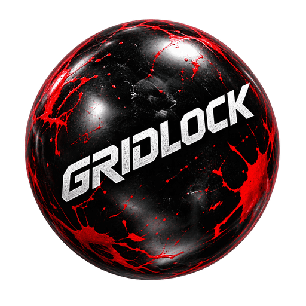

<!DOCTYPE html>
<html lang="en">
<head>
<meta charset="UTF-8"/>
<meta name="viewport" content="width=device-width, initial-scale=1, viewport-fit=cover"/>
<meta name="description" content="Gridlock Coach: plan paintball breakouts, scout opponents, track matches and manage your squad on the sideline."/>
<meta name="theme-color" content="#0b0c0d"/>
<meta name="color-scheme" content="dark"/>
<meta name="brand" content="gridlock"/>
<meta name="mobile-web-app-capable" content="yes"/>
<meta name="apple-mobile-web-app-capable" content="yes"/>
<meta name="apple-mobile-web-app-status-bar-style" content="black-translucent"/>
<meta name="apple-mobile-web-app-title" content="Gridlock"/>
<meta name="format-detection" content="telephone=no"/>
<link rel="manifest" href="manifest.webmanifest"/>
<link rel="icon" href="icon.svg" type="image/svg+xml"/>
<link rel="apple-touch-icon" href="apple-touch-icon.png"/>
<title>Gridlock System · Coach Edition</title>
<style>
:root{
  /* ---- surface: five steps, so depth means something ---- */
  --bg:#0b0c0d;        /* the page */
  --sunk:#0f1011;      /* inputs, wells */
  --panel:#161818;     /* raised object */
  --panel-2:#1e2121;   /* raised object, one step up */
  --line:#26292a;      /* hairline */
  --line-lit:#3a3f40;  /* hairline on a raised object */

  /* ---- one accent, three weights ---- */
  --accent:#ad1515; --accent-deep:#8f1010; --accent-lit:#e5252a;

  /* ---- type ----
     The secondary type was two greys, and grey on black washes out in the
     sun on a sideline. The owner's call: every grey word reads red instead,
     bright enough to hold in daylight, and whatever is chosen — the tab, a
     segment — reads white. */
  --ink:#efedeb; --mute:#ff5a52; --dim:#f04a44;

  /* ---- semantic, never decorative ---- */
  --red:#e5342f; --blue:#3d8bff; --ok:#3ecf8e; --warn:#e0a33a;

  /* ---- type scale: real steps, so a heading reads as one ---- */
  --t-hero:30px; --t-xl:21px; --t-lg:17px; --t-md:15px; --t-sm:13px; --t-xs:11px;

  /* ---- spacing scale ---- */
  --s1:4px; --s2:8px; --s3:12px; --s4:16px; --s5:24px; --s6:32px;

  --r-sm:8px; --r-md:12px; --r-lg:16px; --r-pill:999px;
  --sans:-apple-system,BlinkMacSystemFont,"Segoe UI",Roboto,sans-serif;
}

*,*::before,*::after{box-sizing:border-box}
html,body{
  margin:0;height:100%;overflow:hidden;
  background:var(--bg);color:var(--ink);
  font:400 var(--t-md)/1.45 var(--sans);
  overscroll-behavior:none;-webkit-tap-highlight-color:transparent;
  -webkit-font-smoothing:antialiased;
}
body{-webkit-touch-callout:none}
button,input,select,textarea{font:inherit;color:inherit}
button{cursor:pointer;border:0;background:none;padding:0;text-align:left}
:focus-visible{outline:2px solid var(--accent-lit);outline-offset:2px;border-radius:var(--r-sm)}
h1,h2,h3,p{margin:0}
.grow{flex:1}

/* Every control a coach taps is at least 44 px in its short axis. Apple asks
   for 44 pt and Android for 48 dp, but the real reason is the promise on the
   box: this gets used on a sideline, in a hurry, with a glove on.
   test/devices.js fails the build if anything drops under it. */

/* ============================================================
   SHELL — header and tab bar pinned, only .main scrolls
   ============================================================ */
#root{height:100%;overflow:hidden}
#tool-menu [hidden],#tool-clear[hidden],#tool-status[hidden]{display:none}
#tool-menu{display:flex;flex-direction:column;gap:var(--s5)}
#tool-find{min-width:0}
#tool-menu .list{display:grid;grid-template-columns:repeat(2,minmax(0,1fr));gap:var(--s3);border:0;background:none;overflow:visible}
#tool-menu .list__row{min-width:0;min-height:112px;align-items:flex-start;padding:var(--s4);border:1px solid var(--line-lit);border-radius:var(--r-md);background:var(--panel)}
#tool-menu .list__body{min-width:0;overflow-wrap:anywhere}
#tool-menu .list__go{display:none}
#tool-menu .list__row:hover,#tool-menu .list__row:focus-visible{background:var(--panel-2)}
@container main (max-width:340px){#tool-menu .list{grid-template-columns:1fr}}
.home-grid{display:grid;grid-template-columns:repeat(2,minmax(0,1fr));gap:var(--s3)}
.home-tool{display:flex;flex-direction:column;gap:var(--s2);min-width:0;min-height:116px;padding:var(--s4);border:1px solid var(--line-lit);border-radius:var(--r-md);background:var(--panel);overflow-wrap:anywhere}
.home-tool:hover,.home-tool:focus-visible{background:var(--panel-2)}
.home-tool b{font-size:var(--t-lg)}
.home-tool span{font-size:var(--t-sm);color:var(--mute)}
.home-intro{display:flex;flex-direction:column;gap:var(--s2)}
.home-intro h1{font-size:var(--t-hero)}
.home-match{border-left:4px solid var(--red)}
.home-match--watch{border-left-color:var(--blue)}
.home-match .btnrow{margin-top:var(--s3)}
.ctx__home{flex:none;min-width:44px;min-height:44px;margin:-12px 4px -12px 0;color:var(--ink);font:inherit;letter-spacing:0;text-transform:none;text-align:center}
.ctx__home[aria-current]{border-bottom:2px solid var(--accent-lit)}
@container main (max-width:340px){.home-tool{padding:var(--s3)}.home-tool b{font-size:var(--t-md)}}
.beta-mark{position:fixed;inset:0;z-index:50;pointer-events:none;overflow:hidden;display:flex;flex-wrap:wrap;align-content:space-around;justify-content:space-around;gap:48px 24px;transform:rotate(-24deg) scale(1.4);opacity:.07;color:var(--ink);font:700 15px/1 system-ui,sans-serif;letter-spacing:.08em;text-transform:uppercase;white-space:nowrap}
.beta-note{border:1px solid var(--line);border-radius:10px;padding:8px 12px}
.app{display:flex;flex-direction:column;height:100%;min-height:0}
.main{
  /* Layouts inside the column size off the column, not the screen: with the
     rail up, a 744 px iPad has a 528 px column, and anything that went two
     columns at a 720 px *viewport* was squeezed to half of that. */
  container-type:inline-size;container-name:main;
  flex:1;min-height:0;overflow-y:auto;-webkit-overflow-scrolling:touch;
  /* Keep the actual scroll offset on an update; anchoring a changed score
     would move the sticky result bar up into its confirmation message. */
  overflow-anchor:none;
  padding:var(--s4) calc(var(--s4) + var(--safe-area-inset-left, env(safe-area-inset-left, 0px))) var(--s6) calc(var(--s4) + var(--safe-area-inset-right, env(safe-area-inset-right, 0px)));
  display:flex;flex-direction:column;gap:var(--s5);
}
/* A scrolling flex column shrinks its children to fit. Without this every
   block is squashed — and anything with overflow:hidden gets clipped. */
.main > *{flex:0 0 auto}

/* Tablets. A phone layout stretched to 1366 px is not a tablet layout: the
   call button becomes a metre wide and a line of notes runs past 200
   characters, which nobody reads. So the whole screen holds one centred column
   — every heading on the same left edge, the way it reads on a phone — and the
   field gets 860 px, which is two and a half times what it has on a phone. */
@media (min-width:680px){
  .main{align-items:center}
  .main > *{width:100%;max-width:860px}
  /* A caption, not a wall of text. 62ch of "0"s is about 80 proportional
     characters a line, which is where the devices suite draws the line. */
  .main .note,.main p{max-width:62ch}
  /* A line straight under .main is centred by the column, so a capped one sat
     in the middle while everything above started at the left edge: it keeps
     the column's width, and a back button keeps its own instead of a 572 px bar. */
  .main > p,.main > .note{max-width:860px}
  .main > .btn:not(.btn--block):not(.btn--lg){width:auto;align-self:flex-start;margin-left:max(0px, calc((100% - 860px) / 2))}
}

.hdr{
  background:#000;border-bottom:1px solid var(--line);
  padding:var(--s3) calc(var(--s4) + var(--safe-area-inset-right, env(safe-area-inset-right, 0px))) 0 calc(var(--s4) + var(--safe-area-inset-left, env(safe-area-inset-left, 0px)));
  padding-top:calc(var(--s3) + var(--safe-area-inset-top, env(safe-area-inset-top, 0px)));
}
.hdr__top{display:flex;align-items:center;gap:var(--s3)}
.brand{font-size:var(--t-md);font-weight:800;letter-spacing:.14em;line-height:1}
.brand small{
  display:block;margin-top:3px;font-size:9px;font-weight:700;
  letter-spacing:.3em;color:var(--accent-lit);
}
.who-chip{
  font-size:var(--t-xs);font-weight:700;letter-spacing:.1em;text-transform:uppercase;
  color:var(--mute);border:1px solid var(--line-lit);border-radius:var(--r-pill);padding:4px 10px;
}
/* The score, where the header cannot crop it. Tabular figures so it does not
   twitch as the numbers change between points. */
.score-chip{
  display:inline-flex;align-items:center;gap:3px;flex:none;
  padding:4px 10px;border:1px solid var(--line-lit);border-radius:var(--r-pill);
  background:var(--panel);font-size:var(--t-sm);font-weight:800;
  font-variant-numeric:tabular-nums;letter-spacing:.02em;
}
.score-chip i{color:var(--dim);font-style:normal;font-weight:600}
.who-chip.staff{color:var(--ink);border-color:var(--accent);background:rgba(173,21,21,.18)}
/* The chip stays the size of a chip; the button round it is a 44 px target. */
.who-btn{flex:none;min-height:44px;min-width:44px;padding:0;border:0;background:none;font-family:inherit;cursor:pointer;display:inline-flex;align-items:center}

/* live context: what field and what call, always on screen */
.ctx{
  display:flex;align-items:center;gap:var(--s2);width:100%;min-height:44px;
  padding:var(--s2) 0 var(--s3);margin-top:var(--s2);
  color:var(--mute);font-size:var(--t-xs);letter-spacing:.1em;text-transform:uppercase;font-weight:700;
}
.ctx__line{
  min-width:0;flex:1;display:flex;align-items:baseline;gap:.35em;white-space:nowrap;
}
/* The event gives way first, down to a stub ("NXL…"), the call after it, the
   section never. One span for event and call ellipsized at its end, which is
   where the call was: a 28-letter play left "NXL LONE STAR OPEN · GARLAN…" and
   no call at all on a 320 px phone, and the call is the thing read between
   points. */
.ctx__ev{min-width:3.5em;flex:0 999 auto;overflow:hidden;text-overflow:ellipsis}
.ctx__call{min-width:0;flex:0 1 auto;overflow:hidden;text-overflow:ellipsis}
/* Shrink is shared in proportion: at 1 against the event's 999 the call
   still lost a fraction of a pixel while the event had room to give, and its
   ellipsis read "SNAKE STA…". At .0001 it gives nothing until the event is
   down to its stub. */
.ctx__sec{flex:none}
.ctx b{color:var(--ink);font-weight:700}
.ctx__sep{color:var(--dim)}
/* Two doors, each saying what it changes. One CHANGE ▾ at the end of the line
   sat beside the call and moved the whole app to the next event on one tap —
   a coach reaching for the call landed on another field. The event opens a
   list of the fields; the call opens Change the call. The event reads quieter
   than the call: it changes twice a season, the call every point. */
button.ctx__ev,button.ctx__call{
  display:inline-flex;align-items:center;gap:.3em;min-height:44px;margin:-12px 0;
  padding:0;border:0;background:none;color:inherit;font:inherit;letter-spacing:inherit;
  text-transform:inherit;cursor:pointer;text-align:left;
}
button.ctx__ev b{color:var(--mute)}
.ctx__call b{color:var(--ink)}
.ctx__t{min-width:0;overflow:hidden;text-overflow:ellipsis}
.ctx__car{flex:none;color:var(--accent-lit);font-style:normal;font-size:10px}
.evpick{display:grid;grid-template-columns:repeat(3,minmax(0,1fr));gap:var(--s2);padding:0 0 var(--s3)}
.evpick .fld{min-width:0;margin:0}
.evpick select{width:100%;min-width:0;min-height:44px}
.evpick__choice{grid-column:1/-1;display:flex;align-items:center;gap:var(--s2);min-width:0}
.evpick__choice span{min-width:0;overflow-wrap:anywhere}
.evhead{display:flex;align-items:center;gap:var(--s3);margin:0 0 var(--s3);min-width:0}
.evhead > div{min-width:0}
.evhead b{display:block;color:var(--ink);font-size:var(--t-md);line-height:1.25}
.evhead .note{display:block;margin:4px 0 0}
.evpick button{
  min-height:44px;padding:6px 14px;border-radius:999px;border:1px solid var(--line);
  background:none;color:var(--ink);font:inherit;font-size:var(--t-sm);font-weight:700;cursor:pointer;
  display:inline-flex;align-items:center;
}
.evpick button.on{border-color:var(--accent);background:var(--accent)}

.tabs{
  display:flex;background:#000;border-top:1px solid var(--line);
  padding:var(--s1) calc(var(--s2) + var(--safe-area-inset-left, env(safe-area-inset-left, 0px))) calc(var(--s2) + var(--safe-area-inset-bottom, env(safe-area-inset-bottom, 0px))) calc(var(--s2) + var(--safe-area-inset-right, env(safe-area-inset-right, 0px)));
}
.tabs button{
  flex:1;min-height:48px;display:flex;flex-direction:column;align-items:center;justify-content:center;gap:5px;
  color:var(--dim);font-size:10px;font-weight:700;letter-spacing:.1em;text-transform:uppercase;
}
.tabs button i{display:block;width:16px;height:2px;border-radius:2px;background:transparent}
.tabs button.on{color:var(--ink)}
.tabs button.on i{background:var(--accent-lit)}

/* Tablet. A row of five destinations along the bottom of a 1024 px screen is a
   phone habit: the thumb is nowhere near it and the labels swim in a metre of
   black. On a wide screen the same five stand in a rail down the left, the
   header sits beside them, and the field gets the room. Below 900 the bottom
   bar is right and stays. */
/* The rail. "Tablet" means every iPad in either orientation — the smallest
   is 744 px wide in portrait — and never a phone on its side, which is wider
   than that and 390 px tall. So: wide enough, and tall enough. */
@media (min-width:740px) and (min-height:600px){
  .app{display:grid;grid-template-columns:216px minmax(0,1fr);
       grid-template-rows:auto minmax(0,1fr);grid-template-areas:"rail hdr" "rail main"}
  .hdr{grid-area:hdr}
  .main{grid-area:main}
  .tabs{
    grid-area:rail;flex-direction:column;justify-content:flex-start;gap:2px;
    border-top:0;border-right:1px solid var(--line);
    padding:var(--s4) var(--s2) calc(var(--s4) + var(--safe-area-inset-bottom, env(safe-area-inset-bottom, 0px))) calc(var(--s2) + var(--safe-area-inset-left, env(safe-area-inset-left, 0px)));
  }
  .tabs button{
    flex:0 0 auto;flex-direction:row;justify-content:flex-start;gap:var(--s3);
    min-height:52px;padding:0 var(--s3);border-radius:var(--r-md);
    font-size:var(--t-sm);letter-spacing:.08em;
  }
  .tabs button i{width:3px;height:20px;border-radius:2px}
  .tabs button.on{background:var(--panel)}
}

/* ============================================================
   SECTION — an eyebrow and a rule, not another card.
   Cards are reserved for things that are actually objects.
   ============================================================ */
.sec{display:flex;flex-direction:column;gap:var(--s3)}
.sec__head{display:flex;flex-wrap:wrap;align-items:baseline;gap:var(--s3);border-bottom:1px solid var(--line);padding-bottom:var(--s2)}
/* The heading never shrinks for its note: "Save a copy" broke onto two lines beside a long summary. The note drops a line instead. */
.sec__head > .sec__eyebrow{flex:0 0 auto;max-width:100%}
.sec__eyebrow{font-size:var(--t-xs);font-weight:700;letter-spacing:.18em;text-transform:uppercase;color:var(--mute)}
.sec__note{margin-left:auto;font-size:var(--t-xs);color:var(--dim);letter-spacing:.04em}
.sec__body{display:flex;flex-direction:column;gap:var(--s3)}

.panel{
  background:var(--panel);border:1px solid var(--line);border-radius:var(--r-lg);
  padding:var(--s4);display:flex;flex-direction:column;gap:var(--s3);
}
.panel--flush{padding:0;overflow:hidden}
.panel__title{font-size:var(--t-lg);font-weight:700;letter-spacing:.01em}

.lede{color:var(--mute);font-size:var(--t-sm);line-height:1.5}
.note{color:var(--dim);font-size:var(--t-xs);line-height:1.5}
.auth-intro{margin-top:0;font-size:var(--t-sm)}
.auth-data{margin:4px 0 12px}
.auth-data summary{min-height:44px;padding:12px 0;cursor:pointer;color:var(--mute);font-size:var(--t-sm);line-height:20px;font-weight:600}
.auth-data .note{margin:0 0 8px;font-size:var(--t-sm);line-height:1.55}
.warn{color:var(--warn);font-size:var(--t-sm)}

/* ============================================================
   THE CALL — the one thing a coach needs in forty seconds
   ============================================================ */
.call{
  background:linear-gradient(150deg,#1a1010,#0f1011 60%);
  border:1px solid var(--line-lit);border-radius:var(--r-lg);
  padding:var(--s4);display:flex;flex-direction:column;gap:var(--s3);
  position:relative;overflow:hidden;
}
.call::before{
  content:"";position:absolute;left:0;top:0;bottom:0;width:3px;background:var(--accent);
}
.call__label{font-size:var(--t-xs);font-weight:700;letter-spacing:.24em;text-transform:uppercase;color:var(--accent-lit)}
.call__name{font-size:var(--t-hero);font-weight:800;letter-spacing:-.01em;line-height:1.02}
.call__read{color:var(--mute);font-size:var(--t-sm);line-height:1.45}
.call__meta{display:flex;align-items:center;gap:var(--s4);flex-wrap:wrap;padding-top:var(--s1)}

/* aggression as five pips, not a number nobody can feel */
.aggr{display:flex;align-items:center;gap:var(--s2)}
.aggr__pips{display:flex;gap:3px}
.aggr__pips i{width:14px;height:4px;border-radius:2px;background:var(--line-lit)}
.aggr__pips i.on{background:var(--accent-lit)}
.aggr__label{font-size:var(--t-xs);font-weight:700;letter-spacing:.14em;text-transform:uppercase;color:var(--dim)}

.vs{font-size:var(--t-xs);color:var(--dim);letter-spacing:.06em}
.vs--go{background:none;border:1px solid var(--line-lit);border-radius:var(--r-pill);padding:10px 12px;min-height:44px;color:var(--ink);font-family:inherit;font-weight:700;cursor:pointer;text-align:left}
.vs b{color:var(--ink)}

/* ============================================================
   CONTROLS — three shapes, so you can tell them apart:
   segmented = pick one, toggle = on/off, button = do something
   ============================================================ */
.seg{
  display:flex;gap:2px;background:var(--sunk);border:1px solid var(--line);
  border-radius:var(--r-md);padding:3px;overflow-x:auto;scrollbar-width:none;
}
.seg::-webkit-scrollbar{display:none}
.seg{-webkit-mask-image:linear-gradient(to right,#000 calc(100% - 22px),transparent);
     mask-image:linear-gradient(to right,#000 calc(100% - 22px),transparent)}
.seg:not(:has(button:nth-child(4))){-webkit-mask-image:none;mask-image:none}
/* Seven destinations do not fit one line on a phone, and a scroller hides the
   last three behind an edge nobody swipes. This one wraps instead, so every
   sub-tab is on screen. */
.seg--wrap{flex-wrap:wrap;overflow-x:visible;-webkit-mask-image:none;mask-image:none}
.seg--wrap button{flex:1 1 auto;min-width:31%}
.seg button{
  flex:1 0 auto;min-height:44px;padding:0 var(--s3);border-radius:var(--r-sm);
  color:var(--mute);font-size:var(--t-sm);font-weight:600;white-space:nowrap;
  display:flex;align-items:center;justify-content:center;transition:background .12s,color .12s;
}
.seg button.on{background:var(--accent);color:#fff;font-weight:700}
/* A segment that names teams wraps and ellipsizes rather than scrolling: two
   long names and Both pushed the third option past the edge of a phone. */
.seg--wrap{flex-wrap:wrap;overflow:visible;-webkit-mask-image:none;mask-image:none}
.seg--wrap button{flex:1 1 auto;min-width:0;max-width:100%;display:block;line-height:44px;overflow:hidden;text-overflow:ellipsis}
.assign.assign--on{outline:2px solid var(--accent-lit);outline-offset:-2px}
/* Writing a play sits with the calls, because that is where a coach is looking
   when he picks one — but it makes something rather than choosing something,
   so it is outlined rather than filled. */
.seg .seg__add{
  border:1px dashed var(--line-lit);color:var(--ink);font-weight:700;background:transparent;
}
.seg .seg__add:active{border-color:var(--accent);color:var(--accent-lit)}

.toggles{display:flex;gap:var(--s2);flex-wrap:wrap}
.tgl{
  display:inline-flex;align-items:center;gap:var(--s2);min-height:44px;padding:0 var(--s3);
  border:1px solid var(--line-lit);border-radius:var(--r-pill);background:var(--panel);
  font-size:var(--t-sm);font-weight:600;color:var(--mute);
}
.tgl i{width:7px;height:7px;border-radius:50%;background:var(--line-lit);flex:none}
.tgl.on{color:var(--ink);border-color:var(--accent)}
.tgl.on i{background:var(--accent-lit);box-shadow:0 0 0 3px rgba(229,37,42,.2)}

.btn{
  display:inline-flex;align-items:center;justify-content:center;gap:var(--s2);
  /* Vertical padding so a label that wraps — Time's up on a 320 px phone,
     Who's on in a half-width column — has room above and below it rather
     than two lines pressed against the border. One line still sits at 44. */
  min-height:44px;padding:6px var(--s4);line-height:1.25;border-radius:var(--r-md);
  background:var(--accent);color:#fff;font-size:var(--t-md);font-weight:700;
  transition:background .12s;
}
.btn:active{background:var(--accent-deep)}
.btn--block{width:100%}
.btn--lg{min-height:52px;font-size:var(--t-lg);letter-spacing:.02em}
.btn--ghost{background:transparent;color:var(--ink);border:1px solid var(--line-lit)}
.btn--ghost:active{background:var(--panel-2)}
.btn--quiet{background:transparent;color:var(--mute);border:1px solid var(--line);min-height:44px;font-size:var(--t-sm)}
.btn--danger{background:transparent;color:var(--red);border:1px solid var(--line);min-height:44px;font-size:var(--t-xs);padding:0 var(--s3)}
.btnrow{display:flex;gap:var(--s2);flex-wrap:wrap}
/* The call row under the field. A label that breaks in two reads as a broken
   button, and .grow shrinks to nothing before the row wraps — "Change the /
   call" in the 340 px card column on an iPad on its side. Labels stay on one
   line; the row wraps and the last button takes the next line whole. */
.callrow>.btn{white-space:nowrap;flex:1 1 auto}
.callrow>.btn--danger{flex:0 0 auto}   /* a red Delete stretched across a line is a target, not a button */

/* ============================================================
   FORM
   ============================================================ */
.fld{display:flex;flex-direction:column;gap:6px}
.fld > label{font-size:var(--t-xs);font-weight:700;letter-spacing:.14em;text-transform:uppercase;color:var(--mute)}
input,select,textarea{
  /* 46, not 44: inside a flex row these get shrunk half a pixel, and a control
     that measures 43.5 is a control that fails the 44 px rule. */
  width:100%;min-height:46px;flex:0 0 auto;background:var(--sunk);color:var(--ink);
  border:1px solid var(--line);border-radius:var(--r-md);padding:11px var(--s3);
}
input::placeholder,textarea::placeholder{color:var(--dim)}
/* The file picker ships a grey system button that reads as somebody else's app
   on a black panel. Same shape as every other quiet button here. */
/* The default range slider is system blue on a black panel. */
input[type=range]{
  -webkit-appearance:none;appearance:none;background:transparent;
  min-height:44px;padding:0;border:0;width:100%;
}
input[type=range]::-webkit-slider-runnable-track{height:4px;border-radius:2px;background:var(--line-lit)}
input[type=range]::-moz-range-track{height:4px;border-radius:2px;background:var(--line-lit)}
input[type=range]::-webkit-slider-thumb{
  -webkit-appearance:none;appearance:none;width:22px;height:22px;margin-top:-9px;
  border-radius:50%;background:var(--accent);border:2px solid #fff;cursor:pointer;
}
input[type=range]::-moz-range-thumb{
  width:22px;height:22px;border-radius:50%;background:var(--accent);border:2px solid #fff;cursor:pointer;
}
input[type=file]{padding:9px var(--s3);color:var(--mute);font-size:var(--t-sm)}
input[type=file]::file-selector-button{
  margin-right:var(--s3);padding:0 var(--s4);min-height:36px;
  border:1px solid var(--line-lit);border-radius:var(--r-sm);
  background:var(--panel);color:var(--ink);font:inherit;font-weight:600;cursor:pointer;
}
input[type=file]::file-selector-button:hover{border-color:var(--accent)}
textarea{min-height:78px;resize:vertical;line-height:1.45}
input:focus,select:focus,textarea:focus{border-color:var(--line-lit);outline:none}
select{appearance:none;-webkit-appearance:none;padding-right:var(--s5);
  background-image:linear-gradient(45deg,transparent 50%,var(--mute) 50%),linear-gradient(135deg,var(--mute) 50%,transparent 50%);
  background-position:calc(100% - 17px) 20px,calc(100% - 12px) 20px;background-size:5px 5px;background-repeat:no-repeat}
.checkrow{display:flex;align-items:center;gap:var(--s3);font-size:var(--t-sm);color:var(--mute)}
.checkrow input{width:22px;height:22px;min-height:0;flex:none;accent-color:var(--accent)}

/* ============================================================
   FIELD
   ============================================================ */
/* Editing handles. Big enough to find under a thumb, quiet enough not to
   fight the field when you are only looking at it. */
.hnd{fill:#0b0c0d;stroke:#fff;stroke-width:1.6;cursor:grab}
.hnd:active{cursor:grabbing}
.aim{cursor:grab}
svg.field [data-leg]{cursor:copy}
.field-wrap{background:#0b0c0d;border:1px solid var(--line);border-radius:var(--r-md);overflow:hidden}
/* Walk's sticky notes: paper on the field, beside the bunker they are about. */
.walk-map{position:relative}
/* The calendar on Schedule: a phone's calendar in the stadium colours. */
.cal-bar{display:flex;flex-wrap:wrap;align-items:center;gap:8px;margin-bottom:10px}
.cal-bar__l,.cal-bar__r{display:flex;align-items:center;gap:6px;flex-wrap:wrap}
.cal-bar__r{margin-left:auto}
.cal-title{flex:1 1 160px;margin:0;font-size:20px;color:var(--ink);white-space:nowrap;overflow:hidden;text-overflow:ellipsis}
.cal-arrow{min-width:44px;padding:0;font-size:20px}
.cal-create{background:var(--fill,#ad1515);color:#fff;border-color:transparent}
.cal-anchor{position:relative;display:inline-flex}
.cal-menu{position:absolute;top:calc(100% + 4px);left:0;z-index:20;min-width:200px;background:#141516;border:1px solid var(--line);border-radius:10px;padding:4px;box-shadow:0 10px 24px rgba(0,0,0,.6);display:flex;flex-direction:column}
.cal-menu--r{left:auto;right:0}
.cal-menu button{min-height:44px;text-align:left;background:none;border:0;border-radius:8px;color:var(--ink);font:inherit;font-size:15px;padding:0 12px;display:flex;align-items:center;gap:10px;cursor:pointer}
.cal-menu button:hover,.cal-menu button:focus-visible{background:#1f2022}
.cal-shade{position:fixed;inset:0;z-index:15;background:transparent;border:0;cursor:default}
.cal-box{width:16px;height:16px;border:2px solid var(--c);border-radius:3px;flex:none}
.cal-box.is-on{background:var(--c)}
.cal-grid{display:grid;grid-template-columns:repeat(7,minmax(0,1fr));border:1px solid var(--line);border-radius:10px;overflow:hidden;background:#0b0c0d}
.cal-wd{font-size:11px;letter-spacing:.06em;text-transform:uppercase;color:var(--mute);text-align:center;padding:6px 2px;border-bottom:1px solid var(--line)}
.cal-wd b{display:block;color:var(--ink);font-size:15px;letter-spacing:0}
.cal-cell{min-height:72px;padding:4px 3px;border-right:1px solid var(--line);border-bottom:1px solid var(--line);display:flex;flex-direction:column;gap:2px;cursor:pointer;min-width:0;outline-offset:-2px}
.cal-cell:nth-child(7n+7){border-right:0}
.cal-grid--week .cal-cell{min-height:220px}
.cal-cell.is-out{opacity:.45}
.cal-cell.is-pick{background:#1a1b1d;box-shadow:inset 0 0 0 2px #efedeb}
.cal-num{font-size:12px;color:var(--ink);font-weight:700;align-self:center;min-width:24px;height:24px;line-height:24px;text-align:center;border-radius:12px}
.cal-cell.is-today .cal-num{background:#ad1515;color:#fff}
.cal-chip{display:block;font-size:11px;line-height:1.3;color:var(--ink);white-space:nowrap;overflow:hidden;text-overflow:ellipsis;border-left:3px solid var(--c);padding-left:3px}
.cal-chip em{font-style:normal;color:var(--mute)}
.cal-chip--all{background:color-mix(in srgb,var(--c) 30%,transparent);border-left:0;padding:0 3px;border-radius:3px}
.cal-more{font-size:11px;color:var(--mute);padding-left:3px}
.cal-day{margin-top:10px}
.cal-day h4{margin:6px 0;color:var(--ink);font-size:15px}
.cal-item{border:1px solid var(--line);border-radius:10px;margin-bottom:6px;background:#111213}
.cal-item__head{display:flex;align-items:center;gap:10px;width:100%;min-height:52px;background:none;border:0;color:var(--ink);font:inherit;text-align:left;padding:6px 12px;cursor:pointer}
.cal-item__when{flex:none;width:68px;font-size:12px;color:var(--mute)}
.cal-item__what{display:flex;flex-direction:column;min-width:0}
.cal-item__what b{overflow-wrap:anywhere}
.cal-item__what span{font-size:12px;color:var(--mute)}
.cal-item__ctl{display:flex;flex-wrap:wrap;gap:6px;padding:0 10px 10px}
.cal-dot{display:inline-block;width:10px;height:10px;border-radius:50%;flex:none;vertical-align:middle;margin-right:4px}
.cal-legend{margin-top:10px}
.cal-run{margin:0 0 var(--s3)}
.cal-menu hr{border:0;border-top:1px solid var(--line);margin:4px 0}
.cal-kinds .rost__row{display:flex;gap:8px;align-items:center;margin:0 0 8px}
.cal-kinds .rost__row input{flex:1;min-width:0}
@container main (max-width:420px){.cal-cell{min-height:58px}.cal-chip{font-size:10px}.cal-chip em{display:none}.cal-title{font-size:17px;flex-basis:100%;order:-1}}
.wstick{position:absolute;z-index:3;display:flex;flex-direction:column;gap:6px;overflow:auto;-webkit-overflow-scrolling:touch;
  filter:drop-shadow(0 6px 10px rgba(0,0,0,.55))}
.wstick__head{display:flex;align-items:center;gap:8px;background:#0b0c0d;border:1px solid var(--line);border-radius:8px;padding:0 0 0 10px;color:var(--ink);font-size:13px}
.wstick__head b{white-space:nowrap;overflow:hidden;text-overflow:ellipsis}
.wstick__head span{color:var(--mute);font-size:12px;white-space:nowrap;flex:1}
.wstick__x{min-width:44px;min-height:44px;background:none;border:0;color:var(--ink);font-size:16px;cursor:pointer}
.wstick__pad{display:flex;flex-direction:column;gap:8px;padding:2px 4px 4px}
.wnote{background:#efedeb;color:#0b0c0d;border-top:5px solid #ad1515;border-radius:2px 2px 6px 6px;padding:8px 10px 6px;transform:rotate(var(--tilt,0deg))}
.wnote__text{margin:0;font-size:14px;line-height:1.35;font-weight:600;overflow-wrap:anywhere}
.wnote__when{display:block;margin-top:4px;font-size:11px;color:#5c0f0d;font-weight:700;letter-spacing:.04em;text-transform:uppercase}
.wnote--empty{background:#1a1b1d;color:var(--ink);border-top-color:#5c0f0d}
.wnote--empty .wnote__text{font-weight:500}
.arrival-grid{display:grid;grid-template-columns:repeat(2,minmax(0,1fr));gap:var(--s3)}
.arrival-grid .fld{min-width:0}
.arrival-grid select,.arrival-grid input{width:100%;min-width:0;min-height:48px}
.arrival-add{margin-top:var(--s2);min-height:44px}
.arrival-custom{grid-column:1/-1;min-width:0;border:1px solid var(--line);border-radius:var(--r-sm);padding:var(--s3)}
.arrival-custom .btnrow{flex-wrap:wrap;margin-top:var(--s3)}
.arrival-narrative{margin:0;padding-left:24px;display:grid;gap:var(--s3);font-size:var(--t-sm)}
.arrival-context{border:1px solid var(--line);border-radius:var(--r-sm);padding:0 var(--s3)}
.arrival-context summary{min-height:48px;padding:var(--s3) 0;cursor:pointer;font-size:var(--t-sm);font-weight:700}
.arrival-context .arrival-grid{padding-bottom:var(--s3)}
.arrival-playback{display:grid;grid-template-columns:repeat(3,minmax(0,1fr));gap:var(--s2)}
.arrival-playback .btn{padding:8px;min-height:48px;font-size:var(--t-sm);text-align:center;justify-content:center;line-height:1.3}
#arrival-map{touch-action:pan-y}
button:disabled{opacity:.45;cursor:default}
@media(max-width:360px){.arrival-grid{grid-template-columns:minmax(0,1fr)}}
svg.field{width:100%;height:auto;display:block}
/* A phone turned sideways is short, and the field is 150 by 120 — at full width
   it comes out taller than the screen, so you see less of it than in portrait,
   which is the wrong way round. Fit it to the height instead and centre it. */
@media (orientation:landscape) and (max-height:520px){
  .field-wrap{display:flex;justify-content:center;background:#0b0c0d}
  svg.field{width:auto;height:auto;max-height:calc(100vh - 190px);max-width:100%}
  /* Wide and short is the one shape where the call and the field fit side by
     side. Stacked, the card alone fills the screen and the field — the whole
     point of the tab — never gets on it. */
  .pbtop{display:grid;grid-template-columns:minmax(0,1fr) minmax(0,1.15fr);
         gap:var(--s3);align-items:start}
  .pbtop > *{grid-column:1} .pbtop > .field-wrap{grid-column:2;grid-row:1 / span 12}
  .pbtop .call__name{font-size:var(--t-xl);line-height:1.1}
  .pbtop .call__read{font-size:var(--t-sm)}
  .pbtop svg.field{max-height:calc(100vh - 170px)}
  /* One column across a sideways phone is a very long line to read. Cap the
     measure so a sentence still scans between points. */
  p, .lede, .note, .empty, dd{max-width:60ch}
}

/* ============================================================
   ASSIGNMENTS — the five, as a roster not a paragraph
   ============================================================ */
.assigns{display:flex;flex-direction:column;border:1px solid var(--line);border-radius:var(--r-md);overflow:hidden}
.assign{display:flex;align-items:center;gap:var(--s3);padding:var(--s3);background:var(--panel);min-height:56px}
.evd-entry{padding:var(--s3);background:var(--panel);border:1px solid var(--line);border-radius:10px;margin-bottom:var(--s2)}
.evd-entry p{margin:2px 0}
.evd-men{display:flex;flex-wrap:wrap;gap:6px}
.evd-person{margin-top:var(--s3);padding:var(--s3);border-left:3px solid var(--accent)}
.evd-src{display:block;overflow-wrap:anywhere}
/* A wide history table scrolls inside its card and never widens the pits around it. */
.evd-person .tblwrap{width:0;min-width:100%}
.assign + .assign{border-top:1px solid var(--line)}
.assign__n{
  flex:none;width:28px;height:28px;border-radius:50%;display:grid;place-items:center;
  background:var(--red);color:#fff;font-size:var(--t-sm);font-weight:800;
  font-variant-numeric:tabular-nums;
}
.assign > .tgl{flex:none}
.assign__body{flex:1;min-width:0;display:flex;flex-direction:column;gap:2px}
.assign__acts{display:flex;flex-direction:column;gap:6px;flex:none}
.assign__job{font-size:var(--t-md);font-weight:600;line-height:1.25}
/* Play and scout lights: a dot and its word, and a stripe down the row. */
.daylight{display:inline-block;width:12px;height:12px;border-radius:50%;vertical-align:middle;margin-right:6px;box-shadow:0 0 0 2px #0b0c0d,0 0 8px currentColor}
.daylight__word{font-size:var(--t-sm);letter-spacing:.06em;text-transform:uppercase;vertical-align:middle;margin-right:8px}
.daylight__key .daylight__word{margin-right:2px}
.daylight__line{display:block;margin-bottom:2px}
.daylight--up{box-shadow:inset 4px 0 0 var(--red)}
.daylight--play{box-shadow:inset 4px 0 0 var(--ok)}
.daylight--scout{box-shadow:inset 4px 0 0 var(--warn)}
.assign__who{font-size:var(--t-xs);color:var(--dim);letter-spacing:.04em}
/* The job is the thing being read; the controls act on it. On a phone there is
   not room for both on one line once every control is 44 px, so the controls
   take their own row rather than breaking the label into three. */
.assign__ctl{flex:1 0 100%;display:flex;align-items:center;gap:var(--s2);flex-wrap:wrap}
/* Measured on the column, not the screen: an iPad mini's rail leaves a 528 px
   column on a 744 px screen, and six controls beside a man's job at that
   width crushed "SB · snake wire" to a word a line. */
@container main (min-width:600px){
  .assign__ctl{flex:0 0 auto;justify-content:flex-end}
}
.ps{display:flex;gap:4px;flex:none}
/* 44 px square. Apple asks for 44 pt and Android for 48 dp, but the real
   reason is the promise on the box: this gets tapped on a sideline, in a
   hurry, with a glove on. */
.ps button{
  width:44px;height:44px;border-radius:8px;display:grid;place-items:center;
  font-size:13px;font-weight:800;letter-spacing:.04em;
  border:1px solid var(--line-lit);color:var(--dim);background:transparent;
}
.ps button.on{background:var(--accent);color:#fff;border-color:var(--accent)}

/* The wall. A panel, not a dead end: it is the shape of a call card so it
   reads as something the app is telling him, not an error. */
.gate{
  background:linear-gradient(150deg,#1a1010,#0f1011 60%);
  border:1px solid var(--line-lit);border-radius:var(--r-lg);
  padding:var(--s4);display:flex;flex-direction:column;gap:var(--s3);
}
.gate__tag{
  align-self:flex-start;font-size:var(--t-xs);font-weight:700;letter-spacing:.2em;
  text-transform:uppercase;color:#fff;background:var(--accent);
  border-radius:var(--r-pill);padding:4px 11px;
}
.gate__name{font-size:var(--t-xl);font-weight:800;line-height:1.15;margin:0}
.gate__shows{margin:0;padding-left:1.2em;display:flex;flex-direction:column;gap:6px;color:var(--ink)}
.gate__waiting{margin:0;color:var(--ink)}
/* Reports: bars in HTML so the type is the screen's own size; colour is
   never the only reading — the count is printed beside every bar. */
.rchart{margin:0 0 var(--s3)}
.rlegend{display:flex;flex-wrap:wrap;gap:var(--s2) var(--s4);font-size:var(--t-xs);color:var(--ink);margin-bottom:var(--s2)}
.rlegend span{display:inline-flex;align-items:center;gap:6px}
.rkey{width:12px;height:12px;border-radius:3px;display:inline-block}
.rkey--us,.rbar__seg--us{background:var(--red)}
.rkey--them,.rbar__seg--them{background:var(--blue)}
.rkey--none,.rbar__seg--none{background:transparent;box-shadow:inset 0 0 0 1.5px var(--ink)}
.rbar{display:grid;grid-template-columns:minmax(0,1fr) auto;gap:4px var(--s2);padding:6px 0;border-top:1px solid var(--line)}
.rlegend + .rbar,.rchart > .rbar:first-child{border-top:0}
.rbar__k{font-weight:700;color:var(--ink);min-width:0;overflow-wrap:anywhere}
.rbar__v{color:var(--ink);font-size:var(--t-sm);text-align:right}
.rbar__track,.rdiv{grid-column:1/-1;display:flex;gap:2px;height:12px;align-items:stretch}
.rbar__seg{display:block;height:100%;min-width:3px;border-radius:0}
.rbar__track .rbar__seg:first-child{border-radius:4px 0 0 4px}
.rbar__track .rbar__seg:last-child{border-radius:0 4px 4px 0}
.rbar__track .rbar__seg:only-child{border-radius:4px}
.rbar__none{font-size:var(--t-xs);color:var(--mute);line-height:12px}
.rdiv{display:grid;grid-template-columns:1fr 1fr;gap:0}
.rdiv__half{display:flex;border-left:2px solid var(--ink)}
.rdiv__half--neg{justify-content:flex-end;border-left:0}
.rdiv__half .rbar__seg{border-radius:0 4px 4px 0}
.rdiv__half--neg .rbar__seg{border-radius:4px 0 0 4px}
.rline{display:grid;grid-template-columns:auto minmax(0,1fr);grid-template-rows:auto auto;gap:0 var(--s2);align-items:center;color:var(--ink);font-size:var(--t-xs)}
.rline__hi{grid-row:1;grid-column:1;align-self:start}
.rline__lo{grid-row:2;grid-column:1;align-self:end}
.rline__svg{grid-row:1/3;grid-column:2;width:100%;height:120px;display:block}
.rline__zero{stroke:var(--line-lit);stroke-width:1;vector-effect:non-scaling-stroke}
.rline__path{fill:none;stroke:var(--red);stroke-width:2;vector-effect:non-scaling-stroke;stroke-linejoin:round}
.rline__ends{display:flex;justify-content:space-between;font-size:var(--t-xs);color:var(--ink);margin-top:4px}
/* The opponent box on Tally, lit when a tap on the field needs a team first.
   Outline and shadow only, so lighting it never moves anything under a thumb. */
#tally-opp.opp-nudge{outline:2px solid var(--accent-lit);outline-offset:8px;border-radius:var(--r-md)}
#tally-opp.opp-pulse{animation:oppPulse .6s ease-out 1}
@keyframes oppPulse{0%{box-shadow:0 0 0 0 rgba(229,37,42,.55)}100%{box-shadow:0 0 0 14px rgba(229,37,42,0)}}
@media (prefers-reduced-motion:reduce){#tally-opp.opp-pulse{animation:none}}
.opp-lede{display:grid}
.opp-lede>span{grid-area:1/1}
.opp-lede>.opp-off{visibility:hidden}
svg.field [data-pick]{-webkit-touch-callout:none;-webkit-user-select:none;user-select:none}
.gate__chip{flex:none;font-size:var(--t-xs);font-weight:700;letter-spacing:.14em;text-transform:uppercase;color:var(--mute);border:1px solid var(--line-lit);border-radius:var(--r-pill);padding:3px 9px}

.help-btn{
  /* 44 px because a thumb needs it, even though the ring reads smaller: the
     border is drawn on an inner box so the target is bigger than it looks. */
  flex:none;width:44px;height:44px;border-radius:50%;border:0;background:transparent;
  color:var(--mute);font-size:var(--t-md);font-weight:800;line-height:1;
  display:grid;place-items:center;padding:0;
}
.help-btn::before{
  content:"?";width:30px;height:30px;border-radius:50%;border:1px solid var(--line-lit);
  background:var(--panel);display:grid;place-items:center;
}
.help-btn:active::before{background:var(--accent);border-color:var(--accent);color:#fff}
.howto{margin:0;padding-left:20px;display:flex;flex-direction:column;gap:6px}
.howto li{font-size:var(--t-sm);color:var(--ink);line-height:1.5}
.list__desc{white-space:normal}

/* the breakout sheet on Tally — one bunker, one man, everything you saw */
.tsheet{border:1px solid var(--accent);border-radius:var(--r-md);padding:var(--s3);background:var(--panel);
  display:flex;flex-direction:column;gap:var(--s2)}
.tsheet .pad{margin-top:0}
/* Log is 1300 px below the top of the sheet on a phone — who, made it, how,
   the lane, at what, timing, moved to, route — and a coach logs five men a
   point. It rides the bottom of the screen while the sheet is open instead,
   so it is never a scroll away from whichever question he is on. */
.tsheet__act{position:sticky;bottom:calc(-1 * var(--s6));margin:var(--s2) calc(-1 * var(--s3)) calc(-1 * var(--s3));
  padding:var(--s2) var(--s3) var(--s3);background:var(--panel);border-top:1px solid var(--line);
  border-radius:0 0 var(--r-md) var(--r-md)}
.tsheet .fld{margin-top:var(--s1)}
.tally-head{display:flex;flex-wrap:wrap;align-items:baseline;gap:2px var(--s3);margin-bottom:var(--s2)}
.tally-head__sc{font-size:var(--t-xl);letter-spacing:-.02em;color:var(--ink)}
.tally-head__who{color:var(--mute);font-size:var(--t-sm);font-weight:600}
.tally-head__up{flex-basis:100%;color:var(--mute);font-size:var(--t-sm)}
.tally-head__up b{color:var(--ink)}
/* The result, always a thumb away on Tally: the sheet is four phone screens
   tall and We won it sat half way down it. Sticky to the foot of the column,
   so it never covers the tab bar or the field it sits under. */
.resultbar{position:sticky;bottom:calc(-1 * var(--s6));z-index:6;display:flex;gap:var(--s2);align-items:stretch;
  margin:0 calc(-1 * var(--s4)) calc(-1 * var(--s6));padding:var(--s2) var(--s4) var(--s3);
  background:var(--bg);border-top:1px solid var(--line);box-shadow:0 -10px 24px -14px rgba(0,0,0,.9)}
.resultbar .btn{min-height:52px}
.resultbar.resultbar--flow{position:static;margin-bottom:0}
/* A watched game's two names: one line each, cut short, not four lines a button. */
.resultbar .btn{min-width:0;white-space:nowrap}
.resultbar .rb__lbl{min-width:0;max-width:100%;overflow:hidden}
.resultbar .rb__name{display:inline-block;max-width:calc(100% - 4.2em);overflow:hidden;text-overflow:ellipsis;white-space:nowrap;vertical-align:bottom}
.resultbar .resultbar__back{flex:none;padding:6px 10px;min-width:56px}
.flash.flash--high{bottom:calc(158px + var(--safe-area-inset-bottom, env(safe-area-inset-bottom, 0px)))}
svg.field .tally-sel{animation:tsel 1.2s ease-in-out infinite alternate}
.tally-chart{display:flex;flex-direction:column;gap:var(--s3)}
/* On a tablet the field is most of the screen, so the sheet under it was off
   it. Past 900 px the questions stand beside the field instead. */
/* The sheet beside the field needs a column wide enough for both: the field
   is tapped, and at 240 px a bunker is a dot. Narrower than this the sheet
   goes under the field and the field scrolls to the top when a bunker is
   tapped, as on a phone. */
@container main (min-width:760px){
  .tally-chart:has(.tsheet){display:grid;grid-template-columns:minmax(0,1fr) minmax(320px,36%);align-items:start;gap:var(--s4)}
  /* The sheet stands beside the field. Auto-placement put the ends strip in
     the second column and the sheet under the field, which on an iPad in
     landscape is under the fold — the one place the rule says it must not be. */
  .tally-chart:has(.tsheet) > *{grid-column:1}
  .tally-chart:has(.tsheet) > .tsheet{grid-column:2;grid-row:1 / span 12}
}
@media (min-width:740px) and (min-height:600px){
  /* A field at the full width of a tablet is taller than the screen leaves
     room for, and Change the call, Play the break and the sheet sit under it.
     Fit it to the height that is actually there and centre it. */
  .field-wrap{display:flex;justify-content:center}
  svg.field{width:auto;height:auto;max-width:100%;max-height:max(340px, calc(100vh - 400px))}
  /* The whiteboard is a picture with an ink layer the exact size of the
     picture. Capping the picture alone letterboxed it inside a full-width
     box — 525 px of field in an 858 px wrap on an iPad on its side — so the
     wrap itself is sized from the same cap (the board is 300 by 240) and the
     picture fills it. */
  .wb-wrap{width:min(100%, calc(max(340px, 100vh - 400px) * 1.25));margin:0 auto}
  .wb-bg svg.field{max-height:none}
}
/* A tablet on its side is wide and not tall: the call card beside the field,
   as on a phone turned sideways, so Change the call and Play the break are on
   the screen with the field rather than a scroll under it. */
@media (min-width:740px) and (min-height:600px) and (orientation:landscape){
  .pbtop{display:grid;grid-template-columns:minmax(0,1fr) minmax(0,1.4fr);gap:var(--s3);align-items:start}
  /* Placed, not auto-flowed: an open picker scattered across both columns. */
  .pbtop > *{grid-column:1} .pbtop > .field-wrap{grid-column:2;grid-row:1 / span 12}
  .pbtop svg.field{max-height:max(340px, calc(100vh - 330px))}
}
@keyframes tsel{from{opacity:.55}to{opacity:1}}

/* the 8-way face pad the spec asks for */
.pad{
  flex-basis:100%;display:grid;grid-template-columns:repeat(3,1fr);gap:6px;
  margin-top:8px;padding:8px;background:var(--sunk);
  border:1px solid var(--line);border-radius:var(--r-md);
}
.pad button{
  min-height:46px;border-radius:var(--r-sm);border:1px solid var(--line-lit);
  background:var(--panel);color:var(--ink);font-size:18px;font-weight:700;
  display:grid;place-items:center;
}
.pad button.on{background:var(--accent);border-color:var(--accent);color:#fff}

/* ============================================================
   LIST — the More menu, and anything else that is a list of places
   ============================================================ */
.list{display:flex;flex-direction:column;border:1px solid var(--line);border-radius:var(--r-md);overflow:hidden}
.list__row{
  display:flex;align-items:center;gap:var(--s3);width:100%;
  padding:var(--s3) var(--s4);background:var(--panel);min-height:58px;
}
.list__row + .list__row{border-top:1px solid var(--line)}
.list__row:active{background:var(--panel-2)}
.list__body{flex:1;min-width:0;display:flex;flex-direction:column;gap:2px}
.list__name{font-size:var(--t-md);font-weight:600}
.list__desc{font-size:var(--t-sm);color:var(--dim);line-height:1.5}
.list__go{color:var(--dim);font-size:var(--t-lg);flex:none}
.list__count{
  flex:none;font-size:var(--t-xs);font-weight:700;color:var(--mute);
  background:var(--sunk);border:1px solid var(--line);border-radius:var(--r-pill);padding:3px 9px;
  font-variant-numeric:tabular-nums;
}

/* ============================================================
   PITS — the two opponents. A wire stripe, not a coloured border
   on an otherwise identical card.
   ============================================================ */
.pits{display:grid;gap:var(--s3)}
/* One column on a phone, and the team he plays comes first: it is the pit
   every other screen reads, and it sat under a card about somebody else. */
@container main (max-width:699px){.pit--r{order:-1}}
@container main (min-width:700px){.pits{grid-template-columns:1fr 1fr}}
.pit{
  background:var(--panel);border:1px solid var(--line);border-radius:var(--r-lg);
  padding:var(--s4);display:flex;flex-direction:column;gap:var(--s3);
  border-top:3px solid var(--wire);
}
/* The folded pit line is its own container: under 520 px of its own width the
   label takes a row of its own, whatever put it there — a phone, an iPad in
   portrait, or two pits sharing a column. The name has no basis of its own,
   so it ellipsizes before anything wraps. */
.pitline{display:flex;flex-wrap:wrap;gap:var(--s3);align-items:center;width:100%;min-height:52px;padding:10px 14px;background:var(--panel);border:1px solid var(--line);border-top:3px solid var(--wire);border-radius:var(--r-md);color:var(--ink);font:inherit;text-align:left;cursor:pointer;container-type:inline-size}
.pitline--l{--wire:var(--red)}.pitline--r{--wire:var(--blue)}
.pitline__side{font-size:10px;font-weight:700;letter-spacing:.12em;text-transform:uppercase;color:var(--wire)}
.pitline__side{flex:0 0 auto}
.pitline__name{flex:1 1 0;min-width:5em;font-weight:800;font-size:var(--t-md);overflow:hidden;text-overflow:ellipsis;white-space:nowrap}
.pitline__read{font-size:var(--t-xs);color:var(--dim);white-space:nowrap}
.pitline__go{font-size:var(--t-xs);color:var(--mute);font-weight:700;white-space:nowrap}
@container (max-width:519px){.pitline__side{flex-basis:100%}}
@container (max-width:359px){.pitline__read{flex-basis:100%;order:1}}   /* a 320 px phone: the read drops under the name */
.pit--l{--wire:var(--red)}
.pit--r{--wire:var(--blue)}
.pit__side{font-size:var(--t-xs);font-weight:700;letter-spacing:.18em;text-transform:uppercase;color:var(--wire)}
.pit__name{font-size:var(--t-xl);font-weight:800;line-height:1.1}
.pit__pts{font-size:var(--t-xs);color:var(--dim);font-variant-numeric:tabular-nums;letter-spacing:.06em}
.stars{display:flex;gap:2px;margin:-6px}   /* the pad is bleed, not spacing */
.star{
  width:44px;height:44px;display:grid;place-items:center;font-size:19px;line-height:1;
  color:var(--dim);
}
.star.on{color:var(--accent-lit)}

/* ============================================================
   DATA
   ============================================================ */
.bar{height:8px;border-radius:var(--r-pill);overflow:hidden;display:flex;background:var(--sunk)}
.bar i{display:block;height:100%}
.barends{display:flex;font-size:var(--t-sm);font-weight:700;font-variant-numeric:tabular-nums}
.barends span:last-child{margin-left:auto}

.facts{display:flex;flex-wrap:wrap;gap:var(--s2)}
.fact{
  display:flex;flex-direction:column;gap:1px;flex:1 0 auto;min-width:76px;
  background:var(--sunk);border:1px solid var(--line);border-radius:var(--r-sm);padding:var(--s2) var(--s3);
}
.fact b{font-size:var(--t-lg);font-weight:800;font-variant-numeric:tabular-nums;line-height:1.1}
.fact span{font-size:10px;letter-spacing:.12em;text-transform:uppercase;color:var(--dim)}

.rank{display:flex;flex-direction:column}
.rank__row{display:flex;align-items:center;gap:var(--s3);padding:var(--s3) 0;min-height:48px;width:100%}
.rank__row:active{background:var(--panel)}
.rank__row + .rank__row{border-top:1px solid var(--line)}
.rank__n{width:18px;color:var(--dim);font-size:var(--t-sm);font-weight:700;font-variant-numeric:tabular-nums;flex:none}
.rank__name{flex:1;font-size:var(--t-md);font-weight:600}
.rank__pct{font-size:var(--t-xs);font-weight:700;color:var(--dim);white-space:nowrap}
.rank__lanes{font-size:var(--t-xs);font-weight:500;color:var(--dim)}
/* The number, the call, five pips and "won 2 of 2 vs Blitz" — which never
   wraps — ran 13 px past a 320 px phone and clipped both ends of the row. In
   a narrow column the pips and the record take a second line under the call. */
@container main (max-width:460px){
  .rank__row{flex-wrap:wrap;row-gap:4px}
  .rank__name{flex:1 1 calc(100% - 18px - var(--s3));min-width:0}
  .rank__row > .aggr{margin-left:calc(18px + var(--s3))}
  .rank__pct{margin-left:auto;white-space:normal;text-align:right}
}
.clock-chip,.score-chip--go{cursor:pointer;color:var(--ink);font-family:inherit;min-height:44px}
.clock-chip{min-width:44px;justify-content:center}
/* A narrow phone with the clock and the score both up: the brand's second
   line goes, the chips tighten, and the Staff chip steps aside — Nexus says
   who is signed in. Every chip stays inside the screen. */
@media(max-width:360px){
  .hdr__top{gap:6px}
  .brand{font-size:15px;letter-spacing:.1em}
  .brand small{display:none}
  .brand img.brand-logo{height:36px;margin:0}
  .score-chip{padding:4px 8px;font-size:12px;gap:2px}
  .hdr__top .who-chip, .hdr__top .who-btn{display:none}
}
/* With the break clock up as well — four chips and a 5–6 to 7 score — a
   375 px phone ran the Staff chip 10 px past the edge. The clock carries a
   class on the header, and under 480 px it takes the same step the 360 rule
   does. The devices suite measures the header with the clock and score up. */
@media(max-width:479px){
  .hdr--clock .hdr__top{gap:6px}
  .hdr--clock .score-chip{padding:4px 8px;font-size:12px;gap:2px}
  .hdr--clock .hdr__top .who-chip, .hdr--clock .hdr__top .who-btn{display:none}
}
/* A watched game's score is two other teams' score. The chip says so, and
   reads in the right pit's blue rather than his own red. */
.score-chip--watch{border-color:var(--blue);color:var(--blue)}
.clock-chip.clock--late{border-color:var(--warn);color:var(--warn)}
.clock-chip.clock--out{border-color:var(--accent-lit);background:var(--accent);color:#fff}

.tblwrap{overflow-x:auto;border:1px solid var(--line);border-radius:var(--r-md)}
/* The format card: the four answers for one division and format, each with
   where it came from; a value no source gives is said, never filled in. */
.tbl.fmt-tbl{min-width:0}
.fmt-tbl th[scope=row]{text-align:left;color:var(--mute);font-weight:600;width:38%;vertical-align:top}
.tbl.fmt-tbl td,.tbl.fmt-tbl th{white-space:normal;vertical-align:top}
.tbl.fmt-gl th,.tbl.fmt-gl td{padding-left:5px;padding-right:5px}
.tbl.fmt-gl thead th{letter-spacing:0}
.fmt-src{display:block;color:var(--dim);font-size:12px;margin-top:2px}
.fmt-none{color:var(--warn, #e5a72a)}
.fmt-glance summary{cursor:pointer;min-height:44px;display:flex;align-items:center;font-weight:600;color:var(--ink)}
.tbl{width:100%;border-collapse:collapse;font-size:var(--t-sm);min-width:340px}
.tbl th{
  font-size:10px;font-weight:700;letter-spacing:.12em;text-transform:uppercase;color:var(--dim);
  text-align:left;padding:var(--s2) var(--s3);background:var(--sunk);white-space:nowrap;
}
.tbl td{padding:var(--s3);border-top:1px solid var(--line);white-space:nowrap}
.tbl tr.tap td{height:44px}
.tbl tbody tr{background:var(--panel)}
.tbl tbody tr:active{background:var(--panel-2)}
/* Nine columns are 670 px, and on a phone 280 of them sat past the edge of a
   sideways scroll nobody finds. Film, Roster and Read from are the three the
   pit card already says, so in a narrow column they fold away. */
@container main (max-width:620px){.tbl .col-opt{display:none}}
/* A table never hides a column behind a sideways scroll. On a narrow column
 * the rank goes, the cells tighten, the team name may wrap and the stars read
 * as a number — the Division board was 433 px in a 356 px wrap on every
 * phone, with Threat behind an edge nobody swipes. */
.tbl td.team{white-space:normal;min-width:7em}
.tbl--stats tr.on td{background:rgba(255,255,255,.06)}
.tbl--stats tr.thin td{opacity:.55}
.tbl--stats{min-width:0;width:100%}
.tbl--stats th{white-space:normal;line-height:1.2;vertical-align:bottom}
.tbl--stats th,.tbl--stats td{padding-left:8px;padding-right:8px}
.tbl--stats .tbl__pick{gap:6px;flex-wrap:wrap}
.tbl__pick{appearance:none;background:none;border:0;color:inherit;font:inherit;text-align:left;cursor:pointer;min-height:44px;padding:4px 0;display:flex;align-items:center;gap:10px}
.tbl__pick:focus-visible{outline:2px solid #efedeb;outline-offset:2px}
.tbl__sub{font-size:12px;color:var(--mute)}
.tbl--stats td{padding-top:2px;padding-bottom:2px}
.player-dialog{color:var(--ink);background:var(--panel);border:1px solid var(--line-lit);border-radius:16px;padding:20px;width:min(540px,calc(100vw - 24px));max-height:calc(100vh - 24px);max-height:calc(100dvh - 24px);box-sizing:border-box;overflow:auto;overscroll-behavior:contain}
.player-dialog:not([open]){display:none}
.player-dialog--fallback{display:block;position:fixed;inset:12px 0 auto;margin:0 auto;z-index:1001}
#player-shade{position:fixed;inset:0;background:rgba(0,0,0,.78);z-index:1000;touch-action:none}
#player-shade[hidden]{display:none}
.player-dialog::backdrop{background:rgba(0,0,0,.78)}
.player-dialog h2{margin:0;font-size:var(--t-lg);overflow-wrap:anywhere}
.player-dialog .kv__v{overflow-wrap:anywhere}
.player-dialog .fld{margin-top:var(--s3)}
.player-dialog .btnrow{margin-top:var(--s3)}
.player-dialog summary{min-height:44px;padding:12px 0;cursor:pointer}
.player-dialog__head{display:flex;align-items:center;gap:12px;position:sticky;top:-20px;background:var(--panel);padding:12px 0;z-index:1}
.player-dialog__head button{margin-left:auto;flex-shrink:0}
.player-dialog__status{font-size:var(--t-lg);font-weight:800;margin:16px 0 8px}
.player-quick{display:grid;grid-template-columns:1fr 1fr;gap:10px;margin:16px 0 8px}
.player-quick button{min-height:64px;border:1px solid var(--line-lit);border-radius:12px;padding:12px;text-align:center;font-size:18px;font-weight:800}
.player-quick button[aria-pressed="true"]{background:var(--accent);border-color:var(--accent-lit);color:var(--ink)}
.player-dialog .player-extra{margin-top:12px}
.player-dialog .player-extra summary{font-weight:700}
.player-percentages{margin-top:12px;min-width:0}
.player-percentages summary{cursor:pointer;min-height:44px;padding:12px 0;font-weight:700;overflow-wrap:anywhere}
.player-percentages .note{margin:8px 0;max-width:60ch}
.player-percent-grid{display:grid;grid-template-columns:repeat(2,minmax(0,1fr));gap:8px;margin:12px 0}
.player-percent-grid>div{border:1px solid var(--line);border-radius:10px;padding:10px;min-width:0}
.player-percent-grid dt{font-weight:700}
.player-percent-grid dd{margin:6px 0 0;color:var(--mute);font-size:var(--t-sm);overflow-wrap:anywhere}
.tbl .th-num{display:none}
@container main (max-width:620px){
  .tbl{min-width:0}
  .tbl th,.tbl td{padding:8px 6px}
  .tbl td.team{min-width:5.5em}   /* at 320 px the board was 288 px in a 286 px wrap; the name column gives */
  .tbl .col-rank{display:none}
  .tbl .th-stars{display:none} .tbl .th-num{display:inline}
}
.tbl .num{font-variant-numeric:tabular-nums;color:var(--dim)}
.tag{
  font-size:10px;font-weight:700;letter-spacing:.08em;padding:2px 7px;border-radius:var(--r-pill);
  border:1px solid var(--line-lit);color:var(--mute);
}
.tag--paid{color:var(--ok);border-color:rgba(62,207,142,.4)}
.tag--pend{color:var(--warn);border-color:rgba(224,163,58,.4)}

/* The roster editor. Every field is editable in place, because a coach fixing
   a squad number should not have to delete a player and type him again. */
.rost{display:flex;flex-direction:column;gap:var(--s3)}
.rost__p{
  display:grid;grid-template-columns:66px 1fr auto;gap:var(--s2);align-items:center;
  padding:var(--s3);background:var(--panel);border:1px solid var(--line);border-radius:var(--r-md);
}
.rost__p input{min-width:0}
/* On a phone the number and Remove took most of the row and cut names off. */
@container main (max-width:420px){ .rost__p{grid-template-columns:56px 1fr} .rost__p > .btn--danger{grid-column:1/-1;justify-self:end} }
.rost__ps{grid-column:1/-1;display:grid;grid-template-columns:1fr 1fr;gap:var(--s2)}
.rost__ps label{display:flex;flex-direction:column;gap:4px}
/* Their man's wire and five threat stars side by side need ~460 px: on a
   320 px phone the stars pushed the second column wide, the wire picker
   shrank to its arrow and the rows under it ran past the card. Narrower than
   that, each takes its own row. */
.rost__ps--pit{grid-template-columns:repeat(auto-fit,minmax(min(100%,232px),1fr))}
.rost__num{text-align:center;font-weight:700}
.rost__add{display:grid;grid-template-columns:66px 1fr;gap:var(--s2)}
.rost__add .rost__ps{grid-column:1/-1}
/* The lane you asked about, answered in one line. */
.verdict{display:flex;flex-direction:column;gap:2px;margin-top:var(--s3);
  padding:var(--s3);border-radius:var(--r-sm);border-left:3px solid var(--line-lit);background:var(--sunk)}
.verdict b{font-size:var(--t-lg);letter-spacing:.02em}
.verdict span{font-size:var(--t-sm);color:var(--mute)}
.verdict--yes{border-left-color:var(--ok)}
.verdict--yes b{color:var(--ok)}
.verdict--no{border-left-color:var(--accent-lit)}
.verdict--no b{color:var(--accent-lit)}
/* A table row that answers a question is a control, and has to be hittable.
   Some of them answer a second question on a press and hold, so the row must
   not select its own text or raise the iOS callout while you are holding it. */
tr.tap{-webkit-user-select:none;user-select:none;-webkit-touch-callout:none}
tr.tap td{cursor:pointer}
tr.tap td:first-child{position:relative}
tr.tap--on td{background:var(--sunk)}
tr.tap--on td:first-child::before{content:"";position:absolute;left:0;top:0;bottom:0;
  width:3px;background:var(--accent-lit)}
svg.field [data-pick]{cursor:crosshair}
.rost__read{display:grid;grid-template-columns:52px 1fr auto;align-items:center;gap:var(--s3);
  padding:var(--s2) var(--s3);background:var(--sunk);border-radius:var(--r-sm);min-height:48px}
.rost__read b{text-align:center;font-weight:700;color:var(--accent-lit)}
.rost__read span{min-width:0;overflow:hidden;text-overflow:ellipsis;white-space:nowrap}
.paste{margin-top:var(--s3);padding:var(--s3);border:1px solid var(--line);border-radius:var(--r-md)}

.who2{display:grid;grid-template-columns:1fr 1fr;gap:var(--s3)}
/* A grid column is as wide as its longest word unless told otherwise: "San
   Antonio X-Factor Elite Squad · 5 up" on a 320 px phone pushed the two
   columns 70 px past the edge. The columns shrink and long names break. */
.who2>div{min-width:0}
.who2 h4,.who2 .assign__job{overflow-wrap:break-word;hyphens:auto}
@container main (max-width:340px){ .who2{grid-template-columns:1fr} }
.who2 h4{margin:0 0 var(--s2);font-size:var(--t-xs);font-weight:700;letter-spacing:.12em;text-transform:uppercase;color:var(--mute)}
.who2 ol{margin:0;padding:0;list-style:none;display:flex;flex-direction:column;gap:5px}
.who2 li{font-size:var(--t-sm);color:var(--ink);display:flex;gap:var(--s2)}
.who2 li b{color:var(--dim);font-weight:700;font-variant-numeric:tabular-nums;flex:none;width:14px}
.who2 li>span{min-width:0;flex:1}
/* Matchup's two lists carry a read under each man: two columns on a phone
   put it in 90 px, a word a line. One column under 560 px of column. */
@container main (max-width:560px){ .who2--stack{grid-template-columns:1fr} }

.kv{display:flex;flex-direction:column;gap:var(--s3)}
.kv__row{display:flex;flex-direction:column;gap:3px}
.kv__k{font-size:var(--t-xs);font-weight:700;letter-spacing:.14em;text-transform:uppercase;color:var(--accent-lit)}
.kv__v{font-size:var(--t-sm);color:var(--ink);line-height:1.5}
.fmt-disclosure{margin-top:var(--s2);border-top:1px solid var(--line)}
.fmt-disclosure>summary{display:flex;align-items:center;justify-content:space-between;gap:var(--s2);min-height:48px;padding:var(--s2) 0;cursor:pointer;font-weight:700;color:var(--ink)}
.fmt-values{display:grid;grid-template-columns:repeat(2,minmax(0,1fr));gap:var(--s2);margin:var(--s2) 0}
.fmt-values>div{padding:var(--s2);border:1px solid var(--line);border-radius:var(--r-sm)}
.fmt-values dt{font-size:var(--t-xs);color:var(--mute)}
.fmt-values dd{margin:4px 0 0;font-size:var(--t-sm);font-weight:700;color:var(--ink);overflow-wrap:anywhere}

.code{
  font-family:ui-monospace,SFMono-Regular,Menlo,monospace;font-size:var(--t-sm);
  letter-spacing:.08em;background:var(--sunk);border:1px solid var(--line);
  border-radius:6px;padding:3px 8px;
}
.joinrow{display:flex;gap:var(--s4);align-items:center;flex-wrap:wrap}
.joinrow > div{flex:1 1 180px}
/* White ground and a real quiet zone: a camera needs both. */
.qr{flex:none;background:#fff;border-radius:6px;display:block}
.joincode{
  align-self:flex-start;font-family:ui-monospace,SFMono-Regular,Menlo,monospace;
  font-size:var(--t-xl);font-weight:700;letter-spacing:.14em;color:var(--accent-lit);
  background:var(--sunk);border:1px dashed var(--line-lit);border-radius:var(--r-md);padding:var(--s2) var(--s4);
}

/* the training-aid line, everywhere it is required */
.aid{border-left:2px solid var(--accent);padding-left:var(--s3);font-size:var(--t-xs);color:var(--dim);line-height:1.5}
.aid b{color:var(--mute);font-weight:700}

.empty{
  border:1px dashed var(--line);border-radius:var(--r-md);padding:var(--s5) var(--s4);
  text-align:center;color:var(--dim);font-size:var(--t-sm);
}

/* first-run tip */
.tip{
  display:flex;align-items:flex-start;gap:var(--s3);
  background:rgba(173,21,21,.12);border:1px solid rgba(173,21,21,.5);
  border-radius:var(--r-md);padding:var(--s3);font-size:var(--t-sm);color:var(--ink);line-height:1.45;
}
.flash{position:fixed;left:50%;transform:translateX(-50%);
  bottom:calc(70px + var(--safe-area-inset-bottom, env(safe-area-inset-bottom, 0px)));
  z-index:60;max-width:calc(100% - 32px);width:max-content;text-align:left;
  background:var(--panel-2);border:1px solid var(--accent);border-radius:var(--r-md);
  padding:12px var(--s4);color:var(--ink);font-size:var(--t-sm);line-height:1.4;cursor:pointer;
  box-shadow:0 14px 34px -12px rgba(0,0,0,.85);animation:flashin .16s ease-out}
@keyframes flashin{from{opacity:0;transform:translate(-50%,8px)}to{opacity:1;transform:translate(-50%,0)}}
.tip button{flex:none;color:var(--accent-lit);font-weight:700;font-size:var(--t-sm);
  min-height:44px;min-width:44px;margin:-11px 0;padding:0 var(--s2)}

/* Landscape quick-log — a full-bleed layer for calling and scoring on the fly.
   Reads best sideways; still usable upright because the web cannot force a
   phone to rotate. */
.qlog{position:fixed;inset:0;z-index:70;background:var(--bg);
  display:flex;flex-direction:column;gap:var(--s3);
  padding:calc(var(--s4) + var(--safe-area-inset-top, env(safe-area-inset-top,0px)))
          calc(var(--s4) + var(--safe-area-inset-right, env(safe-area-inset-right,0px)))
          calc(var(--s4) + var(--safe-area-inset-bottom, env(safe-area-inset-bottom,0px)))
          calc(var(--s4) + var(--safe-area-inset-left, env(safe-area-inset-left,0px)));
  overflow-y:auto}
.qlog__top{display:flex;align-items:center;gap:var(--s3)}
.qlog__vs{font-size:var(--t-sm);font-weight:700;color:var(--mute);min-width:0;
  overflow:hidden;text-overflow:ellipsis;white-space:nowrap}
.qlog__pt{font-size:var(--t-xs);font-weight:700;letter-spacing:.14em;color:var(--dim)}
.qlog__call{display:flex;align-items:center;gap:var(--s3);width:100%;
  background:linear-gradient(150deg,#1a1010,#0f1011 60%);
  border:1px solid var(--line-lit);border-radius:var(--r-lg);padding:var(--s3) var(--s4);min-height:56px}
.qlog__label{font-size:var(--t-xs);font-weight:700;letter-spacing:.2em;color:var(--accent-lit);flex:none}
.qlog__name{flex:1;min-width:0;font-size:var(--t-xl);font-weight:800;line-height:1.05;
  overflow:hidden;text-overflow:ellipsis;white-space:nowrap}
.qlog__caret{flex:none;font-size:var(--t-xs);font-weight:700;color:var(--dim)}
.qlog__pick{flex:0 0 auto}
.qlog__score{display:grid;grid-template-columns:1fr 1fr;gap:var(--s3);flex:1 1 auto;min-height:0}
.qlog__score .btn{height:100%;min-height:96px;font-size:var(--t-hero);font-weight:800}
.qlog__row{display:flex;gap:var(--s2);flex-wrap:wrap}
.qlog__hint{color:var(--dim);font-size:var(--t-xs);line-height:1.4;margin:0}
/* Sideways and short: the two score buttons fill the height beside a compact
   top, so the whole loop is one thumb-reach with nothing to scroll. */
/* Shown only on a phone turned sideways; everywhere else the quick log is
   offered where it was, at the foot of the point sheet. */
.read-line{margin:var(--s2) 0 0;max-width:70ch}
.read-line--warn{color:var(--warn);margin-top:4px} .read-line--warn b{color:var(--warn)}
.read-line b{color:var(--ink)}
/* A button inside a note is still a button a gloved thumb has to hit: 44 px,
   the same as every other target, and it stands on its own line under the
   sentence rather than hanging off the end of it. */
.read-line__go{display:inline-flex;align-items:center;min-height:44px;padding:8px 14px;margin:6px 0 0;vertical-align:middle}
.turn-bar{display:none}
/* Upright, the call is what is read between points: it wraps rather than
   ending "Snake …", the opponent takes a line of its own rather than "Rej…"
   beside the buttons, and "We won it" stays on one line. */
@media (orientation:portrait){
  .qlog__name{white-space:normal;overflow-wrap:anywhere}
  .qlog__top{flex-wrap:wrap}
  .qlog__vs{order:9;flex:1 1 100%}
  .qlog__score .btn{font-size:var(--t-xl)}
}
@media (orientation:landscape) and (max-height:520px){
  .turn-bar{display:flex}
  .qlog__hint{display:none}
  .qlog__score .btn{min-height:0}
}

/* Whiteboard — the field (or a blank board) with an ink layer over it. */
.wb-wrap{position:relative;border:1px solid var(--line);border-radius:var(--r-md);
  overflow:hidden;background:#0b0c0d;touch-action:none}
.wb-bg{pointer-events:none}
.wb-bg svg{display:block;width:100%;height:auto}
.wb-ink{position:absolute;inset:0;width:100%;height:100%;touch-action:none;cursor:crosshair}
.wb-tools{display:flex;align-items:center;gap:var(--s2);flex-wrap:wrap}
.wb-pen{width:44px;height:44px;border-radius:50%;border:2px solid var(--line-lit);
  background:var(--panel);display:grid;place-items:center}
.wb-pen i{width:18px;height:18px;border-radius:50%;background:var(--pen)}
.wb-pen.on{border-color:var(--ink);box-shadow:0 0 0 2px var(--bg),0 0 0 4px var(--pen)}
.wb-tool{width:44px;height:44px;border-radius:var(--r-sm);border:1px solid var(--line-lit);
  background:var(--panel);color:var(--ink);font-size:18px;display:grid;place-items:center}
.wb-tool.on{background:var(--accent);border-color:var(--accent);color:#fff}
.wb-tool--txt{width:auto;padding:0 var(--s3);font-size:var(--t-sm);font-weight:700}

/* ============================================================
   PROMO
   ============================================================ */
.promo{
  height:100%;overflow-y:auto;display:flex;flex-direction:column;
  padding:calc(var(--s6) + var(--safe-area-inset-top, env(safe-area-inset-top, 0px))) calc(var(--s5) + var(--safe-area-inset-right, env(safe-area-inset-right, 0px))) calc(var(--s5) + var(--safe-area-inset-bottom, env(safe-area-inset-bottom, 0px))) calc(var(--s5) + var(--safe-area-inset-left, env(safe-area-inset-left, 0px)));
  gap:var(--s5);
  background:
    radial-gradient(1200px 540px at 50% 0%, rgba(173,21,21,.32) 0%, transparent 60%),
    linear-gradient(#000,#0b0c0d);
}
.promo > *{flex:0 0 auto}
/* Sits at the bottom when there is room and stays reachable when there is not.
   justify-content:flex-end pushes the first child above the scroll origin the
   moment the content is taller than the box, and it can never be scrolled back
   to — which is how the headline ended up under the status bar. */
.promo > :first-child{margin-top:auto}
/* A tablet: one centred column, the pitch and the buttons the same width,
   in the middle of the screen rather than a phone's column at its foot. */
@media (min-width:740px) and (min-height:600px){
  .promo{align-items:center}
  .promo > *{width:100%;max-width:520px}
  .promo > :last-child{margin-bottom:auto}
}
.promo__mark{display:flex;flex-direction:column;gap:var(--s2)}
.promo__name{font-size:44px;font-weight:800;letter-spacing:.14em;line-height:1}
/* The app uses the ball alone. Its transparent edge needs no blending that
   would wash out the black surface. Variants retain their own text name. */
.promo__name img.brand-logo{display:block;width:112px;max-width:100%;height:auto}
.brand img.brand-logo{display:block;height:36px;width:auto;margin:0}
.brand img.brand-logo + small{display:none}
.promo__sys{font-size:var(--t-xs);font-weight:700;letter-spacing:.42em;color:var(--accent-lit)}
.promo__tag{font-size:var(--t-xl);font-weight:600;line-height:1.25;max-width:19ch}
.promo__sub{color:var(--mute);font-size:var(--t-sm);max-width:38ch}
/* What it does, before he has to decide anything. */
.promo__does{margin:0;padding:0;list-style:none;display:flex;flex-direction:column;gap:8px;max-width:40ch}
.promo__does li{
  position:relative;padding-left:18px;color:var(--ink);font-size:var(--t-sm);line-height:1.45;
}
.promo__does li::before{
  content:"";position:absolute;left:0;top:.55em;width:7px;height:2px;border-radius:1px;background:var(--accent-lit);
}
.stack{display:flex;flex-direction:column;gap:var(--s2)}
.cup{min-width:0;width:100%}
.cup .list__row{width:100%;min-width:0;text-align:left;white-space:normal}
.cup .list__body{min-width:0}
.cup>.btn{max-width:100%;white-space:normal;text-align:left}
.cup select,.cup input{min-width:0;max-width:100%;width:100%}
.cup p{max-width:72ch}
.cup p,.cup a,.cup .list__name,.cup .list__desc,.cup h3{overflow-wrap:anywhere}
.cup summary{cursor:pointer;min-height:44px;padding:12px 0;color:var(--ink)}
/* A fold is a button: the two that were a line of type tall. */
.who2--off{display:none}
.depth-note{display:flex;flex-wrap:wrap;gap:var(--s2);align-items:center;justify-content:space-between;margin:0 0 var(--s3)}
.rost__paste>summary,.codes-key>summary{cursor:pointer;min-height:44px;display:flex;align-items:center;font-weight:600}
.cup-about{margin-top:var(--s3)}
.cup-pages{align-items:center;justify-content:space-between;flex-wrap:wrap;margin-top:var(--s3)}
.cup-history article{padding:var(--s3) 0;border-bottom:1px solid var(--line)}
</style>
<style>
.voice-live,.voice-event{padding:14px;border:1px solid var(--line);border-radius:10px;margin:12px 0;background:var(--sunk);overflow-wrap:anywhere}
.voice-live[data-listening="true"]{border-color:#3ecf8e}
.voice-status{font-weight:700;margin:0 0 8px}.voice-partial{min-height:1.5em;color:var(--dim)}
.voice-event--review{border-color:#9f772c}.voice-meta{font-size:var(--t-xs);color:var(--dim);margin-bottom:8px}
.voice-transcript{white-space:pre-wrap;margin:10px 0}.voice-tools{display:flex;flex-wrap:wrap;gap:8px;margin:10px 0}
.voice-editor{border-top:1px solid var(--line);padding-top:12px;margin-top:12px}.voice-editor textarea,#voice-manual{width:100%;min-height:72px}
.voice-grid{display:grid;grid-template-columns:repeat(2,minmax(0,1fr));gap:12px}.voice-grid .fld{min-width:0}.voice-grid select{width:100%;min-width:0}
@media(max-width:420px){.voice-grid{grid-template-columns:1fr}}
.coach-start{display:grid;grid-template-columns:repeat(2,minmax(0,1fr));gap:var(--s2);margin:var(--s3) 0}.coach-start .btn{min-height:56px;white-space:normal;text-align:left;justify-content:flex-start}.coach-terms{margin-top:var(--s3);border-top:1px solid var(--line)}.coach-terms summary{display:flex;align-items:center;min-height:48px;cursor:pointer;color:var(--mute);font-weight:700}.coach-terms .kv{margin-top:var(--s2)}@media(max-width:480px){.coach-start{grid-template-columns:1fr}}
</style>
</head>
<body>
<div id="root"></div>
<div id="player-shade" hidden aria-hidden="true"></div>
<dialog id="player-details" class="player-dialog" role="dialog" aria-modal="true" aria-labelledby="player-detail-title"></dialog>
<script src="voice-parser.js"></script>
<script src="speech.js"></script>
<script src="voice.js"></script>
<script src="fflate.js"></script>
<script src="world-cup-data.js"></script>
<script src="world-cup.js"></script>
<script>
const STORE_KEY = "gridlock.coach.v2";
const BANNED = /gunz\s*up/ig;
function clean(s){return String(s||"").replace(BANNED,"Shot lanes")}

// What each break is, in a coach's words, and how hot it runs (1–5).
// Aggression drives the counter-picker ranking and the pips on the call.
const BREAK_META = {
  hold:  {aggr:1, read:"Give up nothing early. Read their bodies, then trade on your terms.",
          vs:{Snake:2, Balanced:1, Dorito:4}},
  base:  {aggr:2, read:"Wire to wire, five jobs, no gaps. The call you make when you are level.",
          vs:{Snake:3, Balanced:3, Dorito:3}},
  snake: {aggr:3, read:"Overload the bottom. Runner goes on the buzzer, support fills behind.",
          vs:{Snake:-2, Balanced:5, Dorito:6}},
  flood: {aggr:4, read:"Weight the D-wire and take the corner before they set.",
          vs:{Snake:6, Balanced:2, Dorito:-2}},
  blitz: {aggr:5, read:"Both wires at once. You are down and the point has to end early.",
          vs:{Snake:1, Balanced:4, Dorito:1}},
  conserve: {aggr:1, read:"Nobody past the quarter. Trade from your own end and make them come to you.",
          vs:{Snake:3, Balanced:0, Dorito:3}},
  lock:  {aggr:1, read:"Five on lanes and nobody runs. Every yard they take costs them a body.",
          vs:{Snake:5, Balanced:0, Dorito:5}},
  trade: {aggr:2, read:"Everyone to a bunker he can shoot from. No runners — win the exchange.",
          vs:{Snake:2, Balanced:4, Dorito:2}},
  tower: {aggr:2, read:"Own the middle. From there you see both wires and they cannot cross.",
          vs:{Snake:5, Balanced:2, Dorito:5}},
  contain: {aggr:2, read:"A man up each wire to deny the corner, three back holding the middle.",
          vs:{Snake:4, Balanced:1, Dorito:4}},
  split: {aggr:3, read:"Two on each wire, nothing in the middle. Win an end before they rotate.",
          vs:{Snake:1, Balanced:4, Dorito:1}},
  counter: {aggr:3, read:"Take the middle first, then answer whichever wire they committed to.",
          vs:{Snake:4, Balanced:2, Dorito:4}}
};
function breakMeta(k){
  if(isMine(k)){
    const p = customPlay(k) || {};
    // No vs-tendency table: a ranking against a team is the app's opinion, and
    // it has none about a call it has never seen. Counter shows his own answer.
    return {aggr: Math.min(5, Math.max(1, +p.aggr || 3)),
            read: (p.read || "").trim() || "Your own call. Write the read on Playbook.", vs: {}};
  }
  return BREAK_META[k] || BREAK_META.base;
}

// A break on a digitized layout is written as the bunker each player plants
// on, never as a typed coordinate — the position comes from the layout, so
// the call stays true to the field even if the map is re-digitized.
// The snake is one continuous beam a player crawls down, not nine bunkers to
// share out — the official 3D makes that plain. So exactly one player takes it
// on any break; the rest support off it.
const BREAK_PLANTS = {
  lso: {
    hold:     ["SB#9","MT#3","C#2","T#1","MT#1"],
    base:     ["SB#12","MT#3","GW#2","Br#2","SD#1"],
    snake:    ["SB#11","MW#4","Tr#3","GB#2","Br#2"],
    flood:    ["MD#2","MD#1","SD#1","Br#2","C#2"],
    blitz:    ["SB#11","Tr#3","Tr#2","Br#2","MD#2"],
    conserve: ["MW#1","T#4","C#2","T#1","MT#1"],
    counter:  ["Tr#2","SB#12","SD#1","MT#3","T#1"],
    split:    ["MW#4","MT#3","MD#1","Br#2","C#4"],
    tower:    ["Tr#2","GW#2","MT#3","Br#2","MW#1"],
    trade:    ["MW#4","MT#3","GW#2","Br#2","MD#1"],
    contain:  ["SB#11","MD#2","C#2","T#4","T#1"],
    lock:     ["MW#1","MT#3","C#2","T#1","MT#1"]
  },
  tby: {
    hold:     ["Ck#1","C#1","GW#1","MD#6","SD#1"],
    base:     ["SB#12","C#1","GW#1","MT#1","MD#1"],
    snake:    ["SB#13","Wg#1","C#3","GB#1","MT#1"],
    flood:    ["MD#2","MD#1","SD#1","MT#1","GW#1"],
    blitz:    ["SB#13","C#3","Tr#3","Tr#1","MD#2"],
    conserve: ["SB#10","T#3","T#1","MD#6","SD#1"],
    counter:  ["SB#3","Br#5","MD#1","C#1","MW#1"],
    split:    ["SB#12","C#1","MD#2","MT#1","T#1"],
    tower:    ["Tr#3","GW#1","C#1","MW#1","SB#10"],
    trade:    ["Br#5","GB#1","GW#1","MT#1","MD#1"],
    contain:  ["SB#13","MD#2","T#1","T#3","MW#1"],
    lock:     ["SB#10","C#1","T#1","MW#1","SD#1"]
  },
  mwo: {
    hold:     ["Br#5","Ck#1","T#3","C#2","MD#5"],
    base:     ["Wg#2","Ck#1","GW#1","C#4","MD#1"],
    snake:    ["GP#1","Wg#2","SB#6","GW#2","C#4"],
    flood:    ["SB#1","MD#1","MD#5","C#4","T#3"],
    blitz:    ["GP#1","SB#6","GW#1","Tr#1","MD#2"],
    conserve: ["SD#1","SB#3","T#3","Br#2","T#1"],
    counter:  ["GW#1","Wg#2","MD#1","SB#3","Br#2"],
    split:    ["Wg#2","SB#4","MD#2","C#4","T#3"],
    tower:    ["GW#1","T#3","Ck#1","C#4","Br#5"],
    trade:    ["Wg#2","MW#3","T#3","C#4","MD#1"],
    contain:  ["GP#1","MD#2","T#3","SB#3","Br#2"],
    lock:     ["Br#5","SB#3","T#3","Br#2","T#1"]
  },
  ujt: {
    hold:     ["T#13","T#6","T#3","SD#1","GB#1"],
    base:     ["Ck#1","T#6","C#4","C#1","MD#4"],
    snake:    ["SB#13","Ck#1","C#6","C#7","C#1"],
    flood:    ["MD#1","MD#2","MD#4","C#1","T#3"],
    blitz:    ["SB#13","C#6","C#3","C#1","MD#1"],
    conserve: ["GB#3","T#7","T#3","SD#1","GB#1"],
    counter:  ["C#4","SB#3","MD#4","T#7","SD#1"],
    split:    ["SB#9","T#6","MD#2","C#1","GP#1"],
    tower:    ["SB#1","T#3","T#6","SD#1","GB#3"],
    trade:    ["MW#1","T#6","C#4","C#1","MD#2"],
    contain:  ["MW#3","MD#2","T#3","T#7","SD#1"],
    lock:     ["GB#3","T#7","T#3","SD#1","GB#1"]
  },
  ugp: {
    hold:     ["SB#3","MT#3","GW#1","T#1","MD#5"],
    base:     ["Tr#3","MT#3","GW#1","Wg#1","MD#3"],
    snake:    ["T#5","SB#6","GB#2","Tr#1","Wg#1"],
    flood:    ["MD#1","MD#3","MD#5","Wg#1","GW#1"],
    blitz:    ["T#5","GB#2","GB#1","MT#2","MD#1"],
    conserve: ["MW#3","T#3","GP#1","T#1","MD#5"],
    counter:  ["C#3","SB#5","MD#3","MT#3","Wg#1"],
    split:    ["SB#6","MT#3","MD#1","Wg#1","GP#1"],
    tower:    ["GB#1","GW#1","MT#3","Wg#1","SB#3"],
    trade:    ["Tr#3","MT#3","GW#1","Wg#1","MD#3"],
    contain:  ["SB#7","MD#1","GP#1","T#3","T#1"],
    lock:     ["MW#3","MT#3","GP#1","T#1","MD#5"]
  },
  wch: {
    hold:     ["T#9","C#8","C#6","MD#7","MD#5"],
    base:     ["SB#9","C#8","C#6","C#2","MD#1"],
    snake:    ["SB#10","MW#1","GB#2","T#7","C#2"],
    flood:    ["MD#2","MD#1","MD#5","C#2","C#6"],
    blitz:    ["SB#10","GB#2","T#3","C#3","MD#2"],
    conserve: ["GB#3","T#5","GP#1","MD#7","MD#5"],
    counter:  ["T#3","SB#8","MD#1","T#5","T#1"],
    split:    ["SB#9","C#8","MD#1","C#2","GP#1"],
    tower:    ["T#3","C#6","C#8","T#1","SB#7"],
    trade:    ["MW#1","T#7","C#6","C#2","MD#1"],
    contain:  ["SB#10","MD#2","GP#1","T#5","T#1"],
    lock:     ["T#9","T#5","C#6","T#1","MD#5"]
  },
  nwc: {
    hold:     ["Br#6","MW#2","MT#4","C#1","MD#6"],
    base:     ["GP#1","MW#2","C#4","MT#2","SD#1"],
    snake:    ["Wg#1","GP#1","GW#1","SB#3","MT#2"],
    flood:    ["MD#2","MD#1","SD#1","MT#2","MT#4"],
    blitz:    ["Wg#1","GW#1","Tr#3","MT#2","MD#2"],
    conserve: ["T#3","T#2","MT#4","C#1","MD#6"],
    counter:  ["C#4","Br#6","MD#1","MW#2","C#1"],
    split:    ["GP#1","SB#2","MD#1","MT#2","MT#4"],
    tower:    ["Tr#3","MT#4","MW#2","MT#2","SB#8"],
    trade:    ["Br#6","MW#2","C#4","MT#2","MD#1"],
    contain:  ["SB#5","MD#2","MT#4","T#2","C#1"],
    lock:     ["T#3","MW#2","MT#4","C#1","MD#6"]
  }
};

/* The bunker key, exactly as the NXL prints it in the corner of every one of
 * these maps — same fifteen entries on Lone Star, Tampa Bay and the Midwest
 * Open, in this order. Nothing here is a guess: it is read off the legend.
 *
 * TCK is in the key and on none of the three fields. That is the key doing its
 * job — it lists the pack, not the layout — and the app says so rather than
 * quietly leaving a code out. */
const BUNKER_CODE = [
  ["GP", "Giant Plus"],   ["MT", "Maya Temple"], ["C",  "Cylinder"],
  ["Tr", "Tree"],         ["GB", "Giant Brick"], ["GW", "Giant Wing"],
  ["MD", "Medium Dorito"],["Ck", "Cake"],        ["SB", "Snake Beam"],
  ["Br", "Brick"],        ["Wg", "Wing"],        ["TCK","Tall Cake"],
  ["SD", "Small Dorito"], ["T",  "Temple"],      ["MW", "Mini W"],
];
function codeCount(code){ return curLayout().bunkers.filter(b => b.n === code).length; }

// Which wire a bunker sits on, for the job label a coach reads off.
function wireOf(y){
  return y > 88 ? "snake wire" : y > 66 ? "snake side"
       : y > 44 ? "centre"     : y > 24 ? "dorito side" : "dorito wire";
}

// Nobody runs through a bunker, and nobody runs through the snake.
//
// The snake is one continuous structure printed as nine sections, so for
// routing they are merged back into a single obstacle — otherwise stepping
// around one section just lands you in the next. Any bunkers of the same code
// whose footprints touch are merged the same way.
function routeObstacles(list, pad){
  pad = pad === undefined ? 0.9 : pad;   // players run within a foot of a bunker
  let boxes = list.flatMap(b => bunkerBoxes(b).map(k => ({ids:[b.id], n:b.n,
    x0:k.x-k.w/2-pad, x1:k.x+k.w/2+pad,
    y0:k.y-k.h/2-pad, y1:k.y+k.h/2+pad})));
  for(let pass = 0; pass < 6; pass++){
    let merged = false;
    outer:
    for(let i = 0; i < boxes.length; i++){
      for(let j = i + 1; j < boxes.length; j++){
        const a = boxes[i], b = boxes[j];
        if(a.n !== b.n) continue;
        if(a.x0 > b.x1 + 1.5 || b.x0 > a.x1 + 1.5) continue;
        if(a.y0 > b.y1 + 1.5 || b.y0 > a.y1 + 1.5) continue;
        boxes[i] = {ids:a.ids.concat(b.ids), n:a.n,
          x0:Math.min(a.x0,b.x0), x1:Math.max(a.x1,b.x1),
          y0:Math.min(a.y0,b.y0), y1:Math.max(a.y1,b.y1),
          parts:(a.parts || [a]).concat(b.parts || [b])};
        boxes.splice(j, 1);
        merged = true;
        break outer;
      }
    }
    if(!merged) break;
  }
  const box = o => ({ids:new Set(o.ids), n:o.n, x:(o.x0+o.x1)/2, y:(o.y0+o.y1)/2, hw:(o.x1-o.x0)/2, hh:(o.y1-o.y0)/2});
  // Each merged box keeps the bunkers it was made of: a run to one of them
  // still has to go round the others (see routeClear).
  return boxes.map(o => ({...box(o), parts: o.parts ? o.parts.map(box) : null}));
}

// Route around whatever is in the way, the way a player does: run to a corner,
// then on. A player never trades a clear lane for a shorter one they cannot
// take, so this picks the shortest route that is actually clear rather than
// nudging at the blockage until it gives up.
//
// Every corner of every obstacle is a place you can plant a foot. Join the
// start, the target and all those corners wherever the leg between them is
// clear, and take the shortest chain. If no chain exists the player is walled
// in and the straight line stands.
function routeClear(from, to, targetId, obstacles){
  // You cannot collide with the bunker you are standing behind: the five start
  // with a hand on the back-centre bunker, so whatever contains the start is
  // not an obstacle for that player. Nor is the bunker they are running to.
  const holds = o => Math.abs(from[0]-o.x) <= o.hw && Math.abs(from[1]-o.y) <= o.hh;
  // Nor a box the run ends inside: a man doubled up stands at one end of his
  // bunker, and a padded neighbour that reaches over him walled the end off,
  // so the router gave up and drew a straight line through everything.
  const ends = o => Math.abs(to[0]-o.x) <= o.hw && Math.abs(to[1]-o.y) <= o.hh;
  // A merged group the target is in stops being one wall: two balls of one
  // kind 6 ft apart merged, and a run to one went straight through the
  // other. Its other bunkers stand on their own — except those whose padded
  // box touches the target's, which are the same wall as it (a snake's beams).
  const near = (a, b) => Math.abs(a.x - b.x) <= a.hw + b.hw && Math.abs(a.y - b.y) <= a.hh + b.hh;
  const split = o => {
    if(!o.ids.has(targetId) || !o.parts) return [o];
    const mine = o.parts.filter(q => q.ids.has(targetId));
    return o.parts.filter(q => !q.ids.has(targetId) && !mine.some(t => near(q, t))).map(q => ({...q, ids: new Set(q.ids)}));
  };
  const live = obstacles.flatMap(split).filter(o => !o.ids.has(targetId) && !holds(o) && !ends(o));
  // Most boxes are nowhere near a given leg; the leg's own extent rules them
  // out before the exact test runs. Strict, so a leg along an edge still hits.
  const clear = (a, b) => {
    const lx = a[0] < b[0] ? a[0] : b[0], hx = a[0] < b[0] ? b[0] : a[0];
    const ly = a[1] < b[1] ? a[1] : b[1], hy = a[1] < b[1] ? b[1] : a[1];
    for(let i = 0; i < live.length; i++){
      const o = live[i];
      if(hx < o.x - o.hw || lx > o.x + o.hw || hy < o.y - o.hh || ly > o.y + o.hh) continue;
      if(segHitsBox(a[0],a[1],b[0],b[1],o.x,o.y,o.hw,o.hh)) return false;
    }
    return true;
  };
  const inField = c => c[0] > 1 && c[0] < 149 && c[1] > 1 && c[1] < 119;

  if(clear(from, to)) return [];

  const m = 1.4;                       // a shoulder's clearance off the corner
  const nodes = [from, to];
  live.forEach(o => {
    [[-1,-1],[1,-1],[-1,1],[1,1]].forEach(([sx,sy]) => {
      const c = [o.x + sx*(o.hw+m), o.y + sy*(o.hh+m)];
      if(inField(c) && !live.some(k => Math.abs(c[0]-k.x) < k.hw && Math.abs(c[1]-k.y) < k.hh)) nodes.push(c);
    });
  });

  const N = nodes.length;
  const dist = nodes.map(() => Infinity), prev = nodes.map(() => -1), done = nodes.map(() => false);
  // The straight-line distance is a lower bound on the distance still to run.
  // A* keeps the same shortest clear route without exploring corners behind
  // the player that cannot improve it (especially costly on a new call).
  const remaining = nodes.map(p => Math.hypot(to[0]-p[0], to[1]-p[1]));
  dist[0] = 0;
  for(;;){
    let u = -1;
    for(let i = 0; i < N; i++) if(!done[i] && dist[i]+remaining[i] < (u < 0 ? Infinity : dist[u]+remaining[u])) u = i;
    if(u < 0 || u === 1) break;
    done[u] = true;
    for(let v = 0; v < N; v++){
      if(done[v] || v === u) continue;
      const d = dist[u] + Math.hypot(nodes[v][0]-nodes[u][0], nodes[v][1]-nodes[u][1]);
      if(d >= dist[v] || !clear(nodes[u], nodes[v])) continue;
      dist[v] = d; prev[v] = u;
    }
  }
  if(prev[1] < 0) return [];           // walled in — draw it straight and honest

  const via = [];
  for(let k = prev[1]; k > 1; k = prev[k]) via.unshift(nodes[k]);
  return via;
}

/* Where two men on one bunker stand. Along the bunker's long side, an end
   each, kept half a foot inside it — a snake beam or a wedge is thin across
   the field, and spreading across it put one man in the open on each side.
   A bunker too short for two (a can, a cake) stacks the second man behind
   the first, toward his own back line, unless another bunker stands there;
   then they share the middle. In the left-end frame, like every plant. */
function doubleSpots(b, n, all){
  if(n < 2) return [[b.x, b.y]];
  const w = b.w || 4, h = b.h || 4;
  const t = b.a && b.t === "beam" ? b.a * Math.PI / 180 : null;
  const dir = t !== null ? [Math.cos(t), Math.sin(t)] : w >= h ? [1, 0] : [0, 1];
  const long = t !== null ? w : Math.max(w, h);
  // A spot is good when it is a foot clear of every other bunker: where two
  // touch — snake beams end to end, a beam against the plus — the far end of
  // one is pressed against the next, and a run there cuts the corner.
  const clear = q => q[0] >= 1 && !(all || []).some(o => o !== b && bunkerBoxes(o).some(x =>
    Math.abs(q[0] - x.x) <= x.w / 2 + 1 && Math.abs(q[1] - x.y) <= x.h / 2 + 1));
  // A third man stands between the two, at the middle of the bunker.
  const three = pair => n > 2 ? [pair[0], [b.x, b.y], pair[1]] : pair;
  for(let s = Math.min(3.5, long / 2 - 0.5); s >= 1.5; s -= 0.5){
    const pair = [[b.x - dir[0] * s, b.y - dir[1] * s], [b.x + dir[0] * s, b.y + dir[1] * s]];
    if(pair.every(clear)) return three(pair);
  }
  const back = [b.x - (w / 2 + 3), b.y], back2 = [b.x - (w / 2 + 6), b.y];
  // Three men never share one spot, or one of them is drawn under another:
  // a step to the side of the bunker, kept inside it.
  const side = [-dir[1], dir[0]], step = k => [b.x + side[0] * k, b.y + side[1] * k];
  if(!clear(back)) return n > 2 ? [step(-1.5), [b.x, b.y], step(1.5)] : Array(Math.min(n, 3)).fill([b.x, b.y]);
  if(n <= 2) return [[b.x, b.y], back];
  const third = [back2, [back[0] + side[0] * 2.5, back[1] + side[1] * 2.5], [back[0] - side[0] * 2.5, back[1] - side[1] * 2.5]].find(clear) || step(1.5);
  return [[b.x, b.y], back, third];
}
function breakPaths(layoutKey, scriptKey){
  // Only a layout with no plants ever sees this. The five that were written
  // before plants existed carry their own shape; the rest borrow the balanced
  // one rather than have five more sets of coordinates typed by hand.
  const fallback = (BREAKS[scriptKey] || {}).paths || BREAKS.base.paths;
  const plants = (BREAK_PLANTS[layoutKey] || {})[scriptKey] || myPlants(scriptKey, layoutKey);
  const layout = LAYOUTS[layoutKey];
  // A play of his own has only the fives he built. With none here it draws
  // nothing — the "not built here" gate says so — never the balanced break's
  // shape under his play's name, which is a five nobody planted.
  // Nor does a field he built: the old typed shapes were drawn for a measured
  // field, and on his they end on open ground.
  if(!plants || !layout) return isMine(scriptKey) || (layout && layout.mine) ? [] : fallback;
  const targets = plants.map(id => layout.bunkers.find(b => b.id === id));
  if(targets.some(t => !t)) return isMine(scriptKey) || layout.mine ? [] : fallback;   // layout changed under us

  // All five break from the station at the centre of their own back line —
  // that is where an Xball point starts, not spread across the whole width.
  // The home back-centre bunker anchors it.
  const back = layout.bunkers
    .filter(b => b.x < 20)
    .sort((a, b) => Math.abs(a.y - 60) - Math.abs(b.y - 60))[0];
  const cy = back ? back.y : 60;
  const obstacles = routeObstacles(layout.bunkers);
  const order = targets.map((_, i) => i).sort((p, q) => targets[p].y - targets[q].y);
  const slot = {};
  order.forEach((idx, k) => { slot[idx] = cy - 8 + k * 4; });   // a 16 ft station

  // A doubled-up bunker takes its two men at two spots of its own
  // (`doubleSpots`), so the runs and the dots at the end of them read as two
  // men without standing either of them in the open.
  const runs = targets.map((b, i) => {
    const from = [3, slot[i]];
    const k = plants.slice(0, i).filter(x => x === b.id).length, n = plants.filter(x => x === b.id).length;
    const to = doubleSpots(b, n, layout.bunkers)[k];
    const via = routeClear(from, to, b.id, obstacles);
    const pts = [from, ...via, to];
    let len = 0;
    for(let k = 0; k < pts.length - 1; k++)
      len += Math.hypot(pts[k+1][0] - pts[k][0], pts[k+1][1] - pts[k][1]);
    return {id: i + 1, from, to, via, len,
            label: `${b.n} · ${wireOf(b.y)}`, bunker: b.id};
  });
  // The longest run leaves on the buzzer and waits for nobody. Everyone else
  // holds in proportion to how much less ground he has to cover, so the five
  // arrive closer together than they would if they all went at once — but only
  // about half of that difference, because a man stood still while the point is
  // on reads as a mistake rather than a plan. Nobody holds past a quarter.
  const far = Math.max(...runs.map(r => r.len));
  runs.forEach(r => {
    r.lag = Number(Math.min(0.28, 0.55 * (1 - r.len / far)).toFixed(3));
  });
  return runs;
}
// A coach who disagrees with the route drags it. Edits are stored per layout
// per break per player, over the top of the computed route, and any leg without
// one keeps the route the router worked out.
function pathKey(id){ return `${S.layoutKey}|${S.script}|${id}`; }
function pathEdit(id){ return (S.pathEdits || {})[pathKey(id)] || null; }

// Routing is expensive and the drawn curve is expensive; neither changes while
// a break plays. Only the marker moves. So both are cached against the field,
// the call and a counter bumped by any edit, and the animation loop does no
// geometry at all — it just reads a string and moves a dot.
let _routeCache = {}, _drawCache = {}, _pathVersion = 0, _autoCache = new Map(), _padCache = new Map();
// _laneCache too: a bunker moved or turned on a field he built left every
// lane check on its old answer until a relaunch.
let _laneCache = {};
function dropPathCache(){ _routeCache = {}; _drawCache = {}; _pathVersion++; _autoCache = new Map(); _padCache = new Map(); _laneCache = {}; }
function pathsChanged(){ _drawCache = {}; _pathVersion++; }
// Keyed on the edits themselves, not on everyone remembering to invalidate.
// It is at most five short arrays, read once per paint.
function editFingerprint(){
  const pre = `${S.layoutKey}|${S.script}|`;
  const all = S.pathEdits || {};
  let out = "";
  for(const k in all) if(k.startsWith(pre)) out += k + JSON.stringify(all[k]);
  return out;
}
// The routed paths for a call on this field, unedited. Cached by call, the
// same as the current one, so drawing their break every animation frame does
// not route it every animation frame.
function routedFor(script){
  const rk = S.layoutKey + "|" + script;
  return _routeCache[rk] || (_routeCache[rk] = breakPaths(S.layoutKey, script));
}
// The call the right pit has been seen running most on this field, if one has
// been logged against them. Nothing is guessed: no log, no call.
function theirScript(side = "right"){
  const hit = breakFreq(side).find(([k]) => allPlays()[k]);
  return hit ? hit[0] : null;
}
function currentPaths(){
  const k = `${S.layoutKey}|${S.script}|${_pathVersion}|${editFingerprint()}|${[1,2,3,4,5].map(goOf).join(",")}`;
  const hit = _drawCache[k];
  if(hit) return hit;
  const rk = S.layoutKey + "|" + S.script;
  const routed = _routeCache[rk] || (_routeCache[rk] = breakPaths(S.layoutKey, S.script));
  return (_drawCache[k] = routed.map(p => {
    const e = pathEdit(p.id), go = goOf(p.id);
    const q = e ? {...p, via:e, edited:true} : p;
    // When he leaves is the coach's word when he has said it: on the buzzer
    // waits for nobody, a delay goes after the slowest the app would ever hold.
    return go === "buzzer" ? {...q, lag: 0, go} : go === "delay" ? {...q, lag: GO_DELAY, go} : q;
  }));
}
const GO_DELAY = 0.4;
const goOf = id => { const g = ((S.direct || {})[`${S.layoutKey}|${S.script}|${id}`] || {}).go; return g === "buzzer" || g === "delay" ? g : ""; };
// What his card says about when he goes, set or worked out.
const goWord = p => p.go === "delay" ? "delays" : (p.lag || 0) === 0 ? "goes on the buzzer" : "holds a beat";

// A path is a run, not a set of corners: round every turn so it reads like a
// player moving. The radius is capped at a third of the shorter leg, which
// keeps the curve inside the corridor the router already proved clear —
// test/functions.js samples the drawn curve and checks it against every bunker.
// The same five curves are rebuilt sixty times a second otherwise.
let _runCache = {};
function drawnRun(p, legs, sx, sy){
  const sm = S.smoothOn === false ? 0 : 1;
  // Keyed on the legs themselves. It was keyed on the path number and the
  // current call, and their break drawn on Scout carries the same numbers under
  // the same call, mirrored — so the mirrored curve was handed back for your
  // own path on Playbook, and the sampled run cut through two bunkers on Lone
  // Star that the real route clears.
  const k = `${sx}|${sy}|${sm}|${JSON.stringify(legs)}`;
  // A drag adds a curve a pointer move; start over well before that matters.
  if(!_runCache[k] && Object.keys(_runCache).length > 400) _runCache = {};
  return _runCache[k] || (_runCache[k] = smoothD(legs, sx, sy));
}
/* Rounded corners, or the line as it is routed.
 *
 * Smoothing is on because a man does not turn on a dime and a mitre reads as an
 * instruction to stop and pivot. But a corner you dragged to a foot off a
 * bunker is not where the rounded line goes, and a coach setting a path that
 * tight wants to see the thing he actually set. So it comes off, and the legs
 * are drawn as routed. Nothing else changes: the plants, the timing and where
 * each man ends up are the same either way — this is the drawing, not the run.
 */
function smoothD(pts, sx, sy){
  const P = pts.map(q => [q[0] * sx, q[1] * sy]);
  const straight = `M${P.map(q => q[0].toFixed(1) + " " + q[1].toFixed(1)).join("L")}`;
  if(P.length < 3 || S.smoothOn === false) return straight;
  const R = 9;
  let d = `M${P[0][0].toFixed(1)} ${P[0][1].toFixed(1)}`;
  for(let i = 1; i < P.length - 1; i++){
    const a = P[i - 1], b = P[i], c = P[i + 1];
    const la = Math.hypot(b[0]-a[0], b[1]-a[1]), lc = Math.hypot(c[0]-b[0], c[1]-b[1]);
    // Two corners on one spot (both dragged to the field's edge) have no leg
    // between them to round: 0/0 wrote NaN into the path and cut the run off.
    if(!la || !lc){ d += `L${b[0].toFixed(1)} ${b[1].toFixed(1)}`; continue; }
    const r = Math.min(R, la / 3, lc / 3);
    const p1 = [b[0] + (a[0]-b[0]) * r / la, b[1] + (a[1]-b[1]) * r / la];
    const p2 = [b[0] + (c[0]-b[0]) * r / lc, b[1] + (c[1]-b[1]) * r / lc];
    d += `L${p1[0].toFixed(1)} ${p1[1].toFixed(1)}Q${b[0].toFixed(1)} ${b[1].toFixed(1)} ${p2[0].toFixed(1)} ${p2[1].toFixed(1)}`;
  }
  const e = P[P.length - 1];
  return d + `L${e[0].toFixed(1)} ${e[1].toFixed(1)}`;
}

// Heuristic rank, not a prediction. Two inputs a coach actually has: what the
// other pit reads as, and whether you can afford to be patient. Safer calls
// rise when you are ahead; aggressive ones rise when you have to score.
const STATE_BIAS = {Ahead:-1, Even:0, "Must-score":1};
/* The rank is the app's opinion and says so in words. It used to print the
 * score behind it as "52%", which a coach reads as odds of winning the point,
 * and nobody ever counted that. Nothing on Scout is modelled: the order is a
 * training aid and the label is how strongly the heuristic leans, no more. */
function fitWord(r, best){
  if(isMine(r.key)) return "Yours";
  // Relative to the top of this list, because against this tendency in this
  // state the heuristic's spread is a few points wide and an absolute word
  // called nine of twelve "strong".
  const f = r.pct - (best === undefined ? r.pct : best);
  return f >= -1 ? "Best fit" : f >= -5 ? "Close" : "Weaker";
}
function counterRank(theirTendency, matchState){
  const bias = STATE_BIAS[matchState] || 0;
  return Object.entries(pickPlays()).map(([k,v])=>{
    const m = breakMeta(k);
    const fit = (m.vs && m.vs[theirTendency]) || 0;
    return {key:k, name:callName(k), aggr:m.aggr, pct:Math.round(45 + fit + bias*(m.aggr-3)*2.5)};
  }).sort((a,b)=>b.pct-a.pct || a.aggr-b.aggr);
}

// NXL 2026 Midwest Open — digitized from the official labeled 2D.
// Generated by tools/emit_layout.py. Do not hand-edit.
const MWO = [
  {id:"MD#1",n:"MD",x:46.5,y:13.2,t:"dorito",w:6.69,h:6.11,c:"r"},{id:"MD#2",n:"MD",x:59.8,y:13.2,t:"dorito",w:6.69,h:6.11,c:"r"},
  {id:"MD#3",n:"MD",x:90.3,y:13.2,t:"dorito",w:6.69,h:6.11,c:"r"},{id:"MD#4",n:"MD",x:103.2,y:13.3,t:"dorito",w:6.69,h:6.11,c:"r"},
  {id:"MW#1",n:"MW",x:75.3,y:15.2,t:"mw",w:1.93,h:7.07,c:"b"},{id:"MD#5",n:"MD",x:33.2,y:17.2,t:"dorito",w:6.69,h:6.11,c:"r"},
  {id:"MD#6",n:"MD",x:116.5,y:17.2,t:"dorito",w:6.69,h:6.11,c:"r"},{id:"SB#1",n:"SB",x:70.0,y:18.8,t:"beam",w:9.68,h:1.49,c:"r",d:"b"},
  {id:"SB#2",n:"SB",x:80.2,y:19.6,t:"beam",w:9.68,h:1.49,c:"r",d:"b"},{id:"T#1",n:"T",x:18.0,y:20.3,t:"temple",w:4.69,h:4.82,c:"r",d:"b"},
  {id:"T#2",n:"T",x:132.2,y:20.3,t:"temple",w:4.82,h:4.69,c:"r",d:"b"},{id:"Br#1",n:"Br",x:121.5,y:34.0,t:"can",w:3.54,h:8.04,c:"r",d:"b"},
  {id:"Br#2",n:"Br",x:28.4,y:34.4,t:"can",w:3.54,h:8.04,c:"r"},{id:"C#1",n:"C",x:137.8,y:40.1,t:"ball",w:4.27,h:4.11,c:"b"},
  {id:"C#2",n:"C",x:12.1,y:40.2,t:"ball",w:4.11,h:4.27,c:"b"},{id:"Tr#1",n:"Tr",x:60.0,y:40.3,t:"ball",w:3.57,h:3.63,c:"r"},
  {id:"Tr#2",n:"Tr",x:79.9,y:40.3,t:"ball",w:3.57,h:3.63,c:"r"},{id:"Tr#3",n:"Tr",x:90.0,y:40.3,t:"ball",w:3.57,h:3.63,c:"r"},
  {id:"Tr#4",n:"Tr",x:69.9,y:40.4,t:"ball",w:3.57,h:3.63,c:"r"},{id:"C#3",n:"C",x:107.9,y:42.0,t:"ball",w:4.11,h:4.27,c:"b"},
  {id:"C#4",n:"C",x:41.8,y:42.2,t:"ball",w:4.11,h:4.27,c:"b"},{id:"GW#1",n:"GW",x:75.2,y:52.6,t:"gwing",w:5.34,h:5.66,c:"r"},
  {id:"GB#1",n:"GB",x:75.2,y:59.3,t:"gbrick",w:4.76,h:10.09,c:"b",d:"r"},{id:"Br#3",n:"Br",x:1.4,y:60.1,t:"can",w:3.54,h:8.04,c:"r",d:"b"},
  {id:"T#3",n:"T",x:27.7,y:60.1,t:"temple",w:4.69,h:4.82,c:"r",d:"b"},{id:"Br#4",n:"Br",x:148.7,y:60.1,t:"can",w:3.54,h:8.04,c:"r",d:"b"},
  {id:"T#4",n:"T",x:122.2,y:60.4,t:"temple",w:4.82,h:4.69,c:"r",d:"b"},{id:"GW#2",n:"GW",x:75.2,y:67.5,t:"gwing",w:5.34,h:5.66,c:"r"},
  {id:"MT#1",n:"MT",x:57.4,y:67.7,t:"temple",w:4.98,h:4.95,c:"r",d:"b"},{id:"MT#2",n:"MT",x:92.3,y:67.8,t:"temple",w:4.98,h:4.95,c:"r",d:"b"},
  {id:"MT#3",n:"MT",x:137.4,y:77.6,t:"temple",w:4.98,h:4.95,c:"r",d:"b"},{id:"MT#4",n:"MT",x:12.5,y:77.8,t:"temple",w:4.98,h:4.95,c:"r",d:"b"},
  {id:"SB#3",n:"SB",x:34.1,y:79.3,t:"beam",w:9.68,h:1.49,c:"r",d:"b"},{id:"SB#4",n:"SB",x:44.3,y:79.3,t:"beam",w:9.68,h:1.49,c:"r",d:"b"},
  {id:"SB#5",n:"SB",x:54.5,y:79.3,t:"beam",w:9.68,h:1.49,c:"r",d:"b"},{id:"SB#6",n:"SB",x:64.7,y:79.3,t:"beam",w:9.68,h:1.49,c:"r",d:"b"},
  {id:"SB#7",n:"SB",x:75.0,y:79.3,t:"beam",w:9.68,h:1.49,c:"r",d:"b"},{id:"SB#8",n:"SB",x:85.1,y:79.3,t:"beam",w:9.68,h:1.49,c:"r",d:"b"},
  {id:"SB#9",n:"SB",x:95.4,y:79.3,t:"beam",w:9.68,h:1.49,c:"r",d:"b"},{id:"SB#10",n:"SB",x:105.6,y:79.3,t:"beam",w:9.68,h:1.49,c:"r",d:"b"},
  {id:"SB#11",n:"SB",x:115.9,y:79.3,t:"beam",w:9.68,h:1.49,c:"r",d:"b"},{id:"Ck#1",n:"Ck",x:38.1,y:82.2,t:"tridown",w:4.15,h:4.05,c:"b"},
  {id:"Ck#2",n:"Ck",x:112.0,y:82.2,t:"tridown",w:4.05,h:4.15,c:"b"},{id:"MW#2",n:"MW",x:99.1,y:83.6,t:"mw",w:1.93,h:7.07,c:"b"},
  {id:"MW#3",n:"MW",x:50.9,y:83.7,t:"mw",w:1.93,h:7.07,c:"b"},{id:"MW#4",n:"MW",x:75.2,y:83.7,t:"mw",w:1.93,h:7.07,c:"b"},
  {id:"GP#1",n:"GP",x:63.9,y:94.1,t:"plus",w:11.31,h:11.09,c:"r",k:4.02},{id:"GP#2",n:"GP",x:85.5,y:94.1,t:"plus",w:11.31,h:11.09,c:"r",k:4.02},
  {id:"SB#12",n:"SB",x:76.0,y:94.3,t:"beam",w:9.68,h:1.49,c:"r"},{id:"SD#1",n:"SD",x:17.7,y:97.9,t:"tridown",w:5.21,h:4.53,c:"r"},
  {id:"SD#2",n:"SD",x:132.3,y:97.9,t:"tridown",w:5.21,h:4.53,c:"r"},{id:"SB#13",n:"SB",x:49.9,y:102.8,t:"beam",w:9.68,h:1.49,c:"r",d:"b"},
  {id:"SB#14",n:"SB",x:99.7,y:102.8,t:"beam",w:9.68,h:1.49,c:"r",d:"b"},{id:"Br#5",n:"Br",x:31.6,y:104.0,t:"can",w:3.54,h:8.04,c:"r",d:"b"},
  {id:"Br#6",n:"Br",x:118.2,y:104.1,t:"can",w:3.54,h:8.04,c:"r",d:"b"},{id:"GB#2",n:"GB",x:75.0,y:105.2,t:"gbrick",w:4.76,h:10.09,c:"b"},
  {id:"Wg#1",n:"Wg",x:101.2,y:105.8,t:"bar",w:3.05,h:7.3,c:"r"},{id:"Wg#2",n:"Wg",x:48.5,y:105.9,t:"bar",w:3.05,h:7.3,c:"r"},
];

// Only fields whose bunkers were measured off an official map are offered.
//
// There were three entries here. Two of them — "NXL Tampa Bay Open" and
// "Cincinnati / TBO footprint" — were the same 24 hand-typed placeholder
// bunkers under two real event names, and neither event has digitized
// coordinates in the layout pack. A coach could switch to Tampa Bay and call a
// break off a field that is not Tampa Bay. Nothing ships here without a source
// line saying where its coordinates came from, and the suite enforces it.
// Digitized from the official NXL labeled 2D on its printed 10-ft grid.
const TBY = [
  {id:"SD#1",n:"SD",x:25.2,y:12.5,t:"dorito",w:5.21,h:4.53,c:"r"},{id:"SD#2",n:"SD",x:124.8,y:12.7,t:"dorito",w:5.21,h:4.53,c:"r"},
  {id:"MD#1",n:"MD",x:40.4,y:13.1,t:"dorito",w:6.69,h:6.11,c:"r"},{id:"MD#2",n:"MD",x:56.5,y:13.2,t:"dorito",w:6.69,h:6.11,c:"r"},
  {id:"MD#3",n:"MD",x:110.3,y:13.2,t:"dorito",w:6.69,h:6.11,c:"r"},{id:"MD#4",n:"MD",x:93.2,y:13.3,t:"dorito",w:6.69,h:6.11,c:"r"},
  {id:"GP#1",n:"GP",x:75.2,y:16.1,t:"plus",w:11.09,h:11.31,c:"r",k:4.02},{id:"Br#1",n:"Br",x:11.9,y:18.1,t:"can",w:3.4,h:4.8,c:"b"},
  {id:"Br#2",n:"Br",x:138.1,y:18.2,t:"can",w:3.4,h:4.8,c:"b"},{id:"MW#1",n:"MW",x:31.1,y:30.1,t:"mw",w:1.93,h:7.07,c:"b"},
  {id:"MW#2",n:"MW",x:119.0,y:30.1,t:"mw",w:1.93,h:7.07,c:"b"},{id:"Tr#1",n:"Tr",x:61.5,y:32.0,t:"ball",w:3.57,h:3.63,c:"r"},
  {id:"Tr#2",n:"Tr",x:88.5,y:32.0,t:"ball",w:3.63,h:3.57,c:"r"},{id:"MW#3",n:"MW",x:75.3,y:34.0,t:"mw",w:1.93,h:7.07,c:"b"},
  {id:"MD#5",n:"MD",x:132.7,y:36.7,t:"dorito",w:6.69,h:6.11,c:"r"},{id:"MD#6",n:"MD",x:17.1,y:37.3,t:"dorito",w:6.11,h:6.69,c:"r"},
  {id:"MT#1",n:"MT",x:49.2,y:39.3,t:"temple",w:4.98,h:4.95,c:"r",d:"b"},{id:"MT#2",n:"MT",x:100.0,y:40.4,t:"temple",w:4.98,h:4.95,c:"r",d:"b"},
  {id:"SB#1",n:"SB",x:70.8,y:41.0,t:"beam",w:9.68,h:1.49,c:"r",a:-40.5},{id:"SB#2",n:"SB",x:79.8,y:41.1,t:"beam",w:9.68,h:1.49,c:"r",a:40.7},
  {id:"SB#3",n:"SB",x:62.4,y:48.5,t:"beam",w:9.68,h:1.49,c:"r",a:-43.8},{id:"Tr#3",n:"Tr",x:75.1,y:48.6,t:"ball",w:3.57,h:3.63,c:"r"},
  {id:"SB#4",n:"SB",x:87.9,y:48.6,t:"beam",w:9.68,h:1.49,c:"r",a:44.5},{id:"GW#1",n:"GW",x:58.8,y:54.6,t:"gwing",w:5.34,h:5.66,c:"r"},
  {id:"GW#2",n:"GW",x:91.5,y:54.6,t:"gwing",w:5.34,h:5.66,c:"r"},{id:"T#1",n:"T",x:12.5,y:60.3,t:"temple",w:4.69,h:4.82,c:"r",d:"b"},
  {id:"T#2",n:"T",x:137.4,y:60.4,t:"temple",w:4.69,h:4.82,c:"r",d:"b"},{id:"Br#3",n:"Br",x:1.6,y:60.7,t:"can",w:3.54,h:8.04,c:"r"},
  {id:"Br#4",n:"Br",x:148.6,y:60.7,t:"can",w:3.54,h:8.04,c:"r"},{id:"C#1",n:"C",x:40.2,y:68.6,t:"ball",w:4.11,h:4.27,c:"b"},
  {id:"C#2",n:"C",x:110.0,y:68.6,t:"ball",w:4.11,h:4.27,c:"b"},{id:"C#3",n:"C",x:68.0,y:70.3,t:"ball",w:4.27,h:4.11,c:"b"},
  {id:"C#4",n:"C",x:82.0,y:70.4,t:"ball",w:4.27,h:4.11,c:"b"},{id:"T#3",n:"T",x:18.0,y:77.8,t:"temple",w:4.82,h:4.69,c:"r",d:"b"},
  {id:"T#4",n:"T",x:131.9,y:77.8,t:"temple",w:4.82,h:4.69,c:"r",d:"b"},{id:"GB#1",n:"GB",x:58.0,y:85.2,t:"gbrick",w:4.76,h:10.09,c:"b"},
  {id:"GB#2",n:"GB",x:92.6,y:85.2,t:"gbrick",w:4.76,h:10.09,c:"b"},{id:"MW#4",n:"MW",x:75.4,y:90.3,t:"mw",w:1.93,h:7.07,c:"b"},
  {id:"MT#3",n:"MT",x:12.6,y:97.6,t:"temple",w:4.98,h:4.95,c:"b",d:"r"},{id:"MT#4",n:"MT",x:137.3,y:97.6,t:"temple",w:4.98,h:4.95,c:"b",d:"r"},
  {id:"SB#5",n:"SB",x:67.9,y:97.9,t:"beam",w:9.68,h:1.49,c:"r",a:44.8},{id:"SB#6",n:"SB",x:82.1,y:97.9,t:"beam",w:9.68,h:1.49,c:"r",a:-42.9},
  {id:"SB#7",n:"SB",x:99.9,y:101.9,t:"beam",w:9.68,h:1.49,c:"r"},{id:"SB#8",n:"SB",x:110.1,y:101.9,t:"beam",w:9.68,h:1.49,c:"r"},
  {id:"SB#9",n:"SB",x:120.5,y:101.9,t:"beam",w:9.68,h:1.49,c:"r"},{id:"SB#10",n:"SB",x:29.5,y:102.1,t:"beam",w:9.68,h:1.49,c:"r"},
  {id:"SB#11",n:"SB",x:39.8,y:102.1,t:"beam",w:9.68,h:1.49,c:"r"},{id:"SB#12",n:"SB",x:50.0,y:102.1,t:"beam",w:9.68,h:1.49,c:"r"},
  {id:"GP#2",n:"GP",x:75.1,y:102.8,t:"plus",w:11.31,h:11.09,c:"r",a:45.0,k:4.02},{id:"SB#13",n:"SB",x:60.2,y:102.9,t:"beam",w:9.68,h:1.49,c:"r"},
  {id:"SB#14",n:"SB",x:89.6,y:102.9,t:"beam",w:9.68,h:1.49,c:"r"},{id:"Ck#1",n:"Ck",x:34.8,y:104.4,t:"tridown",w:4.05,h:4.15,c:"b"},
  {id:"Ck#2",n:"Ck",x:115.4,y:104.4,t:"tridown",w:4.05,h:4.15,c:"b"},{id:"Wg#1",n:"Wg",x:60.1,y:106.1,t:"bar",w:7.3,h:3.05,c:"r"},
  {id:"Wg#2",n:"Wg",x:89.8,y:106.1,t:"bar",w:7.3,h:3.05,c:"r"},{id:"Br#5",n:"Br",x:44.8,y:106.7,t:"can",w:3.54,h:8.04,c:"r"},
  {id:"Br#6",n:"Br",x:105.2,y:106.7,t:"can",w:3.54,h:8.04,c:"r"}
];

// Digitized from the official NXL labeled 2D on its printed 10-ft grid.
const LSO = [
  {id:"MD#1",n:"MD",x:53.3,y:13.2,t:"dorito",w:6.69,h:6.11,c:"r"},{id:"MD#2",n:"MD",x:66.4,y:13.2,t:"dorito",w:6.69,h:6.11,c:"r"},
  {id:"MD#3",n:"MD",x:83.2,y:13.2,t:"dorito",w:6.69,h:6.11,c:"r"},{id:"MD#4",n:"MD",x:96.4,y:13.2,t:"dorito",w:6.69,h:6.11,c:"r"},
  {id:"Wg#1",n:"Wg",x:11.5,y:17.8,t:"bar",w:3.05,h:7.3,c:"r"},{id:"Wg#2",n:"Wg",x:138.3,y:17.8,t:"bar",w:3.05,h:7.3,c:"r"},
  {id:"SD#1",n:"SD",x:40.6,y:18.1,t:"dorito",w:5.21,h:4.53,c:"r"},{id:"SD#2",n:"SD",x:109.8,y:18.2,t:"dorito",w:5.21,h:4.53,c:"r"},
  {id:"MT#1",n:"MT",x:27.6,y:22.5,t:"temple",w:4.95,h:4.98,c:"r",d:"b"},{id:"MT#2",n:"MT",x:122.2,y:22.6,t:"temple",w:4.95,h:4.98,c:"r",d:"b"},
  {id:"GP#1",n:"GP",x:74.5,y:25.3,t:"plus",w:11.31,h:11.09,c:"r",a:45.0,k:4.02},{id:"SB#1",n:"SB",x:67.1,y:32.7,t:"beam",w:9.68,h:1.49,c:"r",a:-44.5},
  {id:"SB#2",n:"SB",x:82.9,y:32.9,t:"beam",w:9.68,h:1.49,c:"r",a:44.6},{id:"T#1",n:"T",x:17.9,y:38.0,t:"temple",w:4.69,h:4.82,c:"r",d:"b"},
  {id:"T#2",n:"T",x:132.1,y:38.0,t:"temple",w:4.69,h:4.82,c:"r",d:"b"},{id:"SB#3",n:"SB",x:59.9,y:40.0,t:"beam",w:9.68,h:1.49,c:"r",a:-44.7},
  {id:"SB#4",n:"SB",x:90.2,y:40.1,t:"beam",w:9.68,h:1.49,c:"r",a:44.8},{id:"Br#1",n:"Br",x:101.6,y:40.5,t:"can",w:3.54,h:8.04,c:"r"},
  {id:"Br#2",n:"Br",x:47.3,y:40.7,t:"can",w:3.54,h:8.04,c:"r"},{id:"GB#1",n:"GB",x:75.1,y:45.2,t:"gbrick",w:4.76,h:10.09,c:"b"},
  {id:"C#1",n:"C",x:111.8,y:48.3,t:"ball",w:4.11,h:4.27,c:"b"},{id:"C#2",n:"C",x:38.2,y:48.5,t:"ball",w:4.27,h:4.11,c:"b"},
  {id:"C#3",n:"C",x:137.8,y:59.9,t:"ball",w:4.27,h:4.11,c:"b"},{id:"C#4",n:"C",x:12.0,y:60.0,t:"ball",w:4.27,h:4.11,c:"b"},
  {id:"Tr#1",n:"Tr",x:81.7,y:60.0,t:"ball",w:3.63,h:3.57,c:"r"},{id:"Br#3",n:"Br",x:1.5,y:60.2,t:"can",w:3.54,h:8.04,c:"r"},
  {id:"Tr#2",n:"Tr",x:68.3,y:60.2,t:"ball",w:3.63,h:3.57,c:"r"},{id:"GW#1",n:"GW",x:97.4,y:60.2,t:"gwing",w:5.34,h:5.66,c:"r"},
  {id:"Br#4",n:"Br",x:148.7,y:60.2,t:"can",w:3.54,h:8.04,c:"r"},{id:"GW#2",n:"GW",x:52.6,y:60.4,t:"gwing",w:5.34,h:5.66,c:"r"},
  {id:"MT#3",n:"MT",x:37.7,y:72.5,t:"temple",w:4.95,h:4.98,c:"r",d:"b"},{id:"MT#4",n:"MT",x:112.2,y:72.5,t:"temple",w:4.95,h:4.98,c:"r",d:"b"},
  {id:"GB#2",n:"GB",x:75.8,y:75.0,t:"gbrick",w:4.76,h:10.09,c:"b"},{id:"Tr#3",n:"Tr",x:68.0,y:78.7,t:"ball",w:3.57,h:3.63,c:"r"},
  {id:"Tr#4",n:"Tr",x:81.5,y:80.1,t:"ball",w:3.63,h:3.57,c:"r"},{id:"SB#5",n:"SB",x:89.8,y:80.1,t:"beam",w:9.68,h:1.49,c:"r",a:-44.8},
  {id:"SB#6",n:"SB",x:59.7,y:80.2,t:"beam",w:9.68,h:1.49,c:"r",a:44.6},{id:"T#3",n:"T",x:131.8,y:82.2,t:"temple",w:4.69,h:4.82,c:"r",d:"b"},
  {id:"T#4",n:"T",x:17.9,y:82.3,t:"temple",w:4.69,h:4.82,c:"r",d:"b"},{id:"SB#7",n:"SB",x:82.6,y:87.3,t:"beam",w:9.68,h:1.49,c:"r",a:-44.3},
  {id:"SB#8",n:"SB",x:66.9,y:87.4,t:"beam",w:9.68,h:1.49,c:"r",a:44.8},{id:"MW#1",n:"MW",x:31.0,y:94.8,t:"mw",w:1.93,h:7.07,c:"b"},
  {id:"GP#2",n:"GP",x:74.9,y:94.8,t:"plus",w:11.31,h:11.09,c:"r",a:45.0,k:4.02},{id:"MW#2",n:"MW",x:119.0,y:94.9,t:"mw",w:1.93,h:7.07,c:"b"},
  {id:"SB#9",n:"SB",x:34.9,y:99.2,t:"beam",w:9.68,h:1.49,c:"r"},{id:"SB#10",n:"SB",x:114.8,y:99.2,t:"beam",w:9.68,h:1.49,c:"r"},
  {id:"SB#11",n:"SB",x:59.9,y:99.3,t:"beam",w:9.68,h:1.49,c:"r"},{id:"SB#12",n:"SB",x:49.6,y:99.4,t:"beam",w:9.68,h:1.49,c:"r"},
  {id:"SB#13",n:"SB",x:89.7,y:99.4,t:"beam",w:9.68,h:1.49,c:"r"},{id:"SB#14",n:"SB",x:99.9,y:99.4,t:"beam",w:9.68,h:1.49,c:"r"},
  {id:"Ck#1",n:"Ck",x:112.0,y:101.6,t:"tridown",w:4.05,h:4.15,c:"b"},{id:"Ck#2",n:"Ck",x:38.1,y:102.1,t:"tridown",w:4.15,h:4.05,c:"b"},
  {id:"Br#5",n:"Br",x:11.8,y:102.4,t:"can",w:3.4,h:4.8,c:"b"},{id:"Br#6",n:"Br",x:138.2,y:102.5,t:"can",w:3.4,h:4.8,c:"b"},
  {id:"MW#3",n:"MW",x:95.0,y:102.9,t:"mw",w:1.93,h:7.07,c:"b"},{id:"MW#4",n:"MW",x:54.9,y:103.0,t:"mw",w:1.93,h:7.07,c:"b"},
  {id:"MD#5",n:"MD",x:66.7,y:106.8,t:"tridown",w:6.69,h:6.11,c:"r"},{id:"MD#6",n:"MD",x:83.4,y:106.8,t:"tridown",w:6.69,h:6.11,c:"r"}
];

// Digitized from the USXBL JT Championship 2D on its printed 10-ft grid.
// Written by tools/emit_usxbl_jt.py — do not hand-edit.
const UJT = [
  {id:"MD#1",n:"MD",x:75.0,y:13.4,t:"dorito",w:6.69,h:6.11,c:"r"},{id:"GB#1",n:"GB",x:26.2,y:15.5,t:"gbrick",w:4.76,h:10.09,c:"r"},
  {id:"GB#2",n:"GB",x:123.7,y:15.5,t:"gbrick",w:4.76,h:10.09,c:"r"},{id:"MD#2",n:"MD",x:56.2,y:16.7,t:"dorito",w:6.69,h:6.11,c:"r"},
  {id:"MD#3",n:"MD",x:93.8,y:16.7,t:"dorito",w:6.69,h:6.11,c:"r"},{id:"MD#4",n:"MD",x:39.9,y:23.9,t:"dorito",w:6.69,h:6.11,c:"r"},
  {id:"MD#5",n:"MD",x:110.1,y:23.9,t:"dorito",w:6.69,h:6.11,c:"r"},{id:"MD#6",n:"MD",x:75.0,y:30.0,t:"dorito",w:6.69,h:6.11,c:"r"},
  {id:"T#1",n:"T",x:10.9,y:32.2,t:"temple",w:4.82,h:4.69,c:"r"},{id:"T#2",n:"T",x:139.0,y:32.2,t:"temple",w:4.82,h:4.69,c:"r"},
  {id:"C#1",n:"C",x:59.5,y:37.7,t:"ball",w:4.11,h:4.27,c:"r"},{id:"C#2",n:"C",x:90.5,y:37.7,t:"ball",w:4.11,h:4.27,c:"r"},
  {id:"SD#1",n:"SD",x:27.0,y:39.8,t:"dorito",w:5.21,h:4.53,c:"r"},{id:"SD#2",n:"SD",x:123.0,y:39.8,t:"dorito",w:5.21,h:4.53,c:"r"},
  {id:"T#3",n:"T",x:41.7,y:47.1,t:"temple",w:4.82,h:4.69,c:"r"},{id:"T#4",n:"T",x:108.3,y:47.1,t:"temple",w:4.82,h:4.69,c:"r"},
  {id:"C#3",n:"C",x:74.9,y:47.6,t:"ball",w:4.27,h:4.11,c:"r"},{id:"SB#1",n:"SB",x:74.8,y:54.8,t:"beam",w:9.68,h:1.49,c:"r",a:88.9},
  {id:"GP#1",n:"GP",x:14.0,y:59.9,t:"plus",w:11.31,h:11.09,c:"r",a:45.0,k:4.02},{id:"C#4",n:"C",x:57.7,y:59.9,t:"ball",w:4.27,h:4.11,c:"r"},
  {id:"Br#1",n:"Br",x:-1.1,y:60.0,t:"can",w:3.54,h:8.04,c:"r"},{id:"C#5",n:"C",x:92.3,y:60.0,t:"ball",w:4.27,h:4.11,c:"r"},
  {id:"Br#2",n:"Br",x:151.2,y:60.0,t:"can",w:3.54,h:8.04,c:"r"},{id:"GP#2",n:"GP",x:136.1,y:60.1,t:"plus",w:11.31,h:11.09,c:"r",a:45.0,k:4.02},
  {id:"SB#2",n:"SB",x:75.2,y:65.5,t:"beam",w:9.68,h:1.49,c:"r",a:89.5},{id:"T#5",n:"T",x:111.0,y:69.9,t:"temple",w:4.82,h:4.69,c:"r"},
  {id:"T#6",n:"T",x:39.1,y:70.0,t:"temple",w:4.82,h:4.69,c:"r"},{id:"C#6",n:"C",x:74.9,y:72.8,t:"ball",w:4.11,h:4.27,c:"r"},
  {id:"T#7",n:"T",x:26.8,y:80.4,t:"temple",w:4.69,h:4.82,c:"r"},{id:"T#8",n:"T",x:123.2,y:80.4,t:"temple",w:4.69,h:4.82,c:"r"},
  {id:"C#7",n:"C",x:61.1,y:81.9,t:"ball",w:4.11,h:4.27,c:"r"},{id:"C#8",n:"C",x:89.1,y:81.9,t:"ball",w:4.11,h:4.27,c:"r"},
  {id:"T#9",n:"T",x:11.1,y:88.1,t:"temple",w:4.82,h:4.69,c:"r"},{id:"T#10",n:"T",x:138.8,y:88.1,t:"temple",w:4.82,h:4.69,c:"r"},
  {id:"SB#3",n:"SB",x:42.0,y:91.1,t:"beam",w:9.68,h:1.49,c:"r"},{id:"SB#4",n:"SB",x:108.1,y:91.1,t:"beam",w:9.68,h:1.49,c:"r"},
  {id:"MW#1",n:"MW",x:49.1,y:94.4,t:"mw",w:1.93,h:7.07,c:"r"},{id:"MW#2",n:"MW",x:100.8,y:94.4,t:"mw",w:1.93,h:7.07,c:"r"},
  {id:"SB#5",n:"SB",x:69.5,y:97.4,t:"beam",w:9.68,h:1.49,c:"r"},{id:"SB#6",n:"SB",x:80.3,y:97.4,t:"beam",w:9.68,h:1.49,c:"r"},
  {id:"MW#3",n:"MW",x:62.5,y:100.7,t:"mw",w:1.93,h:7.07,c:"r"},{id:"MW#4",n:"MW",x:87.5,y:100.7,t:"mw",w:1.93,h:7.07,c:"r"},
  {id:"GB#3",n:"GB",x:21.6,y:106.3,t:"gbrick",w:4.76,h:10.09,c:"r"},{id:"GB#4",n:"GB",x:128.2,y:106.3,t:"gbrick",w:4.76,h:10.09,c:"r"},
  {id:"SB#7",n:"SB",x:30.4,y:109.7,t:"beam",w:9.68,h:1.49,c:"r"},{id:"SB#8",n:"SB",x:40.6,y:109.7,t:"beam",w:9.68,h:1.49,c:"r"},
  {id:"SB#9",n:"SB",x:51.3,y:109.7,t:"beam",w:9.68,h:1.49,c:"r"},{id:"SB#10",n:"SB",x:98.6,y:109.7,t:"beam",w:9.68,h:1.49,c:"r"},
  {id:"SB#11",n:"SB",x:109.3,y:109.7,t:"beam",w:9.68,h:1.49,c:"r"},{id:"SB#12",n:"SB",x:119.5,y:109.7,t:"beam",w:9.68,h:1.49,c:"r"},
  {id:"SB#13",n:"SB",x:62.1,y:109.8,t:"beam",w:9.68,h:1.49,c:"r"},{id:"SB#14",n:"SB",x:87.9,y:109.8,t:"beam",w:9.68,h:1.49,c:"r"},
  {id:"Ck#1",n:"Ck",x:49.6,y:113.5,t:"tridown",w:4.15,h:4.05,c:"r"},{id:"Ck#2",n:"Ck",x:100.4,y:113.5,t:"tridown",w:4.15,h:4.05,c:"r"},
  {id:"T#11",n:"T",x:65.6,y:114.1,t:"temple",w:4.69,h:4.82,c:"r"},{id:"T#12",n:"T",x:84.4,y:114.1,t:"temple",w:4.69,h:4.82,c:"r"},
  {id:"T#13",n:"T",x:35.8,y:114.4,t:"temple",w:4.69,h:4.82,c:"r"},{id:"T#14",n:"T",x:114.2,y:114.4,t:"temple",w:4.69,h:4.82,c:"r"}
];
// Digitized from the USXBL GP Championship 3D render on its printed 10-ft grid.
// Written by tools/emit_usxbl_gp.py — do not hand-edit.
const UGP = [
  {id:"C#1",n:"C",x:11.6,y:12.0,t:"ball",w:4.27,h:4.11,c:"r"},{id:"C#2",n:"C",x:138.4,y:12.0,t:"ball",w:4.27,h:4.11,c:"r"},
  {id:"MD#1",n:"MD",x:62.4,y:14.9,t:"dorito",w:6.69,h:6.11,c:"r"},{id:"MD#2",n:"MD",x:87.6,y:14.9,t:"dorito",w:6.69,h:6.11,c:"r"},
  {id:"MD#3",n:"MD",x:46.1,y:16.2,t:"dorito",w:6.69,h:6.11,c:"r"},{id:"MD#4",n:"MD",x:103.9,y:16.2,t:"dorito",w:6.69,h:6.11,c:"r"},
  {id:"MT#1",n:"MT",x:75.0,y:19.6,t:"temple",w:4.98,h:4.95,c:"r"},{id:"MD#5",n:"MD",x:29.8,y:20.1,t:"dorito",w:6.69,h:6.11,c:"r"},
  {id:"MD#6",n:"MD",x:120.2,y:20.1,t:"dorito",w:6.69,h:6.11,c:"r"},{id:"MT#2",n:"MT",x:75.0,y:32.5,t:"temple",w:4.98,h:4.95,c:"r"},
  {id:"Wg#1",n:"Wg",x:39.7,y:32.6,t:"bar",w:3.05,h:7.3,c:"r"},{id:"Wg#2",n:"Wg",x:110.3,y:32.6,t:"bar",w:3.05,h:7.3,c:"r"},
  {id:"T#1",n:"T",x:19.8,y:37.6,t:"temple",w:4.82,h:4.69,c:"r"},{id:"T#2",n:"T",x:130.2,y:37.6,t:"temple",w:4.82,h:4.69,c:"r"},
  {id:"GW#1",n:"GW",x:50.0,y:47.0,t:"gwing",w:5.34,h:5.66,c:"r"},{id:"GW#2",n:"GW",x:100.0,y:47.0,t:"gwing",w:5.34,h:5.66,c:"r"},
  {id:"GB#1",n:"GB",x:75.0,y:49.6,t:"gbrick",w:4.76,h:10.09,c:"r"},{id:"C#3",n:"C",x:60.2,y:59.9,t:"ball",w:4.27,h:4.11,c:"r"},
  {id:"C#4",n:"C",x:89.8,y:59.9,t:"ball",w:4.27,h:4.11,c:"r"},{id:"Br#1",n:"Br",x:0.3,y:60.0,t:"can",w:3.54,h:8.04,c:"r"},
  {id:"GP#1",n:"GP",x:14.9,y:60.0,t:"plus",w:11.31,h:11.09,c:"r",a:45.0,k:4.02},{id:"GP#2",n:"GP",x:135.1,y:60.0,t:"plus",w:11.31,h:11.09,c:"r",a:45.0,k:4.02},
  {id:"Br#2",n:"Br",x:149.7,y:60.0,t:"can",w:3.54,h:8.04,c:"r"},{id:"MT#3",n:"MT",x:37.4,y:70.0,t:"temple",w:4.98,h:4.95,c:"r"},
  {id:"MT#4",n:"MT",x:112.6,y:70.0,t:"temple",w:4.98,h:4.95,c:"r"},{id:"GB#2",n:"GB",x:75.0,y:70.2,t:"gbrick",w:4.76,h:10.09,c:"r"},
  {id:"Tr#1",n:"Tr",x:59.9,y:80.1,t:"ball",w:3.63,h:3.57,c:"r"},{id:"Tr#2",n:"Tr",x:90.1,y:80.1,t:"ball",w:3.63,h:3.57,c:"r"},
  {id:"T#3",n:"T",x:21.7,y:82.5,t:"temple",w:4.82,h:4.69,c:"r"},{id:"T#4",n:"T",x:128.3,y:82.5,t:"temple",w:4.82,h:4.69,c:"r"},
  {id:"Tr#3",n:"Tr",x:48.5,y:88.7,t:"ball",w:3.63,h:3.57,c:"r"},{id:"Tr#4",n:"Tr",x:101.5,y:88.7,t:"ball",w:3.63,h:3.57,c:"r"},
  {id:"SB#1",n:"SB",x:68.9,y:91.8,t:"beam",w:9.68,h:1.49,c:"r"},{id:"SB#2",n:"SB",x:81.1,y:91.8,t:"beam",w:9.68,h:1.49,c:"r"},
  {id:"SD#1",n:"SD",x:75.0,y:95.0,t:"tridown",w:4.53,h:5.21,c:"r"},{id:"SB#3",n:"SB",x:31.0,y:100.0,t:"beam",w:9.68,h:1.49,c:"r"},
  {id:"SB#4",n:"SB",x:39.7,y:100.0,t:"beam",w:9.68,h:1.49,c:"r"},{id:"SB#5",n:"SB",x:48.3,y:100.0,t:"beam",w:9.68,h:1.49,c:"r"},
  {id:"SB#6",n:"SB",x:57.0,y:100.0,t:"beam",w:9.68,h:1.49,c:"r"},{id:"SB#7",n:"SB",x:65.7,y:100.0,t:"beam",w:9.68,h:1.49,c:"r"},
  {id:"SB#8",n:"SB",x:84.3,y:100.0,t:"beam",w:9.68,h:1.49,c:"r"},{id:"SB#9",n:"SB",x:93.0,y:100.0,t:"beam",w:9.68,h:1.49,c:"r"},
  {id:"SB#10",n:"SB",x:101.7,y:100.0,t:"beam",w:9.68,h:1.49,c:"r"},{id:"SB#11",n:"SB",x:110.3,y:100.0,t:"beam",w:9.68,h:1.49,c:"r"},
  {id:"SB#12",n:"SB",x:119.0,y:100.0,t:"beam",w:9.68,h:1.49,c:"r"},{id:"SB#13",n:"SB",x:15.1,y:102.0,t:"beam",w:9.68,h:1.49,c:"r"},
  {id:"SB#14",n:"SB",x:134.9,y:102.0,t:"beam",w:9.68,h:1.49,c:"r"},{id:"MW#1",n:"MW",x:38.8,y:103.1,t:"mw",w:1.93,h:7.07,c:"r"},
  {id:"MW#2",n:"MW",x:111.2,y:103.1,t:"mw",w:1.93,h:7.07,c:"r"},{id:"T#5",n:"T",x:58.0,y:103.6,t:"temple",w:4.82,h:4.69,c:"r"},
  {id:"T#6",n:"T",x:92.0,y:103.6,t:"temple",w:4.82,h:4.69,c:"r"},{id:"MW#3",n:"MW",x:20.3,y:107.6,t:"mw",w:1.93,h:7.07,c:"r"},
  {id:"MW#4",n:"MW",x:129.7,y:107.6,t:"mw",w:1.93,h:7.07,c:"r"},{id:"SB#15",n:"SB",x:70.8,y:108.2,t:"beam",w:9.68,h:1.49,c:"r"},
  {id:"SB#16",n:"SB",x:79.2,y:108.2,t:"beam",w:9.68,h:1.49,c:"r"},{id:"T#7",n:"T",x:66.5,y:111.5,t:"temple",w:4.82,h:4.69,c:"r"},
  {id:"T#8",n:"T",x:83.5,y:111.5,t:"temple",w:4.82,h:4.69,c:"r"}
];
// Digitized from the WCPPL 2026 Championship 2D on its printed 10-ft grid.
// Written by tools/emit_wcppl_championship.py — do not hand-edit.
const WCH = [
  {id:"Br#1",n:"Br",x:10.5,y:11.2,t:"can",w:8.04,h:3.54,c:"r"},{id:"Br#2",n:"Br",x:139.4,y:11.2,t:"can",w:8.04,h:3.54,c:"r"},
  {id:"MD#1",n:"MD",x:46.3,y:13.6,t:"dorito",w:6.69,h:6.11,c:"r"},{id:"MD#2",n:"MD",x:64.1,y:13.6,t:"dorito",w:6.69,h:6.11,c:"r"},
  {id:"MD#3",n:"MD",x:85.9,y:13.6,t:"dorito",w:6.69,h:6.11,c:"r"},{id:"MD#4",n:"MD",x:103.8,y:13.6,t:"dorito",w:6.69,h:6.11,c:"r"},
  {id:"SD#1",n:"SD",x:75.0,y:14.5,t:"dorito",w:4.53,h:5.21,c:"r"},{id:"SB#1",n:"SB",x:60.3,y:18.3,t:"beam",w:9.68,h:1.49,c:"r"},
  {id:"SB#2",n:"SB",x:70.2,y:18.3,t:"beam",w:9.68,h:1.49,c:"r"},{id:"SB#3",n:"SB",x:79.7,y:18.3,t:"beam",w:9.68,h:1.49,c:"r"},
  {id:"SB#4",n:"SB",x:89.7,y:18.3,t:"beam",w:9.68,h:1.49,c:"r"},{id:"MD#5",n:"MD",x:29.8,y:19.9,t:"dorito",w:6.69,h:6.11,c:"r"},
  {id:"MD#6",n:"MD",x:120.2,y:19.9,t:"dorito",w:6.69,h:6.11,c:"r"},{id:"C#1",n:"C",x:102.9,y:29.1,t:"ball",w:4.11,h:4.27,c:"r"},
  {id:"C#2",n:"C",x:47.1,y:29.2,t:"ball",w:4.11,h:4.27,c:"r"},{id:"MD#7",n:"MD",x:16.6,y:29.9,t:"dorito",w:6.69,h:6.11,c:"r"},
  {id:"MD#8",n:"MD",x:133.5,y:29.9,t:"dorito",w:6.69,h:6.11,c:"r"},{id:"C#3",n:"C",x:60.4,y:37.8,t:"ball",w:4.11,h:4.27,c:"r"},
  {id:"C#4",n:"C",x:89.6,y:37.8,t:"ball",w:4.11,h:4.27,c:"r"},{id:"T#1",n:"T",x:29.0,y:39.9,t:"temple",w:4.82,h:4.69,c:"r"},
  {id:"T#2",n:"T",x:120.9,y:39.9,t:"temple",w:4.82,h:4.69,c:"r"},{id:"GB#1",n:"GB",x:75.1,y:49.4,t:"gbrick",w:4.76,h:10.09,c:"r"},
  {id:"C#5",n:"C",x:102.7,y:49.7,t:"ball",w:4.27,h:4.11,c:"r"},{id:"C#6",n:"C",x:47.2,y:49.8,t:"ball",w:4.27,h:4.11,c:"r"},
  {id:"GP#1",n:"GP",x:19.7,y:59.7,t:"plus",w:11.31,h:11.09,c:"r",a:45.0,k:4.02},{id:"GP#2",n:"GP",x:130.2,y:59.7,t:"plus",w:11.31,h:11.09,c:"r",a:45.0,k:4.02},
  {id:"Br#3",n:"Br",x:-1.1,y:59.9,t:"can",w:3.54,h:8.04,c:"r"},{id:"Br#4",n:"Br",x:151.2,y:59.9,t:"can",w:3.54,h:8.04,c:"r"},
  {id:"T#3",n:"T",x:68.1,y:60.0,t:"temple",w:4.69,h:4.82,c:"r"},{id:"T#4",n:"T",x:81.8,y:60.0,t:"temple",w:4.69,h:4.82,c:"r"},
  {id:"C#7",n:"C",x:109.3,y:70.3,t:"ball",w:4.27,h:4.11,c:"r"},{id:"C#8",n:"C",x:40.7,y:70.4,t:"ball",w:4.27,h:4.11,c:"r"},
  {id:"GB#2",n:"GB",x:74.9,y:70.7,t:"gbrick",w:4.76,h:10.09,c:"r"},{id:"T#5",n:"T",x:26.9,y:80.4,t:"temple",w:4.82,h:4.69,c:"r"},
  {id:"T#6",n:"T",x:123.1,y:80.4,t:"temple",w:4.82,h:4.69,c:"r"},{id:"T#7",n:"T",x:57.1,y:82.8,t:"temple",w:4.69,h:4.82,c:"r"},
  {id:"T#8",n:"T",x:92.9,y:82.8,t:"temple",w:4.69,h:4.82,c:"r"},{id:"SB#5",n:"SB",x:69.9,y:91.4,t:"beam",w:9.68,h:1.49,c:"r"},
  {id:"SB#6",n:"SB",x:80.0,y:91.4,t:"beam",w:9.68,h:1.49,c:"r"},{id:"SD#2",n:"SD",x:74.9,y:95.1,t:"tridown",w:4.53,h:5.21,c:"r"},
  {id:"SB#7",n:"SB",x:29.5,y:99.6,t:"beam",w:9.68,h:1.49,c:"r"},{id:"SB#8",n:"SB",x:40.2,y:99.6,t:"beam",w:9.68,h:1.49,c:"r"},
  {id:"SB#9",n:"SB",x:50.8,y:99.6,t:"beam",w:9.68,h:1.49,c:"r"},{id:"SB#10",n:"SB",x:61.6,y:99.6,t:"beam",w:9.68,h:1.49,c:"r"},
  {id:"SB#11",n:"SB",x:88.3,y:99.6,t:"beam",w:9.68,h:1.49,c:"r"},{id:"SB#12",n:"SB",x:99.1,y:99.6,t:"beam",w:9.68,h:1.49,c:"r"},
  {id:"SB#13",n:"SB",x:109.7,y:99.6,t:"beam",w:9.68,h:1.49,c:"r"},{id:"SB#14",n:"SB",x:120.4,y:99.6,t:"beam",w:9.68,h:1.49,c:"r"},
  {id:"GB#3",n:"GB",x:15.6,y:101.2,t:"gbrick",w:4.76,h:10.09,c:"r"},{id:"GB#4",n:"GB",x:134.4,y:101.2,t:"gbrick",w:4.76,h:10.09,c:"r"},
  {id:"T#9",n:"T",x:36.3,y:104.1,t:"temple",w:4.69,h:4.82,c:"r"},{id:"T#10",n:"T",x:113.6,y:104.1,t:"temple",w:4.69,h:4.82,c:"r"},
  {id:"MW#1",n:"MW",x:48.4,y:105.3,t:"mw",w:1.93,h:7.07,c:"r"},{id:"MW#2",n:"MW",x:65.3,y:105.3,t:"mw",w:1.93,h:7.07,c:"r"},
  {id:"MW#3",n:"MW",x:84.6,y:105.3,t:"mw",w:1.93,h:7.07,c:"r"},{id:"MW#4",n:"MW",x:101.5,y:105.3,t:"mw",w:1.93,h:7.07,c:"r"}
];
// Digitized from the official NXL labeled 2D on its printed 10-ft grid.
// Written by tools/emit_worldcup.py — do not hand-edit.
const NWC = [
  {id:"MD#1",n:"MD",x:50.2,y:13.2,t:"dorito",w:6.69,h:6.11,c:"r"},{id:"MD#2",n:"MD",x:66.5,y:13.3,t:"dorito",w:6.69,h:6.11,c:"r"},
  {id:"MD#3",n:"MD",x:83.3,y:13.3,t:"dorito",w:6.69,h:6.11,c:"r"},{id:"MD#4",n:"MD",x:100.1,y:13.3,t:"dorito",w:6.69,h:6.11,c:"r"},
  {id:"SD#1",n:"SD",x:37.3,y:18.1,t:"dorito",w:5.21,h:4.53,c:"r"},{id:"SD#2",n:"SD",x:112.3,y:18.3,t:"dorito",w:5.21,h:4.53,c:"r"},
  {id:"MD#5",n:"MD",x:126.8,y:23.1,t:"triin",w:6.11,h:6.69,c:"r"},{id:"MD#6",n:"MD",x:23.1,y:23.5,t:"triin",w:6.11,h:6.69,c:"r"},
  {id:"MT#1",n:"MT",x:97.5,y:27.9,t:"temple",w:4.95,h:4.98,c:"r",d:"b"},{id:"MT#2",n:"MT",x:52.1,y:28.1,t:"temple",w:4.98,h:4.95,c:"r",d:"b"},
  {id:"Tr#1",n:"Tr",x:75.0,y:28.5,t:"ball",w:3.57,h:3.63,c:"r"},{id:"C#1",n:"C",x:12.2,y:35.4,t:"ball",w:4.11,h:4.27,c:"b"},
  {id:"C#2",n:"C",x:137.8,y:35.4,t:"ball",w:4.11,h:4.27,c:"b"},{id:"GB#1",n:"GB",x:75.2,y:40.3,t:"gbrick",w:4.76,h:10.09,c:"b"},
  {id:"C#3",n:"C",x:90.0,y:48.4,t:"ball",w:4.27,h:4.11,c:"b"},{id:"C#4",n:"C",x:59.9,y:48.5,t:"ball",w:4.27,h:4.11,c:"b"},
  {id:"Tr#2",n:"Tr",x:78.0,y:50.2,t:"ball",w:3.63,h:3.57,c:"r"},{id:"Tr#3",n:"Tr",x:71.6,y:50.3,t:"ball",w:3.63,h:3.57,c:"r"},
  {id:"MT#3",n:"MT",x:117.4,y:50.3,t:"temple",w:4.95,h:4.98,c:"r",d:"b"},{id:"MT#4",n:"MT",x:32.3,y:50.4,t:"temple",w:4.98,h:4.95,c:"r",d:"b"},
  {id:"Br#1",n:"Br",x:11.8,y:60.2,t:"can",w:3.4,h:4.8,c:"b"},{id:"Br#2",n:"Br",x:138.2,y:60.3,t:"can",w:3.4,h:4.8,c:"b"},
  {id:"Br#3",n:"Br",x:1.4,y:60.6,t:"can",w:3.54,h:8.04,c:"r"},{id:"Br#4",n:"Br",x:148.7,y:60.6,t:"can",w:3.54,h:8.04,c:"r"},
  {id:"GB#2",n:"GB",x:75.1,y:65.1,t:"gbrick",w:4.76,h:10.09,c:"b"},{id:"MW#1",n:"MW",x:108.7,y:70.2,t:"mw",w:1.93,h:7.07,c:"b"},
  {id:"MW#2",n:"MW",x:41.3,y:70.4,t:"mw",w:1.93,h:7.07,c:"b"},{id:"GW#1",n:"GW",x:57.3,y:74.4,t:"gwing",w:5.34,h:5.66,c:"r"},
  {id:"GW#2",n:"GW",x:92.6,y:74.5,t:"gwing",w:5.34,h:5.66,c:"r"},{id:"SB#1",n:"SB",x:105.0,y:77.1,t:"beam",w:9.68,h:1.49,c:"r",a:-56.3},
  {id:"SB#2",n:"SB",x:44.8,y:77.5,t:"beam",w:9.68,h:1.49,c:"r",a:55.0},{id:"T#1",n:"T",x:137.6,y:82.2,t:"temple",w:4.69,h:4.82,c:"r",d:"b"},
  {id:"T#2",n:"T",x:12.4,y:82.3,t:"temple",w:4.69,h:4.82,c:"r",d:"b"},{id:"SB#3",n:"SB",x:50.6,y:85.6,t:"beam",w:9.68,h:1.49,c:"r",a:54.8},
  {id:"SB#4",n:"SB",x:99.2,y:85.8,t:"beam",w:9.68,h:1.49,c:"r",a:-55.8},{id:"Tr#4",n:"Tr",x:75.0,y:88.5,t:"ball",w:3.57,h:3.63,c:"r"},
  {id:"Wg#1",n:"Wg",x:56.3,y:91.3,t:"bar",w:7.3,h:3.05,c:"r"},{id:"Wg#2",n:"Wg",x:93.3,y:91.4,t:"bar",w:7.3,h:3.05,c:"r"},
  {id:"SB#5",n:"SB",x:64.3,y:95.1,t:"beam",w:9.68,h:1.49,c:"r",a:35.5},{id:"SB#6",n:"SB",x:85.5,y:95.2,t:"beam",w:9.68,h:1.49,c:"r",a:-35.7},
  {id:"T#3",n:"T",x:22.2,y:97.7,t:"temple",w:4.82,h:4.69,c:"r",d:"b"},{id:"T#4",n:"T",x:127.1,y:97.9,t:"temple",w:4.82,h:4.69,c:"r",d:"b"},
  {id:"SB#7",n:"SB",x:75.0,y:99.2,t:"beam",w:9.68,h:1.49,c:"r"},{id:"SB#8",n:"SB",x:29.7,y:99.3,t:"beam",w:9.68,h:1.49,c:"r"},
  {id:"SB#9",n:"SB",x:39.9,y:99.4,t:"beam",w:9.68,h:1.49,c:"r"},{id:"SB#10",n:"SB",x:109.7,y:99.4,t:"beam",w:9.68,h:1.49,c:"r"},
  {id:"SB#11",n:"SB",x:119.9,y:99.4,t:"beam",w:9.68,h:1.49,c:"r"},{id:"MW#3",n:"MW",x:69.0,y:101.9,t:"mw",w:1.93,h:7.07,c:"b"},
  {id:"MW#4",n:"MW",x:81.0,y:102.0,t:"mw",w:1.93,h:7.07,c:"b"},{id:"Br#5",n:"Br",x:111.6,y:102.6,t:"can",w:3.4,h:4.8,c:"b"},
  {id:"Br#6",n:"Br",x:38.3,y:102.7,t:"can",w:3.4,h:4.8,c:"b"},{id:"GP#1",n:"GP",x:53.9,y:104.4,t:"plus",w:11.31,h:11.09,c:"r",k:4.02},
  {id:"GP#2",n:"GP",x:96.0,y:104.4,t:"plus",w:11.31,h:11.09,c:"r",k:4.02}
];
const LAYOUTS = {
  lso: {name:"NXL Lone Star Open · Garland", season:2026, key:"lso", bunkers:LSO,
        source:"Measured off the official NXL field map, on its printed 10-ft grid. "
             + "Good to about a fifth of a foot.",
        plantsFrom:"rule"},
  tby: {name:"NXL Tampa Bay Open · Tampa", season:2026, key:"tby", bunkers:TBY,
        source:"Measured off the official NXL field map, on its printed 10-ft grid. "
             + "Good to about a quarter of a foot.",
        // The five plants below were picked off the measured field by rule, not
        // off a walk: one man per wire, how far up the field set by how
        // aggressive the break is, never two on the same beam. A coach who has
        // walked Tampa should drag them where they belong — Edit path saves it.
        plantsFrom:"rule"},
  mwo: {name:"NXL Midwest Open · Cincinnati", season:2026, key:"mwo", bunkers:MWO,
        source:"Measured off the official NXL field map, on its printed 10-ft grid."},
  // The map prints no bunker labels, so every name is the kind of inflatable
  // read off its shape and measured size; layouts/events says which.
  ujt: {name:"USXBL JT Championship", season:2026, key:"ujt", bunkers:UJT,
        source:"Measured off the field map the coach sent, on its printed 10-ft grid. "
             + "The map names no bunkers; each is named for its kind.",
        plantsFrom:"rule"},
  // No 2D came with it: measured off the 3D render's printed grid, each bunker
  // paired with its twin across the 50; layouts/events says how.
  ugp: {name:"USXBL GP Championships · Waxahachie", key:"ugp", bunkers:UGP,
        when:"17–18 Oct 2026 · Paintball Fit, Waxahachie TX · in memoriam Greg Pauley",
        days:["2026-10-17","2026-10-18"],
        source:"Measured off the 3D render the coach sent, on its printed 10-ft grid. "
             + "The render names no bunkers; each is named for its kind.",
        plantsFrom:"rule"},
  // The season finale. The sheet prints the snake along the top, so it is read
  // in its own frame and turned over; layouts/events says how.
  wch: {name:"WCPPL Championship · Chino", key:"wch", bunkers:WCH,
        when:"23–25 Oct 2026 · SC Village, Chino CA",
        days:["2026-10-23","2026-10-24","2026-10-25"],
        source:"Measured off the field map the coach sent, on its printed 10-ft grid. "
             + "The map names no bunkers; each is named for its kind.",
        plantsFrom:"rule"},
  // The NXL World Cup, off the official labeled 2D NXL published on 4 Nov
  // 2026; docs/WORLD-CUP-LAYOUT.md is how it went in. The two corner doritos
  // are printed on their side, pointing in at the 50 (shape "triin").
  nwc: {name:"NXL World Cup · Kissimmee", key:"nwc", bunkers:NWC,
        when:"11–15 Nov 2026 · Kissimmee FL",
        days:["2026-11-11","2026-11-12","2026-11-13","2026-11-14","2026-11-15"],
        source:"Measured off the official NXL field map, on its printed 10-ft grid. "
             + "Good to about a fifth of a foot.",
        plantsFrom:"rule"}
};
// Browsing an old season does not move the current sheet. Only Use layout does.
let _eventChoice = null;
function layoutChoices(){
  return Object.entries(LAYOUTS).map(([key, l]) => {
    const year = String(l.season || (l.days || [])[0] || "").slice(0, 4);
    return {key, season:/^\d{4}$/.test(year) ? year : l.mine ? "Your fields" : "Season not recorded",
      event:l.event || (l.mine ? "Your fields" : l.name), name:l.layoutName || (l.mine ? l.name : "Saved field layout")};
  });
}
function eventChoice(){
  const rows = layoutChoices(), current = rows.find(r => r.key === S.layoutKey) || rows[0];
  return _eventChoice && rows.some(r => r.season === _eventChoice.season) ? _eventChoice : current;
}
window.openEventPicker = () => { _eventChoice = null; set({evPick:!S.evPick}); };
window.pickEventSeason = value => {
  if(!layoutChoices().some(r => r.season === value)) return;
  _eventChoice = {season:value, event:"", key:""}; render();
};
window.pickEventGroup = value => {
  const chosen = eventChoice(), first = layoutChoices().find(r => r.season === chosen.season && r.event === value);
  if(!first) return;
  _eventChoice = {...first}; render();
};
window.pickEventLayout = key => {
  const chosen = eventChoice(), row = layoutChoices().find(r => r.key === key && r.season === chosen.season && r.event === chosen.event);
  if(row){ _eventChoice = {...row}; render(); }
};
window.useEventLayout = () => {
  const chosen = eventChoice();
  if(chosen && chosen.key) return window.pickEvent(chosen.key);
  flash(chosen && chosen.event ? "Choose a layout first." : "Choose an event, then its layout.");
};
function eventPicker(){
  const rows = layoutChoices(), chosen = eventChoice();
  if(!chosen) return "";
  const seasons = [...new Set(rows.map(r => r.season))].sort((a,b) => b.localeCompare(a));
  const events = [...new Set(rows.filter(r => r.season === chosen.season).map(r => r.event))].sort((a,b) => a.localeCompare(b));
  const layouts = rows.filter(r => r.season === chosen.season && r.event === chosen.event);
  return `<div class="evpick" role="group" aria-label="Pick the event">
    <div class="fld"><label for="event-season">Season</label><select id="event-season" onchange="pickEventSeason(this.value)">${seasons.map(v => `<option value="${esc(v)}"${v === chosen.season ? " selected" : ""}>${esc(v)}</option>`).join("")}</select></div>
    <div class="fld"><label for="event-name">Event</label><select id="event-name" onchange="pickEventGroup(this.value)"><option value="">Choose event</option>${events.map(v => `<option value="${esc(v)}"${v === chosen.event ? " selected" : ""}>${esc(v)}</option>`).join("")}</select></div>
    <div class="fld"><label for="event-layout">Layout</label><select id="event-layout" onchange="pickEventLayout(this.value)"><option value="">Choose layout</option>${layouts.map(r => `<option value="${esc(r.key)}"${r.key === chosen.key ? " selected" : ""}>${esc(r.name)}</option>`).join("")}</select></div>
    <div class="evpick__choice"><span class="note grow">${chosen.key && LAYOUTS[chosen.key] ? esc(LAYOUTS[chosen.key].name) : "Choose an event to see its saved layouts."}</span><button onclick="useEventLayout()">Use layout</button></div>
  </div>`;
}
const BREAKS = {
  // Ordered as a coach turns the dial: patient at the left, the point has
  // to end early at the right. breakMeta carries the aggression behind it.
  hold:{name:"Hold & Read", paths:[
    {id:1,from:[2,22],to:[45,31],via:[[30,34]],label:"snake primary"},
    {id:2,from:[2,42],to:[40,34],via:[],label:"snake contain"},
    {id:3,from:[2,62],to:[45,74],via:[],label:"center C hold"},
    {id:4,from:[2,82],to:[25,105],via:[],label:"dorito primary"},
    {id:5,from:[2,104],to:[15,76],via:[],label:"read the break"}
  ]},
  conserve:{name:"Conservative"},
  lock:{name:"Lock the Lanes"},
  base:{name:"Balanced Break", paths:[
    {id:1,from:[2,22],to:[58,30],via:[[30,34]],label:"snake MW"},
    {id:2,from:[2,40],to:[64,17],via:[],label:"GP"},
    {id:3,from:[2,60],to:[63,47],via:[],label:"MT 50"},
    {id:4,from:[2,92],to:[68,112],via:[],label:"fwd MD"},
    {id:5,from:[2,108],to:[45,74],via:[],label:"C lane"}
  ]},
  trade:{name:"Clean / Lane Trade"},
  tower:{name:"Tower / Centre"},
  contain:{name:"Contain Both Wires"},
  split:{name:"Wire Split"},
  counter:{name:"Counter Break"},
  snake:{name:"Snake Stack", paths:[
    {id:1,from:[2,16],to:[76,35],via:[[30,34]],label:"deep snake run"},
    {id:2,from:[2,30],to:[58,30],via:[],label:"snake MW"},
    {id:3,from:[2,46],to:[64,17],via:[],label:"GP"},
    {id:4,from:[2,66],to:[65,74],via:[],label:"tree"},
    {id:5,from:[2,104],to:[55,112],via:[],label:"MD hold"}
  ]},
  flood:{name:"Dorito Flood", paths:[
    {id:1,from:[2,110],to:[68,112],via:[],label:"fwd MD"},
    {id:2,from:[2,96],to:[55,112],via:[],label:"MD"},
    {id:3,from:[2,80],to:[45,74],via:[],label:"C insert"},
    {id:4,from:[2,58],to:[63,47],via:[],label:"MT 50"},
    {id:5,from:[2,20],to:[40,34],via:[[30,34]],label:"snake contain"}
  ]},
  blitz:{name:"Blitz", paths:[
    {id:1,from:[2,16],to:[76,35],via:[[30,34]],label:"snake sprint"},
    {id:2,from:[2,40],to:[66,30],via:[],label:"MW push"},
    {id:3,from:[2,108],to:[68,112],via:[],label:"MD sprint"},
    {id:4,from:[2,60],to:[63,47],via:[],label:"MT 50"},
    {id:5,from:[2,46],to:[64,17],via:[],label:"GP"}
  ]}
};
/* ============================================================
   Divisions
   ============================================================

   The board used to be one hard-coded list. The spec asks for a picker, and a
   coach scouts whichever division he is in.

   The semi-pro list carries ranking points and registration because that came
   with the event data. The pro list is NAMES ONLY. Points, registration,
   tendency and threat are event-specific facts that change every season, and
   inventing them here would be the same mistake as inventing a bunker: it looks
   like data and it is not. Every pro team reads as unknown until a coach scores
   it himself, and any division can be added to or corrected on the board. */
const DIVISIONS = [
  {id:"pro", name:"NXL Pro X-Ball",
   note:"Every team entered in Pro X-Ball at Lone Star, read off the league's own registration page — the whole list, Atlanta Jungle Cats through TonTon Arsenal. Registration is theirs; points, tendency and threat are still yours to score. Entries move, so read it again nearer the event.",
   /* Every name here came from somewhere and `src` says where. `reg` is the
    * strongest of the three: the team entered the event on PBLeagues and the
    * league's registration page lists it, with the payment state shown here.
    * `page` means the league publishes a pro-team page under that name and
    * `event` means it was read off coverage — both weaker, and both replaced by
    * `reg` for any team that has actually entered.
    *
    * Read 10 September 2026 off the PBLeagues registration list for the NXL
    * Lone Star Open, Pro X-Ball (Fri–Sun). This machine cannot reach that page;
    * it came in as a screenshot from the coach, who confirmed the list runs
    * Atlanta Jungle Cats to TonTon Arsenal with nothing below — so it is the
    * whole entry, not a page of it. Nothing here is from memory and nothing
    * carries a score. */
   read:"PBLeagues · NXL Lone Star Open · Pro X-Ball (Fri–Sun) · all 20 entries · 10 Sep 2026",
   teams:[
    {name:"Atlanta Jungle Cats",   src:"reg", reg:"PEND"},
    {name:"Chicago Aftershock",    src:"reg", reg:"PEND"},
    {name:"Chicago Distortion",    src:"reg", reg:"PAID"},
    {name:"CK Hurricanes",         src:"reg", reg:"PAID"},
    {name:"Detroit Infamous",      src:"reg", reg:"PEND"},
    {name:"Edmonton Impact",       src:"reg", reg:"PAID"},
    {name:"Houston Heat",          src:"reg", reg:"PAID"},
    {name:"Los Angeles Collision", src:"reg", reg:"PEND"},
    {name:"Los Angeles Ironmen",   src:"reg", reg:"PEND"},
    {name:"New Jersey Leverage",   src:"reg", reg:"PAID"},
    {name:"New York Xtreme",       src:"reg", reg:"PEND"},
    {name:"PaintballFIT",          src:"reg", reg:"PAID"},
    {name:"Perris ASG Aftermath",  src:"reg", reg:"PAID"},
    {name:"Red Legion",            src:"reg", reg:"PAID"},
    {name:"Royal City Seadogs",    src:"reg", reg:"PAID"},
    {name:"San Antonio X-Factor",  src:"reg", reg:"PAID"},
    {name:"San Diego Dynasty",     src:"reg", reg:"PAID"},
    {name:"Seattle Uprising",      src:"reg", reg:"PEND"},
    {name:"Tampa Bay Damage",      src:"reg", reg:"PEND"},
    {name:"TonTon Arsenal",        src:"reg", reg:"PAID"}
  ]},
  {id:"wc-prem", name:"WCPPL Premier",
   note:"Every team entered in Premier X-Ball (Fri–Sat) at the WCPPL Championship, read off the league's registration page — the whole list, Altitude Sickness through TJBastards, every one Payment Accepted. Registration is theirs; points, tendency and threat are yours to enter.",
   /* Read 24 October 2026 off the PBLeagues registration page for the WCPPL
    * Championship (SC Village, Chino CA), "All Divisions": Premier, D3, D4, D5,
    * D6 3v3 and Pump 5v5, in that order, from the top of the list to the
    * page's footer. It came in as eight screenshots from the coach that
    * overlap one another, so each division is its whole entry. Names are
    * spelled as the page spells them. A name in two divisions (California
    * Patriarchs, SP Shockwave Black) is one team to the app, because a team's
    * name is its key. Nothing here is from memory and nothing carries a score. */
   read:"PBLeagues · WCPPL Championship · Premier X-Ball (Fri–Sat) · all 15 entries · 24 Oct 2026",
   teams:[
    {name:"Altitude Sickness", src:"reg", reg:"PAID"},
    {name:"Blood Hawks", src:"reg", reg:"PAID"},
    {name:"Butchers Northwest", src:"reg", reg:"PAID"},
    {name:"California Patriarchs", src:"reg", reg:"PAID"},
    {name:"Cen Cal Alliance", src:"reg", reg:"PAID"},
    {name:"Grind City", src:"reg", reg:"PAID"},
    {name:"IKONIK", src:"reg", reg:"PAID"},
    {name:"N B K", src:"reg", reg:"PAID"},
    {name:"Nor Cal Kings", src:"reg", reg:"PAID"},
    {name:"Phoenix Rising", src:"reg", reg:"PAID"},
    {name:"Raw Material", src:"reg", reg:"PAID"},
    {name:"Regime", src:"reg", reg:"PAID"},
    {name:"Sacramento Ducks", src:"reg", reg:"PAID"},
    {name:"Summerlin Shockwave", src:"reg", reg:"PAID"},
    {name:"TJBastards", src:"reg", reg:"PAID"}
  ]},
  {id:"wc-d3", name:"WCPPL D3",
   note:"Every team entered in Division 3 X-Ball (Fri–Sat) at the WCPPL Championship, read off the league's registration page — the whole list, All Mixed Up through Vegas Brawlers Black, every one Payment Accepted. Registration is theirs; points, tendency and threat are yours to enter.",
   read:"PBLeagues · WCPPL Championship · Division 3 X-Ball (Fri–Sat) · all 25 entries · 24 Oct 2026",
   teams:[
    {name:"All Mixed Up", src:"reg", reg:"PAID"},
    {name:"Arizona Pole Position", src:"reg", reg:"PAID"},
    {name:"Baby Butchers", src:"reg", reg:"PAID"},
    {name:"Beach City Thrashers", src:"reg", reg:"PAID"},
    {name:"Cazcanes Tequila", src:"reg", reg:"PAID"},
    {name:"Cobras", src:"reg", reg:"PAID"},
    {name:"Desert Edge", src:"reg", reg:"PAID"},
    {name:"Genesis", src:"reg", reg:"PAID"},
    {name:"Ikonik Black", src:"reg", reg:"PAID"},
    {name:"iLLiANCE", src:"reg", reg:"PAID"},
    {name:"INCURSION", src:"reg", reg:"PAID"},
    {name:"LA Tribe", src:"reg", reg:"PAID"},
    {name:"Los Angeles Collision II", src:"reg", reg:"PAID"},
    {name:"Lost Dutchman", src:"reg", reg:"PAID"},
    {name:"Monarchs", src:"reg", reg:"PAID"},
    {name:"Mud Dogs", src:"reg", reg:"PAID"},
    {name:"OTL Athletics", src:"reg", reg:"PAID"},
    {name:"PINK", src:"reg", reg:"PAID"},
    {name:"Seattle Cartel", src:"reg", reg:"PAID"},
    {name:"Spectrum", src:"reg", reg:"PAID"},
    {name:"SUPREME", src:"reg", reg:"PAID"},
    {name:"Taco Killers", src:"reg", reg:"PAID"},
    {name:"Team Velocity", src:"reg", reg:"PAID"},
    {name:"Tension", src:"reg", reg:"PAID"},
    {name:"Vegas Brawlers Black", src:"reg", reg:"PAID"}
  ]},
  {id:"wc-d4", name:"WCPPL D4",
   note:"Every team entered in Division 4 X-Ball (Sat–Sun) at the WCPPL Championship, read off the league's registration page — the whole list, All Mixed Up Black through VILLAINS, every one Payment Accepted. Registration is theirs; points, tendency and threat are yours to enter.",
   read:"PBLeagues · WCPPL Championship · Division 4 X-Ball (Sat–Sun) · all 41 entries · 24 Oct 2026",
   teams:[
    {name:"All Mixed Up Black", src:"reg", reg:"PAID"},
    {name:"Alliance", src:"reg", reg:"PAID"},
    {name:"Arizona Pole Position D4", src:"reg", reg:"PAID"},
    {name:"Arizona Spartans", src:"reg", reg:"PAID"},
    {name:"AZ BATTLEZONE BLACK", src:"reg", reg:"PAID"},
    {name:"AZ BATTLEZONE RED", src:"reg", reg:"PAID"},
    {name:"AZ Drama", src:"reg", reg:"PAID"},
    {name:"California Patriarchs", src:"reg", reg:"PAID"},
    {name:"Carnage", src:"reg", reg:"PAID"},
    {name:"Dark Horse", src:"reg", reg:"PAID"},
    {name:"Defy Factory Nightmares", src:"reg", reg:"PAID"},
    {name:"Desert Edge Black", src:"reg", reg:"PAID"},
    {name:"Desert Edge Red", src:"reg", reg:"PAID"},
    {name:"Highrollers", src:"reg", reg:"PAID"},
    {name:"HoneyBadgers", src:"reg", reg:"PAID"},
    {name:"Idaho Faction", src:"reg", reg:"PAID"},
    {name:"Killerz", src:"reg", reg:"PAID"},
    {name:"LORDS", src:"reg", reg:"PAID"},
    {name:"Los Angeles Collision Blue", src:"reg", reg:"PAID"},
    {name:"Los Angeles Collision III", src:"reg", reg:"PAID"},
    {name:"MASSACRE", src:"reg", reg:"PAID"},
    {name:"Misfits", src:"reg", reg:"PAID"},
    {name:"Monarchs D4", src:"reg", reg:"PAID"},
    {name:"Mortal Enemy", src:"reg", reg:"PAID"},
    {name:"ODYSSEY", src:"reg", reg:"PAID"},
    {name:"Paradox", src:"reg", reg:"PAID"},
    {name:"Rain City Rejects", src:"reg", reg:"PAID"},
    {name:"Rampage", src:"reg", reg:"PAID"},
    {name:"Ridge Runners PBG", src:"reg", reg:"PAID"},
    {name:"S.C. Academy", src:"reg", reg:"PAID"},
    {name:"Seattle Damage", src:"reg", reg:"PAID"},
    {name:"Side Piece", src:"reg", reg:"PAID"},
    {name:"Silly Bananas", src:"reg", reg:"PAID"},
    {name:"SoCal Kurrupt", src:"reg", reg:"PAID"},
    {name:"SP Shockwave Red", src:"reg", reg:"PAID"},
    {name:"Tension D4", src:"reg", reg:"PAID"},
    {name:"The Golden State Chess Club", src:"reg", reg:"PAID"},
    {name:"Trash Pandas", src:"reg", reg:"PAID"},
    {name:"Tucson Punishers", src:"reg", reg:"PAID"},
    {name:"Vegas Omen", src:"reg", reg:"PAID"},
    {name:"VILLAINS", src:"reg", reg:"PAID"}
  ]},
  {id:"wc-d5", name:"WCPPL D5",
   note:"Every team entered in Division 5 X-Ball (Sat–Sun) at the WCPPL Championship, read off the league's registration page — the whole list, All Mixed Up Gold through WCR, every one Payment Accepted. Registration is theirs; points, tendency and threat are yours to enter.",
   read:"PBLeagues · WCPPL Championship · Division 5 X-Ball (Sat–Sun) · all 21 entries · 24 Oct 2026",
   teams:[
    {name:"All Mixed Up Gold", src:"reg", reg:"PAID"},
    {name:"Arizona Pole Position D5", src:"reg", reg:"PAID"},
    {name:"AZ BATTLEZONE GOLD", src:"reg", reg:"PAID"},
    {name:"AZ BATTLEZONE ROYAL", src:"reg", reg:"PAID"},
    {name:"AzWarBoyz", src:"reg", reg:"PAID"},
    {name:"Central Coast Bullys D5", src:"reg", reg:"PAID"},
    {name:"Defy Factory D5", src:"reg", reg:"PAID"},
    {name:"Desert Edge D5", src:"reg", reg:"PAID"},
    {name:"FEA", src:"reg", reg:"PAID"},
    {name:"Lords D5", src:"reg", reg:"PAID"},
    {name:"Los Angeles Collision IIII", src:"reg", reg:"PAID"},
    {name:"Los Angeles Mutiny", src:"reg", reg:"PAID"},
    {name:"Molon Labe", src:"reg", reg:"PAID"},
    {name:"San Diego Odyssey D-5", src:"reg", reg:"PAID"},
    {name:"Scarecrows", src:"reg", reg:"PAID"},
    {name:"ShoGunz", src:"reg", reg:"PAID"},
    {name:"SP Shockwave Black", src:"reg", reg:"PAID"},
    {name:"Team Velocity Black", src:"reg", reg:"PAID"},
    {name:"The Mafia", src:"reg", reg:"PAID"},
    {name:"Valientez", src:"reg", reg:"PAID"},
    {name:"WCR", src:"reg", reg:"PAID"}
  ]},
  {id:"wc-d6", name:"WCPPL D6 3v3",
   note:"Every team entered in Division 6 3v3 (Sun) at the WCPPL Championship, read off the league's registration page — the whole list, All Mixed Up Silver through Weekend Ballers, every one Payment Accepted. Registration is theirs; points, tendency and threat are yours to enter.",
   read:"PBLeagues · WCPPL Championship · Division 6 3v3 (Sun) · all 36 entries · 24 Oct 2026",
   teams:[
    {name:"All Mixed Up Silver", src:"reg", reg:"PAID"},
    {name:"Alliance Red", src:"reg", reg:"PAID"},
    {name:"Arizona Pole Position D6 BLACK", src:"reg", reg:"PAID"},
    {name:"Arizona Pole Position D6 RED", src:"reg", reg:"PAID"},
    {name:"B.I.Y.F. Monteros", src:"reg", reg:"PAID"},
    {name:"California Vortex", src:"reg", reg:"PAID"},
    {name:"FBC", src:"reg", reg:"PAID"},
    {name:"Killshot Kings", src:"reg", reg:"PAID"},
    {name:"KSK", src:"reg", reg:"PAID"},
    {name:"L. A. Momentum", src:"reg", reg:"PAID"},
    {name:"LA Toogers", src:"reg", reg:"PAID"},
    {name:"Los mandos d6", src:"reg", reg:"PAID"},
    {name:"Malice", src:"reg", reg:"PAID"},
    {name:"Malice Black", src:"reg", reg:"PAID"},
    {name:"Malice Purple", src:"reg", reg:"PAID"},
    {name:"Momentum Black", src:"reg", reg:"PAID"},
    {name:"N2J", src:"reg", reg:"PAID"},
    {name:"No Quarter", src:"reg", reg:"PAID"},
    {name:"Not Sober Gang", src:"reg", reg:"PAID"},
    {name:"Paint Kartel", src:"reg", reg:"PAID"},
    {name:"PAINT KARTEL GOLD", src:"reg", reg:"PAID"},
    {name:"PaintKartel Platinum", src:"reg", reg:"PAID"},
    {name:"San Diego Burners", src:"reg", reg:"PAID"},
    {name:"Shooters Club D6", src:"reg", reg:"PAID"},
    {name:"Silencio", src:"reg", reg:"PAID"},
    {name:"Silencio 2", src:"reg", reg:"PAID"},
    {name:"SoCal Havoc D6", src:"reg", reg:"PAID"},
    {name:"SoCal Killas", src:"reg", reg:"PAID"},
    {name:"SP Shockwave Black", src:"reg", reg:"PAID"},
    {name:"Streetfighterz", src:"reg", reg:"PAID"},
    {name:"Super Silly Bananas", src:"reg", reg:"PAID"},
    {name:"WarBoyz-D6", src:"reg", reg:"PAID"},
    {name:"WB2", src:"reg", reg:"PAID"},
    {name:"Wb3", src:"reg", reg:"PAID"},
    {name:"WDB - We Dem Boyz", src:"reg", reg:"PAID"},
    {name:"Weekend Ballers", src:"reg", reg:"PAID"}
  ]},
  {id:"wc-pump", name:"WCPPL Pump 5v5",
   note:"Every team entered in Pump - Open 5v5 (Sun) at the WCPPL Championship, read off the league's registration page — the whole list, Abel And Friends through The Halloween Crooks, every one Payment Accepted. Registration is theirs; points, tendency and threat are yours to enter.",
   read:"PBLeagues · WCPPL Championship · Pump - Open 5v5 (Sun) · all 11 entries · 24 Oct 2026",
   teams:[
    {name:"Abel And Friends", src:"reg", reg:"PAID"},
    {name:"CockFighters", src:"reg", reg:"PAID"},
    {name:"Gamma Gladiators", src:"reg", reg:"PAID"},
    {name:"KAMANDAG", src:"reg", reg:"PAID"},
    {name:"Kamandag Wig Splitters", src:"reg", reg:"PAID"},
    {name:"L.A. Aztecas", src:"reg", reg:"PAID"},
    {name:"Party Animals", src:"reg", reg:"PAID"},
    {name:"PumpHub", src:"reg", reg:"PAID"},
    {name:"Sac StreetFighters", src:"reg", reg:"PAID"},
    {name:"Scumbags", src:"reg", reg:"PAID"},
    {name:"The Halloween Crooks", src:"reg", reg:"PAID"}
  ]},
  {id:"semi", name:"CIN · Semi-Pro X-Ball", teams:[
  {name:"Beefy Boys",pts:71.74,reg:"PAID",tend:"Bal",threat:3},
  {name:"Blast Camp",pts:200,reg:"PAID",tend:"Bal",threat:5,film:1},
  {name:"Brooklyn Wolfpack",pts:99.13,reg:"PEND",tend:"Bal",threat:3},
  {name:"Clutch City Oilers",pts:86.96,reg:"PAID",tend:"Bal",threat:3},
  {name:"Distortion Immortals",pts:44.35,reg:"PAID",tend:"Bal",threat:3},
  {name:"Hurricanes SP",pts:138.7,reg:"PAID",tend:"Bal",threat:4},
  {name:"KC Missouri Allstars",pts:151.74,reg:"PAID",tend:"Bal",threat:4},
  {name:"Las Vegas Shock",pts:156.96,reg:"PAID",tend:"Bal",threat:4},
  {name:"Legacy Factory",pts:129.57,reg:"PAID",tend:"Bal",threat:4},
  {name:"Louisville Asylum",pts:77.83,reg:"PAID",tend:"Bal",threat:3},
  {name:"Malicious",pts:135.65,reg:"PAID",tend:"Bal",threat:4},
  {name:"Miami Effect",pts:68.7,reg:"PAID",tend:"Bal",threat:3},
  {name:"New Jersey Filthy",pts:65.65,reg:"PAID",tend:"Bal",threat:2},
  {name:"Rejects",pts:186,reg:"PAID",tend:"Snake",threat:4}
  ]}
];
/* The NXL World Cup 2026, Kissimmee, 11–15 November: every division with
 * entries, every team entered and its registration state, read off PBLeagues
 * event 9322 on 8 Nov 2026 and handed over by the owner as a data package.
 * The block between the markers is written by tools/worldcup_2026.py and never
 * by hand. Teams only: no person from the package's rosters is in the app.
 * The divisions join the board as one more event, picked from one button
 * (`WCUP_EVENT`), so the picker is not thirty-four buttons. */
/* worldcup:begin */
const WCUP = {"read":"PBLeagues · NXL World Cup 2026 · event 9322 · 2026-11-08","divs":[{"id":"wcup-28331","name":"Championship - Pro X-Ball (Thu-Sun)","teams":[["Edmonton Impact","PAID"],["Ranger Warsaw","PAID"],["Red Legion","PAID"],["Tampa Bay Damage","PAID"]]},{"id":"wcup-28302","name":"Pro X-Ball (Thu-Sun)","teams":[["ALA Warsaw","PAID"],["Atlanta Jungle Cats","PAID"],["Chicago Aftershock","PAID"],["Chicago Distortion","PEND"],["CK Hurricanes","PAID"],["Detroit Infamous","PAID"],["Houston Heat","PAID"],["Los Angeles Collision","PEND"],["Los Angeles Ironmen","PEND"],["LTF","PAID"],["New Jersey Leverage","PAID"],["New York Xtreme","PEND"],["PaintballFIT","PAID"],["Perris ASG Aftermath","PAID"],["Puerto Rico tppcrew","PAID"],["Royal City Seadogs","PAID"],["San Antonio X-Factor","PAID"],["San Diego Dynasty","PAID"],["Seattle Uprising","PAID"],["TonTon Arsenal","PAID"]]},{"id":"wcup-28320","name":"WNXL X-Ball (Thu-Sun)","teams":[["Baltimore Nevermores","PAID"],["Bear Ridge Saints","PAID"],["Dallas Vibe","PAID"],["Drakaina","PAID"],["Femmes Fatale","PAID"],["New Jersey High Rollers","PAID"],["Northern Lights","PAID"],["San Francisco Sirens","PAID"],["The Heroines","PAID"],["The Immortal Angels","PEND"],["The Royals","PEND"],["Thunder Valley Voltage","PAID"]]},{"id":"wcup-28336","name":"Pro 3v3 X-Ball (Wed)","teams":[["ALA Warsaw","PAID"],["Aruba Madness","PAID"],["Brooklyn Wolfpack","PAID"],["Chicago Aftershock","PAID"],["Chicago Distortion","PAID"],["Dallas SUWT","PAID"],["Detroit Infamous","PAID"],["Edmonton Impact","PAID"],["Houston Heat","PAID"],["Las Vegas Shock","PAID"],["Los Angeles Collision","PAID"],["Los Angeles Ironmen","PAID"],["LTF","PAID"],["New Jersey Jesters","PAID"],["New Jersey Leverage","PAID"],["New York Wrecking Crew","PAID"],["Oregon IKONIK","PAID"],["Orlando Red Legion","PAID"],["Perris ASG Aftermath","PAID"],["Puerto Rico tppcrew","PAID"],["Ranger Warsaw","PAID"],["Royal City Seadogs","PAID"],["San Antonio X-Factor","PAID"],["San Diego Dynasty","PAID"],["Seattle Uprising","PAID"],["Shock","PAID"],["Tampa Bay Damage","PAID"],["Texas FIT","PAID"],["Texas Hurricanes","PAID"],["ZuriCaos","PAID"]]},{"id":"wcup-28335","name":"Amateur 3v3 X-Ball (Wed)","teams":[["Beerkats","PAID"],["Blackhawks D5","PAID"],["Brimstone Smoke","PAID"],["CBM","PAID"],["CBM Cubs Blue","LATE"],["El Clan","PAID"],["Ft Myers Collective","LATE"],["Gunshine X","PAID"],["Hasbeens","LATE"],["Havok","PAID"],["Life Alert","PAID"],["Rain City Rejects","PAID"],["Team Crowley","PAID"],["Veteran Militia Hotel","PAID"],["Veteran Militia Romeo","PAID"],["Veteran Militia Whiskey","PAID"],["WAR","PAID"]]},{"id":"wcup-28325","name":"Championship - Semi-Pro X-Ball (Fri-Sun)","teams":[["Blast Camp","PAID"],["Noobies","PAID"],["Preferred mob","PAID"],["Rejects","PAID"]]},{"id":"wcup-28326","name":"Championship - Division 2 X-Ball (Thu-Sun)","teams":[["AG Knights","PAID"],["Control","PAID"],["Corrupt","PAID"],["Gulf Coast Ragtag Army","PAID"]]},{"id":"wcup-28327","name":"Championship - Division 3 X-Ball (Thu-Sun)","teams":[["BR FACTORY","PAID"],["Legacy Gorillas","PAID"],["Raiders X Apex","PAID"],["Smoke","PAID"]]},{"id":"wcup-28328","name":"Championship - Division 4 X-Ball (Thu-Sun)","teams":[["Defy Kidz","PAID"],["Hydra Kidz","PAID"],["LORDS","PAID"],["OG Carolina Threat","PAID"]]},{"id":"wcup-28329","name":"Championship - Division 5 X-Ball (Thu-Sun)","teams":[["Bear Ridge 5","PAID"],["New Jersey Filthy 5","PAID"],["Shut Up They're Trying","PAID"],["Team Blank","PAID"]]},{"id":"wcup-28303","name":"Semi-Pro X-Ball (Thu-Sun)","teams":[["ARMADA","PAID"],["BEEFY BOYS","PAID"],["Brooklyn Wolfpack","PAID"],["CEP","PAID"],["Clutch City Oilers","PAID"],["Collision II","PAID"],["Denver Altitude","PAID"],["EAVL","PAID"],["FUSION TEAM","PAID"],["KC Missouri Allstars","PAID"],["Las Vegas Shock","PAID"],["Legacy Factory","PAID"],["Malicious","PAID"],["Miami Effect","PAID"],["Nasty","PAID"],["New Jersey Jesters","PAID"],["New York Wrecking Crew","PAID"],["Oregon IKONIK","PAID"],["PA Hawks 2","PAID"],["Pennsylvania Hawks","PAID"],["Pittsburgh Mastodon","PAID"],["Project x","PAID"],["Shut up we're trying","PAID"],["Sykaryos","PAID"],["Texas Demolition","PAID"],["Thunder Valley Blackout","PAID"],["Toulouse Purple","PAID"],["Trash Pandas","PAID"],["WILD DOGS LATINOAMERICA","PAID"]]},{"id":"wcup-28304","name":"Division 2 X-Ball (Thu-Sun)","teams":[["BC Riot","PAID"],["Brawl","PAID"],["Cleveland Chaos","PAID"],["CWE POWER","PAID"],["DILIGAF","PAID"],["Full Paintball Colombia","PAID"],["INCURSION","PAID"],["LVL","PAID"],["NARCOS","PEND"],["NME","PAID"],["Noobies","PAID"],["NR FACTORY","PAID"],["Omaha Jamz","PAID"],["PA Hawks D2","PAID"],["Panda Express Elite","PAID"],["PTN","PAID"],["Raze","PAID"],["Saints","PAID"],["STL Threat","PAID"],["TAKEOVER","PAID"]]},{"id":"wcup-28305","name":"Division 3 X-Ball (Thu-Sun)","teams":[["AG Knights","PAID"],["Aruba Madness","PAID"],["Beerkats","PAID"],["BREAKOUT","PAID"],["CARIBBEAN ALLSTARZ","PAID"],["Clutch City Oilers","PAID"],["Eastside","PAID"],["Elite IO","PAID"],["Free Smoke","PAID"],["Hustle","PAID"],["Ikonik Black","PAID"],["JACKALS","PAID"],["JakkBoyz","PAID"],["Kings and Queens","PAID"],["KNOXVILLE KNIGHTS","PAID"],["Nasty Dawgs","LATE"],["Nasty Mob","PAID"],["NCPA All-Stars","LATE"],["New England Storm","PAID"],["New Jersey Filthy 3","PAID"],["NFO FACTORY","PAID"],["Night Fury black","PAID"],["Noobies","PAID"],["Ontario Landsharks","PAID"],["Ottawa Luxury","PAID"],["Outlaw AP Prime","PAID"],["PHILIPPINES","PAID"],["Punishers Paintball","PAID"],["Raleigh Razorbacks","PAID"],["Rat Kings","PAID"],["Rejects.","PAID"],["RUFIANES","PAID"],["Smiles and Cries","LATE"],["Smoke Patrol 507","PAID"],["South Shore Reapers","PAID"],["Space City Laser Cats","LATE"],["Sykaryos 3","PAID"],["The Leftovers","PAID"],["Toronto Chargers","PAID"],["Trance","PAID"],["Veteran Militia Kilo","PAID"],["Virginia Irregulars","PAID"],["WAR","PAID"],["Washed Up Boyz","PAID"]]},{"id":"wcup-28306","name":"Division 4 X-Ball (Thu-Sun)","teams":[["302 DESTROYERS","PAID"],["316 Threat","PAID"],["Afterlife D4","PAID"],["APEX.","PAID"],["Atlanta OutKast","PAID"],["Beach Bandits","PAID"],["Care Bear Militia","PAID"],["CARIBBEAN LEGENDS","PAID"],["Carolina Threat","PAID"],["Chaos Crew","PAID"],["Complex White","PAID"],["Coup Athletics","PAID"],["DEFY Factory","PAID"],["Devious Dawgs","PAID"],["Ducks","PAID"],["Go-Getters","PAID"],["HAVOC","PAID"],["ICT Weekend Warriors","PAID"],["IKONIK Gold","PAID"],["IRONCLAD","PAID"],["Kahnawake warriors","PAID"],["Kick'N Factory","LATE"],["Konvicts \u004cockdown","PAID"],["LAX MACHINE","PEND"],["Level 7","LATE"],["Life Alert","PAID"],["Lot Lizard Wranglers","PAID"],["LOUISVILLE FUSION","PAID"],["Malicious","PAID"],["Matrix","PAID"],["MO Penetration","LATE"],["Nashville Coyotes","PAID"],["New Jersey Filthy 4","PAID"],["New York Aces","PAID"],["New York Khaos","PAID"],["New York Tyrants","PAID"],["NJ Jesters","PAID"],["NQ Sports Paintball","PAID"],["NYPD Finest Paintball","PAID"],["OCTANE Gold","PAID"],["ODIN","PAID"],["OG Killerz","PAID"],["PR Jesters","PAID"],["Raze D4","PAID"],["Reckless","PAID"],["Red Legion D4x","PAID"],["Relentless","PAID"],["Revolution","PAID"],["Ripper Crew","PAID"],["S.N.A.F.U.","PAID"],["SHARKS","PAID"],["SMSC","PAID"],["Splat Houston","PAID"],["Sunday Sleepers","PAID"],["TCP Micro Machine","PAID"],["Team Hyperion","PAID"],["TEMPLARIOS","PAID"],["The Goodfellaz","PAID"],["The Jokers","PAID"],["The Leftovers II","PAID"],["The Leftovers II.5","PAID"],["The Other Guys","PAID"],["TPP Factory","PAID"],["Tri-City Storm","PAID"],["TROPA","PAID"],["Upstate Avalanche","PAID"],["Veteran Militia Charlie","PAID"],["Veteran Militia Echo","PAID"],["Warped Army","PAID"],["Wasted","PAID"],["WILD DOGS","LATE"],["WRECKAGE","PAID"],["ZuriCaos","PAID"]]},{"id":"wcup-28316","name":"Division 5 X-Ball (Thu-Sun)","teams":[["AAA JACKALS 2","PAID"],["ANONYMOUS","PAID"],["APF FAMILY","PAID"],["BANDIDOS ELITE","PAID"],["Coup","PAID"],["Da Homies Rejects","PAID"],["Destiny Germany","PAID"],["Eastsidee","PAID"],["GRD","PAID"],["Gulf Coast Ragtag Army Red","PAID"],["Hostile goats featuring Colfax Creatures","PAID"],["Nashville Coyotes Ravenous","PAID"],["OG Boys Australia","PAID"],["Reapers.","PAID"],["Reckless techs","PAID"],["S.N.A.F.U. 2","PAID"],["Sacramento Legacy","PAID"],["San Diego Odyssey D-5","PAID"],["SHOCK","PAID"],["Spread Eagle Tavern","PAID"],["TCP Battle Machine","PAID"],["Tempest","LATE"],["The Leftovers III","PAID"],["The Leftovers III.5","PAID"],["The Leftovers IV","PAID"],["TPP Black swans","PAID"],["TROPA D5","PAID"],["West Coast Sharks 5","PAID"]]},{"id":"wcup-28318","name":"Masters X-Ball (Thu-Fri)","teams":[["Aftershock","PAID"],["Aggression","PAID"],["MB55 Purple","PAID"],["New England Old","PAID"],["OGB","PAID"],["Papeletto Team","PAID"],["Philippine Titos","PAID"],["Suricatos","PEND"],["TCP Vintage Machine","PAID"],["The Leftovers OG","PAID"],["The Leftovers OG II","PAID"],["The Leftovers OG III","PAID"],["Veteran Militia Mike","PAID"]]},{"id":"wcup-28307","name":"Division 3 5v5 (Sat-Sun)","teams":[["Autistic Trash Pandas","PAID"],["DeaD RaBBiTs","PAID"],["Free Smoke.","PAID"],["Medellin criminals","PEND"],["Miami Kings","PAID"],["NMI","PAID"],["OCTANE Elite","PAID"],["Outlaw AP Warriors","PAID"],["Papeletto","PAID"],["Papeletto Dark","PAID"],["Papeletto Legends","PAID"],["Raiders","PAID"],["STL Threat D3","PAID"],["TAKEOVER","PAID"],["Veteran Militia","PAID"],["Veteran Militia Zulu","PAID"]]},{"id":"wcup-28308","name":"Division 4 5v5 (Sat-Sun)","teams":[["Avalanche PB","PAID"],["Beach Bandits Humidity","PAID"],["Bethel Jesters","PAID"],["Bio-Hazard Purple","PAID"],["Carolina Warriors","PAID"],["CBM Cubs Blue","PAID"],["Cerberus","LATE"],["Coldblooded Quack Pack","PAID"],["ColdBlooded Warriors","PAID"],["Contra","PAID"],["Cunning Stunts","PAID"],["Dauntless Black","PAID"],["Elite Dynasty","PAID"],["Embry-Riddle Eagles","PAID"],["Enemy","PAID"],["Heathens","PAID"],["Hydra","PAID"],["INTENT","PAID"],["Killa Bees","PAID"],["Magic City Steel","PAID"],["Magic City Vulcans","PAID"],["Menteanah","PAID"],["Moisture Missiles","PAID"],["NEW YORK BANDITS","PAID"],["NFO NEW YORK","PAID"],["NMI","PAID"],["No Ceilings","PAID"],["Nola-Savage","PAID"],["ODIN JALK","PAID"],["ODIN VIDUR","PAID"],["Orlando Invaders","PAID"],["PHILIPPINES D4","PAID"],["PILIPINAS","PAID"],["Pionniers","PAID"],["Plaguebearers","PAID"],["PMDR Paintball Monkeys","PAID"],["POSTAL","PAID"],["Puffy Bunker Bois","PAID"],["Queen City Royals - Purple","PAID"],["Rain City Rejects","PAID"],["Rapinas","PAID"],["Reckoning","PAID"],["S.D.G. Hammer Cats","PAID"],["S.D.G.Hammer Cats Bravo","PAID"],["Spider team","PAID"],["Steel City Bombers","PAID"],["Surreal","PAID"],["Tampa Bay Exile","PAID"],["Tampa Bay Raptors","PAID"],["Tampa Bay Vengeance","PAID"],["Texas Sannin","PAID"],["TexeCutioners by PBGateway","PAID"],["The Leftovers IV.5","PAID"],["The Leftovers V","PAID"],["THE NOBODYS","PAID"],["THOSE GUYS","PAID"],["TIFUZI","PAID"],["TPP Most Wanted","PAID"],["Unhinged","PAID"],["University of Central Florida Knights","PAID"],["Veteran Militia Bravo","PAID"],["Veteran Militia Delta","PAID"],["Veteran Militia Fox","PAID"],["Vice City Mafia","PAID"],["West Coast Sharks 4","PAID"],["WOLF PACK","PAID"],["Wreckers","PAID"],["Xclusive X","PAID"],["Youngstown Dimension","PAID"]]},{"id":"wcup-28301","name":"Division 5 5v5 (Sat-Sun)","teams":[["5th Element","PAID"],["AGGRESSIVE","LATE"],["Alliance","PAID"],["Bethill Ballers","PAID"],["CBM Cubs","PAID"],["Cleantake Paintball","PAID"],["Cowboy Killers","PAID"],["DECEPTION D5","PAID"],["Donk's Disciples","PAID"],["Dyehard","PAID"],["El Clan","PAID"],["Golden Isles Ghost","PAID"],["Hot Garbage","PAID"],["HYPER","PAID"],["Nola Savages","PAID"],["NYK Black","PAID"],["Orlando Scream","LATE"],["PHANTOM","PAID"],["Pusher Boyz North","PAID"],["Ragtags","PAID"],["Rejected  Co","PAID"],["Savage Factory","PAID"],["Shock Kidz MW","PAID"],["South Florida Syndicate","PAID"],["Storm Riders","PAID"],["The Leftovers VI","PAID"],["The Other Guys 2","PAID"],["UCF Knights-Black","PAID"],["University of Maryland Terrapins","PAID"],["Veteran Militia Golf","PAID"],["ZuriCaos M.W.K.","PAID"]]},{"id":"wcup-28321","name":"WNXL Amateur 5v5 (Sat)","teams":[["BANDIDAS PK","PAID"],["Bear Ridge Saints","PAID"],["Chicago Cherubs","PAID"],["NJ High Rollers","PAID"],["OKC Vengeance","PAID"],["SMSC Ladyz","PAID"],["Sparrows","PAID"],["TCP Diamond Machine","PAID"],["The Leftovers Ladies","LATE"]]},{"id":"wcup-28317","name":"Amateur 10v10 (Sat-Sun)","teams":[["Alabama Paintball","PAID"],["Bear Ridge 10","PAID"],["Bricktown Bucks","PAID"],["Charm City's RAMPAGE","DUE"],["Chicago Aftershock","PEND"],["JUSTICE","PAID"],["Mayhem Tigers","PAID"],["Pathways Recovery Center powered by WAVY PINE MANAGEMENT","PAID"],["Pro Edge Goon Squad","PAID"],["Veteran Militia Geo","PAID"],["WARBIRDS","PAID"]]},{"id":"wcup-28309","name":"Amateur 10v10 (Sun)","teams":[["Anti Agg Agg Club","DUE"],["APEX","PAID"],["APEX X","PAID"],["Armada Black","DUE"],["ATK","DUE"],["Bethill Ballers","PAID"],["Blastcamp.com","PAID"],["Bleeding Blue","PAID"],["CARIBBEAN ALLSTARZ","PAID"],["CRBN","PAID"],["Cunning Stunts","PAID"],["Dirty.","PAID"],["Enemy for the Puzzle","PAID"],["Final Justice","PAID"],["Gladiators","PAID"],["Hostile GOATs","PAID"],["Hydra Mentality","PAID"],["Hydra.Fit","PAID"],["Jungle Cats D3","DUE"],["Kings Creations","PAID"],["LAX SMOKE","DUE"],["Mafia","DUE"],["Malediction","PAID"],["MAXT Moo-Dang Gang","PAID"],["MB55","PAID"],["Nashville Coyotes Rowdy","PAID"],["New York Khaos","PAID"],["OFP","PAID"],["PHILIPPINES","PAID"],["Requiem","DUE"],["RETURN OF BLACKOUT","DUE"],["S.F. CHAOS","DUE"],["Schlactet Die Gebrmutter","PAID"],["Smoke","DUE"],["SNDYCLB Devils","PAID"],["South Florida Syndicate","DUE"],["stinken die faust","DUE"],["TEMUJIN","DUE"],["The Leftovers 10v10","PEND"],["The Leftovers 10v10 II","PEND"],["TMNT","PAID"],["Veteran Militia India","PAID"],["Veteran Militia November","DUE"],["Veteran Militia Xray","PAID"]]},{"id":"wcup-28312","name":"Classic Mounds - Open 10v10 (Sat)","teams":[["All-Americans 2","DUE"],["Brimstone Smoke","PAID"],["Butchers Northwest","PAID"],["Doc's Raiders","PAID"],["Image","PAID"],["PHILIPPINES","PAID"],["Scattershot","PAID"],["SIERRA","PAID"],["THE FARM","PAID"],["The Leftovers Mech","DUE"],["The Union","PAID"],["The Wolverines","PAID"]]},{"id":"wcup-28315","name":"Classic Mounds - Open 7v7 (Sun)","teams":[["Adrenaline","PAID"],["Aftershock","PAID"],["All-Americans 2","PAID"],["Brimstone Smoke","PAID"],["Butchers Northwest","PAID"],["Doc's Raiders","DUE"],["Image","PAID"],["PTG Goat Squad","PAID"],["The Wolverines","PAID"]]},{"id":"wcup-28311","name":"Classic Mounds - Open 5v5 (Fri)","teams":[["Absolute Carnage","LATE"],["Aftershock","PAID"],["All-Americans 2","PAID"],["Avalanche PB Mech","PAID"],["Brimstone Smoke","PAID"],["BTA","PAID"],["Denver Purge","PAID"],["Desert Edge","LATE"],["Doc's Raiders","PAID"],["Image","PAID"],["Killa Bees","PAID"],["Mayhem Tigers","PAID"],["Panda Express","LATE"],["PHILIPPINES","PAID"],["Pusher Boyz North","PAID"],["S.D.G. Livewire","PAID"],["SMOKE","PAID"],["The Leftovers Mech","LATE"],["The Wolverines","PAID"],["Veteran Militia Oscar","PAID"]]},{"id":"wcup-28330","name":"Commander's Cup X-Ball (Fri-Sat)","teams":[["Air Force","PAID"],["Army","PAID"],["Marines","PAID"],["Navy","PAID"],["VETERANS ARMEE FRANCAISE","PAID"]]},{"id":"wcup-28324","name":"Youth Advanced 5v5 (Sat)","teams":[["AG Kids","PAID"],["Bear Ridge Kidz","PAID"],["Filthy Kids","LATE"],["NOLA Savages","PAID"],["Savage Patch Kids","PAID"],["The Leftovers Kidz","PAID"]]},{"id":"wcup-28314","name":"Women - WNXL 3v3 (Sun)","teams":[["Cheetahs","DUE"],["NJ High Rollers","DUE"],["SMSC Ladyz","PAID"]]},{"id":"wcup-28322","name":"Open 3v3 (Sun)","teams":[["Be someone","DUE"],["Boca Raton Boys","DUE"],["ODIN","DUE"],["Panda Express","DUE"],["Supreme","DUE"]]},{"id":"wcup-28310","name":"Amateur 3v3 (Sun)","teams":[["Asian Assassins","DUE"],["Extreme Rage","DUE"],["Hatred Cartel","DUE"],["LIMITOUT SQUAD","DUE"],["Mazalito Kings","DUE"],["New York Khaos","DUE"],["Notorious Ronin","DUE"],["Outlaw AP Society","DUE"],["Project x","DUE"],["TROPA","DUE"],["Veteran Militia Lima","PAID"]]},{"id":"wcup-28319","name":"Intermediate 3v3 (Sun)","teams":[["AG Torque","PAID"],["Armed Force","DUE"],["BANDIDOS ALPHA","PAID"],["Birmingham Bandits","DUE"],["Brotherhood of the Wulf by SquareOne","PAID"],["Caribbean Bloodline","DUE"],["Central Florida Conquer","DUE"],["Cerberus","DUE"],["County Line Bulldawgs","PAID"],["Cunning Stunts","DUE"],["Daytona Beach Xclusive","PAID"],["DECEPTION","DUE"],["Designated Hitters","PAID"],["FEARLESS","DUE"],["FL Plague","DUE"],["Hasbeens D4","DUE"],["Hormesis Hit Squad","DUE"],["Kinetic","PAID"],["MarkerHousePB","PAID"],["Moisture Missiles","DUE"],["NMI","DUE"],["Nola Savages","DUE"],["Nonsense","DUE"],["Off Constantly","PAID"],["OX Factory","DUE"],["Palm Beach Reapers","PAID"],["Plaguebearers","PAID"],["Puffy Bunker Bois","PAID"],["S.D.G. Hammer Cats","PAID"],["SNCS FACTORY","DUE"],["Sub Zero","PAID"],["Team Hyperion","PAID"],["THE FACTORY","DUE"],["The Leftovers INTERM","DUE"],["WOLF PACK","PAID"]]},{"id":"wcup-28313","name":"Novice 3v3 (Sun)","teams":[["Abyssaly","PAID"],["Aces of Fate","PAID"],["ANONYMOUS","PAID"],["ANONYMOUS II","PAID"],["ATP Factory","PAID"],["Augusta Malice","PAID"],["Bio-Hazard Red","PAID"],["BTA Rejects","PAID"],["Chicago Cherubs","PAID"],["Corn Fed Mafia","PAID"],["Crash Dummiez","PAID"],["Dirty Raccoons","PAID"],["Doomsday.","DUE"],["Embry-Riddle Eagles","PAID"],["Fishermen","PAID"],["Florida Plague","PAID"],["Fuel 2.0","PAID"],["Golden Isles Ghost","DUE"],["Headhunterz","PAID"],["Insane Ballerz","PAID"],["KDR","PAID"],["KDR silver","DUE"],["KNOXVILLE KNIGHTS","DUE"],["Legacy Bloodline","PAID"],["Lightning Hustle","PAID"],["Magic City Vulcans Rhodium","PAID"],["Nemesis  mn","DUE"],["New Jersey Bastards","PAID"],["NYK Black","PAID"],["OUTDOOR XTREME IGNITE","PAID"],["PC BLISS","PAID"],["Point Blank","PAID"],["Port City Revelers","PAID"],["Post Mortem (Golden Isles Ghost)","PAID"],["Pour Decisions","DUE"],["Pusher Boyz","PAID"],["Rat Kings","DUE"],["red headed step kids","PAID"],["SNDYCLB Butchers","PAID"],["Soul Hunters","PAID"],["South Florida Syndicate","PAID"],["Spartans","PAID"],["Still Warm (Golden Isles Ghost)","PAID"],["Supreme Verdict - Ballers","PAID"],["Sweaty Spaghetti","PAID"],["TEAM 3D","PAID"],["Team Hyperion Black","PAID"],["Team Hyperion Purple","PAID"],["The Holy Trinity","PAID"],["The Leftovers NOV","DUE"],["The Leftovers NOV II","DUE"],["The Leftovers NOV III","DUE"],["THE PYRE","PAID"],["Tiki's Revolution","PAID"],["TROPA 3","DUE"],["Under Pressure","PAID"],["Under Pressure 2","DUE"],["Valor Paintball","PAID"],["Vengeance","PAID"],["Veteran Militia Tango","PAID"],["WCS 3 Man","PAID"],["West Texas Chaos Elite","PAID"],["WRECKAG3","DUE"]]},{"id":"wcup-28323","name":"Youth 3v3 (Sun)","teams":[["Beach Bandits Kidz","PAID"],["NOLA Savages","DUE"],["Rampage Kids","DUE"],["Savage Patch Kids","PAID"],["SAVAGE PATCH KIDS 2","PAID"],["The Leftovers Kidz","DUE"],["The Leftovers Kidz II","DUE"]]},{"id":"wcup-29284","name":"Intermediate 3v3 X-Ball (Sat)","teams":[["Asian Assassins","DUE"],["Cloudy","PAID"],["Dyehard","DUE"],["Enemy","DUE"],["Hasbeens","DUE"],["KDR","DUE"],["Kill squad","DUE"],["Palm Beach Reapers","DUE"],["Requiem","DUE"],["S.D.G. Hammer Cats","DUE"],["SRQ Gringos","DUE"],["stinken die faust","DUE"],["SWFL Ball Busters","DUE"],["Valor Paintball","DUE"]]}]};
/* worldcup:end */
const WCUP_EVENT = "NXL World Cup 2026";
const WCUP_REG = {PAID:"Payment Accepted", PEND:"Pending - Pay", DUE:"Entry fee not paid", LATE:"Registration deadline passed"};
DIVISIONS.push(...WCUP.divs.map(d => ({id: d.id, name: d.name, event: WCUP_EVENT,
  note: `Every team entered in ${d.name} at the NXL World Cup 2026, as the league's registration page lists it — the whole list, ${d.teams.length} entr${d.teams.length === 1 ? "y" : "ies"}. Reg is theirs: PAID is payment accepted, PEND pending, DUE entry fee not paid, LATE registration deadline passed. Points, tendency and threat are still yours to score.`,
  read: WCUP.read + " · " + d.name,
  teams: d.teams.map(([name, reg]) => ({name, src:"reg", reg}))})));
/* ============================================================
   THE EVENT'S SCHEDULE
   ============================================================

   A coach scouts the team he plays next, and the team he plays next is on a
   schedule the league publishes. Without it, every team he wanted to watch had
   to be typed in from a printed sheet held up next to the phone.

   Same rule as the pro board: this is the league's fact, not the app's, so it
   carries where it was read and when, and nothing here is from memory. The app
   makes no network calls, so it cannot fetch a schedule and never will — this
   came in the way the pro board did, from the coach. Anything the league
   changes after that date arrives the same way, or is typed in on the screen.

   Read 2 November 2026 off the PBLeagues print schedule for the NXL World Cup
   (printed 1 Nov 2026, 22:43), which the coach sent as a PDF: prelims from
   Wednesday 11 to Saturday 14 November. Wednesday is the Pro division in
   15-minute slots on NXL Pro Pit 1 and Lone Wolf Pit 1; Thursday to Saturday
   is Pro X-Ball on NXL Pro Pits 1 and 2, an hour a slot; Saturday 7:30 AM
   carries two Semi-Pro X-Ball championship games. `f` is the field and pit as
   printed and `dv` the division where it is not Pro X-Ball. Names are the
   page's own spelling — "Red Legion" and "Orlando Red Legion", "PaintballFIT"
   and "Texas FIT", "Shock" and "Las Vegas Shock" are printed apart and kept
   apart; nothing here says they are one team. The page's legend says the HOME
   name takes the red pit and the AWAY name the blue, which is why `h` lands in
   the left pit and `a` in the right when a game is opened.

   It replaced the Lone Star Open's read, which was September's event; sheets
   kept from Lone Star stay in Matches. The World Cup field is `nwc`, measured
   off the official 2D on 4 Nov 2026, and every game opens on it
   (`toGameField`). */
const SCHEDULE = {
  event:"NXL World Cup", div:"Pro X-Ball", field:"NXL Pro", layout:"nwc",
  read:"PBLeagues · NXL World Cup · print schedule · Wed 11 – Sat 14 Nov · printed 1 Nov 2026",
  covers:"Prelims, Wednesday to Saturday 3:30 PM: Pro on Wednesday, Pro X-Ball Thursday to Saturday, and two Semi-Pro championship games Saturday morning. Nothing after Saturday 3:30 PM, and no Sunday, was on the pages read.",
  games:[
    {d:"2026-11-11", t:"07:00", h:"New Jersey Jesters", a:"ZuriCaos", f:"NXL Pro · Pit 1", dv:"Pro"},
    {d:"2026-11-11", t:"07:15", h:"Houston Heat", a:"LTF", f:"NXL Pro · Pit 1", dv:"Pro"},
    {d:"2026-11-11", t:"07:30", h:"New York Wrecking Crew", a:"Shock", f:"NXL Pro · Pit 1", dv:"Pro"},
    {d:"2026-11-11", t:"07:45", h:"Chicago Aftershock", a:"Puerto Rico tppcrew", f:"NXL Pro · Pit 1", dv:"Pro"},
    {d:"2026-11-11", t:"08:00", h:"Chicago Distortion", a:"Aruba Madness", f:"NXL Pro · Pit 1", dv:"Pro"},
    {d:"2026-11-11", t:"08:00", h:"New Jersey Leverage", a:"ZuriCaos", f:"Lone Wolf · Pit 1", dv:"Pro"},
    {d:"2026-11-11", t:"08:15", h:"Los Angeles Ironmen", a:"ALA Warsaw", f:"NXL Pro · Pit 1", dv:"Pro"},
    {d:"2026-11-11", t:"08:15", h:"Texas Hurricanes", a:"LTF", f:"Lone Wolf · Pit 1", dv:"Pro"},
    {d:"2026-11-11", t:"08:30", h:"Seattle Uprising", a:"Ranger Warsaw", f:"NXL Pro · Pit 1", dv:"Pro"},
    {d:"2026-11-11", t:"08:30", h:"Dallas SUWT", a:"Shock", f:"Lone Wolf · Pit 1", dv:"Pro"},
    {d:"2026-11-11", t:"08:45", h:"San Diego Dynasty", a:"Oregon IKONIK", f:"NXL Pro · Pit 1", dv:"Pro"},
    {d:"2026-11-11", t:"08:45", h:"Brooklyn Wolfpack", a:"Puerto Rico tppcrew", f:"Lone Wolf · Pit 1", dv:"Pro"},
    {d:"2026-11-11", t:"09:00", h:"Orlando Red Legion", a:"Royal City Seadogs", f:"NXL Pro · Pit 1", dv:"Pro"},
    {d:"2026-11-11", t:"09:00", h:"Texas FIT", a:"Aruba Madness", f:"Lone Wolf · Pit 1", dv:"Pro"},
    {d:"2026-11-11", t:"09:15", h:"San Antonio X-Factor", a:"Edmonton Impact", f:"NXL Pro · Pit 1", dv:"Pro"},
    {d:"2026-11-11", t:"09:15", h:"Perris ASG Aftermath", a:"ALA Warsaw", f:"Lone Wolf · Pit 1", dv:"Pro"},
    {d:"2026-11-11", t:"09:30", h:"New Jersey Jesters", a:"New Jersey Leverage", f:"NXL Pro · Pit 1", dv:"Pro"},
    {d:"2026-11-11", t:"09:30", h:"Los Angeles Collision", a:"Ranger Warsaw", f:"Lone Wolf · Pit 1", dv:"Pro"},
    {d:"2026-11-11", t:"09:45", h:"Houston Heat", a:"Texas Hurricanes", f:"NXL Pro · Pit 1", dv:"Pro"},
    {d:"2026-11-11", t:"09:45", h:"Las Vegas Shock", a:"Oregon IKONIK", f:"Lone Wolf · Pit 1", dv:"Pro"},
    {d:"2026-11-11", t:"10:00", h:"New York Wrecking Crew", a:"Dallas SUWT", f:"NXL Pro · Pit 1", dv:"Pro"},
    {d:"2026-11-11", t:"10:15", h:"Chicago Aftershock", a:"Brooklyn Wolfpack", f:"NXL Pro · Pit 1", dv:"Pro"},
    {d:"2026-11-11", t:"10:30", h:"Detroit Infamous", a:"Edmonton Impact", f:"NXL Pro · Pit 1", dv:"Pro"},
    {d:"2026-11-11", t:"10:45", h:"Tampa Bay Damage", a:"Royal City Seadogs", f:"NXL Pro · Pit 1", dv:"Pro"},
    {d:"2026-11-11", t:"11:00", h:"Chicago Distortion", a:"Texas FIT", f:"NXL Pro · Pit 1", dv:"Pro"},
    {d:"2026-11-11", t:"11:15", h:"Los Angeles Ironmen", a:"Perris ASG Aftermath", f:"NXL Pro · Pit 1", dv:"Pro"},
    {d:"2026-11-11", t:"11:30", h:"Seattle Uprising", a:"Los Angeles Collision", f:"NXL Pro · Pit 1", dv:"Pro"},
    {d:"2026-11-11", t:"11:45", h:"San Diego Dynasty", a:"Las Vegas Shock", f:"NXL Pro · Pit 1", dv:"Pro"},
    {d:"2026-11-11", t:"12:00", h:"Detroit Infamous", a:"San Antonio X-Factor", f:"NXL Pro · Pit 1", dv:"Pro"},
    {d:"2026-11-11", t:"12:15", h:"Tampa Bay Damage", a:"Orlando Red Legion", f:"NXL Pro · Pit 1", dv:"Pro"},
    {d:"2026-11-12", t:"07:30", h:"Chicago Distortion", a:"ALA Warsaw", f:"NXL Pro · Pit 1"},
    {d:"2026-11-12", t:"07:30", h:"New Jersey Leverage", a:"New York Xtreme", f:"NXL Pro · Pit 2"},
    {d:"2026-11-12", t:"08:30", h:"Los Angeles Ironmen", a:"Los Angeles Collision", f:"NXL Pro · Pit 1"},
    {d:"2026-11-12", t:"08:30", h:"CK Hurricanes", a:"Royal City Seadogs", f:"NXL Pro · Pit 2"},
    {d:"2026-11-12", t:"09:30", h:"San Diego Dynasty", a:"Chicago Distortion", f:"NXL Pro · Pit 1"},
    {d:"2026-11-12", t:"09:30", h:"Seattle Uprising", a:"New Jersey Leverage", f:"NXL Pro · Pit 2"},
    {d:"2026-11-12", t:"10:30", h:"Los Angeles Ironmen", a:"ALA Warsaw", f:"NXL Pro · Pit 1"},
    {d:"2026-11-12", t:"10:30", h:"CK Hurricanes", a:"New York Xtreme", f:"NXL Pro · Pit 2"},
    {d:"2026-11-12", t:"12:30", h:"Houston Heat", a:"LTF", f:"NXL Pro · Pit 1"},
    {d:"2026-11-12", t:"12:30", h:"Atlanta Jungle Cats", a:"Puerto Rico tppcrew", f:"NXL Pro · Pit 2"},
    {d:"2026-11-12", t:"13:30", h:"Detroit Infamous", a:"Perris ASG Aftermath", f:"NXL Pro · Pit 1"},
    {d:"2026-11-12", t:"13:30", h:"San Antonio X-Factor", a:"Chicago Aftershock", f:"NXL Pro · Pit 2"},
    {d:"2026-11-12", t:"14:30", h:"PaintballFIT", a:"Houston Heat", f:"NXL Pro · Pit 1"},
    {d:"2026-11-12", t:"14:30", h:"TonTon Arsenal", a:"Atlanta Jungle Cats", f:"NXL Pro · Pit 2"},
    {d:"2026-11-12", t:"15:30", h:"Detroit Infamous", a:"LTF", f:"NXL Pro · Pit 1"},
    {d:"2026-11-12", t:"15:30", h:"San Antonio X-Factor", a:"Puerto Rico tppcrew", f:"NXL Pro · Pit 2"},
    {d:"2026-11-13", t:"07:30", h:"Los Angeles Ironmen", a:"Chicago Distortion", f:"NXL Pro · Pit 1"},
    {d:"2026-11-13", t:"07:30", h:"CK Hurricanes", a:"New Jersey Leverage", f:"NXL Pro · Pit 2"},
    {d:"2026-11-13", t:"08:30", h:"San Diego Dynasty", a:"Los Angeles Collision", f:"NXL Pro · Pit 1"},
    {d:"2026-11-13", t:"08:30", h:"Seattle Uprising", a:"Royal City Seadogs", f:"NXL Pro · Pit 2"},
    {d:"2026-11-13", t:"09:30", h:"Red Legion", a:"Tampa Bay Damage", f:"NXL Pro · Pit 1"},
    {d:"2026-11-13", t:"09:30", h:"Edmonton Impact", a:"Ranger Warsaw", f:"NXL Pro · Pit 2"},
    {d:"2026-11-13", t:"10:30", h:"San Diego Dynasty", a:"ALA Warsaw", f:"NXL Pro · Pit 1"},
    {d:"2026-11-13", t:"10:30", h:"Seattle Uprising", a:"New York Xtreme", f:"NXL Pro · Pit 2"},
    {d:"2026-11-13", t:"12:30", h:"PaintballFIT", a:"Perris ASG Aftermath", f:"NXL Pro · Pit 1"},
    {d:"2026-11-13", t:"12:30", h:"TonTon Arsenal", a:"Chicago Aftershock", f:"NXL Pro · Pit 2"},
    {d:"2026-11-13", t:"13:30", h:"Edmonton Impact", a:"Tampa Bay Damage", f:"NXL Pro · Pit 1"},
    {d:"2026-11-13", t:"13:30", h:"Red Legion", a:"Ranger Warsaw", f:"NXL Pro · Pit 2"},
    {d:"2026-11-13", t:"14:30", h:"PaintballFIT", a:"LTF", f:"NXL Pro · Pit 1"},
    {d:"2026-11-13", t:"14:30", h:"TonTon Arsenal", a:"Puerto Rico tppcrew", f:"NXL Pro · Pit 2"},
    {d:"2026-11-13", t:"15:30", h:"Detroit Infamous", a:"Houston Heat", f:"NXL Pro · Pit 1"},
    {d:"2026-11-13", t:"15:30", h:"San Antonio X-Factor", a:"Atlanta Jungle Cats", f:"NXL Pro · Pit 2"},
    {d:"2026-11-14", t:"07:30", h:"Blast Camp", a:"Noobies", f:"NXL Pro · Pit 1", dv:"Semi-Pro X-Ball championship"},
    {d:"2026-11-14", t:"07:30", h:"Preferred mob", a:"Rejects", f:"NXL Pro · Pit 2", dv:"Semi-Pro X-Ball championship"},
    {d:"2026-11-14", t:"08:30", h:"Los Angeles Collision", a:"ALA Warsaw", f:"NXL Pro · Pit 1"},
    {d:"2026-11-14", t:"08:30", h:"Royal City Seadogs", a:"New York Xtreme", f:"NXL Pro · Pit 2"},
    {d:"2026-11-14", t:"09:30", h:"San Diego Dynasty", a:"Los Angeles Ironmen", f:"NXL Pro · Pit 1"},
    {d:"2026-11-14", t:"09:30", h:"Seattle Uprising", a:"CK Hurricanes", f:"NXL Pro · Pit 2"},
    {d:"2026-11-14", t:"10:30", h:"Los Angeles Collision", a:"Chicago Distortion", f:"NXL Pro · Pit 1"},
    {d:"2026-11-14", t:"10:30", h:"Royal City Seadogs", a:"New Jersey Leverage", f:"NXL Pro · Pit 2"},
    {d:"2026-11-14", t:"12:30", h:"Perris ASG Aftermath", a:"LTF", f:"NXL Pro · Pit 1"},
    {d:"2026-11-14", t:"12:30", h:"Chicago Aftershock", a:"Puerto Rico tppcrew", f:"NXL Pro · Pit 2"},
    {d:"2026-11-14", t:"13:30", h:"Edmonton Impact", a:"Red Legion", f:"NXL Pro · Pit 1"},
    {d:"2026-11-14", t:"13:30", h:"Tampa Bay Damage", a:"Ranger Warsaw", f:"NXL Pro · Pit 2"},
    {d:"2026-11-14", t:"14:30", h:"Perris ASG Aftermath", a:"Houston Heat", f:"NXL Pro · Pit 1"},
    {d:"2026-11-14", t:"14:30", h:"Chicago Aftershock", a:"Atlanta Jungle Cats", f:"NXL Pro · Pit 2"},
    {d:"2026-11-14", t:"15:30", h:"PaintballFIT", a:"Detroit Infamous", f:"NXL Pro · Pit 1"},
    {d:"2026-11-14", t:"15:30", h:"TonTon Arsenal", a:"San Antonio X-Factor", f:"NXL Pro · Pit 2"},
  ]
};
// Days in the order they are played, named the way a coach says them.
function dayName(d){
  const t = Date.parse(d + "T12:00:00");
  return Number.isNaN(t) ? d
    : new Date(t).toLocaleDateString([], {weekday:"long", month:"short", day:"numeric"});
}
// 24-hour is what sorts; a coach reads a clock.
function clockName(t){
  const m = /^(\d{1,2}):(\d{2})$/.exec(t || "");
  if(!m) return t || "";
  const h = +m[1];
  return String(((h + 11) % 12) + 1) + ":" + m[2] + " " + (h < 12 ? "AM" : "PM");
}
/* Every game on the list: the league's, plus any the coach typed or pasted,
   minus any he took off. Seeded rows are kept out of S, so a re-read of the
   schedule replaces them wholesale instead of merging into what he added. */
const gameId = () => "g" + Date.now().toString(36) + Math.random().toString(36).slice(2, 5);
function allGames(){
  const gone = new Set(Array.isArray(S.gamesOff) ? S.gamesOff : []);
  // A league row's id is the game itself — day, clock, the two teams — not
  // its place in the list: the rows he took off were remembered by index, so
  // a re-read that added a Sunday game above them hid the wrong games.
  const seeded = SCHEDULE.games.map(g => ({...g, layout: SCHEDULE.layout, id:"sch:" + g.d + "|" + g.t + "|" + foldName(g.h) + "|" + foldName(g.a), seed:true}));
  const mine = (Array.isArray(S.games) ? S.games : []).filter(g => g && g.id);
  return [...seeded, ...mine].filter(g => !gone.has(g.id))
    .sort((a, b) => (a.d + a.t).localeCompare(b.d + b.t) || (a.g || "").localeCompare(b.g || ""));
}
function yourDaySec(games){
  const teams = [...new Map([...games.flatMap(g => [g.h, g.a]), S.myTeam].filter(Boolean).map(t => [foldName(t), t])).values()].sort((a, b) => a.localeCompare(b));
  const team = S.myTeam && teams.find(t => foldName(t) === foldName(S.myTeam)) || "";
  const pick = `<div class="fld"><label for="my-team">Your team at this event</label>
    <select id="my-team" onchange="setMyTeam(this.value)"><option value="">Pick your team</option>${
      teams.map(t => `<option value="${esc(t)}"${t === team ? " selected" : ""}>${esc(t)}</option>`).join("")}</select></div>
    <details class="coach-terms"><summary>Team not listed?</summary><div class="fld"><label for="my-team-name">Team name</label>
    <div class="btnrow"><input id="my-team-name" maxlength="60" placeholder="Your team" ${onEnter("useTypedTeam()")}> <button class="btn btn--quiet" onclick="useTypedTeam()">Use this team</button></div></div></details>`;
  if(!team) return sec("Your team's day", `<p class="lede">Choose your team to see who you play and when to scout them.</p>${pick}`);
  const now = Date.now(), day = teamDay(team);
  const watch = id => `<button class="btn btn--quiet" onclick="watchGame(${jsq(id)})">Watch</button>`;
  const rows = day.map(({g, opp, scout}) => {
    const past = gameAt(g) + SLOT_MIN * 60000 < now;
    const sc = scout.length ? `<div class="assigns">${scout.map(({g: x, clash}) => `<div class="assign"${gameAt(x) + SLOT_MIN * 60000 < now ? ' style="opacity:.6"' : ""}>
        <span class="assign__body"><span class="assign__job">${esc(opp)} v ${esc(across(x, opp))}</span>
        <span class="assign__who">${esc(dayName(x.d).split(",")[0])} ${esc(gameClock(x))}${x.f ? " · " + esc(x.f) : ""}<br>${clash
          ? `<b style="color:var(--warn)">Clashes with your ${esc(clockName(new Date(gameAt(clash)).toTimeString().slice(0, 5)))} game — send someone</b>`
          : "Free for you to watch"}</span></span>
        ${watch(x.id)}</div>`).join("")}</div>`
      : `<p class="note">No game of ${esc(opp)}'s on this schedule before this one.</p>`;
    return `<div class="panel"${past ? ' style="opacity:.6"' : ""}>
      <h3 class="panel__title">${esc(dayName(g.d))} · ${esc(gameClock(g))} · v ${esc(opp)}</h3>
      <p class="note">${esc(gameSub(g))}</p>
      ${past ? "" : `<div class="btnrow"><button class="btn btn--quiet grow" onclick="openPrep(${jsq(opp)})">Before you play ${esc(opp)}</button>
        <button class="btn btn--quiet grow" onclick="tellTeam(${jsq(g.id)})">Tell the team</button></div>`}
      <p class="aid" style="margin-top:var(--s2)">Scout ${esc(opp)} before then</p>${sc}</div>`;
  }).join("");
  // Running late: the pits on the next day he plays, set by him.
  const next = day.find(d => gameAt(d.g) + SLOT_MIN * 60000 >= now) || day[day.length - 1];
  const pits = next ? [...new Set(games.filter(g => g.d === next.g.d).map(g => g.f || ""))] : [];
  const late = next && pits.length ? `<details class="coach-terms"><summary>A pit running late?</summary>
      <p class="note">${esc(dayName(next.g.d))}. Set how far behind a pit is and every time above moves with it.</p>
      ${pits.map(f => { const key = next.g.d + "|" + f, v = +((S.runLate || {})[key] || 0);
        return `<div class="fld"><label>${esc(f || "No pit printed")}</label><select onchange="setRunLate(${jsq(key)},this.value)">${
          [0, 10, 15, 20, 30, 45, 60, 90].map(m => `<option value="${m}"${m === v ? " selected" : ""}>${m ? m + " min late" : "On time"}</option>`).join("")}</select></div>`; }).join("")}
    </details>` : "";
  const lead = pitLead();
  const plan = day.some(d => gameAt(d.g) + SLOT_MIN * 60000 >= now) ? `<div class="fld"><label for="pit-lead">Players at the pit</label>
      <select id="pit-lead" onchange="setPitLead(this.value)">${PIT_LEADS.map(m => `<option value="${m}"${m === lead ? " selected" : ""}>${m ? m + " min before the game" : "Don't say"}</option>`).join("")}</select></div>
    <button class="btn btn--block" onclick="sendDayPlan()">Send the day plan to the team</button>
    <p class="note">Your games with where and when to be, and who is scouting what — for the team chat. Tell the team on each game sends just that one.</p>` : "";
  return sec("Your team's day", `${pick}${day.length ? scoutPlanSec(team, day, now) + `<details class="coach-terms"><summary>Game by game</summary>${rows}</details>` : `<p class="note">No schedule loaded for ${esc(team)}. Add or paste their games below to see opponents and scouting times.</p>`}${late}${plan}`,
    day.length + (day.length === 1 ? " game" : " games"));
}
/* Who to scout, in the order it happens. The game-by-game cards answer "who
 * do we play and what of theirs can we see"; between games a coach wants the
 * other question — where does somebody need to be next. Every game of a team
 * he still has to play, before he plays them, not yet over, once each and by
 * the clock: the field and pit as the schedule prints them, which game of his
 * it is for, and whether he is free or must send someone. A game between two
 * teams he plays later scouts both. Nothing here is fetched or guessed: the
 * times are the schedule's, moved only by a pit he said is running late. */
function scoutPlan(day, now){
  const at = new Map();
  day.forEach(({g, opp, scout}) => {
    if(gameAt(g) + SLOT_MIN * 60000 < now) return;          // a game of his already played
    scout.forEach(({g: x, clash}) => {
      if(gameAt(x) + SLOT_MIN * 60000 < now) return;        // their game already over
      const row = at.get(x.id) || {g: x, clash, for: []};
      if(!row.for.some(f => foldName(f.opp) === foldName(opp))) row.for.push({opp, mine: g});
      at.set(x.id, row);
    });
  });
  return [...at.values()].sort((a, b) => gameAt(a.g) - gameAt(b.g));
}
const SCOUT_SHOW = 6;
function scoutWhen(g, now){
  const t = gameAt(g), mins = Math.round((t - now) / 60000);
  const when = `${dayName(g.d).split(",")[0]} ${gameClock(g)}`;
  if(mins < 0) return `${when} — on now`;                    // started, still inside its slot
  return mins >= 0 && mins < 180 && new Date(t).toDateString() === new Date(now).toDateString()
    ? `${when} — in ${mins < 60 ? Math.max(1, mins) + " min" : Math.floor(mins / 60) + " h " + (mins % 60) + " min"}` : when;
}
/* One light a row, so the day reads at a glance in the sun: red is his next
 * game when it is on now or inside the hour — get to the pit; green is a game
 * of his further off; yellow is a game of a team he still plays — scout it.
 * The light always carries its word too, never colour alone. Every row says
 * the field and pit the schedule prints and the time. */
const DAY_LIGHT = {up:["Up to play","var(--red)"], play:["You play","var(--ok)"], scout:["Scout","var(--warn)"]};
function dayLights(day, now){
  const mine = day.filter(({g}) => gameAt(g) + SLOT_MIN * 60000 >= now);
  const own = mine.map(({g, opp}, i) => ({kind: i === 0 && gameAt(g) - now < SLOT_MIN * 60000 ? "up" : "play", g, opp}));
  const scout = scoutPlan(day, now).map(x => ({kind:"scout", ...x}));
  // Same minute: his own game first — he cannot be in two places, and his own comes first.
  return [...own, ...scout].sort((a, b) => gameAt(a.g) - gameAt(b.g) || (a.kind === "scout") - (b.kind === "scout"));
}
const lightDot = k => `<span class="daylight" style="background:${DAY_LIGHT[k][1]}" aria-hidden="true"></span><b class="daylight__word" style="color:${DAY_LIGHT[k][1]}">${DAY_LIGHT[k][0]}</b>`;
/* Who is watching a scouting game. A plan that says "send someone" to a game
 * that clashes with his own leaves the job with nobody: he names the person,
 * and the row and the day plan sent to the team say who it is. A name he
 * typed, kept on this phone beside the pits he set as running late. Saved
 * without a redraw, because the next tap is the button beside the box. */
function scoutWho(g){ return String((S.scoutWho || {})[g.id] || ""); }
window.setScoutWho = (id, v) => {
  const name = clean(v).replace(/\s+/g, " ").trim().slice(0, 24), r = {...(S.scoutWho || {})};
  if(name) r[id] = name; else delete r[id];
  S.scoutWho = r; save(S);
};
function scoutPlanSec(team, day, now){
  const rows = dayLights(day, now);
  if(!rows.length) return `<p class="note">${esc(team)}'s games on this schedule are all played.</p>`;
  const where = g => g.f ? esc(g.f) : "Field not printed on the schedule";
  const side = (g, opp) => foldName(g.h) === foldName(opp) ? "home" : "away";
  const row = r => {
    const g = r.g, head = `<span class="assign__job"><span class="daylight__line">${lightDot(r.kind)}</span>${esc(scoutWhen(g, now))}<br>${where(g)}</span>`;
    if(r.kind !== "scout") return `<div class="assign daylight--${r.kind}">
      <span class="assign__body">${head}<span class="assign__who"><b>v ${esc(r.opp)}</b>${g.dv ? " · " + esc(g.dv) : ""}</span>
        <span class="btnrow" style="margin-top:var(--s2)"><button class="btn btn--quiet" onclick="openPrep(${jsq(r.opp)})">Before you play them</button>
        <button class="btn btn--quiet" onclick="tellTeam(${jsq(g.id)})">Tell the team</button></span></span>
      <button class="btn btn--quiet" onclick="playGame(${jsq(g.id)},'${side(g, r.opp)}')">Start sheet</button></div>`;
    return `<div class="assign daylight--scout">
      <span class="assign__body">${head}
      <span class="assign__who"><b>Scout ${esc(r.for.map(f => f.opp).join(" and "))}</b> — ${esc(g.h)} v ${esc(g.a)}<br>${
        r.for.map(f => `You play ${esc(f.opp)} ${esc(dayName(f.mine.d).split(",")[0])} ${esc(gameClock(f.mine))}`).join(" · ")}<br>${r.clash
        ? `<b style="color:var(--warn)">Clashes with your ${esc(gameClock(r.clash))} game — ${scoutWho(g) ? esc(scoutWho(g)) + " is watching" : "send someone"}</b>`
        : scoutWho(g) ? `${esc(scoutWho(g))} is watching` : "Free for you to watch"}${
        (w => w ? `<br><b style="color:var(--ink)">Already watched · ${(sc => sc.us + "–" + sc.them)(scoreOf(w.id))}</b>` : "")((S.matches || []).find(m => m && m.watch && m.sched === g.id && !sheetEmpty(m)))}</span>
      <input class="scout-who" style="margin-top:var(--s2)" aria-label="Who is watching ${esc(g.h)} v ${esc(g.a)}" placeholder="Who is watching?" maxlength="24" autocomplete="off" value="${esc(scoutWho(g))}" onchange="setScoutWho(${jsq(g.id)},this.value)"${onEnter("this.blur()")}/></span>
      <button class="btn btn--quiet" onclick="watchGame(${jsq(g.id)})">Watch</button></div>`;
  };
  const nextPlay = rows.find(r => r.kind !== "scout"), nextScout = rows.find(r => r.kind === "scout");
  const lead = [nextPlay ? `<b style="color:${nextPlay.kind === "up" ? "var(--red)" : "var(--ink)"}">${nextPlay.kind === "up" ? "Up to play" : "Next game"}:</b> v ${esc(nextPlay.opp)} at ${esc(scoutWhen(nextPlay.g, now))}, ${where(nextPlay.g)}.` : "",
    nextScout ? `Next to scout: <b>${esc(nextScout.for.map(f => f.opp).join(" and "))}</b> at ${esc(scoutWhen(nextScout.g, now))}, ${where(nextScout.g)}.`
      : "Nobody you still play has a game on this schedule before you meet them."].filter(Boolean).map(x => `<p class="note" style="margin:0 0 var(--s1)">${x}</p>`).join("");
  const shown = rows.slice(0, SCOUT_SHOW + 2), more = rows.slice(SCOUT_SHOW + 2);
  return `<div class="panel scout-plan"><h3 class="panel__title">Play and scout, by the clock</h3>${lead}
    <p class="note daylight__key">${lightDot("up")} next game, on now or inside the hour · ${lightDot("play")} a game of yours · ${lightDot("scout")} a team you still play</p>
    <div class="assigns">${shown.map(row).join("")}</div>
    ${more.length ? `<details class="coach-terms"><summary>${more.length} more today and after</summary><div class="assigns">${more.map(row).join("")}</div></details>` : ""}
    <p class="note">Times are the league's schedule${Object.keys(S.runLate || {}).length ? ", moved by the pits you said are running late" : ""}. A pit running behind? Set it below and every time moves.</p></div>`;
}
// What a row says under its two teams: the division where it is not the
// schedule's own, the field and pit as printed, and the bracket.
function gameSub(g){
  return [g.dv || "", g.f || "", g.g ? g.g + " Prelims" : (g.seed ? "Prelims" : "")].filter(Boolean).join(" · ");
}
function gameById(id){ return allGames().find(g => g.id === id) || null; }
/* His team's day at an event. A coach is in two places at once: his own game
 * at 2:00 and the team he has to scout playing at 2:30 in the other pit — and
 * when one pit runs behind, both move. He picks his team once (`myTeam`);
 * every game of his is listed with the team across the tape and every game of
 * theirs before it that he could watch, each said free or clashing with one
 * of his own. A pit running late is set by him (`runLate`, minutes, keyed on
 * the day and the pit as the schedule prints it) — the app never guesses one. */
const SLOT_MIN = 60;   // a game holds its pit for the hour it is scheduled in
function lateBy(g){ return +(((S.runLate || {})[g.d + "|" + (g.f || "")]) || 0); }
function gameAt(g){ return (Date.parse(`${g.d}T${g.t || "00:00"}`) || 0) + lateBy(g) * 60000; }
function gameClock(g){
  const late = lateBy(g); if(!late) return clockName(g.t);
  const t = new Date(gameAt(g)), hh = String(t.getHours()).padStart(2, "0"), mm = String(t.getMinutes()).padStart(2, "0");
  return `${clockName(hh + ":" + mm)} (${late} late)`;
}
function teamGames(team){
  const f = foldName(team); if(!f) return [];
  return allGames().filter(g => foldName(g.h) === f || foldName(g.a) === f).sort((x, y) => gameAt(x) - gameAt(y));
}
const across = (g, team) => foldName(g.h) === foldName(team) ? g.a : g.h;
function teamDay(team){
  const mine = teamGames(team);
  return mine.map(g => {
    const opp = across(g, team);
    // Theirs before this game, at this event, not against him.
    const scout = teamGames(opp).filter(x => x.id !== g.id && gameAt(x) < gameAt(g)
      && foldName(x.h) !== foldName(team) && foldName(x.a) !== foldName(team))
      .map(x => ({g: x, clash: mine.find(y => y.d === x.d && Math.abs(gameAt(y) - gameAt(x)) < SLOT_MIN * 60000) || null}));
    return {g, opp, scout};
  });
}
window.setMyTeam = v => { set({myTeam: String(v || "").slice(0, 60)}); };
window.useTypedTeam = () => {
  const name = (document.getElementById("my-team-name")?.value || "").trim();
  if(!name) return flash("Enter your team name first.");
  window.setMyTeam(name);
};
/* ============================================================
   Before you play them — everything known about one team, on one screen
   ============================================================

   What a coach wants an hour out is one answer: what do I know about the team
   I play next, and what don't I know yet. It was spread over the pit card,
   Anticipate, Counter, Reports and the schedule. This card gathers it, counted
   the way those screens count it — the sample on every line, nothing under
   three said as a read — and the lanes are the measured field against where
   they usually plant, never odds. Where something is missing it says what to
   do about it: which of their games to watch, and how many logged breaks
   start the read. */
const PREP_MIN = 3;
window.openPrep = team => { set({tab: "more", more: "prep", prepTeam: String(team || "").slice(0, 60)}); toMainTop(); };
// Their games still to come at this event that he is not in.
function theirGamesToWatch(team, now = Date.now()){
  const me = S.myTeam ? foldName(S.myTeam) : "";
  // Once he has played them for the last time at this event, a later game of
  // theirs is not one to watch for it: only games before his last game against
  // them are offered, when he has one on the schedule.
  const mine = me ? teamGames(S.myTeam).filter(g => foldName(across(g, S.myTeam)) === foldName(team)) : [];
  const last = mine.length ? Math.max(...mine.map(gameAt)) : Infinity;
  return teamGames(team).filter(g => gameAt(g) + SLOT_MIN * 60000 >= now && gameAt(g) < last && !(me && (foldName(g.h) === me || foldName(g.a) === me)));
}
// His next game against them, if both are on the schedule.
function myGameVs(team, now = Date.now()){
  if(!S.myTeam) return null;
  return teamGames(S.myTeam).find(g => foldName(across(g, S.myTeam)) === foldName(team) && gameAt(g) + SLOT_MIN * 60000 >= now) || null;
}
/* An empty read is a scouting plan, not a dead end: how many more logged
 * breaks start it, and the next game of theirs he could watch to get them. */
function scoutNext(team, logged){
  const need = Math.max(0, PREP_MIN - (logged || 0));
  const g = theirGamesToWatch(team)[0];
  const how = need ? `${need} more of their break${need === 1 ? "" : "s"} logged and the read starts.` : "";
  const where = g ? `Next chance: <b>${esc(g.h)} v ${esc(g.a)}</b>, ${esc(scoutWhen(g, Date.now()))}, ${esc(g.f || "field not printed")}.`
    : `None of ${esc(team)}'s games is on the schedule in the app (it has ${esc(SCHEDULE.div)} only), so watch them wherever they play and log the break on Scout › Breakouts.`;
  return {html: [how, where].filter(Boolean).join(" "), game: g};
}
function scoutNextLine(team, logged){
  const n = scoutNext(team, logged);
  return `<p class="note read-line">${n.html}${n.game ? ` <button class="btn btn--quiet read-line__go" onclick="watchGame(${jsq(n.game.id)})">Watch it</button>` : ""}</p>`;
}
function prepTeams(){
  const seen = new Map(), add = n => { const k = foldName(n); if(k && !seen.has(k)) seen.set(k, n); };
  if(S.myTeam) teamDay(S.myTeam).filter(d => gameAt(d.g) + SLOT_MIN * 60000 >= Date.now()).forEach(d => add(d.opp));
  if(pitNamed("right")) add(S.right.name);
  repTeams().forEach(add);
  if(S.prepTeam) add(S.prepTeam);
  return [...seen.values()];
}
function prepTeam(){ const t = String(S.prepTeam || "").trim(); return t || prepTeams()[0] || ""; }
function prepFacts(team){
  const calls = repTheirCalls(team), total = calls.reduce((n, c) => n + c.n, 0);
  const states = [["ahead", "When they are ahead"], ["level", "Level"], ["behind", "When they are behind"]].map(([s, label]) => {
    const n = calls.reduce((a, c) => a + c[s], 0), top = [...calls].sort((a, b) => b[s] - a[s])[0];
    return {label, n, top: top && top[s] ? [top.key, top[s]] : null};
  }).filter(x => x.n >= PREP_MIN && x.top);
  const plants = repPlants(team), sh = repShooters(team);
  const rec = repRecord(repSheets().filter(m => foldName(m.vs) === foldName(team)));
  const mine = repCalls(c => foldName(c.vs || (matchById(c.m) || {}).vs) === foldName(team));
  // Lanes: each call he runs here, planted against the five bunkers they plant on most.
  let lanes = null;
  if(plants.fives >= GHOST_MIN){
    const theirIds = plants.rows.slice(0, 5).map(r => r.id);
    lanes = Object.keys(pickPlays()).map(k => { const ids = plantIdsFor(k); return ids ? {k, ...lanesBetween(ids, theirIds)} : null; }).filter(Boolean)
      .sort((a, b) => b.onThem - a.onThem || a.onYou - b.onYou || callName(a.k).localeCompare(callName(b.k))).slice(0, 3);
  }
  const entries = evdEntriesFor(team);
  return {calls, total, states, plants, sh, rec, mine, lanes, entries, game: myGameVs(team), watch: theirGamesToWatch(team)};
}
function prepGaps(team, f){
  const gaps = [];
  if(f.total < PREP_MIN) gaps.push(`What they run: ${f.total} of their calls logged, ${PREP_MIN} start the read.`);
  if(f.plants.fives < GHOST_MIN) gaps.push(`Where they plant: ${f.plants.fives} of their fives logged on ${curLayout().name}, ${GHOST_MIN} start it — and the lanes with it.`);
  if(!f.sh.n) gaps.push("Who shoots your men: nothing tallied against them yet.");
  if(!f.entries.length) gaps.push(EVD ? "Their roster: not in the event data on this phone." : "Their roster: load the event data file under Account & backups.");
  if(!f.watch.length) gaps.push(`Their games: none on the schedule in the app (it has ${SCHEDULE.div} only).`);
  return gaps;
}
function prepPage(){
  const opts = prepTeams(), team = prepTeam();
  const pick = `<div class="fld"><label for="prep-team">Team</label><select id="prep-team" onchange="set({prepTeam:this.value})">
      ${opts.length ? "" : `<option value="">No team yet</option>`}${opts.map(t => `<option value="${esc(t)}"${foldName(t) === foldName(team) ? " selected" : ""}>${esc(t)}</option>`).join("")}</select></div>`;
  if(!team) return sec("Before you play them", `<p class="lede">Pick your team on Schedule, or put who you play in the right pit, and this
      card gathers everything you know about them — and what you don't yet.</p>${pick}
    <button class="btn btn--block" onclick="set({more:'schedule'})">Schedule</button>`);
  const f = prepFacts(team), now = Date.now(), field = curLayout().name;
  const out = [];
  const when = f.game ? `<p class="lede">You play ${esc(team)} <b>${esc(scoutWhen(f.game, now))}</b>, ${esc(f.game.f || "field not printed")}.</p>`
    : `<p class="note">${S.myTeam ? `No game of ${esc(S.myTeam)}'s against ${esc(team)} is on the schedule in the app.` : "Pick your team on Schedule and this says when and where you play them."}</p>`;
  // Counts are this field's; a game on another field is read on that one.
  const gf = f.game ? gameField(f.game) : null;
  const elsewhere = gf && gf !== S.layoutKey && LAYOUTS[gf] ? `<div class="warn">You play them on <b>${esc(LAYOUTS[gf].name)}</b>; everything below is counted on ${esc(field)}.
      <button class="btn btn--block" style="margin-top:var(--s2)" onclick="pickEvent(${jsq(gf)})">Read it on ${esc(LAYOUTS[gf].name)}</button></div>` : "";
  out.push(sec(`Before you play ${esc(team)}`, `${pick}${when}${elsewhere}
    <div class="facts">
      <span class="fact"><b>${f.total}</b><span>Their calls logged</span></span>
      <span class="fact"><b>${f.plants.fives}</b><span>Their fives here</span></span>
      <span class="fact"><b>${f.sh.n}</b><span>Your men they shot</span></span>
      ${f.rec.won + f.rec.lost + f.rec.tie ? `<span class="fact"><b>${f.rec.won}–${f.rec.lost}${f.rec.tie ? "–" + f.rec.tie : ""}</b><span>You v them</span></span>`
        : f.rec.pf + f.rec.pa ? `<span class="fact"><b>${f.rec.pf}–${f.rec.pa}</b><span>Points v them</span></span>` : ""}
    </div>
    <div class="btnrow">
      <button class="btn grow" onclick="prepToPit()">Put them in the right pit</button>
      ${f.game ? `<button class="btn btn--quiet grow" onclick="tellTeam(${jsq(f.game.id)})">Tell the team</button>` : ""}
      <button class="btn btn--quiet grow" onclick="sharePrep()">Send to your staff</button>
    </div>`, field));
  out.push(sec("What they run", f.total >= PREP_MIN
    ? `<div class="kv">${f.calls.slice(0, 3).map(c => `<div class="kv__row"><span class="kv__k">${esc(callName(c.key))}</span><span class="kv__v">${c.n} of ${f.total} logged${c.decided ? ` · won ${c.won} of ${c.decided}` : ""}</span></div>`).join("")}
      ${f.states.map(s => `<div class="kv__row"><span class="kv__k">${esc(s.label)}</span><span class="kv__v"><b>${esc(callName(s.top[0]))}</b> — ${s.top[1]} of ${s.n}</span></div>`).join("")}</div>
      <p class="aid">Counted from what was logged on ${esc(field)}. A count, not a prediction.</p>`
    : scoutNextLine(team, f.total), f.total ? `${f.total} logged` : ""));
  out.push(sec("Where they plant", f.plants.fives >= GHOST_MIN
    ? `<div class="kv">${f.plants.rows.slice(0, 5).map(r => `<div class="kv__row"><span class="kv__k">${esc(r.name)}</span><span class="kv__v">${r.n} of ${f.plants.fives} fives</span></div>`).join("")}</div>`
    : `<p class="note">${f.plants.fives} of their fives logged on ${esc(field)} — ${GHOST_MIN} start this. Tap where their five end up on Scout › Breakouts.</p>`, field));
  out.push(sec("Lanes off the break", f.lanes && f.lanes.length
    ? `<div class="kv">${f.lanes.map(l => `<div class="kv__row"><span class="kv__k">${esc(callName(l.k))}</span><span class="kv__v">${l.onThem} of your ${l.mine} with a lane on them · ${l.onYou} of theirs on you</span></div>`).join("")}</div>
      <p class="aid">Your calls on the measured ${esc(field)} against the five bunkers they plant on most. Geometry, not odds — where they stand off the buzzer is your read.</p>`
    : `<p class="note">Needs ${GHOST_MIN} of their fives logged on ${esc(field)}, then each of your calls is counted for lanes against where they plant.</p>`));
  if(f.sh.n) out.push(sec("How they get you", repList([
      ...(f.sh.who.length ? [["Shot your men most", f.sh.who.slice(0, 3).map(([w, n]) => `${w} ${n}`).join(", ")]] : []),
      ...(f.sh.where.length ? [["Where your men went out", f.sh.where.slice(0, 3).map(([b, n]) => `${b} ${n}`).join(", ")]] : [])]), `${f.sh.n} out${f.sh.n === 1 ? "" : "s"}`));
  if(f.mine.length) out.push(sec(`Your calls against ${esc(team)}`, repList(f.mine.slice(0, 5).map(c => [callName(c.key), `called ${c.n} · won ${c.won} of ${c.won + c.lost}`]))));
  out.push(sec("Their roster", f.entries.length
    ? f.entries.map(e => { const pl = evdPlayers(e), hist = pl.filter(m => ((EVD.people[m.pid] || {}).obs || []).length).length;
        return `<p class="note"><b>${esc(e.divName)}</b> · ${e.members ? `${pl.length} player${pl.length === 1 ? "" : "s"}${pl.length ? `, published history read for ${hist}` : ""}` : esc(evdRosterWord(e.roster.status))}</p>`; }).join("")
      + `<p class="aid">Names and history are on their pit card. History is published classification rows, not a career.</p>`
    : `<p class="note">${EVD ? "Not in the event data on this phone." : "Load the event data file under Account & backups to see their roster here."}</p>`));
  out.push(sec("Their games to watch", f.watch.length
    ? `<div class="assigns">${f.watch.slice(0, 5).map(g => `<div class="assign"><span class="assign__body"><span class="assign__job">${esc(g.h)} v ${esc(g.a)}</span>
        <span class="assign__who">${esc(scoutWhen(g, now))} · ${esc(g.f || "field not printed")}</span></span>
        <button class="btn btn--quiet" onclick="watchGame(${jsq(g.id)})">Watch</button></div>`).join("")}</div>`
    : `<p class="note">None on the schedule in the app (it has ${esc(SCHEDULE.div)} only).</p>`));
  const gaps = prepGaps(team, f);
  if(gaps.length) out.push(sec("What you don't know yet", `<ul class="gate__shows">${gaps.map(g => `<li>${esc(g)}</li>`).join("")}</ul>`));
  return out.join("");
}
window.prepToPit = () => {
  const t = boardTeam(prepTeam()); if(!t) return;
  if(!(pitNamed("right") && foldName(S.right.name) === foldName(t))){
    if(otherPitHas("right", t)) S.left = {name: ""};
    S.right = {name: t}; adoptPitAsOpponent();
  }
  set({tab: "scout", scoutTab: "matchup", more: null}); toMainTop();
};
// The card as text for the staff chat: the counts with their samples, and the gaps.
function prepText(team){
  const f = prepFacts(team), field = curLayout().name, L = [`Before we play ${team}`];
  if(f.game) L.push(`${scoutWhen(f.game, Date.now())}, ${f.game.f || "field not printed"}`);
  L.push("");
  if(f.total >= PREP_MIN){
    L.push(`What they run (${f.total} logged on ${field}):`);
    f.calls.slice(0, 3).forEach(c => L.push(`- ${callName(c.key)}: ${c.n} of ${f.total}`));
    f.states.forEach(s => L.push(`- ${s.label}: ${callName(s.top[0])} ${s.top[1]} of ${s.n}`));
  }
  if(f.plants.fives >= GHOST_MIN) L.push(`Where they plant (${f.plants.fives} fives): ${f.plants.rows.slice(0, 5).map(r => `${r.name} ${r.n}`).join(", ")}`);
  if(f.lanes && f.lanes.length) L.push(`Lanes off the break: ${f.lanes.map(l => `${callName(l.k)} ${l.onThem} on them / ${l.onYou} on us`).join("; ")}`);
  if(f.sh.who.length) L.push(`Shot our men most: ${f.sh.who.slice(0, 3).map(([w, n]) => `${w} ${n}`).join(", ")}`);
  if(f.watch.length) L.push(`Watch: ${f.watch.slice(0, 3).map(g => `${g.h} v ${g.a} ${scoutWhen(g, Date.now())} ${g.f || ""}`.trim()).join("; ")}`);
  const gaps = prepGaps(team, f).filter(g => !/roster/i.test(g));
  if(gaps.length){ L.push("", "Still to find out:"); gaps.forEach(g => L.push("- " + g)); }
  L.push("", "Counted from what we logged. Not a prediction.");
  return L.join("\n");
}
window.sharePrep = () => { const t = prepTeam(); if(t) handOff(`Before you play ${t}`, prepText(t)); };

/* ---- Tell the team: the group-chat message ----
 * The players do not have the app; they have the team chat. Each game of his
 * on the schedule hands over one message — who, when, where, and when to be at
 * the pit — and the day plan lists his games and who is scouting what. When to
 * be at the pit is his rule (`pitLead`, minutes before), never the league's. */
const PIT_LEADS = [0, 15, 20, 30, 45, 60];
const pitLead = () => (typeof S.pitLead === "number" && PIT_LEADS.includes(S.pitLead)) ? S.pitLead : 30;
window.setPitLead = v => { const n = parseInt(v, 10); set({pitLead: PIT_LEADS.includes(n) ? n : 30}); };
const clockAt = t => { const d = new Date(t); return clockName(String(d.getHours()).padStart(2, "0") + ":" + String(d.getMinutes()).padStart(2, "0")); };
function tellText(g){
  const me = S.myTeam || "Us", opp = across(g, me), lead = pitLead(), late = lateBy(g);
  return `${me} v ${opp} — ${dayName(g.d).split(",")[0]} ${gameClock(g)}, ${g.f || "field not printed"}.`
    + (lead ? ` At the pit by ${clockAt(gameAt(g) - lead * 60000)}.` : "")
    + (late ? ` The pit is running ${late} min late; the times above already include it.` : "");
}
window.tellTeam = id => { const g = gameById(id); if(g) handOff("Tell the team", tellText(g)); };
function dayPlanText(team, now = Date.now()){
  const day = teamDay(team), next = day.find(d => gameAt(d.g) + SLOT_MIN * 60000 >= now);
  if(!next) return "";
  const d = next.g.d, lead = pitLead(), L = [`${team} — ${dayName(d)}`, ""];
  // Only what is still to come: a game already played, with a pit time in the
  // past, is not part of a plan.
  day.filter(x => x.g.d === d && gameAt(x.g) + SLOT_MIN * 60000 >= now).forEach(({g, opp}) =>
    L.push(`${gameClock(g)} v ${opp} · ${g.f || "field not printed"}${lead ? ` · at the pit by ${clockAt(gameAt(g) - lead * 60000)}` : ""}`));
  const scout = scoutPlan(day, now).filter(r => r.g.d === d);
  if(scout.length){
    L.push("", "Scouting:");
    scout.forEach(r => L.push(`${gameClock(r.g)} ${r.g.h} v ${r.g.a} · ${r.g.f || "field not printed"} — for ${r.for.map(x => x.opp).join(" and ")}${r.clash ? ` (clashes with our game — ${scoutWho(r.g) ? scoutWho(r.g) + " is watching" : "who's going?"})` : scoutWho(r.g) ? ` — ${scoutWho(r.g)} is watching` : ""}`));
  }
  if(Object.keys(S.runLate || {}).some(k => k.startsWith(d + "|"))) L.push("", "Times include the pits running late.");
  return L.join("\n");
}
window.sendDayPlan = () => { const t = S.myTeam; const text = t ? dayPlanText(t) : ""; if(!text){ flash("No game of yours left on the schedule."); return; } handOff("The day plan", text); };
window.setRunLate = (key, v) => {
  const n = Math.max(0, Math.min(180, parseInt(v, 10) || 0)), r = {...(S.runLate || {})};
  if(n) r[key] = n; else delete r[key];
  set({runLate: r});
};
// The field a game is played on: the league's rows are the event's field, and
// one he added is the field he was on when he added it. A game opened from
// another field took that field, and its fives were charted on the wrong bunkers.
const gameField = g => (g && g.layout && LAYOUTS[g.layout]) ? g.layout : (LAYOUTS[SCHEDULE.layout] ? SCHEDULE.layout : S.layoutKey);
// Off to the game's field before its sheet opens, and say so.
function toGameField(g){
  const lk = gameField(g);
  // A schedule whose event's field is not in the app (none today: the World
  // Cup is `nwc`) opens on the field he is on, and says so, rather than leave
  // him to find out from the bunkers.
  const missing = g && g.layout && !LAYOUTS[g.layout] ? ` The ${SCHEDULE.event} field is not in the app yet, so this sheet is on ${(LAYOUTS[lk] || {}).name || "the field you are on"}.` : "";
  if(lk === S.layoutKey) return missing;
  window.pickEvent(lk);
  return ` On ${LAYOUTS[lk].name} — the field this game is on.`;
}

/* ---- the calendar: the schedule laid out the way a phone's calendar is ----
 * One calendar for everything with a day on it: the league's games, the games
 * he added, the sheets he kept, the days an event is on, and anything of his
 * own — a practice, a field walk, a meeting. Each is a calendar he can show or
 * hide, the way a phone's calendar has them. Nothing here is fetched; every
 * row is one the app already holds or he typed. The day cells are one tap
 * surface each, not a row of buttons: seven columns on a 320 px phone is 41 px
 * a column, under the 44 a finger needs, so a tap on a day opens that day
 * under the grid, where every item is a full-size row. */
const CAL_KINDS = [["practice", "Practice"], ["walk", "Field walk"], ["meeting", "Team meeting"], ["travel", "Travel"], ["other", "Other"]];
// The Create list is his: his own kinds (S.calKinds, {id, name}) follow the
// built-ins, and a built-in he never uses can be hidden (S.calKindsOff). A
// hidden or removed kind still names the events already on the calendar.
function calKindsMine(){ return (Array.isArray(S.calKinds) ? S.calKinds : []).filter(k => k && k.id && k.name); }
function calKinds(){
  const off = Array.isArray(S.calKindsOff) ? S.calKindsOff : [];
  return [...CAL_KINDS.filter(([k]) => !off.includes(k)), ...calKindsMine().map(k => [k.id, k.name])];
}
function calKindName(k, fallback){
  const b = CAL_KINDS.find(([x]) => x === k); if(b) return b[1];
  const m = calKindsMine().find(x => x.id === k); if(m) return m.name;
  return fallback === undefined ? "Event" : fallback;
}
const CAL_VIEWS = [["month", "Month"], ["week", "Week"], ["day", "Day"], ["agenda", "Schedule"]];
const CALS = [
  {id: "league", name: "League schedule", color: "#ad1515"},
  {id: "mine",   name: "Games you added", color: "#e5342f"},
  {id: "sheets", name: "Your sheets",     color: "#efedeb"},
  {id: "fields", name: "Event days",      color: "#8d9092"},
  {id: "events", name: "Your events",     color: "#e0a33a"}];
const isoDay = t => { const d = new Date(t); return `${d.getFullYear()}-${String(d.getMonth() + 1).padStart(2, "0")}-${String(d.getDate()).padStart(2, "0")}`; };
const dayDate = iso => new Date(iso + "T12:00:00");
const addDays = (iso, n) => { const d = dayDate(iso); d.setDate(d.getDate() + n); return isoDay(d); };
const todayIso = () => isoDay(Date.now());
const calView = () => CAL_VIEWS.some(([k]) => k === S.calView) ? S.calView : "month";
const calShown = id => !(Array.isArray(S.calHide) ? S.calHide : []).includes(id);
const calAt = () => /^\d{4}-\d{2}-\d{2}$/.test(S.calAt || "") ? S.calAt : todayIso();
// The days an event is on: the league schedule's own days, and the dates an
// event's field carries.
function eventDays(){
  const out = [];
  const sched = [...new Set(SCHEDULE.games.map(g => g.d))];
  if(LAYOUTS[SCHEDULE.layout]) sched.forEach(d => out.push({d, lk: SCHEDULE.layout}));
  Object.entries(LAYOUTS).forEach(([lk, L]) => (L.days || []).forEach(d => { if(!out.some(o => o.d === d && o.lk === lk)) out.push({d, lk}); }));
  return out;
}
// The days an event of his runs over, first to last. A last day before the
// first, or none, is the one day; a run is held to a month.
const CAL_SPAN_MAX = 31;
function calSpan(e){
  const out = [e.d];
  if(!e.d2 || !/^\d{4}-\d{2}-\d{2}$/.test(e.d2) || e.d2 <= e.d) return out;
  while(out.length < CAL_SPAN_MAX){ const n = addDays(out[out.length - 1], 1); if(n > e.d2) break; out.push(n); }
  return out;
}
function calSpanName(e){
  const sp = calSpan(e);
  return sp.length > 1 ? `${dayName(sp[0])} – ${dayName(sp[sp.length - 1])}` : dayName(e.d);
}
function calItems(){
  const items = [];
  allGames().forEach(g => items.push({id: "g|" + g.id, cal: g.seed ? "league" : "mine", d: g.d, t: g.t,
    title: `${g.h} v ${g.a}`, sub: gameSub(g), game: g}));
  (S.matches || []).filter(m => m && m.at && !sheetEmpty(m)).forEach(m => {
    const sc = scoreOf(m.id), score = sc.us + sc.them ? ` · ${sc.us}–${sc.them}` : "";
    const t = new Date(m.at);
    items.push({id: "m|" + m.id, cal: "sheets", d: isoDay(m.at), t: `${String(t.getHours()).padStart(2, "0")}:${String(t.getMinutes()).padStart(2, "0")}`,
      title: (m.watch ? `${m.home || "Home"} v ${m.away || "Away"} · watched` : `vs ${m.vs || "no opponent"}`) + score,
      sub: !m.watch && matchOver(m.id) ? overWord(m.id) : (LAYOUTS[m.layout] || {}).name || "", match: m});
  });
  eventDays().forEach(o => items.push({id: "f|" + o.lk + "|" + o.d, cal: "fields", d: o.d, t: "", allDay: true,
    title: LAYOUTS[o.lk].name, sub: LAYOUTS[o.lk].when || "", lk: o.lk}));
  // One event can run over several days in a row: it sits on each of them,
  // and every one of those rows opens the same event.
  (Array.isArray(S.calEvents) ? S.calEvents : []).filter(e => e && e.id && e.d).forEach(e => {
    const span = calSpan(e);
    span.forEach((d, k) => items.push({id: "e|" + e.id + "|" + d, cal: "events",
      d, t: e.t || "", allDay: !e.t, title: e.title || calKindName(e.kind),
      sub: [span.length > 1 ? `Day ${k + 1} of ${span.length} · ${calSpanName(e)}` : "", calKindName(e.kind, ""),
        e.end ? "until " + clockName(e.end) : "", e.where || ""].filter(Boolean).join(" · "), ev: e}));
  });
  return items.filter(i => calShown(i.cal))
    .sort((a, b) => a.d.localeCompare(b.d) || (a.allDay ? -1 : 0) - (b.allDay ? -1 : 0) || (a.t || "").localeCompare(b.t || "") || a.title.localeCompare(b.title));
}
const calColor = id => (CALS.find(c => c.id === id) || CALS[0]).color;
const shortClock = t => { const m = /^(\d{1,2}):(\d{2})$/.exec(t || ""); if(!m) return ""; const h = +m[1]; return ((h + 11) % 12 + 1) + (m[2] === "00" ? "" : ":" + m[2]) + (h < 12 ? "a" : "p"); };
// The first day the grid shows, and how many: a month is the weeks it touches,
// Sunday first as the phone's calendar has it; a week is seven days.
function calRange(){
  const at = dayDate(calAt()), v = calView();
  if(v === "week"){ const s = new Date(at); s.setDate(at.getDate() - at.getDay()); return {from: isoDay(s), days: 7}; }
  if(v === "day") return {from: calAt(), days: 1};
  if(v === "agenda") return {from: calAt(), days: 45};
  const first = new Date(at.getFullYear(), at.getMonth(), 1, 12), s = new Date(first); s.setDate(1 - first.getDay());
  const last = new Date(at.getFullYear(), at.getMonth() + 1, 0, 12);
  return {from: isoDay(s), days: Math.ceil((first.getDay() + last.getDate()) / 7) * 7};
}
function calTitle(){
  const at = dayDate(calAt()), v = calView();
  if(v === "day") return at.toLocaleDateString([], {weekday: "long", month: "long", day: "numeric", year: "numeric"});
  if(v === "week"){
    const r = calRange(), a = dayDate(r.from), b = dayDate(addDays(r.from, 6));
    return a.getMonth() === b.getMonth() ? `${a.toLocaleDateString([], {month: "long"})} ${a.getDate()}–${b.getDate()}, ${b.getFullYear()}`
      : `${a.toLocaleDateString([], {month: "short", day: "numeric"})} – ${b.toLocaleDateString([], {month: "short", day: "numeric", year: "numeric"})}`;
  }
  return at.toLocaleDateString([], {month: "long", year: "numeric"});
}
window.calStep = dir => {
  const v = calView(), at = dayDate(calAt());
  if(v === "month"){ const d = new Date(at.getFullYear(), at.getMonth() + dir, 1, 12); set({calAt: isoDay(d), calMenu: null, calOpen: null}); return; }
  set({calAt: addDays(calAt(), (v === "week" ? 7 : v === "agenda" ? 30 : 1) * dir), calMenu: null, calOpen: null});
};
window.calToday = () => set({calAt: todayIso(), calDay: todayIso(), calMenu: null, calOpen: null});
window.calSetView = v => set({calView: v, calMenu: null, calOpen: null, ...(v === "day" && S.calDay ? {calAt: S.calDay} : {})});
window.calToggle = id => {
  const hide = new Set(Array.isArray(S.calHide) ? S.calHide : []);
  hide.has(id) ? hide.delete(id) : hide.add(id);
  set({calHide: [...hide]});
};
window.calPickDay = iso => {
  set({calDay: iso, calOpen: null, calMenu: null});
  requestAnimationFrame(() => { const el = document.getElementById("cal-day"); if(el) el.scrollIntoView({behavior: "smooth", block: "nearest"}); });
};
// One tap surface a day: the cells are not buttons, so a finger-sized row is
// what each item gets under the grid.
(function calTapping(){
  const hit = ev => { const c = ev.target.closest("#cal-grid [data-day]"); return c ? c.dataset.day : null; };
  document.addEventListener("click", ev => { const d = hit(ev); if(d) calPickDay(d); });
  document.addEventListener("keydown", ev => { if(ev.key !== "Enter" && ev.key !== " ") return; const d = hit(ev); if(d){ ev.preventDefault(); calPickDay(d); } });
})();
window.calCreate = kind => {
  const d = S.calDay || calAt();
  if(kind === "game"){
    set({gameNew: {d, t: "09:00", h: "", a: "", g: ""}, calMenu: null});
    requestAnimationFrame(() => { const el = document.getElementById("game-new"); if(el) el.scrollIntoView({behavior: "smooth", block: "start"}); });
    return;
  }
  set({calNew: {id: null, kind, title: "", d, t: "", end: "", where: "", notes: ""}, calMenu: null});
  requestAnimationFrame(() => { const el = document.getElementById("cal-new"); if(el) el.scrollIntoView({behavior: "smooth", block: "start"}); });
};
// The boxes write without a redraw: the next tap is Save, and a redraw on blur
// rebuilds the button under the thumb.
window.calField = (k, v) => {
  const was = S.calNew || {};
  S.calNew = {...was, [k]: clean(String(v)).slice(0, k === "notes" ? 400 : 60)};
  // A new first day moves the whole run with it, so 3 days stays 3 days.
  if(k === "d" && was.d && was.d2 && was.d2 > was.d && S.calNew.d){
    const len = calSpan(was).length; S.calNew.d2 = addDays(S.calNew.d, len - 1);
    const box = document.getElementById("cal-d2"); if(box) box.value = S.calNew.d2;
  }
  save(S);
};
// Customize the Create list: add his own kinds, rename or remove them, hide a built-in.
window.calCustomOpen = () => {
  set({calMenu: null, calCustom: true});
  requestAnimationFrame(() => { const el = document.getElementById("cal-custom"); if(el) el.scrollIntoView({behavior: "smooth", block: "start"}); });
};
window.calKindAdd = () => {
  const box = document.getElementById("cal-kind-new"), name = clean(box ? box.value : "").trim().slice(0, 30);
  if(!name){ flash("Type the name of the new kind first — Clinic, Fundraiser, Film night."); return; }
  const taken = [...CAL_KINDS.map(([, n]) => n), ...calKindsMine().map(k => k.name)].find(n => foldName(n) === foldName(name));
  if(taken){ flash(`${taken} is already on the list.`); return; }
  S.calKinds = [...calKindsMine(), {id: "ck" + Date.now().toString(36) + Math.random().toString(36).slice(2, 5), name}];
  flash(`${name} is on the + Create list.`); save(S); render();
};
// Saves without a redraw: the next tap is usually the button beside the box.
window.calKindRename = (id, v) => {
  const name = clean(String(v || "")).trim().slice(0, 30), k = calKindsMine().find(x => x.id === id); if(!k) return;
  if(!name){ flash("A kind needs a name — Remove takes it off the list."); render(); return; }
  const taken = [...CAL_KINDS.map(([, n]) => n), ...calKindsMine().filter(x => x.id !== id).map(x => x.name)].find(n => foldName(n) === foldName(name));
  if(taken){ flash(`${taken} is already on the list.`); render(); return; }
  S.calKinds = calKindsMine().map(x => x.id === id ? {...x, name} : x); save(S);
};
window.calKindDrop = id => {
  const k = calKindsMine().find(x => x.id === id); if(!k) return;
  const used = (S.calEvents || []).filter(e => e && e.kind === id).length;
  if(used && !confirm(`Take ${k.name} off the + Create list? The ${used} on the calendar stay, as Other.`)) return;
  S.calEvents = (S.calEvents || []).map(e => e && e.kind === id ? {...e, kind: "other"} : e);
  S.calKinds = calKindsMine().filter(x => x.id !== id); markGone("calKinds", id);
  flash(`${k.name} is off the list.`); save(S); render();
};
window.calKindShow = k => {
  const off = Array.isArray(S.calKindsOff) ? S.calKindsOff : [];
  if(!off.includes(k) && calKinds().length <= 1){ flash("Keep one kind on the list — add your own before hiding this one."); return; }
  set({calKindsOff: off.includes(k) ? off.filter(x => x !== k) : [...off, k]});
};
function calCustomPanel(){
  if(!S.calCustom) return "";
  const off = Array.isArray(S.calKindsOff) ? S.calKindsOff : [];
  return `<div class="panel cal-kinds" id="cal-custom" style="margin-top:var(--s3)">
    <h3 class="panel__title">Customize + Create</h3>
    <p class="note" style="margin-top:0">A game is always there. Hide what you never use, and add your own.</p>
    ${CAL_KINDS.map(([k, n]) => `<div class="rost__row"><span style="flex:1">${esc(n)}${off.includes(k) ? " · hidden" : ""}</span>
      <button type="button" class="btn btn--quiet" aria-pressed="${!off.includes(k)}" onclick="calKindShow('${k}')">${off.includes(k) ? "Show" : "Hide"}</button></div>`).join("")}
    ${calKindsMine().map(k => `<div class="rost__row"><input aria-label="Name of ${esc(k.name)}" maxlength="30" value="${esc(k.name)}" onchange="calKindRename(${jsq(k.id)},this.value)"/>
      <button type="button" class="btn btn--danger" onclick="calKindDrop(${jsq(k.id)})">Remove</button></div>`).join("")}
    <div class="rost__row"><input id="cal-kind-new" maxlength="30" placeholder="Your own — Clinic, Fundraiser" aria-label="New kind" ${onEnter("calKindAdd()")}/>
      <button type="button" class="btn" onclick="calKindAdd()">Add</button></div>
    <div class="btnrow"><button type="button" class="btn btn--quiet grow" onclick="set({calCustom:null})">Done</button></div>
  </div>`;
}
// How many days, in one tap: the last day is that many on from the first.
window.calRun = k => {
  const n = S.calNew; if(!n) return;
  if(!n.d){ flash("Pick the first day, then how many days."); return; }
  const d2 = k > 1 ? addDays(n.d, k - 1) : "";
  set({calNew: {...n, d2}});
};
window.calSave = () => {
  const n = S.calNew; if(!n) return;
  if(!/^\d{4}-\d{2}-\d{2}$/.test(n.d || "")){ flash("Pick the day first."); return; }
  const t = n.t ? clockOf(n.t) : "", end = n.end ? clockOf(n.end) : "";
  if(n.t && !t){ flash("That start is not a time — try 9:00 or 1:30 PM."); return; }
  if(n.end && !end){ flash("That end is not a time — try 10:30 or 2:00 PM."); return; }
  if(end && !t){ flash("Give it a start time before an end."); return; }
  if(t && end && end <= t){ flash("It ends before it starts."); return; }
  const d2 = n.d2 && n.d2 !== n.d ? n.d2 : "";
  if(d2 && !/^\d{4}-\d{2}-\d{2}$/.test(d2)){ flash("Pick the last day from the calendar box."); return; }
  if(d2 && d2 < n.d){ flash("The last day is before the first day."); return; }
  if(d2 && calSpan({d: n.d, d2}).slice(-1)[0] !== d2){ flash(`One event can run ${CAL_SPAN_MAX} days at most — split it in two.`); return; }
  const kindName = calKindName(n.kind);
  const row = {id: n.id || ("ce" + Date.now().toString(36) + Math.random().toString(36).slice(2, 5)), kind: n.kind || "other",
    title: (n.title || "").trim() || kindName, d: n.d, d2, t, end, where: (n.where || "").trim(), notes: (n.notes || "").trim(), at: Date.now()};
  const list = (Array.isArray(S.calEvents) ? S.calEvents : []).filter(e => e && e.id !== row.id);
  S.calEvents = [...list, row];
  S.calNew = null; S.calDay = row.d; S.calAt = row.d; S.calOpen = "e|" + row.id + "|" + row.d;
  if(!calShown("events")) S.calHide = S.calHide.filter(x => x !== "events");
  flash(`${row.title} is on ${calSpanName(row)}${t ? " at " + clockName(t) + (d2 ? " each day" : "") : ""}.`);
  save(S); render();
};
window.calEdit = id => { const e = (S.calEvents || []).find(x => x.id === id); if(e) { set({calNew: {...e}}); requestAnimationFrame(() => { const el = document.getElementById("cal-new"); if(el) el.scrollIntoView({behavior: "smooth", block: "start"}); }); } };
window.calDrop = id => {
  const e = (S.calEvents || []).find(x => x.id === id); if(!e) return;
  if(!confirm(`Take ${e.title} on ${calSpanName(e)} off the calendar${calSpan(e).length > 1 ? " — every day of it" : ""}? It is not kept anywhere else.`)) return;
  S.calEvents = S.calEvents.filter(x => x.id !== id); markGone("calEvents", id); S.calOpen = null;
  flash(`${e.title} is off the calendar.`); save(S); render();
};
function calItemRow(i){
  const open = S.calOpen === i.id, ctl = [];
  if(open && i.game){
    ctl.push(`<button class="btn grow" onclick="watchGame(${jsq(i.game.id)})">Watch this game</button>`,
      `<button class="btn btn--quiet grow" onclick="playGame(${jsq(i.game.id)},'home')">We play ${esc(i.game.h)}</button>`,
      `<button class="btn btn--quiet grow" onclick="playGame(${jsq(i.game.id)},'away')">We play ${esc(i.game.a)}</button>`);
  }
  if(open && i.match) ctl.push(`<button class="btn grow" onclick="openMatch(${jsq(i.match.id)})">Open this sheet</button>`);
  if(open && i.lk) ctl.push(i.lk === S.layoutKey ? `<span class="note" style="margin:0">You are on this field.</span>`
    : `<button class="btn grow" onclick="pickEvent(${jsq(i.lk)})">Go to this field</button>`);
  if(open && i.ev){
    if(i.ev.notes) ctl.unshift(`<p class="note" style="flex-basis:100%;margin:0">${esc(i.ev.notes)}</p>`);
    ctl.push(`<button class="btn btn--quiet grow" onclick="calEdit(${jsq(i.ev.id)})">Edit</button>`,
      `<button class="btn btn--danger" onclick="calDrop(${jsq(i.ev.id)})">Delete</button>`);
  }
  return `<div class="cal-item${open ? " is-open" : ""}">
    <button type="button" class="cal-item__head" aria-expanded="${open}" onclick="set({calOpen:${open ? "null" : jsq(i.id)}})">
      <i class="cal-dot" style="background:${calColor(i.cal)}"></i>
      <span class="cal-item__when">${i.allDay ? "All day" : esc(clockName(i.t))}</span>
      <span class="cal-item__what"><b>${esc(i.title)}</b>${i.sub ? `<span>${esc(i.sub)}</span>` : ""}</span>
    </button>
    ${ctl.length ? `<div class="cal-item__ctl">${ctl.join("")}</div>` : ""}
  </div>`;
}
function calMenu(){
  const m = S.calMenu;
  if(m === "create") return `<div class="cal-menu" role="menu" aria-label="Create">
      <button type="button" role="menuitem" onclick="calCreate('game')">A game</button>
      ${calKinds().map(([k, n]) => `<button type="button" role="menuitem" onclick="calCreate(${jsq(k)})">${esc(n)}</button>`).join("")}
      <hr/><button type="button" role="menuitem" onclick="calCustomOpen()">✎ Customize this list</button></div>`;
  if(m === "view") return `<div class="cal-menu cal-menu--r" role="menu" aria-label="View">
      ${CAL_VIEWS.map(([k, n]) => `<button type="button" role="menuitemradio" aria-checked="${calView() === k}" onclick="calSetView('${k}')">${calView() === k ? "✓ " : ""}${esc(n)}</button>`).join("")}</div>`;
  if(m === "cals") return `<div class="cal-menu cal-menu--r" role="menu" aria-label="Calendars">
      ${CALS.map(c => `<button type="button" role="menuitemcheckbox" aria-checked="${calShown(c.id)}" onclick="calToggle('${c.id}')">
        <i class="cal-box${calShown(c.id) ? " is-on" : ""}" style="--c:${c.color}"></i>${esc(c.name)}</button>`).join("")}</div>`;
  return "";
}
function calendarSec(){
  const v = calView(), r = calRange(), items = calItems(), today = todayIso(), at = dayDate(calAt());
  const byDay = {}; items.forEach(i => { (byDay[i.d] = byDay[i.d] || []).push(i); });
  const days = Array.from({length: r.days}, (_, n) => addDays(r.from, n));
  const pick = S.calDay;
  const menuBtn = (id, label, cls) => `<button type="button" class="btn btn--quiet cal-drop${cls ? " " + cls : ""}" aria-haspopup="menu" aria-expanded="${S.calMenu === id}" onclick="set({calMenu:${S.calMenu === id ? "null" : `'${id}'`}})">${label} ▾</button>`;
  const bar = `<div class="cal-bar">
      <div class="cal-bar__l">
        <span class="cal-anchor">${menuBtn("create", "+ Create", "cal-create")}${S.calMenu === "create" ? calMenu() : ""}</span>
        <button type="button" class="btn btn--quiet" onclick="calToday()">Today</button>
        <button type="button" class="btn btn--quiet cal-arrow" aria-label="Back" onclick="calStep(-1)">‹</button>
        <button type="button" class="btn btn--quiet cal-arrow" aria-label="Forward" onclick="calStep(1)">›</button>
      </div>
      <h3 class="cal-title">${esc(calTitle())}</h3>
      <div class="cal-bar__r">
        <span class="cal-anchor">${menuBtn("view", esc((CAL_VIEWS.find(([k]) => k === v) || [, "Month"])[1]))}${S.calMenu === "view" ? calMenu() : ""}</span>
        <span class="cal-anchor">${menuBtn("cals", "Calendars")}${S.calMenu === "cals" ? calMenu() : ""}</span>
      </div>
    </div>${S.calMenu ? `<button type="button" class="cal-shade" aria-label="Close the menu" onclick="set({calMenu:null})"></button>` : ""}`;
  const cell = d => {
    const list = byDay[d] || [], dt = dayDate(d), out = v === "month" && dt.getMonth() !== at.getMonth();
    const max = v === "week" ? 8 : 3;
    const chips = list.slice(0, max).map(i => `<span class="cal-chip${i.allDay ? " cal-chip--all" : ""}" style="--c:${calColor(i.cal)}">${i.allDay ? "" : `<em>${esc(shortClock(i.t))}</em> `}${esc(i.title)}</span>`).join("");
    const more = list.length > max ? `<span class="cal-more">+${list.length - max} more</span>` : "";
    const label = `${dt.toLocaleDateString([], {weekday: "long", month: "long", day: "numeric"})}${list.length ? ` · ${list.length} on it` : ""}`;
    return `<div class="cal-cell${out ? " is-out" : ""}${d === today ? " is-today" : ""}${d === pick ? " is-pick" : ""}" data-day="${d}" role="button" tabindex="0" aria-label="${esc(label)}">
      <span class="cal-num">${dt.getDate() === 1 && v === "month" ? dt.toLocaleDateString([], {month: "short"}) + " " : ""}${dt.getDate()}</span>${chips}${more}</div>`;
  };
  let body = "";
  if(v === "month" || v === "week"){
    body = `<div class="cal-grid cal-grid--${v}" id="cal-grid" role="grid" aria-label="${esc(calTitle())}">
      ${["Sun","Mon","Tue","Wed","Thu","Fri","Sat"].map((w, i) => `<span class="cal-wd">${v === "week" ? `${w} <b>${dayDate(days[i]).getDate()}</b>` : w}</span>`).join("")}
      ${days.map(cell).join("")}</div>`;
  }
  // The day he tapped, or the day the Day view is on, with every item a row.
  const dayList = d => {
    const list = byDay[d] || [];
    return `<div class="cal-day" id="cal-day"><h4>${esc(dayName(d))}${d === today ? " · today" : ""}</h4>
      ${list.length ? list.map(calItemRow).join("") : `<p class="empty" style="margin:0">Nothing on this day. <b>+ Create</b> puts something on it.</p>`}</div>`;
  };
  if(v === "day") body = dayList(calAt());
  else if(v === "agenda"){
    const ahead = days.filter(d => (byDay[d] || []).length);
    body = ahead.length ? ahead.map(d => `<div class="cal-day"><h4>${esc(dayName(d))}${d === today ? " · today" : ""}</h4>${byDay[d].map(calItemRow).join("")}</div>`).join("")
      : `<p class="empty">Nothing in the next ${r.days} days. › moves on a month, or <b>+ Create</b> puts something on.</p>`;
  } else if(pick && days.includes(pick)) body += dayList(pick);
  else body += `<p class="note">Tap a day to see what is on it.</p>`;
  const n = S.calNew;
  const form = n ? `<div class="panel" id="cal-new" style="margin-top:var(--s3)">
      <h3 class="panel__title">${n.id ? "Edit" : "New"} · ${esc(calKindName(n.kind))}</h3>
      <div class="fld"><label for="cal-kind">What</label><select id="cal-kind" onchange="calField('kind',this.value)">${[...calKinds(), ...(calKinds().some(([k]) => k === n.kind) ? [] : [[n.kind || "other", calKindName(n.kind)]])].map(([k, nm]) => `<option value="${esc(k)}"${n.kind === k ? " selected" : ""}>${esc(nm)}</option>`).join("")}</select></div>
      <div class="fld"><label for="cal-t1">Title</label><input id="cal-t1" maxlength="60" value="${esc(n.title || "")}" placeholder="${esc(calKindName(n.kind))}" onchange="calField('title',this.value)" ${onEnter("calField('title',this.value);calSave()")}/></div>
      <div class="btnrow">
        <div class="fld grow"><label for="cal-d">${n.d2 && n.d2 !== n.d ? "First day" : "Day"}</label><input id="cal-d" type="date" value="${esc(n.d || "")}" onchange="calField('d',this.value)"/></div>
        <div class="fld grow"><label for="cal-d2">Last day · optional</label><input id="cal-d2" type="date" value="${esc(n.d2 || "")}" min="${esc(n.d || "")}" onchange="calField('d2',this.value)"/></div>
      </div>
      <div class="seg seg--wrap cal-run" role="group" aria-label="How many days">${[1, 2, 3, 4, 5, 7].map(k => {
        const cur = n.d ? calSpan({d: n.d, d2: n.d2}).length : 1;
        return `<button type="button" class="${cur === k ? "on" : ""}" aria-pressed="${cur === k}" onclick="calRun(${k})">${k === 1 ? "1 day" : k + " days"}</button>`;
      }).join("")}</div>
      <div class="btnrow">
        <div class="fld grow"><label for="cal-s">${n.d2 && n.d2 !== n.d ? "Starts each day" : "Starts"} · blank for all day</label><input id="cal-s" type="time" value="${esc(n.t || "")}" onchange="calField('t',this.value)"/></div>
        <div class="fld grow"><label for="cal-e">Ends</label><input id="cal-e" type="time" value="${esc(n.end || "")}" onchange="calField('end',this.value)"/></div>
      </div>
      <div class="fld"><label for="cal-w">Where · optional</label><input id="cal-w" maxlength="60" value="${esc(n.where || "")}" onchange="calField('where',this.value)" ${onEnter("calField('where',this.value);calSave()")}/></div>
      <div class="fld"><label for="cal-n">Notes · optional</label><textarea id="cal-n" maxlength="400" onchange="calField('notes',this.value)">${esc(n.notes || "")}</textarea></div>
      <div class="btnrow"><button type="button" class="btn grow" onclick="calSave()">Save</button><button type="button" class="btn btn--quiet" onclick="set({calNew:null})">Cancel</button></div>
    </div>` : "";
  const shown = CALS.filter(c => calShown(c.id));
  return sec("Calendar", bar + calCustomPanel() + body + form
    + `<p class="note cal-legend">${shown.length ? shown.map(c => `<i class="cal-dot" style="background:${c.color}"></i>${esc(c.name)}`).join(" &nbsp; ") : "Every calendar is hidden — Calendars ▾ shows them again."}</p>`,
    items.length + (items.length === 1 ? " thing on it" : " things on it"));
}

function divisionOf(){ return DIVISIONS.find(d => d.id === (S.division || "pro")) || DIVISIONS[0]; }
function addedTeams(id){ return (S.teams || {})[id] || []; }
function divisionTeams(id){
  const d = DIVISIONS.find(x => x.id === id);
  return [...((d && d.teams) || []), ...addedTeams(id)];
}
// The teams on the board and in the pit dropdowns: this division's.
function teamsHere(){ return divisionTeams(divisionOf().id); }
// Any team, from any division, because a profile outlives the picker.
// "houston heat", "Houston  Heat" and "HOUSTON HEAT" are one team, and the
// one already on the list keeps its spelling: a typed name that differed by
// case made a second team, and everything keyed on the name — the scouting,
// the calls logged against them, the record — split between the two.
const foldName = n => String(n || "").toLowerCase().replace(/\s+/g, " ").trim();
function anyTeam(name){
  const want = foldName(name); if(!want) return null;
  return drawOnce("team|" + want, () => anyTeamFresh(want));
}
function anyTeamFresh(want){
  for(const d of DIVISIONS){
    const hit = divisionTeams(d.id).find(t => foldName(t.name) === want);
    if(hit) return hit;
  }
  return null;
}
// A name as the board knows it. A spelling of a team already there is that
// team under its own spelling, and one the board has never heard of joins the
// division: the Tally gate, Played against and a schedule row all take a team
// through this one door, so the scouting, the calls logged and the record
// never split between "Dynasty" and "dynasty".
function boardTeam(name){
  const typed = clean(String(name || "").trim()).slice(0, 40); if(!typed) return "";
  const hit = anyTeam(typed); if(hit) return hit.name;
  const id = divisionOf().id;
  S.teams = {...(S.teams || {}), [id]: [...addedTeams(id), {name: typed}]};
  forgetTeamRename(typed);
  return typed;
}
window.setDivision = id => { const d = DIVISIONS.find(x => x.id === id); if(d) set({division:id}); };
window.addTeam = () => {
  const el = document.getElementById("newTeam");
  const name = clean((el && el.value || "").trim()).slice(0, 40);
  if(!name){ flash("Type the team's name first."); return; }
  const hit = anyTeam(name);
  if(hit){ flash(`Already on the list as ${hit.name}.`); return; }
  const id = divisionOf().id;
  S.teams = {...(S.teams || {}), [id]: [...addedTeams(id), {name}]};
  forgetTeamRename(name);
  save(S); render();
};
// What the board holds against a team he added: the sheets against them, the
// breaks of theirs and the men logged. Said on the row, and asked before Remove
// takes a team with any of it off the list — nothing logged is deleted, the
// profile outlives the picker and typing the name again puts it back, but a
// team that vanishes from every picker with a season behind it reads as lost.
function teamHas(name){
  const sheets = (S.matches || []).filter(m => m && (m.vs === name || m.home === name || m.away === name)
    && (loggedSize(m.id) || (S.results || []).some(r => r.m === m.id))).length;
  const p = (S.scout || {})[name] || {}, breaks = (p.breaks || []).length, men = (p.players || []).length;
  const bits = [sheets ? `${sheets} ${sheets === 1 ? "sheet" : "sheets"}` : "", breaks ? `${breaks} ${breaks === 1 ? "break" : "breaks"} logged` : "",
                men ? `${men} ${men === 1 ? "man" : "men"} logged` : ""].filter(Boolean);
  return {sheets, breaks, men, any: sheets + breaks + men > 0, text: bits.join(" · ")};
}
window.delTeam = name => {
  const id = divisionOf().id, has = teamHas(name);
  if(has.any && !confirm(`${name} has ${has.text}. Take them off the board? Nothing logged is deleted — typing the name again puts them back with all of it.`)) return;
  S.teams = {...(S.teams || {}), [id]: addedTeams(id).filter(t => t.name !== name)};
  save(S); flash(has.any ? `${name} is off the board. What is logged against them stays (${has.text}) — type the name again to put them back.` : `${name} is off the board.`);
};
// A team typed at the Tally gate between points is typed fast — "Houston
// Heet" — and everything that point logged is keyed on the spelling: the
// sheet, the outs, the calls, their breaks, their men. Renaming the team
// carries all of it, and a name that folds onto a team already on the list
// (the league's or his) merges into that one under its own spelling, the
// scout book included, so a typo is one tap to undo rather than a season
// split in two. Only teams he added can be renamed; the league's are the
// league's.
// Every store that carries a team's name, moved from one spelling to
// another: renaming a team on the board, and a copy merged in from a phone
// that typed the same team another way, both go through here, so the sheets,
// the outs, the calls, their breaks and their men never split between them.
function rekeyTeam(from, to){
  if(!from || !to || from === to) return;
  const team = (rows, key) => (rows || []).map(r => r && r[key] === from ? {...r, [key]: to} : r);
  S.matches = (S.matches || []).map(m => m ? {...m, vs: m.vs === from ? to : m.vs, home: m.home === from ? to : m.home, away: m.away === from ? to : m.away} : m);
  S.tally = team(S.tally, "vs"); S.breakouts = team(S.breakouts, "vs"); S.calls = team(S.calls, "vs");
  S.arrivalSightings = team(S.arrivalSightings, "team"); S.arrivalShots = team(S.arrivalShots, "team"); S.voiceEvents = team(S.voiceEvents, "team");
  S.games = (S.games || []).map(g => g ? {...g, h: g.h === from ? to : g.h, a: g.a === from ? to : g.a} : g);
  ["left", "right"].forEach(side => { if((S[side] || {}).name === from) S[side] = {...S[side], name: to}; });
  // The team the arrival and voice pickers hold is a pick, not a row, and it
  // was left behind: the next sighting after a rename landed under the old
  // spelling and split the season the rename had just joined.
  if((S.arrival || {}).team === from) S.arrival = {...S.arrival, team: to};
  if((S.voice || {}).team === from) S.voice = {...S.voice, team: to};
  // The scout book: moved, or folded into the profile already there — their
  // breaks and their men are counts and keep adding up; a word set on both
  // keeps the one already there.
  const book = {...(S.scout || {})}, mine = book[from];
  if(mine){
    const theirs = book[to];
    // A break already in the book is the same break come round again — the
    // same copy merged twice added the other spelling's breaks each time.
    const bk = b => b ? [b.m || "", b.pt || "", b.script || "", b.at || ""].join("|") : "";
    const have = new Set((theirs && theirs.breaks || []).map(bk));
    book[to] = theirs ? {...mine, ...theirs, breaks: [...(theirs.breaks || []), ...(mine.breaks || []).filter(b => !have.has(bk(b)))],
                         players: [...(theirs.players || []), ...(mine.players || []).filter(p => !(theirs.players || []).some(q => theirTag(q) === theirTag(p)))],
                         answers: {...(mine.answers || {}), ...(theirs.answers || {})}} : mine;
    delete book[from]; S.scout = book;
  }
}
// A team renamed on the board is remembered, as a man renamed on Team is: a
// sheet or a season from a phone that still has "Houston Heet" lands on
// Houston Heat rather than bringing the typo back as a second team. Both
// copies carry it; a league team's name is never taken for a rename.
const leagueTeam = name => DIVISIONS.some(d => (d.teams || []).some(t => foldName(t.name) === foldName(name)));
function noteTeamRename(from, to){
  const rn = {...(S.renamedTeams || {})};
  Object.keys(rn).forEach(k => { if(foldName(rn[k]) === foldName(from)) rn[k] = to; });
  // The name taken is this one's now: a rename that once pointed away from it
  // is stale, and the next merge followed it and moved this one's season off.
  Object.keys(rn).forEach(k => { if(foldName(k) === foldName(to)) delete rn[k]; });
  rn[from] = to;
  Object.keys(rn).forEach(k => { if(foldName(k) === foldName(rn[k])) delete rn[k]; });
  S.renamedTeams = rn;
}
// A team added later under a name that used to be a typo is a team.
function forgetTeamRename(name){
  const rn = {...(S.renamedTeams || {})}; let hit = false;
  Object.keys(rn).forEach(k => { if(foldName(k) === foldName(name)){ delete rn[k]; hit = true; } });
  if(hit) S.renamedTeams = rn;
}
window.renameTeam = (from, v) => {
  const id = divisionOf().id, typed = clean(String(v || "").trim()).slice(0, 40);
  if(!typed || typed === from){ render(); return; }
  const hit = anyTeam(typed), to = hit && foldName(hit.name) !== foldName(from) ? hit.name : typed;
  const merging = !!hit && foldName(hit.name) !== foldName(from);
  rekeyTeam(from, to);
  noteTeamRename(from, to);
  S.teams = {...(S.teams || {}), [id]: addedTeams(id).filter(t => t.name !== from).concat(merging || addedTeams(id).some(t => t.name === to) ? [] : [{name: to}])};
  save(S); flash(merging ? `${from} folded into ${to} — every sheet, out and read is theirs now.` : `${from} is ${to} now, on every sheet.`);
};


const defaultState = () => ({
  entered:false, role:"guest", email:"",
  tab:"playbook", more:null,
  // The break opens on the set, not on the line. At t=0 all five are stacked
  // in a sixteen-foot station against the back tape, on top of one another and
  // half off the edge — so where each man is looking, which is the thing this
  // tab is for, is not on screen until you play it. Play the break runs it from
  // the line; Reset puts them back there.
  layoutKey:"lso", script:"snake", callPicked:false, playing:false, t:1,
  faceOn:true, shotOn:true, rolesOn:true, smoothOn:true, outsOn:false, theirOn:false, awake:true,
  namesOn:false,
  scoutShow:"them", scoutFold:true, scoutNavMore:false, flash:"",               // the Scout field draws one pit at a time: theirs, yours, or both
  scoutSide:"right",       // scratch: whose five Breakouts logs on a watched game — both teams are on that field
  // Empty, because the app does not know who you are playing. What you learn
  // about whoever you put here lives in scout[], keyed by team.
  left:{}, right:{},
  scout:{},                        // team -> {tend, threat, notes, players[]}
  matchState:"Even",
  // A match is what makes a point number mean anything. Without one, "point 3"
  // is point 3 of every game you have ever coached, and the sheet you are
  // looking at is nine months of paint.
  matches:[], matchId:"", results:[],
  tips:{},
  classes:[], responses:[],
  groups:[
    {id:"ops",name:"Ops",members:[]},
    {id:"refs",name:"Refs",members:[]},
    {id:"reg",name:"Registration",members:[]},
    {id:"vendors",name:"Vendors",members:[]}
  ],
  blasts:[],
  roster:[],                      // yours, from Team — not two invented players
  messages:[],
  tally:[],
  breakouts:[],                   // one row a man a point: the bunker he broke to, and what you saw
  tallySel:null, tallyDraft:null, tallyStep:"record", tallyMode:"record", tallyEdit:null, tallyPlace:"", tallyLast:"", tallyRead:"", tallyValue:"us",
  calls:[],                       // what you actually called, for self-scout
  pbView:null,                    // null | "cards" | "rep" — Playbook's chips
  rep:{running:false, ask:null, at:0, log:[]},   // the recognition drill
  showTutorial:false,
  helpFor:"",                     // which screen's help to open on, set by the header "?"
  helpQ:-1,                       // which question is open
  point:1,
  scoutTab:"matchup",
  arrival:{},                    // route viewer controls; observations live below
  arrivalSightings:[],            // ordered, scoped observations; never inferred positions
  arrivalShots:[],                // where they shot from and at, same scope; a lane is an observation too
  playerChecks:[],               // current-point observations, separate from the break
  voice:{}, voiceEvents:[],       // transcripts; microphone state is never persisted
  division:"pro",       // pro is the point; the semi-pro board is still there
  teams:{},
  scoutLayers:{theirOuts:true},
  replayPt:null, replayStep:null,
  bunkerCalls:{}, playerCalls:{}, breakCalls:{}, jobCalls:{}, teamCode:"",
  billing:{plan:"free", exp:0, source:"", at:0}, preview:false, billingSaid:"", promoTour:false,
  authSaid:"", verifyPhone:"", verifySent:false, verifySaid:"", pbPick:false, evPick:false, codesField:null, codePick:null, codeName:"", codeWho:"",
  plays:[], building:null,
  pens:[],                 // penalties, as the official called them and the coach recorded them
  timeouts:[],             // the one timeout a team gets a match, and the point it was taken on
  penOpen:false,           // scratch: the penalty panel on the point sheet
  evenOnly:false,          // count bunker value on even points only
  games:[], gamesOff:[],   // games he added, and rows off the league list he took out
  gameOpen:null, gamePaste:"", gameNew:null,   // scratch: which row is open, the paste box, the one being typed
  offPlays:[],          // built-in calls he does not run; a library, never a delete
  direct:{},
  pad:null,
  moves:[],
  assessments:[],
  sightFrom:null, sightTo:null, sightPick:"from",
  sightAim:null,                  // feet; where he would actually put the paint, dragged off the bunker
  theirPick:[], theirFix:null, theirLast:0,                 // up to five bunkers tapped for the opponent's break, before it is logged
  walkNotes:"",                   // legacy free-text; migrated into walk[] on load
  walk:{},                        // per layout: [{where, note, at}]
  codeWords:"",                   // legacy free-text; migrated into codes[] on load
  codes:[],                       // [{word, means}]
  lineups:{},                     // per point: five roster names, "" for an empty slot
  joinCode:"",
  joinOnly:false, joinSaid:"",   // scratch: a class deep link on a phone with no account shows the join sheet alone
  blastBody:"",
  newClassTitle:""
});

/* Where a season actually lives.
 *
 * localStorage inside a WKWebView is not a safe place to keep a coach's year.
 * iOS may clear web-view storage when the device is short of space, and it is
 * not in the device backup the way app storage is — so a phone that ran low, or
 * a phone restored from a backup, comes back with an empty app and no warning.
 * A full season measures about 400 KB, which fits in app storage with room to
 * spare, and `@capacitor/preferences` has been a dependency the whole time
 * without anything calling it.
 *
 * It is a mirror, not a move. localStorage stays the working store because
 * `save()` is synchronous and called from every handler in the app, and the
 * plugin is async; making the whole app await a write to change a toggle would
 * be a rewrite with a lot of new ways to go wrong. So every save also writes a
 * durable copy, and on a launch where localStorage has nothing, the durable
 * copy is read back.
 *
 * Restoring is deliberately timid: it only happens when there is no usable
 * local state at all, which is exactly the eviction and restored-from-backup
 * case. If localStorage has something, it is the truth and nothing overwrites
 * it. `web/native.js` owns the plugin end and no-ops in a browser.
 */
const COPY_FORMAT = "gridlock.coach.copy";
const COPY_VERSION = 1;

// What is worth keeping. Everything else — which tab you were on, whether a
// path is mid-animation, a half-typed join code — is this session's business.
const KEEP_ALL = ["roster","scout","teams","division","left","right","tally","breakouts","calls","moves","assessments","walk","codes",
                  "arrivalSightings","arrivalShots","voiceEvents","playerChecks","lineups","matches","matchId","results","pens","timeouts","bunkerCalls","playerCalls","breakCalls","jobCalls","plays","offPlays","games","gamesOff","teamCode","direct","pathEdits","classes","responses","groups",
                  "blasts","blastTo","messages","point","layoutKey","script","callPicked","matchState","playGone","fields","renamedMen","renamedTeams","fmt","fmts","calEvents","calKinds"];

let _hadLocal = false;      // was there a real save to come back to?
let _storeFail = "";        // ...and can we still write one?
/* What the phone refused, kept by what it was: the season and the maps are
 * two writes, and the season saving on the next tap said nothing about a map
 * the phone had just refused — it cleared the warning anyway, and a coach read
 * a screen that said all was well over a picture that would not be there after
 * a relaunch. Each write clears only its own refusal. */
const _storeFails = {};
function storeFailed(what, e){
  _storeFails[what] = (e && e.name === "QuotaExceededError")
    ? "This phone's storage for the app is full."
    : "This phone is not letting the app save.";
  _storeFail = Object.values(_storeFails)[0] || "";
}
function storeKept(what){
  delete _storeFails[what];
  _storeFail = Object.values(_storeFails)[0] || "";
}
// Declared before load(): copyDataError() checks a field's map with it, and an
// older save carried its map on the field — read before this line existed it
// threw, and the whole season went to recovery.
const FIELD_MAP_MAX = 1000, FIELD_MAP_BYTES = 700000;
const fieldMapOk = v => typeof v === "string" && /^data:image\/(jpeg|png);base64,[A-Za-z0-9+/=]+$/.test(v) && v.length <= FIELD_MAP_BYTES;
const RECOVERY_KEY = STORE_KEY + ".recovery";
let _recoveryText = "";
try{ _recoveryText = localStorage.getItem(RECOVERY_KEY) || ""; }catch(e){}
// A season from before nothing-picked existed — a save or a copy: the call
// stands when he had made one — a call logged, a play of his own, or anything
// but the default.
function adoptCallPicked(d){
  // A squad copy carries no call at all — nothing to adopt, nothing picked.
  if(d && !("callPicked" in d)) d.callPicked = "script" in d && !!((d.calls || []).length || (d.plays || []).length
    || (d.script && d.script !== defaultState().script));
  return d;
}
function load(){
  let raw = "";
  try{
    raw = localStorage.getItem(STORE_KEY);
    if(!raw) return defaultState();
    const parsed = JSON.parse(raw);
    if(!plainRecord(parsed) || copyDataError(parsed)) throw new Error("Invalid saved season");
    _hadLocal = true;
    _baseStamp = Number.isFinite(parsed.savedAt) ? parsed.savedAt : 0;
    _baseId = _head = saveIdOf(raw);
    delete parsed.prevAt; delete parsed.by; delete parsed.prevId; delete parsed.saveId;
    adoptCallPicked(parsed);
    readHere(parsed, raw);
    return Object.assign(defaultState(), parsed);
  }catch(e){
    // Keep the exact bytes before a new session can overwrite the broken save.
    // They may contain recoverable work even when this build cannot open it.
    if(raw){
      _recoveryText = raw;
      try{ localStorage.setItem(RECOVERY_KEY, raw); }catch(ignore){}
    }
    _baseStamp = storedStamp(); _baseId = _head = storedId();
    return defaultState();
  }
}
/* What a tap costs to keep. Writing the season is most of it — 631 KB of a
 * full season took ~53 ms a tap at a phone's speed, and the phone mirrors the
 * same text across the native bridge. Every tap still saves, on the tap; what
 * changes is what it writes. A tap that only opened a sheet or moved between
 * screens changes nothing logged, so it writes the three keys that say where
 * he is to a small record of its own (HERE_KEY) and leaves the season as it
 * was. Anything logged, scored or edited writes the whole season, as before.
 * The half-done keys clearScratch() resets are not written at all: a launch
 * resets them anyway, and they were what made an unchanged season look new. */
const HERE_KEY = STORE_KEY + ".here";
/* Two tabs, one season.
 *
 * Every tab holds the whole season in memory and every tap writes all of it,
 * so a tab left open on Saturday's sheet wrote Saturday back over the points
 * another tab had saved on Sunday — silently, and the cloud copy followed it.
 * A tab now knows which save it last read or wrote (`_baseStamp`, the season's
 * savedAt, read off the tail of the stored text without parsing it). When the
 * stored season is not that one, another tab has saved since: this tab is
 * stale. It never writes the season or the maps again; what it changes goes
 * to a recovery copy of its own (TAB_COPY + TAB_ID, an ordinary Save-a-copy
 * file with its maps on its fields), read back before the screen says it is
 * safe to close, and its cloud sharing stops. Reload opens the newer season;
 * Nexus lists the copies to merge in or delete.
 *
 * The check before a write cannot see a write another tab made a moment
 * earlier that has not reached this tab yet: storage between tabs is not one
 * lock. So every save also says which save it built on (`prevId`) and which
 * tab wrote it (`by`), and each tab follows the line of saves it has seen
 * (`_head`). A save from another tab that did not build on this tab's latest
 * is a fork: two tabs wrote at once and one of them was written over. Both
 * tabs see it when the other's write reaches them, and both keep what could
 * be lost — this tab's season in its own copy, and the other tab's save, when
 * the store no longer holds it, as a snapshot copy of its own. */
const TAB_COPY = STORE_KEY + ".tab.";
const TAB_LIVE = STORE_KEY + ".live.";
const TAB_ID = Date.now().toString(36) + Math.random().toString(36).slice(2, 8);
/* A save is known by its own id, never by its time: two tabs saving in the
 * same millisecond — or on a clock that does not move — wrote the same
 * savedAt, and the tab that compared times read the other's save as its own
 * and kept nothing. `saveId` is this tab's id and a counter; `prevId` is the
 * save it built on. A season from before ids is known by its savedAt. */
var _baseStamp = 0, _baseId = "", _head = "", _headMine = false, _stale = false, _staleSince = 0;
var _saveSeq = 0;
var _tabCopyAt = 0, _tabCopyFail = "", _tabCopySeason = null, _tabCopyText = null;
var _snapFail = "", _snapPending = [];
// A number off the tail of a saved season, without parsing all of it.
function tailNum(t, key){
  if(!t) return 0;
  const i = t.lastIndexOf('"' + key + '":');
  return i < 0 ? 0 : (parseInt(t.slice(i + key.length + 3), 10) || 0);
}
function storedStamp(){ return tailNum(localStorage.getItem(STORE_KEY), "savedAt"); }
function tailStr(t, key){
  if(!t) return "";
  const i = t.lastIndexOf('"' + key + '":"');
  if(i < 0) return "";
  const from = i + key.length + 4, to = t.indexOf('"', from);
  return to < 0 ? "" : t.slice(from, to);
}
function saveIdOf(t){
  const id = tailStr(t, "saveId");
  if(id) return id;
  const at = tailNum(t, "savedAt");
  return at ? "at:" + at : "";
}
function storedId(){ return saveIdOf(localStorage.getItem(STORE_KEY)); }
function markStale(){
  if(_stale) return;
  _stale = true; _staleSince = Date.now();
  // A push queued before the other tab saved would send the older season.
  try{ clearSyncRetry(); ++_syncEpoch; }catch(e){}
}
// This tab's own copy, with this tab's maps. Said safe only once read back.
function keepTabCopy(){
  let text = "";
  try{ text = copyPayload("all"); }catch(e){ _tabCopyFail = "This tab's changes could not be packed into a copy."; return false; }
  const key = TAB_COPY + TAB_ID;
  try{
    localStorage.setItem(key, text);
    if(localStorage.getItem(key) !== text) throw new Error("not read back");
  }catch(e){
    _tabCopyFail = (e && e.name === "QuotaExceededError")
      ? "There is no room left for a recovery copy." : "The recovery copy could not be written.";
    return false;
  }
  _tabCopyFail = ""; _tabCopyAt = Date.now(); _tabCopyText = text;
  tabAlive();
  return true;
}
/* A copy can be taken off behind this tab's back — another tab's Delete, a
 * cleared site — so "safe to close" is never remembered: it is checked. The
 * copy must be in storage, the one this tab last wrote, and written from the
 * season this tab holds now; if any of that is not so it is written again,
 * and only a copy read back counts. */
function tabCopyHolds(){
  if(!_tabCopyAt || _tabCopyText === null) return false;
  try{ if(localStorage.getItem(TAB_COPY + TAB_ID) !== _tabCopyText) return false; }catch(e){ return false; }
  return _tabCopySeason === null || seasonText(S) === _tabCopySeason;
}
function verifyTabCopy(){
  if(!_tabCopyAt && !_tabCopyFail) return true;
  if(tabCopyHolds()) return true;
  const season = seasonText(S);
  if(keepTabCopy()){ _tabCopySeason = season; return true; }
  return false;
}
// While a stale tab is open its copy is in use: it says so every few
// seconds, and Delete on another tab waits until it has stopped saying so.
function tabAlive(){
  if(!_tabCopyAt) return;
  try{ localStorage.setItem(TAB_LIVE + TAB_ID, String(Date.now())); }catch(e){}
}
setInterval(() => { if(_tabCopyAt){ tabAlive(); verifyTabCopy(); } }, 10000);
// Another tab's save that this store no longer holds: kept as a copy.
function keepSnapshot(text, own = false, from = null, season = null, parts = null){
  // This tab's own journal is written on every save: it is built from the
  // season in hand rather than by parsing back the 1 MB just written.
  let d = from;
  if(!d){ try{ d = JSON.parse(text); }catch(e){ return true; } }
  if(!plainRecord(d)) return true;
  const data = {};
  KEEP_ALL.forEach(k => { if(d[k] !== undefined) data[k] = d[k]; });
  if(data.fields) data.fields = data.fields.map(f => {
    const map=f && (fieldMapOk(f.map) ? f.map : FIELD_MAPS?.[f.key]);
    return fieldMapOk(map) ? {...f,map} : f;
  });
  const stamp = tailNum(text, "savedAt") || Date.now();
  const copy = {format: COPY_FORMAT, v: COPY_VERSION, scope: "all",
                at: new Date(stamp).toISOString(), app: "Gridlock Coach", data};
  if(typeof d.seasonId === "string" && /^[a-f0-9]{32}$/i.test(d.seasonId)) copy.seasonId = d.seasonId;
  if(own) copy.journalId=saveIdOf(text);
  // The same large lists go into the season and its journal. During this one
  // synchronous save, reuse their serialized values; never reuse them across
  // taps (a row can be changed in place). Fields still include their map copy.
  const out = own && parts
    ? JSON.stringify({...copy, data:undefined}).slice(0,-1) + ',"data":{' + Object.keys(data).map(k => {
        const value = k !== "fields" && parts.has(k) ? parts.get(k) : JSON.stringify(data[k]);
        return value === undefined ? null : JSON.stringify(k) + ":" + value;
      }).filter(v => v !== null).join(",") + "}}"
    : own ? JSON.stringify(copy) : JSON.stringify(copy, null, 1),
        key = own ? TAB_COPY + TAB_ID : TAB_COPY + "s" + (saveIdOf(text) || stamp.toString(36)).replace(/[^a-z0-9.:]/gi, "");
  try{
    localStorage.setItem(key, out);
    if(localStorage.getItem(key) !== out) throw new Error("not read back");
  }catch(e){
    if(own){ _tabCopyFail="This tab's latest changes could not be kept as a recovery copy."; storeFailed("season",e); return false; }
    _snapFail = "Another tab's save could not be kept as a recovery copy.";
    if(!_snapPending.includes(text)) _snapPending.push(text);
    return false;
  }
  if(own){
    _tabCopyFail=""; _tabCopyAt=Date.now(); _tabCopyText=out; _tabCopySeason=season !== null ? season : seasonText(S); tabAlive();
    return true;
  }
  _snapPending = _snapPending.filter(t => t !== text);
  if(!_snapPending.length) _snapFail = "";
  return true;
}
/* Every tab journals its latest save under its own key before it writes the
 * season, and a tab that closed cleanly left that journal behind: one
 * whole-season copy a launch, never removed. On one phone with one tab the
 * store filled up after a handful of launches, saves were refused, and Nexus
 * listed "another tab saved newer work" that nobody had made. A journal
 * whose save is the one the store holds, or the one it built on, records
 * nothing the store does not, so it is taken off — at launch and once a
 * minute — unless its tab still says it is open. A journal whose save is not
 * on that line is a real fork and stays; snapshots carry no journal id and
 * always stay. */
function pruneJournals(){
  let cur = null; try{ cur = localStorage.getItem(STORE_KEY); }catch(e){ return 0; }
  if(!cur) return 0;
  const line = new Set([saveIdOf(cur), tailStr(cur, "prevId")].filter(Boolean));
  const drop = [];
  try{
    for(let i = 0; i < localStorage.length; i++){
      const key = localStorage.key(i);
      if(!key || !key.startsWith(TAB_COPY) || key === TAB_COPY + TAB_ID) continue;
      const tab = key.slice(TAB_COPY.length);
      let live = 0; try{ live = +localStorage.getItem(TAB_LIVE + tab) || 0; }catch(e){}
      if(live && Date.now() - live < 30000) continue;
      let id = ""; try{ id = JSON.parse(localStorage.getItem(key) || "").journalId || ""; }catch(e){}
      if(id && line.has(id)) drop.push(key);
    }
  }catch(e){}
  drop.forEach(k => { try{ localStorage.removeItem(k); localStorage.removeItem(TAB_LIVE + k.slice(TAB_COPY.length)); }catch(e){} });
  return drop.length;
}
setInterval(() => { try{ pruneJournals(); }catch(e){} }, 60000);
// Two tabs wrote at once. Keep both sides of it, then stop writing.
function forkSeen(text){
  // This tab's own latest save is the one that may have been written over.
  const mine = !_stale && _headMine;
  markStale();
  if(mine || _tabCopyAt || _tabCopyFail){ const season = seasonText(S); if(keepTabCopy()) _tabCopySeason = season; }
  let cur = null; try{ cur = localStorage.getItem(STORE_KEY); }catch(e){}
  if(cur !== text) keepSnapshot(text);
}
// What a stale tab still holds that is nowhere but in this tab's memory.
const tabUnsaved = () => !!_tabCopyFail || !!_snapFail || (!!_tabCopyAt && !tabCopyHolds());
window.gridlockRecoveryCopies = () => {
  const out = [];
  try{
    for(let i = 0; i < localStorage.length; i++){
      const key = localStorage.key(i);
      if(!key || !key.startsWith(TAB_COPY)) continue;
      const text = localStorage.getItem(key) || "";
      try{ const copy=JSON.parse(text), current=localStorage.getItem(STORE_KEY);
        if(copy.journalId && (copy.journalId===saveIdOf(current) || copy.journalId===tailStr(current,"prevId"))) continue;
      }catch(e){}
      if(key===TAB_COPY+TAB_ID && !_stale && tabCopyHolds() && storedId()===_baseId) continue;
      let at = 0; try{ at = Date.parse(JSON.parse(text).at) || 0; }catch(e){}
      out.push({key, text, at, mine: key === TAB_COPY + TAB_ID});
    }
  }catch(e){}
  return out.sort((a, b) => b.at - a.at);
};
/* A copy is somebody's only record of what they did in that tab. This tab's
 * own copy is the one it is still saving into while it is stale, so it cannot
 * be deleted from here; another tab's copy written in the last half minute may
 * be one that tab is still writing, and waits. */
window.dropRecoveryCopy = key => {
  const c = window.gridlockRecoveryCopies().find(x => x.key === key);
  if(!c) return false;
  if(c.mine && _tabCopyAt){ flash("This tab is still keeping its changes in that copy. Reload first, or merge it in."); return false; }
  let live = 0; try{ live = +localStorage.getItem(TAB_LIVE + key.slice(TAB_COPY.length)) || 0; }catch(e){}
  if(!c.mine && live && Date.now() - live < 30000){ flash("The tab that wrote that copy is still open and keeping its changes in it. Close that tab first."); return false; }
  if(!c.mine && Date.now() - c.at < 30000){ flash("Another tab wrote that copy a moment ago and may still be saving into it. Try again in a minute."); return false; }
  if(!confirm("Delete this recovery copy? What it holds is not kept anywhere else.")) return false;
  try{ localStorage.removeItem(key); }catch(e){ return false; }
  render();
  return true;
};
window.mergeRecoveryCopy = key => {
  const c = window.gridlockRecoveryCopies().find(x => x.key === key);
  if(c) window.loadCopy("merge", c.text);
};
window.showRecoveryCopy = key => {
  const c = window.gridlockRecoveryCopies().find(x => x.key === key);
  if(c) set({copyText: c.text, copyStatus: "A recovery copy from another tab. Copy the text to keep it, or merge it in."});
};
const NAV_KEYS = ["tab", "more", "scoutTab"];
var _scratchKeys = null, _lastSeason = null;
function scratchKeys(){
  if(!_scratchKeys){ const o = {}; clearScratch(o); _scratchKeys = new Set(Object.keys(o)); }
  return _scratchKeys;
}
function seasonText(s, parts=null){
  const skip = scratchKeys(), out = {};
  for(const k of Object.keys(s)) if(k !== "savedAt" && k !== "prevAt" && k !== "by" && k !== "prevId" && k !== "saveId" && !skip.has(k) && !NAV_KEYS.includes(k)) out[k] = s[k];
  if(!parts) return JSON.stringify(out);
  return "{" + Object.keys(out).map(k => {
    const value = JSON.stringify(out[k]); parts.set(k, value);
    return value === undefined ? null : JSON.stringify(k) + ":" + value;
  }).filter(v => v !== null).join(",") + "}";
}
// It names the season it sits on — when it was written and how long it is —
// so a season written or wiped behind its back is never read through it.
var _lastLen = 0;
function saveHere(s){
  const here = {base: _baseId || "", len: _lastLen};
  NAV_KEYS.forEach(k => { here[k] = s[k] === undefined ? null : s[k]; });
  try{ localStorage.setItem(HERE_KEY, JSON.stringify(here)); }catch(e){ storeRefused(e); }
}
function storeRefused(e){
  _lastSeason = null;
  storeFailed("season", e);
}
// Reading the season back is a lookup the browser keeps in memory, not a
// read of the disk, so the skip can afford to check it is still there.
function hereHolds(s){
  try{ const cur = localStorage.getItem(STORE_KEY);
       return cur !== null && cur.length === _lastLen; }
  catch(e){ return false; }
}
// Where he was, written after the season last was: applied over it at launch.
function readHere(parsed, raw){
  try{
    const here = JSON.parse(localStorage.getItem(HERE_KEY) || "null");
    if(!plainRecord(here) || here.base !== saveIdOf(raw) || here.len !== raw.length) return;
    NAV_KEYS.forEach(k => { if(here[k] === null || typeof here[k] === "string") parsed[k] = here[k]; });
  }catch(e){}
}
function save(s){
  // A slow native restore must not overwrite work already started this launch.
  _hadLocal = true;
  const parts = new Map(), season = seasonText(s, parts);
  if(s === S && !_stale && season === _lastSeason && hereHolds(s)){ saveHere(s); return; }
  if(s === S && !_stale){
    // Nothing stored at all is not newer work: the store was cleared under
    // the app, and the season in memory is the one to put back.
    let cur = _baseId; try{ cur = storedId(); }catch(e){}
    if(cur && cur !== _baseId) markStale();
  }
  // Stale: the season and the maps are another tab's now. Only a change of
  // this tab's own is written, and only to its own copy.
  if(s === S && _stale){
    if(_tabCopySeason === null) _tabCopySeason = _lastSeason;
    if(season !== _tabCopySeason || _tabCopyFail){ if(keepTabCopy()) _tabCopySeason = season; }
    return;
  }
  // Never the same stamp twice: two saves in one millisecond read as one.
  s.savedAt = Math.max(Date.now(), (s === S ? _baseStamp : 0) + 1);
  // Which save this one built on, and which tab wrote it: the line of saves
  // every other tab follows to tell a newer save from a fork.
  const saveId = TAB_ID + "." + (++_saveSeq).toString(36);
  const nav = {prevId: s === S ? _head : "", saveId, by: TAB_ID, savedAt: s.savedAt};
  NAV_KEYS.forEach(k => { if(s[k] !== undefined) nav[k] = s[k]; });
  const tail = JSON.stringify(nav);
  const text = season === "{}" ? tail : season.slice(0, -1) + "," + tail.slice(1);
  // A throw here used to escape through set() before render() ever ran, so the
  // screen froze mid-tap with nothing said. Storage being full or switched off
  // is a thing the coach has to be told, not a thing the app dies of.
  // Journal this tab before replacing the shared season. Storage events can
  // be delayed until after every tab has closed, so they cannot be the first
  // place an overwritten point gets its recovery copy. One key per tab keeps
  // this bounded instead of adding a new snapshot for every point.
  if(s === S && !keepSnapshot(text, true, {...s, savedAt: s.savedAt, saveId}, season, parts)) return;
  try{ localStorage.setItem(STORE_KEY, text); storeKept("season");
       if(s === S){ _lastSeason = season; _lastLen = text.length; _baseStamp = s.savedAt; _baseId = _head = saveId; _headMine = true; saveHere(s); } }
  catch(e){ storeRefused(e); }
  if(window.gridlockKeep) try{ window.gridlockKeep(text); }catch(e){}
  if(!_mapsMirrored && window.gridlockKeep && FIELD_MAPS && Object.keys(FIELD_MAPS).length) mirrorMaps();
  // Opt-in league sync: a best-effort push, throttled and fully guarded. It can
  // never throw out of save() and never blocks a point — a no-signal push is a
  // no-op and the phone stays the working copy.
  try{ maybeSync(); }catch(e){}
}
/* Handed the durable copy by native.js once the plugin has answered. Takes it
 * only when this launch found nothing locally — see above. */
window.gridlockRestore = text => {
  if(_hadLocal || !text) return false;
  let d = null;
  try{ d = JSON.parse(text); }catch(e){ return false; }
  if(!plainRecord(d) || !d.savedAt || copyDataError(d)) return false;
  /* Whether somebody is signed in on *this* phone is this phone's business, not
     the backup's. save() writes the whole of S, so entered/role/email ride in
     the durable copy — and a fresh install restoring it opened straight into
     the app, past the sign-in the app now requires, on a device that may carry
     no account at all. The season restores; the session does not, the same way
     the screen he is standing on does not. */
  const held = {tab:S.tab, more:S.more, scoutTab:S.scoutTab,
                entered:S.entered, role:S.role, email:S.email};
  adoptCallPicked(d);
  Object.keys(d).forEach(k => { S[k] = d[k]; });
  Object.assign(S, held);
  clearScratch(); resetLiveState();
  registerFields();
  if(!LAYOUTS[S.layoutKey]) S.layoutKey = "lso";
  fixBreak();
  _hadLocal = true;
  S.restored = new Date(d.savedAt).toLocaleString([], {month:"short", day:"numeric",
                                                      hour:"numeric", minute:"2-digit"});
  dropPathCache();
  save(S); render();
  return true;
};
// Said once, at the top of the screen, because both of these mean the coach
// cannot trust what he is looking at to still be there later.
/* Served over plain http to a phone, half the app is quietly switched off.
 *
 * crypto.subtle, the Wake Lock API and the share sheet are all secure-context
 * only, so on http://<laptop-ip>:5173 — which is exactly how someone tests the
 * web build on a real phone — staff sign-in refuses, the screen sleeps mid-point
 * and Share does nothing. Sign-in at least says so; the other two fail silently,
 * which is worse: you conclude the feature is broken rather than the address.
 *
 * localhost and the installed app are both secure contexts, so this never shows
 * on the thing that actually ships. It only shows where it is true.
 */
/* ============================================================
   Install on this phone
   ============================================================
   The web app is installable, but nothing in it said so: Chrome's own banner
   shows only sometimes, and testers could not find the menu. One button, on
   the welcome page and under Account & backups. Where the browser offers its
   install dialog (Android Chrome, desktop Chrome and Edge) a tap opens it;
   everywhere else the tap shows the steps for that phone. It is gone once the
   app runs installed, and never shows in the phone app. Nothing here is saved
   or sent: the three flags live only while the page is open. */
let _installEvt = null, _installed = false, _installHelp = false, _installSaid = "";
window.addEventListener("beforeinstallprompt", e => { e.preventDefault(); _installEvt = e; });
window.addEventListener("appinstalled", () => {
  _installEvt = null; _installed = true; _installHelp = false; _installSaid = "";
  try{ render(); }catch(e){}
});
function runningInstalled(){
  if(_installed) return true;
  if(document.documentElement.classList.contains("is-native")) return true;
  try{ if(window.matchMedia && window.matchMedia("(display-mode: standalone)").matches) return true; }catch(e){}
  return window.navigator.standalone === true;
}
function installSteps(){
  const ua = navigator.userAgent || "";
  const ios = /iPhone|iPad|iPod/.test(ua) || (/Macintosh/.test(ua) && navigator.maxTouchPoints > 1);
  const android = /Android/.test(ua);
  const inApp = /FBAN|FBAV|Instagram|GSA\/|Snapchat|Line\/|; wv\)/i.test(ua);
  if(inApp) return {lead: "This page is open inside another app, which cannot install it.",
    steps: [android ? "Tap ⋮ and choose Open in Chrome." : "Tap the menu and choose Open in Safari (or your browser).",
            "Then tap Install on this phone again."]};
  if(ios) return {lead: "On iPhone and iPad it is added from the Share menu.",
    steps: ["Tap Share — the square with the arrow" + (/CriOS|FxiOS|EdgiOS/.test(ua) ? ", beside the address" : ", at the bottom of Safari") + ".",
            "Scroll down and tap Add to Home Screen.", "Tap Add, then open Gridlock from its icon."]};
  if(/SamsungBrowser/.test(ua)) return {lead: "In Samsung Internet:",
    steps: ["Tap ≡ at the bottom right.", "Tap Add page to, then Home screen.", "Open Gridlock from its icon."]};
  if(android) return {lead: "In Chrome:",
    steps: ["Tap ⋮ at the top right.", "Tap Install app — on some phones it says Add to Home screen.",
            "Tap Install, then open Gridlock from its icon."]};
  return {lead: "On a computer:",
    steps: ["In Chrome or Edge, click the install icon at the right end of the address bar, or open the ⋮ menu and choose Install.",
            "In Safari on a Mac, choose File, then Add to Dock."]};
}
function installBox(){
  if(runningInstalled()) return "";
  const s = _installHelp ? installSteps() : null;
  return `<div class="install">
    <button class="btn btn--ghost btn--block" onclick="installApp()" aria-expanded="${!!_installHelp}">Install on this phone</button>
    ${_installSaid ? `<p class="note" role="status" style="margin:var(--s1) 0 0">${esc(_installSaid)}</p>` : ""}
    ${s ? `<div class="panel install__steps" role="region" aria-label="How to install" style="margin-top:var(--s2)">
      <p class="note" style="margin:0 0 var(--s1)">${esc(s.lead)}</p>
      <ol style="margin:0;padding-left:1.2em">${s.steps.map(t => `<li>${esc(t)}</li>`).join("")}</ol>
      <p class="note" style="margin:var(--s2) 0 0">It works offline once you have signed in, and updates itself when you open it with a signal.</p>
      <button class="btn btn--quiet" style="margin-top:var(--s2)" onclick="closeInstallHelp()">Close</button>
    </div>` : ""}
  </div>`;
}
window.installApp = async () => {
  _installSaid = "";
  const e = _installEvt;
  if(e){
    _installEvt = null;     // the browser's dialog can be asked for once
    try{
      await e.prompt();
      const c = await e.userChoice;
      if(c && c.outcome === "accepted"){ _installHelp = false; _installSaid = "Installing. Open Gridlock from its icon on your home screen."; }
      else _installSaid = "Not installed. Tap Install on this phone any time, or follow the steps.";
    }catch(x){ _installHelp = true; }
    render(); return;
  }
  _installHelp = !_installHelp; render();
};
window.closeInstallHelp = () => { _installHelp = false; render(); };
function contextWarning(){
  if(window.isSecureContext !== false) return "";
  return `<div class="tip" style="border-color:var(--red);background:rgba(229,37,42,.14)">
    <span><b>This address is not a secure one, so the phone has switched parts of the app off.</b>
    Staff sign-in, keeping the screen awake and Share will not work here. Everything else does.
    Use the installed app, or open this on the same machine at localhost.</span></div>`;
}
function staleWarning(){
  if(!_stale) return "";
  verifyTabCopy();
  if(_snapPending.length) _snapPending.slice().forEach(keepSnapshot);
  const red = `class="tip" style="border-color:var(--red);background:rgba(229,37,42,.14)"`;
  const reload = `<button onclick="location.reload()">Open the newer season</button>`;
  if(_snapFail && !_tabCopyFail) return `<div ${red}>
    <span><b>Two tabs saved at the same moment, and one of those saves is not kept anywhere yet.</b>
    ${esc(_snapFail)} Do not close this tab: free some space, then use Nexus &rsaquo; Save a copy.</span>
    <button onclick="set({tab:'more',more:'nexus'})">Open Nexus</button></div>`;
  if(_tabCopyFail) return `<div ${red}>
    <span><b>Another tab saved newer work, and this tab's changes are not saved anywhere.</b>
    ${esc(_tabCopyFail)} Do not close this tab: use Nexus &rsaquo; Save a copy first, or free some space.</span>
    <button onclick="set({tab:'more',more:'nexus'})">Open Nexus</button></div>`;
  if(_tabCopyAt) return `<div ${red}>
    <span><b>Another tab saved newer work.</b> This tab did not write over it. Its own changes are kept
    as a separate recovery copy (${esc(new Date(_tabCopyAt).toLocaleTimeString([], {hour:"numeric", minute:"2-digit"}))}),
    checked on this phone, and cloud sharing is paused here. It is safe to close this tab. The copy is on
    Nexus &rsaquo; Recovery copies.</span>${reload}</div>`;
  return `<div ${red}>
    <span><b>Another tab saved newer work.</b> Anything you change here is kept as a separate recovery copy,
    not over it, and cloud sharing is paused in this tab. Nothing here is unsaved, so it is safe to close.</span>${reload}</div>`;
}
function storeWarning(){
  const stale = staleWarning();
  if(stale) return stale;
  if(_storeFail) return `<div class="tip" style="border-color:var(--red);background:rgba(229,37,42,.14)">
    <span><b>${esc(_storeFail)}</b> Nothing you tap is being saved. Free some space, then use
    Nexus &rsaquo; Save a copy before you close the app.</span></div>`;
  if(window.gridlockDurableError) return `<div class="tip" style="border-color:var(--red)">
    <span>${esc(window.gridlockDurableError)}</span></div>`;
  if(S.restored) return `<div class="tip">
    <span>This phone had lost its saved season, so it was put back from the copy the app keeps —
    everything up to <b>${esc(S.restored)}</b>.</span>
    <button onclick="set({restored:null})">OK</button></div>`;
  // On the welcome page this is a notice, never a door: the button set
  // entered:true and walked anyone past the sign-in the app requires.
  if(_recoveryText) return `<div class="tip" style="border-color:var(--red)">
    <span>A saved season could not be opened. Its original text is kept for you on Nexus${S.entered ? "" : " — sign in to see it"}.</span>
    ${S.entered ? `<button onclick="set({tab:'more',more:'nexus'})">Open Nexus</button>` : ""}</div>`;
  return "";
}
let S = load();
try{ pruneJournals(); }catch(e){}
// Another tab saving makes this one stale at once, not only on its next tap:
// its cloud push stops, and the screen says so before anything is lost.
window.addEventListener("storage", e => {
  // This tab's own copy taken off or changed by another tab: put it back.
  if(e.key === TAB_COPY + TAB_ID){
    if(_tabCopyAt && e.newValue !== _tabCopyText){ verifyTabCopy(); try{ render(); }catch(x){} }
    return;
  }
  if(e.key !== STORE_KEY || !e.newValue) return;      // a cleared store is not newer work
  const s = saveIdOf(e.newValue), p = tailStr(e.newValue, "prevId");
  if(!s || s === _head) return;
  if(p && p === _head){
    // Built on the save this tab last knew of: newer work, in line.
    _head = s; _headMine = false;
    if(!_stale){ markStale(); try{ render(); }catch(x){} }
    return;
  }
  // Not built on it: two tabs wrote at once, or a tab that does not say.
  forkSeen(e.newValue);
  _head = s; _headMine = false;
  try{ render(); }catch(x){}
});
// Every tap is already saved on the tap. What can still be lost on the way
// out is a write the phone refused: try it once more, and if it is still
// refused ask the browser to warn before the tab goes.
const unsavedWork = () => !!(_storeFails.season || _storeFails.maps || tabUnsaved());
function saveOnLeave(){
  try{ if(_storeFails.season || (_stale && _tabCopyFail)) save(S); }catch(e){}
  try{ if(_storeFails.maps) keepMaps(); }catch(e){}
  // The copy is checked again on the way out, never taken on trust.
  try{ verifyTabCopy(); }catch(e){}
  try{ _snapPending.slice().forEach(keepSnapshot); }catch(e){}
}
window.addEventListener("pagehide", e => {
  saveOnLeave();
  // Gone for good: its copy is no longer in use. (A page kept for Back is not.)
  if(!e.persisted) try{ localStorage.removeItem(TAB_LIVE + TAB_ID); }catch(x){}
});
document.addEventListener("visibilitychange", () => { if(document.hidden) saveOnLeave(); });
window.addEventListener("beforeunload", e => {
  saveOnLeave();
  if(!unsavedWork()) return;
  e.preventDefault(); e.returnValue = "";
});
// A running animation/drill cannot resume from its saved timers after a reload.
// Keep the coach's real call, and reopen with every player at the set.
function resetLiveState(){
  if(S.rep && S.rep.running){
    if(S.rep.was) S.script = S.rep.was;
    S.rep = {...S.rep, running:false, ask:null};
    S.pbView = null;
  }
  S.playing = false;
  if(!Number.isFinite(S.t)) S.t = 1;
  if(!["playbook", "tally", "scout", "sightlines", "more"].includes(S.tab)) S.tab = "playbook";
}
resetLiveState();
/* A field of his own.
 *
 * The app carried three fields, all NXL, and a coach at a regional event, a
 * local league or his own practice field had nothing to stand on: every other
 * paintball app lets him use the field he is on. So he builds it. The rule
 * that keeps the three measured fields honest holds here too: a bunker's
 * *size* is never his to choose — one type is one inflatable, and the
 * footprints below are the ones measured off the Midwest 2D in
 * layouts/bunkers.json — only *where* it sits, which he reads off the event's
 * own map or his walk. A field nobody sampled the colours of stays neutral
 * grey, and the field says, wherever its source is shown, that a coach placed
 * it and nobody measured it. Fields mirror across the fifty, so he places the
 * left half and the twin appears; a bunker on the fifty stays one bunker.
 * The twelve calls plant on it by the same rule tools/plants.js runs for the
 * measured fields (`plantRule`, checked against BREAK_PLANTS in the suite),
 * so the playbook works on the day he builds it. */
const BUNKER_KINDS = [
  {key:"sb", name:"Snake beam",   n:"SB", t:"beam",    w:9.68,  h:1.49},
  {key:"md", name:"Dorito",       n:"MD", t:"dorito",  w:6.69,  h:6.11},
  {key:"sd", name:"Small dorito", n:"SD", t:"dorito",  w:5.21,  h:4.53},
  {key:"ck", name:"Cake",         n:"Ck", t:"tridown", w:4.15,  h:4.05},
  {key:"t",  name:"Temple",       n:"T",  t:"temple",  w:4.82,  h:4.71},
  {key:"mt", name:"Maya temple",  n:"MT", t:"temple",  w:4.98,  h:4.95},
  {key:"br", name:"Can",          n:"Br", t:"can",     w:3.54,  h:8.04},
  {key:"gb", name:"Giant brick",  n:"GB", t:"gbrick",  w:4.76,  h:10.09},
  {key:"c",  name:"Cylinder",     n:"C",  t:"ball",    w:4.11,  h:4.27},
  {key:"tr", name:"Tree",         n:"Tr", t:"ball",    w:3.63,  h:3.57},
  {key:"mw", name:"Mini-W",       n:"MW", t:"mw",      w:1.93,  h:7.07},
  {key:"wg", name:"Wing",         n:"Wg", t:"bar",     w:3.05,  h:7.3},
  {key:"gw", name:"Giant wing",   n:"GW", t:"gwing",   w:5.34,  h:5.66},
  {key:"gp", name:"Giant plus",   n:"GP", t:"plus",    w:11.31, h:11.09, k:4.02},
];
// How tall a bunker stands, in metres, only for a kind that two published
// sources put under a standing man's eyes (docs/SIGHTLINES-HEIGHTS.md). Every
// other kind has no agreed height: makers print a Maya temple at 1.37 m and
// at 2.5 m, a small dorito from 4.5 ft to 5 ft 7. A kind left out of here
// blocks a lane as it always has, because a guessed height would open lanes
// nobody can see down.
const BUNKER_HEIGHT_M = {SB: 0.76, Ck: 1.0};
// A standing adult's eye height: 1.64 m (US DoD anthropometric guidelines,
// 64.7 in; a military survey, 163.6 cm). Kneeling and prone have no published
// figure that was found, so Sightlines does not offer them.
const EYE_STANDING_M = 1.64;
// Two men standing look along a level line at eye height, so a bunker lower
// than that line does not stand in the lane between them.
const underEyes = b => BUNKER_HEIGHT_M[b.n] != null && BUNKER_HEIGHT_M[b.n] < EYE_STANDING_M;
// The twelve calls as tools/plants.js writes them: five slots of a wire band
// and a depth up the home half. Kept in step with the tool by the suite, which
// runs this copy over the three measured fields and expects BREAK_PLANTS back.
const PLANT_BANDS = ["snake wire", "snake side", "centre", "dorito side", "dorito wire"];
const plantBand = y => y > 88 ? "snake wire" : y > 66 ? "snake side" : y > 44 ? "centre" : y > 24 ? "dorito side" : "dorito wire";
const PLANT_SHAPES = (() => {
  const SW = "snake wire", SS = "snake side", C = "centre", DS = "dorito side", DW = "dorito wire";
  return {
    hold:     {slots: [[SW,.40],[SS,.45],[C,.45],[DS,.15],[DW,.30]]},
    base:     {slots: [[SW,.65],[SS,.45],[C,.70],[DS,.60],[DW,.50]]},
    snake:    {slots: [[SW,.81],[SW,.73],[SS,.94],[SS,1.0],[DS,.60]]},
    flood:    {slots: [[DW,.90],[DW,.69],[DW,.50],[DS,.60],[C,.45]]},
    blitz:    {slots: [[SW,.81],[SS,.94],[C,.94],[DS,.81],[DW,.90]]},
    conserve: {slots: [[SW,.20],[SS,.22],[C,.32],[DS,.20],[DW,.20]]},
    counter:  {slots: [[C,.85],[SW,.55],[DW,.55],[SS,.32],[DS,.32]]},
    split:    {slots: [[SW,.72],[SS,.55],[DW,.72],[DS,.55],[C,.22]]},
    tower:    {slots: [[C,.95],[C,.58],[SS,.45],[DS,.45],[SW,.28]]},
    trade:    {slots: [[SW,.62],[SS,.64],[C,.66],[DS,.64],[DW,.62]], prefer: true},
    contain:  {slots: [[SW,.85],[DW,.85],[C,.30],[SS,.24],[DS,.24]]},
    lock:     {slots: [[SW,.28],[SS,.32],[C,.34],[DS,.32],[DW,.28]], prefer: true},
  };
})();
// The bunkers you stand and shoot from: brick, either temple, giant brick,
// mini-W and cylinder (a tree is drawn the same shape and is not one).
const laneBunker = b => ["can", "temple", "gbrick", "mw"].includes(b.t) || (b.t === "ball" && b.n === "C");
function plantRule(bunkers, shape){
  const pad = 0.9;
  const reachable = b => !bunkers.some(o => o !== b && o.n !== b.n
    && Math.abs(o.x - b.x) < o.w / 2 + pad && Math.abs(o.y - b.y) < o.h / 2 + pad);
  const free = bunkers.filter(b => b.x < 76 && reachable(b));
  const taken = [];
  const usedSnake = () => taken.some(b => b.n === "SB");
  return shape.slots.map(([band, depth]) => {
    const want = 10 + depth * (72 - 10);
    const order = [band, ...PLANT_BANDS.filter(x => x !== band)
      .sort((p, q) => Math.abs(PLANT_BANDS.indexOf(p) - PLANT_BANDS.indexOf(band)) - Math.abs(PLANT_BANDS.indexOf(q) - PLANT_BANDS.indexOf(band)))];
    for(const wanted of order){
      const pick = free.filter(x => !taken.includes(x) && plantBand(x.y) === wanted)
        .filter(x => !(x.n === "SB" && usedSnake()))
        .filter(x => !taken.some(t => Math.abs(t.x - x.x) < t.w / 2 + 1 && Math.abs(t.y - x.y) < t.h / 2 + 1))
        .map(x => ({x, cost: Math.abs(x.x - want) - (shape.prefer && laneBunker(x) ? 8 : 0)}))
        .sort((p, q) => p.cost - q.cost)[0];
      if(pick){ taken.push(pick.x); return pick.x.id; }
    }
    throw new Error("nowhere left to plant");
  });
}
// Enough of a field to play on. A practice field can be small; eight is the
// fewest that puts a man in every band.
const FIELD_MIN = 8;
const fieldReady = f => !!f && Array.isArray(f.bunkers) && f.bunkers.length >= FIELD_MIN;
const FIELD_SOURCE = "Built by you on this phone: each bunker placed by eye off the event's own map or your walk, its size the measured inflatable. Not measured, so the lanes are as good as the placing.";
const FIELD_SOURCE_MAP = "Built by you on this phone over the event's map: each bunker placed by eye on the one the map prints, its size the measured inflatable and its red or blue sampled off the map under it. Not measured, so the lanes are as good as the placing.";
/* A field's map is kept beside the season, not inside it. It is a picture of
 * a few hundred kilobytes, and inside the season it was written to storage
 * and handed to the durable copy on every tap of a sideline, for a thing that
 * changes once an event. So the maps have their own key (MAPS_KEY), mirrored
 * the same way the season and the account are, and `mapOf(f)` is the one
 * door every screen reads a field's map through. A copy still carries each
 * map on its field — Save a copy and Send this sheet put them back on the way
 * out — and `liftMaps()` takes them off again whenever fields arrive, from a
 * copy, a restore or an older save. */
const MAPS_KEY = "gridlock.coach.maps";
// `var`, not `let`: save() runs during launch before this line does, and
// asks whether the maps have been mirrored yet.
var _mapsMirrored = false;
var FIELD_MAPS = (() => {
  try {
    const m = JSON.parse(localStorage.getItem(MAPS_KEY) || "{}");
    return m && typeof m === "object" && !Array.isArray(m)
      ? Object.fromEntries(Object.entries(m).filter(([k, v]) => String(k).startsWith("my:") && fieldMapOk(v))) : {};
  } catch(e){ return {}; }
})();
const mapOf = f => !f ? "" : (f.key && FIELD_MAPS[f.key]) || (fieldMapOk(f.map) ? f.map : "");
/* Each tab writes only the maps it changed, onto what is stored now: a tab
 * that had read map A wrote the whole set back, and a newer map B another tab
 * had saved for the same field was gone. `_mapsSeen` is the set as this tab
 * last read or wrote it. A map this tab changed that another tab has changed
 * too is a conflict — the stored one stays, and this tab goes stale with its
 * own picture in its recovery copy. And nothing the phone's own store refused
 * goes to the durable mirror: a map that did not save is not a map to keep. */
var _mapsSeen = {...FIELD_MAPS};
function readStoredMaps(){
  try{
    const m = JSON.parse(localStorage.getItem(MAPS_KEY) || "{}");
    return m && typeof m === "object" && !Array.isArray(m) ? m : {};
  }catch(e){ return {}; }
}
function mirrorMaps(){
  if(!window.gridlockKeep) return;
  let text = null; try{ text = localStorage.getItem(MAPS_KEY); }catch(e){}
  if(text === null) return;
  try{ window.gridlockKeep(text, MAPS_KEY); _mapsMirrored = true; }catch(e){}
}
function keepMaps(){
  if(_stale){ keepTabCopy(); return; }
  const stored = readStoredMaps();
  const keys = [...new Set([...Object.keys(FIELD_MAPS), ...Object.keys(_mapsSeen)])];
  const changed = keys.filter(k => (FIELD_MAPS[k] || "") !== (_mapsSeen[k] || ""));
  const clash = changed.some(k => (stored[k] || "") !== (_mapsSeen[k] || "") && (stored[k] || "") !== (FIELD_MAPS[k] || ""));
  if(clash){ markStale(); keepTabCopy(); return; }
  const next = {...stored};
  changed.forEach(k => { if(FIELD_MAPS[k]) next[k] = FIELD_MAPS[k]; else delete next[k]; });
  const text = JSON.stringify(next);
  try{ localStorage.setItem(MAPS_KEY, text); }
  catch(e){ storeFailed("maps", e); return; }
  storeKept("maps");
  // What the other tabs saved is this tab's now too.
  Object.keys(FIELD_MAPS).forEach(k => { if(!(k in next)) delete FIELD_MAPS[k]; });
  Object.assign(FIELD_MAPS, next);
  _mapsSeen = {...next};
  if(window.gridlockKeep) try{ window.gridlockKeep(text, MAPS_KEY); _mapsMirrored = true; }catch(e){}
  // A map is part of what a coach shares: a picture changed with nothing else
  // left the season text as it was, and the cloud never heard of it.
  if(changed.length) try{ maybeSync(); }catch(e){}
}
function liftMaps(){
  let moved = false;
  S.fields = (S.fields || []).map(f => {
    if(!f || f.map === undefined) return f;
    const c = {...f};
    if(fieldMapOk(c.map) && String(c.key || "").startsWith("my:")) FIELD_MAPS[c.key] = c.map;
    delete c.map; moved = true;
    return c;
  });
  // Never pruned here: on a phone that lost its storage the maps can come
  // back from the durable copy before the fields do. A deleted field takes its
  // map with it in deleteField, and Replace drops the lot in loadCopy.
  if(moved) keepMaps();
}
// A phone that lost its storage gets its maps back from the durable copy, but
// never over a map it already has.
window.gridlockRestoreMaps = text => {
  let m = null; try{ m = JSON.parse(text); }catch(e){ return; }
  if(!m || typeof m !== "object") return;
  let took = false;
  Object.entries(m).forEach(([k, v]) => { if(!FIELD_MAPS[k] && String(k).startsWith("my:") && fieldMapOk(v)){ FIELD_MAPS[k] = v; took = true; } });
  if(took){ try{ localStorage.setItem(MAPS_KEY, JSON.stringify(FIELD_MAPS)); _mapsSeen = {...FIELD_MAPS}; }catch(e){} registerFields(); render(); }
};
// Fields as a copy carries them: each with its map back on it.
const fieldsOut = list => (list || []).map(f => mapOf(f) ? {...f, map: mapOf(f)} : f);
// His fields join the three the app carries, under keys that can never be one
// of theirs, and the twelve plant on each by the rule. Run at launch, after a
// copy is loaded or restored, and whenever a field is changed.
function registerFields(){
  liftMaps();
  Object.keys(LAYOUTS).filter(k => k.startsWith("my:")).forEach(k => { delete LAYOUTS[k]; delete BREAK_PLANTS[k]; });
  (S.fields || []).forEach(f => {
    if(!fieldReady(f) || !String(f.key || "").startsWith("my:")) return;
    LAYOUTS[f.key] = {name: f.name || "My field", key: f.key, mine: true, source: mapOf(f) ? FIELD_SOURCE_MAP : FIELD_SOURCE,
                      bunkers: f.bunkers.map(b => ({...b}))};
    const planted = {};
    Object.entries(PLANT_SHAPES).forEach(([k, shape]) => { try { planted[k] = plantRule(f.bunkers, shape); } catch(e){} });
    BREAK_PLANTS[f.key] = planted;
  });
  if(typeof dropPathCache === "function") dropPathCache();
}
registerFields();
const fieldOf = key => (S.fields || []).find(f => f && f.key === key) || null;
const fieldSnap = v => Math.round(v * 2) / 2;
// The next free number for a code on this field. Ids are never reused or
// renumbered: a breakout keeps the id of the bunker he broke to, so moving or
// taking one off must not hand its id to another bunker.
// Ids are never reused: a breakout keeps the id of the bunker it broke to, so
// one taken off is remembered on the field (`gone`) and never handed out again.
function fieldNextId(list, n, more = []){
  const f = S.fieldEdit && fieldOf(S.fieldEdit.key);
  const gone = String((f || {}).gone || "").split(",").filter(Boolean).map(id => ({id, n: id.split("#")[0]}));
  const used = [...list, ...more, ...gone].filter(b => b.n === n).map(b => Number(String(b.id).split("#")[1]) || 0);
  return n + "#" + ((used.length ? Math.max(...used) : 0) + 1);
}
// Every row that names a bunker on this field: a man's break, an out, a
// rotation, a sighting, a shot, their five, a play's plant.
function noteGone(key, ids){
  S.fields = (S.fields || []).map(x => x.key === key ? {...x, gone: [x.gone, ...ids].filter(Boolean).join(",")} : x);
}
function bunkerUses(key, id){
  const tag = JSON.stringify(id);
  const hit = r => r && typeof r === "object" && r.layout === key && JSON.stringify(r).includes(tag);
  let n = 0;
  ["breakouts", "tally", "moves", "arrivalSightings", "arrivalShots", "voiceEvents", "playerChecks"].forEach(k => (S[k] || []).forEach(r => { if(hit(r)) n++; }));
  Object.values(S.scout || {}).forEach(p => (p.breaks || []).forEach(b => { if(hit(b)) n++; }));
  (S.plays || []).forEach(p => { const five = (p.plants || {})[key]; if(Array.isArray(five) && five.includes(id)) n++; });
  return n;
}
function patchField(key, fn, said){
  S.fields = (S.fields || []).map(f => f.key === key ? {...f, bunkers: fn((f.bunkers || []).map(b => ({...b})))} : f);
  registerFields();
  if(said) S.flash = said;
  save(S); render();
}
function showFieldBuilder(){
  requestAnimationFrame(() => { const el = document.getElementById("fieldbuild"); if(el) el.scrollIntoView({behavior:"smooth", block:"start"}); });
}
window.newField = () => {
  const box = document.getElementById("field-name");
  const name = clean(String(box ? box.value : "").trim()).slice(0, 40);
  if(!name){ flash("Name the field first — the event or the park it is at."); return; }
  const taken = [...Object.values(LAYOUTS).map(L => L.name), ...(S.fields || []).map(f => f.name)].find(n => foldName(n) === foldName(name));
  if(taken){ flash(`There is already a field called ${taken}.`); return; }
  const key = "my:f" + Date.now().toString(36);
  S.fields = [...(S.fields || []), {key, name, at: Date.now(), bunkers: []}];
  S.fieldEdit = {key, kind: "md", sel: null};
  save(S); render(); showFieldBuilder();
};
window.editField = key => { if(!fieldOf(key)) return; S.fieldEdit = {key, kind: "md", sel: null}; save(S); render(); showFieldBuilder(); };
window.fieldKind = k => { if(!S.fieldEdit) return; S.fieldEdit = {...S.fieldEdit, kind: k, sel: null}; save(S); render(); };
window.fieldDeselect = () => { if(!S.fieldEdit) return; S.fieldEdit = {...S.fieldEdit, sel: null}; save(S); render(); };
// The name box sits beside Done: it commits without a redraw, or the redraw
// rebuilds Done under the thumb that is landing on it.
window.renameField = (key, value) => {
  const f = fieldOf(key); if(!f) return;
  const name = clean(String(value || "").trim()).slice(0, 40);
  if(!name){ flash("A field needs a name — it is how the event picker shows it."); return; }
  const taken = [...Object.values(LAYOUTS).filter(L => L.key !== key).map(L => L.name), ...(S.fields || []).filter(x => x.key !== key).map(x => x.name)].find(n => foldName(n) === foldName(name));
  if(taken){ flash(`There is already a field called ${taken}.`); return; }
  S.fields = S.fields.map(x => x.key === key ? {...x, name} : x);
  registerFields(); save(S);
};
window.fieldDone = () => {
  const f = S.fieldEdit && fieldOf(S.fieldEdit.key);
  S.fieldEdit = null; registerFields();
  if(f && !fieldReady(f)) S.flash = `${f.name} has ${f.bunkers.length} bunker${f.bunkers.length === 1 ? "" : "s"} — a field needs at least ${FIELD_MIN} before it can be played on. Keep building any time.`;
  else if(f) S.flash = `${f.name} is ready — Use this field puts it on every tab.`;
  save(S); render();
};
window.deleteField = key => {
  const f = fieldOf(key); if(!f) return;
  // A blank sheet that followed him onto the field was not played on it.
  const sheets = (S.matches || []).filter(m => m && m.layout === key && !sheetEmpty(m)).length;
  if(sheets){ flash(`${sheets} sheet${sheets === 1 ? " was" : "s were"} played on ${f.name}, so the field stays — they are read on it.`); return; }
  if(f.bunkers.length && !confirm(`Delete ${f.name} and its ${f.bunkers.length} bunkers?`)) return;
  S.fields = S.fields.filter(x => x.key !== key);
  markGone("fields", key);
  if(FIELD_MAPS[key]){ delete FIELD_MAPS[key]; keepMaps(); }
  if(S.fieldEdit && S.fieldEdit.key === key) S.fieldEdit = null;
  registerFields();
  if(!LAYOUTS[S.layoutKey]) S.layoutKey = "lso";
  (S.matches || []).forEach(m => { if(m && m.layout === key) m.layout = S.layoutKey; });
  S.flash = `${f.name} deleted.`;
  save(S); render();
};
// One tap on the field: a bunker is picked; ground with a bunker picked moves
// it there; ground with nothing picked places the kind he has chosen — and
// its twin across the fifty, unless it sits on the fifty.
window.fieldTap = at => {
  const ed = S.fieldEdit, f = ed && fieldOf(ed.key); if(!f) return;
  const hit = f.bunkers.map(b => ({b, d: Math.hypot(b.x - at[0], b.y - at[1])}))
    .filter(({b}) => Math.abs(b.x - at[0]) < b.w / 2 + 1.2 && Math.abs(b.y - at[1]) < b.h / 2 + 1.2)
    .sort((p, q) => p.d - q.d)[0];
  if(hit){ S.fieldEdit = {...ed, sel: hit.b.id === ed.sel ? null : hit.b.id}; save(S); render(); return; }
  const onFifty = x => Math.abs(x - 75) < 1.5;
  if(ed.sel){
    const sel = f.bunkers.find(b => b.id === ed.sel); if(!sel){ fieldDeselect(); return; }
    let x = fieldSnap(at[0]), y = fieldSnap(at[1]);
    x = Math.min(150 - sel.w / 2, Math.max(sel.w / 2, x)); y = Math.min(120 - sel.h / 2, Math.max(sel.h / 2, y));
    if(onFifty(x)) x = 75;
    // On the fifty a bunker is single and its twin goes — ask first when
    // anything logged names the twin, the way Take it off does.
    const tw0 = x === 75 && sel.tw ? sel.tw : "";
    // Its twin going is one bunker fewer: the same floor Take it off holds.
    const inUse = S.layoutKey === f.key || (S.matches || []).some(m => m && m.layout === f.key);
    if(tw0 && fieldReady(f) && f.bunkers.length - 1 < FIELD_MIN && inUse)
      return flash(`On the fifty ${sel.id} stands alone and ${tw0} goes, which leaves ${f.name} under ${FIELD_MIN} bunkers. Place another bunker first.`);
    const twUses = tw0 ? bunkerUses(f.key, tw0) : 0;
    if(twUses && !confirm(`${twUses} thing${twUses === 1 ? "" : "s"} logged on this field name${twUses === 1 ? "s" : ""} ${tw0}, its twin. On the fifty it stands alone, so ${tw0} goes. Move it anyway? What was logged keeps the name.`)) return;
    // Picked no longer once it has moved: patchField redraws, and a selection
    // cleared after it left the bunker ringed with Turn and Take it off live.
    S.fieldEdit = {...ed, sel: null};
    if(tw0) noteGone(f.key, [tw0]);
    patchField(f.key, list => {
      const me = list.find(b => b.id === sel.id), twin = me.tw ? list.find(b => b.id === me.tw) : null;
      me.x = x; me.y = y; paintFrom(f, me);
      if(x === 75){ if(twin){ delete me.tw; return list.filter(b => b !== twin); } return list; }
      if(twin){ twin.x = 150 - x; twin.y = y; paintFrom(f, twin); return list; }
      const t = {...me, id: fieldNextId(list, me.n), x: 150 - x, tw: me.id};
      if(t.a) t.a = -t.a;
      paintFrom(f, t);
      me.tw = t.id;
      return [...list, t];
    });
    return;
  }
  const kind = BUNKER_KINDS.find(k => k.key === ed.kind) || BUNKER_KINDS[0];
  let x = fieldSnap(at[0]), y = fieldSnap(at[1]);
  x = Math.min(150 - kind.w / 2, Math.max(kind.w / 2, x)); y = Math.min(120 - kind.h / 2, Math.max(kind.h / 2, y));
  if(onFifty(x)) x = 75;
  patchField(f.key, list => {
    const b = {id: fieldNextId(list, kind.n), n: kind.n, x, y, t: kind.t, w: kind.w, h: kind.h};
    if(kind.k) b.k = kind.k;
    paintFrom(f, b);
    if(x === 75) return [...list, b];
    const t = paintFrom(f, {...b, id: fieldNextId(list, kind.n, [b]), x: 150 - x, tw: b.id});
    b.tw = t.id;
    return [...list, b, t];
  });
};
// Turn: a beam goes flat, angled, upright, angled the other way; a plus goes
// on its corner and back; a dorito points the other way; anything else turns
// a quarter. The twin turns as its mirror does.
window.fieldTurn = () => {
  const ed = S.fieldEdit, f = ed && fieldOf(ed.key); if(!f || !ed.sel) return;
  patchField(f.key, list => {
    const me = list.find(b => b.id === ed.sel); if(!me) return list;
    const turn = b => {
      if(b.t === "beam"){
        const flat = b.w >= b.h;
        if(!b.a && flat) b.a = 45;
        else if(b.a === 45){ delete b.a; [b.w, b.h] = [b.h, b.w]; }
        else if(!b.a && !flat){ [b.w, b.h] = [b.h, b.w]; b.a = -45; }
        else delete b.a;
      } else if(b.t === "plus"){ if(b.a) delete b.a; else b.a = 45; }
      else if(b.t === "dorito") b.t = "tridown";
      else if(b.t === "tridown") b.t = "dorito";
      else [b.w, b.h] = [b.h, b.w];
    };
    turn(me); paintFrom(f, me);
    const twin = me.tw ? list.find(b => b.id === me.tw) : null;
    if(twin){ Object.assign(twin, {t: me.t, w: me.w, h: me.h}); if(me.a) twin.a = -me.a; else delete twin.a; paintFrom(f, twin); }
    return list;
  });
};
window.fieldRemove = () => {
  const ed = S.fieldEdit, f = ed && fieldOf(ed.key); if(!f || !ed.sel) return;
  const me = f.bunkers.find(b => b.id === ed.sel); if(!me) return;
  const ids = [me.id, ...(me.tw ? [me.tw] : [])];
  // Under eight bunkers a field is unregistered, and a field he is standing on
  // or has played a sheet on cannot be: Tally fell back to Lone Star and kept
  // stamping this field's name on Lone Star's bunkers.
  if(fieldReady(f) && f.bunkers.length - ids.length < FIELD_MIN
     && (S.layoutKey === f.key || (S.matches || []).some(m => m && m.layout === f.key && !sheetEmpty(m))))
    return flash(`${f.name} needs at least ${FIELD_MIN} bunkers to stay playable${(S.matches || []).some(m => m && m.layout === f.key && !sheetEmpty(m)) ? " — a sheet was played on it" : ""}. Place another bunker first, then take this one off.`);
  const uses = ids.reduce((n, id) => n + bunkerUses(f.key, id), 0);
  if(uses && !confirm(`${uses} thing${uses === 1 ? "" : "s"} logged on this field name${uses === 1 ? "s" : ""} ${ids.join(" or ")}. Take ${ids.length === 2 ? "both" : "it"} off anyway? What was logged keeps the name.`)) return;
  S.fieldEdit = {...ed, sel: null};
  noteGone(f.key, ids);
  patchField(f.key, list => list.filter(b => !ids.includes(b.id)), `Took off ${ids.join(" and ")}.`);
};
/* The event's own map, under the field he is building. Every other app that
 * lets a coach use his own field puts a picture of it under his players; here
 * the picture is a guide to place over, never a measurement: the bunkers are
 * still the measured inflatables, placed by his tap. What the map does give
 * that the eye cannot is the paint — a bunker placed over it takes the red or
 * blue the map prints under it, sampled, the same contract as the three
 * measured fields. Where the map is neither, or there is no map, it stays grey.
 * Stored on the field, downscaled, so it rides in a copy with the bunkers. */
let MAP_PIX = null;   // {src, w, h, data} — decoded once per map, never saved
function mapPixels(f){
  const src = mapOf(f);
  if(!src) return null;
  if(MAP_PIX && MAP_PIX.src === src) return MAP_PIX.data ? MAP_PIX : null;
  MAP_PIX = {src, data: null};
  const img = new Image();
  img.onload = () => {
    if(!MAP_PIX || MAP_PIX.src !== src) return;
    const c = document.createElement("canvas"); c.width = img.naturalWidth; c.height = img.naturalHeight;
    const g = c.getContext("2d"); g.drawImage(img, 0, 0);
    MAP_PIX = {src, w: c.width, h: c.height, data: g.getImageData(0, 0, c.width, c.height).data};
  };
  img.src = src;
  return null;
}
// The paint under a bunker: the inner part of its footprint on the map, pixel
// by pixel. Red or blue only when that colour is most of what is there and
// clearly one or the other; the grass, the lines and the shadow say nothing.
function mapPaint(pix, b){
  if(!pix || !pix.data) return null;
  const fx = pix.w / 150, fy = pix.h / 120;
  const x0 = Math.max(0, Math.floor((b.x - b.w * 0.3) * fx)), x1 = Math.min(pix.w - 1, Math.ceil((b.x + b.w * 0.3) * fx));
  const y0 = Math.max(0, Math.floor((b.y - b.h * 0.3) * fy)), y1 = Math.min(pix.h - 1, Math.ceil((b.y + b.h * 0.3) * fy));
  const step = Math.max(1, Math.floor(Math.max(x1 - x0, y1 - y0) / 24));
  let n = 0, red = 0, blue = 0;
  for(let y = y0; y <= y1; y += step) for(let x = x0; x <= x1; x += step){
    const i = (y * pix.w + x) * 4, r = pix.data[i], g = pix.data[i + 1], bl = pix.data[i + 2];
    n++;
    if(r > 110 && r > g + 50 && r > bl + 40) red++;
    else if(bl > 100 && bl > r + 40 && bl > g + 15) blue++;
  }
  if(!n) return null;
  if(red / n >= 0.35 && red > blue) return "r";
  if(blue / n >= 0.35 && blue > red) return "b";
  return null;
}
function paintFrom(f, b){
  const c = mapPaint(mapPixels(f), b);
  if(c) b.c = c; else delete b.c;
  return b;
}
// A picture in, a landscape picture out, no bigger than it has to be. A map
// printed upright (ends at the top and bottom) is turned on its side, because
// every field here is drawn ends left and right; Turn the map does the rest.
function mapCanvas(img, turns){
  let w = img.naturalWidth || img.width, h = img.naturalHeight || img.height;
  const k = Math.min(1, FIELD_MAP_MAX / Math.max(w, h));
  w = Math.max(1, Math.round(w * k)); h = Math.max(1, Math.round(h * k));
  const side = turns % 2 === 1;
  const c = document.createElement("canvas"); c.width = side ? h : w; c.height = side ? w : h;
  const g = c.getContext("2d");
  g.translate(c.width / 2, c.height / 2); g.rotate(turns * Math.PI / 2);
  g.drawImage(img, -w / 2, -h / 2, w, h);
  return c;
}
function storeMap(key, c, said){
  let src = c.toDataURL("image/jpeg", 0.8);
  if(src.length > FIELD_MAP_BYTES) src = c.toDataURL("image/jpeg", 0.55);
  if(!fieldMapOk(src)){ flash("That picture is too big to keep — crop it to the field and try again."); return false; }
  MAP_PIX = {src, w: c.width, h: c.height, data: c.getContext("2d").getImageData(0, 0, c.width, c.height).data};
  FIELD_MAPS[key] = src; keepMaps();
  S.fields = (S.fields || []).map(f => f.key === key ? {...f, bunkers: (f.bunkers || []).map(b => paintFrom({map: src}, {...b}))} : f);
  registerFields();
  S.flash = said;
  save(S); render();
  return true;
}
window.fieldMapLoad = (key, src) => new Promise(done => {
  const f = fieldOf(key); if(!f){ done(false); return; }
  const img = new Image();
  img.onload = () => {
    const tall = img.naturalHeight > img.naturalWidth;
    const n = (f.bunkers || []).length;
    done(storeMap(key, mapCanvas(img, tall ? 1 : 0),
      `The map is under ${f.name}${tall ? ", turned on its side" : ""}.${n ? ` ${n} bunker${n === 1 ? "" : "s"} took their colour from it.` : " Place each bunker over the one it prints; it takes the map's paint."}`));
  };
  img.onerror = () => { flash("That file is not a picture this phone can read."); done(false); };
  img.src = src;
});
window.fieldMapFile = input => {
  const file = input && input.files && input.files[0]; if(!file || !S.fieldEdit) return;
  if(!/^image\//.test(file.type || "image/")){ flash("Pick a picture of the map — a screenshot or a photo."); return; }
  const rd = new FileReader();
  rd.onload = () => fieldMapLoad(S.fieldEdit.key, rd.result);
  rd.readAsDataURL(file);
};
window.fieldMapTurn = () => new Promise(done => {
  const f = S.fieldEdit && fieldOf(S.fieldEdit.key); if(!f || !mapOf(f)){ done(false); return; }
  const img = new Image();
  img.onload = () => done(storeMap(f.key, mapCanvas(img, 1), "Map turned a quarter. The bunkers took their colour again from where they sit on it."));
  img.src = mapOf(f);
});
window.fieldMapShow = () => { if(!S.fieldEdit) return; S.fieldEdit = {...S.fieldEdit, hideMap: !S.fieldEdit.hideMap}; save(S); render(); };
window.fieldMapDrop = () => {
  const f = S.fieldEdit && fieldOf(S.fieldEdit.key); if(!f || !mapOf(f)) return;
  if(!confirm(`Take the map off ${f.name}? The bunkers stay where they are and go back to grey, because nothing else says their paint.`)) return;
  delete FIELD_MAPS[f.key]; keepMaps();
  S.fields = S.fields.map(x => x.key === f.key ? {...x, bunkers: x.bunkers.map(b => { const c = {...b}; delete c.c; return c; })} : x);
  MAP_PIX = null; registerFields();
  S.flash = `Map taken off ${f.name}. The bunkers are where you put them, in grey.`;
  save(S); render();
};
function fieldBuildSVG(f){
  const W = 300, H = 240, M = 18, sx = 2, sy = 2, sel = S.fieldEdit && S.fieldEdit.sel;
  const me = sel && f.bunkers.find(b => b.id === sel), twin = me && me.tw && f.bunkers.find(b => b.id === me.tw);
  const ring = (b, dash) => b ? `<rect x="${((b.x - b.w / 2 - 1.6) * sx).toFixed(1)}" y="${((b.y - b.h / 2 - 1.6) * sy).toFixed(1)}" width="${((b.w + 3.2) * sx).toFixed(1)}" height="${((b.h + 3.2) * sy).toFixed(1)}" rx="4" fill="none" stroke="#efedeb" stroke-width="1.4"${dash ? ' stroke-dasharray="3 3" opacity=".7"' : ""}/>` : "";
  const codes = f.bunkers.map(b => `<text x="${(b.x * sx).toFixed(1)}" y="${((b.y + b.h / 2) * sy + 7).toFixed(1)}" text-anchor="middle" font-size="5.5" fill="#8d9092">${esc(b.n)}</text>`).join("");
  return `<svg class="field" viewBox="-8 ${-M} ${W + 16} ${H + M * 2}" role="img" aria-label="${esc(f.name)}: ${f.bunkers.length} bunkers. Tap empty ground to place, tap a bunker to pick it.">
    <defs>
      <linearGradient id="bnkFace" x1="0" y1="0" x2="0" y2="1"><stop offset="0" stop-color="#d4d6d7"/><stop offset="1" stop-color="#8d9092"/></linearGradient>
      <linearGradient id="bnkRed" x1="0" y1="0" x2="0" y2="1"><stop offset="0" stop-color="#c2453d"/><stop offset="1" stop-color="#7d1512"/></linearGradient>
      <linearGradient id="bnkBlue" x1="0" y1="0" x2="0" y2="1"><stop offset="0" stop-color="#4a49c4"/><stop offset="1" stop-color="#25246e"/></linearGradient>
    </defs>
    <rect x="-8" y="${-M}" width="${W + 16}" height="${H + M * 2}" fill="#0b0c0d"/>
    <rect width="${W}" height="${H}" fill="#101111"/>
    ${mapOf(f) && !(S.fieldEdit && S.fieldEdit.hideMap) ? `<image class="fieldmap" href="${esc(mapOf(f))}" x="0" y="0" width="${W}" height="${H}" preserveAspectRatio="none" opacity=".5"/>` : ""}
    ${[...Array(15)].map((_, i) => `<line x1="${i * 20}" y1="0" x2="${i * 20}" y2="${H}" stroke="#1d2022" stroke-width=".6"/>`).join("")}
    ${[...Array(12)].map((_, i) => `<line x1="0" y1="${i * 20}" x2="${W}" y2="${i * 20}" stroke="#1d2022" stroke-width=".6"/>`).join("")}
    <rect width="${W}" height="${H}" fill="none" stroke="#33383a" stroke-width="1"/>
    <line x1="${W / 2}" y1="0" x2="${W / 2}" y2="${H}" stroke="#e8e8e8" stroke-width=".8" stroke-dasharray="5 7" opacity=".35"/>
    <rect x="0" y="0" width="2.5" height="${H}" fill="#e5342f" opacity=".8"/>
    ${f.bunkers.map(b => bunkerShape(b, sx, sy)).join("")}
    ${codes}${ring(me, false)}${ring(twin, true)}
    <rect data-pick="1" x="0" y="0" width="${W}" height="${H}" fill="transparent"/>
    <text x="${W / 2}" y="${-M + 8}" text-anchor="middle" fill="#8d9092" font-size="8" font-weight="700" letter-spacing="1.6">DORITO SIDE</text>
    <text x="${W / 2}" y="${H + M - 4}" text-anchor="middle" fill="#8d9092" font-size="8" font-weight="700" letter-spacing="1.6">SNAKE SIDE</text>
  </svg>`;
}
function fieldBuilder(){
  const ed = S.fieldEdit, f = ed && fieldOf(ed.key);
  if(!f) return `<div class="fld" style="margin-top:var(--s3)"><label>Build a field — the event or the park it is at</label>
      <div class="btnrow"><input id="field-name" aria-label="Name of the field" placeholder="e.g. CFOA Event 3 · Tampa" maxlength="40"${onEnter("newField()")} style="flex:1 1 200px"/>
        <button class="btn btn--quiet" onclick="newField()">+ Build a field</button></div></div>`;
  const me = ed.sel && f.bunkers.find(b => b.id === ed.sel);
  const kind = BUNKER_KINDS.find(k => k.key === ed.kind) || BUNKER_KINDS[0];
  mapPixels(f);
  return `<div id="fieldbuild" style="margin-top:var(--s4)">
    <div class="fld"><label>Field name</label>
      <input value="${esc(f.name)}" maxlength="40" aria-label="Field name" onchange="renameField(${jsq(f.key)}, this.value)"/></div>
    <p class="note">Your end is on the left, the snake side at the bottom, the dorito side at the top — the way
      every field in the app is drawn. Place the left half off the event's map; each bunker's twin appears
      across the fifty, and one on the fifty stays single. Sizes are the measured inflatables, so a bunker is
      only ever where you put it, never bigger or smaller.</p>
    <div class="btnrow" style="margin-bottom:var(--s2)">
      <label class="btn btn--quiet" style="cursor:pointer;position:relative">${mapOf(f) ? "Use a different map" : "Put the event's map under it"}
        <input type="file" accept="image/*" aria-label="Picture of the event's map" onchange="fieldMapFile(this)" style="position:absolute;width:1px;height:1px;min-height:0;padding:0;border:0;opacity:0;pointer-events:none"/></label>
      ${mapOf(f) ? `<button class="btn btn--quiet" onclick="fieldMapTurn()">Turn the map</button>
        <button class="btn btn--quiet" onclick="fieldMapShow()">${ed.hideMap ? "Show the map" : "Hide the map"}</button>
        <button class="btn btn--quiet" onclick="fieldMapDrop()">Take the map off</button>` : ""}
    </div>
    ${mapOf(f) ? `<p class="note" style="margin:0 0 var(--s2)">The map is a guide, stretched to the field's edges — crop it to the field before you pick it. Each bunker you place takes the red or blue the map prints under it; on anything else it stays grey.</p>` : ""}
    <div class="seg seg--wrap" aria-label="Bunker to place">${BUNKER_KINDS.map(k =>
      `<button class="${k.key === ed.kind && !me ? "on" : ""}" onclick="fieldKind(${jsq(k.key)})">${esc(k.name)}</button>`).join("")}</div>
    <div class="field-wrap" id="fieldbuild-map">${fieldBuildSVG(f)}</div>
    <p class="note" style="margin:6px 0">${me
      ? `<b>${esc(me.id)}</b> picked${me.tw ? ` (twin ${esc(me.tw)})` : " · on the fifty"} — tap ground to move it there.`
      : `Tap empty ground to place a <b>${esc(kind.name)}</b>. Tap a bunker to pick it.`} ${f.bunkers.length} bunker${f.bunkers.length === 1 ? "" : "s"}${fieldReady(f) ? "" : ` · ${FIELD_MIN - f.bunkers.length} more before it can be played on`}.</p>
    <div class="btnrow">
      ${me ? `<button class="btn btn--quiet" onclick="fieldTurn()">Turn</button>
        <button class="btn btn--quiet" onclick="fieldRemove()">Take it off</button>
        <button class="btn btn--quiet" onclick="fieldDeselect()">Put it down</button>` : ""}
      <button class="btn" onclick="fieldDone()">Done</button>
      <button class="btn btn--quiet" onclick="deleteField(${jsq(f.key)})">Delete field</button>
    </div>
  </div>`;
}
(function fieldBuilding(){
  document.addEventListener("fieldtap", ev => {
    if(!S.fieldEdit) return;
    const surface = ev.target.closest("#fieldbuild-map [data-pick]");
    if(!surface) return;
    const svg = surface.closest("svg.field"); if(!svg) return;
    ev.preventDefault();
    window.fieldTap(fieldFeet(svg, ev));
  });
})();
// A saved layout that no longer ships — the fabricated Tampa Bay and Cincinnati
// entries — must not leave a coach staring at an empty field.
if(!LAYOUTS[S.layoutKey]) S.layoutKey = "lso";
  fixBreak();

// A half-finished paste is scratch, not a record. It should not still be sitting
// open three days later at the next event.
S.paste = null; S.pasteSide = ""; S.pasteNote = ""; S.pasteNoteSide = ""; S.pasteNoteTeam = "";

/* Everything a coach was in the middle of, cleared the same way.
 *
 * `playing` was reset here and nothing else was, so eleven other scratch keys
 * rode a relaunch. Two of them wrote bad data rather than merely looking odd:
 * a Right read ticked on Saturday and never used got recorded against the next
 * point ended, whenever that was; and a half-filled breakout sheet came back
 * open on yesterday's bunker, one tap from being logged under today's point
 * number. The rest just opened the app mid-action — a face pad hanging open, a
 * replay stopped at step two, Playbook in path-edit mode. A launch is a fresh
 * start on every screen; only what was logged survives it. */
// One list, run at launch and again when a durable copy is restored onto a
// phone that lost its storage: that copy carries whatever was half-done when
// it was written, and a restore used to bring it all back.
function clearScratch(s = S){
  s.cupView = null; s.fmtGlance = false;
  s.tallySel = null; s.tallyDraft = null; s.tallyStep = s.tallyMode === "place" ? "place" : "record"; s.tallyEdit = null; s.tallyPlace = "";
  s.tallyRead = ""; s.tallyLast = ""; s.tallyPick = false; s.tallyMoreOpen = null;
  s.editPath = false; s.pad = null; s.replayPt = null; s.replayStep = null;
  s.helpFor = ""; s.helpQ = -1; s.promoTour = false; s.authSaid = "";
  s.verifyPhone = ""; s.verifySent = false; s.verifySaid = ""; s.pbPick = false; s.evPick = false; s.codesField = null; s.codePick = null; s.codeName = ""; s.codeWho = "";
  s.theirPick = []; s.theirFix = null; s.theirLast = 0; _pickHist = []; s.sightAim = null; s.scoutSide = "right"; s.pickAside = null; s.joinOnly = false; s.joinSaid = "";
  s.gameOpen = null; s.gamePaste = ""; s.gameNew = null; s.penOpen = false; s.flash = "";
  s.quick = false; s.quickPick = false; s.syncSaid = ""; s.tallyNudge = false; s.clockEnd = 0; s.whoOn = false; s.pitOpen = null; s.moveFrom = null; s.moveTo = null; s.tallyPickFor = null; s.callPick = null; s.walkPick = null; s.walkShut = null; s.calAt = null; s.calDay = null; s.calMenu = null; s.calNew = null; s.calOpen = null; s.calCustom = null; s.bcName = ""; s.bcWho = ""; s.billingSaid = ""; s.asWho = null; s.asScore = 0; s.slotPick = null; s.moveWho = null; s.statPick = null; s.statAll = false;
  // The season copy shown as text is the whole season again, saved inside the
  // season; the Sightlines tap mode and Playbook's Cards / Rep view are places he
  // was standing. None of them is a record, so none of them rides a relaunch.
  s.copyText = ""; s.copyStatus = ""; s.sightPick = "from"; s.pbView = null; s.handText = null; s.fieldEdit = null; s.copySheet = null;
  // A play half-built is five bunker ids off one field: reopened on another
  // event, Save stored that field's ids against this one.
  s.building = null;
  // A half-finished roster paste, the tutorial left open and the game being
  // replayed are places he was standing — a restore or a Replace brought them
  // back, and the tutorial opened itself after sign-in.
  s.paste = null; s.pasteSide = ""; s.pasteNote = ""; s.pasteNoteSide = ""; s.pasteNoteTeam = ""; s.showTutorial = false; s.replayMatch = null;
  // The folded tables under the sheet open on this point again.
  s.evdOpen = null; s.evdPerson = null; s.evdSaid = "";
  s.tallyValueOpen = false; s.tallyAllBreaks = false; s.tallyAllOuts = false; s.sightAll = false; s.keptAll = false; s.reviewId = null;
  // A sighting or shot bunker tapped on How did they get there and not yet
  // recorded came back after a relaunch, one tap on Record from being logged
  // as the next sighting. The pit, the team and the sheet stay; the taps go.
  if(s.arrival && typeof s.arrival === "object") s.arrival = {...s.arrival, sightingBunker: "", shotAt: "", notice: ""};
}
clearScratch();
// The board used to be one flat list; it is per event now. Fold an old drawing
// onto the field the app is opening on rather than dropping it.
if(S.wb && Array.isArray(S.wb.marks)){
  const {marks, ...rest} = S.wb;
  S.wb = {...rest, boards: {...(rest.boards || {}), [S.layoutKey]: marks}};
}

// Walk notes and code words were single text boxes. Nobody's typing is thrown
// away: what was in the box becomes the first entry in the new list.
if(S.walkNotes && !((S.walk||{})[S.layoutKey]||[]).length){
  S.walk = {...(S.walk||{}), [S.layoutKey]:[{where:"The field", note:S.walkNotes, at:Date.now()}]};
  S.walkNotes = "";
}
// Whatever was typed into a pit before profiles existed belongs to the team
// that was in that pit at the time. Move it there rather than dropping it.
["left","right"].forEach(side => {
  const slot = S[side] || {};
  if(!slot.name) return;
  const had = (slot.notes || "").trim() || slot.tend || slot.threat;
  if(had && !(S.scout || {})[slot.name]){
    const t = teamMeta(slot.name);
    S.scout = {...(S.scout || {}), [slot.name]: {
      tend: slot.tend || (t.tend === "Snake" ? "Snake" : t.tend === "Dorito" ? "Dorito" : "Balanced"),
      threat: slot.threat || t.threat, notes: slot.notes || "", players: [],
    }};
  }
  S[side] = {name: slot.name};
});

if(S.codeWords && !(S.codes||[]).length){
  S.codes = S.codeWords.split("\n").map(l=>l.trim()).filter(Boolean).map(l=>{
    const i = l.search(/[=:—-]/);
    return i > 0 ? {word:l.slice(0,i).trim(), means:l.slice(i+1).trim()} : {word:l, means:""};
  });
  S.codeWords = "";
}
/* A match, so a point number means something.
 *
 * Everything logged on a sideline — an out, a lineup, a rotation, a grade, the
 * call you made — was stamped with a bare point number, and the point number
 * only ever counted up. Two consequences, both bad: a mis-tap on Next point was
 * permanent, and your second tournament opened on point 63 with the sheet
 * showing outs from a game in March.
 *
 * So every one of those rows now carries the match it belongs to, and the point
 * number counts from one inside it. There is always exactly one match in play —
 * the app makes one if it has to — so nothing downstream has to handle "no
 * match", and New match is the only boundary a coach has to think about.
 */
const newMatchId = () => "m" + Date.now().toString(36) + Math.random().toString(36).slice(2, 5);
function curMatch(){ return (S.matches || []).find(m => m.id === S.matchId) || null; }
// Four one-point sheets against the same team on the same day all read
// "vs Houston Heat · Oct 4": the second and later ones are numbered, in the
// label and in the kept list alike.
// One formatter, made once: toLocaleDateString builds a new one every call,
// and a sheet's name is printed in every game picker, chip and kept row.
const DAY_FMT = new Intl.DateTimeFormat([], {month:"short", day:"numeric"});
const MATCH_TIME_FMT = new Intl.DateTimeFormat([], {weekday:"short", month:"short", day:"numeric",
  hour:"numeric", minute:"2-digit"});
function recordedDate(t){
  if(t == null || t === "" || typeof t === "boolean") return null;
  const d = new Date(t);
  return Number.isFinite(d.getTime()) && d.getTime() > 0 ? d : null;
}
const dayOf = t => { const d = recordedDate(t); return d ? DAY_FMT.format(d) : "Date not recorded"; };
const matchWhen = t => { const d = recordedDate(t); return d ? MATCH_TIME_FMT.format(d) : "Date not recorded"; };
const dateStamp = t => { const d = recordedDate(t); return d ? d.toISOString().slice(0, 10) : ""; };
function gameNth(m){
  if(!m) return "";
  // Read once a sheet a draw: every label read the whole list of sheets.
  const mk = "nth|" + m.id + "|" + m.at;
  if(_lastPointMemo && _lastPointMemo.has(mk)) return _lastPointMemo.get(mk);
  const v = gameNthFresh(m);
  if(_lastPointMemo) _lastPointMemo.set(mk, v);
  return v;
}
// Every sheet's number at once: a game picker printed forty labels and each
// one walked every sheet, building a date for each.
function gameNthAll(){
  const groups = new Map();
  (S.matches || []).forEach(x => {
    if(!x) return;
    const k = [!!x.watch, x.watch ? x.home : "", x.watch ? x.away : "", x.watch ? "" : x.vs, new Date(x.at).toDateString()].join("|");
    if(!groups.has(k)) groups.set(k, []);
    groups.get(k).push(x);
  });
  const out = new Map();
  groups.forEach(list => { if(list.length > 1) [...list].sort((a, b) => a.at - b.at).forEach((x, i) => out.set(x.id, ` · game ${i + 1}`)); });
  return out;
}
function gameNthFresh(m){
  if(_lastPointMemo && (S.matches || []).includes(m)) return drawOnce("nthAll", gameNthAll).get(m.id) || "";
  const day = new Date(m.at).toDateString();
  const twin = x => x && x.id !== m.id && !!x.watch === !!m.watch && (m.watch ? x.home === m.home && x.away === m.away : x.vs === m.vs)
                 && new Date(x.at).toDateString() === day;
  const same = (S.matches || []).filter(x => x.id === m.id || twin(x)).sort((a, b) => a.at - b.at);
  return same.length > 1 ? ` · game ${same.findIndex(x => x.id === m.id) + 1}` : "";
}
function matchLabel(m){
  if(!m) return "";
  const day = dayOf(m.at);
  // A watched game has no "us" in it, so naming it "vs Dynasty" would read as a
  // sheet he played. It is named by the two teams that were actually on the field.
  const nth = gameNth(m);
  if(m.watch) return `${m.home || "?"} v ${m.away || "?"} · watched · ${day}${nth}`;
  return m.vs ? `vs ${m.vs} · ${day}${nth}` : `No opponent yet · ${day}`;
}
// How much is actually recorded against a match, so New match can warn before
// it walks away from a sheet and Matches can say what is in each one.
function matchSize(id){
  return loggedSize(id) + Object.keys(S.lineups || {}).filter(k => k.startsWith(id + "|")).length;
}
// What was logged on a sheet, the five not counted: a lineup is who is
// standing, not a thing that happened. A coach sets his five before he has
// named the other team, and the unnamed sheet it was written on used to count
// as a sheet with "1 entry" — kept in Matches as No opponent for good, and
// asked about every time he started the real one.
function loggedSize(id){
  const n = a => (a || []).filter(x => x && typeof x === "object" && x.m === id).length;
  return n(S.tally) + n(S.breakouts) + n(S.moves) + n(S.assessments) + n(S.calls) + n(S.arrivalSightings) + n(S.arrivalShots) + n(S.voiceEvents) + n(S.playerChecks) + n(S.pens) + n(S.timeouts);
}
/* Who the match is against.
 *
 * Not the right pit: a coach scouts the next opponent between points, and the
 * pit follows him there. What gets stamped on an out has to be who was actually
 * across the tape when it happened, which is the match's own opponent.
 */
function matchVs(){ const m = curMatch(); return (m && m.vs) || ""; }
// The opening sheet has no opponent until you name one. Naming the right pit
// while nothing has been logged names it, rather than leaving a coach to work
// out that he had to start a match before the tally would say who he played.
function adoptPitAsOpponent(){
  const m = curMatch();
  // A sheet with nothing on it follows the right pit, named or not: picking
  // X-Factor and then Houston left the blank sheet against X-Factor, so Tally
  // charted Houston's men under X-Factor while the pit card said Houston.
  if(!m || m.watch || !pitNamed("right") || !sheetEmpty(m) || m.vs === S.right.name) return;
  S.matches = S.matches.map(x => x.id === m.id ? {...x, vs: S.right.name} : x);
}
// A sheet named on New match and never written on is provisional: the first
// call logged against the team in the pit names the sheet for them, because a
// call of theirs has to be joined to a sheet about them. A sheet with anything
// on it keeps its name — Tally says so and offers a new one. Never a watched
// sheet, which names two teams.
function adoptPitOnLog(){
  const m = curMatch();
  if(!m || m.watch || !pitNamed("right") || m.vs === S.right.name || !sheetEmpty(m)) return;
  S.matches = S.matches.map(x => x.id === m.id ? {...x, vs: S.right.name} : x);
}
/* The score.
 *
 * The app tallied who went out and never recorded who won the point, so the one
 * number a coach lives by was not in it. A point in Xball has a winner — it is
 * not a matter of counting bodies, because a point can end on the hang, on a
 * penalty or on time — so it is recorded when he says so, one tap, and the
 * score is the count of them.
 *
 * It also drives Ahead / Even / Must-score, which ranks the counter-picker and
 * was a toggle a coach had to remember to flip. Being behind is not a thing you
 * should have to tell the app twice.
 */
function scoreOf(mid){
  const rows = (S.results || []).filter(r => r && r.m === mid);
  return {us: rows.filter(r => r.won === "us").length,
          them: rows.filter(r => r.won === "them").length};
}
function matchScore(){ return scoreOf(S.matchId); }
/* The format. X-Ball and 5-man are both a race: first to N points. The app
 * never knew N, so the score was 1–1 forever and nothing was ever match point
 * or over. The coach sets N on the sheet — it is his format, not a rule the
 * app carries — and the sheet counts to it. No N means no race: the score is
 * just the score. */
function raceTo(m){ m = m === undefined ? curMatch() : m; return m && m.raceTo > 0 ? m.raceTo : 0; }
// The mercy rule: divisional X-Ball is a timed match that also ends the moment
// one side leads by a set margin. How big is the division's rule, so it is
// set on the sheet like the race and never shipped as a number.
function mercy(m){ m = m === undefined ? curMatch() : m; return m && m.mercy > 0 ? m.mercy : 0; }
// The same for the mercy rule: a lead already past it would have ended the
// match before now. A lead that has just reached it ends it here.
window.setMercy = n => {
  const want = Number(n) > 0 ? Number(n) : null;
  if(want){
    const sc = matchScore(), lead = Math.abs(sc.us - sc.them);
    if(lead > want){ flash(`The lead is already ${lead}, so a mercy at ${want} would have ended it before now. Mercy at ${lead} or more.`); return; }
    if(lead === want && lead > 0 && liveRows()){ flash(`A mercy at ${want} ends the match at ${sc.us}–${sc.them}, and point ${S.point} already has men charted. Score point ${S.point} first, or mercy at ${lead + 1} or more.`); return; }
  }
  patchMatch({mercy: want}); S.matchState = derivedState(); if(matchOver()) S.clockEnd = 0; save(S); render();
};
function matchById(mid){ return (S.matches || []).find(x => x.id === (mid || S.matchId)) || null; }
function matchOver(mid){
  const m = matchById(mid); if(!m) return null;
  const sc = scoreOf(m.id);
  // The clock ran out: whoever leads has it. Tied is not over — Time's up on a
  // tie goes to overtime instead, so a tie here means a result was backed out.
  // Level at the horn and the coach said it stands: a tie. Prelims in some
  // formats end that way; the app does not know which, so he says.
  if(m.timeUp) return sc.us > sc.them ? "us" : sc.them > sc.us ? "them" : (m.tie ? "tie" : null);
  // The mercy rule ends it at a lead, whatever the clock says.
  const mc = mercy(m);
  if(mc && Math.abs(sc.us - sc.them) >= mc) return sc.us > sc.them ? "us" : "them";
  const r = raceTo(m); if(!r) return null;
  return sc.us >= r ? "us" : sc.them >= r ? "them" : null;
}
// Overtime: the clock ran out level, so the next point wins it. The race is
// moved to one past the tie and the sheet says "overtime" rather than
// "match point, both ways", because that is what the coach calls it.
function inOvertime(mid){ const m = matchById(mid); return !!(m && m.ot) && !matchOver(mid); }
/* The clock ran out — the match clock, not the point clock. The app never
 * keeps that clock: an official does, and the coach says when it ran out,
 * the same way he says who won the point. Ahead at the horn: over, at this
 * score. Level at the horn: overtime, next point wins. Tap again to take it
 * back, because a sideline is a sideline. */
window.timeUp = how => {
  if(sheetField()){ sheetOver(); return; }   // a sheet on another field takes nothing
  if(nobodyToPlay()) return needOpponent();  // no horn on a sheet with nobody across the tape
  const m = curMatch(); if(!m) return;
  const sc = scoreOf(m.id);
  if(m.timeUp || m.ot){ patchMatch({timeUp: false, ot: false, tie: false, raceTo: m.ot ? (m.raceWas > 0 ? m.raceWas : null) : m.raceTo, raceWas: null, otFrom: null}); }
  else if(sc.us === sc.them){
    // Level: his format says whether that stands as a tie or goes to overtime.
    if(how === "tie") patchMatch({timeUp: true, tie: true});
    else patchMatch({ot: true, raceWas: m.raceTo || 0, raceTo: sc.us + 1, otFrom: S.point || 1});
  }
  else patchMatch({timeUp: true});
  // A horn that ends the match ends the clock between points: there is no
  // next point for it to count down to.
  S.matchState = derivedState(); if(matchOver()) S.clockEnd = 0; save(S); render();
};
// What match point reads as. On his own sheet it is yours, against you or
// both ways; on a watched game it is the team's, because neither side is him.
function matchPointWord(mp){
  mp = mp === undefined ? matchPoint() : mp; if(!mp) return "";
  const m = curMatch() || {};
  if(m.watch) return mp === "both" ? "Match point, both ways" : `Match point for ${sideWord(mp)}`;
  return `Match point${mp === "them" ? " against you" : mp === "both" ? ", both ways" : ""}`;
}
// What a finished sheet reads as, in the coach's words.
function overWord(mid, us, them){
  const o = matchOver(mid); if(!o) return "";
  const m = mid === undefined || mid === S.matchId ? curMatch() : null;
  if(m && m.watch){ us = us || sideWord("us"); them = them || sideWord("them"); }   // no "you" on a watched game
  return o === "tie" ? "a tie" : o === "us" ? (us || "you") + " won" : (them || "they") + " won";
}
/* The clock between points. X-Ball gives a coach a set time from the hang to
 * the next buzzer to call the break and set his five, and it is the only
 * clock in the app a coach runs himself — the point clock and the match
 * clock belong to the official. How long is the event's rule, so it is set
 * here, not shipped: 1:00, 1:30 or 2:00, kept on the match like the race.
 * It starts itself the moment a point is scored, because that is when it
 * starts on the field, and one tap stops or restarts it. `clockEnd` is
 * scratch — a relaunch never resumes yesterday's countdown. */
// The official's game clock for the match, in minutes: kept on the sheet like
// the race and the mercy so every sheet says what it was played to. Shown,
// never run — the coach still taps Time's up.
function gameTime(m){ m = m === undefined ? curMatch() : m; return m && m.gameTime > 0 ? m.gameTime : 0; }
function setGameTime(n){ n = Number(n) > 0 ? Number(n) : 0; if(curMatch()) patchMatch({gameTime: n || null}); }
function breakClock(m){ m = m === undefined ? curMatch() : m; return m && m.breakClock > 0 ? m.breakClock : 0; }
window.setBreakClock = n => { n = Number(n) > 0 ? Number(n) : 0; patchMatch({breakClock: n || null}); if(!n) S.clockEnd = 0; save(S); render(); };
/* The format, asked once after sign-in rather than on the point sheet: the
 * division, how many a side, the race, the mercy and the clock between points.
 * Every new sheet starts with it (openSheet), and an answer given here goes on
 * the sheet he is on too. Saved answers keep a whole format under a name, one
 * tap to use again.
 *
 * The divisions are the ones the NXL Divisional X-Ball Rules 2026 cover, with
 * the numbers its own tables give, so picking one fills them in: 8.1.1 (X-Ball
 * is Semi-Pro and Divisions 2 to 5), 8.2 (game time and mercy lead), 9.3.12
 * (a standard break of at least two minutes; split deck one minute for D2-D5,
 * 45 seconds for Semi-Pro), 9.12.1 (overtime only in playoffs, except
 * Semi-Pro), and 15.3.1 / 15.5 (3v3 Amateur and Intermediate: six minutes, a
 * three-point lead, overtime by 1v1). Divisional X-Ball is a game clock and a
 * mercy lead, not a race, so these divisions set no race. The game time is the
 * official's clock (9.3.13) and is only shown: the coach still taps Time's up.
 * Every answer can still be changed after, and Other, for an event this
 * rulebook does not cover, presets nothing. Structure and numbers, never the
 * league's text (docs/RULES-CHECK.md). */
const FMT_RULES = {
  "Semi-Pro":         {game:"xball", time:15, mercy:5, split:45, ot:"Overtime decides a tied match (9.12.3)."},
  "Division 2":       {game:"xball", time:15, mercy:5, split:60},
  "Division 3":       {game:"xball", time:12, mercy:4, split:60},
  "Division 4":       {game:"xball", time:12, mercy:4, split:60},
  "Division 5":       {game:"xball", time:10, mercy:3, split:60},
  "3v3 Amateur":      {game:"3",     time:6,  mercy:3, ot:"A tie goes to a 2-minute 1v1 (15.5)."},
  "3v3 Intermediate": {game:"3",     time:6,  mercy:3, ot:"A tie goes to a 2-minute 1v1 (15.5)."}};
const FMT_RULEBOOK = "NXL Divisional X-Ball Rules 2026";
/* The rest of the formats, from the NXL format reference the owner gave on
 * 4 Nov 2026 (NXL's own event pages): game clock, mercy lead and race for the
 * divisions and formats the divisional rulebook does not carry. They are not
 * the rulebook, so the screen says where they came from, and every answer
 * stays editable. X-Ball is a game clock and a mercy lead, not a race; the
 * timed formats are one clock and no mercy; College X-Ball is the one race.
 * `series` is how a bracket advances (best 2 of 3 …), shown and never scored:
 * it is not the points needed to win a game. The clock between points is left
 * as the coach set it — the reference gives none. */
const FMT_REF_SAID = "from the NXL format reference (4 Nov 2026), not the divisional rulebook";
const FMT_REF = {
  "Pro":            {game:"xball", time:15, mercy:6, raceTo:0},
  "WNXL":           {game:"xball", time:15, mercy:5, raceTo:0},
  "Masters":        {game:"xball", time:10, mercy:3, raceTo:0},
  "Pro 3-player":   {game:"3",     time:7,  mercy:3, raceTo:0, note:"Pro 3-player X-Ball, World Cup 2026."},
  "3v3":            {game:"3",     time:3,  mercy:0, raceTo:0, series:"Elimination rounds are best 2 of 3."},
  "5v5":            {game:"5",     time:5,  mercy:0, raceTo:0, series:"Elimination rounds are best 2 of 3."},
  "7v7":            {game:"7",     time:7,  mercy:0, raceTo:0, series:"Elimination rounds are win or go home."},
  "10v10":          {game:"10",    time:10, mercy:0, raceTo:0, series:"Elimination rounds are win or go home."},
  "Classic 5v5":    {game:"5",     time:5,  mercy:0, raceTo:0, series:"Prelims are best 2 of 3."},
  "College X-Ball": {game:"xball", time:15, mercy:0, raceTo:5, note:"NCPA College X-Ball: the one X-Ball division that is a race."}};
const fmtRef = d => Object.prototype.hasOwnProperty.call(FMT_REF, d) ? FMT_REF[d] : null;
// The division picker in the groups a referee reads them in. The key is what
// a sheet and a saved format keep; the label is only what the button says.
const FMT_GROUPS = [
  ["X-Ball · five a side · game clock and mercy", ["Pro", "WNXL", "Semi-Pro", "Division 2", "Division 3", "Division 4", "Division 5", "Masters"]],
  ["3-player X-Ball · game clock and mercy", ["Pro 3-player", "3v3 Amateur", "3v3 Intermediate"]],
  ["Timed games · one clock, no mercy", ["3v3", "5v5", "7v7", "10v10", "Classic 5v5"]],
  ["Race to", ["College X-Ball"]],
  ["Anything else", ["Other"]]];
const FMT_LABEL = {"WNXL":"WNXL Pro", "Pro 3-player":"Pro · World Cup", "3v3 Amateur":"Amateur", "3v3 Intermediate":"Intermediate"};
const fmtLabel = d => FMT_LABEL[d] || d;
// The whole name, where the button's short label would be ambiguous.
const FMT_FULL = {"Pro":"Professional", "WNXL":"WNXL Professional", "Masters":"Masters X-Ball", "Pro 3-player":"Pro 3-player X-Ball",
  "3v3 Amateur":"Amateur 3-player X-Ball", "3v3 Intermediate":"Intermediate 3-player X-Ball", "3v3":"3v3 timed game", "5v5":"5v5 timed game",
  "7v7":"7v7 timed game", "10v10":"10v10 timed game", "Classic 5v5":"Classic 5v5 timed game"};
const fmtFull = d => FMT_FULL[d] || d;
const FMT_DIVS = FMT_GROUPS.flatMap(g => g[1]);
// Kept for older saves and checks: no named division presets nothing now.
const FMT_CUSTOM_DIVS = [];
const FMT_TIMES = [3, 5, 6, 7, 10, 12, 15];
// One line for what a reference preset sets.
function fmtRefLine(r){
  return [`a ${r.time}-minute game clock`,
    r.raceTo > 0 ? `race to ${r.raceTo}` : "no race",
    r.mercy > 0 ? `the match ends early at a ${r.mercy}-point lead` : "no mercy"].join(", ");
}
const fmtRule = d => Object.prototype.hasOwnProperty.call(FMT_RULES, d) ? FMT_RULES[d] : null;
/* Division, then format. A team plays a level (Division 4) in a format
 * (X-Ball, 5v5, 3v3 …), and the World Cup entry list has both Division 4
 * X-Ball and Division 4 5v5, so the screen asks the two separately and shows
 * what goes with the pair. A pair is kept as one name in `div`: the
 * rulebook's own names where it has them ("Division 4" is D4 X-Ball,
 * "3v3 Amateur" is Amateur 3-player X-Ball), else "Division 4 5v5". Its
 * numbers come only from the two sources above: the divisional rulebook, or
 * the format reference, which gives each timed format (3v3, 5v5, 7v7,
 * 10v10, Classic 5v5) one set of numbers for every division. A pair neither
 * covers says so and presets nothing it does not know. */
const FMT_LEVELS = ["Pro", "WNXL", "Semi-Pro", "Division 2", "Division 3", "Division 4", "Division 5", "Masters", "College",
  "Amateur", "Intermediate", "Novice", "Open", "Youth"];
const FMT_FORMS = [
  {id:"xball", name:"X-Ball", game:"xball"}, {id:"xb3", name:"3-player X-Ball", game:"3"},
  {id:"3v3", name:"3v3", game:"3", ref:"3v3"}, {id:"5v5", name:"5v5", game:"5", ref:"5v5"},
  {id:"7v7", name:"7v7", game:"7", ref:"7v7"}, {id:"10v10", name:"10v10", game:"10", ref:"10v10"},
  {id:"classic5", name:"Classic 5v5", game:"5", ref:"Classic 5v5"}];
const FMT_XB = {"Pro":"Pro", "WNXL":"WNXL", "Semi-Pro":"Semi-Pro", "Division 2":"Division 2", "Division 3":"Division 3",
  "Division 4":"Division 4", "Division 5":"Division 5", "Masters":"Masters", "College":"College X-Ball"};
const FMT_XB3 = {"Pro":"Pro 3-player", "Amateur":"3v3 Amateur", "Intermediate":"3v3 Intermediate"};
const fmtForm = id => FMT_FORMS.find(f => f.id === id) || null;
function fmtKey(level, form){
  const f = fmtForm(form); if(!f) return "";
  if(form === "xball") return FMT_XB[level] || (level ? level + " X-Ball" : "X-Ball");
  if(form === "xb3") return FMT_XB3[level] || (level ? level + " 3-player X-Ball" : "3-player X-Ball");
  return level ? level + " " + f.name : f.ref;
}
function fmtParts(div){
  if(!div) return null;
  for(const l of ["", ...FMT_LEVELS]) for(const f of FMT_FORMS) if(fmtKey(l, f.id) === div) return {level: l, form: f.id};
  return null;
}
// What the sources give a pair. null in a field means neither gives it.
function fmtCombo(div){
  const parts = fmtParts(div); if(!parts) return null;
  const form = fmtForm(parts.form), r = fmtRule(div);
  if(r) return {...parts, game: r.game, time: r.time, mercy: r.mercy, raceTo: 0, clock: 120, split: r.split, ot: r.ot, src: "rule"};
  const own = fmtRef(div), ref = own || (form.ref ? fmtRef(form.ref) : null);
  if(ref) return {...parts, game: ref.game, time: ref.time, mercy: ref.mercy, raceTo: ref.raceTo, clock: null,
    series: ref.series, note: ref.note, src: "ref", shared: !own && !!parts.level};
  return {...parts, game: form.game, time: null, mercy: null, raceTo: null, clock: null, src: null};
}
const fmtPairName = p => p ? [p.level, (fmtForm(p.form) || {}).name].filter(Boolean).join(" · ") : "";
const FMT_GAMES = [["xball","X-Ball",5],["5","5-man",5],["3","3-man",3],["7","7-man",7],["10","10-man",10]];
const FMT_KEYS = ["div","game","raceTo","mercy","clock","time"];
function fmt(){ return plainRecord(S.fmt) ? S.fmt : {}; }
// Men a side on a sheet: its own count, else five.
function sideSize(m){ m = m === undefined ? curMatch() : m; const n = m ? Number(m.size) : 0; return n > 0 && n <= 10 ? n : 5; }
const fmtGame = id => FMT_GAMES.find(g => g[0] === id) || null;
// Disclosure state is only for this screen, never part of a season copy.
let fmtEdit = null;
window.fmtEditToggle = el => { if(el.isConnected) fmtEdit = {div:fmt().div, open:el.open}; };
window.pickFmtDivision = d => {
  if(!d) return;
  window.setFmtLevel(d);
  document.getElementById('fmt-division')?.focus();
};
window.pickFmtForm = form => {
  if(!form) return;
  window.setFmtForm(form);
  document.getElementById('fmt-form')?.focus();
};
function fmtSummary(f = fmt()){
  const g = fmtGame(f.game);
  const bits = [f.div, g && g[1],
    f.raceTo === 1 ? "one point" : f.raceTo > 0 ? `race to ${f.raceTo}` : f.raceTo === 0 && !(f.time > 0) ? "no race" : "",
    f.time > 0 ? `${f.time}-min game` : "",
    f.mercy > 0 ? `mercy ${f.mercy}` : "",
    f.clock > 0 ? `${mmss(f.clock)} between points` : ""].filter(Boolean);
  return bits.join(" · ");
}
// The size goes on the sheet he is on only while nothing is charted on it:
// men already placed were placed against the count the sheet had.
function fmtSize(id){
  const g = fmtGame(id), m = curMatch(); if(!g || !m) return;
  if(sideSize(m) === g[2]){ patchMatch({game: id}); return; }
  if(sheetSize(m) > 0){ flash(`This sheet keeps ${sideSize(m)} a side — the next sheet starts with ${g[2]}.`); return; }
  patchMatch({game: id, size: g[2]});
}
window.setFmt = (k, v) => {
  if(!FMT_KEYS.includes(k)) return;
  if(k === "div" || k === "game") v = String(v || "");
  else v = Number(v) > 0 ? Number(v) : 0;
  S.fmt = {...fmt(), [k]: v};
  const m = curMatch();
  if(k === "div"){
    fmtEdit = null;
    if(m) patchMatch({div: v});
    const combo = fmtCombo(v);
    if(combo) S.fmt = {...S.fmt, level: combo.level};
    const r = fmtRule(v), ref = fmtRef(v) || (combo && combo.src === "ref" ? fmtRef(fmtForm(combo.form).ref) : null);
    if(combo && !combo.src){
      // Neither source covers this pair: how many a side follows the format,
      // and nothing else is guessed. An old game clock would be a D4 clock on
      // a Novice game, so it goes; the rest he sets below.
      S.fmt = {...S.fmt, game: combo.game, time: 0};
      setGameTime(0);
      S.flash = ""; fmtSize(combo.game); const said = S.flash;
      save(S);
      flash(said || `${fmtPairName(combo)}: neither the rulebook nor the format reference gives its numbers. Set the race, game clock, mercy and clock between points below.`);
      return;
    }
    if(ref){
      S.fmt = {...S.fmt, game: ref.game, raceTo: ref.raceTo, mercy: ref.mercy, time: ref.time};
      setGameTime(ref.time);
      const msgs = [];
      S.flash = ""; fmtSize(ref.game); if(S.flash) msgs.push(S.flash);
      S.flash = ""; window.setRaceTo(ref.raceTo); if(S.flash) msgs.push(S.flash);
      S.flash = ""; window.setMercy(ref.mercy); if(S.flash) msgs.push(S.flash);
      save(S);
      flash(msgs.length ? msgs.join(" ") : `${fmtFull(v)} selected.`);
      return;
    }
    if(!r){ S.fmt = {...S.fmt, time: 0}; setGameTime(0); save(S); render(); return; }
    // The rulebook's numbers for this division, through the same setters as
    // any other answer: a sheet that can no longer take one says so, and the
    // next sheet starts with it.
    S.fmt = {...S.fmt, game: r.game, raceTo: 0, mercy: r.mercy, clock: 120, time: r.time};
    setGameTime(r.time);
    const msgs = [];
    S.flash = ""; fmtSize(r.game); if(S.flash) msgs.push(S.flash);
    S.flash = ""; window.setRaceTo(0); if(S.flash) msgs.push(S.flash);
    S.flash = ""; window.setMercy(r.mercy); if(S.flash) msgs.push(S.flash);
    window.setBreakClock(120);
    save(S);
    flash(msgs.length ? msgs.join(" ") : `${fmtFull(v)} selected.`);
    return;
  }
  if(k === "game"){ fmtSize(v); save(S); render(); return; }
  // The game clock is the official's: kept with the format and shown, never run.
  if(k === "time"){ setGameTime(v); save(S); render(); return; }
  if(k === "raceTo") return window.setRaceTo(v);
  if(k === "mercy") return window.setMercy(v);
  if(k === "clock") return window.setBreakClock(v);
};
// Division first, then format. A division picked before a format waits on
// the screen (`level` in the format); the pair is applied once both are known.
window.setFmtLevel = level => {
  if(level === "Other"){ S.fmt = {...fmt(), level: ""}; return window.setFmt("div", "Other"); }
  if(!FMT_LEVELS.includes(level)) return;
  const p = fmtParts(fmt().div);
  fmtEdit = null;
  S.fmt = {...fmt(), level, ...(!p ? {div:""} : {})};
  if(p) return window.setFmt("div", fmtKey(level, p.form));
  save(S); render();
};
window.setFmtForm = form => {
  if(!fmtForm(form)) return;
  const f = fmt(), p = fmtParts(f.div), level = f.level !== undefined ? f.level : (p ? p.level : "");
  window.setFmt("div", fmtKey(level, form));
};
window.fmtDone = () => set({fmtAsk:false, fmtDone:true});
window.saveFmt = () => {
  const el = document.getElementById("fmtName"), f = fmt();
  if(!FMT_KEYS.some(k => f[k] !== undefined && f[k] !== "")){ flash("Answer the questions first, then save them."); return; }
  const typed = clean(((el && el.value) || "").trim()).slice(0, 40);
  // An untyped name is the summary, cut at a " · " rather than mid-word.
  const short = fmtSummary(f).split(" · ").reduce((t, part) => !t ? part : (t + " · " + part).length <= 40 ? t + " · " + part : t, "").slice(0, 40);
  const name = typed || short || "My format";
  const kept = FMT_KEYS.reduce((o, k) => (f[k] !== undefined ? {...o, [k]: f[k]} : o), {});
  const list = Array.isArray(S.fmts) ? S.fmts : [];
  const hit = list.find(x => foldName(x.name) === foldName(name));
  S.fmts = hit ? list.map(x => x === hit ? {id: x.id, name: hit.name, ...kept} : x)
               : [...list, {id: "f" + Date.now().toString(36) + Math.random().toString(36).slice(2, 5), name, ...kept}];
  save(S); flash(hit ? `Updated ${hit.name}.` : `Saved as ${name}.`);
};
window.useFmt = id => {
  const p = (S.fmts || []).find(x => x.id === id); if(!p) return;
  fmtEdit = null;
  S.fmt = FMT_KEYS.reduce((o, k) => (p[k] !== undefined ? {...o, [k]: p[k]} : o), {});
  const f = S.fmt, m = curMatch();
  if(m && f.div !== undefined) patchMatch({div: f.div});
  // The sheet takes what it can: a size, a race or a mercy this sheet can no
  // longer take is refused for it and says so; the next sheet has it.
  const msgs = [];
  if(f.game){ S.flash = ""; fmtSize(f.game); if(S.flash) msgs.push(S.flash); }
  if(f.raceTo !== undefined){ S.flash = ""; window.setRaceTo(f.raceTo); if(S.flash) msgs.push(S.flash); }
  if(f.mercy !== undefined){ S.flash = ""; window.setMercy(f.mercy); if(S.flash) msgs.push(S.flash); }
  if(f.time !== undefined) setGameTime(f.time);
  if(f.clock !== undefined) window.setBreakClock(f.clock);
  save(S); flash(msgs.length ? msgs.join(" ") : `Using ${p.name}.`);
};
window.dropFmt = id => {
  const p = (S.fmts || []).find(x => x.id === id); if(!p) return;
  if(!confirm(`Delete the saved format ${p.name}?`)) return;
  S.fmts = S.fmts.filter(x => x.id !== id); save(S); render();
};
// The four answers for one pair, each with where it came from. A value
// neither source gives reads "Not published" and is never filled in.
function fmtCard(c, div){
  const said = c.src === "rule" ? "Rulebook" : c.src === "ref" ? "Format reference" : "";
  const none = `<span class="fmt-none">Not published — set it below</span>`;
  const row = (label, value, src) => `<tr><th scope="row">${label}</th><td>${value === null ? none : esc(value) + `<span class="fmt-src">${esc(src)}</span>`}</td></tr>`;
  const size = fmtGame(c.game);
  const race = c.raceTo === null ? null : c.raceTo > 0 ? `First to ${c.raceTo}`
    : c.src === "rule" ? "No race — a game clock and a mercy lead" : "None listed";
  const clock = c.time === null ? null : c.time > 0 ? `${c.time}-minute game` : "None";
  const mer = c.mercy === null ? null : c.mercy > 0 ? `Ends the match at a ${c.mercy}-point lead` : "None";
  const brk = c.clock === null ? null : `At least ${mmss(c.clock)}${c.split ? `; ${mmss(c.split)} on a split deck` : ""}`;
  return `<div class="panel fmt-card" style="margin-top:var(--s3)">
    <p class="note" style="margin:0"><b style="color:var(--ink)">${esc(fmtPairName(c) || fmtFull(div))}</b>${size ? ` · ${size[2]} a side` : ""}</p>
    <div class="tblwrap" style="margin-top:var(--s2)"><table class="tbl fmt-tbl"><tbody>
      ${row("Race to", race, said)}${row("Game clock", clock, said)}${row("Mercy rule", mer, said)}${row("Clock between points", brk, said)}
    </tbody></table></div>
    <p class="note" style="margin:var(--s2) 0 0">${c.src === "rule" ? `From the ${esc(FMT_RULEBOOK)} (8.2, 9.3.12${c.game === "3" ? ", 15.3.1" : ""}). ${esc(c.ot || "Overtime only in playoffs; a prelim can end tied (9.12.1).")}`
      : c.src === "ref" ? `${c.shared ? `The format reference gives ${esc(fmtForm(c.form).name)} one set of numbers for every division. ` : ""}Numbers ${esc(FMT_REF_SAID)}.${c.note ? " " + esc(c.note) : ""}${c.series ? " " + esc(c.series) + " That is the bracket, not the points in a game." : ""} It gives no clock between points.`
      : `Neither the ${esc(FMT_RULEBOOK)} nor the format reference gives numbers for ${esc(fmtPairName(c))}. Set each answer below from your event's rules.`}</p>
    ${c.time ? `<p class="note" style="margin:var(--s2) 0 0">The game clock is the official's: tap Time's up on the point sheet when it runs out.</p>` : ""}
  </div>`;
}
// Every pair a source gives numbers for, at a glance, one tap to use it.
function fmtGlance(cur){
  const rows = [];
  for(const l of FMT_LEVELS) for(const form of ["xball", "xb3"]){ const k = fmtKey(l, form), c = fmtCombo(k); if(c && c.src) rows.push([fmtPairName(c), k, c]); }
  for(const x of FMT_FORMS.filter(x => x.ref)){ const c = fmtCombo(x.ref); if(c && c.src) rows.push(["Any division · " + x.name, x.ref, c]); }
  const cell = (v, fn) => v === null ? "—" : fn(v);
  return `<details class="fmt-glance" style="margin-top:var(--s3)"${S.fmtGlance ? " open" : ""} ontoggle="S.fmtGlance=this.open">
    <summary>Every format at a glance</summary>
    <div class="tblwrap"><table class="tbl fmt-tbl fmt-gl"><thead><tr><th>Division · format</th><th>Race to</th><th>Clock</th><th>Mercy</th><th>Break</th></tr></thead><tbody>
    ${rows.map(([name, k, c]) => `<tr class="tap${k === cur ? " tap--on" : ""}" onclick="setFmt('div', ${jsq(k)})"><td>${esc(name)}</td>
      <td class="num">${cell(c.raceTo, v => v > 0 ? v : "no")}</td><td class="num">${cell(c.time, v => v ? v + "′" : "no")}</td>
      <td class="num">${cell(c.mercy, v => v ? v : "no")}</td><td class="num">${cell(c.clock, v => mmss(v))}</td></tr>`).join("")}
    </tbody></table></div>
    <p class="note">Clock is the game clock in minutes; break is the clock between points. — is not published in the ${esc(FMT_RULEBOOK)} or the format reference (4 Nov 2026). Tap a row to use it.</p>
  </details>`;
}
function fmtPage(first){
  const f = fmt(), m = curMatch();
  // What shows lit is his answer, else what the sheet he is on already has.
  const race = f.raceTo !== undefined ? f.raceTo : raceTo(), mer = f.mercy !== undefined ? f.mercy : mercy(),
        clk = f.clock !== undefined ? f.clock : breakClock(), gt = f.time !== undefined ? f.time : gameTime();
  const saved = Array.isArray(S.fmts) ? S.fmts : [];
  const rule = fmtRule(f.div), parts = fmtParts(f.div), combo = fmtCombo(f.div);
  const other = !!f.div && !parts, lvl = other ? "" : f.level !== undefined ? f.level : (parts ? parts.level : "");
  const known = combo && combo.src;
  const editOpen = fmtEdit && fmtEdit.div === f.div ? fmtEdit.open : !!f.div && !known;
  const values = [["Players", fmtGame(f.game) ? `${fmtGame(f.game)[2]} a side` : "Choose below"],
    ["Game clock", gt > 0 ? `${gt} min` : parts && !known ? "Not published" : "Off"],
    ...(race > 0 ? [["Race to", race === 1 ? "1 point" : `${race} points`]] : []),
    ...(mer > 0 ? [["Mercy", `${mer}-point lead`]] : []),
    ...(clk > 0 ? [["Between points", mmss(clk)]] : [])];
  return sec(first ? "Your format" : "Format", `
    <p class="lede">${first ? (f.div ? "Change these later in More › Format." : "Choose a division. Change it later in More › Format.")
                            : "Used for new matches. Changes also apply to this match where possible."}</p>
    ${saved.length ? `<details class="fmt-disclosure"><summary>Saved formats</summary><div class="list">${saved.map(p => `
      <div class="list__row" style="cursor:default">
        <span class="list__body"><span class="list__name">${esc(p.name)}</span><span class="list__desc">${esc(fmtSummary(p) || "—")}</span></span>
        <button class="btn btn--quiet" onclick="useFmt(${jsq(p.id)})">Use</button>
        <button class="btn btn--quiet" onclick="dropFmt(${jsq(p.id)})" aria-label="Delete ${esc(p.name)}">✕</button>
      </div>`).join("")}</div></details>` : ""}
    <div class="fld"><label for="fmt-division">Choose your division</label>
    <select id="fmt-division" aria-label="Choose your division" onchange="pickFmtDivision(this.value)"><option value=""${lvl || other ? "" : " selected"}>Choose your division</option>
    ${FMT_LEVELS.map(l => `<option value="${esc(l)}"${lvl === l && !other ? " selected" : ""}>${esc(l)}</option>`).join("")}<option value="Other"${other ? " selected" : ""}>${other && f.div !== "Other" ? esc(f.div) : "Other"}</option></select></div>
    ${other ? "" : `<div class="fld"><label for="fmt-form">Choose your format</label><select id="fmt-form" aria-label="Format played" onchange="pickFmtForm(this.value)"><option value=""${parts ? "" : " selected"}>Choose your format</option>${FMT_FORMS.map(x => `<option value="${esc(x.id)}"${parts && parts.form === x.id ? " selected" : ""}>${esc(x.name)}</option>`).join("")}</select></div>`}
    ${f.div ? `<dl class="fmt-values" aria-label="Selected format">${values.map(([label,value]) => `<div><dt>${esc(label)}</dt><dd>${esc(value)}</dd></div>`).join("")}</dl>` : `<p class="note">${lvl ? `Now pick what ${esc(lvl)} plays.` : "Choose a division and format."}</p>`}
    ${first ? `<button class="btn btn--block" style="margin-top:var(--s3)" onclick="fmtDone()">Done — start coaching</button>` : ""}
    ${combo ? `<details class="fmt-disclosure" id="fmt-rules"><summary>Rules and source</summary>${fmtCard(combo, f.div)}</details>` : ""}
    ${fmtGlance(f.div)}
    <details class="fmt-disclosure" id="fmt-settings"${f.div ? "" : " hidden"}${editOpen ? " open" : ""} ontoggle="fmtEditToggle(this)"><summary>${known ? "Adjust settings" : "Set your rules"}</summary>
    <p class="note" style="margin-top:var(--s3)">Format — how many a side:</p>
    <div class="seg seg--wrap" aria-label="Format">${FMT_GAMES.map(([id, n]) => `<button class="${f.game === id ? "on" : ""}" onclick="setFmt('game', ${jsq(id)})">${n}</button>`).join("")}</div>
    <p class="note" style="margin-top:var(--s3)">Race to — your format, first to:</p>
    <div class="seg seg--wrap" aria-label="Race to"><button class="${race === 1 ? "on" : ""}" onclick="setFmt('raceTo', 1)">One point · 5-man</button>${[2,4,5,7].map(n => `<button class="${race === n ? "on" : ""}" onclick="setFmt('raceTo', ${n})">Race to ${n}</button>`).join("")}<button class="${race ? "" : "on"}" onclick="setFmt('raceTo', 0)">No race</button></div>
    <p class="note" style="margin-top:var(--s3)">Game clock — the official's starting clock for the match:</p>
    <div class="seg seg--wrap" aria-label="Game clock"><button class="${gt > 0 ? "" : "on"}" onclick="setFmt('time', 0)">Off</button>${FMT_TIMES.map(n => `<button class="${gt === n ? "on" : ""}" onclick="setFmt('time', ${n})">${n} min${rule && rule.time === n ? " · rulebook" : ""}</button>`).join("")}</div>
    <p class="note" style="margin-top:var(--s3)">Mercy rule — the match ends at a lead of:</p>
    <div class="seg seg--wrap" aria-label="Mercy rule"><button class="${mer ? "" : "on"}" onclick="setFmt('mercy', 0)">Off</button>${[3,4,5,6].map(n => `<button class="${mer === n ? "on" : ""}" onclick="setFmt('mercy', ${n})">${n} points${rule && rule.mercy === n ? " · rulebook" : ""}</button>`).join("")}</div>
    <p class="note" style="margin-top:var(--s3)">Clock between points — starts itself when a point is scored:</p>
    <div class="seg seg--wrap" aria-label="Clock between points"><button class="${clk ? "" : "on"}" onclick="setFmt('clock', 0)">Off</button>${(rule ? [120, rule.split].filter(Boolean) : [45,60,90,120]).map(n => `<button class="${clk === n ? "on" : ""}" onclick="setFmt('clock', ${n})">${mmss(n)}${rule ? (n === 120 ? " · standard" : " · split deck") : ""}</button>`).join("")}</div>
    </details>
    <details class="fmt-disclosure"${f.div ? "" : " hidden"}><summary>Save this format</summary>
    <div class="fld" style="margin-top:var(--s4)"><label>Save these answers as</label>
      <div class="btnrow"><input id="fmtName" class="grow" maxlength="40" placeholder="${esc(fmtSummary(f) || "e.g. D3 X-Ball")}" aria-label="Name for these answers" ${onEnter("saveFmt()")}>
      <button class="btn btn--quiet" onclick="saveFmt()">Save</button></div></div>
    </details>
  `);
}
window.startBreakClock = () => { if(breakClock()){ S.clockEnd = Date.now() + breakClock() * 1000; _buzzed = false; render(); } };
window.stopBreakClock = () => { S.clockEnd = 0; render(); };
const clockLeft = () => Math.max(0, Math.ceil(((S.clockEnd || 0) - Date.now()) / 1000));
const mmss = n => `${Math.floor(n / 60)}:${String(n % 60).padStart(2, "0")}`;
/* One timer, ticking the text of every clock on screen without a render — a
 * render every second would rebuild the sheet under the coach's thumb. It
 * runs only while a clock is set and stops itself when none is. */
let _clockT = null, _buzzed = false;
function tickClock(){
  if(_clockT) return;
  _clockT = setInterval(() => {
    if(!S.clockEnd){ clearInterval(_clockT); _clockT = null; return; }
    const left = clockLeft();
    // One buzz at zero where the phone can do it; iOS cannot, and the chip
    // going red is the same signal everywhere.
    if(left === 0 && !_buzzed){ _buzzed = true; try{ navigator.vibrate && navigator.vibrate([200, 100, 200]); }catch(e){} }
    document.querySelectorAll("[data-clock]").forEach(el => {
      el.textContent = mmss(left);
      el.classList.toggle("clock--out", left === 0);
      el.classList.toggle("clock--late", left > 0 && left <= 15);
    });
  }, 250);
}
function clockChip(){
  if(!S.clockEnd) return "";
  const left = clockLeft();
  tickClock();
  return `<button class="score-chip clock-chip ${left === 0 ? "clock--out" : left <= 15 ? "clock--late" : ""}" data-clock onclick="stopBreakClock()" aria-label="Break clock, tap to stop">${mmss(left)}</button>`;
}
function matchPoint(mid){
  const m = matchById(mid), r = raceTo(m), mc = mercy(m); if((!r && !mc) || matchOver(m.id)) return null;
  const sc = scoreOf(m.id), d = sc.us - sc.them;
  // One from the race, or one from the mercy lead: the next point decides it.
  const u = (r && sc.us === r - 1) || (mc && d === mc - 1), t = (r && sc.them === r - 1) || (mc && -d === mc - 1);
  return u && t ? "both" : u ? "us" : t ? "them" : null;
}
function patchMatch(patch){ S.matches = (S.matches || []).map(m => m.id === S.matchId ? {...m, ...patch} : m); }
// Saved without a redraw: the next tap after naming the sheet is New match
// or Played against, right under it.
window.setMatchNote = v => { patchMatch({note: clean(v).slice(0, 40)}); save(S); };
// The wrong team picked at the gate and three points tallied before anyone
// noticed: the sheet, its outs, its calls, their breaks and their sightings
// were all keyed on a team he never played, with no way back but a new sheet
// and a tally from memory. Played against on This match moves the whole
// sheet to the team he actually played — every row that carries this match
// id — and puts that team in the right pit. A watched game has no "vs".
window.setMatchVs = name => {
  const m = curMatch(), typed = clean(String(name || "").trim());
  if(!m || m.watch) return;
  if(!typed){ flash("Type the team you played."); return; }
  const to = boardTeam(typed);
  if(to === m.vs){ flash(`This sheet is already against ${to}.`); return; }
  const from = m.vs, id = m.id;
  const team = (rows, key) => (rows || []).map(r => r && r.m === id && r[key] === from ? {...r, [key]: to} : r);
  S.tally = team(S.tally, "vs"); S.breakouts = team(S.breakouts, "vs"); S.calls = team(S.calls, "vs");
  S.arrivalSightings = team(S.arrivalSightings, "team"); S.arrivalShots = team(S.arrivalShots, "team"); S.voiceEvents = team(S.voiceEvents, "team");
  // Their breaks on this sheet live in the old team's scout book; they are the team he played's.
  const book = {...(S.scout || {})}, was = book[from];
  if(was && (was.breaks || []).some(b => b.m === id)){
    const moving = was.breaks.filter(b => b.m === id);
    book[from] = {...was, breaks: was.breaks.filter(b => b.m !== id)};
    book[to] = {...profileOf(to), breaks: [...moving, ...(profileOf(to).breaks || [])]};
    S.scout = book;
  }
  patchMatch({vs: to});
  if(foldName(pitName("left", "")) === foldName(to)) S.left = {name: ""};   // one team, one pit
  S.right = {...(S.right || {}), name: to};
  save(S); flash(`This sheet is against ${to} now — every out, call and read on it moved with it.`);
};
// A race the score has already passed is a mis-tap, not a format: at 3–2 a
// race to 2 would have ended points ago, and matchOver() read it as a win
// for whichever side it checked first. The race is at least the higher score,
// and one past it when the score is level.
// Rows on the point being played that has no result yet: a race or a mercy
// that ends the match at the score before it strands them past the end.
function liveRows(){
  const m = S.matchId, pt = S.point || 1;
  if((S.results || []).some(r => r && r.m === m && r.pt === pt)) return 0;
  return [S.breakouts, S.tally, S.assessments, S.playerChecks].reduce((n, l) => n + (l || []).filter(r => r && r.m === m && r.pt === pt).length, 0);
}
window.setRaceTo = n => {
  // Overtime is the race to one past the tie; a race tapped over it left the
  // sheet saying "next point wins it" while the match played on.
  if(inOvertime()){ flash("This sheet is in overtime — next point wins it. Undo time's up to change the race."); return; }
  const want = Number(n) > 0 ? Number(n) : null;
  if(want){
    const sc = matchScore(), hi = Math.max(sc.us, sc.them), lo = Math.min(sc.us, sc.them);
    if(hi > want || lo >= want){
      const least = hi > lo ? hi : hi + 1;
      flash(`The score is already ${sc.us}–${sc.them}, so a race to ${want} would have ended before now. Race to ${least} or more.`); return;
    }
    if(want === hi && hi > lo && liveRows()){
      flash(`A race to ${want} ends the match at ${sc.us}–${sc.them}, and point ${S.point} already has men charted. Score point ${S.point} first, or race to ${hi + 1} or more.`); return;
    }
  }
  patchMatch({raceTo: want}); S.matchState = derivedState(); if(matchOver()) S.clockEnd = 0; save(S); render();
};
/* Ends. Your five break from one end of the field and the other team from the
 * other, and which end is yours changes — at the half, or every point,
 * depending on the format. The app drew every break from the left end and
 * called every bunker in the left half "yours", so a point broken from the far
 * end was tallied back to front. The end is the match's; the sheet says which
 * it is this point, Switch ends flips it, and Swap every point alternates it. */
// How many points were *scored* before this one. Teams switch ends after a
// point somebody won; a point that ended with no result — a no-point — does
// not move them. So the switch follows the score, not the point number.
function scoredBefore(pt, m){
  m = m || curMatch(); if(!m) return 0;
  // Asked once a charted row through ourEnd(); the points a sheet scored are
  // read once a draw.
  const pts = drawOnce("scored|" + m.id, () => (S.results || []).filter(r => r && r.m === m.id).map(r => r.pt));
  return pts.filter(p => p < pt).length;
}
function endSwapped(pt, m){
  if(!(m && m.swapEnds)) return false;
  // Overtime starts on the pit side, whatever the score adds up to.
  if(m.ot && m.otFrom && pt >= m.otFrom) return false;
  // The rule runs from the point it was turned on (`swapFrom`): turned on at
  // point 4, it was rewriting the ends points 1–3 were played from.
  const from = m.swapFrom > 1 ? m.swapFrom : 1;
  if(pt < from) return false;
  return (scoredBefore(pt, m) - scoredBefore(from, m)) % 2 === 1;
}
// A switch made mid-sheet — at the half, say — is kept at the point it was
// made (`flips`), so the points already played keep the end they were played
// from. An odd number of switches at or before this point turns the end.
function flippedAt(pt, m){ return ((m && m.flips) || []).filter(f => f <= pt).length % 2 === 1; }
// Anything at all logged on this sheet before this point.
function playedBefore(pt, m){
  if(!m) return false;
  const before = r => r && r.m === m.id && r.pt < pt;
  return (S.results || []).some(before) || (S.tally || []).some(before) || (S.breakouts || []).some(before)
      || (S.calls || []).some(before) || (S.moves || []).some(before) || (S.arrivalSightings || []).some(before) || (S.playerChecks || []).some(before)
      || Object.values(S.scout || {}).some(p => ((p && p.breaks) || []).some(before));
}
function ourEnd(pt, m){
  // On a finished sheet the point he is on is the last one played: the
  // cursor sits past the end, and that point's end may be the other one.
  pt = pt || sheetPoint(); m = m === undefined ? curMatch() : m;
  // shownBunker() asks this once a bunker named on screen; within one draw
  // the answer for a sheet and a point does not change.
  return drawOnce("ourEnd|" + (m ? m.id : "") + "|" + pt, () => ourEndFresh(pt, m));
}
function ourEndFresh(pt, m){
  const base = m && m.end === "right" ? "right" : "left";
  const turned = endSwapped(pt, m) !== flippedAt(pt, m);
  return turned ? (base === "left" ? "right" : "left") : base;
}
window.switchEnds = () => {
  if(sheetField()){ sheetOver(); return; }   // a sheet on another field takes nothing
  const m = curMatch(); if(!m) return;
  const pt = sheetPoint();   // the point shown: past the end of a race the cursor is one on
  // The placed men below change sides with the halves; a side never ends up
  // with more men on the point than it started it with.
  const after = sd => (S.breakouts || []).filter(r => r && r.m === m.id && r.pt === pt && (r.todo ? (r.side === "us" ? "them" : "us") : r.side) === sd).length;
  const over = ["us", "them"].find(sd => after(sd) > startUp(sd, m.id, pt));
  if(over){ flash(`${placeSideWord(over)}: switching ends would make ${after(over)} men on point ${pt}, and the side started it with ${startUp(over, m.id, pt)}. Take the extra placed men off first.`); return; }
  if(pt === 1 || !playedBefore(pt, m)){
    // Nothing played before this point: the app simply had the end wrong, so
    // point one's end flips — unless the swap rule or a switch already turned it here.
    const want = ourEnd() === "left" ? "right" : "left";
    const base = (endSwapped(pt, m) !== flippedAt(pt, m)) ? (want === "left" ? "right" : "left") : want;
    patchMatch({end: base});
  } else {
    // Points have been played from the other end: this is a switch at this
    // point, and those points keep the end they were played from. Tapping it
    // again on the same point takes the switch back.
    const flips = m.flips || [];
    patchMatch({flips: flips.includes(pt) ? flips.filter(f => f !== pt) : [...flips, pt].sort((a, b) => a - b)});
  }
  // Men already placed on this point and not yet told were put on a side by
  // the half they landed in, and the halves have just changed hands: "MD ·
  // yours" sat in their half, their five stood in his.
  let moved = 0;
  S.breakouts = (S.breakouts || []).map(r => r && r.m === m.id && r.pt === pt && r.todo
    ? (moved++, {...r, side: r.side === "us" ? "them" : "us"}) : r);
  if(moved) syncTallyFive(m.id, pt);
  save(S); render();
};
window.setSwapEnds = on => {
  if(sheetField()){ sheetOver(); return; }   // a sheet on another field takes nothing
  const m = curMatch(); if(!m) return;
  const swap = !!on, pt = sheetPoint();
  if(swap === !!m.swapEnds){ render(); return; }
  // Neither way moves the end he is on now, nor the ends points already
  // played were played from. On: the rule starts here (endSwapped reads
  // swapFrom). Off: the ends it gave every point up to this one are kept as
  // switches (`flips`), the way Switch ends keeps a switch at its point.
  if(swap){ patchMatch({swapEnds: true, swapFrom: pt}); save(S); render(); return; }
  const turned = p => endSwapped(p, m) !== flippedAt(p, m);
  const flips = (m.flips || []).filter(f => f > pt);
  let prev = false;
  for(let p = 1; p <= pt; p++){ const t = turned(p); if(t !== prev) flips.push(p); prev = t; }
  patchMatch({swapEnds: false, swapFrom: null, flips: flips.filter(f => f > 1).sort((a, b) => a - b)});
  save(S); render();
};
const mirrorFt = q => [150 - q[0], q[1]];
function mirrorBunkerId(id){
  // Every count across points turns a row through here; within one draw the
  // field cannot change, so each twin is worked out once.
  const twins = drawOnce("twins|" + S.layoutKey, () => new Map());
  if(twins.has(id)) return twins.get(id);
  const v = mirrorBunkerIdFresh(id); twins.set(id, v); return v;
}
function mirrorBunkerIdFresh(id){
  const bl = curLayout().bunkers, b = bl.find(x => x.id === id); if(!b) return id;
  let best = null, bd = Infinity;
  for(const o of bl){ const d = Math.hypot(o.x - (150 - b.x), o.y - b.y); if(d < bd){ bd = d; best = o; } }
  return best ? best.id : id;
}
// Face and shot are kept in the left-end frame he set them in; drawn from the
// right end they turn with the field — a lane flips, a bunker becomes its twin.
function mirrorDirect(d){
  if(!d) return d;
  const out = {...d};
  if(d.face != null) out.face = ((180 - d.face) % 360 + 360) % 360;
  // The secondary lane turns with the field exactly as the primary does.
  ["shot", "shot2"].forEach(f => { if(d[f]){ const lane = shotLane(d[f]); out[f] = lane !== null ? "@" + (((180 - lane) % 360 + 360) % 360) : mirrorBunkerId(d[f]); } });
  return out;
}
// The break as drawn: the routed paths, turned round when your five break from
// the right end. Plants, edits, faces and shots all stay in the frame they were
// set in; only the picture turns.
function displayPaths(){
  const ps = currentPaths();
  if(ourEnd() !== "right") return ps;
  return ps.map(p => ({...p, from: mirrorFt(p.from), to: mirrorFt(p.to), via: (p.via || []).map(mirrorFt), mirrored: true}));
}
const ownFeet = q => ourEnd() === "right" ? mirrorFt(q) : q;
function endsChip(){
  const e = ourEnd(), m = curMatch(), swap = !!(m && m.swapEnds);
  return `<div class="btnrow" style="align-items:center;margin-top:var(--s2)">
    <span class="note grow" style="margin:0">${m && m.watch ? `${esc(sideWord("us"))} breaking` : "Breaking"} from the <b style="color:var(--ink)">${e} end</b> ${e === "left" ? "\u25c0" : "\u25b6"}${(m && m.flips || []).length ? ` · switched at point ${(m.flips).join(", ")}` : ""}</span>
    <button class="btn btn--quiet" onclick="switchEnds()">Switch ends</button>
    <button class="tgl ${swap ? "on" : ""}" onclick="setSwapEnds(${!swap})" aria-pressed="${swap}"><i></i>Swap every point</button>
  </div>`;
}
/* What each side of the sheet is called. On your own match it is you and them;
   on a game you are watching there is no "us" on the field, so the score has to
   name the two teams that are actually playing or it means nothing a week later. */
function sideWord(which){
  const m = curMatch();
  if(m && m.watch) return (which === "us" ? m.home : m.away) || (which === "us" ? "Home" : "Away");
  return which === "us" ? "We" : "They";
}
function derivedState(){
  const s = matchScore();
  // At their match point the next point decides it whatever the margin.
  const mp = matchPoint();
  if(mp === "them" || mp === "both") return "Must-score";
  return s.us > s.them ? "Ahead" : s.us < s.them ? "Must-score" : "Even";
}
/* The last point this match got to.
 *
 * This read the tally alone, and a coach who taps "We won it" every point
 * without tallying a single out — which is most of a blowout — has a match
 * with five results and no outs in it. Reopening it put him back on point 1,
 * and the next result he recorded overwrote point 1's, then point 2's: the
 * score walked backwards and nothing said so. A point exists if ANYTHING was
 * recorded against it, so all of them are asked.
 */
// Kept only while a screen is being drawn: nothing is logged mid-draw, and a
// table of fifty bunkers asked it once a row, each time reading the season.
// `var`: launch code asks anyTeam() and watchedMatch() before this line runs.
var _lastPointMemo = null;
function lastPoint(mid){
  const id = mid || S.matchId;
  if(_lastPointMemo && _lastPointMemo.has(id)) return _lastPointMemo.get(id);
  const v = lastPointFresh(id);
  if(_lastPointMemo) _lastPointMemo.set(id, v);
  return v;
}
function lastPointFresh(id){
  const hit = a => (a || []).filter(x => x && typeof x === "object" && x.m === id).map(x => x.pt);
  const pts = [...hit(S.tally), ...hit(S.breakouts), ...hit(S.results), ...hit(S.calls), ...hit(S.pens),
               ...hit(S.moves), ...hit(S.assessments), ...hit(S.arrivalSightings), ...hit(S.arrivalShots), ...hit(S.voiceEvents), ...hit(S.playerChecks),
               ...Object.values(S.scout || {}).flatMap(p => hit(p && p.breaks)),
               ...Object.keys(S.lineups || {})
                  .filter(k => k.startsWith(id + "|"))
                  .map(k => Number(k.split("|")[1]))]
    .filter(n => Number.isFinite(n) && n > 0);
  return pts.length ? Math.max(...pts) : 1;
}
function resultFor(pt){
  return (S.results || []).find(r => r && r.m === S.matchId && r.pt === pt) || null;
}

// This match's rows, out of a season of them.
const rowsHere = list => (list || []).filter(o => o && typeof o === "object" && o.m === S.matchId);

// Lineups are keyed by match and point together. Point 3 of two matches is two
// different fives, and the old bare-number key could not say so.
const lineKey = (pt, mid) => `${mid || S.matchId}|${pt}`;

// ---- one-time: everything logged before matches existed ----------------
// It is one long game as far as the data knows, so it becomes one match, dated
// from the oldest thing in it and named for whoever was in the right pit. That
// keeps every point sheet, rotation and grade readable instead of orphaning it.
(function adoptLooseRows(){
  const lists = ["tally", "moves", "assessments", "calls"];
  const loose = lists.some(k => (S[k] || []).some(x => x && typeof x === "object" && !x.m));
  const looseLines = Object.keys(S.lineups || {}).some(k => !k.includes("|"));
  if(!loose && !looseLines) return;

  const id = newMatchId();
  // Only a row that is an object has a timestamp. `x && x.at` on the bare
  // string an old build wrote hands back String.prototype.at — a function,
  // which is truthy, survives the filter and turns Math.min into NaN. The
  // match then carries a date of NaN and sorts nowhere.
  const times = lists.flatMap(k => (S[k] || [])
    .map(x => (x && typeof x === "object") ? x.at : null))
    .filter(t => typeof t === "number" && isFinite(t));
  const oldest = times.length ? Math.min(...times) : Date.now();
  S.matches = [{id, at: oldest,
                vs: (S.right || {}).name || "—", layout: S.layoutKey,
                note: "Everything logged before matches existed"},
               ...(S.matches || [])];
  lists.forEach(k => {
    S[k] = (S[k] || []).map(x => {
      // A very old build wrote a bare string for an out. Wrap it rather than
      // let a match-scoped sheet quietly stop showing it. Nothing is invented:
      // it keeps its text and gets no side and no point, so it counts toward
      // nobody and never claims to belong to a point it cannot name.
      if(typeof x === "string") return {name: x, m: id, at: oldest, legacy: true};
      return (x && typeof x === "object" && !x.m) ? {...x, m: id} : x;
    });
  });
  const lines = {};
  Object.entries(S.lineups || {}).forEach(([k, v]) => {
    lines[k.includes("|") ? k : `${id}|${k}`] = v;
  });
  S.lineups = lines;
  S.matchId = id;            // carry on in it — the point number is still theirs
})();

// There is always a match in play. A fresh install gets one rather than a null
// every writer would have to check.
if(!curMatch()){
  const id = newMatchId();
  S.matches = [{id, at: Date.now(), vs: (S.right || {}).name || "", layout: S.layoutKey},
               ...(S.matches || [])];
  S.matchId = id;
  if(!S.point) S.point = 1;
}

// Everything that needs the current field goes through here. Half the call
// sites used to fall back and half read straight through, so an unknown key —
// a layout that stopped shipping, a corrupted save — took the whole screen
// down instead of showing the field it does have.
function curLayout(){ return LAYOUTS[S.layoutKey] || LAYOUTS.lso; }
/* The call, safely.
 *
 * `layoutKey` has been guarded at every door since the fabricated layouts were
 * pulled; `script` never was, and it is the more dangerous of the two. A saved
 * state naming a break this build does not have — a copy off a phone on an
 * older version, a hand-edited file, a key that gets renamed later — made
 * that dereference throw, and one of the seven places that reads it is
 * the header, which is on every screen. The whole app went white, and because
 * the bad key was already in localStorage, relaunching did it again.
 *
 * So: the same shape as curLayout(), used everywhere, and the doors below put
 * a real key back rather than leaving a live grenade in storage. */
/* ============================================================
   Plays the coach wrote himself
   ============================================================

   A break on this app is five bunker ids per field and nothing else — the
   paths, the order off the buzzer and the job labels are all worked out from
   those five against the measured layout. So a coach's own call is the same
   shape as one of the twelve: a name, a read, how aggressive it is, and the
   bunker each man plants on.

   Keys are "my:<n>" so a custom play can never collide with a built-in, now
   or after a future build adds a thirteenth. Plants are per field, because a
   play *is* different bunkers on different layouts — the app refuses to guess
   where his snake runner goes on a field he has not built it on, and says so
   instead. Everything downstream — Face, Shot, Job, P|S, path edits, logging,
   self-scout, Cards, Rep, Counter — already keys off S.script, so a custom
   play gets all of it for free. */
function customPlays(){ return Array.isArray(S.plays) ? S.plays : []; }
function customPlay(k){ return customPlays().find(p => p && p.k === k) || null; }
const isMine = k => typeof k === "string" && k.slice(0, 3) === "my:";
/* Every call the app can draw: the twelve, then his. */
function allPlays(){
  const out = {...BREAKS};
  customPlays().forEach(p => { if(p && p.k) out[p.k] = {name: p.name || "Untitled"}; });
  return out;
}
const playKeys = () => Object.keys(allPlays());
/* The twelve are a library, not a roster. A coach runs six of them and two of
   his own; the rest are somebody else's plays sitting in his picker between
   points. So a call he does not run is turned off on Team and stops being
   offered anywhere he chooses one. It is never deleted: a call he ran in March
   is still named on that sheet, the count behind it is untouched, and turning
   it back on is one tap.
   allPlays() stays the whole registry — names, history, fixBreak, an
   opponent's break, which is never limited to what he runs. pickPlays() is
   what every picker offers. */
const playOff = () => new Set(Array.isArray(S.offPlays) ? S.offPlays : []);
/* His own plays are always run: he wrote them. */
function runsPlay(k){ return isMine(k) || !playOff().has(k); }
function pickPlays(){
  const out = {};
  // The call he is standing on is always in the picker, or a season restored
  // with it turned off shows a row of buttons and none of them lit.
  // His own lead: they are the calls he runs, and a picker that opened on
  // the app's twelve and put his after them read as if theirs were the book.
  const all = Object.entries(allPlays());
  [...all.filter(([k]) => isMine(k)), ...all.filter(([k]) => !isMine(k))]
    .forEach(([k, v]) => { if(runsPlay(k) || k === S.script) out[k] = v; });
  return out;
}
const pickKeys = () => Object.keys(pickPlays());
window.toggleRun = k => {
  const off = playOff();
  if(off.has(k)) off.delete(k);
  else {
    // The last call standing cannot be turned off — an empty picker is a
    // Playbook with nothing to draw — and the tap used to do nothing at all.
    if(playKeys().filter(x => x !== k).filter(runsPlay).length < 1){ flash(`${callName(k)} is the last call you run — turn another one on first.`); return; }
    off.add(k);
  }
  S.offPlays = [...off];
  // He turned off the call he is on: move to one he runs rather than leave the
  // field drawing a play he has just said he does not run.
  if(!runsPlay(S.script)) { S.script = playKeys().filter(runsPlay)[0] || S.script; S.callPicked = false; S.t = 1; S.playing = false; }   // the app moved him; nothing is his call until he picks
  save(S); render();
};
window.runAllPlays = () => { S.offPlays = []; save(S); render(); };
/* His book and nothing else. Turning the twelve off one row at a time was
   twelve taps on Team; this is one, and Turn all twelve back on is one the
   other way. Nothing is deleted: a call he ran is still named on every sheet. */
window.onlyMine = () => {
  const mine = customPlays().filter(p => p && p.k);
  if(!mine.length){ flash("Write a play of your own first — + Yours under the field, or Make it yours on one of the app's. The twelve stay until you have one."); return; }
  S.offPlays = Object.keys(BREAKS);
  if(!runsPlay(S.script)){ const here = mine.find(p => myPlants(p.k)) || mine[0]; S.script = here.k; S.callPicked = false; S.t = 1; S.playing = false; dropPathCache(); }
  S.pbPick = false;
  save(S); flash(`Only your ${mine.length === 1 ? "play" : mine.length + " plays"} in the pickers now. Turn all twelve back on puts the app's in again — nothing logged is touched.`);
};
/* The five he plants on this field, or nothing if he has not built it here. */
function myPlants(k, layoutKey){
  const p = customPlay(k); if(!p) return null;
  const five = (p.plants || {})[layoutKey || S.layoutKey];
  // A five on a bunker since taken off a field he built is no five: it drew
  // nothing and the "build it here" gate never showed.
  const bl = (LAYOUTS[layoutKey || S.layoutKey] || {}).bunkers || [];
  return Array.isArray(five) && five.length === 5 && five.every(id => bl.some(b => b.id === id)) ? five : null;
}

/* Writing one. The whole build is: name it, then tap the bunker each of the
   five plants on, in order. Nothing else is asked, because nothing else is
   needed — the router draws the run, the buzzer order falls out of the
   distances, and Face, Shot and Job are set afterwards the same way they are
   on any other call. */
/* The builder opens under the field, the call row and the chips — two
   screens below the button on an iPad mini, so the tap read as nothing
   happening. Every door that opens it brings it into view, the way Tally
   brings the opponent picker. */
const showBuilder = () => requestAnimationFrame(() => { const el = document.getElementById("play-builder"); if(el) el.scrollIntoView({behavior:"smooth", block:"start"}); });
window.newPlay = () => { set({tab: "playbook", pbPick: false, tallyPick: false, quick: false, quickPick: false,
  building: {k: "", name: "", plants: [], read: "", aggr: 3, layout: S.layoutKey}}); showBuilder(); };
/* Make it yours. The twelve were frozen: he could rename one or turn it off,
   and a coach who runs Snake Stack with his third man in the temple had to
   build it again from nothing. A copy starts as the app's call on every field
   it is built on — the five, the read, how hot it runs — and becomes a play of
   his: move any man, rename it, and his Face, Shot, P|S and job words on the
   original come across. The original is a library call; it is turned off on
   save unless he says keep it, and nothing logged under it moves. */
window.copyPlay = k => {
  if(isMine(k) || !BREAKS[k]) return;
  const every = {};
  Object.keys(BREAK_PLANTS).forEach(l => { const five = (BREAK_PLANTS[l] || {})[k]; if(Array.isArray(five) && five.length === 5) every[l] = [...five]; });
  set({tab: "playbook", pbPick: false, tallyPick: false, script: k, t: 1, playing: false,
       building: {k: "", from: k, name: "", plants: every[S.layoutKey] ? [...every[S.layoutKey]] : [],
                  every, read: breakMeta(k).read || "", aggr: breakMeta(k).aggr || 3, retire: true, layout: S.layoutKey}});
  showBuilder();
};
window.buildPlay = k => {                       // build it here, or edit it where it is built
  const p = customPlay(k); if(!p) return;
  set({script: k, building: {k, name: p.name, plants: myPlants(k) || [],
                             read: p.read || "", aggr: p.aggr || 3, layout: S.layoutKey}});
  showBuilder();
};
window.cancelPlay = () => set({building: null});
// A man keeps his number. Taking him off leaves his slot open and the next
// bunker tapped fills it, so moving man 3 is two taps and 4 and 5 stay 4 and
// 5 — they used to slide up and his Face, Shot and job went with the slot.
// Any bunker can be doubled up: a tap on one that already has a man puts the
// next man there with him, three at most. So a tap on the field only ever
// places, and a man comes off by the Take off on his own row.
const PLAY_DOUBLE = 3;   // two or three on one bunker: a doubled home, a stacked snake
window.playPick = id => {
  const b = S.building; if(!b) return;
  const five = [...(b.plants || [])];
  while(five.length < 5) five.push(null);
  const open = five.indexOf(null);
  if(open < 0){ flash("All five are placed. Take one off on his row first."); return; }
  if(five.filter(x => x === id).length >= PLAY_DOUBLE){ flash(`Three men is the most on one bunker. Men ${five.map((x, i) => x === id ? i + 1 : 0).filter(Boolean).join(", ")} are already there.`); return; }
  five[open] = id;
  set({building: {...b, plants: five}});
};
window.playManOff = n => {
  const b = S.building; if(!b) return;
  const five = [...(b.plants || [])];
  while(five.length < 5) five.push(null);
  five[n - 1] = null;
  set({building: {...b, plants: five}});
};
const fullFive = five => Array.isArray(five) && five.length === 5 && five.every(Boolean);
window.setPlayField = (what, value) => {
  const b = S.building; if(!b) return;
  const next = {...b, [what]: what === "aggr" ? Math.min(5, Math.max(1, +value || 3)) : value};
  // The name and the read are typed, and the next tap is Save: a redraw on
  // blur rebuilt Save under the thumb. Text saves without rendering; the
  // slider redraws because its label reads the number.
  if(what === "aggr") set({building: next}); else { S.building = next; save(S); }
};
window.savePlay = () => {
  // The routed paths are kept by field and call; a play saved with new plants
  // under the same key drew its old five until a relaunch.
  dropPathCache();
  const b = S.building; if(!b) return;
  const name = clean((b.name || "").trim()).slice(0, 28);
  if(b.layout && b.layout !== S.layoutKey){ S.building = null; save(S); flash("That play was being built on another field. Start it again here."); return; }
  if(!name){ flash("Name it first — what your team shouts."); return; }
  if(!fullFive(b.plants)){ flash(`Place ${5 - (b.plants || []).filter(Boolean).length} more — tap the bunker each man plants on.`); return; }
  if(callTaken(name, b.k)){ flash(`${name} is already a call. Give this one its own name.`); return; }
  const rest = customPlays().filter(p => p.k !== b.k);
  // A play built again under the name of one he deleted is the same play:
  // it takes the old key back, so the calls logged under it are its record
  // again rather than a second "Rocket" beside the first on self-scout.
  const gone = b.k ? null : Object.keys(S.playGone || {}).find(gk => foldName(S.playGone[gk]) === foldName(name));
  const k = b.k || gone || ("my:" + Date.now().toString(36));
  if(gone){ const pg = {...S.playGone}; delete pg[gone]; S.playGone = pg; unmarkGone("plays", gone); }
  // Edited and renamed onto a play he deleted: the same as Rename on Team —
  // the calls logged under that one are this play's now, one record not two.
  const goneEdit = b.k ? goneKeyNamed(name) : null;
  if(goneEdit && goneEdit !== b.k) rekeyPlay(goneEdit, b.k);
  const was = customPlay(b.k) || {};
  // Edited: a man moved to another bunker loses the path drawn to the old
  // one, the same rule Make it yours keeps — his run went to the old bunker
  // first and then on to the new.
  const before = (was.plants || {})[S.layoutKey];
  if(Array.isArray(before)){
    const pe = {...(S.pathEdits || {})};
    b.plants.forEach((id, i) => { if(before[i] !== id) delete pe[`${S.layoutKey}|${k}|${i + 1}`]; });
    S.pathEdits = pe; pathsChanged();
  }
  S.plays = [...rest, {k, name, read: (b.read || "").trim().slice(0, 140),
                       aggr: Math.min(5, Math.max(1, +b.aggr || 3)),
                       plants: {...(b.every || {}), ...(was.plants || {}), [S.layoutKey]: [...b.plants]},
                       at: was.at || Date.now()}];
  // Started from one of the twelve: what he set on it is his too. Face, Shot,
  // P|S and Go are a man's, so they come across slot for slot; a drawn path
  // comes across only where that man still plants on the same bunker, because
  // a path drawn to the old bunker is not a path to the new one.
  let retired = "";
  if(b.from && BREAKS[b.from]){
    const from = b.from, every = {...(b.every || {}), [S.layoutKey]: b.plants}, orig = b.every || {};
    const carry = (store, onlySame) => { const out = {...(store || {})};
      Object.keys(store || {}).forEach(key => { const bits = key.split("|"); if(bits.length !== 3 || bits[1] !== from) return;
        const [l, , id] = bits, i = (+id) - 1;
        if(onlySame && !(orig[l] && every[l] && orig[l][i] === every[l][i])) return;
        out[`${l}|${k}|${id}`] = store[key]; });
      return out; };
    S.direct = carry(S.direct, false); S.pathEdits = carry(S.pathEdits, true);
    if((S.jobCalls || {})[from]) S.jobCalls = {...S.jobCalls, [k]: {...S.jobCalls[from], ...((S.jobCalls || {})[k] || {})}};
    if(b.retire && runsPlay(from)){ S.offPlays = [...new Set([...(Array.isArray(S.offPlays) ? S.offPlays : []), from])]; retired = callName(from); }
    pathsChanged();
  }
  S.building = null; S.script = k; S.callPicked = true; S.t = 1; S.playing = false;
  save(S);
  if(retired) flash(`${name} is yours. The app's ${retired} is turned off — Team › Break calls puts it back.`);
  else if(goneEdit && goneEdit !== b.k) flash(`${name} — the calls logged under the play you deleted by that name are this play's now.`);
  else render();
};
/* One play under two keys, made one. Everything that names a play by its
 * key moves from one to the other — the calls logged under it, their breaks
 * and the answers written against them, Face, Shot, P|S, Go and drawn paths,
 * the job words and whether it is turned off — and where both keys carry the
 * same thing the one already kept under `to` stays. */
function rekeyPlay(from, to){
  if(!from || !to || from === to) return;
  const sw = k => k === from ? to : k;
  S.calls = (S.calls || []).map(c => c && c.script === from ? {...c, script: to} : c);
  // Outs and charted men carry the call too: left on the dead key, the play's
  // record read nothing out on either side.
  S.tally = (S.tally || []).map(o => o && o.script === from ? {...o, script: to} : o);
  S.breakouts = (S.breakouts || []).map(r => r && r.script === from ? {...r, script: to} : r);
  Object.keys(S.scout || {}).forEach(t => {
    const p = S.scout[t]; if(!p) return;
    const breaks = (p.breaks || []).map(b => b && b.script === from ? {...b, script: to} : b);
    const answers = {};
    Object.entries(p.answers || {}).forEach(([a, b]) => { if(!(sw(a) in answers) || a !== from) answers[sw(a)] = sw(b); });
    S.scout[t] = {...p, breaks, answers};
  });
  const moved = store => {
    const out = {}, later = [];
    Object.entries(store || {}).forEach(([key, v]) => { const b = key.split("|");
      if(b.length === 3 && b[1] === from){ b[1] = to; later.push([b.join("|"), v]); } else out[key] = v; });
    later.forEach(([key, v]) => { if(!(key in out)) out[key] = v; });
    return out;
  };
  S.direct = moved(S.direct); S.pathEdits = moved(S.pathEdits);
  if((S.jobCalls || {})[from]){ const jc = {...S.jobCalls}, keep = jc[to] || {}, used = new Set(Object.values(keep).map(foldName));
    // One shout, one man: a word the play already uses is not taken twice.
    jc[to] = {...Object.fromEntries(Object.entries(jc[from]).filter(([, w]) => !used.has(foldName(w)))), ...keep}; delete jc[from]; S.jobCalls = jc; }
  if(Array.isArray(S.offPlays)) S.offPlays = [...new Set(S.offPlays.map(sw))];
  if(S.script === from) S.script = to;
  if((S.playGone || {})[from]){ const pg = {...S.playGone}; delete pg[from]; S.playGone = pg; }
}
/* A merge takes the copy's word for a call, a job slot or a bunker where both
 * phones named it — but one phone's "Rocket" for Blitz beside the other's
 * "Rocket" for Snake is one shout for two breaks, the thing every door that
 * sets a word refuses. A word the copy brought that now says what another
 * already says goes back to this phone's (or to none), and the merge says
 * which. `before` is the three maps as they were on this phone. */
function keepWordsUnique(before){
  const kept = [];
  const layers = [
    // [map of maps, how to name an entry, is it taken]
    ["breakCalls", () => ({"": S.breakCalls || {}}), (w, k) => callTaken(w, k) || !!goneKeyNamed(w)],
    ["jobCalls", () => S.jobCalls || {}, (w, id, sc) => !!jobWordTaken(w, id, sc)],
    ["bunkerCalls", () => S.bunkerCalls || {}, (w, id, l) => !!bunkerWordTaken(w, id, l)],
  ];
  layers.forEach(([store, read, taken]) => {
    for(let guard = 0; guard < 200; guard++){
      let hit = null;
      Object.entries(read()).some(([outer, inner]) => Object.entries(inner || {}).some(([k, w]) => {
        const was = store === "breakCalls" ? (before[store] || {})[k] : ((before[store] || {})[outer] || {})[k];
        if(!w || w === was || !taken(w, k, outer)) return false;
        hit = {outer, k, w, was}; return true;
      }));
      if(!hit) break;
      if(store === "breakCalls"){ const all = {...S.breakCalls}; if(hit.was) all[hit.k] = hit.was; else delete all[hit.k]; S.breakCalls = all; }
      else {
        const all = {...S[store]}, inner = {...(all[hit.outer] || {})};
        if(hit.was) inner[hit.k] = hit.was; else delete inner[hit.k];
        if(Object.keys(inner).length) all[hit.outer] = inner; else delete all[hit.outer];
        S[store] = all;
      }
      kept.push(hit.w);
    }
  });
  return [...new Set(kept)];
}
// The key of a deleted play that carried this name, if any.
const goneKeyNamed = name => Object.keys(S.playGone || {}).find(gk => foldName(S.playGone[gk]) === foldName(name)) || null;
window.renamePlay = (k, v) => {
  const name = clean(String(v || "").trim()).slice(0, 28); if(!name) { render(); return; }   // an empty name keeps the old one
  if(callTaken(name, k)){ flash(`${name} is already a call. The old name stays.`); return; }
  // Renamed onto a play he deleted: the calls logged under the old one are
  // this play's now, so self-scout reads one record and not two "Rocket"s.
  const gone = goneKeyNamed(name);
  // Everything under the old key — their breaks and his answers on Counter
  // as well as his calls — or those printed the raw key.
  if(gone && gone !== k) rekeyPlay(gone, k);
  S.plays = customPlays().map(p => p.k === k ? {...p, name} : p);
  save(S); if(gone && gone !== k) flash(`${name} — the calls logged under the play you deleted by that name are this play's now.`); else render();
};
/* What he deleted on this phone, kept on this phone only (never in a copy):
 * a merge from an assistant's phone that still holds a play, a field or a
 * calendar entry he took off used to put it straight back. A copy merged in
 * leaves these out and says so; Replace is the copy's season and clears it. */
const GONE_KINDS = {plays: "play", fields: "field", calEvents: "calendar event", calKinds: "calendar kind"};
function markGone(kind, id){
  if(!id) return;
  const g = {...(S.goneIds || {})}; g[kind] = [...new Set([...(g[kind] || []), id])].slice(-500); S.goneIds = g;
}
function unmarkGone(kind, id){
  const g = S.goneIds || {}; if(!(g[kind] || []).includes(id)) return;
  S.goneIds = {...g, [kind]: g[kind].filter(x => x !== id)};
}
window.dropPlay = k => {
  const p = customPlay(k); if(!p) return;
  const fields = Object.keys(p.plants || {}).filter(l => Array.isArray(p.plants[l]) && p.plants[l].length).length;
  // Their breaks can name his play too — Breakouts offers every play as
  // their call — and those were counted nowhere, so the play went with no
  // question and its key printed where its name had been.
  const logged = (S.calls || []).filter(c => c && c.script === k).length
    + Object.values(S.scout || {}).reduce((n, p) => n + ((p && p.breaks) || []).filter(b => b && b.script === k).length, 0);
  const bits = [fields ? `a five on ${fields} ${fields === 1 ? "field" : "fields"}` : "", logged ? `${logged} ${logged === 1 ? "call" : "calls"} logged under it` : ""].filter(Boolean).join(" and ");
  // A play he built is work — five taps a field — and the calls logged under
  // it are his record. Delete asks when there is either, and the calls keep
  // the play's name afterwards rather than printing its key.
  if(bits && !confirm(`${callName(k)} has ${bits}. Delete it? The calls logged keep its name; the five on each field is gone.`)) return;
  const name = callName(k);   // read before the play goes, or the flash prints its key
  markGone("plays", k);
  // The name stays behind where anything still names the key — a call, their
  // break, an answer on Counter — so it prints the name, never the key. With
  // nothing behind it the name is free again: kept, it refused that word for
  // one of the twelve and handed the dead key to the next play built under it.
  const answered = Object.values(S.scout || {}).some(p => p && Object.entries(p.answers || {}).some(([a, b]) => a === k || b === k));
  if(logged || answered) S.playGone = {...(S.playGone || {}), [k]: name};
  // His Face, Shot, P|S, Go and drawn paths were for this play's five; a play
  // built again under its key must not inherit them aimed at the old bunkers.
  const mine = key => key.split("|")[1] !== k;
  S.direct = Object.fromEntries(Object.entries(S.direct || {}).filter(([key]) => mine(key)));
  S.pathEdits = Object.fromEntries(Object.entries(S.pathEdits || {}).filter(([key]) => mine(key)));
  pathsChanged();
  S.plays = customPlays().filter(p => p.k !== k);
  // His last play gone with the twelve turned off is a picker with nothing in
  // it — Only my plays and then Delete. The twelve come back on rather than
  // leave Playbook with no call to draw, and the flash says so.
  const empty = !playKeys().filter(runsPlay).length;
  if(empty) S.offPlays = [];
  // Everything logged against it keeps its key and still counts; only the
  // drawing is gone. The header would throw on a key this build no longer
  // has, so move off it the way a missing layout is handled — to a call he runs.
  if(S.script === k) { const d = defaultState().script; S.script = runsPlay(d) ? d : (playKeys().filter(runsPlay)[0] || d); S.callPicked = false; S.t = 1; S.playing = false; }
  S.building = null; save(S);
  flash([`${name} deleted.`, logged ? "The calls logged under it keep its name." : "", empty ? "It was the last call you run, so the app's twelve are back on." : ""].filter(Boolean).join(" "));
};

function curBreak(){ return allPlays()[S.script] || BREAKS[defaultState().script]; }
/* What this team calls this break.
 *
 * A coach does not shout "Snake Stack" — he shouts whatever his team has
 * always shouted, and an app that answers in its own vocabulary is one more
 * thing to translate between points. So every screen that prints a call
 * prints his word for it, the same way a renamed bunker already overrides
 * the official code everywhere.
 *
 * What is *stored* never changes: a logged call keeps the break's key, so a
 * rename re-labels the whole season at once and loses nothing. The app's own
 * name stays beside his on the screen where he sets it, because that is the
 * one place he needs to know which of the twelve he is naming.
 */
function callName(key){
  return ((S.breakCalls || {})[key] || "").trim() || (allPlays()[key] || {}).name || (S.playGone || {})[key] || key;
}
// Two calls with one name are one button twice in every picker and one word
// shouted for two breaks. Case and spacing fold, like a player's name; the
// call being named is the exception.
const callTaken = (name, except) => playKeys().some(k => k !== except && foldName(callName(k)) === foldName(name));
function breakName(){ return callName(S.script); }
/* A new phone has no call. The app needs a key to stand on, so S.script is
 * always a real one, but until the coach picks a call nothing shows it as
 * his: the header asks for one, the field draws no five, and a row logged
 * now carries no call rather than one he never made. */
function callSet(){ return !!S.callPicked; }
function myCall(){ return callSet() ? S.script : ""; }
const PICK_CALL = "Pick the call";
window.setBreakCall = key => {
  const el = document.getElementById("brc-" + key); if(!el) return;
  const word = clean((el.value || "").trim()).slice(0, 28);
  if(word && callTaken(word, key)){ flash(`${word} is already a call. Two breaks cannot share a name.`); return; }
  // A deleted play's name still names its logged calls; putting it on one of
  // the twelve would read as one record and be two. Build the play again
  // under that name instead, and its record comes back with it.
  if(word && goneKeyNamed(word)){ flash(`${word} is a play you deleted, and its logged calls still carry the name. Build it again under that name to keep its record, or pick another word.`); return; }
  const all = {...(S.breakCalls || {})};
  if(word && word !== (allPlays()[key] || {}).name) all[key] = word; else delete all[key];
  S.breakCalls = all; save(S); render();
};
window.clearBreakCalls = () => {
  const n = Object.values(S.breakCalls || {}).filter(v => String(v || "").trim()).length;
  if(n && !confirm(`Put the app's own names back on ${n === 1 ? "the one call" : `all ${n} calls`} you named? Every call logged keeps its record; only the words change.`)) return;
  S.breakCalls = {}; save(S); flash(n ? "The app's names are back on every call." : "");
};

/* And what the team calls each of the five jobs inside a call.
 *
 * The app writes a job as the bunker he plants on and the wire he is on —
 * "T · snake" — which is a description, not a play. A team that calls the
 * break "Rocket" calls its five "Rocket 1" through "Rocket 5", or "snake
 * runner", or a man's name. So a job takes the team's word too.
 *
 * Kept per call and per slot, not per field: slot 1 of a call is the same job
 * wherever it is played, even though the bunker he plants on changes with the
 * layout. Blank falls back to what the app worked out, so a coach names the
 * two he shouts and leaves the rest.
 */
function jobName(scriptKey, id, fallback){
  return ((((S.jobCalls || {})[scriptKey] || {})[id] || "").trim()) || fallback;
}
window.setJobCall = id => {
  const el = document.getElementById("jbc-" + id); if(!el) return;
  const word = clean((el.value || "").trim()).slice(0, 28);
  const other = jobWordTaken(word, id);
  if(other){ flash(`${word} is already slot ${other}'s job on ${callName(S.script)}. Two men cannot answer to one word.`); return; }
  const all = {...(S.jobCalls || {})};
  const mine = {...(all[S.script] || {})};
  if(word) mine[id] = word; else delete mine[id];
  if(Object.keys(mine).length) all[S.script] = mine; else delete all[S.script];
  S.jobCalls = all; S.pad = null; save(S); render();
};
function fixBreak(){ if(!allPlays()[S.script]) S.script = defaultState().script; }
// The screen he is standing on is three keys, and every one of them is looked
// up in a table and called. A saved state naming a tab, a Scout sub-tab or a
// More section this build does not have — an older copy, a key renamed later,
// a hand-edited file — threw on every render, and render is every screen, so
// the app went white and relaunching did it again. Same guard as fixBreak(),
// run at the top of render() so every door is covered.
const TABS = ["home","playbook","tally","scout","sightlines","more"];
const SCOUT_VIEWS = ["matchup","breakouts","anticipate","counter","layers","games","board","arrival","voice"];
function fixScreen(){
  if(!TABS.includes(S.tab)) S.tab = "playbook";
  if(!SCOUT_VIEWS.includes(S.scoutTab || "matchup")) S.scoutTab = "matchup";
  if(S.more && !Object.prototype.hasOwnProperty.call(MORE_HIDDEN, S.more) && !MORE_GROUPS.some(([, rows]) => rows.some(r => r[0] === S.more))) S.more = null;
}
// Nothing under three logged is said anywhere: two fives are a coincidence.
const GHOST_MIN = 3;
window.S = S;   // the bridge in native.js reads this; set() mutates in place
/* The class deep link is the one door that is not the account, and it opens
 * the join sheet and nothing else. On a phone that is signed in it is Classes
 * with the code filled; on any other phone it is the form alone — never
 * `entered`, which save() would keep, and which used to hand a fifteen-year-old
 * with a link the whole app with no account from then on. The native shell's
 * URL handler comes through the same door. */
window.openJoin = code => {
  S.joinCode = String(code || "").toUpperCase();
  if(S.entered){ S.tab = "more"; S.more = "classes"; S.joinOnly = false; }
  else S.joinOnly = true;
};
const params = new URLSearchParams(location.search);
if(params.get("c")) window.openJoin(params.get("c"));
// Back from the sheet takes the code out of the address too: left there, a
// reload opened the sheet again instead of the welcome page.
window.leaveJoin = () => {
  try{ if(new URLSearchParams(location.search).get("c")) history.replaceState(null, "", location.pathname + location.hash); }catch(e){}
  set({joinOnly:false, joinCode:"", joinSaid:""});
};

function set(patch){
  // The drill puts a call on the field that the coach did not make, and only
  // Stop put his own call back. Walking away from Playbook mid-drill left him
  // on a random one — one tap from playing it, or logging it as the call he
  // made. Leaving ends the drill, the same as stopping it.
  if(repState().running &&
     (("tab" in patch && patch.tab !== "playbook") ||
      ("pbView" in patch && patch.pbView !== "rep") ||
      // Another field is another drill: the clock ran on through the switch.
      ("layoutKey" in patch && patch.layoutKey !== S.layoutKey))) endRep();
  // Same reasoning for the break animation: it repaints, and a repaint on a tab
  // the coach has left costs him whatever he was typing on the one he is on.
  if(S.playing && "tab" in patch && patch.tab !== S.tab) stopPlaying();
  // A play being built is built on the field it was started on; another
  // event drops it rather than keep that field's bunkers in the draft.
  if("layoutKey" in patch && patch.layoutKey !== S.layoutKey && !("building" in patch)){
    const b = S.building, n = b && Array.isArray(b.plants) ? b.plants.filter(Boolean).length : 0;
    patch = {...patch, building: null};
    // Said, not dropped in silence: a coach who changed the event to check a
    // bunker came back to an empty builder.
    if(b && (n || b.name)) patch.flash = `The play you were writing${b.name ? ` (${b.name})` : ""} was on ${(LAYOUTS[S.layoutKey] || {}).name || "the other field"} — start it again here.`;
  }
  // Every half-done pick is a bunker id, and ids repeat across fields: three
  // of their bunkers tapped on Lone Star logged as Tampa's Wg#2, and an open
  // breakout sheet wrote its man to the other field's bunker.
  if("layoutKey" in patch && patch.layoutKey !== S.layoutKey){ _pickHist = []; _draftHist = {key: "", list: []}; }
  // A fix belongs to the team it was opened on: another team in the right
  // pit leaves it, and the men picked for it, behind.
  if("right" in patch && foldName((patch.right || {}).name) !== foldName((S.right || {}).name) && S.theirFix && S.theirFix.side === "right"){
    patch = {theirFix: null, theirPick: [], ...patch}; _pickHist = [];
  }
  if("layoutKey" in patch && patch.layoutKey !== S.layoutKey)
    patch = {theirPick: [], theirFix: null, tallySel: null, tallyDraft: null, tallyEdit: null, tallyPickFor: null, tallyStep: S.tallyMode === "place" ? "place" : "record",
             moveFrom: null, moveTo: null, statPick: null, callPick: null, codePick: null, codeName: "", walkPick: null, walkShut: null, sightFrom: null, sightTo: null, sightAim: null, ...patch};
  if(S.playing && patch.scoutTab === "arrival") stopPlaying();
  // The hand-off box is the text he asked for on the screen he asked for it
  // on; it does not follow him to the next tab or section.
  if(S.handText && !("handText" in patch) && (("tab" in patch && patch.tab !== S.tab) || ("more" in patch && patch.more !== S.more) || ("scoutTab" in patch && patch.scoutTab !== S.scoutTab))) S.handText = null;
  if(_fieldPic && (("tab" in patch && patch.tab !== S.tab) || ("more" in patch && patch.more !== S.more) || ("scoutTab" in patch && patch.scoutTab !== S.scoutTab))) _fieldPic = null;
  // Any call set through here is a call he picked: a picker, Call it on the
  // read line, Open on Team, a rank row on the Counter. The app's own moves
  // (fixBreak, a play turned off, the drill) write S.script directly.
  if("script" in patch && !("callPicked" in patch)) patch = {...patch, callPicked: true};
  Object.assign(S, patch); save(S); render();
}
// Put back what he was on, without a redraw — the caller is about to do one.
function endRep(){
  const r = repState();
  if(r.was){ S.script = r.was; S.t = r.wasT == null ? 1 : r.wasT; }
  S.rep = {...r, running:false, ask:null};
  S.pbView = null;
  dropPathCache();
}

function ease(t){return 1-Math.pow(1-t,3)}
function lerp(a,b,t){return a+(b-a)*t}
// Off the buzzer the five do not leave together: the man with the furthest to
// run goes first and the short runs leave later, so they arrive together rather
// than the snake runner still crossing while everyone else is set. `lag` is how
// long he waits, as a share of the break; it is worked out in breakPaths from
// how far he has to go, and it is zero for the longest run.
function posAt(path, t){
  const pts = [path.from, ...(path.via||[]), path.to];
  if(pts.length===1) return pts[0];
  const lag = path.lag || 0;
  const u = ease(Math.max(0,Math.min(1,(t - lag) / (1 - lag))));
  const seg = (pts.length-1)*u;
  const i = Math.min(pts.length-2, Math.floor(seg));
  const f = seg-i;
  return [lerp(pts[i][0],pts[i+1][0],f), lerp(pts[i][1],pts[i+1][1],f)];
}

// Bunker footprints, in SVG units, as half-extents. Sized against the real
// spacing of the layout: the tightest pair on the field sits 12 units apart, so the
// widest piece stays under 6 either side and nothing merges into a blob.
const BUNKER = {
  dorito:  {h:5.2, v:4.6},
  temple:  {h:4.6, v:4.2},
  tower:   {h:2.6, v:5.8},
  towerbig:{h:3.6, v:8.2},
  beam:    {h:15,  v:2.6},
  plus:    {h:5.6, v:5.6},
  wing:    {h:6.6, v:4.2},
  mw:      {h:4.6, v:3.2},
  cake:    {h:4.6, v:4.6},
  can:     {h:3.6, v:4.6},
  ball:    {h:3.6, v:3.6},
  bar:     {h:3.6, v:4.6},
  gwing:   {h:5.4, v:5.0},
  gbrick:  {h:4.6, v:9.8}
};
// A digitized layout carries its own measured footprint in feet (w, h), so the
// renderer draws the real thing rather than a per-type guess. sx/sy convert
// field feet to SVG units.
// A team can rename any bunker for the event. The call overlays the official
// code on the field, per the spec, and falls back to the printed code.
function bunkerCalls(){ return (S.bunkerCalls || {})[S.layoutKey] || {}; }
function playerCalls(who){ return (((S.playerCalls || {})[S.layoutKey] || {})[who] || {}); }
/* What to call a bunker, and to whom.
 *
 * The team's call is the team's language and overlays the official code
 * everywhere. But a coach shouting at one man uses that man's word for it, so a
 * player may have his own name for a bunker he lives behind. His word is only
 * ever used when the app is speaking to him — his card — and never on the
 * field, where five people are reading the same picture. */
// A bunker by the team's word for it, else its code — the one lookup every
// screen that names a bunker from its id reads through.
function bunkerLabel(id){ const b = curLayout().bunkers.find(x => x.id === id); return b ? callOf(b) : id; }
// How a bunker reads in a list: "MD#1" when nobody has a word for it, and
// "Rocket · MD#1" when the team has. "MD · MD#1" said the code twice.
function pickName(b, who){ const c = callOf(b, who); return c === b.n ? b.id : `${c} · ${b.id}`; }
// What a card calls a bunker: the word for it where there is one, else its
// code — "MD" was three bunkers on the World Cup field and seven SB on Lone Star.
function cardName(b, who){ const c = callOf(b, who); return c === b.n && b.id ? b.id : c; }
function callOf(b, who){
  return (who && playerCalls(who)[b.id]) || bunkerCalls()[b.id] || b.n;
}
// The roster is the spine: Playbook names the five off it, Tally logs outs
// against it, Movement and Assess pick players from it. It shipped read-only,
// with two placeholders called "Snake" and "Center" and no way to change them.
const rosterVal = id => (document.getElementById(id) || {}).value || "";
// A name is the key an out, a lineup slot and a grade are written against, so
// two men with one name is one man the app cannot tell apart: the second
// Reyes made both rows go out when either did. The squad holds one of each.
const squadHas = (name, except) => (S.roster || []).some((p, i) => i !== except && foldName(p.name) === foldName(name));
window.addPlayer = () => {
  const name = clean(rosterVal("rName").trim()).slice(0, 32);
  if(!name){ flash("Type his name first."); return; }   // a player with no name is not a player
  if(squadHas(name)){ flash(`${name} is already on the squad.`); return; }
  const raw = rosterVal("rNum"), typed = jerseyNum(raw);
  if(String(raw || "").trim() && typed === null){ flash("A jersey number is 0 to 999."); return; }
  // Two men can wear one number — a kid borrowing a jersey — so it is taken,
  // but said: his card reads "#7" and so does the other man's. A blank number
  // takes the first one nobody has, not the roster's length, which collided
  // the moment anyone had been taken off the list.
  const num = typed !== null ? typed : freeNum();
  S.roster = [...(S.roster || []), {name, num, p: clean(rosterVal("rP").trim()), s: clean(rosterVal("rS").trim())}];
  forgetRename(name);
  const other = numWorn(num, S.roster.length - 1);
  save(S); if(other) flash(`${name} added. #${num} is also ${other.name}'s number.`); else render();
  const box = document.getElementById("rNum"); if(box) box.focus();
};
// His own squad off a pasted list, read the way the pits read one: a heading,
// a coach or the team's name is skipped and said, a man already on the squad
// is left as he is.
window.pasteSquad = () => {
  const text = (document.getElementById("rPaste") || {}).value || "";
  if(!text.trim()){ flash("Paste the list first — one man a line."); return; }
  const {found, skipped} = parseRoster(text, "");
  let added = 0, there = 0;
  const shared = [];
  found.forEach(m => {
    const name = clean(String(m.name || "").trim()).slice(0, 32);
    if(!name){ return; }
    if(squadHas(name)){ there++; return; }
    const n = jerseyNum(m.num), other = n !== null ? numWorn(n, -1) : null;
    if(other) shared.push(`#${n} is also ${other.name}'s`);
    S.roster = [...(S.roster || []), {name, num: n !== null ? n : freeNum(), p: m.wire && m.wire !== "Flex" ? m.wire : "", s: ""}];
    forgetRename(name); added++;
  });
  if(!added && !there){ flash("No names read in that. One man a line — 7 Reyes."); return; }
  save(S);
  flash(`${added} added${there ? `, ${there} already on the squad` : ""}${skipped.length ? `, ${skipped.length} ${skipped.length === 1 ? "line" : "lines"} left out` : ""}.${shared.length ? " " + shared.join("; ") + "." : ""}`);
};
const numWorn = (n, except) => (S.roster || []).find((p, i) => i !== except && Number(p.num) === Number(n)) || null;
// A jersey number is a whole number from 0 to 999. "-5" and "1234" are typos,
// and a card reading "#-5" is one nobody notices until it is handed over.
const jerseyNum = v => { const m = /^\s*(\d{1,3})\s*$/.exec(String(v == null ? "" : v)); return m ? Number(m[1]) : null; };
function freeNum(){ let n = 1; while(numWorn(n, -1)) n++; return n; }
// Edits save without re-rendering. onchange fires on blur, and blur happens as
// you tap the next thing — so redrawing here would destroy the control under
// the coach's thumb before the tap landed. The field already shows what was
// typed; nothing else on this screen depends on it.
window.editPlayer = (i, field, value) => {
  const list = S.roster || [];
  if(!list[i]) return;
  if(field === "num"){
    const n = jerseyNum(value);
    if(n === null){ if(String(value || "").trim()){ flash("A jersey number is 0 to 999 — kept the old one."); render(); } return; }
    list[i].num = n; const other = numWorn(n, i); if(other){ save(S); flash(`#${n} is also ${other.name}'s number.`); return; }
  } else {
    const v = clean(String(value).trim()).slice(0, 32);
    if(field === "name" && !v){ flash("A man needs a name — kept the old one."); render(); return; }   // never let a name be emptied by accident, and never leave an empty box over a kept name
    if(field === "name" && squadHas(v, i)){ flash(`${v} is already on the squad.`); render(); return; }
    if(field === "name" && v !== list[i].name) renamePlayer(list[i].name, v);
    list[i][field] = v;
  }
  save(S);
};
// A name is the key an out, a breakout, a grade, a rotation, a penalty, a
// lineup slot and a bunker word are all written against, so renaming the man
// has to carry every one of them with him or his season is orphaned under a
// name no longer on the squad. Only his own side's rows: their men are keyed
// by number and a name there is somebody else's.
function renamePlayer(from, to){
  const re = (rows, key, side) => (rows || []).map(r => r && r[key] === from && (!side || r.side === side) ? {...r, [key]: to} : r);
  S.tally = re(S.tally, "name", "us");
  // An out of theirs carries the man of his who shot it: left behind, the
  // log read "by Reyes" for a man now called Reyes Jr and the By box was blank.
  S.tally = re(S.tally, "by", "them");
  S.breakouts = re(S.breakouts, "player", "us");
  S.playerChecks = re(S.playerChecks, "player", "us");
  S.assessments = re(S.assessments, "who");
  S.moves = re(S.moves, "who");
  S.pens = re(S.pens, "who", "us");
  const lines = {};
  Object.entries(S.lineups || {}).forEach(([k, v]) => { lines[k] = v.map(n => n === from ? to : n); });
  S.lineups = lines;
  const calls = {};
  Object.entries(S.playerCalls || {}).forEach(([layout, byWho]) => {
    calls[layout] = Object.fromEntries(Object.entries(byWho || {}).map(([who, m]) => [who === from ? to : who, m]));
  });
  S.playerCalls = calls;
  if(S.moveWho === from) S.moveWho = to;
  if(S.asWho === from) S.asWho = to;
  // Remembered: a sheet or a season from a phone that still knows him by the
  // old name lands on him rather than putting a second man on the squad
  // (loadCopy), and a squad copy carries it so the assistant's phone does the
  // same. A chain of renames points at the last name, and a name renamed back
  // is no rename.
  const rn = {...(S.renamedMen || {})};
  Object.keys(rn).forEach(k => { if(foldName(rn[k]) === foldName(from)) rn[k] = to; });
  // The name taken is this one's now: a rename that once pointed away from it
  // is stale, and the next merge followed it and moved this one's season off.
  Object.keys(rn).forEach(k => { if(foldName(k) === foldName(to)) delete rn[k]; });
  rn[from] = to;
  Object.keys(rn).forEach(k => { if(foldName(k) === foldName(rn[k])) delete rn[k]; });
  S.renamedMen = rn;
}
// A man added under a name somebody used to have is a new man, not the old
// one's rename.
function forgetRename(name){
  const rn = {...(S.renamedMen || {})}; let hit = false;
  Object.keys(rn).forEach(k => { if(foldName(k) === foldName(name)){ delete rn[k]; hit = true; } });
  if(hit) S.renamedMen = rn;
}
// What a man of his has on the sheets: outs, charted breaks, grades,
// rotations. Said before Remove takes him off the squad, because the rows
// keep his name and nothing is deleted, but a man who vanishes from the
// roster with a season behind him reads as lost.
function manHas(name){
  const n = (rows, f) => (rows || []).filter(r => r && typeof r === "object" && f(r)).length;
  const outs = n(S.tally, r => r.side === "us" && r.name === name), charted = n(S.breakouts, r => r.side === "us" && r.player === name);
  const grades = n(S.assessments, r => r.who === name), moves = n(S.moves, r => r.who === name);
  const w = (k, one, many) => k ? `${k} ${k === 1 ? one : many}` : "";
  const text = [w(outs, "out", "outs"), w(charted, "break charted", "breaks charted"), w(grades, "grade", "grades"), w(moves, "rotation", "rotations")].filter(Boolean).join(" · ");
  return {any: outs + charted + grades + moves > 0, text};
}
// Their man: sightings, shots and charted breaks under his number or name.
function theirManHas(p){
  const key = arrivalPlayerKey(p), tag = theirTag(p);
  const n = (rows, f) => (rows || []).filter(r => r && typeof r === "object" && f(r)).length;
  const seen = n(S.arrivalSightings, r => r.player === key), shots = n(S.arrivalShots, r => r.player === key);
  const charted = n(S.breakouts, r => r.side === "them" && r.player === tag);
  const w = (k, one, many) => k ? `${k} ${k === 1 ? one : many}` : "";
  const text = [w(seen, "sighting", "sightings"), w(shots, "shot", "shots"), w(charted, "break charted", "breaks charted")].filter(Boolean).join(" · ");
  return {any: seen + shots + charted > 0, text};
}
window.delPlayer = i => {
  const list = [...(S.roster || [])];
  const gone = (list[i] || {}).name;
  const has = gone ? manHas(gone) : {any: false, text: ""};
  if(has.any && !confirm(`${gone} has ${has.text} on your sheets. Take him off the squad? What he did stays under his name — nothing logged is deleted.`)) return;
  list.splice(i, 1);
  S.roster = list;
  // He also has to come off any point he was written into, or the five reads
  // four names and a hole with nothing saying why. What he already did stays:
  // outs, grades and rotations are history and keep his name.
  if(gone){
    const lines = {};
    Object.entries(S.lineups || {}).forEach(([k, v]) => {
      lines[k] = v.map(n => n === gone ? "" : n);
    });
    S.lineups = lines;
  }
  save(S); flash(has.any ? `${gone} is off the squad. What is logged stays under his name (${has.text}).` : gone ? `${gone} is off the squad.` : "");
};

/* QR, byte mode, error correction level M, versions 1 to 3.
 *
 * The app ships as one file with no network, so a join code cannot be handed to
 * a library. Three versions is not a limitation in practice: version 3 holds 42
 * bytes and the thing being encoded is gridlock://class/GL-7K2M, which is 24.
 * Anything longer is refused rather than silently mangled.
 *
 * Versions 1 to 3 at level M are single block, so there is no interleaving. */
const QR_CAP  = {1:16, 2:28, 3:44};      // data codewords at level M
const QR_EC   = {1:10, 2:16, 3:26};      // error-correction codewords at level M
const QR_ALIGN= {1:null, 2:18, 3:22};    // centre of the one alignment pattern

// GF(256), the field QR error correction is computed in. 0x11d is its polynomial.
const GF_EXP = new Uint8Array(512), GF_LOG = new Uint8Array(256);
(() => {
  let x = 1;
  for(let i = 0; i < 255; i++){
    GF_EXP[i] = x; GF_LOG[x] = i;
    x <<= 1; if(x & 0x100) x ^= 0x11d;
  }
  for(let i = 255; i < 512; i++) GF_EXP[i] = GF_EXP[i - 255];
})();
const gfMul = (a, b) => (a && b) ? GF_EXP[GF_LOG[a] + GF_LOG[b]] : 0;

function rsGenerator(n){
  let g = [1];
  for(let i = 0; i < n; i++){
    const next = new Array(g.length + 1).fill(0);
    for(let j = 0; j < g.length; j++){
      next[j] ^= g[j];
      next[j + 1] ^= gfMul(g[j], GF_EXP[i]);
    }
    g = next;
  }
  return g;
}
function rsRemainder(data, n){
  const gen = rsGenerator(n), rem = new Array(n).fill(0);
  for(const d of data){
    const factor = d ^ rem[0];
    rem.shift(); rem.push(0);
    for(let i = 0; i < n; i++) rem[i] ^= gfMul(gen[i + 1], factor);
  }
  return rem;
}

function qrCodewords(text, version){
  const bytes = [];
  for(const ch of unescape(encodeURIComponent(text))) bytes.push(ch.charCodeAt(0));
  const cap = QR_CAP[version];
  if(bytes.length + 2 > cap) return null;              // mode + length + payload

  const bits = [];
  const push = (v, n) => { for(let i = n - 1; i >= 0; i--) bits.push((v >> i) & 1); };
  push(0b0100, 4);                                      // byte mode
  push(bytes.length, 8);                                // length, 8 bits for v1-9
  bytes.forEach(b => push(b, 8));
  push(0, Math.min(4, cap * 8 - bits.length));          // terminator
  while(bits.length % 8) bits.push(0);

  const data = [];
  for(let i = 0; i < bits.length; i += 8)
    data.push(bits.slice(i, i + 8).reduce((v, b) => (v << 1) | b, 0));
  for(let i = 0; data.length < cap; i++) data.push(i % 2 ? 0x11 : 0xec);   // pad bytes

  return data.concat(rsRemainder(data, QR_EC[version]));
}

// ---- the matrix -----------------------------------------------------------
function qrMatrix(text){
  let version = null, code = null;
  for(const v of [1, 2, 3]){ code = qrCodewords(text, v); if(code){ version = v; break; } }
  if(!code) return null;

  const n = version * 4 + 17;
  const m = Array.from({length:n}, () => new Array(n).fill(null));   // null = free
  const put = (r, c, v) => { if(r >= 0 && r < n && c >= 0 && c < n) m[r][c] = v; };

  const finder = (r0, c0) => {
    for(let r = -1; r <= 7; r++) for(let c = -1; c <= 7; c++){
      const inRing = (r >= 0 && r <= 6 && (c === 0 || c === 6)) || (c >= 0 && c <= 6 && (r === 0 || r === 6));
      const inCore = r >= 2 && r <= 4 && c >= 2 && c <= 4;
      put(r0 + r, c0 + c, inRing || inCore ? 1 : 0);
    }
  };
  finder(0, 0); finder(0, n - 7); finder(n - 7, 0);

  for(let i = 8; i < n - 8; i++){                       // timing
    m[6][i] = i % 2 ? 0 : 1;
    m[i][6] = i % 2 ? 0 : 1;
  }
  const a = QR_ALIGN[version];
  if(a != null) for(let r = -2; r <= 2; r++) for(let c = -2; c <= 2; c++)
    m[a + r][a + c] = (Math.abs(r) === 2 || Math.abs(c) === 2 || (r === 0 && c === 0)) ? 1 : 0;

  // The thirty format-information modules, in exactly the places the standard
  // puts them: a copy around the top-left finder and a copy split between the
  // bottom-left and top-right. Getting this set wrong shifts every data module.
  const fmtCells = [];
  for(let i = 0; i <= 5; i++) fmtCells.push([i, 8], [8, i]);
  fmtCells.push([7, 8], [8, 8], [8, 7]);
  for(let i = 0; i <= 6; i++) fmtCells.push([n - 1 - i, 8]);   // seven up the bottom-left
  for(let i = 7; i <= 14; i++) fmtCells.push([8, n - 15 + i]);  // eight along the top-right
  fmtCells.push([n - 8, 8]);                                    // and the dark module, its own
  fmtCells.forEach(([r, c]) => { m[r][c] = 0; });
  m[n - 8][8] = 1;
  const reserved = m.map(row => row.map(v => v !== null));

  // data, zigzag up-down in two-column strips, skipping the timing column
  let bit = 0;
  const bitAt = i => (code[i >> 3] >> (7 - (i & 7))) & 1;
  const total = code.length * 8;
  for(let col = n - 1; col > 0; col -= 2){
    if(col === 6) col--;
    for(let step = 0; step < n; step++){
      const up = ((n - 1 - col) >> 1) % 2 === 0;
      const row = up ? n - 1 - step : step;
      for(const c of [col, col - 1])
        if(!reserved[row][c]) m[row][c] = bit < total ? bitAt(bit++) : 0;
    }
  }

  const MASK = [
    (r, c) => (r + c) % 2 === 0,
    (r) => r % 2 === 0,
    (r, c) => c % 3 === 0,
    (r, c) => (r + c) % 3 === 0,
    (r, c) => (Math.floor(r / 2) + Math.floor(c / 3)) % 2 === 0,
    (r, c) => (r * c) % 2 + (r * c) % 3 === 0,
    (r, c) => ((r * c) % 2 + (r * c) % 3) % 2 === 0,
    (r, c) => ((r + c) % 2 + (r * c) % 3) % 2 === 0,
  ];
  const FORMAT_M = [0b101010000010010, 0b101000100100101, 0b101111001111100, 0b101101101001011,
                    0b100010111111001, 0b100000011001110, 0b100111110010111, 0b100101010100000];

  const penalty = g => {
    let p = 0;
    const run = line => {
      let c = 1;
      for(let i = 1; i < n; i++){
        if(line[i] === line[i - 1]) c++;
        else { if(c >= 5) p += c - 2; c = 1; }
      }
      if(c >= 5) p += c - 2;
    };
    for(let r = 0; r < n; r++) run(g[r]);
    for(let c = 0; c < n; c++) run(g.map(row => row[c]));
    for(let r = 0; r < n - 1; r++) for(let c = 0; c < n - 1; c++)
      if(g[r][c] === g[r][c+1] && g[r][c] === g[r+1][c] && g[r][c] === g[r+1][c+1]) p += 3;
    const PAT = [1,0,1,1,1,0,1,0,0,0,0];
    const hasAt = (arr, i) => PAT.every((v, k) => arr[i + k] === v);
    const scan = arr => {
      for(let i = 0; i + 11 <= n; i++){
        if(hasAt(arr, i)) p += 40;
        if(PAT.every((v, k) => arr[i + 10 - k] === v)) p += 40;
      }
    };
    for(let r = 0; r < n; r++) scan(g[r]);
    for(let c = 0; c < n; c++) scan(g.map(row => row[c]));
    const dark = g.flat().filter(v => v === 1).length;
    p += Math.floor(Math.abs(dark * 100 / (n * n) - 50) / 5) * 10;
    return p;
  };

  let best = null, bestScore = Infinity;
  for(let mask = 0; mask < 8; mask++){
    const g = m.map((row, r) => row.map((v, c) => reserved[r][c] ? v : (MASK[mask](r, c) ? v ^ 1 : v)));
    const f = FORMAT_M[mask];
    const bitOf = i => (f >> i) & 1;
    // Copy one, wrapped around the top-left finder.
    for(let i = 0; i <= 5; i++) g[i][8] = bitOf(i);
    g[7][8] = bitOf(6); g[8][8] = bitOf(7); g[8][7] = bitOf(8);
    for(let i = 9; i <= 14; i++) g[8][14 - i] = bitOf(i);
    // Copy two runs the other way round: the high bits go up the bottom-left,
    // the low bits along the top-right.
    for(let i = 0; i <= 6; i++) g[n - 1 - i][8] = bitOf(14 - i);
    for(let j = 0; j <= 7; j++) g[8][n - 8 + j] = bitOf(7 - j);
    g[n - 8][8] = 1;                                    // dark module wins
    const sc = penalty(g);
    if(sc < bestScore){ bestScore = sc; best = g; }
  }
  return best;
}

// Draw it. A QR is only useful if a phone camera can read it off a screen held
// up on a sideline, so it goes out as crisp SVG rects with the quiet zone the
// standard asks for — four modules, or scanners fail on a busy background.
function qrSVG(text, px){
  const m = qrMatrix(text);
  if(!m) return "";
  const n = m.length, q = 4, side = n + q * 2;
  let d = "";
  for(let r = 0; r < n; r++){
    let c = 0;
    while(c < n){
      if(!m[r][c]){ c++; continue; }
      let w = 1;
      while(c + w < n && m[r][c + w]) w++;          // run of dark modules, one rect
      d += `M${c + q} ${r + q}h${w}v1h-${w}z`;
      c += w;
    }
  }
  return `<svg class="qr" viewBox="0 0 ${side} ${side}" width="${px}" height="${px}" role="img"
    aria-label="QR code for the join link"><rect width="${side}" height="${side}" fill="#fff"/>
    <path d="${d}" fill="#0b0c0d"/></svg>`;
}
// The deep link both platforms register. Nothing draws a QR of it at the
// moment, on purpose: a scan opens the app to a session that does not exist on
// the scanner's phone, because sessions live on the device that created them.
// The encoder stays verified and ready for the day a session can be reached
// from another device — that is a backend decision, not an encoder one.
function joinLink(code){ return "gridlock://class/" + code; }

/* ============================================================
   Your data, off this phone and back onto it
   ============================================================

   There is no server, so there is no sync and no backup — a season lives on one
   device and goes with it. That is the honest cost of an app that makes no
   network requests, and it is not a reason to leave a coach with no way out.

   A copy is a plain JSON file you own: share it, mail it, drop it in a note,
   hand it to an assistant coach, keep one before a tournament. Loading one back
   either replaces what is here or merges into it. Nothing leaves the phone
   unless you tap the button. */
// Messages ride too: the Messages screen says a note travels in a squad copy,
// and it did not.
const KEEP_SQUAD = ["roster","scout","teams","bunkerCalls","playerCalls","breakCalls","jobCalls","plays","offPlays","teamCode","codes","playGone","fields","renamedMen","renamedTeams","messages"];
// Keep an import draft in memory, outside the season and its backups. Repainting
// the status message must not erase the file the coach just chose.
let copyDraft = "";

function copyPayload(scope){
  const keys = scope === "squad" ? KEEP_SQUAD : KEEP_ALL;
  const data = {};
  keys.forEach(k => { if(S[k] !== undefined) data[k] = S[k]; });
  if(data.fields) data.fields = fieldsOut(data.fields);
  if(!S.seasonId) S.seasonId=newSalt();
  return JSON.stringify({format: COPY_FORMAT, v: COPY_VERSION, seasonId:S.seasonId, scope: scope || "all",
                         at: new Date().toISOString(), app: "Gridlock Coach", data}, null, 1);
}
/* One sheet, to hand to the coach beside you. Two phones on one match — one
 * on the tally, one charting their five off the fence — had no way to put
 * the two halves together but a whole-season copy each way, which hands an
 * assistant every scouting note you own. A sheet copy is the match row and
 * every row stamped with its id, their breaks on it, its lineups, the roster
 * its names are read against and the field it was played on if he built it.
 * It is an ordinary copy with scope "sheet": Merge on the other phone adds
 * the rows by the keys every merge uses, so the same sheet sent back and
 * forth joins up rather than doubling, and Replace refuses it. */
const SHEET_LISTS = ["tally","breakouts","calls","moves","assessments","results","pens","timeouts","arrivalSightings","arrivalShots","voiceEvents","playerChecks"];
function sheetPayload(id){
  const m = matchById(id); if(!m) return "";
  const on = r => !!r && typeof r === "object" && r.m === id;
  const data = {matches: [m]};
  SHEET_LISTS.forEach(k => { const v = (S[k] || []).filter(on); if(v.length) data[k] = v; });
  const lines = Object.entries(S.lineups || {}).filter(([k]) => k.startsWith(id + "|"));
  if(lines.length) data.lineups = Object.fromEntries(lines);
  const names = (m.watch ? [m.home, m.away] : [m.vs]).filter(Boolean).map(foldName);
  const scout = {};
  Object.entries(S.scout || {}).forEach(([k, prof]) => {
    if(!prof || !names.includes(foldName(prof.name || k))) return;
    const breaks = (prof.breaks || []).filter(on);
    scout[k] = {name: prof.name || k, players: prof.players || [], ...(breaks.length ? {breaks} : {})};
  });
  if(Object.keys(scout).length) data.scout = scout;
  if((S.roster || []).length && !m.watch) data.roster = S.roster;
  // A man or a team renamed here: without the map the other phone merged the
  // sheet under the old name and had two of them.
  if(Object.keys(S.renamedMen || {}).length && !m.watch) data.renamedMen = S.renamedMen;
  if(Object.keys(S.renamedTeams || {}).length) data.renamedTeams = S.renamedTeams;
  // A call of his own named on this sheet is a key the other phone has never
  // heard of: it printed "my:k7f2". The plays the sheet names ride with it,
  // and the name of one deleted here.
  const keys = new Set([...(data.calls || []), ...(data.tally || []), ...(data.breakouts || []),
    ...Object.values(scout).flatMap(p => p.breaks || [])].map(r => r && r.script).filter(k => isMine(k)));
  const plays = customPlays().filter(p => keys.has(p.k)); if(plays.length) data.plays = plays;
  const gone = Object.fromEntries(Object.entries(S.playGone || {}).filter(([k]) => keys.has(k))); if(Object.keys(gone).length) data.playGone = gone;
  const f = fieldOf(m.layout); if(f) data.fields = fieldsOut([f]);
  return JSON.stringify({format: COPY_FORMAT, v: COPY_VERSION, scope: "sheet", sheet: id,
                         at: new Date().toISOString(), app: "Gridlock Coach", data}, null, 1);
}
// The lists copySummary() names, so a merge can count what it added.
const COPY_COUNTED = ["matches","results","roster","plays","scout","calls","tally","breakouts","pens","timeouts","games","classes","responses","moves","assessments","messages","arrivalSightings","arrivalShots","voiceEvents","playerChecks","groups","codes","blasts","fmts","fields","calEvents","calKinds"];
function copySummary(d){
  const n = (k, f) => {
    // A walk is notes kept per field, and members sit inside their groups.
    if(k === "walk" && d.walk && !Array.isArray(d.walk)) return Object.values(d.walk).reduce((t, l) => t + (Array.isArray(l) ? l.length : 0), 0);
    if(k === "members" && !d.members) return (Array.isArray(d.groups) ? d.groups : []).reduce((t, g) => t + ((g && g.members) || []).length, 0);
    const v = d[k]; return v ? (Array.isArray(v) ? v.length : Object.keys(v).length) : 0; };
  // The sheets and the score lead: a season of forty points with no out
  // tallied used to read as "6 players", which is a copy a coach deletes.
  const bits = [[n("matches"), "sheet"], [n("results"), "point scored"], [n("roster"), "player"], [n("plays"), "play of yours"],
                [n("scout"), "team scouted"], [n("calls"), "call logged"], [n("tally"), "out"], [n("breakouts"), "breakout"],
                [n("pens"), "penalty"], [n("timeouts"), "timeout"], [n("games"), "game added"],
                [n("classes"), "session"], [n("responses"), "sign-in"], [n("moves"), "rotation"],
                [n("assessments"), "grade"], [n("messages"), "message"], [n("arrivalSightings"), "sighting"], [n("arrivalShots"), "shot"], [n("voiceEvents"), "voice event"], [n("playerChecks"), "player check"],
                [n("groups"), "group"], [n("members"), "group member"], [n("codes"), "code word"], [n("walk"), "walk note"],
                [n("blasts"), "blast"], [n("fmts"), "saved format"], [n("fields"), "field of yours"],
                [n("calEvents"), "calendar event"], [n("calKinds"), "calendar kind"], [n("words"), "word or setting"]];
  return bits.filter(b => b[0])
             .map(b => { const [k, w] = b; if(k === 1) return `1 ${w}`;
                         // the plural goes on the noun, not the tail: teams scouted, points scored, plays of yours
                         const pl = x => /[^aeiou]y$/.test(x) ? x.slice(0, -1) + "ies" : x + "s";   // penalties, plays
                         const m = /^(\w+)( .*)$/.exec(w); return m && /scouted|scored|of yours|logged|added/.test(m[2]) ? `${k} ${pl(m[1])}${m[2]}` : `${k} ${pl(w)}`; })
             .join(" · ") || "nothing in it";
}
// Merge, not clobber: two devices that both did real work should end up with
// both lots. Lists join on what makes an entry the same entry; maps take the
// incoming side for a key that exists on both.
const SAME = {
  arrivalSightings: o => o.id,
  arrivalShots: o => o.id,
  voiceEvents: o => o.id,
  playerChecks: o => JSON.stringify([o.m,o.pt,o.side,o.breakoutId ? "b:"+o.breakoutId : "p:"+o.player]),
  roster:      r => (r.name || "").toLowerCase(),
  tally:       o => [o.m, o.pt, o.side, o.name, o.at].join("|"),
  breakouts:   b => b.id,
  moves:       m => [m.m, m.pt, m.who, m.from, m.to, m.at].join("|"),
  assessments: a => [a.m, a.who, a.pt, a.at].join("|"),
  calls:       c => [c.m, c.pt, c.at, c.script].join("|"),
  classes:     c => c.code,
  responses:   r => [r.code, (r.name || "").toLowerCase()].join("|"),
  matches:     m => m.id,
  results:     r => [r.m, r.pt].join("|"),
  // A group is known by its name, the way groupHas() keeps one name one group.
  groups:      g => foldName(g.name),
  blasts:      b => [b.at, b.body].join("|"),
  blastTo:     id => id,
  codes:       c => (c.word || "").toLowerCase(),
  messages:    m => String(m),
  // Every list a merge can meet needs a key here, or the merge takes the
  // incoming list whole and his own is gone: a squad copy merged in from an
  // assistant's phone replaced his plays with theirs, and a full copy
  // replaced his penalties, timeouts and added games.
  plays:       p => p.k,
  // A saved format is known by its name, as he gave it.
  fmts:        f => foldName(f.name),
  offPlays:    k => String(k),
  // One day, one clock, the same two teams is one game, whatever id each phone gave it.
  games:       g => [g.d, g.t, foldName(g.h), foldName(g.a)].join("|"),
  gamesOff:    id => String(id),
  calEvents:   e => e.id,
  calKinds:    k => k.id,
  pens:        p => p.id,
  timeouts:    t => t.id,
  fields:      f => f.key,
};
// Maps hold independent work too: one team's two players, two groups' members,
// or notes from two walks. Recursing keeps both lists while scalar conflicts
// follow the documented incoming-value rule. Point lineups and path corners
// remain whole values; combining them would invent a lineup or a route.
function mergeMapValue(mine, incoming, trail){
  if(Array.isArray(mine) && Array.isArray(incoming)){
    const end = trail[trail.length - 1];
    const identity = trail[0] === "teams" ? x => foldName(x.name)
      : trail[0] === "walk" ? x => [x.where, x.note, x.at].join("|")
      : end === "players" ? x => String(x.num || x.name || "").toLowerCase()
      : end === "breaks" ? x => [x.pt, x.script, x.at].join("|")
      // One name in a group is one person, as addMem keeps it.
      : end === "members" ? x => foldName(x.name)
      : null;
    // A lineup and a drawn path are one value a key: this phone's stands, the
    // way this phone's row wins everywhere else. Two phones sending at once
    // swapped their fives.
    if(!identity) return (trail[0] === "lineups" || trail[0] === "pathEdits") ? mine : incoming;
    const out = mine.slice(), indexes = new Map(out.map((x, i) => [identity(x), i]));
    incoming.forEach(x => {
      const key = identity(x), i = indexes.get(key);
      if(i === undefined){ indexes.set(key, out.length); out.push(x); }
      // A team both phones added keeps this phone's spelling: the rows here
      // are keyed on it, and the copy's rows are re-keyed onto it.
      else out[i] = trail[0] === "teams" && plainRecord(out[i]) && plainRecord(x)
        ? {...mergeMapValue(out[i], x, trail.concat(key)), name: out[i].name}
        : mergeMapValue(out[i], x, trail.concat(key));
    });
    return out;
  }
  if(plainRecord(mine) && plainRecord(incoming)){
    const out = {...mine};
    Object.entries(incoming).forEach(([k, v]) => { out[k] = mergeMapValue(mine[k], v, trail.concat(k)); });
    return out;
  }
  return incoming;
}
function mergeInto(cur, incoming){
  const out = {...cur};
  Object.entries(incoming).forEach(([k, v]) => {
    const mine = cur[k];
    if(Array.isArray(v) && Array.isArray(mine) && SAME[k]){
      const seen = new Set(mine.map(SAME[k]));
      out[k] = [...mine, ...v.filter(x => {
        const id = SAME[k](x);
        if(seen.has(id)) return false;
        seen.add(id); return true;
      })];
      if(k === "groups") out[k] = out[k].map(g => {
        const added = v.find(x => x.id === g.id || foldName(x.name) === foldName(g.name));
        return added ? {...mergeMapValue(g, added, [k]), id: g.id, name: g.name} : g;
      });
    } else if(Array.isArray(v)){
      out[k] = v;
    } else if(v && typeof v === "object" && mine && typeof mine === "object"){
      out[k] = mergeMapValue(mine, v, [k]);
    } else {
      out[k] = v;
    }
  });
  return out;
}
function readCopy(text){
  let p;
  try { p = JSON.parse(String(text || "").trim()); }
  catch(e){ return {error: "That is not a Gridlock copy — it is not readable as JSON."}; }
  if(!p || p.format !== COPY_FORMAT) return {error: "That file is not a Gridlock copy."};
  if(!Number.isInteger(p.v) || p.v < 1) return {error: "That copy has an invalid version number."};
  if(p.v > COPY_VERSION) return {error: `That copy was written by a newer version of the app (v${p.v}).`};
  if(!plainRecord(p.data)) return {error: "That copy has nothing in it."};
  const error = copyDataError(p.data);
  if(error) return {error: `That copy has invalid data (${error}). Nothing was loaded.`};
  // A copy contains records, never executable/session state. Ignore extra keys
  // from a different build instead of allowing a file to change sign-in or UI.
  const data = {};
  KEEP_ALL.forEach(k => { if(Object.prototype.hasOwnProperty.call(p.data, k)) data[k] = p.data[k]; });
  prepareCopyMatches(data, p);
  return {payload: {...p, data}};
}

function prepareCopyMatches(data, payload){
  const lists = ["tally", "moves", "assessments", "calls"];
  const loose = lists.some(k => (data[k] || []).some(x => typeof x === "string" || !x.m));
  const bareLines = Object.keys(data.lineups || {}).some(k => !k.includes("|"));
  if(!loose && !bareLines) return;
  // The same old copy must get the same sheet ID on every merge. A fresh random
  // ID would duplicate its whole match every time an assistant passed it back.
  let hash = 2166136261;
  const fingerprint = JSON.stringify([payload.at, lists.map(k => data[k]), data.lineups]);
  for(let i = 0; i < fingerprint.length; i++) hash = Math.imul(hash ^ fingerprint.charCodeAt(i), 16777619);
  const id = data.matchId || "import-" + (hash >>> 0).toString(36);
  const at = Date.parse(payload.at) || Math.min(...lists.flatMap(k => (data[k] || [])
    .map(x => x && x.at).filter(t => typeof t === "number" && Number.isFinite(t))), Date.now());
  if(!(data.matches || []).some(m => m.id === id)) data.matches = [
    ...(data.matches || []), {id, at, vs:(data.right || {}).name || "", layout:data.layoutKey || "lso"},
  ];
  lists.forEach(k => { if(data[k]) data[k] = data[k].map(x => typeof x === "string"
    ? {name:x, m:id, at, legacy:true} : x.m ? x : {...x, m:id}); });
  if(data.lineups) data.lineups = Object.fromEntries(Object.entries(data.lineups)
    .map(([k,v]) => [k.includes("|") ? k : id + "|" + k, v]));
  if(!data.matchId) data.matchId = id;
}

function plainRecord(v){ return !!v && typeof v === "object" && !Array.isArray(v); }
function copyDataError(data){
  const str = v => typeof v === "string";
  const num = v => typeof v === "number" && Number.isFinite(v);
  const record = (v, fields = {}) => plainRecord(v)
    && Object.entries(fields).every(([k, test]) => v[k] === undefined || test(v[k]));
  const list = test => v => Array.isArray(v) && v.every(test);
  const map = test => v => plainRecord(v) && Object.values(v).every(test);
  const scalar = v => str(v) || num(v) || typeof v === "boolean" || v === null;
  // A key the app writes into a tap handler: what it makes itself is always
  // letters, digits and -_.: — a copy carrying anything else is not one of its own.
  const token = v => /^[A-Za-z0-9_.:-]{1,64}$/.test(v);
  const row = v => record(v) && Object.values(v).every(scalar);
  const nameRow = v => row(v) && str(v.name);
  const strings = map(str);
  const fields = {
    roster:list(v => nameRow(v) && record(v, {p:str, s:str})),
    scout:map(v => record(v, {name:str, notes:str, tend:str, threat:num,
      players:list(p => record(p, {name:str, wire:str, note:str, threat:num,
      num:v => str(v)||num(v), plant:strings})),
      // A logged break may carry the five bunkers they were seen at. That list
      // is the one non-scalar on the row; a copy with it in was being refused.
      breaks:list(v => record(v, {plants:list(str), at:num, pt:num}) && Object.entries(v).every(([k, x]) => k === "plants" || scalar(x))),
      answers:strings})),
    teams:map(list(nameRow)),
    playGone:strings,
    left:v => row(v) && (v.name === undefined || str(v.name)),
    right:v => row(v) && (v.name === undefined || str(v.name)),
    tally:list(v => str(v) || row(v) && record(v, {pt:num, at:num})),
    calls:list(v => row(v) && record(v, {pt:num, at:num})),
    moves:list(v => row(v) && record(v, {pt:num, at:num})),
    assessments:list(v => row(v) && record(v, {pt:num, at:num, score:v => Number.isInteger(v) && v >= 1 && v <= 5})),
    // A breakout is the one row with a list in it — the route he ran, up to
    // five points in feet. Everything else on it is a scalar.
    breakouts:list(v => record(v, {route:list(p => row(p) && num(p.x) && num(p.y))})
      && ["id","m","layout","bunker"].every(k => str(v[k]) && v[k].length > 0)
      && ["us","them"].includes(v.side) && Number.isInteger(v.pt) && v.pt > 0 && num(v.at)
      && (v.alive === null || v.alive === undefined || typeof v.alive === "boolean")
      && Object.entries(v).every(([k, x]) => k === "route" || scalar(x))),
    arrival:v => row(v) && record(v, {side:v=>["left","right"].includes(v),startEnd:v=>["left","right"].includes(v),
      team:str,player:str,layout:str,matchId:v=>v===null || str(v),point:v=>v===null || Number.isInteger(v)&&v>0,
      startBunker:str,destination:str,sightingBunker:str,shotAt:str,notice:str,scope:str,route:str,pick:str,details:v=>typeof v==="boolean"}),
    arrivalSightings:list(v => row(v) && ["id","team","player","layout","m","bunker"].every(k => str(v[k]) && v[k].length > 0)
      && Number.isInteger(v.pt) && v.pt > 0 && Number.isInteger(v.seq) && v.seq > 0 && num(v.at)),
    arrivalShots:list(v => row(v) && ["id","team","player","layout","m","from","to"].every(k => str(v[k]) && v[k].length > 0)
      && v.from !== v.to && Number.isInteger(v.pt) && v.pt > 0 && num(v.at)),
    voice:v => row(v) && record(v,{side:v=>["left","right"].includes(v),team:str,player:str,language:str}),
    playerChecks:list(v => row(v) && ["id","m","layout"].every(k=>str(v[k]) && v[k].length>0)
      && ["player","breakoutId"].every(k=>str(v[k])) && !!(v.player || v.breakoutId)
      && ["us","them"].includes(v.side) && Number.isInteger(v.pt) && v.pt>0 && num(v.at)
      && ["alive","shooting","diving"].every(k=>v[k]===null || typeof v[k]==="boolean")),
    voiceEvents:list(v => row(v) && ["id","text","team","layout","m"].every(k=>str(v[k]) && v[k].length>0)
      && record(v,{side:v=>["left","right"].includes(v)})
      && ["player","playerName","bunker","bunkerName","reason"].every(k=>str(v[k]))
      && ["out","move","hit","note"].includes(v.kind) && ["speech","typed"].includes(v.source)
      && typeof v.review==="boolean" && Number.isInteger(v.pt) && v.pt>0 && num(v.at)),
    // A match row carries one list: the points ends were switched at.
    matches:list(v => record(v, {flips:list(x => Number.isInteger(x) && x > 1)}) && str(v.id) && Object.entries(v).every(([k, x]) => k === "flips" || scalar(x))),
    results:list(v => row(v) && str(v.m) && Number.isInteger(v.pt) && v.pt > 0
      && ["us", "them"].includes(v.won)),
    walk:map(list(row)), codes:list(v => row(v) && str(v.word)),
    lineups:map(list(str)), bunkerCalls:map(strings), playerCalls:map(map(strings)), breakCalls:strings, jobCalls:map(strings), renamedMen:strings, renamedTeams:strings,
    // A play carries one non-scalar field — the five per field — so the schema
    // names it and checks its shape, or a season with a play in it is a copy
    // that cannot be restored.
    plays:list(v => record(v, {plants:map(l => Array.isArray(l) && l.length === 5 && l.every(str))})
      && str(v.k) && token(v.k) && v.k.slice(0,3) === "my:" && str(v.name) && v.name.length > 0
      && Object.entries(v).every(([key, x]) => key === "plants" || scalar(x))),
    offPlays:list(str), gamesOff:list(str),
    // A field he built carries one list, its bunkers, each one scalars only.
    fields:list(v => record(v, {bunkers:list(b => row(b) && ["id","n","t"].every(k => str(b[k]) && b[k].length > 0)
        && ["x","y","w","h"].every(k => num(b[k])))})
      && str(v.key) && v.key.slice(0,3) === "my:" && str(v.name)
      && (v.map === undefined || fieldMapOk(v.map))
      && Object.entries(v).every(([k, x]) => k === "bunkers" || scalar(x))),
    // A penalty is what the official took, recorded: which side, how many men.
    timeouts:list(v => row(v) && str(v.id) && v.id.length > 0 && str(v.m) && v.m.length > 0
      && ["us","them"].includes(v.side) && Number.isInteger(v.pt) && v.pt > 0 && num(v.at)),
    pens:list(v => row(v) && str(v.id) && v.id.length > 0 && str(v.m) && v.m.length > 0
      && ["us","them"].includes(v.side) && Number.isInteger(v.pt) && v.pt > 0
      && Number.isInteger(v.cost) && v.cost > 0 && v.cost < 5
      && Object.values(v).every(scalar)),
    // A game is five scalars and nothing else: day, clock, two teams, bracket.
    games:list(v => row(v) && ["id","d","t","h","a"].every(k => str(v[k]) && v[k].length > 0)
      && Object.values(v).every(scalar)),
    direct:map(row), pathEdits:map(list(v => Array.isArray(v) && v.length === 2 && v.every(num))),
    classes:list(v => row(v) && str(v.code) && token(v.code)), responses:list(v => row(v) && str(v.code) && str(v.name)),
    groups:list(v => record(v, {members:list(row)}) && str(v.id) && token(v.id) && str(v.name)),
    blasts:list(row), blastTo:list(str), messages:list(str),
    point:v => Number.isInteger(v) && v > 0, layoutKey:str, script:str,
    matchId:str, matchState:str, teamCode:str, division:str,
    // The format he answered, and the ones he saved under a name.
    fmt:row, fmts:list(v => row(v) && str(v.id) && token(v.id) && str(v.name)),
    calKinds:list(v => row(v) && str(v.id) && token(v.id) && str(v.name)),
    calEvents:list(v => row(v) && str(v.id) && token(v.id) && str(v.d) && /^\d{4}-\d{2}-\d{2}$/.test(v.d) && str(v.title)
      && (v.d2 === undefined || v.d2 === "" || (str(v.d2) && /^\d{4}-\d{2}-\d{2}$/.test(v.d2)))),
  };
  // These names can modify object prototypes when maps are copied or assigned.
  const unsafe = (v, depth = 0) => depth > 40 || (v && typeof v === "object" && Object.entries(v).some(([k, x]) =>
    ["__proto__", "prototype", "constructor"].includes(k) || unsafe(x, depth + 1)));
  if(unsafe(data)) return "unsupported object key";
  for(const [k, test] of Object.entries(fields)){
    if(Object.prototype.hasOwnProperty.call(data, k) && !test(data[k])) return k;
  }
  return "";
}

let copyExporting = false;
window.saveCopy = async scope => {
  if(copyExporting) return;
  const capturedAt = Date.now();
  const text = copyPayload(scope);
  const stamp = new Date().toISOString().slice(0, 10);
  const name = `gridlock-${scope === "squad" ? "squad" : "everything"}-${stamp}.json`;
  if(typeof window.gridlockExportFile === "function"){
    copyExporting = true;
    S.copyStatus = "Preparing your backup file…";
    render();
    try {
      const result = await window.gridlockExportFile(text, name);
      if(result && result.status === "shared"){
        S.copyStatus = `Backup file sent to the share sheet · ${copySummary(JSON.parse(text).data)}. Keep ${name} in Files or your chosen destination.`;
        if(scope !== "squad") S.copiedAt = capturedAt;
      } else if(result && result.status === "cancelled"){
        S.copyStatus = "Share cancelled. Tap Save a copy to try again, or use Show it as text.";
      } else {
        S.copyText = text;
        S.copyStatus = "The phone could not share the backup file. Copy the backup text below and keep it somewhere safe.";
      }
    } catch(e){
      S.copyText = text;
      S.copyStatus = "The phone could not share the backup file. Copy the backup text below and keep it somewhere safe.";
    } finally {
      copyExporting = false;
      save(S);
      render();
    }
    return;
  }
  // A download as well, where the browser allows one. Some sandboxes refuse it
  // outright and say nothing, so never promise the file landed — point at the
  // text box, which works everywhere.
  let saved = false;
  try {
    const a = document.createElement("a");
    a.href = URL.createObjectURL(new Blob([text], {type: "application/json"}));
    a.download = name;
    document.body.appendChild(a); a.click(); a.remove();
    setTimeout(() => URL.revokeObjectURL(a.href), 4000);
    saved = true;
  } catch(e){}
  S.copyStatus = `Copy made · ${copySummary(JSON.parse(text).data)}. `
    + (saved ? `Look for ${name} in your downloads or the share sheet — if neither arrived, use Show it as text.`
             : `Use Show it as text below and keep it somewhere safe.`);
  // Only the whole season, actually handed off, is a backup. A squad file is
  // a roster for an assistant, not his season.
  if(saved && scope !== "squad") S.copiedAt = capturedAt;
  save(S);
  render();
};
/* Two phones on one match each log the point the way one phone does: one
 * call a point, one out a man, one breakout row a named man, one grade a man,
 * one break of theirs a point. A merge joins rows by what makes a row the
 * same row, and two phones logging the same call a second apart are two rows
 * to it — so a sheet sent back and forth after both coaches had logged point
 * 3 counted that call twice in self-scout, that out twice in the tally and
 * that man twice in his read. This phone's row is kept (the merge puts its
 * rows first) and the other's fills only what this one lacks. */
/* A sheet both phones hold is against the team this phone says it is. Played
 * against moved a sheet here, but the assistant's phone never heard: its
 * rows came back on the next send still marked with the team that was picked
 * by mistake, and their breaks under that team's scout book, so the sheet and
 * what was logged on it disagreed about who was across the tape. The rows
 * follow the match row. A watched game names two teams and is left alone. */
function alignSheet(id){
  const m = matchById(id); if(!m || m.watch || !m.vs) return 0;
  let n = 0;
  const fix = (rows, key) => (rows || []).map(r => r && r.m === id && r[key] && r[key] !== m.vs ? (n++, {...r, [key]: m.vs}) : r);
  S.tally = fix(S.tally, "vs"); S.breakouts = fix(S.breakouts, "vs"); S.calls = fix(S.calls, "vs");
  S.arrivalSightings = fix(S.arrivalSightings, "team"); S.arrivalShots = fix(S.arrivalShots, "team"); S.voiceEvents = fix(S.voiceEvents, "team");
  const book = {...(S.scout || {})}; let moving = [];
  Object.keys(book).forEach(k => {
    const p = book[k]; if(k === m.vs || !p || !Array.isArray(p.breaks) || !p.breaks.some(b => b && b.m === id)) return;
    moving = [...moving, ...p.breaks.filter(b => b && b.m === id)];
    book[k] = {...p, breaks: p.breaks.filter(b => !(b && b.m === id))};
  });
  if(moving.length){ n += moving.length; book[m.vs] = {...profileOf(m.vs), breaks: [...moving, ...(profileOf(m.vs).breaks || [])]}; S.scout = book; }
  return n;
}
/* What was seen of a man follows the man. Both phones chart Reyes on point 1,
 * the other phone taps Shooting in his popup, and the merge keeps this
 * phone's row for him: the observation stayed bound to the row that went, so
 * nothing read it and Reyes was "Not recorded". A check whose row is gone
 * moves to the row kept for the same man on that point — his name, or for a
 * man nobody named, his bunker — and one with no such row is dropped. */
function rebindChecks(before){
  const live = new Map((S.breakouts || []).filter(r => r && r.id).map(r => [r.id, r]));
  const bound = new Set((S.playerChecks || []).filter(c => c && c.breakoutId && live.has(c.breakoutId)).map(c => c.breakoutId)), fold = [];
  S.playerChecks = (S.playerChecks || []).map(c => {
    if(!c || !c.breakoutId || live.has(c.breakoutId)) return c;
    const was = before.get(c.breakoutId); if(!was) return null;
    const same = r => r.m === was.m && r.pt === was.pt && r.side === was.side
      && (was.player ? foldName(r.player) === foldName(was.player) : !r.player && r.bunker === was.bunker);
    const kept = [...live.values()].filter(same), free = kept.find(r => !bound.has(r.id));
    if(!free){
      // The row kept already has this phone's own observation: what it does
      // not say, the other phone's fills in, and nothing it says is hidden.
      if(kept[0]) fold.push([kept[0].id, c]);
      return null;
    }
    bound.add(free.id);
    return {...c, breakoutId: free.id, player: free.player || ""};
  }).filter(Boolean);
  fold.forEach(([id, c]) => { S.playerChecks = S.playerChecks.map(x => x && x.breakoutId === id
    ? {...x, alive: x.alive ?? c.alive ?? null, shooting: x.shooting ?? c.shooting ?? null, diving: x.diving ?? c.diving ?? null} : x); });
  // The same sheet merged again brings the same check, bound to the row that
  // went: moved again, it is the check this phone already holds.
  const ids = new Set();
  S.playerChecks = S.playerChecks.filter(c => !c || !c.id || (ids.has(c.id) ? false : (ids.add(c.id), true)));
}
function reconcileSheet(mid){
  let dupes = 0;
  const keepFirst = (list, keyOf) => {
    const seen = new Set();
    return (list || []).filter(r => {
      if(!r || typeof r !== "object" || r.m !== mid) return true;
      const k = keyOf(r); if(k === null) return true;
      if(seen.has(k)){ dupes++; return false; }
      seen.add(k); return true;
    });
  };
  // A call he logged with his own tap beats one the result button wrote for
  // him (auto), whichever phone it came from — the same rule tapResult keeps.
  const tapped = new Set((S.calls || []).filter(c => c && c.m === mid && c.pt && !c.auto).map(c => String(c.pt)));
  S.calls = (S.calls || []).filter(c => { if(c && c.m === mid && c.pt && c.auto && tapped.has(String(c.pt))){ dupes++; return false; } return true; });
  S.calls = keepFirst(S.calls, c => c.pt ? String(c.pt) : null);
  S.tally = keepFirst(S.tally, o => o.pt && o.name ? [o.pt, o.side, foldName(o.name)].join("|") : null);
  S.breakouts = keepFirst(S.breakouts, r => r.player ? [r.pt, r.side, foldName(r.player)].join("|") : null);
  S.assessments = keepFirst(S.assessments, a => a.pt && a.who ? [a.pt, foldName(a.who)].join("|") : null);
  Object.keys(S.scout || {}).forEach(k => {
    const prof = S.scout[k]; if(!prof || !Array.isArray(prof.breaks)) return;
    const byPt = new Map(), kept = [];
    prof.breaks.forEach(b => {
      if(!b || b.m !== mid || !b.pt){ kept.push(b); return; }
      const first = byPt.get(b.pt);
      if(!first){ const c = {...b}; byPt.set(b.pt, c); kept.push(c); return; }
      dupes++;
      if(!first.script && b.script) first.script = b.script;
      if(!(Array.isArray(first.plants) && first.plants.length) && Array.isArray(b.plants) && b.plants.length) first.plants = b.plants;
    });
    S.scout[k] = {...prof, breaks: kept};
  });
  return dupes;
}
/* The rows a point can hold more than one of — a penalty, a rotation, a
 * sighting, a shot — cannot be kept to one a point, but two phones on one
 * sheet log the same one twice: the 1-for-1 on point 3 written on both took
 * two men off the startUp count, and one rotation read as two. So the union
 * for each key is the larger of the two phones' counts, never their sum —
 * this phone's rows first, the other's only where it saw more. A timeout is
 * one a team a match, so it keys on the side alone. */
const OVERLAP = {
  pens:             p => [p.pt, p.side, +p.cost || 1].join("|"),
  timeouts:         t => String(t.side),
  moves:            v => [v.pt, foldName(v.who), v.from, v.to].join("|"),
  arrivalSightings: o => [o.pt, foldName(o.team), o.player, o.bunker].join("|"),
  arrivalShots:     o => [o.pt, foldName(o.team), o.player, o.from, o.to].join("|"),
};
// This phone's rows, told from the copy's by what they are rather than by
// being the same objects: a man's or a team's rename on the way in rebuilds
// this phone's rows too, and by identity none of them was "mine" any more.
// Its id where it has one; a rotation has none, and its point, its bunkers
// and its moment are what a rename never touches.
const rowKey = r => r && typeof r === "object" ? (r.id || [r.m, r.pt, r.from, r.to, r.layout, r.at].join("|")) : r;
function overlapRows(shared, mineBefore){
  let dupes = 0;
  Object.entries(OVERLAP).forEach(([k, keyOf]) => {
    const mine = new Set((mineBefore[k] || []).map(rowKey)), have = new Map(), took = new Map();
    const at = r => r.m + "|" + keyOf(r);
    (S[k] || []).forEach(r => { if(r && mine.has(rowKey(r)) && shared.includes(r.m)) have.set(at(r), (have.get(at(r)) || 0) + 1); });
    S[k] = (S[k] || []).filter(r => {
      if(!r || mine.has(rowKey(r)) || !shared.includes(r.m)) return true;
      const key = at(r), n = (took.get(key) || 0) + 1; took.set(key, n);
      if(n <= (have.get(key) || 0)){ dupes++; return false; }
      return true;
    });
  });
  // A man placed and not yet told has no name, so the one-a-point reconcile
  // cannot see him; the bunker is all there is to know him by. Both phones
  // placing their five on one point was ten of them on the merged point, past
  // what startUp() lets a side have. An unnamed row from the other phone goes
  // where this phone already has as many men on that bunker, told or not.
  const mineB = new Set((mineBefore.breakouts || []).map(rowKey)), haveB = new Map(), tookB = new Map();
  const bk = r => [r.m, r.pt, r.side, r.bunker].join("|");
  (S.breakouts || []).forEach(r => { if(r && mineB.has(rowKey(r)) && shared.includes(r.m)) haveB.set(bk(r), (haveB.get(bk(r)) || 0) + 1); });
  S.breakouts = (S.breakouts || []).filter(r => {
    if(!r || mineB.has(rowKey(r)) || !shared.includes(r.m) || r.player) return true;
    const key = bk(r), n = (tookB.get(key) || 0) + 1; tookB.set(key, n);
    if(n <= (haveB.get(key) || 0)){ dupes++; return false; }
    return true;
  });
  // And on different bunkers: three placed here and three there on a 3-man
  // point were six. An untold row from the other phone goes in only while the
  // side is under what it started the point with (startUp); a told one always.
  const pk = r => [r.m, r.pt, r.side].join("|"), onPt = new Map();
  const bump = r => onPt.set(pk(r), (onPt.get(pk(r)) || 0) + 1);
  (S.breakouts || []).forEach(r => { if(r && shared.includes(r.m) && (mineB.has(rowKey(r)) || r.player)) bump(r); });
  S.breakouts = (S.breakouts || []).filter(r => {
    if(!r || mineB.has(rowKey(r)) || !shared.includes(r.m) || r.player) return true;
    if((onPt.get(pk(r)) || 0) >= startUp(r.side, r.m, r.pt)){ dupes++; return false; }
    bump(r); return true;
  });
  return dupes;
}
window.sendSheet = async () => {
  const m = curMatch();
  if(!m || !sheetSize(m)){ flash("Nothing on this sheet yet — send it once a point is on it."); return; }
  const text = sheetPayload(m.id);
  const who = m.watch ? `${m.home || "home"}-v-${m.away || "away"}` : (m.vs || "sheet");
  const name = `gridlock-sheet-${who.toLowerCase().replace(/[^a-z0-9]+/g, "-").replace(/^-|-$/g, "")}-${dateStamp(m.at) || "undated"}.json`;
  const what = `${matchLabel(m)} · ${copySummary(JSON.parse(text).data)}`;
  if(typeof window.gridlockExportFile === "function"){
    try {
      const r = await window.gridlockExportFile(text, name);
      if(r && r.status === "shared"){ flash(`Sheet sent · ${what}. On the other phone: Nexus › Load a copy › Merge it in.`); return; }
      if(r && r.status === "cancelled"){ flash("Share cancelled. Nothing was sent."); return; }
    } catch(e){}
    handOff("This sheet", text); return;
  }
  let saved = false;
  try {
    const a = document.createElement("a");
    a.href = URL.createObjectURL(new Blob([text], {type: "application/json"}));
    a.download = name; document.body.appendChild(a); a.click(); a.remove();
    setTimeout(() => URL.revokeObjectURL(a.href), 4000);
    saved = true;
  } catch(e){}
  if(saved) flash(`Sheet saved as ${name} · ${what}. Send the file to the other coach; on his phone, Nexus › Load a copy › Merge it in.`);
  else handOff("This sheet", text);
};
window.openSentSheet = () => {
  const id = S.copySheet; if(!id || !matchById(id)) return;
  S.copySheet = null; window.openMatch(id);
  if(S.matchId === id) set({tab: "tally"});
};
// Text on the screen is not a backup until he has copied it somewhere, and
// the app cannot know that he did: showing it says nothing about copiedAt.
window.showCopy = scope => { S.copyText = copyPayload(scope); save(S); render(); };
/* The one thing protecting a season is the copy. Said where he has a minute —
 * a finished sheet, and the record under Matches — never while a point is on.
 * At an event the week-old rule was too slow: a phone lost on day two lost day
 * one and two. So it speaks as soon as anything logged is newer than the last
 * copy (or the last confirmed League sync), and one tap saves everything
 * there and then. Rows from before \`at\` was stamped fall back to the week. */
// Saved from the nudge: a copy that went is said where he is; one that did not
// goes to Nexus, where the text box and the reason are.
window.nudgeSave = async () => {
  const before = S.copiedAt || 0;
  await window.saveCopy("all");
  if((S.copiedAt || 0) > before) flash("Saved. Keep the file somewhere off this phone — Files, Drive or a text to yourself.");
  else set({tab: "more", more: "nexus"});
};
function newestLogged(){
  let newest = 0, any = false;
  // A scout's five or a penalty may be the only thing logged on the sheet.
  const lists = [...SHEET_LISTS.map(k => S[k]), ...Object.values(S.scout || {}).map(p => p && p.breaks)];
  lists.forEach(l => (l || []).forEach(r => {
    if(!r || typeof r !== "object") return; any = true;
    if(typeof r.at === "number" && r.at > newest && r.at <= Date.now() + 60000) newest = r.at;
  }));
  return any ? newest || 1 : 0;
}
function copyNudge(){
  const newest = newestLogged();
  if(!newest) return "";
  const synced = S.syncOn && S.syncAt ? S.syncAt : 0, kept = Math.max(S.copiedAt || 0, synced);
  const days = S.copiedAt ? Math.floor((Date.now() - S.copiedAt) / 86400000) : null;
  const since = newest > 1 && newest > kept;
  if(!since && (synced || (days !== null && days < 7))) return "";
  const ago = t => { const m = Math.round((Date.now() - t) / 60000); return m < 60 ? `${Math.max(1, m)} min ago` : m < 1440 ? `${Math.round(m / 60)} h ago` : `${Math.floor(m / 1440)} days ago`; };
  const when = since
    ? (kept ? `What you logged since your last copy (${ago(kept)}) is only on this phone.` : "No copy of this season has been saved yet — nothing you have logged is anywhere but this phone.")
    : (days === null ? "No copy of this season has been saved yet." : `Last copy saved ${days} days ago.`);
  return `<div class="fld copy-nudge" style="margin-top:var(--s3)"><p class="note" style="margin:0 0 var(--s2)">${when} Save a copy after each match — a lost or broken phone is a lost season.</p>
    <div class="btnrow"><button class="btn grow" onclick="nudgeSave()">Save now</button>
    <button class="btn btn--quiet grow" onclick="set({tab:'more',more:'nexus'})">Nexus</button></div></div>`;
}
// Is there a season on this phone worth asking about: a sheet with anything
// logged or scored, a roster, a team scouted, a play of his own.
function seasonHere(){
  return (S.matches || []).some(m => m && (loggedSize(m.id) || (S.results || []).some(r => r && r.m === m.id)))
    || (S.roster || []).length > 0 || Object.keys(S.scout || {}).length > 0 || Object.keys(S.plays || {}).length > 0;
}
window.loadCopy = (mode, suppliedText) => {
  const el = document.getElementById("copyIn");
  copyDraft = suppliedText == null ? (el ? el.value : copyDraft) : suppliedText;
  const r = readCopy(copyDraft);
  if(r.error){ S.copyStatus = r.error; save(S); render(); return; }
  const d = r.payload.data;
  const sheetId = r.payload.scope === "sheet" && typeof r.payload.sheet === "string" ? r.payload.sheet : "";
  if(mode === "replace" && sheetId){
    S.copyStatus = "That is one sheet, not a season — Merge it in. Replace would throw this phone's season away for one match.";
    save(S); render(); return;
  }
  // Replace throws away what is on this phone, and the button said so in a
  // sentence above a file box — one tap, no question. When the phone holds a
  // season, it asks, and names what it would throw away.
  if(mode === "replace" && seasonHere()){
    if(!confirm(`Replace what is on this phone — ${copySummary(S)} — with this copy? It is thrown away. Save a copy of this phone first if any of it matters.`)){
      S.copyStatus = "Nothing replaced. Save a copy of this phone first, then come back."; save(S); render(); return;
    }
  }
  // Two squads' rosters stirred together is a mess nobody notices until the
  // five on Playbook are strangers. The code says whose copy this is; a merge
  // that mixes squads still happens, but it says so out loud.
  const clash = mode !== "replace" && d.teamCode && S.teamCode && d.teamCode !== S.teamCode
                && (S.roster || []).length && (d.roster || []).length;
  const clashSaid = clash ? ` — heads up, that copy is squad ${d.teamCode} and this phone is ${S.teamCode}.` : "";
  S.copyStatus = (mode === "replace" ? "Replaced with " : "Merged in ") + (sheetId ? "a sheet · " : "") + copySummary(d) + clashSaid;
  const statusHead = S.copyStatus, countNotes = [];
  // A merge says what is new on this phone, not what was in the file: a sheet
  // both phones already held read "Merged in 2 sheets · 7 outs · 7 breakouts"
  // when one breakout was new, and a coach syncing twice could not tell
  // whether the second did anything.
  // A man told on the other phone replaces this phone's untold row and adds
  // none, so breakouts count the told ones: "nothing new" was not true.
  const sizeOf = () => { const o = {}; COPY_COUNTED.forEach(k => { const v = S[k]; o[k] = v ? (Array.isArray(v) ? v.length : Object.keys(v).length) : 0; });
    o.told = (S.breakouts || []).filter(r => r && !r.todo).length;
    // Held inside a group and inside a field's walk, so counted on their own.
    o.members = (S.groups || []).reduce((n, g) => n + ((g && g.members) || []).length, 0);
    o.walk = Object.values(S.walk || {}).reduce((n, l) => n + (Array.isArray(l) ? l.length : 0), 0);
    // His words, Face/Shot, job words and drawn paths are maps: a merge that
    // brought only those said "nothing new".
    const deep = v => v && typeof v === "object" && !Array.isArray(v) ? Object.values(v).reduce((n, x) => n + (x && typeof x === "object" && !Array.isArray(x) ? Object.keys(x).length : 1), 0) : 0;
    o.words = ["bunkerCalls", "direct", "jobCalls", "pathEdits", "breakCalls", "playerCalls"].reduce((n, k) => n + deep(S[k]), 0);
    return o; };
  const sizeBefore = sizeOf();
  // Bringing a copy in is not a backup of this phone: the date of the last
  // full season he actually exported stays exactly what it was.
  const backedUp = S.copiedAt;
  // Replace swaps the data, not the session: you stay signed in, on this screen,
  // looking at the message that says what just happened.
  // The store plan is this phone's purchase, not the season's: a Replace or a
  // cloud restore walled a paying coach out of Scout until Restore purchases.
  const SESSION = ["entered","role","email","tab","more","scoutTab","tips","showTutorial","copyStatus","billing","preview"];
  const held = {};
  SESSION.forEach(k => { held[k] = S[k]; });
  /* A merge takes their records, never their place in the day.
   *
   * matchId, point, layoutKey and script are where *this* coach is standing:
   * the sheet in front of him, the point he is on, the field and the call. They
   * are scalars, so mergeInto took the incoming side and a coach who merged an
   * assistant's copy between points was silently moved onto the assistant's
   * sheet, at the assistant's point number. The next out he tapped landed on
   * the wrong match. Replace is different — that is asking to become the other
   * phone, and it takes the lot.
   */
  // The pits are his place in the day too — who he is playing and who he is
  // watching — and the calls he has turned off and the league rows he took
  // off are his own choices, not records: an assistant's copy merged in used
  // to swap his pits for theirs, turn off the calls they do not run and hide
  // the schedule rows they did not want.
  const HERE = ["fmt", "teamCode", "matchId", "point", "layoutKey", "script", "callPicked", "division", "matchState", "left", "right", "offPlays", "gamesOff", "blastTo"];
  const mine = {};
  HERE.forEach(k => { mine[k] = S[k]; });
  // Who won a point is the one thing two phones can disagree on outright. The
  // merge keeps this phone's result; the message names the points.
  // Any sheet both phones hold can overlap — a sheet sent across, or a whole
  // season copied from an assistant who charted the same match — so the
  // check runs on every one of them, not only on a sheet sent alone.
  const before = new Set((S.matches || []).map(m => m && m.id).filter(Boolean));
  const shared = mode === "replace" ? [] : [...new Set((d.matches || []).map(m => m && m.id).filter(id => id && before.has(id)))];
  if(sheetId && !shared.includes(sheetId)) shared.push(sheetId);
  const clashes = new Map();
  (d.results || []).forEach(r => {
    if(!r || !shared.includes(r.m)) return;
    if((S.results || []).some(x => x && x.m === r.m && x.pt === r.pt && x.won !== r.won)) clashes.set(r.m, [...(clashes.get(r.m) || []), r.pt]);
  });
  // A team the other phone typed another way — "dynasty" for Dynasty — is
  // this phone's team under this phone's spelling: the board's when the
  // board has it, else whatever this phone already logged them as.
  const spelled = new Map();
  const noteName = n => { if(n && !spelled.has(foldName(n))) spelled.set(foldName(n), n); };
  (S.matches || []).forEach(m => { if(m){ noteName(m.vs); noteName(m.home); noteName(m.away); } });
  Object.keys(S.scout || {}).forEach(noteName);
  const theirNamesIn = data => {
    const out = new Set();
    (data.matches || []).forEach(m => { if(m){ [m.vs, m.home, m.away].forEach(n => n && out.add(n)); } });
    ["tally", "breakouts", "calls"].forEach(k => (data[k] || []).forEach(r => r && r.vs && out.add(r.vs)));
    ["arrivalSightings", "arrivalShots", "voiceEvents"].forEach(k => (data[k] || []).forEach(r => r && r.team && out.add(r.team)));
    Object.keys(data.scout || {}).forEach(n => out.add(n));
    return [...out];
  };
  const mineBefore = {}; [...Object.keys(OVERLAP), "breakouts"].forEach(k => { mineBefore[k] = S[k] || []; });
  const playsBefore = new Set(customPlays().map(p => p.k));
  const teamRenamesMine = {...(S.renamedTeams || {})};
  const renamesMine = {...(S.renamedMen || {})}, rosterBefore = new Set((S.roster || []).map(p => p && foldName(p.name)));
  const wordsBefore = {breakCalls: {...(S.breakCalls || {})}, jobCalls: JSON.parse(JSON.stringify(S.jobCalls || {})), bunkerCalls: JSON.parse(JSON.stringify(S.bunkerCalls || {}))};
  if(mode !== "replace"){
    // The other phone's blank opening sheet is nothing to keep: merged, it sat
    // in Matches as "No opponent" for good, and every sync brought another.
    const haveIds = new Set((S.matches || []).map(m => m && m.id));
    const usedIn = id => SHEET_LISTS.some(k => (d[k] || []).some(r => r && r.m === id)) 
      || Object.keys(d.lineups || {}).some(k => k.startsWith(id + "|")) || Object.values(d.scout || {}).some(p => ((p && p.breaks) || []).some(b => b && b.m === id));
    if(Array.isArray(d.matches)) d.matches = d.matches.filter(m => !m || haveIds.has(m.id) || usedIn(m.id));
    // A field the other phone built under a name this phone already uses is a
    // second field with one name in the event picker; it takes a number.
    (d.fields || []).forEach(f => {
      if(!f || (S.fields || []).some(x => x.key === f.key)) return;
      const taken = n => [...Object.values(LAYOUTS).map(L => L.name), ...(S.fields || []).map(x => x.name)].some(x => foldName(x) === foldName(n));
      if(taken(f.name)){ let i = 2, nm; do nm = `${String(f.name).slice(0, 36)} ${i++}`; while(taken(nm)); f.name = nm; }
    });
  }
  let goneLeft = 0;
  if(mode !== "replace") Object.keys(GONE_KINDS).forEach(kind => {
    const ids = (S.goneIds || {})[kind] || [], key = kind === "plays" ? "k" : kind === "fields" ? "key" : "id";
    if(!ids.length || !Array.isArray(d[kind])) return;
    const kept = d[kind].filter(x => !(x && ids.includes(x[key])));
    goneLeft += d[kind].length - kept.length; d[kind] = kept;
  });
  const next = mode === "replace" ? {...defaultState(), ...adoptCallPicked({...d}), ...held} : mergeInto(S, d);
  if(mode === "replace") next.goneIds = {};
  // Replace takes the copy's fields, so it takes only the copy's maps.
  if(mode === "replace"){ FIELD_MAPS = {}; keepMaps(); }
  if(mode !== "replace") HERE.forEach(k => { if(mine[k] !== undefined) next[k] = mine[k]; });
  // Replace is the copy's season: a sheet deleted here and back in the copy is
  // back, not left on the deleted list for the next merge to strip again.
  if(mode === "replace") next.sheetsGone = (S.sheetsGone || []).filter(id => !(d.matches || []).some(m => m && m.id === id));
  Object.keys(next).forEach(k => { S[k] = next[k]; });
  S.copiedAt = backedUp;
  // Their man numbered on one phone and not yet on the other came back as two
  // — "#7 Dill" and "Dill" — with his sightings split between the two keys.
  // A numberless man is the numbered one of the same name, as pitDup reads it.
  if(mode !== "replace") Object.entries(S.scout || {}).forEach(([team, p]) => {
    const ps = (p && p.players) || [];
    const twin = q => !String(q.num || "").trim() && q.name && ps.find(o => o !== q && String(o.num || "").trim() && foldName(o.name) === foldName(q.name));
    const gone = ps.filter(twin); if(!gone.length) return;
    gone.forEach(q => rekeyTheirMan(team, q, twin(q)));
    S.scout[team] = {...p, players: ps.filter(q => !gone.includes(q))};
  });
  // And what he was in the middle of goes with the old season — the clock
  // counting down to the next point of a sheet just thrown away.
  if(mode === "replace"){ const cs = S.copyStatus; clearScratch(); S.copyStatus = cs; }
  if(!curMatch()){
    const id = newMatchId();
    S.matches = [{id, at:Date.now(), vs:(S.right || {}).name || "", layout:S.layoutKey}, ...(S.matches || [])];
    S.matchId = id;
  }
  registerFields();
  if(!LAYOUTS[S.layoutKey]) S.layoutKey = "lso";
  fixBreak();
  dropPathCache();
  // A sheet deleted on this phone stays deleted when a season copy that still
  // holds it is merged; the one sheet sent on its own and merged on purpose
  // comes back.
  if(mode !== "replace" && (S.sheetsGone || []).length){
    if(sheetId) S.sheetsGone = S.sheetsGone.filter(x => x !== sheetId);
    // A squad copy carries no sheets but does carry their breaks on them.
    const back = [...new Set([...(d.matches || []).map(m => m && m.id),
      ...Object.values(d.scout || {}).flatMap(p => ((p && p.breaks) || []).map(b => b && b.m))])].filter(id => id && S.sheetsGone.includes(id));
    back.forEach(dropSheetRows);
    if(back.length) S.copyStatus += ` · ${back.length} ${back.length === 1 ? "sheet" : "sheets"} you deleted on this phone left out`;
  }
  if(goneLeft) S.copyStatus += ` · ${goneLeft} ${goneLeft === 1 ? "thing" : "things"} you deleted on this phone left out`;
  if(mode !== "replace"){
    // A man renamed on this phone comes back under his old name on a copy
    // from a phone that never saw the rename — a second man on the squad, and
    // his rows on that sheet under a name nobody wears any more. They land on
    // him. Only the copy's rows carry the old name, so this phone's rows keep
    // the objects overlapRows tells them apart by.
    // The renames are this phone's own record; the copy's are taken only
    // where they plainly mean a man here — this phone had the old name and
    // not the new one before the merge — so a new kid added here under a
    // name somebody else's phone renamed away is never folded into him.
    S.renamedMen = renamesMine;
    Object.entries(d.renamedMen || {}).forEach(([old, to]) => {
      if(typeof to !== "string" || !to || foldName(old) === foldName(to)) return;
      if(rosterBefore.has(foldName(old)) && !rosterBefore.has(foldName(to)) && squadHas(to)) S.renamedMen = {...S.renamedMen, [old]: to};
    });
    const renamedNow = [];
    Object.entries(S.renamedMen || {}).forEach(([old, to]) => {
      if(!squadHas(to)) return;
      const ghost = (S.roster || []).find(p => p && foldName(p.name) === foldName(old));
      const had = ghost || manHas(old).any;
      if(ghost) S.roster = S.roster.filter(p => p !== ghost);
      [...new Set([old, ghost && ghost.name].filter(Boolean))].forEach(n => renamePlayer(n, to));
      if(had) renamedNow.push(`${ghost ? ghost.name : old} → ${to}`);
    });
    if(renamedNow.length) S.copyStatus += ` · renamed here, so the copy's ${renamedNow.join(", ")}`;
    // A team renamed here — or on the other phone, unless the old name is a
    // league team's — comes back under the old name on a copy from a phone
    // that never saw it. It lands on the new name.
    S.renamedTeams = teamRenamesMine;
    Object.entries(d.renamedTeams || {}).forEach(([old, to]) => {
      if(typeof to === "string" && to && foldName(old) !== foldName(to) && !leagueTeam(old)) S.renamedTeams = {...S.renamedTeams, [old]: to};
    });
    const teamsNow = [];
    Object.entries(S.renamedTeams || {}).forEach(([old, to]) => {
      const held = JSON.stringify([S.matches, S.tally, S.breakouts, S.calls, S.arrivalSightings, S.arrivalShots, S.voiceEvents, S.games, Object.keys(S.scout || {}), S.teams]);
      if(!held.includes(JSON.stringify(old))) return;
      rekeyTeam(old, to);
      const dv = Object.fromEntries(Object.entries(S.teams || {}).map(([k, list]) => [k, (list || []).filter(t => !(t && t.name === old))]));
      S.teams = dv; boardTeam(to);
      teamsNow.push(`${old} → ${to}`);
    });
    if(teamsNow.length) S.copyStatus += ` · teams renamed: ${teamsNow.join(", ")}`;
    // The renames above rebuilt rows, so this phone's rows are told from the
    // copy's by id (rowKey), not by being the same objects they were.
    const chartBefore = new Map((S.breakouts || []).filter(r => r && r.id).map(r => [r.id, r]));
    let dupes = overlapRows(shared, mineBefore);
    // A man placed on one phone and told on the other is the told man. Same
    // row (one phone placed him, sent the sheet, the other told him): the
    // merge kept this phone's untold row and the story never landed. Each
    // phone placed him: the told row from the copy takes the place of an
    // untold man of this phone's on the same bunker, or the point has ten.
    const fresh = new Map((d.breakouts || []).filter(b => b && b.id && !b.todo && shared.includes(b.m)).map(b => [b.id, b]));
    S.breakouts = (S.breakouts || []).map(r => r && r.todo && fresh.has(r.id) ? {...fresh.get(r.id)} : r);
    const mineNow = new Set((mineBefore.breakouts || []).map(rowKey)), spent = new Set();
    const bkey = r => [r.m, r.pt, r.side, r.bunker].join("|");
    (S.breakouts || []).filter(r => r && !mineNow.has(rowKey(r)) && r.player && !r.todo && shared.includes(r.m)).forEach(r => {
      const twin = (S.breakouts || []).find(l => l && mineNow.has(rowKey(l)) && !spent.has(l) && l.todo && !l.player && bkey(l) === bkey(r));
      if(twin){ spent.add(twin); dupes++; }
    });
    if(spent.size) S.breakouts = S.breakouts.filter(r => !spent.has(r));
    // The match row on both phones is this phone's, but what only the other
    // phone set — the race, the mercy, the clock, the sheet's name, the
    // horn — fills in where this phone's row has nothing: a race the other
    // phone set never arrived, so the sheet it finished never ended here.
    const filled = [];
    shared.forEach(id => {
      const inc = (d.matches || []).find(x => x && x.id === id), m = matchById(id); if(!inc || !m) return;
      const patch = {};
      Object.entries(inc).forEach(([k, v]) => {
        if(k === "id" || k === "at" || v === null || v === undefined || v === "" || v === false) return;
        if(m[k] === undefined || m[k] === null || m[k] === "") patch[k] = v;
      });
      if(Object.keys(patch).length){
        S.matches = (S.matches || []).map(x => x && x.id === id ? {...x, ...patch} : x);
        if(patch.raceTo || patch.mercy || patch.timeUp) filled.push(matchLabel(matchById(id)));
      }
    });
    if(filled.length) S.copyStatus += ` · the format the other phone set filled in on ${filled.length === 1 ? "the sheet" : "the sheets"} ${filled.join(", ")}`;
    const moved = [];
    theirNamesIn(d).forEach(n => {
      const hit = anyTeam(n), to = hit ? hit.name : spelled.get(foldName(n));
      if(to && to !== n && foldName(to) === foldName(n)){ rekeyTeam(n, to); moved.push(`${n} → ${to}`); }
    });
    if(moved.length) S.copyStatus += ` · spelled as this phone has them: ${moved.join(", ")}`;
    // A play the other phone built under a name this phone already has is
    // this phone's play: two "Rocket"s in every picker is one word shouted
    // for two breaks. It folds into the one here — its calls, its words, and
    // a five on any field this phone has none on. A name that is one of the
    // twelve here gets a number instead, because a built-in's five is not his.
    const clashed = keepWordsUnique(wordsBefore);
    if(clashed.length) S.copyStatus += ` · ${clashed.join(", ")} already ${clashed.length === 1 ? "names" : "name"} something else here — this phone's words kept`;
    const folded = [], renumbered = [];
    // A play both phones already had under one key: a five the other phone
    // built on a field this phone has none on comes across — the merge kept
    // this phone's row whole and said nothing new.
    (d.plays || []).filter(p => p && playsBefore.has(p.k) && p.plants).forEach(p => {
      S.plays = customPlays().map(q => q.k === p.k ? {...q, plants: {...p.plants, ...(q.plants || {})}} : q);
    });
    customPlays().filter(p => !playsBefore.has(p.k)).forEach(p => {
      const mine = customPlays().find(q => q.k !== p.k && playsBefore.has(q.k) && foldName(q.name) === foldName(p.name));
      if(mine){
        rekeyPlay(p.k, mine.k);
        S.plays = customPlays().filter(q => q.k !== p.k).map(q => q.k === mine.k ? {...q, plants: {...(p.plants || {}), ...(q.plants || {})}} : q);
        folded.push(mine.name); return;
      }
      if(callTaken(p.name, p.k)){
        let n = 2, nm; do { nm = `${String(p.name).slice(0, 25)} ${n++}`; } while(callTaken(nm, p.k));
        S.plays = customPlays().map(q => q.k === p.k ? {...q, name: nm} : q);
        renumbered.push(`${p.name} → ${nm}`);
      }
    });
    if(folded.length) S.copyStatus += ` · ${folded.join(", ")} ${folded.length === 1 ? "was" : "were"} on both phones — kept as one play`;
    if(renumbered.length) S.copyStatus += ` · a play named like a call here was renamed: ${renumbered.join(", ")}`;
    let aligned = 0;
    shared.forEach(id => { aligned += alignSheet(id); });
    // Said only when the merge brought something: on a second sync the same
    // rows come in, are moved and folded again, and "nothing new · 3 rows
    // moved · 5 things kept once" read as if something had happened.
    if(aligned) countNotes.push(` · ${aligned} ${aligned === 1 ? "row" : "rows"} the other phone had under another team moved to the team the sheet is against here`);
    shared.forEach(id => { if(matchById(id)) dupes += reconcileSheet(id); });
    rebindChecks(chartBefore);
    if(dupes) countNotes.push(` · ${dupes} thing${dupes === 1 ? "" : "s"} both phones logged kept once`);
    clashes.forEach((pts, id) => {
      const m = matchById(id); const list = [...new Set(pts)].sort((a, b) => a - b);
      S.copyStatus += ` · the phones disagree on who won point${list.length === 1 ? "" : "s"} ${list.join(", ")}${sheetId === id ? "" : ` on the sheet ${m ? matchLabel(m) : ""}`} — this phone's result kept; fix it on the sheet if it was the other`;
    });
    // Standing on a sheet both phones charted: the point he is on moves on to
    // the first one nobody has a result for, or the next tap scores a point twice.
    if(shared.includes(S.matchId)){ const last = lastPoint(); S.point = resultFor(last) ? last + 1 : last; S.matchState = derivedState(); }
  }
  // A sheet from the coach beside him: its team joins the board the way a
  // typed team does, and the line under the message opens it.
  if(sheetId && matchById(sheetId)){
    const sm = matchById(sheetId);
    (sm.watch ? [sm.home, sm.away] : [sm.vs]).filter(Boolean).forEach(boardTeam);
    S.copySheet = sheetId;
  }
  if(mode !== "replace"){
    const after = sizeOf(), delta = {};
    COPY_COUNTED.concat(["members", "walk", "words"]).forEach(k => {
      // A new told row is one breakout, and so is a told row replacing an
      // untold one; counting rows plus told rows said 28 for 14.
      const n = k === "breakouts" ? Math.max(after[k] - sizeBefore[k], after.told - sizeBefore.told) : after[k] - sizeBefore[k];
      if(n > 0) delta[k] = Array(n).fill(0); });
    const said = Object.keys(delta).length ? `new here: ${copySummary(delta)}` : "nothing new — this phone already had all of it";
    if(Object.keys(delta).length) S.copyStatus += countNotes.join("");
    S.copyStatus = S.copyStatus.replace(statusHead, `Merged in ${sheetId ? "a sheet" : "a copy"} — ${said}${clashSaid}`);
  }
  copyDraft = "";
  if(mode==="replace") S.seasonId=typeof r.payload.seasonId==="string"&&/^[a-f0-9]{32}$/i.test(r.payload.seasonId)?r.payload.seasonId:newSalt();
  S.copyText = ""; save(S); render();
  return true;
};
window.readCopyFile = input => {
  const f = input.files && input.files[0];
  if(!f) return;
  const fr = new FileReader();
  fr.onload = () => { copyDraft = String(fr.result || "");
                      S.copyStatus = `Read ${f.name} — now choose Merge or Replace.`; save(S); render(); };
  fr.onerror = () => { S.copyStatus = `Could not read ${f.name}. Choose the file again.`; save(S); render(); };
  fr.readAsText(f);
};

/* ============================================================
   Pod Wars — the one thing in here that is not for the sideline
   ============================================================

   Tap the name in the header seven times inside a few seconds. It is a game,
   so it keeps nothing but its best score: it draws over the app on a layer of
   its own outside #root, so a render underneath never touches it and closing
   it leaves the coach exactly where he was. This is a made-up arcade arena,
   never a measured event field. Masks, paint and commentary belong only here.
   Tap a man to shoot him. Paint coming back at you: hold Tuck. The hopper
   holds twenty; Pod reloads, and a pod someone dropped is worth a tap. One hit
   and you are out, the way the game is. It stops the moment the app is hidden
   and whenever it is closed — nothing of it runs in a pocket. */
const POD = {W: 360, H: 560, hopperMax: 20, podsMax: 5};
let pod = null;          // the running game, or null
let podTaps = [];        // the taps on the name that open it
let podBuzzed = 0;       // the break clock that last stopped a game: once a buzzer, across opens
// Two teams on one phone: the names typed for a duel or head to head, and how
// many play a side in a duel. Held for as long as the app is open, never saved.
let podNames = ["", ""], podPer = 3;
const POD_NAME_MAX = 14;   // the box takes what the canvas draws, no more
const podName = i => (String(podNames[i] || "").trim() || ["Red", "Blue"][i]).slice(0, POD_NAME_MAX);
function podRng(seed){ let a = seed >>> 0; return () => { a = (a + 0x6D2B79F5) >>> 0; let t = a; t = Math.imul(t ^ (t >>> 15), t | 1); t ^= t + Math.imul(t ^ (t >>> 7), t | 61); return ((t ^ (t >>> 14)) >>> 0) / 4294967296; }; }
let podRand = Math.random;
const POD_BUNKERS = [
  {x: 52, y: 150, t: "can", c: "b"}, {x: 116, y: 128, t: "temple", c: "r"}, {x: 180, y: 160, t: "brick", c: "b"},
  {x: 244, y: 128, t: "temple", c: "r"}, {x: 308, y: 150, t: "can", c: "b"}];
const POD_ME = {x: 180, y: 470};
function podFresh(){
  return {phase: "ready", t: 0, score: 0, level: 1, hopper: POD.hopperMax, pods: 3, tucked: false, held: false,
          reload: 0, enemies: [], balls: [], splats: [], drop: null, nextSpawn: 900, nextDrop: 11000, why: "", dry: "",
          shots:0, hits:0, combo:0, bestCombo:0, lastHit:-10000, aim:0, quip:"", quipUntil:0};
}
// Grab pods: every press is one pod. The clock uses elapsed time, not frame
// count, so a slow phone or a paused tab cannot buy a longer round.
const POD_PICKUP_MS = 45000;
const POD_PICKUP_QUIPS = ["Finders keepers. Loaders weepers.", "Your back hurts. Your score doesn't.", "Unpaid intern of the tournament.", "That one's yours now. Probably.", "The pod economy is booming.", "Someone's pack is very, very empty."];
function podPickupPiece(i){
  return {x:43+(i%8)*39+(podRand()-.5)*14, y:160+Math.floor(i/8)*43+(podRand()-.5)*18,
    angle:(podRand()-.5)*2.5, color:["#ff655d","#66c7ff","#e8c874","#80ddbd"][Math.floor(podRand()*4)]};
}
function podPickupFresh(){
  return {...podFresh(),kind:"pickup",noBest:true,started:null,startedWall:null,elapsed:0,player:(pod?.pickupTurn||0)+1,
    pile:Array.from({length:64},(_,i)=>podPickupPiece(i)),pops:[],counted:false};
}
function podPickupLeader(){
  const rows=pod?.pickupScores||[];
  if(!rows.length)return "Highest score wins on this phone.";
  const best=rows[0].score, tied=rows.filter(r=>r.score===best);
  return tied.length>1 ? `Top score tied · ${best} pods` : `Player ${rows[0].player} leads · ${best} pods`;
}
function podPickupClock(g){
  if(g.kind!=="pickup" || g.started===null || g.counted)return;
  g.elapsed=Math.min(POD_PICKUP_MS,Math.max(g.elapsed,performance.now()-g.started,Date.now()-g.startedWall));
  g.t=g.elapsed;
  g.pops=g.pops.filter(p=>g.elapsed-p.at<500);
  if(g.elapsed<POD_PICKUP_MS)return;
  g.phase="out";g.counted=true;
  pod.pickupTurn=g.player;
  pod.pickupScores.push({player:g.player,score:g.score});
  pod.pickupScores.sort((a,b)=>b.score-a.score||a.player-b.player);
  pod.pickupScores=pod.pickupScores.slice(0,5);
  if(g.score>(Number(S.podPickupBest)||0)){
    const before=S.podPickupBest;S.podPickupBest=g.score;save(S);g.best=!_storeFail;
    if(_storeFail){S.podPickupBest=before;g.bestFailed=true;}
  }
  podSound("win");
}
function podPickupTap(g,x,y){
  if(g.phase!=="play" || !Number.isFinite(x) || !Number.isFinite(y) || x<0 || x>POD.W || y<0 || y>POD.H)return;
  podPickupClock(g);
  if(g.phase!=="play")return;
  let nearest=0,dist=Infinity;
  g.pile.forEach((p,i)=>{const d=(p.x-x)**2+(p.y-y)**2;if(d<dist){dist=d;nearest=i;}});
  const p=g.pile[nearest];g.score++;
  if(pod.motion){g.pops.push({x:p.x,y:p.y,at:g.elapsed});g.pops=g.pops.slice(-12);}
  g.pile[nearest]=podPickupPiece(nearest);podSound("pod");
}
function podPickupDraw(ctx,g){
  podGround(ctx,280);
  const text=(s,x,y,size=14,c="#efedeb",align="center")=>{ctx.fillStyle=c;ctx.font=`800 ${size}px system-ui`;ctx.textAlign=align;ctx.fillText(s,x,y);};
  for(const p of g.pile){
    ctx.save();ctx.translate(p.x,p.y);ctx.rotate(p.angle);
    ctx.fillStyle="#0009";podRound(ctx,-7,-17,20,44,7);ctx.fill();
    const shade=ctx.createLinearGradient(-9,0,9,0);shade.addColorStop(0,"#242c38");shade.addColorStop(.4,p.color);shade.addColorStop(1,"#25313b");
    ctx.fillStyle=shade;ctx.strokeStyle=p.color;ctx.lineWidth=1;podRound(ctx,-9,-21,18,39,6);ctx.fill();ctx.stroke();
    ctx.fillStyle="#f4f7ffb0";podRound(ctx,-6,-16,3,25,1);ctx.fill();
    ctx.fillStyle=p.color;podRound(ctx,-11,-24,22,9,3);ctx.fill();ctx.fillStyle="#ffffff90";ctx.fillRect(-7,-22,13,2);
    ctx.strokeStyle="#080c1280";ctx.beginPath();ctx.moveTo(-8,11);ctx.lineTo(8,11);ctx.stroke();ctx.restore();
  }
  if(pod.motion)for(const p of g.pops){const age=g.elapsed-p.at;ctx.globalAlpha=Math.max(0,1-age/500);text("+1",p.x,p.y-age*.06,22,"#b3ffcd");}ctx.globalAlpha=1;
  ctx.fillStyle="#080c12ef";podRound(ctx,16,15,328,107,14);ctx.fill();
  text(`PLAYER ${g.player}`,32,40,12,"#9caec5","left");text("PODS",32,61,11,"#9caec5","left");text(String(g.score),30,105,44,"#ffffff","left");
  text("SECONDS",327,40,11,"#9caec5","right");text(String(Math.ceil((POD_PICKUP_MS-g.elapsed)/1000)),329,90,43,g.elapsed>=35000?"#ff786e":"#b3ffcd","right");
  ctx.fillStyle="#273244";podRound(ctx,146,104,182,5,2);ctx.fill();ctx.fillStyle=g.elapsed>=35000?"#ff786e":"#80ddbd";ctx.fillRect(146,104,182*(1-g.elapsed/POD_PICKUP_MS),5);
  ctx.fillStyle="#080c12ee";podRound(ctx,16,506,328,42,10);ctx.fill();
  text(POD_PICKUP_QUIPS[Math.floor(g.score/25)%POD_PICKUP_QUIPS.length],180,532,12,"#e8c874");
  if(g.phase==="play"){text("TAP ANYWHERE · ONE TAP, ONE POD",180,145,11,"#d6f2e9");return;}
  ctx.fillStyle="#080c12f2";podRound(ctx,25,172,310,310,16);ctx.fill();ctx.strokeStyle="#80ddbd70";ctx.lineWidth=1;ctx.stroke();
  if(g.phase==="ready"){
    text("GRAB PODS",180,218,29,"#b3ffcd");text("45 seconds. Tap like you mean it.",180,253,14);
    text("Every tap picks up one pod.",180,282,14);text("Pass the phone. Highest score wins.",180,310,13);
    text("No aiming. No holding. Just tapping.",180,349,12,"#9caec5");
    text(`Best on this phone · ${Number(S.podPickupBest)||0}`,180,394,13,"#e8c874");text(podPickupLeader(),180,430,12);
  }else if(g.phase==="paused"){
    text("HANDS OFF",180,235,28,"#e8c874");text("The 45-second clock keeps running.",180,282,13);
    text(g.buzz?"Your break clock is out.":"Resume to keep grabbing.",180,320,14);text(`${g.score} pods so far`,180,367,19,"#b3ffcd");
  }else{
    text("TIME! POD ROYALTY.",180,213,23,"#b3ffcd");text(`Player ${g.player} · ${g.score} pods`,180,249,22);
    text(podPickupLeader(),180,280,13,"#e8c874");
    (pod.pickupScores||[]).slice(0,3).forEach((r,i)=>text(`${i+1}. Player ${r.player} — ${r.score} pods`,180,316+i*25,14));
    text(g.bestFailed?"Best couldn't save. Make room on this phone.":g.best?"New best on this phone!":`Best on this phone · ${Number(S.podPickupBest)||0}`,180,408,11,"#9caec5");
    text("Pass the phone. Beat that.",180,448,16);
  }
}
const POD_STAGES = ["The rental rebellion", "The bonus-ball committee", "Captain Bonusball"];
function podArcadeFresh(){ return {...podFresh(), arcade:true, noBest:true, stage:1, bossHp:3, intermission:0}; }
const POD_QUIPS = {
  hit:["Paint delivered. No signature needed.","Promoted to spectator.","That jersey was too clean anyway.","A brief meeting with the net.","Walk it off. Dramatically."],
  miss:["That bunker owes you rent.","Excellent shot. Wrong species.","The inflatable has filed a complaint."],
  reload:["Reloading. Please hold your opinions.","Expensive confetti, coming right up."],
  pod:["Pod secured. Crisis averted.","Finders keepers. Loaders weepers."],
  out:["You have been promoted to spectator.","The walk of shame has free parking.","Your pod pack would like a new owner."]
};
function podQuip(g, kind, text){
  const lines=POD_QUIPS[kind];
  g.quip=text || (lines && lines[(g.shots+g.score)%lines.length]) || ""; g.quipUntil=g.t+2200;
}
function podHit(g, e){
  g.hits++;g.combo=g.t-g.lastHit<2600?g.combo+1:1;g.lastHit=g.t;g.bestCombo=Math.max(g.bestCombo,g.combo);
  if(e.boss && g.bossHp>1){g.bossHp--;podQuip(g,"hit",`${g.bossHp} shield${g.bossHp===1?"":"s"} left. He wants a recount.`);}
  else{g.enemies=g.enemies.filter(x=>x!==e);g.score++;if(e.boss)g.bossHp=0;podQuip(g,"hit");}
  podSound("hit");
}
function podArcadeTick(g){
  if(!g.arcade || g.phase!=="play" || g.intermission) return;
  if(g.stage===3 && !g.bossHp){g.phase="won";g.why="Captain Bonusball has left the group chat.";g.balls=[];podSound("win");return;}
  if(g.stage<3 && g.score>=g.stage*4){
    g.stage++;g.intermission=1800;g.enemies=[];g.balls=[];g.drop=null;g.dry="";
    g.hopper=POD.hopperMax;g.pods=Math.max(2,g.pods);g.reload=0;g.nextSpawn=750;
    podQuip(g,"hit",g.stage===3?"Final boss. Three shields. Zero humility.":"Fresh paint. Same questionable decisions.");podSound("round");
  }
}
// Sound is off until a tap opts in. No files, microphone, speech service or network.
function podAudioStop(close=false){
  if(!pod)return;
  for(const n of pod.voices||[])try{n.stop();}catch(e){}
  if(pod.voices)pod.voices.clear();
  const a=pod.audio;
  if(a)try{Promise.resolve(close?a.close():a.suspend()).catch(()=>{});}catch(e){}
  if(close)pod.audio=null;
}
function podSound(kind){
  if(!pod || !pod.sound || !pod.audio || pod.audio.state!=="running" || pod.voices.size>12)return;
  const a=pod.audio, notes={shot:[180],hit:[660,880],reload:[120,180],pod:[550,740],round:[440,660,880],win:[440,550,660,880],out:[180,120]};
  try{(notes[kind]||[]).forEach((hz,i)=>{
    const o=a.createOscillator(),v=a.createGain(),t=a.currentTime+i*.075;
    o.type=kind==="shot"?"triangle":"sine";o.frequency.setValueAtTime(hz,t);o.frequency.exponentialRampToValueAtTime(Math.max(50,hz*.7),t+.07);
    v.gain.setValueAtTime(.0001,t);v.gain.exponentialRampToValueAtTime(.055,t+.006);v.gain.exponentialRampToValueAtTime(.0001,t+.09);
    o.connect(v);v.connect(a.destination);pod.voices.add(o);const voices=pod.voices;
    o.onended=()=>{voices.delete(o);o.disconnect();v.disconnect();};o.start(t);o.stop(t+.1);
  });}catch(e){}
}
function podToggleSound(){
  if(!pod)return;pod.sound=!pod.sound;
  if(pod.sound){
    try{const A=window.AudioContext||window.webkitAudioContext;if(!A)throw Error("No audio");
      pod.audio=pod.audio||new A();const owner=pod;
      Promise.resolve(pod.audio.resume()).catch(()=>{if(pod===owner){pod.sound=false;podDraw();}});
    }catch(e){pod.sound=false;}
  }else podAudioStop();
  podDraw();
}
// Whether a ball landing at (x, y) is on the bunker itself, by its shape.
function podInBunker(b, x, y){
  const dx = Math.abs(x - b.x), dy = Math.abs(y - b.y);
  return b.t === "can" ? Math.hypot(dx, dy) <= 15 : b.t === "temple" ? dx / 16 + dy / 18 <= 1 : dx <= 22 && dy <= 12;
}
// Half the width of a bunker at a man's height. He leans from just behind
// that edge to just past it: the brick is wider than a can, and with one lean
// for every bunker a man at the brick never cleared it and could not be hit.
function podHalf(b){ return b.t === "can" ? 15 : b.t === "temple" ? 16 : 22; }
function podLean(b, side, out){ return b.x + side * (podHalf(b) - 9 + 15 * out); }
// How far a man is leaned out of his bunker, 0 behind it to 1 all the way out.
function podOut(e){ return Math.min(1, e.age / 140) * Math.min(1, Math.max(0, e.stay - e.age) / 140); }
// A duel's level runs on the clock, not the score: a level that rose with
// his outs gave the better player faster men than the turn he was matched with.
function podLevel(g){ return g.arcade ? g.stage*2-1 : g.deal !== undefined ? 1 + Math.floor(g.t / 12000) : 1 + Math.floor(g.score / 5); }
function podStay(g){ return Math.max(700, 1500 - (g.level - 1) * 110); }
function podSpawnGap(g){ return Math.max(450, 1300 - (g.level - 1) * 120); }
function podR(g){ return podRand(); }
// A duel deals both teams' turns in a round off one seed (`g.deal`), and
// deals each spawn tick and each pod drop from a stream of its own, numbered:
// one shared stream ran out of step the moment one player shot a man the
// other did not, and from then on the two turns met different men.
const podDealt = (g, what) => podRng(g.deal * 31 + what * 100003 + (what ? g.dropK++ : g.spawnK++));
function podSpawn(g){
  if(g.arcade && g.stage===3){
    if(!g.enemies.length){podPut(g,Math.floor(podR(g)*POD_BUNKERS.length),podR(g)<.5?-1:1,.3,1);g.enemies[0].boss=true;}
    return;
  }
  const most = Math.min(3, 1 + Math.floor((g.level - 1) / 2));
  if(g.deal !== undefined){
    const r = podDealt(g, 0), pick = Math.floor(r() * POD_BUNKERS.length), side = r() < .5 ? -1 : 1, fire = r(), num = Math.floor(r() * 7), gap = r();
    if(g.enemies.length < most){
      // The bunker dealt, or the next free one after it.
      const i = [0, 1, 2, 3, 4].map(d => (pick + d) % POD_BUNKERS.length).find(k => !g.enemies.some(e => e.b === k));
      if(i !== undefined) podPut(g, i, side, fire, num, g.spawnK);
    }
    return gap;
  }
  if(g.enemies.length >= most) return;
  const free = POD_BUNKERS.map((b, i) => i).filter(i => !g.enemies.some(e => e.b === i));
  if(!free.length) return;
  const i = free[Math.floor(podR(g) * free.length)], side = podR(g) < .5 ? -1 : 1;
  podPut(g, i, side, podR(g), Math.floor(podR(g) * 7));
}
function podPut(g, i, side, fire, num, dealt){
  const b = POD_BUNKERS[i], stay = podStay(g);
  g.enemies.push({b: i, side, x: podLean(b, side, 0), y: b.y + 4, age: 0, stay, fireAt: stay * (0.45 + fire * 0.25), fired: false,
                  num: [3, 7, 11, 21, 44, 5, 9][num], dealt});
}
function podStep(g, dt){
  if(!g || g.phase !== "play") return;
  if(g.kind === "h2h") return podH2HStep(g, dt);
  g.t += dt;
  if(g.intermission>0){g.intermission=Math.max(0,g.intermission-dt);return;}
  g.level = podLevel(g);
  g.tucked = g.held || g.reload > 0;
  if(g.reload > 0){ g.reload -= dt; if(g.reload <= 0){ g.reload = 0; g.hopper = POD.hopperMax; } }
  g.nextSpawn -= dt;
  if(g.nextSpawn <= 0){ const f = g.deal !== undefined ? podSpawn(g) : (podSpawn(g), podR(g)); g.nextSpawn = podSpawnGap(g) * (0.7 + f * 0.6); }
  g.nextDrop -= dt;
  if(g.deal !== undefined && g.nextDrop <= 0){
    // Dealt whether or not a pod can drop now, so both turns stay in step.
    const r = podDealt(g, 1), x = 70 + r() * 220, y = 395 + r() * 40, next = 9000 + r() * 6000;
    if(!g.drop && g.pods < POD.podsMax) g.drop = {x, y, life: 3200};
    g.nextDrop = next;
  } else if(g.nextDrop <= 0 && !g.drop && g.pods < POD.podsMax){
    g.drop = {x: 70 + podR(g) * 220, y: 395 + podR(g) * 40, life: 3200};
    g.nextDrop = 9000 + podR(g) * 6000;
  }
  if(g.drop){ g.drop.life -= dt; if(g.drop.life <= 0) g.drop = null; }
  g.enemies.forEach(e => {
    e.age += dt;
    // Leaning out, then back in: the bunker covers what is still behind it.
    e.out = podOut(e);
    e.x = podLean(POD_BUNKERS[e.b], e.side, e.out);
    if(!e.fired && e.age >= e.fireAt){
      e.fired = true;
      g.balls.push({mine: false, x0: e.x, y0: e.y, x1: POD_ME.x + (g.tucked ? 0 : -18), y1: POD_ME.y - 6, age: 0, dur: 520, from: e.num});
    }
  });
  g.enemies = g.enemies.filter(e => e.age < e.stay);
  g.balls.forEach(b => { b.age += dt; });
  // Every ball that lands this frame lands before anything is decided: one of
  // his and one of theirs arriving together is a trade, and the man he took
  // counts on the score his best is saved from.
  let shotBy = null;
  for(const b of g.balls.filter(b => b.age >= b.dur)){
    if(b.mine){
      // Paint that lands on a bunker is on the bunker: a man behind it is
      // covered, and one barely leaning out shows too little to hit.
      const cover = POD_BUNKERS.find(k => podInBunker(k, b.x1, b.y1));
      const hit = !cover && g.enemies.find(e => (e.out === undefined ? podOut(e) : e.out) > .25 && Math.hypot(e.x - b.x1, e.y - b.y1) < 17);
      if(hit){ podHit(g,hit);g.splats.push({x: hit.x, y: hit.y, c: "#ff5a52", age: 0, big: true}); }
      else{g.splats.push({x: b.x1, y: b.y1, c: "#e5342f", age: 0});if(cover && g.shots%4===0)podQuip(g,"miss");}
    } else if(!g.tucked){
      if(!shotBy){ shotBy = b.from; g.splats.push({x: POD_ME.x - 18, y: POD_ME.y - 6, c: "#3d8bff", age: 0, big: true}); }
    } else g.splats.push({x: POD_ME.x, y: POD_ME.y - 26, c: "#3d8bff", age: 0});
  }
  if(shotBy !== null){ g.phase = "out"; g.why = `Shot by #${shotBy}`;podQuip(g,"out");podSound("out"); podOver(g); }
  g.balls = g.balls.filter(b => b.age < b.dur);
  g.splats.forEach(s => { s.age += dt; });
  g.splats = g.splats.filter(s => s.age < 1400).slice(-32);
  // Dry — nothing in the hopper, no pods, nothing loading, nothing in the
  // air — is not over while a pod is coming: the next drop is brought up to
  // now, and only when that one has come and gone uncollected is he out.
  const dry = !g.hopper && !g.pods && !g.reload && !g.balls.some(b => b.mine);
  if(!dry) g.dry = "";
  else if(g.phase === "play"){
    if(!g.dry){ g.dry = g.drop ? "shown" : "waiting"; if(!g.drop) g.nextDrop = Math.min(g.nextDrop, 1200); }
    else if(g.dry === "waiting" && g.drop) g.dry = "shown";
    else if(g.dry === "shown" && !g.drop){ g.phase = "out"; g.why = "Out of paint"; podOver(g); }
  }
}
function podOver(g){
  if(g.noBest) return;   // a duel or head to head is the two teams', not his best
  // "A new best" only when it was kept: a full phone refuses the write.
  if(g.score > (S.podBest || 0)){ S.podBest = g.score; save(S); g.best = !_storeFail; }
}
function podTapAt(g, x, y){
  if(g?.kind==="pickup"){podPickupTap(g,x,y);return;}
  if(!g || g.phase !== "play" || g.intermission || !Number.isFinite(x) || !Number.isFinite(y)) return;
  if(g.drop && Math.hypot(g.drop.x - x, g.drop.y - y) < 26){ g.drop = null; g.pods = Math.min(POD.podsMax, g.pods + 1);podQuip(g,"pod");podSound("pod");return; }
  if(g.held || g.reload || g.tucked || !g.hopper || y > 430 || y<0 || x<0 || x>POD.W) return;
  g.hopper--;g.shots++;podSound("shot");
  g.balls.push({mine: true, x0: POD_ME.x - 18, y0: POD_ME.y - 8, x1: x, y1: y, age: 0, dur: 230});
}
function podReload(g){
  if(g?.kind==="pickup")return;
  if(!g || g.phase !== "play" || g.reload || !g.pods || g.hopper === POD.hopperMax) return;
  g.pods--; g.reload = 700;podQuip(g,"reload");podSound("reload");
}
/* The duel: two teams pass the phone. Each player gets one life, the teams
   turn about, and both turns of a round are dealt from one seed so the same
   men come up for each side. Most outs between them wins. Nothing is saved:
   a duel is the two teams', not his best. */
function podDuelNew(){ return {per: podPer, turn: 0, outs: [[], []], seed: Math.floor(podRand() * 1e9), done: false}; }
const podDuelSums = d => d.outs.map(a => a.reduce((n, x) => n + x, 0));
function podDuelTurn(){
  if(!pod.duel || pod.duel.done) pod.duel = podDuelNew();
  const g = podFresh();
  g.noBest = true; g.deal = pod.duel.seed + Math.floor(pod.duel.turn / 2); g.spawnK = 0; g.dropK = 0;
  return g;
}
// A turn that has ended is counted once, and the next team is up.
function podDuelTick(){
  const d = pod && pod.duel, g = pod && pod.g;
  if(!d || pod.mode !== "duel" || !g || g.phase !== "out" || g.counted) return;
  g.counted = true;
  d.outs[d.turn % 2].push(g.score);
  d.turn++;
  if(d.turn >= d.per * 2) d.done = true;
}
function podAdvance(g, dt){ if(g.kind==="pickup"){podPickupClock(g);return;} podStep(g, dt);podArcadeTick(g); podDuelTick(); }

/* Head to head: two players, one screen. Red is at the bottom; blue sits at
   the top and everything of his is drawn turned round, so each reads his own
   end the right way up. Tap your own half under his man to shoot; hold your
   own end to tuck. Paint takes long enough to cross the field that a man who
   is watching can get in: a hit is a hit only on a man who was out. */
const POD_H2H = {first: 3, hopper: 10, pods: 2, dur: 420, lull: 1500, mid: 280};
// Blue's numbers are red's turned round the middle of the field.
const POD_SIDE = [{y: 464, brick: 442, out: -18, half: y => y > 300, tuck: y => y >= 410},
                  {y: 96, brick: 118, out: 18, half: y => y < 260, tuck: y => y <= 150}];
function podH2HMan(holds){ return {hopper: POD_H2H.hopper, pods: POD_H2H.pods, reload: 0, holds: holds || 0, tucked: !!holds}; }
function podH2HFresh(){
  return {kind: "h2h", noBest: true, phase: "ready", t: 0, score: [0, 0], lull: 0, why: "", winner: -1,
          p: [podH2HMan(), podH2HMan()], balls: [], splats: []};
}
const podManX = (g, i) => 180 + (g.p[i].tucked ? 0 : POD_SIDE[i].out);
// A new round: full hoppers, nothing in the air. A finger still down holds.
function podH2HRound(g){ g.p = g.p.map(m => podH2HMan(m.holds)); g.balls = []; g.lull = 0; g.why = ""; }
function podH2HStep(g, dt){
  g.t += dt;
  g.splats.forEach(s => { s.age += dt; });
  g.splats = g.splats.filter(s => s.age < 1400);
  if(g.lull > 0){ g.lull -= dt; if(g.lull <= 0) podH2HRound(g); return; }
  g.p.forEach(m => {
    if(m.reload > 0){ m.reload -= dt; if(m.reload <= 0){ m.reload = 0; m.hopper = POD_H2H.hopper; } }
    if(!m.hopper && !m.reload && m.pods){ m.pods--; m.reload = 700;podSound("reload"); }   // an empty hopper reloads itself
    m.tucked = m.holds > 0 || m.reload > 0;
  });
  g.balls.forEach(b => { b.age += dt; });
  // Every ball landing this frame lands before anything is decided: two men
  // shot on one frame is a trade, and nobody takes the round.
  const hit = [false, false];
  for(const b of g.balls.filter(b => b.age >= b.dur)){
    const o = 1 - b.from, c = b.from ? "#3d8bff" : "#e5342f";
    if(!g.p[o].tucked && Math.abs(b.x1 - podManX(g, o)) < 15){ hit[o] = true; g.splats.push({x: podManX(g, o), y: POD_SIDE[o].y, c, age: 0, big: true}); }
    else g.splats.push({x: b.x1, y: Math.abs(b.x1 - 180) < 26 ? POD_SIDE[o].brick : b.y1, c, age: 0});
  }
  g.balls = g.balls.filter(b => b.age < b.dur);
  if(hit[0] || hit[1]){
    podSound("hit");
    if(hit[0] && hit[1]) g.why = "A trade — nobody takes it";
    else { const w = hit[1] ? 0 : 1; g.score[w]++; g.why = `${podName(w)} takes it`; }
    const top = Math.max(g.score[0], g.score[1]);
    if(top >= POD_H2H.first){
      g.winner = g.score[0] > g.score[1] ? 0 : 1; g.phase = "out";
      g.why = `${podName(g.winner)} wins ${g.score[g.winner]}–${g.score[1 - g.winner]}`;
      podSound("win");
      return;
    }
    g.lull = POD_H2H.lull; return;
  }
  // Both dry with nothing in the air: nobody can take the round, so it starts again.
  if(!g.balls.length && g.p.every(m => !m.hopper && !m.pods && !m.reload)){ g.why = "Both dry — new round"; g.lull = POD_H2H.lull; }
}
function podH2HShoot(g, i, x){
  if(!g || g.kind !== "h2h" || g.phase !== "play" || g.lull) return;
  const m = g.p[i]; if(m.tucked || !m.hopper) return;
  m.hopper--;podSound("shot");
  g.balls.push({from: i, x0: 180 + POD_SIDE[i].out, y0: POD_SIDE[i].y, x1: Math.max(20, Math.min(POD.W - 20, x)), y1: POD_SIDE[1 - i].y, age: 0, dur: POD_H2H.dur});
}
// A finger on his own end tucks him for as long as it stays down; a tap in
// his half fires. The middle of the field is nobody's.
function podH2HDown(g, id, x, y){
  if(!g || g.kind !== "h2h" || g.phase !== "play") return;
  const i = POD_SIDE[0].half(y) ? 0 : POD_SIDE[1].half(y) ? 1 : -1;
  if(i < 0) return;
  if(POD_SIDE[i].tuck(y)){ g.p[i].holds++; g.p[i].tucked = true; pod.holds.set(id, i); }
  else podH2HShoot(g, i, x);
}
function podH2HUp(g, id){
  if(!pod || !pod.holds.has(id)) return;
  const i = pod.holds.get(id); pod.holds.delete(id);
  if(g && g.kind === "h2h") g.p[i].holds = Math.max(0, g.p[i].holds - 1);
}
function podSetMode(m){
  if(!pod || !["pickup", "solo", "arcade", "duel", "h2h"].includes(m) || pod.g.phase === "play" || pod.g.phase === "paused") return;
  pod.mode = m; pod.duel = m === "duel" ? podDuelNew() : null; pod.holds = new Map();
  pod.g = m === "pickup" ? podPickupFresh() : m === "h2h" ? podH2HFresh() : m === "arcade" ? podArcadeFresh() : podFresh();
  podDraw();
}
function podSetPer(n){
  n = Math.max(1, Math.min(5, Math.round(Number(n)) || 1));
  podPer = n;
  if(pod && pod.duel && (!pod.duel.turn || pod.duel.done)) pod.duel.per = n;
  podDraw();
}
function podGround(ctx, mid){
  const cached=pod&&pod.ground;
  if(cached && cached.mid===mid && cached.cv.width===ctx.canvas.width && cached.cv.height===ctx.canvas.height){ctx.drawImage(cached.cv,0,0,POD.W,POD.H);return;}
  ctx.fillStyle="#090b10";ctx.fillRect(0,0,POD.W,POD.H);
  const glow=ctx.createRadialGradient(180,110,5,180,220,420);glow.addColorStop(0,"#192335");glow.addColorStop(.6,"#10141d");glow.addColorStop(1,"#090a0d");
  ctx.fillStyle=glow;ctx.fillRect(10,40,340,490);
  // Floodlights, net posts and quiet court markings: an arena, not a map.
  for(const x of [18,342]){
    const light=ctx.createRadialGradient(x,64,0,x,100,200);light.addColorStop(0,x<180?"#3d8bff30":"#ff5a5228");light.addColorStop(1,"#00000000");
    ctx.fillStyle=light;ctx.fillRect(0,40,360,380);ctx.strokeStyle="#3d8bff35";ctx.lineWidth=1;
    ctx.beginPath();ctx.moveTo(x,58);ctx.lineTo(x,516);ctx.stroke();
    for(let y=70;y<510;y+=28){ctx.fillStyle="#efedeb28";ctx.fillRect(x-2,y,4,2);}
    for(let i=0;i<4;i++){ctx.fillStyle="#efedeb";ctx.fillRect(x-6+i*4,51,3,6);}
  }
  ctx.strokeStyle="#efedeb0b";ctx.lineWidth=1;
  for(let x=-80;x<480;x+=56){ctx.beginPath();ctx.moveTo(180+(x-180)*.5,72);ctx.lineTo(x,520);ctx.stroke();}
  for(let y=90;y<520;y+=48){ctx.beginPath();ctx.moveTo(24,y);ctx.lineTo(336,y);ctx.stroke();}
  ctx.strokeStyle="#efedeb18";ctx.strokeRect(30,76,300,420);ctx.beginPath();ctx.ellipse(180,mid,72,32,0,0,Math.PI*2);ctx.stroke();
  ctx.setLineDash([5,9]);ctx.beginPath();ctx.moveTo(30,mid);ctx.lineTo(330,mid);ctx.stroke();ctx.setLineDash([]);
  ctx.fillStyle="#3d8bff";ctx.fillRect(30,76,300,2);ctx.fillStyle="#e5342f";ctx.fillRect(30,494,300,2);
  ctx.save();ctx.translate(180,mid+58);ctx.rotate(-.12);ctx.font="900 38px system-ui";ctx.textAlign="center";ctx.fillStyle="#efedeb06";ctx.fillText("POD WARS",0,0);ctx.restore();
  for(let i=0;i<18;i++){ctx.fillStyle=i%2?"#e5342f15":"#3d8bff15";ctx.beginPath();ctx.ellipse(35+(i*73)%290,200+(i*31)%250,3+i%6,2+i%4,i,0,Math.PI*2);ctx.fill();}
  if(pod){const cv=document.createElement("canvas");cv.width=ctx.canvas.width;cv.height=ctx.canvas.height;cv.getContext("2d").drawImage(ctx.canvas,0,0);pod.ground={mid,cv};}
}
function podRound(ctx,x,y,w,h,r=8){ctx.beginPath();ctx.moveTo(x+r,y);ctx.lineTo(x+w-r,y);ctx.quadraticCurveTo(x+w,y,x+w,y+r);ctx.lineTo(x+w,y+h-r);ctx.quadraticCurveTo(x+w,y+h,x+w-r,y+h);ctx.lineTo(x+r,y+h);ctx.quadraticCurveTo(x,y+h,x,y+h-r);ctx.lineTo(x,y+r);ctx.quadraticCurveTo(x,y,x+r,y);ctx.closePath();}
function podMask(ctx,x,y,c,scale=1,boss=false){
  ctx.save();ctx.translate(x,y);ctx.scale(scale,scale);
  ctx.fillStyle="#00000066";ctx.beginPath();ctx.ellipse(0,16,16,5,0,0,Math.PI*2);ctx.fill();
  ctx.fillStyle=c;podRound(ctx,-13,4,26,14,5);ctx.fill();ctx.fillStyle="#151921";podRound(ctx,-6,6,12,13,3);ctx.fill();
  ctx.strokeStyle="#07090d";ctx.lineWidth=3;ctx.beginPath();ctx.moveTo(6,8);ctx.lineTo(17,4);ctx.lineTo(22,-1);ctx.stroke();
  ctx.strokeStyle="#efedeb90";ctx.lineWidth=1;ctx.stroke();ctx.fillStyle="#0a0d13";ctx.beginPath();ctx.ellipse(17,1,5,3,-.4,0,Math.PI*2);ctx.fill();
  const shell=ctx.createLinearGradient(-10,-14,10,10);shell.addColorStop(0,"#647082");shell.addColorStop(.3,"#232d3b");shell.addColorStop(1,"#080b10");
  ctx.fillStyle=shell;ctx.strokeStyle=c;ctx.lineWidth=1.3;podRound(ctx,-11,-13,22,24,8);ctx.fill();ctx.stroke();
  const visor=ctx.createLinearGradient(-9,-8,8,1);visor.addColorStop(0,"#effcff");visor.addColorStop(.25,boss?"#ffdc8a":"#75caff");visor.addColorStop(.65,boss?"#ae6322":"#2e64a2");visor.addColorStop(1,"#091d33");
  ctx.fillStyle=visor;podRound(ctx,-9,-8,18,9,3);ctx.fill();ctx.strokeStyle="#efedebbb";ctx.lineWidth=.7;ctx.beginPath();ctx.moveTo(-7,-6);ctx.lineTo(2,-6);ctx.stroke();
  ctx.strokeStyle="#efedeb55";for(let i=-5;i<=5;i+=5){ctx.beginPath();ctx.moveTo(i,3);ctx.lineTo(i,7);ctx.stroke();}
  if(boss){ctx.fillStyle="#ffd17c";ctx.beginPath();ctx.moveTo(-11,-15);ctx.lineTo(-14,-24);ctx.lineTo(-4,-19);ctx.lineTo(0,-28);ctx.lineTo(5,-19);ctx.lineTo(14,-24);ctx.lineTo(10,-15);ctx.closePath();ctx.fill();}
  ctx.restore();
}
function podBunker(ctx, b){
  const gr = ctx.createLinearGradient(0, b.y - 18, 0, b.y + 18);
  gr.addColorStop(0, b.c === "r" ? "#fa655e" : "#6ab3ff");gr.addColorStop(.25,b.c === "r" ? "#c72f35" : "#295cac"); gr.addColorStop(1, b.c === "r" ? "#53121c" : "#0e244c");
  ctx.save();ctx.fillStyle="#00000088";ctx.beginPath();ctx.ellipse(b.x+3,b.y+15,podHalf(b)+5,7,0,0,Math.PI*2);ctx.fill();
  ctx.fillStyle = gr; ctx.strokeStyle = b.c === "r" ? "#ff817955" : "#89c8ff55"; ctx.lineWidth = 1.5;
  ctx.beginPath();
  if(b.t === "can") ctx.arc(b.x, b.y, 15, 0, Math.PI * 2);
  else if(b.t === "temple"){ ctx.moveTo(b.x, b.y - 18); ctx.lineTo(b.x + 16, b.y); ctx.lineTo(b.x, b.y + 18); ctx.lineTo(b.x - 16, b.y); ctx.closePath(); }
  else ctx.rect(b.x - 22, b.y - 12, 44, 24);
  ctx.fill(); ctx.stroke();ctx.clip();
  ctx.fillStyle="#efedebbb";ctx.fillRect(b.x-24,b.y-2,48,4);ctx.fillStyle="#ffffff20";ctx.fillRect(b.x-11,b.y-20,3,40);ctx.restore();
}
function podBalls(ctx, g){
  g.balls.forEach(b => {
    const f = Math.min(1, b.age / b.dur), x = b.x0 + (b.x1 - b.x0) * f, y = b.y0 + (b.y1 - b.y0) * f;
    const c=(b.mine || b.from === 0) ? "#ff5a52" : "#68b4ff",tail=Math.max(0,f-.09);
    if(pod&&pod.motion){ctx.strokeStyle=c+"75";ctx.lineWidth=3;ctx.beginPath();ctx.moveTo(b.x0+(b.x1-b.x0)*tail,b.y0+(b.y1-b.y0)*tail);ctx.lineTo(x,y);ctx.stroke();}
    ctx.fillStyle = "#0b0c0d"; ctx.beginPath(); ctx.arc(x, y, 4.5, 0, Math.PI * 2); ctx.fill();
    ctx.fillStyle=c;ctx.beginPath();ctx.arc(x,y,3,0,Math.PI*2);ctx.fill();ctx.fillStyle="#ffffff";ctx.fillRect(x-1,y-2,1.5,1.5);
  });
  g.splats.forEach(s => {
    ctx.globalAlpha = Math.max(0, 1 - s.age / 1400); ctx.fillStyle = s.c;
    ctx.beginPath();for(let i=0;i<16;i++){const a=i*Math.PI/8,r=(s.big?12:5)*(i%2?.6:1);const x=s.x+Math.cos(a)*r,y=s.y+Math.sin(a)*r;i?ctx.lineTo(x,y):ctx.moveTo(x,y);}ctx.closePath();ctx.fill();
    if(pod&&pod.motion&&s.big)for(let i=0;i<8;i++){const a=i*Math.PI/4+s.x,rad=7+Math.min(s.age,350)*.08;ctx.beginPath();ctx.arc(s.x+Math.cos(a)*rad,s.y+Math.sin(a)*rad,Math.max(1,3-s.age/700),0,Math.PI*2);ctx.fill();}
    ctx.globalAlpha = 1;
  });
}
function podCard(ctx,g,t){
  ctx.fillStyle="rgba(5,8,13,.78)";ctx.fillRect(0,40,POD.W,POD.H-70);
  const ready=g.phase==="ready",win=g.phase==="won";
  if(ready){
    const halo=ctx.createRadialGradient(180,162,10,180,162,115);halo.addColorStop(0,"#3d8bff55");halo.addColorStop(.65,"#ad151525");halo.addColorStop(1,"#00000000");ctx.fillStyle=halo;ctx.fillRect(30,55,300,230);
    ctx.save();ctx.translate(180,164);ctx.rotate(-.08);podMask(ctx,0,0,"#e5342f",4,g.arcade);ctx.restore();
    ctx.textAlign="center";ctx.font="900 49px system-ui";ctx.fillStyle="#efedeb";ctx.fillText("POD",102,287);ctx.fillStyle="#ff5a52";ctx.fillText("WARS",237,287);
    ctx.font="800 10px system-ui";ctx.fillStyle="#ff8e85";ctx.fillText("PAINT. PANIC. REPEAT.",180,312);
  }else{
    podMask(ctx,180,153,win?"#ffd17c":"#e5342f",3,win);
    ctx.fillStyle=win?"#ffd17c":"#efedeb";ctx.textAlign="center";podFitFont(ctx,t.title,320,34,900);ctx.fillText(t.title,180,259);
  }
  const y=ready?334:286;
  ctx.fillStyle="#0c111be8";ctx.strokeStyle="#efedeb20";podRound(ctx,20,y,320,Math.min(158,t.lines.length*22+32),12);ctx.fill();ctx.stroke();
  t.lines.forEach((l,i)=>{ctx.fillStyle=i===0?"#efedeb":"#ff8e85";podFitFont(ctx,l,292,13,600);ctx.fillText(l,180,y+26+i*22);});
  if(ready){ctx.fillStyle="#ff8e85";ctx.font="600 10px system-ui";ctx.fillText("← → aim · Enter fire · R reload",180,499);ctx.fillText("Hold Space tuck · G grab pod · P pause",180,515);}
}
// A line in the biggest size up to `size` that fits `max` wide: a team's name
// is whatever was typed, and the canvas does not wrap.
function podFitFont(ctx, text, max, size, weight){
  let n = size; ctx.font = `${weight} ${n}px system-ui, sans-serif`;
  while(n > 8 && ctx.measureText(text).width > max){ n -= 2; ctx.font = `${weight} ${n}px system-ui, sans-serif`; }
}
// What the cover over a stopped solo game or duel says.
function podSoloText(g){
  if(g.phase === "paused") return {title: "PAUSED", lines: [...(g.buzz ? ["The break clock is out."] : []), "Tap Resume to pick up where you left off."]};
  if(g.arcade){
    if(g.phase==="won")return {title:"POD ROYALTY",lines:[g.why,`${g.score} out · ${g.hits} hits from ${g.shots} shots`,`Best streak ${g.bestCombo} · ${Math.ceil(g.t/1000)} seconds`,"Your prize: everyone else's empty pods."]};
    if(g.phase==="out")return {title:"SPECTATOR MODE",lines:[g.why,g.quip,`Stage ${g.stage}/3 · ${g.score} out · ${g.hits} hits from ${g.shots} shots`,"Run it back. The pods believe in you."]};
    return {title:"ARCADE RUN",lines:["Three stages. One very smug final boss.","Tap masks. Hold Tuck to dodge paint.","Pod reloads. Grab the glowing refills.","One hit ends your run. Boss has 3 shields."]};
  }
  const d = pod.mode === "duel" && pod.duel;
  if(d){
    const sum = podDuelSums(d), score = `${podName(0)} ${sum[0]} · ${podName(1)} ${sum[1]}`;
    if(d.done){
      const w = sum[0] === sum[1] ? -1 : sum[0] > sum[1] ? 0 : 1;
      return {title: w < 0 ? "A TIE" : `${podName(w).toUpperCase()} WIN`, lines: [score, ...[0, 1].map(i => `${podName(i)}: ${d.outs[i].join(", ")}`)]};
    }
    if(g.phase === "out"){
      const was = d.turn - 1;
      return {title: `${g.score} OUT`, lines: [`${podName(was % 2)} · player ${Math.floor(was / 2) + 1} · ${g.why}`, score,
        `Hand it to ${podName(d.turn % 2)} · player ${Math.floor(d.turn / 2) + 1}`]};
    }
    return {title: "DUEL", lines: [`${podName(0)} v ${podName(1)} · ${d.per} a side`, "One life each, the teams turn about.",
      "Both turns of a round get the same deal. Most outs wins.", `First up: ${podName(0)} · player 1`]};
  }
  if(g.phase === "out") return {title: "YOU'RE OUT", lines: [g.why,g.quip||"The walk of shame has free parking.", `${g.score} out${g.best ? " · a new best" : ` · best ${S.podBest || 0}`}`,`${g.hits} hits from ${g.shots} shots · streak ${g.bestCombo}`]};
  return {title: "POD WARS", lines: ["SOLO · One life. An unreasonable amount of paint.","Tap masks. Hold Tuck when paint comes back.", "Pod reloads. Grab the glowing refills.", "Try Arcade for a three-stage boss run."]};
}
function podH2HText(g){
  if(g.phase === "paused") return {title: "PAUSED", lines: [...(g.buzz ? ["The break clock is out."] : []), "Tap Resume when you are both ready."]};
  if(g.phase === "out") return {title: `${podName(g.winner).toUpperCase()} WINS`, lines: [`${g.score[g.winner]}–${g.score[1 - g.winner]}`, "Rematch to go again."]};
  return {title: "HEAD TO HEAD", lines: ["Lay it flat between you.", "Tap your half under his man to shoot.", "Hold your end to tuck.", `First to ${POD_H2H.first} hits.`]};
}
function podSoloDraw(ctx, g){
  podGround(ctx, 300);
  // Their men are drawn first, so the bunker covers the half still behind it.
  g.enemies.forEach(e => {
    podMask(ctx,e.x,e.y,e.boss?"#ffd17c":"#3d8bff",1,e.boss);
    if(!e.fired && e.age>e.fireAt-250){ctx.strokeStyle="#ffb483";ctx.lineWidth=2;ctx.beginPath();ctx.arc(e.x,e.y,19,-Math.PI/2,-Math.PI/2+Math.PI*2*Math.min(1,(e.age-e.fireAt+250)/250));ctx.stroke();}
  });
  POD_BUNKERS.forEach(b => podBunker(ctx, b));
  if(g.enemies[g.aim] && document.activeElement?.id==="pod-canvas"){
    const e=g.enemies[g.aim];ctx.strokeStyle="#efedeb";ctx.lineWidth=1;ctx.strokeRect(e.x-19,e.y-19,38,38);
  }
  if(g.drop){
    ctx.strokeStyle="#ffce7c";ctx.lineWidth=2;ctx.beginPath();ctx.arc(g.drop.x,g.drop.y,23+(pod.motion?Math.sin(g.t/150)*2:0),0,Math.PI*2);ctx.stroke();
    ctx.save(); ctx.translate(g.drop.x, g.drop.y); ctx.rotate(.5);
    ctx.fillStyle = "#efedeb"; ctx.fillRect(-6, -14, 12, 28); ctx.fillStyle = "#e5342f"; ctx.fillRect(-6, -14, 12, 6);
    ctx.restore();
    ctx.fillStyle="#ffce7c";ctx.textAlign="center";ctx.font="800 9px system-ui";ctx.fillText("FREE PAINT",g.drop.x,g.drop.y+36);
  }
  const meX = POD_ME.x + (g.tucked ? 0 : -18);
  podMask(ctx,meX,POD_ME.y-6,"#e5342f");
  podBunker(ctx, {x: POD_ME.x, y: POD_ME.y - 28, t: "brick", c: "r"});
  podBalls(ctx, g);
  if(g.phase==="play"){
    ctx.textAlign="center";ctx.fillStyle="#ff8e85";ctx.font="800 11px system-ui";
    const stage=g.arcade?`STAGE ${g.stage}/3 · ${POD_STAGES[g.stage-1].toUpperCase()}`:"HOLD TUCK WHEN THE BLUE PAINT COMES BACK";
    podFitFont(ctx,stage,316,11,800);ctx.fillText(stage,180,66);
    if(g.arcade&&g.stage===3){ctx.fillStyle="#ffd17c";ctx.font="800 11px system-ui";ctx.fillText(`CAPTAIN BONUSBALL · ${g.bossHp} SHIELDS`,180,220);}
    else if(g.arcade){for(let i=0;i<4;i++){ctx.fillStyle=g.score%4>i?"#ff5a52":"#efedeb25";podRound(ctx,147+i*18,211,12,5,2);ctx.fill();}}
    if(g.t<6000&&!g.quip){ctx.font="700 12px system-ui";ctx.fillStyle="#efedeb";ctx.fillText("Tap an exposed mask. The bunker is cover.",180,335);}
    if(g.quipUntil>g.t){ctx.fillStyle="#101621e8";podRound(ctx,22,343,316,44,9);ctx.fill();ctx.fillStyle="#ff9c90";podFitFont(ctx,g.quip,295,12,700);ctx.fillText(g.quip,180,370);}
    if(g.combo>1&&g.t-g.lastHit<2600){ctx.fillStyle="#ffce7c";ctx.font="900 24px system-ui";ctx.fillText(`${g.combo} HIT STREAK`,180,286);}
    if(g.tucked){ctx.fillStyle="#efedeb";ctx.font="800 9px system-ui";ctx.fillText(g.reload?"POD IN. EGO OUT.":"TUCKED · NICE AND BORING",180,518);}
    if(g.intermission){ctx.fillStyle="#090d16dd";ctx.fillRect(12,88,336,330);ctx.fillStyle="#ffce7c";ctx.font="800 12px system-ui";ctx.fillText(`STAGE ${g.stage} / 3`,180,208);ctx.fillStyle="#efedeb";podFitFont(ctx,POD_STAGES[g.stage-1].toUpperCase(),310,28,900);ctx.fillText(POD_STAGES[g.stage-1].toUpperCase(),180,250);ctx.fillStyle="#ff8e85";ctx.font="600 12px system-ui";ctx.fillText("Fresh hopper. Deeply suspicious confidence.",180,283);}
  }
  ctx.fillStyle = "#efedeb"; ctx.font = "800 15px system-ui, sans-serif"; ctx.textAlign = "left";
  ctx.fillText(`OUT ${g.score}`, 14, 26);
  ctx.textAlign = "right"; ctx.fillStyle = "#ff8e85"; ctx.font = "700 12px system-ui, sans-serif";
  const d = pod.mode === "duel" && pod.duel;
  const sums = d && podDuelSums(d);
  const corner = d ? (d.done ? `${podName(0).toUpperCase()} ${sums[0]} · ${podName(1).toUpperCase()} ${sums[1]}` : `${podName(d.turn % 2).toUpperCase()} ${Math.floor(d.turn / 2) + 1}/${d.per} · LEVEL ${g.level}`)
    : g.arcade ? `ARCADE · STAGE ${g.stage}/3` : `BEST ${Math.max(S.podBest || 0, g.score)} · LEVEL ${g.level}`;
  podFitFont(ctx, corner, POD.W - 110, 12, 700);   // never over OUT on the left
  ctx.fillText(corner, POD.W - 14, 26);
  // The hopper, along the bottom.
  ctx.fillStyle = "#1d2022"; ctx.fillRect(14, POD.H - 22, 160, 8);
  ctx.fillStyle = g.reload ? "#ff8e85" : "#e5342f"; ctx.fillRect(14, POD.H - 22, 160 * (g.reload ? 1 - g.reload / 700 : g.hopper / POD.hopperMax), 8);
  ctx.textAlign = "left"; ctx.fillStyle = "#ff8e85"; ctx.font = "700 10px system-ui, sans-serif";
  ctx.fillText(g.reload ? "LOADING" : g.hopper ? `${g.hopper} IN THE HOPPER` : g.pods ? "EMPTY · TAP POD" : "EMPTY · GRAB A POD", 180, POD.H - 14);
  if(g.phase !== "play") podCard(ctx,g,podSoloText(g));
}
function podH2HDraw(ctx, g){
  podGround(ctx, POD_H2H.mid);
  // Blue's end is red's turned round the middle of the field.
  const turned = f => { ctx.save(); ctx.translate(POD.W, POD.H); ctx.rotate(Math.PI); f(); ctx.restore(); };
  const each = f => { f(0); turned(() => f(1)); };
  each(i => {
    const m = g.p[i], c = i ? "#3d8bff" : "#e5342f";
    ctx.fillStyle = "rgba(239,237,235,.035)"; ctx.fillRect(10, 410, POD.W - 20, POD.H - 443);
    ctx.fillStyle = "#ff8e85"; ctx.font = "700 10px system-ui, sans-serif"; ctx.textAlign = "center";
    ctx.fillText("TAP HERE, UNDER HIS MAN, TO SHOOT", POD.W / 2, 384);
    ctx.fillText("HOLD YOUR END TO TUCK", POD.W / 2, 512);
    podMask(ctx,180+(m.tucked?0:-18),POD_SIDE[0].y,c);
    podBunker(ctx, {x: 180, y: POD_SIDE[0].brick, t: "brick", c: i ? "b" : "r"});
    ctx.fillStyle = "#1d2022"; ctx.fillRect(14, POD.H - 22, 160, 8);
    ctx.fillStyle = m.reload ? "#ff8e85" : c; ctx.fillRect(14, POD.H - 22, 160 * (m.reload ? 1 - m.reload / 700 : m.hopper / POD_H2H.hopper), 8);
    ctx.textAlign = "left"; ctx.fillStyle = "#ff8e85"; ctx.font = "700 10px system-ui, sans-serif";
    ctx.fillText(m.reload ? "LOADING" : m.hopper ? `${m.hopper} LEFT · ${m.pods} POD${m.pods === 1 ? "" : "S"}` : "DRY", 180, POD.H - 14);
    // The score, on his own side of the fifty, his name first.
    const sc = `${podName(i)} ${g.score[i]} · ${g.score[1 - i]} ${podName(1 - i)}`;
    ctx.textAlign = "center"; ctx.fillStyle = "#efedeb"; podFitFont(ctx, sc, POD.W - 40, 15, 800);
    ctx.fillText(sc, POD.W / 2, POD_H2H.mid + 24);
  });
  podBalls(ctx, g);
  if(g.lull > 0 && g.why) each(() => {
    ctx.textAlign = "center"; ctx.fillStyle = "#efedeb"; podFitFont(ctx, g.why, POD.W - 40, 22, 800);
    ctx.fillText(g.why, POD.W / 2, POD_H2H.mid + 62);
  });
  if(g.phase !== "play"){
    const t = podH2HText(g);
    ctx.fillStyle = "rgba(11,12,13,.82)"; ctx.fillRect(0, 0, POD.W, POD.H);
    each(() => {
      ctx.textAlign = "center"; ctx.fillStyle = "#efedeb"; podFitFont(ctx, t.title, POD.W - 30, 32, 900);
      ctx.fillText(t.title, POD.W / 2, 350);
      ctx.fillStyle = "#ff8e85";
      t.lines.forEach((l, i) => { podFitFont(ctx, l, POD.W - 24, 14, 600); ctx.fillText(l, POD.W / 2, 382 + i * 20); });
    });
  }
}
function podDraw(){
  const cv = document.getElementById("pod-canvas"); if(!cv || !pod) return;
  const g = pod.g, ctx = cv.getContext("2d"), k = cv.width / POD.W;
  ctx.setTransform(k, 0, 0, k, 0, 0);
  if(g.kind === "pickup") podPickupDraw(ctx,g); else if(g.kind === "h2h") podH2HDraw(ctx, g); else podSoloDraw(ctx, g);
  podChrome(cv, g);
}
// The buttons and what a screen reader hears, kept in step with the game.
// Each is written only when it changes: this runs every frame.
function podChrome(cv, g){
  const el = pod.el, pickup=g.kind === "pickup", h2h = g.kind === "h2h", d = pod.mode === "duel" && pod.duel;
  const idle = g.phase !== "play" && g.phase !== "paused", duelOn = !!(d && d.turn > 0 && !d.done);
  const show = (n, v) => { if(n && n.hidden === !!v){ n.hidden = !v; pod.refit = true; } };
  const press = (b, v) => { if(b.getAttribute("aria-pressed") !== String(v)) b.setAttribute("aria-pressed", String(v)); };
  const tuck = el.querySelector("#pod-tuck"), re = el.querySelector("#pod-pod"), go = el.querySelector("#pod-go");
  // The game picker and the names show only between games, never mid-duel.
  show(el.querySelector(".pod-modes"), idle && !duelOn);
  show(el.querySelector(".pod-setup"), idle && !duelOn && ["duel","h2h"].includes(pod.mode));
  show(el.querySelector(".pod-per"), pod.mode === "duel");
  el.querySelectorAll("[data-mode]").forEach(b => press(b, b.dataset.mode === pod.mode));
  el.querySelectorAll("[data-per]").forEach(b => press(b, Number(b.dataset.per) === (d ? d.per : podPer)));
  // Between duel turns Pod and Tuck do nothing, and the button that hands
  // the phone on names the next team: it takes the whole row.
  const kit = !pickup && !h2h && !(d && idle);
  show(re, kit); show(tuck, kit);
  if(pod.refit){ pod.refit = false; requestAnimationFrame(podFit); }
  if(tuck && kit){ tuck.classList.toggle("on", !!g.tucked); press(tuck, !!g.tucked); }
  // What the canvas shows, said: the field is a picture to a screen reader.
  let label, line = "";
  if(pickup){
    label=`Grab pods. Player ${g.player}: ${g.score} pods, ${Math.ceil((POD_PICKUP_MS-g.elapsed)/1000)} seconds left. Tap anywhere, or press Space or Enter, once per pod.`;
    line=g.phase==="out"?`Time! Player ${g.player}: ${g.score} pods. ${podPickupLeader()}. Pass the phone.${g.bestFailed?" Best could not be saved.":g.best?" New best on this phone!":""}`
      :g.phase==="paused"?`Paused. The 45-second clock keeps running.${g.buzz?" The break clock is out.":""}`
      :g.phase==="ready"?"45 seconds. Every tap picks up one pod. Highest score wins on this phone.":"";
  }else if(h2h){
    label = `Head to head, first to ${POD_H2H.first}: ${podName(0)} ${g.score[0]}, ${podName(1)} ${g.score[1]}. Tap your half to shoot, hold your end to tuck.`;
    line = g.phase === "out" || g.lull > 0 ? g.why : g.phase === "paused" ? `Paused.${g.buzz ? " The break clock is out." : ""}` : "";
  } else {
    const sum = d && podDuelSums(d);
    label = d ? `Duel: ${podName(0)} ${sum[0]}, ${podName(1)} ${sum[1]}. ${d.done ? "" : `${podName(d.turn % 2)} player ${Math.floor(d.turn / 2) + 1} of ${d.per}: `}${g.score} out, ${g.hopper} in the hopper.`
      : g.arcade ? `Arcade stage ${g.stage} of 3, ${POD_STAGES[g.stage-1]}. ${g.score} out, ${g.hopper} in the hopper, ${g.stage===3?g.bossHp+" boss shields.":""}`
      : `Pod Wars field: tap their men to shoot. ${g.score} out, best ${Math.max(S.podBest || 0, g.score)}, level ${g.level}, ${g.hopper} in the hopper.`;
    if(g.phase === "paused") line = `Paused.${g.buzz ? " The break clock is out." : ""}`;
    else if(g.phase === "out" || g.phase === "won"){ const t = podSoloText(g); line = `${t.title}. ${t.lines.join(". ")}.`; }
    else if(g.arcade&&g.intermission)line=`Stage ${g.stage}: ${POD_STAGES[g.stage-1]}. Fresh hopper and at least two pods.`;
  }
  if(cv.getAttribute("aria-label") !== label) cv.setAttribute("aria-label", label);
  const say = el.querySelector("#pod-say");
  if(say && say.textContent !== line) say.textContent = line;
  // Pod says when it cannot load: nothing to load, loading already, or a full hopper.
  if(re && kit){ const word=`Pod · ${g.pods}`;if(re.textContent!==word)re.textContent=word; re.disabled = g.phase !== "play" || !g.pods || !!g.reload || g.hopper === POD.hopperMax; }
  if(go){
    go.hidden = g.phase === "play";
    const word = g.phase === "paused" ? "Resume" : pickup ? (g.phase==="out"?`Next player · ${g.player+1}`:"Start · 45 seconds") : h2h ? (g.phase === "out" ? "Rematch" : "Play")
      : d ? (d.done ? "Duel again" : d.turn ? `Play · ${podName(d.turn % 2)} ${Math.floor(d.turn / 2) + 1}` : "Start the duel")
      : g.phase === "won" ? "Run it back" : g.phase === "out" ? "Play again" : g.arcade ? "Start arcade" : "Play";
    if(go.textContent !== word) go.textContent = word;
  }
  const sound=el.querySelector("#pod-sound"),pause=el.querySelector("#pod-pause");
  if(sound){
    press(sound,!!pod.sound);const label=pod.sound?"Sound on. Mute sound":"Sound off. Turn sound on",mark=pod.sound?"♫":"♪";
    if(sound.getAttribute("aria-label")!==label)sound.setAttribute("aria-label",label);
    sound.title=pod.sound?"Sound on":"Sound off";if(sound.textContent!==mark)sound.textContent=mark;
  }
  if(pause)pause.disabled=g.phase!=="play";
  const guide=el.querySelector(".pod-guide");
  if(guide){const text=pickup?"Grab pods · 45 seconds. Tap anywhere on the field. One tap, one pod. Pass the phone; highest score wins. The clock keeps running while paused."
    :g.arcade?`Arcade · stage ${g.stage}/3. Tap exposed masks. Hold Tuck to dodge. Reload between shots. Captain Bonusball has three shields.`
    :h2h?"Head to head · lay the phone between you. Tap your half to shoot; hold your end to tuck. First to three."
    :d?"Duel · pass the phone. Each side gets the same deal. Most outs wins. Tap masks, hold Tuck, reload."
    :"Solo · tap exposed masks. Hold Tuck when blue paint comes back. Reload with Pod. One hit ends the run.";
    if(guide.textContent!==text)guide.textContent=text;
  }
  // The game stopped under his thumb: the next press is Play, not Tuck — and
  // not nothing, when the button he pressed hid itself and focus fell away.
  const at = document.activeElement;
  if(go && !go.hidden && (at === tuck || at === cv || at === document.body || !at || (at.closest && at.closest("[hidden]")))) go.focus({preventScroll: true});
}
function podLoop(now){
  if(!pod) return;
  const dt = Math.min(50, now - (pod.last || now)); pod.last = now;
  podAdvance(pod.g, dt);
  // The break clock is the coach's, and it does not stop for a game: at zero
  // the game stops instead, so the buzzer finds him on the sideline.
  // Once a buzzer: Resume after it plays on, rather than stopping again every
  // frame while the clock sits at zero behind a header he cannot reach.
  if(pod.g.phase === "play" && S.clockEnd && clockLeft() === 0 && podBuzzed !== S.clockEnd){ podBuzzed = S.clockEnd; pod.g.phase = "paused"; pod.g.held = false; pod.g.buzz = true;podAudioStop(); }
  podDraw();
  pod.raf = pod.g.phase === "play" ? requestAnimationFrame(podLoop) : 0;
}
function podFit(){
  const cv = document.getElementById("pod-canvas"), box = document.getElementById("pod-stage"); if(!cv || !box) return;
  const r = box.getBoundingClientRect(), k = Math.min(r.width / POD.W, r.height / POD.H) || 1, dpr = Math.min(2,window.devicePixelRatio || 1);
  cv.style.width = Math.floor(POD.W * k) + "px"; cv.style.height = Math.floor(POD.H * k) + "px";
  cv.width = Math.round(POD.W * k * dpr); cv.height = Math.round(POD.H * k * dpr);
  podDraw();
}
window.podWars = {
  open(){
    if(pod) return;
    const el = document.createElement("div");
    el.id = "podwars"; el.setAttribute("role", "dialog"); el.setAttribute("aria-modal", "true"); el.setAttribute("aria-label", "Pod Wars");
    el.innerHTML = `<style>
      #podwars{position:fixed;inset:0;z-index:9999;background:radial-gradient(ellipse at 15% 10%,#182238 0,transparent 55%),radial-gradient(ellipse at 90% 85%,#301217 0,transparent 50%),#0b0c0d;color:#efedeb;display:flex;flex-direction:column;
        padding:calc(env(safe-area-inset-top,0px) + 8px) 12px calc(env(safe-area-inset-bottom,0px) + 10px);gap:8px;touch-action:none;user-select:none;-webkit-user-select:none}
      #podwars .pod-top{display:flex;align-items:center;gap:6px;width:100%;max-width:1040px;margin:0 auto}
      #podwars .pod-top b{font-weight:900;letter-spacing:.09em;font-size:15px;white-space:nowrap}
      @media (max-width:359px){ #podwars .pod-top b{letter-spacing:0;font-size:12px} #podwars .pod-clock{font-size:10px;display:flex;flex-direction:column} }
      #podwars .pod-top > span{flex:1;text-align:center}
      #pod-stage{flex:1;min-height:0;display:flex;align-items:center;justify-content:center}
      #pod-canvas{border:1px solid #465571;border-radius:16px;touch-action:none;box-shadow:0 18px 60px #0009,0 0 50px #3d8bff12;outline-offset:3px}
      #podwars button:focus-visible,#pod-canvas:focus-visible{outline:2px solid #efedeb;outline-offset:2px}
      #podwars .pod-bar{display:flex;gap:10px;width:100%;max-width:640px;margin:0 auto}
      #podwars .pod-bar button,#podwars .pod-top button{min-height:52px;border-radius:8px;border:1px solid #2a2e30;background:#141617;color:#efedeb;
        font:800 14px system-ui,sans-serif;letter-spacing:.12em;text-transform:uppercase;padding:0 16px;-webkit-touch-callout:none}
      #podwars .pod-top button{min-height:44px;min-width:44px;font-size:12px;padding:0 8px}
      #podwars #pod-sound,#podwars #pod-pause{font-size:19px;padding:0;width:44px;flex:0 0 44px}
      #podwars #pod-sound[aria-pressed="true"]{border-color:#ff5a52;background:#33191c}
      #podwars .pod-top button:disabled{opacity:.4}
      #podwars .pod-bar button{flex:1;min-width:0;white-space:nowrap;padding:0 6px;letter-spacing:.06em;text-align:center;
        font-size:clamp(12px,3.6vw,14px);overflow:hidden;text-overflow:ellipsis}
      #podwars .pod-bar #pod-go{flex:1.4;white-space:normal;line-height:1.15;overflow-wrap:anywhere}
      #podwars #pod-go{background:linear-gradient(135deg,#e5342f,#ad1515);border-color:#e5342f;box-shadow:0 4px 18px #ad151533}
      #podwars #pod-tuck.on{background:#efedeb;color:#0b0c0d}
      #podwars .pod-bar button:disabled{opacity:.4}
      #podwars .pod-clock{font:800 12px system-ui,sans-serif;letter-spacing:.04em;color:#ff8e85;white-space:nowrap}
      #podwars .pod-clock [data-clock]{color:#efedeb}
      #podwars .pod-clock .clock--late{color:#e0a33a}
      #podwars .pod-clock .clock--out{color:#e5252a}
      #podwars .pod-modes,#podwars .pod-setup{display:flex;gap:8px;width:100%;max-width:640px;margin:0 auto;flex-wrap:wrap}
      #podwars .pod-modes[hidden],#podwars .pod-setup[hidden],#podwars .pod-per[hidden]{display:none}
      #podwars .pod-modes button,#podwars .pod-per button{flex:1;min-height:44px;min-width:44px;border-radius:8px;border:1px solid #384252;background:#121923;color:#ff8e85;
        font:800 clamp(11px,3.1vw,12px) system-ui,sans-serif;letter-spacing:.04em;text-transform:uppercase;line-height:1.1;padding:0 4px;text-align:center}
      #podwars .pod-modes button[aria-pressed="true"],#podwars .pod-per button[aria-pressed="true"]{color:#efedeb;border-color:#e5342f;background:#3b1a20;box-shadow:inset 0 -3px #e5342f}
      #podwars .pod-setup input{flex:1 1 130px;min-width:0;min-height:44px;border-radius:8px;border:1px solid #e5342f;background:#141617;color:#efedeb;
        font:600 16px system-ui,sans-serif;padding:0 12px}
      #podwars .pod-setup input + input{border-color:#3d8bff}
      #podwars .pod-per{display:flex;gap:6px;align-items:center;flex:1 1 100%}
      #podwars .pod-guide{display:none}
      @media (max-height:500px) and (orientation:landscape){
        #podwars{display:grid;grid-template-columns:minmax(0,1fr) minmax(220px,42%);grid-template-rows:auto minmax(0,1fr) auto auto auto;column-gap:12px}
        #podwars .pod-top{grid-column:1 / -1}
        #pod-stage{grid-column:1;grid-row:2 / 6}
        #podwars .pod-setup{grid-column:2;grid-row:3} #podwars .pod-modes{grid-column:2;grid-row:4} #podwars .pod-bar{grid-column:2;grid-row:5}
        #podwars .pod-setup input{flex-basis:90px;min-height:40px}
        #podwars .pod-guide{display:block;grid-column:2;grid-row:2;align-self:center;color:#ff9c90;font:600 12px/1.5 system-ui;margin:0}
      }
      #podwars .pod-per span{font:800 11px system-ui,sans-serif;letter-spacing:.12em;color:#ff8e85;white-space:nowrap;padding-right:4px}
    </style>
    <div class="pod-top"><b>POD WARS</b><span>${S.clockEnd ? `<span class="pod-clock">BREAK <span class="${clockLeft() === 0 ? "clock--out" : clockLeft() <= 15 ? "clock--late" : ""}" data-clock>${mmss(clockLeft())}</span></span>` : ""}</span><button type="button" id="pod-sound" aria-pressed="false" aria-label="Sound off. Turn sound on">♪</button><button type="button" id="pod-pause" aria-label="Pause game" title="Pause game" disabled>Ⅱ</button><button type="button" id="pod-close">Close</button></div>
    <div id="pod-stage"><canvas id="pod-canvas" role="img" tabindex="0" aria-label="Pod Wars field: tap their men to shoot"></canvas></div>
    <p id="pod-say" aria-live="polite" style="position:absolute;width:1px;height:1px;overflow:hidden;clip:rect(0 0 0 0);margin:0"></p>
    <p class="pod-guide"></p>
    <div class="pod-setup" hidden>
      <input id="pod-n0" aria-label="Red team's name" placeholder="Red team" maxlength="${POD_NAME_MAX}" autocomplete="off" value="${esc(podNames[0])}">
      <input id="pod-n1" aria-label="Blue team's name" placeholder="Blue team" maxlength="${POD_NAME_MAX}" autocomplete="off" value="${esc(podNames[1])}">
      <div class="pod-per" role="group" aria-label="Players a side" hidden><span>A SIDE</span>${[1, 2, 3, 4, 5].map(n => `<button type="button" data-per="${n}" aria-pressed="false">${n}</button>`).join("")}</div>
    </div>
    <div class="pod-modes" role="group" aria-label="Which game"><button type="button" data-mode="pickup" aria-pressed="true">Grab pods</button><button type="button" data-mode="solo" aria-pressed="false">Solo</button><button type="button" data-mode="arcade" aria-pressed="false">Arcade</button><button type="button" data-mode="duel" aria-pressed="false">Duel</button><button type="button" data-mode="h2h" aria-pressed="false">Head to head</button></div>
    <div class="pod-bar"><button type="button" id="pod-pod">Pod · 3</button><button type="button" id="pod-go">Play</button><button type="button" id="pod-tuck" aria-pressed="false">Tuck</button></div>`;
    // A dialog in fact as well as in name: the app underneath takes no focus,
    // no tap and no key while it is up, and focus goes back where it was.
    const back = document.activeElement;
    const under = [...document.body.children].filter(c => c.tagName !== "SCRIPT" && !c.inert);
    under.forEach(c => { c.inert = true; });
    document.body.appendChild(el);
    pod = {g: podPickupFresh(), raf: 0, last: 0, el, back, under, mode: "pickup", pickupTurn:0, pickupScores:[], duel: null, holds: new Map(), refit: false,
      motion:!window.matchMedia?.("(prefers-reduced-motion: reduce)").matches,sound:false,audio:null,voices:new Set()};
    // Holding Tuck is a long press, and a long press opens the phone's menu,
    // which cancels the press and stands him up into the paint.
    el.addEventListener("contextmenu", ev => ev.preventDefault());
    const cv = el.querySelector("#pod-canvas");
    cv.addEventListener("pointerdown", ev => {
      ev.preventDefault();
      if(ev.button!==0)return;
      const r = cv.getBoundingClientRect(), x = (ev.clientX - r.left) / r.width * POD.W, y = (ev.clientY - r.top) / r.height * POD.H;
      if(pod.g.kind === "h2h") podH2HDown(pod.g, ev.pointerId, x, y); else podTapAt(pod.g, x, y);
    });
    // Assistive technology can activate the focused canvas without a pointer.
    cv.addEventListener("click",ev=>{if(ev.detail===0 && pod?.g.kind==="pickup")podTapAt(pod.g,180,280);});
    // A finger lifted off his end stands him back up.
    ["pointerup", "pointercancel", "pointerleave"].forEach(t => cv.addEventListener(t, ev => podH2HUp(pod && pod.g, ev.pointerId)));
    el.querySelectorAll("[data-mode]").forEach(b => b.addEventListener("click", () => podSetMode(b.dataset.mode)));
    el.querySelectorAll("[data-per]").forEach(b => b.addEventListener("click", () => podSetPer(b.dataset.per)));
    // A name is drawn on the canvas as it is typed; nothing here is saved.
    [0, 1].forEach(i => el.querySelector(`#pod-n${i}`).addEventListener("input", ev => { podNames[i] = ev.target.value.slice(0, POD_NAME_MAX); podDraw(); }));
    const tuck = el.querySelector("#pod-tuck"), hold = v => ev => { ev.preventDefault(); if(pod) pod.g.held = v; };
    tuck.addEventListener("pointerdown", hold(true));
    ["pointerup", "pointercancel", "pointerleave"].forEach(t => tuck.addEventListener(t, hold(false)));
    el.querySelector("#pod-pod").addEventListener("click", () => podReload(pod && pod.g));
    el.querySelector("#pod-go").addEventListener("click", () => window.podWars.play());
    el.querySelector("#pod-close").addEventListener("click", () => window.podWars.close());
    el.querySelector("#pod-sound").addEventListener("click",podToggleSound);
    el.querySelector("#pod-pause").addEventListener("click",()=>window.podWars.pause());
    window.addEventListener("resize", podFit);
    // The game picker and the names come and go between games, and the
    // field takes whatever height they leave it.
    if(typeof ResizeObserver === "function"){ pod.ro = new ResizeObserver(() => podFit()); pod.ro.observe(el.querySelector("#pod-stage")); }
    window.addEventListener("keydown", podKey, true); window.addEventListener("keyup", podKey, true);
    if(S.clockEnd) tickClock();
    requestAnimationFrame(podFit);
    podFit();
    el.querySelector("#pod-go").focus();
  },
  play(){
    if(!pod || pod.g.phase === "play") return;
    if(pod.g.kind==="pickup" && pod.g.phase==="paused"){
      podPickupClock(pod.g);if(pod.g.phase==="out"){podDraw();return;}
    }
    if(pod.g.phase !== "paused") pod.g = pod.mode === "pickup" ? podPickupFresh() : pod.mode === "h2h" ? podH2HFresh() : pod.mode === "duel" ? podDuelTurn() : pod.mode === "arcade" ? podArcadeFresh() : podFresh();
    if(pod.g.kind==="pickup" && pod.g.started===null){pod.g.started=performance.now();pod.g.startedWall=Date.now();}
    if(pod.sound&&pod.audio)try{Promise.resolve(pod.audio.resume()).catch(()=>{});}catch(e){}
    pod.holds = new Map();
    if(pod.g.kind === "h2h") pod.g.p.forEach(m => { m.holds = 0; m.tucked = m.reload > 0; });
    pod.g.phase = "play"; pod.g.buzz = false; pod.last = 0;
    cancelAnimationFrame(pod.raf); pod.raf = requestAnimationFrame(podLoop);
    // Play hides itself; focus goes to Tuck rather than falling to the page.
    // Tuck where it shows; in head to head it is a finger on the field, so the field.
    if(pod.el.contains(document.activeElement) || document.activeElement === document.body){
      podChrome(pod.el.querySelector("#pod-canvas"), pod.g);
      const t = pod.el.querySelector("#pod-tuck");
      (t && !t.hidden ? t : pod.el.querySelector("#pod-canvas")).focus({preventScroll: true});
    }
  },
  pause(){ if(pod && pod.g.phase === "play"){ pod.g.phase = "paused"; pod.g.held = false; cancelAnimationFrame(pod.raf); pod.raf = 0;podAudioStop();
    // A finger held down when the app went away never comes up here.
    pod.holds = new Map(); if(pod.g.kind === "h2h") pod.g.p.forEach(m => { m.holds = 0; });
    // Hidden is the last moment the game is sure to run: the system may close
    // the app from here, so a best is kept now, the way Close keeps it.
    podOver(pod.g); podDraw(); } },
  close(){
    if(!pod) return;
    cancelAnimationFrame(pod.raf);podAudioStop(true);
    // Closing mid-game is not losing what he scored: a best is a best.
    if(pod.g.phase === "play" || pod.g.phase === "paused") podOver(pod.g);
    const {back, under, ro} = pod;
    if(ro) ro.disconnect();
    pod.el.remove(); pod = null;
    under.forEach(c => { c.inert = false; });
    window.removeEventListener("resize", podFit);
    window.removeEventListener("keydown", podKey, true); window.removeEventListener("keyup", podKey, true);
    if(back && back.isConnected && back.focus) try{ back.focus(); }catch(e){}
    if(_storeFail) render();   // a best the phone refused to keep says so under it
  },
  // For the suite: a seeded game it can step by hand.
  seed(n){ podRand = n === undefined ? Math.random : podRng(n); },
  state(){ return pod ? {...pod.g, enemies: (pod.g.enemies || []).map(e => ({...e})), open: true, running: !!pod.raf, mode: pod.mode} : {open: false}; },
  step(ms){ if(pod){ cancelAnimationFrame(pod.raf); pod.raf = 0; if(pod.g.kind==="pickup" && pod.g.started!==null){pod.g.started-=Math.max(0,Number(ms)||0);podPickupClock(pod.g);}else for(let t = 0; t < ms; t += 16) podAdvance(pod.g, 16); podDraw(); } },
  mode(m){ podSetMode(m); },
  per(n){ podSetPer(n); },
  duel(){ return pod && pod.duel ? JSON.parse(JSON.stringify(pod.duel)) : null; },
  // Head to head, by player: 0 is red at the bottom, 1 is blue at the top.
  shoot(i, x){ if(pod) podH2HShoot(pod.g, i, x); },
  hold(i, v){ if(pod && pod.g.kind === "h2h"){ const m = pod.g.p[i]; m.holds = v ? 1 : 0; m.tucked = !!v || m.reload > 0; } },
  tap(x, y){ if(pod) podTapAt(pod.g, x, y); },
  tuck(v){ if(pod) pod.g.held = !!v; },
  reload(){ if(pod) podReload(pod.g); }
};
// Caught on the way down, before the app's own keys see it: Escape closed the
// game and whatever the app had open under it in the same press.
function podKey(ev){
  if(!pod) return;
  ev.stopPropagation();
  if(ev.key === "Escape" && ev.type === "keydown"){ ev.preventDefault(); window.podWars.close(); return; }
  // A team's name is being typed: Space is a space and R is a letter.
  if(ev.target instanceof HTMLInputElement) return;
  if(ev.type==="keydown" && !ev.repeat && (ev.key==="p"||ev.key==="P")){ev.preventDefault();if(pod.g.phase==="play")window.podWars.pause();else if(pod.g.phase==="paused")window.podWars.play();return;}
  if(pod.g.kind==="pickup"){
    if(ev.target.id==="pod-canvas" && (ev.key===" "||ev.key==="Enter")){
      ev.preventDefault();if(ev.type==="keydown"&&!ev.repeat)podTapAt(pod.g,180,280);
    }
    return;
  }
  if(pod.g.kind!=="h2h" && pod.g.phase==="play"){
    if(ev.type==="keydown"&&!ev.repeat&&(ev.key==="g"||ev.key==="G")){
      ev.preventDefault();const g=pod.g;if(g.drop)podTapAt(g,g.drop.x,g.drop.y);return;
    }
    if(ev.type==="keydown"&&["ArrowLeft","ArrowRight"].includes(ev.key)){
      ev.preventDefault();const n=pod.g.enemies.length;pod.g.aim=n?(pod.g.aim+(ev.key==="ArrowRight"?1:n-1))%n:0;document.getElementById("pod-canvas").focus();return;
    }
    if(ev.type==="keydown"&&!ev.repeat&&ev.key==="Enter"&&ev.target.id==="pod-canvas"){
      ev.preventDefault();const g=pod.g,e=g.enemies[g.aim];if(e)podTapAt(g,e.x,e.y);return;
    }
  }
  // Space presses the button it is on, as anywhere; it is Tuck only on Tuck or on no button.
  const onButton = ev.target instanceof HTMLButtonElement && ev.target.id !== "pod-tuck";
  if(ev.key === "ArrowDown" || (ev.key === " " && !onButton)){ ev.preventDefault(); pod.g.held = ev.type === "keydown"; }
  if((ev.key === "r" || ev.key === "R") && ev.type === "keydown") podReload(pod.g);
}
// Seven taps on the name, each within a second and a half of the last.
window.podTap = () => {
  const now = Date.now();
  if(podTaps.length && now - podTaps[podTaps.length - 1] > 1500) podTaps = [];
  podTaps.push(now);
  if(podTaps.length >= 7){ podTaps = []; window.podWars.open(); }
};
document.addEventListener("visibilitychange", () => { if(document.hidden) window.podWars.pause(); });
// A call coming in, the notification shade, another app over this one: the
// page is still visible and the paint is still flying. Stop for those too.
window.addEventListener("blur", () => window.podWars.pause());

// ---- editing the break on the field ----------------------------------------
//
// Pointer events, not mouse: the same code has to work under a thumb. The SVG
// is scaled by its viewBox, so every position is converted through the screen
// matrix rather than assumed.
const FIELD_SIDE = 14;
function fieldFeet(svg, ev){
  const pt = svg.createSVGPoint();
  pt.x = ev.clientX; pt.y = ev.clientY;
  const p = pt.matrixTransform(svg.getScreenCTM().inverse());
  return [Math.max(1, Math.min(149, p.x / 2)), Math.max(1, Math.min(119, p.y / 2))];
}
function setVia(id, via){
  S.pathEdits = {...(S.pathEdits || {}), [pathKey(id)]: via};
  pathsChanged(); save(S);
}
window.resetPath = id => {
  const all = {...(S.pathEdits || {})};
  delete all[pathKey(id)];
  S.pathEdits = all; pathsChanged(); save(S); render();
};
window.resetAllPaths = () => {
  const all = {...(S.pathEdits || {})};
  const edited = currentPaths().filter(p => all[pathKey(p.id)]).length;
  if(edited && !confirm(`Put ${edited === 1 ? "the one path you drew" : `all ${edited} paths you drew`} back on the routed line?`)) return;
  currentPaths().forEach(p => delete all[pathKey(p.id)]);
  S.pathEdits = all; pathsChanged(); save(S); render();
};

// Sightlines by touch. A bunker is ten pixels across on a phone, so the field
// itself takes the tap and the nearest bunker wins — a coach points at where he
// is standing, he does not aim at a shape.
(function sightPicking(){
  document.addEventListener("fieldtap", ev => {
    if(S.tab !== "sightlines") return;
    const surface = ev.target.closest("[data-pick]");
    if(!surface) return;
    const svg = surface.closest("svg.field");
    if(!svg) return;
    ev.preventDefault();
    const b = bunkerAt(fieldFeet(svg, ev));
    if(!b) return;
    // Two taps answer the question a coach actually has: where he is, then what
    // he is looking at. Setting the first advances to the second on its own, so
    // nobody has to think about a mode — and the chips above go back.
    if(S.sightPick === "to" && S.sightFrom){
      set({sightTo: (b.id === S.sightTo || b.id === S.sightFrom) ? null : b.id, sightAim:null});
    } else {
      set({sightFrom:b.id, sightTo:null, sightAim:null, sightPick:"to"});
    }
  });
})();

// Drag the far end of the lane you are asking about. The field is redrawn
// under the finger and the verdict follows on release.
(function sightAiming(){
  let drag = null;
  document.addEventListener("pointerdown", ev => {
    if(S.tab !== "sightlines") return;
    const h = ev.target.closest("[data-aim-sight]"); if(!h) return;
    const svg = h.closest("svg.field"); if(!svg) return;
    ev.preventDefault(); ev.stopPropagation();
    drag = {svg, x0:ev.clientX, y0:ev.clientY, moved:false};
  });
  document.addEventListener("pointermove", ev => {
    if(!drag) return;
    // A finger that has not gone anywhere is a tap, not a drag. Four pixels is
    // under anything a hand does on purpose and over what it does by accident.
    if(!drag.moved && Math.hypot(ev.clientX - drag.x0, ev.clientY - drag.y0) < 4) return;
    drag.moved = true;
    S.sightAim = fieldFeet(drag.svg, ev);
    const wrap = document.getElementById("sight-map");
    if(wrap){
      const list = curLayout().bunkers;
      const from = S.sightFrom && list.some(b=>b.id===S.sightFrom) ? S.sightFrom : sightDefault();
      wrap.innerHTML = fieldSVG({sightFrom:from, sightTo:S.sightTo, sightAim:S.sightAim, static:true, pick:true, noPaths:true, names:true});
      drag.svg = wrap.querySelector("svg.field");
    }
  });
  document.addEventListener("pointerup", () => {
    if(!drag) return;
    const tapped = !drag.moved; drag = null;
    // The handle sits on the bunker being asked about, so a tap on it is the
    // tap that always meant "drop the question". Keep that gesture.
    if(tapped){ set({sightTo:null, sightAim:null}); return; }
    save(S); render();
  });
})();
// A finger dragged along a run is sampled into a handful of corners between the
// two ends the plants fix — every ~6 ft, and never on top of the endpoints, which
// stay put because a break starts and finishes on its bunkers. drawnRun rounds
// them, so the drawn line reads like a run rather than a scribble.
function sampleStroke(pts, from, to){
  const out = []; let last = from;
  for(const q of pts){
    if(Math.hypot(q[0]-last[0], q[1]-last[1]) >= 6){ out.push(q); last = q; }
  }
  return out.filter(q => Math.hypot(q[0]-from[0], q[1]-from[1]) > 5 &&
                         Math.hypot(q[0]-to[0], q[1]-to[1]) > 5).slice(0, 16);
}
// One delegated listener on the app, so it survives every repaint.
(function pathEditing(){
  let drag = null;
  const svgOf = el => el.closest("svg.field");
  document.addEventListener("pointerdown", ev => {
    if(!S.editPath || S.tab !== "playbook") return;
    const h = ev.target.closest("[data-h],[data-aim],[data-leg]");
    if(!h) return;
    const svg = svgOf(h);
    if(!svg) return;
    ev.preventDefault();
    const at = ownFeet(fieldFeet(svg, ev));
    if(h.hasAttribute("data-aim")){
      drag = {kind:"aim", id:Number(h.dataset.aim), moved:false};
    } else if(h.hasAttribute("data-h")){
      drag = {kind:"via", id:Number(h.dataset.h), i:Number(h.dataset.i), moved:false, at};
    } else {
      // Press the line and hold still → add a corner where you tapped. Press and
      // drag → draw the run in: the finger's path becomes the player's path. No
      // pencil to reach for; drawing is just what a drag on the line does.
      const id = Number(h.dataset.leg);   // dataset is text; path ids are numbers
      const p = currentPaths().find(x => x.id === id);
      if(!p) return;
      drag = {kind:"draw", id, from:p.from, to:p.to, pts:[at], at, moved:false};
    }
    try{ if(h.setPointerCapture) h.setPointerCapture(ev.pointerId); }catch(e){}
  });
  document.addEventListener("pointermove", ev => {
    if(!drag) return;
    const svg = document.querySelector(".field-wrap[data-live] svg.field");
    if(!svg) return;
    const at = ownFeet(fieldFeet(svg, ev));
    if(drag.kind === "draw"){
      if(Math.hypot(at[0]-drag.at[0], at[1]-drag.at[1]) > 1.4) drag.moved = true;
      drag.pts.push(at);
      if(drag.moved) setVia(drag.id, sampleStroke(drag.pts, drag.from, drag.to));
      paintField();
      return;
    }
    if(drag.kind === "via"){
      const p = currentPaths().find(x => x.id === drag.id);
      if(!p) return;
      if(Math.hypot(at[0]-drag.at[0], at[1]-drag.at[1]) > 1.2) drag.moved = true;
      const via = [...(p.via || [])];
      via[drag.i] = at;
      setVia(drag.id, via);
    } else {
      const p = currentPaths().find(x => x.id === drag.id);
      if(!p) return;
      const now = posAt(p, S.t);
      // Snapped to the eight the Face pad offers: a raw 29 had no arrow, no
      // name on his card and no lit button on the pad.
      const snap = Math.round(Math.atan2(at[1]-now[1], at[0]-now[0]) * 180 / Math.PI / 45) * 45, deg = snap <= -180 ? 180 : snap;
      if(Math.abs(deg - (directOf(drag.id).face ?? 999)) < 1) return;
      const all = {...(S.direct || {})};
      all[directKey(drag.id)] = {...(all[directKey(drag.id)] || {}), face: deg};
      S.direct = all; save(S); drag.moved = true;
    }
    paintField();
  });
  document.addEventListener("pointerup", () => {
    if(!drag) return;
    // Drawing: a still press on the line adds a corner where you pressed; a drag
    // has already redrawn the run leg by leg during pointermove.
    if(drag.kind === "draw"){
      if(!drag.moved){
        const p = currentPaths().find(x => x.id === drag.id);
        if(p){
          const pts = [p.from, ...(p.via || []), p.to];
          let best = 0, bestD = Infinity;
          for(let i = 0; i < pts.length - 1; i++){
            const m = [(pts[i][0]+pts[i+1][0])/2, (pts[i][1]+pts[i+1][1])/2];
            const d = Math.hypot(m[0]-drag.at[0], m[1]-drag.at[1]);
            if(d < bestD){ bestD = d; best = i; }
          }
          const via = [...(p.via || [])];
          via.splice(best, 0, drag.at);
          setVia(drag.id, via);
        }
      }
      drag = null; render(); return;
    }
    // A tap on a corner, with no drag, takes that corner out.
    if(drag.kind === "via" && !drag.moved){
      const p = currentPaths().find(x => x.id === drag.id);
      if(p){
        const via = [...(p.via || [])];
        via.splice(drag.i, 1);
        setVia(drag.id, via);
      }
    }
    drag = null;
    render();
  });
})();

// ---- the walk: what you noticed standing on the field, against a bunker ----
function walkNotes(){ return (S.walk || {})[S.layoutKey] || []; }
const WIRES = ["The field", "Snake wire", "Snake side", "Centre", "Dorito side", "Dorito wire"];
window.addWalk = () => {
  const pb = walkPickedBunker(), where = pb ? walkWhereOf(pb) : rosterVal("wkWhere");
  // Cut before the duplicate check, the way it is kept: a long note added
  // twice was compared whole against the kept 240 and never matched.
  const note = clean(rosterVal("wkNote").trim()).slice(0, 240);
  if(!note){ flash("Type the note first."); return; }
  // The same note on the same spot twice is a thumb that tapped Add twice,
  // not two things worth knowing about the bunker.
  if(walkNotes().some(n => n && n.where === where && foldName(n.note) === foldName(note))){ flash("Already noted here."); return; }
  S.walk = {...(S.walk || {}), [S.layoutKey]: [{where, note: note.slice(0, 240), at:Date.now()}, ...walkNotes()]};
  S.walkPick = null;
  save(S); render();
};
window.delWalk = i => {
  const list = [...walkNotes()], was = list[i];
  if(was && !confirm(`Take this note off ${was.where || "the field"}? It is not kept anywhere else.`)) return;
  list.splice(i, 1);
  S.walk = {...(S.walk || {}), [S.layoutKey]: list}; save(S); render();
};
// The Walk field: tap the bunker the note is about and the Where box follows.
// A note's `where` ends in the bunker id, so the field can show which bunkers
// already carry one.
function walkWhereOf(b){ return callOf(b)+" · "+b.id; }
/* What the book knows about one bunker, in a line: lanes clear from it off the
 * measured layout, how often the right pit's five have planted on it, and men
 * lost at it on either side. Walk and Sightlines both read it. */
function bunkerBook(id, withLanes){
  // The end shown is the end of sheetPoint(): on a finished sheet the cursor
  // sits a point past it, and with ends swapping that is the other end.
  const here = frameId(id, S.matchId, sheetPoint());
  const sl = withLanes ? sightLines(id, 2, 2) : null, theirs = (plantCounts("right").find(([k]) => k === here) || [0, 0])[1];
  const at = o => o.shotAt && (!o.layout || o.layout === S.layoutKey) && frameId(o.shotAt, o.m, o.pt) === here;
  const lost = loggedOuts(o => o.side === "us" && at(o)).length, got = loggedOuts(o => o.side === "them" && at(o)).length;
  return [sl ? `<b>${sl.clear}</b> of ${sl.lines.length} lanes clear from here` : "",
          theirs ? `${pitNamed("right") ? esc(pitOf("right").name) : "they"} planted here ${theirs} time${theirs === 1 ? "" : "s"}` : "",
          lost ? `you lost ${lost} m${lost === 1 ? "an" : "en"} here` : "", got ? `they lost ${got} here` : ""].filter(Boolean).join(" · ");
}
function walkNotedIds(){
  const ids = new Set(curLayout().bunkers.map(b => b.id));
  return new Set(walkNotes().map(n => String(n.where || "").split(" · ").pop()).filter(id => ids.has(id)));
}
// `walkPick` is the Where value itself — a wire name or "call · id" — so the
// dropdown and the field are two hands on one setting.
function walkPickedBunker(){ const id = String(S.walkPick || "").split(" · ").pop(); return curLayout().bunkers.find(b => b.id === id) || null; }
// A re-render would wipe a note he had started typing, so it is carried over.
function walkRender(focus){
  const typed = (document.getElementById("wkNote") || {}).value || "";
  render();
  const el = document.getElementById("wkNote");
  // Focus without the scroll: the box sits under the field, and scrolling to
  // it carried the bunker and its sticky notes off the top of the screen.
  if(el){ el.value = typed; if(focus) el.focus({preventScroll: true}); }
}
window.walkTap = at => { const b = nearestBunker(at); if(b){ S.walkPick = walkWhereOf(b); S.walkShut = null; walkRender(true); } };
window.walkSelect = v => { S.walkPick = v; S.walkShut = null; walkRender(false); };
(function walkTapping(){
  document.addEventListener("fieldtap", ev => {
    if(S.tab !== "more" || S.more !== "walk") return;
    const surface = ev.target.closest("#walk-map [data-pick]");
    if(!surface) return;
    const svg = surface.closest("svg.field"); if(!svg) return;
    ev.preventDefault();
    walkTap(fieldFeet(svg, ev));
  });
})();
function walkOverlay(){
  const noted = walkNotedIds(), bl = curLayout().bunkers;
  let out = bl.filter(b => noted.has(b.id)).map(b => `<circle cx="${(b.x*2).toFixed(1)}" cy="${(b.y*2).toFixed(1)}" r="3.2" fill="#efedeb" stroke="#0b0c0d" stroke-width="1.2"/>`).join("");
  const b = walkPickedBunker();
  if(b){
    const s2 = bunkerSize(b, 2, 2);
    out += `<rect x="${(b.x*2-s2.h-3).toFixed(1)}" y="${(b.y*2-s2.v-3).toFixed(1)}" width="${(s2.h*2+6).toFixed(1)}" height="${(s2.v*2+6).toFixed(1)}" rx="4" fill="none" stroke="#ffffff" stroke-width="1.8"/>`;
  }
  return out;
}

/* The notes on the bunker he has tapped, stuck to the field beside it like a
 * pad of sticky notes, so the walk reads where it was written. They sit on
 * their own layer over the field, not inside it: an SVG's text shrinks with a
 * phone-sized field and a sticky note has to be read in the sun. The layer is
 * placed after each draw (`placeWalkStickies`), and a tap on it is not a tap
 * on the field, so it never picks the bunker under the paper. */
function walkStickies(){
  const b = walkPickedBunker();
  if(!b || S.walkShut === b.id) return "";
  const mine = walkNotes().filter(n => n && String(n.where || "").split(" · ").pop() === b.id);
  const day = t => t ? new Date(t).toLocaleDateString([], {month: "short", day: "numeric"}) : "";
  const notes = mine.length
    ? mine.map((n, i) => `<div class="wnote" style="--tilt:${i % 2 ? 1.2 : -1.2}deg"><p class="wnote__text">${esc(n.note)}</p>${n.at ? `<span class="wnote__when">${esc(day(n.at))}</span>` : ""}</div>`).join("")
    : `<div class="wnote wnote--empty" style="--tilt:-1deg"><p class="wnote__text">No notes on ${esc(callOf(b))} yet. Type one below and tap Add note.</p></div>`;
  return `<div class="wstick" id="walk-stickies" data-b="${esc(b.id)}" role="group" aria-label="${esc(`Notes on ${callOf(b)}`)}">
    <div class="wstick__head"><b>${esc(callOf(b))}</b><span>${mine.length ? mine.length + (mine.length === 1 ? " note" : " notes") : "no notes"}</span>
      <button type="button" class="wstick__x" aria-label="Close the notes" onclick="set({walkShut:${jsq(b.id)}})">✕</button></div>
    <div class="wstick__pad">${notes}</div></div>`;
}
// Beside the bunker, on the side with room, held inside the field.
function placeWalkStickies(){
  const el = document.getElementById("walk-stickies"), wrap = document.getElementById("walk-map");
  const svg = wrap && wrap.querySelector("svg.field"), b = el && curLayout().bunkers.find(x => x.id === el.dataset.b);
  if(!el || !svg || !b || !svg.getScreenCTM) return;
  const ctm = svg.getScreenCTM(); if(!ctm) return;
  const pt = svg.createSVGPoint(); pt.x = b.x * 2; pt.y = b.y * 2;
  const at = pt.matrixTransform(ctm), box = wrap.getBoundingClientRect();
  const x = at.x - box.left, y = at.y - box.top, gap = 16, pad = 6;
  const w = Math.min(240, Math.max(150, box.width * 0.46));
  el.style.width = w + "px";
  el.style.maxHeight = (box.height - pad * 2) + "px";
  const h = el.offsetHeight;
  const right = x < box.width / 2;   // toward the middle of the field, away from the near end
  el.style.left = Math.max(pad, Math.min(box.width - w - pad, right ? x + gap : x - gap - w)) + "px";
  el.style.top = Math.max(pad, Math.min(box.height - h - pad, y - h / 2)) + "px";
  el.dataset.side = right ? "right" : "left";
}
addEventListener("resize", () => { if(S.tab === "more" && S.more === "walk") placeWalkStickies(); });

// ---- code words: the word, and what it means, because a list of words is
// no use to the player who joined last week ----
window.addCode = () => {
  const word = clean(rosterVal("cdWord").trim()).slice(0, 32);
  if(!word){ flash("Type the code word first."); return; }
  const means = clean(rosterVal("cdMeans").trim()).slice(0, 600);
  // A word typed again is the same word: a code is a lookup for the player who
  // joined last week, and "Rocket", "rocket" and " Rocket " were three rows.
  // Retyping it updates what it means rather than adding a second one.
  const i = (S.codes || []).findIndex(c => foldName(c.word) === foldName(word));
  if(i >= 0){
    if(!means || means === S.codes[i].means){ flash(`${S.codes[i].word} is already on the list${means ? " with that meaning" : ""}.`); return; }
    const list = [...S.codes]; list[i] = {...list[i], means};
    S.codes = list; flash(`${list[i].word} updated.`); save(S); render(); return;
  }
  S.codes = [...(S.codes || []), {word, means}];
  save(S); render();
};
window.editCode = (i, field, value) => {
  const list = S.codes || [];
  if(!list[i]) return;
  const v = clean(String(value).trim()).slice(0, field === "word" ? 32 : 600);
  if(field === "word" && !v){ flash("A code needs its word — kept the old one."); render(); return; }
  // Retyping a word onto another code's is the same trap addCode already shuts: two rows, one word.
  if(field === "word" && list.some((c, k) => k !== i && foldName(c.word) === foldName(v))){ flash(`${v} is already a code word — kept the old one.`); render(); return; }
  list[i][field] = v; save(S);           // no redraw: see editPlayer
};
window.delCode = i => {
  const list = [...(S.codes || [])], was = list[i];
  if(was && !confirm(`Take "${was.word || was.code || "this word"}" out of the codes?`)) return;
  list.splice(i, 1);
  S.codes = list; save(S); render();
};

// ---- lineups: who is on this point. Playbook reads this before the roster,
// so setting a lineup actually changes the five jobs on the field. ----
function lineupFor(pt, mid){ return (S.lineups || {})[lineKey(pt, mid)] || []; }
function playerNamed(n){ return (S.roster || []).find(p => p.name === n); }
// Slot i on the break: the lineup if one is set for this point, else roster order.
// The points this match has a five written down for.
function lineupPoints(){
  return Object.keys(S.lineups || {})
    .filter(k => k.startsWith(S.matchId + "|"))
    .map(k => Number(k.split("|")[1]))
    .filter(n => n > 0)
    .sort((a, b) => b - a);
}
/* The five on this point: the lineup written for it, else the last one written
 * before it on this sheet. It used to fall back to roster order the moment a
 * point had no lineup of its own, so a coach rotating nine men wrote his five
 * on point 1 and point 2 opened on roster slots 1–5 — the wrong five, on
 * Tally, Playbook and the cards, until he went back under More and tapped
 * "Same as point 1" again. A five stands until he changes it. */
function lineupAt(pt, mid){
  mid = mid || S.matchId;
  const own = lineupFor(pt, mid); if(own.length) return own;
  const prev = Object.keys(S.lineups || {})
    .filter(k => k.startsWith(mid + "|")).map(k => Number(k.split("|")[1]))
    .filter(n => n > 0 && n < pt).sort((a, b) => b - a)[0];
  return prev ? lineupFor(prev, mid) : [];
}
function fiveFor(pt){
  const line = lineupAt(pt), roster = S.roster || [];
  return [0,1,2,3,4].map(i => (line[i] && playerNamed(line[i])) || (line.length ? null : roster[i]) || null);
}
// The men a side puts on the field on this sheet's format: the five cut to
// three on a 3-man sheet, and on a 7- or 10-man sheet the five with the next
// men off the roster after them — Tally listed five whatever the format, so a
// 3-man sheet showed two men nobody could tap out and a 7-man sheet hid two.
function sideMen(pt){
  const n = sideSize(), line = lineupAt(pt);
  // A five written past five on a 7- or 10-man sheet is the side as he wrote it.
  if(n > 5 && line.length >= n) return line.slice(0, n).map(x => x && playerNamed(x)).filter(Boolean);
  // On a 3-man sheet the side is the first three slots, gaps and all, so a
  // man taken off with Who's on stays off.
  if(n < 5 && line.length) return line.slice(0, n).map(x => x && playerNamed(x)).filter(Boolean);
  const five = fiveFor(pt).filter(Boolean);
  if(n <= five.length) return five.slice(0, n);
  const on = new Set(five.map(p => p.name));
  return [...five, ...(S.roster || []).filter(p => p && !on.has(p.name))].slice(0, n);
}
// Who is on the point, as names, whether the five came from a lineup or the roster.
const onPoint = pt => fiveFor(pt).filter(Boolean).map(p => p.name);
/* Rotation, where the point is scored. Tap a man who is on and he comes off;
 * tap a man on the bench and he takes the first empty slot. Written as this
 * point's lineup, starting from whatever five was standing, so the other four
 * keep their slots and their jobs. */
window.swapOn = name => {
  if(sheetField()){ sheetOver(); return; }   // a sheet on another field takes nothing
  const pt = sheetPoint();
  // The side is as many men as the format plays — three, five, seven, ten —
  // and the slots past it (a 3-man sheet's four and five) are left as they are.
  const n = sideSize(), width = Math.max(5, n);
  // Seeded from the side on screen whenever the written five does not reach
  // the format's count: a five written on Lineups on a 7-man sheet is five
  // slots, and working on it took the wrong man off and dropped the filler.
  let line = [...lineupAt(pt)];
  if(line.length < n || !line.slice(0, n).some(Boolean)){
    const side = sideMen(pt).map(p => p.name);
    line = [...side, ...line.slice(side.length).map(x => side.includes(x) ? "" : x)];
  }
  while(line.length < width) line.push("");
  const at = line.slice(0, n).indexOf(name);
  if(at >= 0) line[at] = "";
  else {
    const free = line.slice(0, n).indexOf("");
    if(free < 0){ flash(`${n === 5 ? "Five" : n} are on. Take a man off first.`); return; }
    const was = line.indexOf(name); if(was >= n) line[was] = "";
    line[free] = name;
  }
  S.lineups = {...(S.lineups || {}), [lineKey(pt)]: line.slice(0, width)};
  save(S); render();
};
window.setSlot = (i, name) => {
  if(sheetField()){ sheetOver(); return; }   // a sheet on another field takes nothing
  const pt = sheetPoint();
  // Start from the five that is standing — written, or roster order when none
  // was — so one change keeps the other four. A five that was only roster order
  // used to come back as one man and four empty slots.
  const line = [...(lineupAt(pt).length ? lineupAt(pt) : fiveFor(pt).map(p => p ? p.name : ""))];
  while(line.length < 5) line.push("");
  // Putting a man who is already on another slot here swaps the two, because
  // "Cole to 1" never means "and nobody on 3".
  const j = name ? line.indexOf(name) : -1;
  if(j >= 0 && j !== i) line[j] = line[i] || "";
  line[i] = name;
  S.lineups = {...(S.lineups || {}), [lineKey(pt)]: line};
  S.slotPick = null;
  save(S); render();
};
// The point Lineups shows: on a finished sheet that is the last one played,
// and a five written for the point past the end walked sheetPoint() past it.
window.fillLineup = from => {
  if(sheetField()){ sheetOver(); return; }
  const pt = sheetPoint();
  const src = from === "roster" ? (S.roster || []).slice(0,5).map(p => p.name)
                                : [...lineupFor(from)];
  while(src.length < 5) src.push("");
  S.lineups = {...(S.lineups || {}), [lineKey(pt)]: src.slice(0,5)};
  save(S); render();
};
window.clearLineup = () => {
  if(sheetField()){ sheetOver(); return; }
  const all = {...(S.lineups || {})};
  delete all[lineKey(sheetPoint())];
  S.lineups = all; save(S); render();
};

// Team's bunker-calls field: tap a bunker and it is the one being named.
window.callTap = at => { const b = nearestBunker(at); if(b){ S.callPick = b.id; render(); const el = document.getElementById("bcName"); if(el) el.focus(); } };
(function callTapping(){
  document.addEventListener("fieldtap", ev => {
    if(S.tab !== "more" || S.more !== "team") return;
    const surface = ev.target.closest("#calls-map [data-pick]");
    if(!surface) return;
    const svg = surface.closest("svg.field"); if(!svg) return;
    ev.preventDefault();
    callTap(fieldFeet(svg, ev));
  });
})();
// Codes: tap a labelled bunker and give it the team's own name right there,
// on whichever field the Codes picker is reading. The same store and the same
// one-word-one-bunker rule as Team › Bunker calls.
const codesKey = () => LAYOUTS[S.codesField] ? S.codesField : S.layoutKey;
const onCodesField = fn => { const keep = S.layoutKey; S.layoutKey = codesKey(); try { return fn(); } finally { S.layoutKey = keep; } };
(function codeTapping(){
  document.addEventListener("fieldtap", ev => {
    if(S.tab !== "more" || S.more !== "codes") return;
    const surface = ev.target.closest("#codes-map [data-pick]");
    if(!surface) return;
    const svg = surface.closest("svg.field"); if(!svg) return;
    ev.preventDefault();
    const b = onCodesField(() => nearestBunker(fieldFeet(svg, ev)));
    if(!b) return;
    S.codePick = b.id;
    S.codeName = (S.codeWho ? ((((S.playerCalls || {})[codesKey()] || {})[S.codeWho]) || {})[b.id] : ((S.bunkerCalls || {})[codesKey()] || {})[b.id]) || "";
    render();
    const el = document.getElementById("codeName"); if(el){ el.focus(); el.select(); }
  });
})();
window.codeCall = clear => {
  const lk = codesKey(), id = S.codePick;
  if(!id){ flash("Tap a bunker on the field first."); return; }
  const el = document.getElementById("codeName");
  const nm = clear ? "" : clean(((el && el.value) || "").trim()).slice(0, 24);
  // One player's own word: on his card only, never on the field.
  const who = S.codeWho && (S.roster || []).some(p => p.name === S.codeWho) ? S.codeWho : "";
  if(who){
    const hadMine = ((((S.playerCalls || {})[lk] || {})[who]) || {})[id];
    if(!nm && !hadMine){ flash("Type a name first."); return; }
    setPlayerCall(who, id, nm, lk);
    if(!/already/.test(S.flash || "")) flash(nm ? `${id} is ${nm} to ${who}.` : `${who}'s word for ${id} is gone.`);
    return;
  }
  const had = ((S.bunkerCalls || {})[lk] || {})[id];
  if(!nm && !had){ flash("Type a name first."); return; }
  const other = nm && onCodesField(() => bunkerWordTaken(nm, id));
  if(other){ flash(`${nm} is already ${other} on this field. Two bunkers cannot share a word.`); return; }
  const all = {...(S.bunkerCalls || {})}, layer = {...(all[lk] || {})};
  if(nm) layer[id] = nm; else delete layer[id];
  all[lk] = layer; S.bunkerCalls = all;
  S.codeName = nm;
  save(S); render();
  flash(nm ? `${id} is ${nm} now.` : `${id} is back to its code.`);
};
// The field under Codes, with the name being typed already on the bunker:
// each keystroke redraws the field alone (never the box he is typing in), so
// the label above reads what he is writing before he saves it. Nothing is kept
// until Save name — the preview is laid over the calls for the one draw.
function codesFieldSVG(){
  const id = S.codePick, held = S.bunkerCalls;
  if(id && !S.codeWho){
    const lk = S.layoutKey, layer = {...((held || {})[lk] || {})}, v = clean(String(S.codeName || "").trim()).slice(0, 24);
    if(v) layer[id] = v; else delete layer[id];
    S.bunkerCalls = {...(held || {}), [lk]: layer};
  }
  try { return fieldSVG({static:true, noPaths:true, names:true, pick:true, overlay:codePickOverlay()}); }
  finally { S.bunkerCalls = held; }
}
window.codePreview = v => {
  S.codeName = v;
  const el = document.getElementById("codes-map");
  if(el) el.innerHTML = onCodesField(codesFieldSVG);
};
function codePickOverlay(){
  const b = S.codePick && curLayout().bunkers.find(x => x.id === S.codePick); if(!b) return "";
  const s2 = bunkerSize(b, 2, 2);
  return `<rect x="${(b.x*2-s2.h-3).toFixed(1)}" y="${(b.y*2-s2.v-3).toFixed(1)}" width="${(s2.h*2+6).toFixed(1)}" height="${(s2.v*2+6).toFixed(1)}" rx="4" fill="none" stroke="#ffffff" stroke-width="1.8"/>`;
}
function callPickOverlay(){
  const b = S.callPick && curLayout().bunkers.find(x => x.id === S.callPick); if(!b) return "";
  const s2 = bunkerSize(b, 2, 2);
  return `<rect x="${(b.x*2-s2.h-3).toFixed(1)}" y="${(b.y*2-s2.v-3).toFixed(1)}" width="${(s2.h*2+6).toFixed(1)}" height="${(s2.v*2+6).toFixed(1)}" rx="4" fill="none" stroke="#ffffff" stroke-width="1.8"/>`;
}
// A word is how a bunker is shouted, so two bunkers on one field cannot
// share it — "Snake 1" on two bunkers is one word for two places, the same
// trap as two calls with one name. The bunker already wearing it, if any.
function bunkerWordTaken(word, exceptId, layoutKey = S.layoutKey){
  const want = foldName(word); if(!want) return null;
  const layer = (S.bunkerCalls || {})[layoutKey] || {};
  // A bunker taken off a built field keeps no claim on its word: its id is
  // never handed out again, so the word could never be used anywhere else.
  const here = new Set(((LAYOUTS[layoutKey] || {}).bunkers || []).map(b => b.id));
  return Object.keys(layer).find(id => id !== exceptId && here.has(id) && foldName(layer[id]) === want) || null;
}
// And the five jobs inside one call: "Rocket 1" on two slots is two men
// answering to one shout.
function jobWordTaken(word, exceptId, script = S.script){
  const want = foldName(word); if(!want) return null;
  const mine = (S.jobCalls || {})[script] || {};
  return Object.keys(mine).find(id => id !== exceptId && foldName(mine[id]) === want) || null;
}
window.setCall = () => {
  const id = document.getElementById('bcId').value;
  const nm = clean(document.getElementById('bcName').value.trim()).slice(0, 24);
  const who = (document.getElementById('bcWho') || {}).value || "";
  if(!id){ flash("Tap the bunker first."); return; }
  // An empty box takes a word off; with no word on the bunker there is
  // nothing to take off, and the tap used to do nothing at all.
  const had = who ? ((((S.playerCalls || {})[S.layoutKey] || {})[who] || {})[id]) : (((S.bunkerCalls || {})[S.layoutKey] || {})[id]);
  if(!nm && !had){ flash("Type the call first."); return; }
  if(who) return setPlayerCall(who, id, nm);
  const other = bunkerWordTaken(nm, id);
  if(other){ flash(`${nm} is already ${other} on this field. Two bunkers cannot share a word.`); return; }
  const all = {...(S.bunkerCalls || {})};
  const layer = {...(all[S.layoutKey] || {})};
  if(nm) layer[id] = nm; else delete layer[id];
  all[S.layoutKey] = layer;
  S.bcName = "";
  S.bunkerCalls = all; save(S); render();
};
window.clearCall = (id, lk = S.layoutKey) => {
  const all = {...(S.bunkerCalls || {})};
  const layer = {...(all[lk] || {})};
  delete layer[id];
  all[lk] = layer;
  S.bunkerCalls = all; save(S); render();
};
window.setPlayerCall = (who, id, nm, lk = S.layoutKey) => {
  const all = {...(S.playerCalls || {})};
  const layer = {...(all[lk] || {})};
  const mine = {...(layer[who] || {})};
  // His own word is his alone, but one man cannot call two bunkers on one
  // field by the same word either — it is the word he shouts for a place.
  const other = nm ? Object.keys(mine).find(b => b !== id && foldName(mine[b]) === foldName(nm)) : null;
  if(other){ flash(`${nm} is already ${who}'s word for ${esc(other)} on this field.`); return; }
  if(nm) mine[id] = nm; else delete mine[id];
  if(Object.keys(mine).length) layer[who] = mine; else delete layer[who];
  all[lk] = layer;
  S.bcName = ""; S.playerCalls = all; save(S); render();
};
window.clearPlayerCall = (who, id, lk) => setPlayerCall(who, id, "", lk);

/* The squad code.
 *
 * There is no server, so this cannot fetch a roster — nothing here can. What it
 * does is name the squad, and travel inside a squad copy, so that pasting one
 * on a second phone can tell you whether you are merging your own team in or
 * quietly stirring somebody else's roster into yours. Read it out; the player
 * checks it against what he pasted. */
const newSquadCode = () => "SQ-" + Math.random().toString(36).slice(2, 6).toUpperCase();
function squadCode(){
  if(!S.teamCode){ S.teamCode = newSquadCode(); save(S); }
  return S.teamCode;
}
window.rollSquadCode = () => {
  if(!confirm("A new code makes copies already out there read as another squad. Change it?")) return;
  S.teamCode = newSquadCode(); save(S); render();
};

// ---- bunker traffic, from the tally sheet ----
// Directing a player is per layout AND per break: a coach faces the five
// differently on Snake Stack than on Hold & Read, and on a different field.
function directKey(id){ return `${S.layoutKey}|${S.script}|${id}`; }
function directOf(id){ return (S.direct || {})[directKey(id)] || {}; }
// A shot picked off the turned field, back in the frame shots are kept in. A
// lane ("@90") and "no target" pass through.
window.ownShot = v => v && v[0] !== "@" ? shownBunker(v) : v;
window.setDirect = (id, field, value) => {
  const all = {...(S.direct || {})};
  const k = directKey(id);
  const cur = {...(all[k] || {})};
  // A secondary lane is a second lane: the same lane twice is one lane drawn twice.
  if(value && ((field === "shot2" && value === cur.shot) || (field === "shot" && value === cur.shot2))){
    flash(field === "shot2" ? "That is already his primary lane — pick a different one for Lane 2." : "That is already his Lane 2 — clear it there first, or pick a different primary."); return;
  }
  if(value === null || value === "") delete cur[field]; else cur[field] = value;
  all[k] = cur;
  S.direct = all;
  S.pad = null;
  save(S); render();
};
window.openPad = (kind, id) => {
  const key = kind + ":" + id;
  set({pad: S.pad === key ? null : key});
};

// The eight the spec asks for. Degrees are screen space: 0 points downfield,
// -90 toward the dorito tape, +90 toward the snake.
// The third column is what a screen reader says for the glyph: an arrow is a
// picture, and eight pictures with no name are eight buttons that all read
// "button".
const FACE_PAD = [
  ["\u2196", -135, "up and left"], ["\u2191", -90, "up"], ["\u2197", -45, "up and right"],
  ["\u2190",  180, "left"], ["off",   null, "off — no lane"], ["\u2192",   0, "right"],
  ["\u2199",  135, "down and left"], ["\u2193",  90, "down"], ["\u2198",  45, "down and right"]
];
const FACE_GLYPH = Object.fromEntries(FACE_PAD.filter(f => f[1] !== null).map(f => [f[1], f[0]]));
// Faces and lanes are kept in the left-end frame and the field turns them round
// when his five break from the right end (mirrorDirect). The arrows on the pad
// and the buttons have to turn with it, or the arrow he taps points the
// opposite way to the chevron it draws. seenDeg() is the angle as it reads on
// the end shown now; the stored value never changes.
// Kept in the pad's own range, -135 to 180: a mirrored -135 is -45, not 315,
// or three of the eight arrows had no glyph from the right end and the Shot
// picker printed "undefined back toward the dorito tape".
const seenDeg = deg => { if(deg == null || ourEnd() !== "right") return deg; const v = ((180 - deg) % 360 + 360) % 360; return v > 180 ? v - 360 : v; };
const seenGlyph = deg => FACE_GLYPH[seenDeg(deg)];
const seenSay = deg => (FACE_PAD.find(f => f[1] === seenDeg(deg)) || [])[2] || "";
// What each of the eight is called on a field, so the picker reads like a
// coach talks rather than like a compass.
const LANE_NAME = {"-135":"back toward the dorito tape", "-90":"the dorito tape",
  "-45":"up-field, dorito side", "180":"back down the field", "0":"straight up the field",
  "135":"back toward the snake", "90":"the snake tape", "45":"up-field, snake side"};
// A shot is either a bunker on this field or a lane the coach pointed. A lane
// is stored as "@<degrees>" so one field holds both and nothing else changes.
function shotLane(v){
  return (typeof v === "string" && v[0] === "@") ? Number(v.slice(1)) : null;
}

function bunkerTraffic(keep){
  // Bunker ids belong to a layout, so traffic logged on one field must not
  // leak onto another. Anything the current layout does not have is dropped.
  // `keep` narrows it further — one opponent, one side — for the layers on Scout.
  const here = new Set(curLayout().bunkers.map(b => b.id));
  const ok = keep || (() => true);
  // A watched game's traffic is not his — unless the filter says it is the
  // watched game it wants (Layers on a watched sheet reads that game alone).
  const watched = m => watchedMatch(m) && !(keep && keep.withWatched);
  const t = {};
  // Bunker stats counts in each point's own-end frame and draws it on the end
  // shown now (\`keep.frame\`), so one job broken from both ends is one bunker,
  // the way Where the points come from counts; Layers and the heat elsewhere
  // stay physical.
  const at = (id, r) => keep && keep.frame && id && r ? shownBunker(frameId(id, r.m, r.pt)) : id;
  const bump = (id, key, r) => {
    id = at(id, r);
    if(!id || !here.has(id)) return;
    t[id] = t[id] || {outs:0, visits:0, w:0, l:0};
    t[id][key]++;
  };
  // Points won and lost with a man of that side broken to the bunker: one
  // point once a bunker a side, read off the result. A point with no result
  // says nothing.
  const pts = new Set();
  const wonBy = r => {
    if(!keep || !keep.results) return;
    const id = at(r.bunker, r), w = wonAt(r.m, r.pt), side = r.side || "us", k = [id, r.m, r.pt, side].join("|");
    if(!id || !here.has(id) || !w || pts.has(k)) return;
    pts.add(k); t[id][w === side ? "w" : "l"]++;
  };
  // Ids repeat across fields — T#1 is on all three — so a row from another
  // field must go on its own field's T#1, not this one's.
  const elsewhere = x => x.layout && x.layout !== S.layoutKey;
  (S.tally || []).forEach(o => {
    if(!o || typeof o !== 'object' || elsewhere(o) || watched(o.m) || !ok(o)) return;
    bump(o.shotAt, 'outs', o);
    bump(o.movedTo, 'visits', o);
  });
  (S.moves || []).forEach(m => { if(m && !elsewhere(m) && !watched(m.m) && ok(m)) bump(m.to, 'visits', m); });
  // A named man charted shot on the break is also the out the tally records,
  // at the same bunker: counted once, not once from each log.
  // Indexed once: a scan of every out for every man charted was O(n²) and
  // the dearest thing on Bunker stats and Layers with a season in.
  const outKeys = new Set((S.tally || []).filter(o => o && o.shotAt).map(o => [o.m, o.pt, o.side, o.name, o.shotAt].join("|")));
  const tallied = r => !!r.player && outKeys.has([r.m, r.pt, r.side, r.player, r.bunker].join("|"));
  // The break chart is the busiest log on the phone and this screen never
  // read it: a coach who charted every point saw "Nothing logged yet". A break
  // to a bunker is a visit, a man shot there on the break is an out there, and
  // where he moved to is a visit too. A watched game's traffic is not his.
  (S.breakouts || []).forEach(r => {
    if(!r || typeof r !== 'object' || elsewhere(r) || watched(r.m) || !ok(r)) return;
    bump(r.bunker, 'visits', r);
    wonBy(r);
    if(r.alive === false && tallied(r)) return;
    if(r.alive === false) bump(r.bunker, 'outs', r);
    bump(r.movedTo, 'visits', r);
  });
  return t;
}

// ---- rotations after the break ----
function layoutMoves(){
  const here = new Set(curLayout().bunkers.map(b => b.id));
  return (S.moves || []).filter(m => (!m.layout || m.layout === S.layoutKey) && here.has(m.from) && here.has(m.to));
}
// The man who moved is tapped, the five on the point first — same as Assess.
window.movePick = name => { S.moveWho = S.moveWho === name ? null : name; render(); };
// The point a rotation or a grade goes on. A grade is written after the
// point, and after the last point of a race the sheet is over and the cursor
// sits on a point nobody played — so on a finished sheet the row goes on the
// last point that was, and the screen says so. Never a guess: a finished
// sheet has no next point.
function sheetPoint(){
  // Read once per row of a fifty-row table through shownBunker() and ourEnd(),
  // so it is kept for the length of one draw the way lastPoint() is.
  if(_lastPointMemo && _lastPointMemo.has("sheetPoint")) return _lastPointMemo.get("sheetPoint");
  // A race or a mercy ends on a result, so the last point is the last one
  // scored: men placed on point 3 before point 2 was corrected into the
  // winning point sat on a point nobody played. The horn ends between points
  // and keeps the last one anything was logged on.
  let v = S.point || 1;
  if(matchOver()){
    const m = curMatch(), won = (S.results || []).filter(x => x && x.m === S.matchId).reduce((n, x) => Math.max(n, x.pt || 0), 0);
    v = m && !m.timeUp && won ? won : Math.max(1, lastPoint());
  }
  if(_lastPointMemo) _lastPointMemo.set("sheetPoint", v);
  return v;
}
// Movement and Assess are about his five on this point, and with nobody
// across the tape there is no point: the note sends him to the gate on Tally
// rather than writing the row on the unnamed sheet.
function noOpponentNote(what){
  return `<div class="empty">Pick the other team first — ${what} goes on the point, and there is no point until the sheet has an opponent.
    <button class="btn btn--quiet btn--block" style="margin-top:var(--s3)" onclick="set({tab:'tally'});needOpponent()">Pick the other team · Tally</button></div>`;
}
function overPointNote(){
  return matchOver() ? `<p class="note">Match over — this goes on point ${sheetPoint()}, the last one played.</p>` : "";
}
window.logMove = () => {
  if(sheetField()){ sheetOver(); return; }   // a sheet on another field takes nothing
  if(nobodyToPlay()){ set({tab:"tally"}); return needOpponent(); }
  // His rotations are about his five; a watched game has none of his men.
  if(watchedMatch(S.matchId)){ flash("A game you are watching has none of your men on it — chart it on Scout."); return; }
  const who = S.moveWho;
  const from = (document.getElementById('mvFrom') || {}).value || S.moveFrom;
  const to = (document.getElementById('mvTo') || {}).value || S.moveTo;
  if(!who){ flash('Tap the man who moved.'); return; }
  if(!from || !to){ flash(!from ? 'Tap the bunker he left.' : 'Tap the bunker he went to.'); return; }
  if(from === to){ flash('A rotation needs two different bunkers.'); return; }
  S.moves = [{pt:sheetPoint(), m:S.matchId, who, from, to, layout:S.layoutKey, at:Date.now()}, ...(S.moves||[])];
  S.moveFrom = null; S.moveTo = null; S.moveWho = null;
  save(S); render();
};
// ---- Bunker stats ----
// Where men went and where they were shot, on this field, from his own sheets.
// The rows already say whose man it was and who the sheet was against, so the
// screen reads one side and one team at a time (`S.statSide`, `S.statTeam`,
// preferences) and a tap on a bunker or a row says what is known about it
// (`S.statPick`, scratch). A rotation is always his own man.
const STAT_SIDES = [["us","Yours"],["them","Theirs"],["both","Both"]];
function statRowTeam(r){ const m = r && r.m ? matchById(r.m) : null; return (r && r.vs) || (m && m.vs) || ""; }
function statKeep(){
  const side = S.statSide || "both", team = S.statTeam || "";
  const keep = r => (side === "both" || (r.side || "us") === side) && (!team || foldName(statRowTeam(r)) === foldName(team));
  keep.frame = !S.statAsPlayed; keep.results = true;
  return keep;
}
// Under three logged a bunker's count is a coincidence, not a read: drawn
// faint and said so, the rule every read in the app keeps.
const STAT_THIN = 3;
// Counted in men, not entries: a man shot on the break is a visit and an out at
// the same bunker, so the two are never added — two men, one shot, are two.
const statThin = v => !v || Math.max(v.visits, v.outs) < STAT_THIN;
// Has any break on this field been charted from the far end? Only then is
// "turned to your end" different from "as played", and the switch shows.
function statEndsMoved(){
  return (S.breakouts || []).some(r => r && r.m && (!r.layout || r.layout === S.layoutKey) && !watchedMatch(r.m) && ourEnd(r.pt, matchById(r.m)) === "right");
}
function statTeams(){
  const seen = new Map();
  (S.matches || []).forEach(m => { if(m && !m.watch && m.vs && (m.layout || S.layoutKey) === S.layoutKey && !seen.has(foldName(m.vs))) seen.set(foldName(m.vs), m.vs); });
  return [...seen.values()].sort((a, b) => a.localeCompare(b));
}
window.statPick = id => { S.statPick = S.statPick === id ? null : id; render(); };
(function statTapping(){
  document.addEventListener("fieldtap", ev => {
    if(S.tab !== "more" || S.more !== "stats") return;
    const surface = ev.target.closest("#stats-map [data-pick]"); if(!surface) return;
    const svg = surface.closest("svg.field"); if(!svg) return;
    ev.preventDefault();
    const b = nearestBunker(fieldFeet(svg, ev)); if(b) statPick(b.id);
  });
})();
// The count beside each busy bunker, so the ring and the row are one thing,
// and the picked bunker ringed white.
function statsOverlay(t){
  const sx = 2, sy = 2;
  return curLayout().bunkers.map(b => {
    const v = t[b.id], picked = b.id === S.statPick; if(!v && !picked) return "";
    const s2 = bunkerSize(b, sx, sy);
    let o = picked ? `<rect x="${(b.x*sx-s2.h-5).toFixed(1)}" y="${(b.y*sy-s2.v-5).toFixed(1)}" width="${(s2.h*2+10).toFixed(1)}" height="${(s2.v*2+10).toFixed(1)}" rx="5" fill="none" stroke="#fff" stroke-width="2.2"/>` : "";
    if(v){
      const x = Math.min(b.x*sx + s2.h + 3, 297), y = Math.max(b.y*sy - s2.v - 3, 6), n = v.visits;
      o += `<g class="stat-n${statThin(v) ? " stat-n--thin" : ""}"${statThin(v) ? ` opacity=".5"` : ""}><circle cx="${x.toFixed(1)}" cy="${y.toFixed(1)}" r="${n > 9 ? 7 : 5.8}" fill="#0b0c0d" stroke="${v.outs ? "#e5252a" : "#ffb020"}" stroke-width="1.3"/>`
         + `<text x="${x.toFixed(1)}" y="${(y+2.3).toFixed(1)}" text-anchor="middle" font-size="6.5" font-weight="800" fill="#fff">${n}</text></g>`;
    }
    return o;
  }).join("");
}
function statsPage(){
  const layoutName = curLayout().name, list = curLayout().bunkers, keep = statKeep(), t = bunkerTraffic(keep), side = S.statSide || "both", team = S.statTeam || "";
  const teams = statTeams();
  if(team && !teams.some(x => foldName(x) === foldName(team))) S.statTeam = "";
  const rows = Object.entries(t).map(([id, v]) => ({b: list.find(x => x.id === id), id, ...v}))
    .filter(r => r.b).sort((a, b) => (b.outs + b.visits) - (a.outs + a.visits) || a.id.localeCompare(b.id));
  const whose = side === "us" ? "your men" : side === "them" ? "their men" : "both sides' men";
  const against = S.statTeam ? ` against ${esc(S.statTeam)}` : "";
  const sideSeg = `<div class="seg seg--wrap" role="group" aria-label="Whose men">${STAT_SIDES.map(([k, w]) =>
    `<button class="${side === k ? "on" : ""}" aria-pressed="${side === k}" onclick="set({statSide:'${k}',statPick:null})">${w}</button>`).join("")}</div>`;
  const teamPick = teams.length ? `<div class="fld" style="margin-top:var(--s2)"><label>Against</label><select onchange="set({statTeam:this.value,statPick:null})">
      <option value="" ${S.statTeam ? "" : "selected"}>Every team</option>${teams.map(x => `<option value="${esc(x)}" ${foldName(x) === foldName(S.statTeam) ? "selected" : ""}>${esc(x)}</option>`).join("")}</select></div>` : "";
  const word = b => callOf(b), code = b => word(b) === b.id ? "" : b.id;
  const pickedB = S.statPick && list.find(b => b.id === S.statPick);
  const pv = pickedB ? (t[pickedB.id] || {visits: 0, outs: 0, w: 0, l: 0}) : null;
  const wl = v => v.w + v.l ? `${v.w}–${v.l}` : "—";
  const pickLine = pickedB
    ? `<div class="note stat-pick"><b>${esc(word(pickedB))}</b>${code(pickedB) ? ` (${esc(pickedB.id)})` : ""}: ${whose}${against} went there <b>${pv.visits}</b> time${pv.visits === 1 ? "" : "s"}, shot there <b>${pv.outs}</b>.${
        pv.w + pv.l ? ` With a man broken here the point was won <b>${pv.w}</b>, lost <b>${pv.l}</b>.` : ""}${
        statThin(pv) ? " Too few logged to read yet." : ""}${
        (book => book ? ` ${book.charAt(0).toUpperCase() + book.slice(1)}.` : "")(bunkerBook(pickedB.id, true))}
        <div class="btnrow" style="margin-top:var(--s2)"><button class="btn btn--quiet" onclick="set({tab:'sightlines',sightFrom:${jsq(pickedB.id)},sightTo:null,sightAim:null})">Lanes from here</button>
        <button class="btn btn--quiet" onclick="statPick(${jsq(pickedB.id)})">Clear</button></div></div>`
    : `<p class="note">The number on a bunker is how many times men went there; a red edge means men were shot there too. Tap a bunker, or a row below, to read it.</p>`;
  const shown = S.statAll ? rows : rows.slice(0, 8);
  const moved = statEndsMoved();
  const lede = `<p class="lede">Where ${whose} went${against} on this field, counted from your own sheets. Watched games are left out.${
    moved ? (S.statAsPlayed ? " Shown where it happened on the field, end by end." : " Every point is turned to the end you break from now, so one job from either end is one bunker.") : ""}</p>`;
  const endSeg = moved ? `<div class="seg seg--wrap" role="group" aria-label="Ends" style="margin-top:var(--s2)">${[[false, "Turned to your end"], [true, "As played"]].map(([k, w]) =>
    `<button class="${!!S.statAsPlayed === k ? "on" : ""}" aria-pressed="${!!S.statAsPlayed === k}" onclick="set({statAsPlayed:${k},statPick:null})">${w}</button>`).join("")}</div>` : "";
  const field = `<div class="field-wrap" id="stats-map">${fieldSVG({static:true,heat:keep,noPaths:true,names:true,pick:true,overlay:statsOverlay(t)})}</div>`;
  if(!rows.length) return sec("Bunker stats", `${lede}${sideSeg}${endSeg}${teamPick}${field}${pickLine}
    <div class="empty">${(side !== "both" || S.statTeam) ? "Nothing logged for this pick yet — try Both or Every team." : "Nothing logged yet. Tap the bunker a man broke to on Tally, or log a rotation in Movement, and it lands here."}
      <div class="btnrow" style="margin-top:var(--s3)">
        <button class="btn btn--quiet grow" onclick="set({tab:'tally',more:null})">Open Tally</button>
        <button class="btn btn--quiet grow" onclick="set({more:'movement'})">Log a rotation</button>
      </div></div>`, layoutName);
  return sec("Bunker stats", `${lede}${sideSeg}${endSeg}${teamPick}
    ${field}${pickLine}
    <div class="facts">
      <span class="fact"><b>${rows.reduce((n, r) => n + r.visits, 0)}</b><span>Went there</span></span>
      <span class="fact"><b>${rows.reduce((n, r) => n + r.outs, 0)}</b><span>Shot there</span></span>
      <span class="fact"><b>${rows.length}</b><span>Bunkers used</span></span>
    </div>
    <div class="tblwrap"><table class="tbl tbl--stats">
      <thead><tr><th>Bunker</th><th class="num">Went there</th><th class="num">Shot there</th><th class="num">Won–lost</th></tr></thead>
      <tbody>${shown.map(r => `<tr class="${r.id === S.statPick ? "on" : ""}${statThin(r) ? " thin" : ""}"><td><button class="tbl__pick" aria-pressed="${r.id === S.statPick}" onclick="statPick(${jsq(r.id)})">${esc(word(r.b))}${code(r.b) ? `<span class="tbl__sub">${esc(r.id)}</span>` : ""}</button></td>
        <td class="num">${r.visits}</td><td class="num">${r.outs}</td><td class="num">${wl(r)}</td></tr>`).join("")}</tbody>
    </table></div>
    ${rows.some(statThin) ? `<p class="note">Faint: fewer than ${STAT_THIN} logged at that bunker — too few to read yet. Points won–lost counts each point once a bunker, from who won it.</p>` : `<p class="note">Points won–lost counts each point once a bunker, from who won it.</p>`}
    ${rows.length > 8 ? `<button class="btn btn--quiet" style="margin-top:var(--s2)" onclick="set({statAll:!S.statAll})">${S.statAll ? "Show the busiest 8" : `Show all ${rows.length} bunkers`}</button>` : ""}`,
    layoutName);
}

// Two taps on the field: where he left, where he went. A third starts over.
window.moveTap = at => {
  const b = nearestBunker(at); if(!b) return;
  if(!S.moveFrom || S.moveTo){ S.moveFrom = b.id; S.moveTo = null; }
  else if(b.id === S.moveFrom){ flash("A rotation needs two different bunkers."); return; }
  else S.moveTo = b.id;
  render();
};
(function moveTapping(){
  document.addEventListener("fieldtap", ev => {
    if(S.tab !== "more" || S.more !== "movement") return;
    const surface = ev.target.closest("#move-map [data-pick]");
    if(!surface) return;
    const svg = surface.closest("svg.field"); if(!svg) return;
    ev.preventDefault();
    moveTap(fieldFeet(svg, ev));
  });
})();
// The two bunkers picked for a rotation, ringed on the field while they are being picked.
function moveOverlay(){
  const sx = 2, sy = 2, byId = Object.fromEntries(curLayout().bunkers.map(b => [b.id, b]));
  let out = "";
  [[S.moveFrom, "#8d9092", "from"], [S.moveTo, "#3ecf8e", "to"]].forEach(([id, col, tag]) => {
    const b = id && byId[id]; if(!b) return;
    const s2 = bunkerSize(b, sx, sy);
    out += `<rect x="${(b.x*sx-s2.h-3).toFixed(1)}" y="${(b.y*sy-s2.v-3).toFixed(1)}" width="${(s2.h*2+6).toFixed(1)}" height="${(s2.v*2+6).toFixed(1)}" rx="4" fill="none" stroke="${col}" stroke-width="1.8"/>`
         + `<text x="${(b.x*sx+s2.h+2).toFixed(1)}" y="${(b.y*sy-s2.v-3).toFixed(1)}" font-size="7" font-weight="800" fill="${col}">${tag}</text>`;
  });
  return out;
}
window.undoMove = i => { S.moves = (S.moves||[]).filter((_,k)=>k!==i); save(S); render(); };

// ---- grades ----
// Assess: the man and the score are tapped, not picked from a list — the
// five on the point lead, because they are who he is grading, and the bench
// follows. A note half-typed when he taps is carried over the re-render.
const SCORE_WORDS = ["", "poor", "below", "solid", "strong", "outstanding"];
function assessRender(){
  const typed = (document.getElementById("asNote") || {}).value || "";
  render();
  const el = document.getElementById("asNote"); if(el) el.value = typed;
}
window.assessPick = name => { S.asWho = S.asWho === name ? null : name; assessRender(); };
window.assessScore = n => { S.asScore = S.asScore === n ? 0 : n; assessRender(); };
// This point's grade for a man, if he already has one, so the chip can say so.
function gradeOn(name, pt){ return (S.assessments||[]).find(a => a.who === name && a.pt === (pt||S.point||1) && a.m === S.matchId) || null; }
window.saveAssess = () => {
  if(sheetField()){ sheetOver(); return; }   // a sheet on another field takes nothing
  if(nobodyToPlay()){ set({tab:"tally"}); return needOpponent(); }
  if(watchedMatch(S.matchId)){ flash("A game you are watching has none of your men on it — chart it on Scout."); return; }
  const who = S.asWho, score = Number(S.asScore);
  const note = clean(((document.getElementById('asNote') || {}).value || "").trim());
  if(!who || !score){ flash(!who ? "Tap the man first." : "Tap a score."); return; }
  // One man has one grade a point: a changed mind replaces it rather than
  // standing beside it, the way one point has one call.
  const pt = sheetPoint();
  S.assessments = [{who, score, note, pt, m:S.matchId, at:Date.now()}, ...(S.assessments||[]).filter(a => !(a && a.who === who && a.pt === pt && a.m === S.matchId))];
  S.asWho = null; S.asScore = 0;
  save(S); render();
};
window.undoAssess = i => { S.assessments = (S.assessments||[]).filter((_,k)=>k!==i); save(S); render(); };

// A bunker laid across the field at an angle — Tampa Bay prints six beam
// sections in two Vs — is a poor fit for one field-aligned box: the box that
// contains it is half again as wide as the beam and blocks lanes the beam
// leaves open. Everything that asks what a bunker blocks asks for its boxes
// instead, and an angled one comes back as three along its length.
function bunkerBoxes(b){
  const w = b.w || 4, h = b.h || 4;
  if(!b.a || b.t !== "beam") return [{x:b.x, y:b.y, w, h}];
  // Squares the thickness of the beam, laid end to end along it. Fewer and
  // fatter boxes would be quicker and would block lanes the beam leaves open,
  // which is the whole thing this is here to avoid; the spacing below never
  // exceeds a box, so there is no gap to shoot through either.
  const t = b.a * Math.PI / 180;
  const span = w - h;
  const n = Math.max(2, Math.ceil(span / h) + 1);
  const out = [];
  for(let i = 0; i < n; i++){
    const d = -span / 2 + (span * i) / (n - 1);
    out.push({x: b.x + d * Math.cos(t), y: b.y + d * Math.sin(t), w: h, h: h});
  }
  return out;
}

/* The outline, and where it sits.
 *
 * A stroke straddles the line it is drawn on, so half of it lands outside the
 * shape. Insetting the whole shape by half a stroke put the *outer edge of the
 * paint* on the measurement, which is right for the footprint and wrong for
 * the picture: the outer half-stroke is near-black, so two bunkers that touch
 * showed a stripe of field between their fills. On the snake that is exactly
 * where it hurts — the beams run into the giant plus on the official map, and
 * on screen they stopped a third of a foot short of it with black in between.
 *
 * So the fill now runs to the measurement and the outline is drawn inside it:
 * same silhouette, same footprint, no gap where two bunkers meet.
 */
const BNK_STROKE = 0.7;
const BNK_IN = BNK_STROKE / 2;      // how far in the stroke path sits
function bunkerSize(b, sx=2, sy=2){
  if(b.w && b.h) return {h:Math.max(0.4, (b.w*sx)/2), v:Math.max(0.4, (b.h*sy)/2)};
  return BUNKER[b.t] || BUNKER.can;
}
// A rounded box: filled to its own edge, outlined just inside it.
function inkBox(x, y, w, h, r, fill, edge){
  const iw = Math.max(0.2, w - BNK_IN), ih = Math.max(0.2, h - BNK_IN);
  return `<rect x="${(x-w).toFixed(2)}" y="${(y-h).toFixed(2)}" width="${(w*2).toFixed(2)}" height="${(h*2).toFixed(2)}" rx="${r}" fill="${fill}"/>`
       + `<rect x="${(x-iw).toFixed(2)}" y="${(y-ih).toFixed(2)}" width="${(iw*2).toFixed(2)}" height="${(ih*2).toFixed(2)}" rx="${r}" fill="none" stroke="${edge}" stroke-width="${BNK_STROKE}"/>`;
}

// One material for every bunker so the silhouette carries the type, and the
// red and blue break paths stay the loudest thing on the field.
function bunkerShape(b, sx, sy){
  const x = b.x*sx, y = b.y*sy, s = bunkerSize(b, sx, sy);
  // b.c is the body colour sampled off the official map, b.d the contrasting
  // cap, band or inset it prints. Neither is chosen here.
  const blue = b.c === 'b', red = b.c === 'r';
  const fill = blue ? 'url(#bnkBlue)' : red ? 'url(#bnkRed)' : 'url(#bnkFace)';
  const edge = blue ? '#1b1a55' : red ? '#5c0f0d' : '#63676a';
  const sw = `stroke-width="${BNK_STROKE}"`;
  // The official map picks each bunker out with a contrasting cap, band or
  // inset. Those are drawn here in a darker tone of the same material, so the
  // silhouettes match the map without a second hue fighting the wires.
  const detail = b.d === 'b' ? '#3f3eb0' : b.d === 'r' ? '#b8332c'
               : blue ? '#2f2e8a' : red ? '#9a231e' : '#70767a';
  const box = (w,h,r) => inkBox(x, y, w, h, r, fill, edge);
  const band = (hw,hh,cy2,r) => `<rect x="${(x-hw).toFixed(2)}" y="${(cy2-hh).toFixed(2)}" width="${(hw*2).toFixed(2)}" height="${(hh*2).toFixed(2)}" rx="${r}" fill="${detail}"/>`;

  // A beam printed at an angle is drawn on its own axis, so the silhouette on
  // screen is the one on the official map rather than the box around it.
  if(b.a && b.t === "beam"){
    const L = s.h, T = s.v;
    // Nearly square ends, because that is what the map prints and because a
    // beam is the one bunker that butts another: rounded to eighty per cent of
    // its own half-thickness, the fill domed away and left a hole where the
    // snake meets the plus.
    const r = Math.min(0.8, T * 0.22);
    return `<g transform="rotate(${b.a} ${x.toFixed(2)} ${y.toFixed(2)})">`
      + inkBox(x, y, L, T, r.toFixed(2), fill, edge)
      + `<rect x="${(x+L-T*1.4).toFixed(2)}" y="${(y-T).toFixed(2)}" width="${(T*1.4).toFixed(2)}" height="${(T*2).toFixed(2)}" rx="${(T*0.5).toFixed(2)}" fill="${detail}"/>`
      + `</g>`;
  }

  switch(b.t){
    case "dorito":
      return `<polygon points="${x},${(y-s.v).toFixed(2)} ${(x-s.h).toFixed(2)},${(y+s.v).toFixed(2)} ${(x+s.h).toFixed(2)},${(y+s.v).toFixed(2)}" fill="${fill}" stroke="${edge}" ${sw} stroke-linejoin="round"/>`;
    case "triin": {
      // A dorito printed on its side, pointing in at the 50 (the World Cup's
      // two corner doritos): w runs along the field, h across it.
      const dir = b.x < 75 ? 1 : -1;
      return `<polygon points="${(x+s.h*dir).toFixed(2)},${y} ${(x-s.h*dir).toFixed(2)},${(y-s.v).toFixed(2)} ${(x-s.h*dir).toFixed(2)},${(y+s.v).toFixed(2)}" fill="${fill}" stroke="${edge}" ${sw} stroke-linejoin="round"/>`;
    }
    case "wing": {
      // Wings point away from the 50, toward their own end line.
      const dir = b.x < 75 ? -1 : 1;
      return `<polygon points="${(x+s.h*dir).toFixed(2)},${y} ${(x-s.h*dir).toFixed(2)},${(y-s.v).toFixed(2)} ${(x-s.h*dir).toFixed(2)},${(y+s.v).toFixed(2)}" fill="${fill}" stroke="${edge}" ${sw} stroke-linejoin="round"/>`;
    }
    case "plus": {
      // A giant plus is a chunky cross: its arms are four feet across against
      // a span of eleven, and the width of them is most of what it looks like.
      // b.k is that width, measured off the map like everything else.
      const arm = (H, V, A) => `M${(x-A).toFixed(2)} ${(y-V).toFixed(2)}h${(A*2).toFixed(2)}v${(V-A).toFixed(2)}h${(H-A).toFixed(2)}v${(A*2).toFixed(2)}h-${(H-A).toFixed(2)}v${(V-A).toFixed(2)}h-${(A*2).toFixed(2)}v-${(V-A).toFixed(2)}h-${(H-A).toFixed(2)}v-${(A*2).toFixed(2)}h${(H-A).toFixed(2)}z`;
      const H = s.h, V = s.v, A = Math.max(1.2, ((b.k || 4) * sx) / 2);
      // Filled to the arm tips the map measured, outlined just inside them, so
      // the snake beam that ends on this arm ends against paint.
      const plus = `<path d="${arm(H, V, A)}" fill="${fill}"/>`
        + `<path d="${arm(H-BNK_IN, V-BNK_IN, Math.max(1, A-BNK_IN))}" fill="none" stroke="${edge}" ${sw} stroke-linejoin="round"/>`;
      // Turned on its corner it is the same cross, turned. It does not grow:
      // the span the map measured is the span between the arm tips either way.
      return b.a ? `<g transform="rotate(${b.a} ${x.toFixed(2)} ${y.toFixed(2)})">${plus}</g>` : plus;
    }
    case "cake":
      return `<circle cx="${x}" cy="${y}" r="${s.h}" fill="${fill}" stroke="${edge}" ${sw}/>`
           + `<circle cx="${x}" cy="${y}" r="${(s.h*0.45).toFixed(2)}" fill="none" stroke="${edge}" stroke-width=".6" opacity=".7"/>`;
    case "ball":     // an ellipse, so the drawn footprint is exactly the measured one
      return `<ellipse cx="${x}" cy="${y}" rx="${s.h.toFixed(2)}" ry="${s.v.toFixed(2)}" fill="${fill}" stroke="${edge}" ${sw}/>`;
    case "tridown":  // cakes and small doritos point back down the field
      return `<polygon points="${x},${(y+s.v).toFixed(2)} ${(x-s.h).toFixed(2)},${(y-s.v).toFixed(2)} ${(x+s.h).toFixed(2)},${(y-s.v).toFixed(2)}" fill="${fill}" stroke="${edge}" ${sw} stroke-linejoin="round"/>`;
    case "gwing":    return box(s.h, s.v, 2.4);            // giant wing
    case "gbrick":   return box(s.h, s.v, 2.4);            // giant brick
    case "temple": {                                       // squared, inset centre
      const i = Math.min(s.h, s.v) * 0.44;
      return box(s.h, s.v, 1.6)
           + `<rect x="${(x-i).toFixed(2)}" y="${(y-i).toFixed(2)}" width="${(i*2).toFixed(2)}" height="${(i*2).toFixed(2)}" rx="${(i*0.34).toFixed(2)}" fill="${detail}"/>`;
    }
    case "tower":
    case "towerbig": return box(s.h, s.v, s.h*0.8);        // tall and narrow
    case "beam": {                                         // long bar, capped ends
      const w = s.h, cap = Math.min(1.3, w*0.09);
      return box(w, s.v, Math.min(0.8, s.v*0.22).toFixed(2))
           + `<rect x="${(x-w).toFixed(2)}" y="${(y-s.v).toFixed(2)}" width="${(cap*2).toFixed(2)}" height="${(s.v*2).toFixed(2)}" rx="${cap.toFixed(2)}" fill="${detail}"/>`
           + `<rect x="${(x+w-cap*2).toFixed(2)}" y="${(y-s.v).toFixed(2)}" width="${(cap*2).toFixed(2)}" height="${(s.v*2).toFixed(2)}" rx="${cap.toFixed(2)}" fill="${detail}"/>`;
    }
    case "mw":                                             // narrow bar, banded
      return box(s.h, s.v, s.h)
           + band(s.h*0.84, Math.min(0.9, s.v*0.07), y + s.v*0.16, 0.4)
           + band(s.h*0.84, Math.min(0.9, s.v*0.07), y + s.v*0.50, 0.4);
    case "bar":      return box(s.h, s.v, Math.min(s.h, s.v)); // wing — a plain bar, upright or laid across
    default: {                                             // can / brick — capped
      const cap = Math.min(1.1, s.v*0.12);
      return box(s.h, s.v, s.h)
           + band(s.h*0.86, cap, y - s.v + cap, cap.toFixed(2))
           + band(s.h*0.86, cap, y + s.v - cap, cap.toFixed(2));
    }
  }
}

// One structure, one code.
//
// The snake is printed as nine sections but a coach calls it once, so touching
// footprints that share a code get a single label at the middle of the whole
// run. Codes go below the structure and shift above it when the slot below is
// taken, biggest structure first — without this the centre bunkers print
// "MW MW MW" on top of one another.
function bunkerLabels(list, sx, sy){
  const FS = 6, CH = 3.4, PAD = 1.2;

  // Merge touching same-code footprints, so nine snake sections read as one.
  const groups = [];
  list.forEach(b => {
    const s = bunkerSize(b, sx, sy), x = b.x*sx, y = b.y*sy;
    const box = {n: b.n, nm: callOf(b), x0:x-s.h, x1:x+s.h, y0:y-s.v, y1:y+s.v, area:s.h*s.v};
    groups.push(box);
  });
  // Touching means within a foot and a quarter: the USXBL JT's snake beams
  // stand 1.1 ft apart, and at 1.5 px the snake read "SB" five times over
  // the bunkers behind it. Merged until nothing more joins, because a chain
  // of beams met in the wrong order left two groups that touch.
  const GAP = 1.25 * sx, near = (a, b) => a.n === b.n && a.nm === b.nm
    && a.x0 <= b.x1 + GAP && b.x0 <= a.x1 + GAP && a.y0 <= b.y1 + GAP && b.y0 <= a.y1 + GAP;
  for(let joined = true; joined;){
    joined = false;
    for(let i = 0; i < groups.length && !joined; i++) for(let j = i + 1; j < groups.length; j++){
      const a = groups[i], b = groups[j];
      if(!near(a, b)) continue;
      a.x0 = Math.min(a.x0, b.x0); a.x1 = Math.max(a.x1, b.x1);
      a.y0 = Math.min(a.y0, b.y0); a.y1 = Math.max(a.y1, b.y1);
      a.area += b.area; groups.splice(j, 1); joined = true; break;
    }
  }
  const H = 120 * sy;

  const placed = [];
  const hits = a => placed.some(b =>
    Math.abs(a.cx-b.cx) < (a.w+b.w)/2 + PAD && Math.abs(a.cy-b.cy) < (a.h+b.h)/2 + PAD);

  // Big structures claim their slot first — they are the ones a coach hunts for.
  return groups.slice().sort((a, b) => b.area - a.area).map(g => {
    const x = (g.x0+g.x1)/2, w = g.nm.length*CH + 1, h = FS;
    const below = {cx:x, cy:g.y1 + FS*0.9, w, h};
    const above = {cx:x, cy:g.y0 - FS*0.4, w, h};
    // A label under a bunker on the bottom row sat on the field's border.
    const inside = a => a.cy + FS*0.35 <= H - 1 && a.cy - FS*0.65 >= 1;
    const spot = inside(below) && !hits(below) ? below : (inside(above) && !hits(above) ? above : null);
    if(!spot) return "";                       // no room — the shape still reads
    placed.push(spot);
    return `<text x="${spot.cx.toFixed(1)}" y="${(spot.cy+FS*0.35).toFixed(1)}" text-anchor="middle" font-size="${FS}" font-weight="600" fill="#d7dbdc" stroke="#0b0c0d" stroke-width="2.3" paint-order="stroke" stroke-linejoin="round">${esc(g.nm)}</text>`;
  }).join("");
}

// Segment vs. axis-aligned footprint. Used by Sightlines to decide whether a
// lane from one bunker to another actually clears everything between them.
function segHitsBox(x1,y1,x2,y2,cx,cy,hw,hh){
  // Liang–Barsky against the box, in the segment's own parameter space. The
  // router asks this millions of times a run, so it builds nothing: the four
  // edges were an array of arrays per call, and the garbage alone was a
  // second of a sideline tap on a phone.
  const dx=x2-x1, dy=y2-y1;
  let t0=0, t1=1, p, q, r;
  for(let e=0; e<4; e++){
    if(e===0){ p=-dx; q=x1-(cx-hw); } else if(e===1){ p=dx; q=(cx+hw)-x1; }
    else if(e===2){ p=-dy; q=y1-(cy-hh); } else { p=dy; q=(cy+hh)-y1; }
    if(p===0){ if(q<0) return false; continue; }
    r=q/p;
    if(p<0){ if(r>t1) return false; if(r>t0) t0=r; }
    else   { if(r<t0) return false; if(r<t1) t1=r; }
  }
  return t0<t1;
}

/* Where the paint actually goes.
 *
 * "As playing, we don't shoot directly at the bunker." A lane drawn
 * centre-to-centre answers a question nobody asks; the shot is at the edge a
 * head comes round, a foot to one side. So the far end can be dragged
 * anywhere on the field, and the lane is judged to that point: solid when
 * nothing is in the way, dashed when something is — including the bunker you
 * are aiming beside, if the line clips it. Geometry only, in feet.
 */
function aimLane(fromId, aim, standing = false){
  const list = curLayout().bunkers, src = list.find(b=>b.id===fromId);
  if(!src || !aim) return null;
  const by = list.filter(o => o!==src && !(standing && underEyes(o)) && bunkerBoxes(o).some(k =>
      segHitsBox(src.x,src.y,aim[0],aim[1],k.x,k.y,k.w/2,k.h/2)))
    .sort((p,q)=>Math.hypot(p.x-src.x,p.y-src.y) - Math.hypot(q.x-src.x,q.y-src.y));
  return {src, aim, blocked:by.length>0, by, ft:Math.round(Math.hypot(aim[0]-src.x, aim[1]-src.y))};
}
// standing: both men on their feet, so a bunker under their eyes does not
// block (underEyes). Off, every bunker blocks — the flat answer every other
// screen uses.
function sightLines(fromId, sx, sy, standing = false){
  return drawOnce("sight|" + S.layoutKey + "|" + fromId + "|" + sx + "|" + sy + "|" + (standing ? 1 : 0),
    () => sightLinesFresh(fromId, sx, sy, standing));
}
function sightLinesFresh(fromId, sx, sy, standing){
  const list = curLayout().bunkers;
  const src  = list.find(b=>b.id===fromId) || list[0];
  if(!src) return {src:null, lines:[], clear:0};
  // Every lane uses the same footprints. Build them once, not again for
  // every possible target; keep the angled beam's exact box spacing.
  const boxes = new Map(list.map(b => [b, bunkerBoxes(b)]));
  const ox=src.x*sx, oy=src.y*sy;
  const lines = list.filter(b=>b!==src).map(b=>{
    const tx=b.x*sx, ty=b.y*sy;
    // Anything that is not the two endpoints can block the lane. Naming the
    // one in the way is the whole answer — "blocked" on its own tells a coach
    // nothing he can act on.
    const by = list.filter(o=>{
      if(o===src||o===b) return false;
      if(standing && underEyes(o)) return false;
      return boxes.get(o).some(k =>
        segHitsBox(ox,oy,tx,ty,k.x*sx,k.y*sy,(k.w*sx)/2,(k.h*sy)/2));
    }).sort((p,q)=>Math.hypot(p.x-src.x,p.y-src.y) - Math.hypot(q.x-src.x,q.y-src.y));
    return {to:b, x:tx, y:ty, blocked:by.length>0, by,
            ft:Math.round(Math.hypot(b.x-src.x, b.y-src.y))};
  });
  return {src, lines, clear:lines.filter(l=>!l.blocked).length};
}
// The bunker nearest a tap, in feet. A bunker is about ten pixels across on a
// phone — far under anything a gloved thumb can hit — so the field takes the
// tap and the closest one wins, rather than asking anyone to land on a shape.
function bunkerAt(at){
  const list = curLayout().bunkers;
  let best = null, bestD = Infinity;
  list.forEach(b => {
    const d = Math.hypot(b.x - at[0], b.y - at[1]);
    if(d < bestD){ bestD = d; best = b; }
  });
  return bestD <= 14 ? best : null;         // 14 ft — a thumb's worth of field
}

// The moving layer, on its own. Everything else on the field — 58 bunkers,
// their labels, the ground, the wires — is identical from one animation frame
// to the next, so rebuilding it sixty times a second was most of the cost of
// playing a break. fieldSVG draws the whole thing once; paintField swaps only
// what moves.
function fieldRunners(opts={}){
  const previous = _lastPointMemo;
  _lastPointMemo = previous || new Map();
  try { return fieldSVG(opts, true); }
  finally { _lastPointMemo = previous; }
}
function fieldSVG(opts={}, runnersOnly){
  const layout = curLayout();
  const W=300,H=240,sx=W/150,sy=H/120;
  const M=18;                                  // margin for the side labels
  // and room at either end for a bunker standing on the end line, its rings
  // and the bar that marks your end, drawn outside it rather than over it.
  const br = curBreak();
  const brPaths = displayPaths();
  const t = opts.static?1:S.t;

  // Break paths. A dark casing under each line keeps it readable where it
  // crosses a bunker.
  const runner = (list, colour, offset) => list.map(p=>{
    const legs=[p.from,...(p.via||[]),p.to];
    const run=drawnRun(p, legs, sx, sy);
    const xy=posAt(p,t), cx=xy[0]*sx, cy=xy[1]*sy;
    let out = `<path fill="none" d="${run}" stroke="#000000" stroke-width="4.2" stroke-linecap="round" stroke-linejoin="round" opacity=".75"/>`
            + `<path fill="none" d="${run}" stroke="${colour}" stroke-width="2.2" stroke-linecap="round" stroke-linejoin="round"${offset===0&&opts.edit?` data-leg="${p.id}"`:""}/>`;
    // In edit mode every corner is a handle: drag it, or tap it to take it out.
    if(offset===0 && opts.edit) out += (p.via||[]).map((v,vi)=>
      `<circle class="hnd" data-h="${p.id}" data-i="${vi}" cx="${(v[0]*sx).toFixed(1)}" cy="${(v[1]*sy).toFixed(1)}" r="5"/>`).join("");
    // Where the player is actually heading right now, so the chevron and the
    // lane travel with him instead of snapping to the plant.
    const a0=posAt(p,Math.max(0,t-0.02)), a1=posAt(p,Math.min(1,t+0.02));
    let travel = Math.atan2(a1[1]-a0[1], a1[0]-a0[0]);
    if(!isFinite(travel) || (a0[0]===a1[0] && a0[1]===a1[1]))
      travel = Math.atan2(p.to[1]-p.from[1], p.to[0]-p.from[0]);
    const d = offset===0 ? (p.mirrored ? mirrorDirect(directOf(p.id)) : directOf(p.id)) : {};

    // The primary lane is drawn always — with nothing set it is the lane he is
    // running. The secondary is drawn only when one is set, narrower and with
    // a dashed edge, so the first lane still leads the eye.
    const laneCone = (val, second) => {
      let ang = travel, len = second ? 22 : 26, mark = "";
      const lane = shotLane(val);
      if(lane !== null){
        // A lane the coach pointed, with no bunker named. The spec asks for
        // this as well as a target: a man can be told to hold a gap.
        ang = lane * Math.PI / 180;
        len = second ? 28 : 34;
      } else if(val){
        const tb = layout.bunkers.find(x=>x.id===val);
        if(tb){
          const tx=tb.x*sx, ty=tb.y*sy;
          ang = Math.atan2(ty-cy, tx-cx);
          // Capped, because a cone drawn all the way to a far bunker swamps
          // the field. A ring on the target says what he is laning instead.
          len = Math.min(46, Math.max(14, Math.hypot(tx-cx, ty-cy) - 6));
          // The solid lane is capped so a long one does not swamp the field,
          // and a stub that stops short reads as if he is laning whatever it
          // happens to end on. A hairline carries the rest of the way to the
          // ring, so the man and the bunker he is laning are joined up.
          mark = `<line x1="${cx.toFixed(1)}" y1="${cy.toFixed(1)}" x2="${tx.toFixed(1)}" y2="${ty.toFixed(1)}" stroke="#fff" stroke-width=".9" stroke-dasharray="2 4" opacity=".55"/>`
               + `<circle cx="${tx.toFixed(1)}" cy="${ty.toFixed(1)}" r="8" fill="none" stroke="#000" stroke-width="3" opacity=".5"/>`
               + `<circle cx="${tx.toFixed(1)}" cy="${ty.toFixed(1)}" r="8" fill="none" stroke="#fff" stroke-width="1.4" stroke-dasharray="3 3"/>`;
        }
      }
      // The lane is a cone, not a ray, so it reads as a field of fire. White,
      // per the house rule, so it reads against both wires — but a sliver four
      // units across at a sixth opacity read against neither, and with no
      // target set it lay exactly under the face chevron, so the two came out
      // as one white scribble. It is a real wedge now, and the hard line down
      // the middle is drawn only when the coach has named the bunker: that is
      // the difference between "he is covering this" and "he is laning that".
      const sp=second?0.16:0.22, P=(o,l)=>`${(cx+Math.cos(ang+o)*l).toFixed(1)},${(cy+Math.sin(ang+o)*l).toFixed(1)}`;
      const tip=P(0,len).split(",");
      const named = !!val && lane === null;
      out += `<polygon points="${cx.toFixed(1)},${cy.toFixed(1)} ${P(-sp,len)} ${P(sp,len)}" fill="#fff" opacity="${second?".14":named?".22":".3"}" stroke="${second?"#fff":"#000"}" stroke-width="${second?".9":".8"}" stroke-opacity=".5"${second?` stroke-dasharray="2 2"`:""}/>`;
      if(val) out += `<line x1="${cx.toFixed(1)}" y1="${cy.toFixed(1)}" x2="${tip[0]}" y2="${tip[1]}" stroke="#000" stroke-width="3.6" stroke-linecap="round" opacity=".55"/>`
           + `<line x1="${cx.toFixed(1)}" y1="${cy.toFixed(1)}" x2="${tip[0]}" y2="${tip[1]}" stroke="#fff" stroke-width="${second?"1.4":"2"}" stroke-linecap="round"${second?` stroke-dasharray="3 2"`:""}/>`;
      out += mark;
    };
    if(S.shotOn){
      laneCone(d.shot, false);
      if(d.shot2) laneCone(d.shot2, true);
    }

    if(S.faceOn){
      const fa = (d.face!=null && d.face!==undefined) ? d.face*Math.PI/180 : travel;
      // The chevron is his body, so it sits on the marker as its nose. Out at
      // arm's length it collided with the shot lane and neither read.
      const fx=cx+Math.cos(fa)*9, fy=cy+Math.sin(fa)*9;
      const W=(o)=>`${(fx-Math.cos(fa+o)*4.6).toFixed(1)},${(fy-Math.sin(fa+o)*4.6).toFixed(1)}`;
      const pts=`${W(-0.85)} ${fx.toFixed(1)},${fy.toFixed(1)} ${W(0.85)}`;
      out += `<polyline points="${pts}" fill="none" stroke="#000" stroke-width="3.6" stroke-linecap="round" stroke-linejoin="round" opacity=".55"/>`
           + `<polyline points="${pts}" fill="none" stroke="#fff" stroke-width="1.8" stroke-linecap="round" stroke-linejoin="round"/>`;
    }
    out += `<circle cx="${cx.toFixed(1)}" cy="${cy.toFixed(1)}" r="6" fill="${colour}" stroke="#fff" stroke-width="1.4"${offset===0&&opts.edit?` class="aim" data-aim="${p.id}"`:""}/>`
         + `<text x="${cx.toFixed(1)}" y="${(cy+2.6).toFixed(1)}" text-anchor="middle" font-size="7.5" fill="#fff" font-weight="700" pointer-events="none">${p.id+offset}</text>`;
    return out;
  }).join("");

  /* Two fives at once was ten lines and ten numbers crossing at the fifty,
     and with the same call mirrored both plants landed on the same bunker. So
     the Scout field draws one pit at a time unless asked for both, and the
     blue side is their call — the one logged most against them on this field
     — not yours turned round. With nothing logged it falls back to the mirror
     and the legend says so. */
  const show = opts.both ? (opts.show || "both") : "us";
  // No call picked yet: nothing on the field is his five. The drill puts its
  // own call on the field and draws it whatever he has picked.
  const mineOn = callSet() || repState().running;
  // On a watched game the left pit is the home side, not him: his own call
  // drawn there read as their break. Their most-logged call stands in, from
  // the end the home side breaks from, or nothing.
  const watchOn = opts.both && !!(curMatch() || {}).watch;
  let paths = (opts.noPaths || show === "them" || !mineOn || watchOn) ? "" : runner(brPaths, opts.color||"#e5342f", 0);
  if(watchOn && !opts.noPaths && show !== "them"){
    const hs = theirScript("left");
    if(hs){ const flip = ourEnd() === "right" ? mirrorFt : (q => q);
      paths += runner(routedFor(hs).map(p => ({...p, from: flip(p.from), to: flip(p.to), via: (p.via || []).map(flip)})), "#e5342f", 0); }
  }
  if(opts.both && show !== "us"){
    // Their break is drawn only once you have logged one — the call seen most
    // against them on this field. With nothing logged the right pit is EMPTY,
    // not your own call turned round: a mirror looks like a scout and is not
    // one, and a coach glancing at it reads intel he does not have. The legend
    // tells him to scout them instead.
    const ts = theirScript();
    if(ts){
      // They break from the end you do not: mirrored when you are on the left.
      const flip = ourEnd() === "right" ? (q => q) : mirrorFt;
      const theirs = routedFor(ts);
      paths += runner(theirs.map(p=>({...p,from:flip(p.from),to:flip(p.to),via:(p.via||[]).map(flip)})), "#3d8bff", 5);
    }
  }

  // Sightlines replace the break paths when a source bunker is picked.
  let sight = "";
  if(opts.sightFrom){
    const S1 = sightLines(opts.sightFrom, sx, sy, !!opts.sightStand);
    paths = "";
    if(S1.src){
      const fx=(S1.src.x*sx).toFixed(1), fy=(S1.src.y*sy).toFixed(1);
      const lit = opts.sightTo;              // the one lane being asked about
      const aimed = lit && opts.sightAim ? aimLane(opts.sightFrom, opts.sightAim, !!opts.sightStand) : null;
      sight = S1.lines.map(l=>{
        const on = lit && l.to.id === lit && !aimed;
        const dim = lit && !on;
        // A lane is white, the house rule, so it reads against both wires;
        // blocked is grey, dashed. Green and red here were the wires' colours
        // on a screen about neither pit.
        return `<line class="sight-lane" x1="${fx}" y1="${fy}" x2="${l.x.toFixed(1)}" y2="${l.y.toFixed(1)}" `
          + `stroke="${l.blocked?"#8d9092":"#ffffff"}" stroke-width="${on?3:l.blocked?1:1.6}" ${l.blocked?'stroke-dasharray="3 3" ':''}`
          + `opacity="${dim?.08:on?1:l.blocked?.35:.85}" stroke-linecap="round"/>`;
      }).join("")
      // What is in the way of the asked-about lane, ringed so it is findable.
      + (lit ? (S1.lines.find(l=>l.to.id===lit)?.by || []).map(o=>
          `<circle cx="${(o.x*sx).toFixed(1)}" cy="${(o.y*sy).toFixed(1)}" r="6" fill="none" stroke="#e0a33a" stroke-width="1.6"/>`
        ).join("") : "")
      + (lit ? (()=>{ const t=S1.lines.find(l=>l.to.id===lit);
          return t ? `<circle cx="${t.x.toFixed(1)}" cy="${t.y.toFixed(1)}" r="6" fill="none" stroke="#fff" stroke-width="1.6"/>` : ""; })() : "")
      + `<circle cx="${fx}" cy="${fy}" r="7" fill="none" stroke="#fff" stroke-width="1.8"/>`
      // The dragged lane replaces the centre-to-centre one: solid if clear,
      // dashed if something is in the way, and that something is ringed.
      + (aimed ? `<line class="aim-lane" x1="${fx}" y1="${fy}" x2="${(aimed.aim[0]*sx).toFixed(1)}" y2="${(aimed.aim[1]*sy).toFixed(1)}" `
          + `stroke="${aimed.blocked?"#8d9092":"#ffffff"}" stroke-width="3" ${aimed.blocked?'stroke-dasharray="6 4"':''} stroke-linecap="round"/>`
          + aimed.by.map(o=>`<circle cx="${(o.x*sx).toFixed(1)}" cy="${(o.y*sy).toFixed(1)}" r="6" fill="none" stroke="#e0a33a" stroke-width="1.6"/>`).join("") : "");
    }
  }
  // Animation updates only the moving layer. Do not build bunker shapes or
  // overlays that would be thrown away on every frame.
  if(runnersOnly) return paths;
  // The handle sits above the tap surface, or it could never be grabbed.
  let aimHandle = "";
  if(opts.sightFrom && opts.sightTo){
    const t = layout.bunkers.find(b=>b.id===opts.sightTo);
    const p = opts.sightAim ? [opts.sightAim[0]*sx, opts.sightAim[1]*sy] : t ? [t.x*sx, t.y*sy] : null;
    if(p) aimHandle = `<g data-aim-sight="1" style="cursor:grab;touch-action:none">`
      + `<circle cx="${p[0].toFixed(1)}" cy="${p[1].toFixed(1)}" r="14" fill="transparent"/>`
      + `<circle cx="${p[0].toFixed(1)}" cy="${p[1].toFixed(1)}" r="6" fill="#fff" stroke="#101111" stroke-width="2"/></g>`;
  }

  const bunks = layout.bunkers.map(b=>`<g class="bnk" data-b="${b.id}">${bunkerShape(b,sx,sy)}</g>`).join("");
  // The tap surface covers the margin too: the USXBL JT's Br stand on the end
  // lines, half behind the field, and a tap on the half you can see landed
  // outside a field-sized surface and did nothing. fieldFeet clamps a tap in
  // the margin to the field, and the nearest bunker wins as anywhere else.
  const pick = opts.pick
    ? `<rect data-pick="1" x="${-FIELD_SIDE}" y="${-M}" width="${W + FIELD_SIDE * 2}" height="${H + M * 2}" fill="transparent"/>` : "";

  // Movement draws each logged rotation as an arrow between two footprints.
  let moveArrows = "";
  if(opts.moves){
    const byId = Object.fromEntries(layout.bunkers.map(b=>[b.id,b]));
    // A rotation is kept as the bunkers he tapped on that point; across matches
    // and ends the same job is two mirrored arrows unless each is read in the
    // point-one-left frame and drawn on the end shown now, like every other
    // count of his (bunkerValue, manRead).
    moveArrows = layoutMoves().filter(typeof opts.moves === "function" ? opts.moves : () => true)
      .slice(0,40).map(m=>{
      const a=byId[shownBunker(frameId(m.from, m.m, m.pt))], b=byId[shownBunker(frameId(m.to, m.m, m.pt))]; if(!a||!b) return "";
      const x1=a.x*sx, y1=a.y*sy, x2=b.x*sx, y2=b.y*sy;
      const ang=Math.atan2(y2-y1,x2-x1), L=Math.hypot(x2-x1,y2-y1);
      if(L<6) return "";
      // stop short of the target so the head sits beside it, not on it
      const tx=x2-Math.cos(ang)*5, ty=y2-Math.sin(ang)*5;
      const head=(o)=>`${(tx-Math.cos(ang-o)*5).toFixed(1)},${(ty-Math.sin(ang-o)*5).toFixed(1)}`;
      return `<line x1="${x1.toFixed(1)}" y1="${y1.toFixed(1)}" x2="${tx.toFixed(1)}" y2="${ty.toFixed(1)}" stroke="#000" stroke-width="3.4" opacity=".5" stroke-linecap="round"/>`
           + `<line x1="${x1.toFixed(1)}" y1="${y1.toFixed(1)}" x2="${tx.toFixed(1)}" y2="${ty.toFixed(1)}" stroke="#3ecf8e" stroke-width="1.6" opacity=".95" stroke-linecap="round"/>`
           + `<polygon points="${tx.toFixed(1)},${ty.toFixed(1)} ${head(0.5)} ${head(-0.5)}" fill="#3ecf8e"/>`;
    }).join("");
  }

  // Their rotations, the same arrow in their blue, thicker the more often the
  // move was seen. Drawn only on the Layers tab, on request.
  if(opts.theirMoves && pitNamed("right")){
    const byId = Object.fromEntries(layout.bunkers.map(b=>[b.id,b]));
    moveArrows += theirMoves(pitOf("right").name).slice(0,40).map(m=>{
      const a=byId[shownBunker(m.from)], b=byId[shownBunker(m.to)]; if(!a||!b) return "";
      const x1=a.x*sx, y1=a.y*sy, x2=b.x*sx, y2=b.y*sy;
      const ang=Math.atan2(y2-y1,x2-x1), L=Math.hypot(x2-x1,y2-y1);
      if(L<6) return "";
      const tx=x2-Math.cos(ang)*5, ty=y2-Math.sin(ang)*5, w=Math.min(4, 1.2+m.n*0.5);
      const head=(o)=>`${(tx-Math.cos(ang-o)*5).toFixed(1)},${(ty-Math.sin(ang-o)*5).toFixed(1)}`;
      return `<g class="their-move"><line x1="${x1.toFixed(1)}" y1="${y1.toFixed(1)}" x2="${tx.toFixed(1)}" y2="${ty.toFixed(1)}" stroke="#000" stroke-width="${(w+1.8).toFixed(1)}" opacity=".5" stroke-linecap="round"/>`
           + `<line x1="${x1.toFixed(1)}" y1="${y1.toFixed(1)}" x2="${tx.toFixed(1)}" y2="${ty.toFixed(1)}" stroke="#3d8bff" stroke-width="${w.toFixed(1)}" opacity=".95" stroke-linecap="round"/>`
           + `<polygon points="${tx.toFixed(1)},${ty.toFixed(1)} ${head(0.5)} ${head(-0.5)}" fill="#3d8bff"/>`
           + `<text x="${((x1+tx)/2).toFixed(1)}" y="${((y1+ty)/2-2).toFixed(1)}" text-anchor="middle" font-size="6" fill="#fff" font-weight="800" stroke="#000" stroke-width="2" paint-order="stroke">${m.n}</text></g>`;
    }).join("");
  }

  // Bunker stats tint each footprint by how much traffic the tally recorded.
  let heat = "";
  if(opts.heat){
    const t = bunkerTraffic(typeof opts.heat === "function" ? opts.heat : null);
    const peak = Math.max(1, ...Object.values(t).map(v=>v.outs+v.visits));
    heat = layout.bunkers.map(b=>{
      const v = t[b.id]; if(!v) return "";
      const s2 = bunkerSize(b, sx, sy);
      const k = (v.outs+v.visits)/peak, faint = opts.heat && opts.heat.results && statThin(v);
      // A ring, not a tint: a red wash would vanish on a red bunker.
      return `<rect x="${(b.x*sx-s2.h-3).toFixed(1)}" y="${(b.y*sy-s2.v-3).toFixed(1)}" width="${(s2.h*2+6).toFixed(1)}" height="${(s2.v*2+6).toFixed(1)}" rx="4" fill="none" stroke="#ffb020" stroke-width="${(1.2+k*3).toFixed(1)}" opacity="${faint ? ".3" : (0.5+k*0.5).toFixed(2)}"${faint ? ` stroke-dasharray="3 2"` : ""}/>`;
    }).join("");
  }

  /* Where men actually went out, and where they went out both ways.
   *
   * An X sits on a bunker somebody was shot at, one arm heavier the more often
   * it happened. A ring around it means the trade went both directions there —
   * we lost men behind that paint and so did they. That is a gunfight, and it
   * is the thing a coach wants off a field drawing rather than a table: the two
   * or three bunkers where the point is actually decided.
   *
   * Both are counted straight off the tally, on this layout. Nothing is
   * modelled, and a bunker nobody has been shot at carries no mark at all. */
  let outs = "";
  if(opts.outs){
    const here = new Set(layout.bunkers.map(b=>b.id));
    const at = {};
    (S.tally||[]).forEach(o => {
      if(!o || typeof o!=="object" || o.layout!==layout.key || !o.shotAt || !here.has(o.shotAt) || !outsHere(o)) return;
      at[o.shotAt] = at[o.shotAt] || {us:0, them:0};
      at[o.shotAt][o.side==="them"?"them":"us"]++;
    });
    const peak = Math.max(1, ...Object.values(at).map(v=>v.us+v.them));
    outs = layout.bunkers.map(b => {
      const v = at[b.id]; if(!v) return "";
      const n = v.us + v.them, k = n/peak;
      const s2 = bunkerSize(b, sx, sy);
      const x = b.x*sx, y = b.y*sy;
      const r = Math.max(6, Math.min(s2.h, s2.v) + 4 + k*4);
      const w = (1.4 + k*2.2).toFixed(1);
      // White, like the shot lanes, because it has to read on a red bunker and
      // on a blue one.
      let g = `<g opacity="${(0.55+k*0.45).toFixed(2)}">`
        + `<path d="M${(x-r*0.55).toFixed(1)} ${(y-r*0.55).toFixed(1)}L${(x+r*0.55).toFixed(1)} ${(y+r*0.55).toFixed(1)}`
        + `M${(x+r*0.55).toFixed(1)} ${(y-r*0.55).toFixed(1)}L${(x-r*0.55).toFixed(1)} ${(y+r*0.55).toFixed(1)}" `
        + `stroke="#000" stroke-width="${(+w+2).toFixed(1)}" stroke-linecap="round" opacity=".6"/>`
        + `<path d="M${(x-r*0.55).toFixed(1)} ${(y-r*0.55).toFixed(1)}L${(x+r*0.55).toFixed(1)} ${(y+r*0.55).toFixed(1)}`
        + `M${(x+r*0.55).toFixed(1)} ${(y-r*0.55).toFixed(1)}L${(x-r*0.55).toFixed(1)} ${(y+r*0.55).toFixed(1)}" `
        + `stroke="#efedeb" stroke-width="${w}" stroke-linecap="round"/>`;
      // Traded both ways: the ring, as heavy as the thinner side of the trade.
      if(v.us && v.them){
        const two = Math.min(v.us, v.them) / peak;
        g += `<circle cx="${x.toFixed(1)}" cy="${y.toFixed(1)}" r="${r.toFixed(1)}" fill="none" `
           + `stroke="#000" stroke-width="${(2.2+two*3).toFixed(1)}" opacity=".55"/>`
           + `<circle cx="${x.toFixed(1)}" cy="${y.toFixed(1)}" r="${r.toFixed(1)}" fill="none" `
           + `stroke="#ffb020" stroke-width="${(1.2+two*2.6).toFixed(1)}"/>`;
      }
      return g + "</g>";
    }).join("");
  }

  /* Their five, where you have seen them set up.
   *
   * Not the break: the break paths on this field are your own call, mirrored to
   * the far side so the two can be read together. This is the other thing a
   * coach wants on a field drawing — the men themselves, at the bunkers you
   * logged them at, in that pit's wire colour with the number he wears. Only
   * the ones you have actually placed appear; a player you have not seen plant
   * is not guessed onto a bunker.
   */
  let their = "";
  if(opts.their){
    const sides = opts.both ? [["left", "#e5342f"], ["right", "#3d8bff"]]
                            : [["right", "#3d8bff"]];
    their = sides.map(([side, colour]) => {
      const men = (pitOf(side).players || []);
      return men.map(m => {
        const b = layout.bunkers.find(x => x.id === plantOf(m));
        if(!b) return "";
        const x = b.x * sx, y = b.y * sy;
        const tag = (m.num || "").toString().slice(0, 2) || "·";
        // A square, not a circle. A runner on the break is a circle, and at six
        // pixels a dashed outline is not a difference you can see on a sideline
        // — the shape is. Same wire colour, so it is still obvious whose man he
        // is; different shape, so he is never mistaken for the break.
        const r = 6.2;
        return `<g opacity=".95">`
          + `<rect x="${(x-r-0.6).toFixed(1)}" y="${(y-r-0.6).toFixed(1)}" `
          + `width="${(r*2+1.2).toFixed(1)}" height="${(r*2+1.2).toFixed(1)}" rx="2.4" fill="#000" opacity=".55"/>`
          + `<rect x="${(x-r).toFixed(1)}" y="${(y-r).toFixed(1)}" width="${(r*2).toFixed(1)}" `
          + `height="${(r*2).toFixed(1)}" rx="2" fill="${colour}" stroke="#efedeb" stroke-width="1.3"/>`
          + `<text x="${x.toFixed(1)}" y="${(y + 2.6).toFixed(1)}" text-anchor="middle" `
          + `font-size="7" fill="#fff" font-weight="800">${esc(tag)}</text></g>`;
      }).join("");
    }).join("");
  }
  // The five logged for this point on Breakouts, nameless, numbered as tapped —
  // and until it is, a ghost of where they have planted most. These are the
  // break, not a layer: they show whenever their side of the field is shown,
  // not only behind the Their five overlay, which places the men he named.
  // On a watched game the home side's five is charted too, on the left pit:
  // drawn whenever the home side or both are shown.
  if(opts.homeFive){ const h = theirFiveLogged("left"); if(h) their += fiveSquares(h.plants, sx, sy, "#e5342f"); }
  if(opts.their || opts.theirFive){
    const five = theirFiveLogged("right");
    if(five) their += fiveSquares(five.plants, sx, sy, "#3d8bff");
    else if(pitNamed("right")){
      const rd = nextRead("right"), g = likelyPlants("right", rd && !rd.thin ? rd.call : null);
      const ghostSeen = {};
      if(g.n >= GHOST_MIN) their += g.top.map(([id, n]) => {
        const b = layout.bunkers.find(x => x.id === shownBunker(id)); if(!b) return "";
        // A doubled bunker carries two ghosts side by side, not one over the other.
        const many = g.top.filter(([x]) => x === id).length, k = (ghostSeen[id] = (ghostSeen[id] || 0) + 1) - 1;
        const r = 6.2, x = b.x * sx + (k - (many - 1) / 2) * (r * 2 + 1.5), y = b.y * sy;
        return `<g class="ghost-plant" opacity=".7"><rect x="${(x-r).toFixed(1)}" y="${(y-r).toFixed(1)}" width="${(r*2).toFixed(1)}" height="${(r*2).toFixed(1)}" rx="2" fill="none" stroke="#3d8bff" stroke-width="1.3" stroke-dasharray="2.2 1.6"/>`
             + `<text x="${x.toFixed(1)}" y="${(y + 2.6).toFixed(1)}" text-anchor="middle" font-size="7" fill="#3d8bff" font-weight="800">${n}</text></g>`;
      }).join("");
    }
  }

  // Lanes off the break: a white lane over a black casing, per the lane rule,
  // from each of your five to each of theirs where the lane is clear. Drawn
  // only where both fives are known, and only on request.
  if(opts.lanes){
    const fl = fieldLanes();
    if(fl){
      const ids = fl.ids, bl = layout.bunkers;
      ids.forEach(a => fl.theirIds.forEach(b => {
        if(!laneClear(a, b)) return;
        const A = bl.find(x => x.id === a), B = bl.find(x => x.id === b); if(!A || !B) return;
        const x1 = (A.x*sx).toFixed(1), y1 = (A.y*sy).toFixed(1), x2 = (B.x*sx).toFixed(1), y2 = (B.y*sy).toFixed(1);
        their += `<g class="break-lane"><line x1="${x1}" y1="${y1}" x2="${x2}" y2="${y2}" stroke="#000" stroke-width="2.6" opacity=".7"/>`
               + `<line x1="${x1}" y1="${y1}" x2="${x2}" y2="${y2}" stroke="#fff" stroke-width="1.1" opacity=".85"/></g>`;
      }));
    }
  }

  // Their shooter's usual bunker, ringed, so the lanes drawn on him read as his.
  // "How they get you" has no you on a watched game, so nothing is ringed there.
  if(opts.lanes && !(curMatch() || {}).watch){
    const sh = shooterLane("right");
    if(sh && sh.at){ const b = layout.bunkers.find(x => x.id === sh.at); if(b){ const s2 = bunkerSize(b, sx, sy);
      their += `<g class="shooter-ring"><rect x="${(b.x*sx-s2.h-4).toFixed(1)}" y="${(b.y*sy-s2.v-4).toFixed(1)}" width="${(s2.h*2+8).toFixed(1)}" height="${(s2.v*2+8).toFixed(1)}" rx="4" fill="none" stroke="#e0a33a" stroke-width="1.8"/>`
             + `<text x="${(b.x*sx).toFixed(1)}" y="${(b.y*sy-s2.v-6).toFixed(1)}" text-anchor="middle" font-size="6.5" fill="#e0a33a" font-weight="800" stroke="#000" stroke-width="2" paint-order="stroke">${esc(sh.tag)}</text></g>`; } }
  }

  return `<svg class="field" viewBox="${-FIELD_SIDE} ${-M} ${W+FIELD_SIDE*2} ${H+M*2}">
    <defs>
      <!-- The official map paints every bunker red or blue; both are sampled
           from it. They sit a step darker than the wires (#e5342f / #3d8bff)
           so the break paths still lead the eye. -->
      <linearGradient id="bnkRed" x1="0" y1="0" x2="0" y2="1">
        <stop offset="0" stop-color="#c2453d"/>
        <stop offset="1" stop-color="#7d1512"/>
      </linearGradient>
      <linearGradient id="bnkBlue" x1="0" y1="0" x2="0" y2="1">
        <stop offset="0" stop-color="#4a49c4"/>
        <stop offset="1" stop-color="#25246e"/>
      </linearGradient>
      <!-- A layout whose colour was never sampled stays neutral rather than
           being guessed into one of the two. -->
      <linearGradient id="bnkFace" x1="0" y1="0" x2="0" y2="1">
        <stop offset="0" stop-color="#d4d6d7"/>
        <stop offset="1" stop-color="#8d9092"/>
      </linearGradient>
      <filter id="bnkLift" x="-40%" y="-40%" width="180%" height="200%">
        <feDropShadow dx="0" dy="1.1" stdDeviation="1" flood-color="#000000" flood-opacity=".55"/>
      </filter>
    </defs>

    <rect x="${-FIELD_SIDE}" y="${-M}" width="${W+FIELD_SIDE*2}" height="${H+M*2}" fill="#0b0c0d"/>
    <rect width="${W}" height="${H}" fill="#101111"/>
    ${[...Array(10)].map((_,i)=>i%2?`<rect x="${i*(W/10)}" y="0" width="${W/10}" height="${H}" fill="#0c0d0e"/>`:"").join("")}
    <rect width="${W}" height="${H}" fill="none" stroke="#33383a" stroke-width="1" opacity=".9"/>
    <line x1="${W/2}" y1="0" x2="${W/2}" y2="${H}" stroke="#e8e8e8" stroke-width=".8" stroke-dasharray="5 7" opacity=".26"/>
    <line x1="4" y1="0" x2="4" y2="${H}" stroke="#e8e8e8" stroke-width=".8" opacity=".22"/>
    <line x1="${W-4}" y1="0" x2="${W-4}" y2="${H}" stroke="#e8e8e8" stroke-width=".8" opacity=".22"/>

    <!--field-bunkers--><g filter="url(#bnkLift)">${bunks}</g><!--/field-bunkers-->
    ${heat}
    ${outs}
    ${moveArrows}
    ${sight}
    ${/* Forty-five two-letter codes at the same weight as the bunkers made a
          wall of type on a phone, and the break, the outs and their five were
          all read through it. The names are a layer now like everything else:
          forced on where a named bunker is the subject (Sightlines, Movement,
          Bunker stats, the arrival trail and Team's own naming) and on the
          Names chip everywhere else. */""}
    ${(opts.names || S.namesOn) ? bunkerLabels(layout.bunkers, sx, sy) : ""}
    <g class="live">${paths}</g>
    ${/* Their men sit above the break, or a marker disappears under a path the
          moment the two coincide — which is exactly where a scouted plant and a
          break runner both want to be. */""}
    ${their}
    ${opts.overlay || ""}
    ${/* Your end, in your colour: a bar down the end line your five break from. */""}
    ${opts.noEnds ? "" : `<rect data-end="${ourEnd()}" x="${ourEnd() === "left" ? (2.5 - FIELD_SIDE).toFixed(1) : (W + FIELD_SIDE - 5).toFixed(1)}" y="0" width="2.5" height="${H}" fill="#e5342f" opacity=".8"/>`}
    ${pick}
    ${aimHandle}

    <text x="${W/2}" y="${-M+8}" text-anchor="middle" fill="#8d9092" font-size="8" font-weight="700" letter-spacing="1.6">DORITO SIDE</text>
    <text x="${W/2}" y="${H+M-4}" text-anchor="middle" fill="#8d9092" font-size="8" font-weight="700" letter-spacing="1.6">SNAKE SIDE</text>
  </svg>`;
}

/* ============================================================
   Scouting — what you know about a team, kept with the team
   ============================================================

   The two pits used to hold the film read themselves. They are slots, not
   teams, so tapping another team on the division board left your note behind
   and silently reattached it to whoever you tapped. A read on the Rejects
   became a read on Las Vegas Shock. Everything you learn now lives under the
   team's name and follows it in and out of the pit. */
function teamMeta(name){
  return anyTeam(name) || {name};
}
function profileOf(name){
  if(!name) return {tend:"Balanced", threat:3, notes:"", players:[], breaks:[],
                    answers:{}, unscored:true};
  // Seeded where the event data knew; neutral where it did not. A team nobody
  // has scored is a 3 because that is the middle, not because it is average.
  const t = teamMeta(name);
  const base = {tend: t.tend === "Snake" ? "Snake" : t.tend === "Dorito" ? "Dorito" : "Balanced",
          threat: t.threat || 3, notes: "", players: [], breaks: [], answers: {},
          unscored: t.threat === undefined};
  // A kept profile can be partial: a sheet sent from another phone carries
  // only the team's men and their breaks, and the Division board read the
  // tendency off it and stopped drawing. What it lacks comes from the base.
  const kept = (S.scout || {})[name];
  if(kept){
    const out = {...base, ...kept};
    // A profile that was scored keeps reading as scored; one that never was
    // (no threat on it, no word either way) reads as the base says.
    if(!("unscored" in kept)) out.unscored = kept.threat === undefined ? base.unscored : undefined;
    return out;
  }
  return base;
}
/* Who is in a pit, or nobody.
 *
 * This used to fall back to the first team of the division, and the app shipped
 * with two real teams already in the pits. A coach who never picked anyone saw
 * two strangers on five tabs — and once a match record existed, every out he
 * tallied was stamped with a team he had never played. That is invented
 * opposition written into his season, which is the same thing the pro board is
 * forbidden from doing.
 *
 * So an unset pit has no name. `named` is what callers branch on; the display
 * name is theirs to choose, because "Them" is right on a point sheet and
 * "Pick a team" is right on a picker.
 */
function pitOf(side){
  return drawOnce("pit|" + side, () => pitOfFresh(side));
}
function pitOfFresh(side){
  const name = ((S[side] || {}).name) || "";
  // A team nobody scored reads as a dash, never as a guess: the default three
  // stars and "Balanced" are what the profile starts from, not his read. Every
  // screen reads a pit through here; the stored profile is never changed.
  const pr = profileOf(name);
  return {name, named: !!name, pts: name ? teamMeta(name).pts : undefined, ...pr,
          threat: pr.unscored ? 0 : pr.threat,
          // A read is a tendency he set, one the event data carried, or a word
          // other than the Balanced every profile starts from.
          tendKnown: !pr.unscored || !!pr.tendSet || !!(name && teamMeta(name).tend) || pr.tend !== "Balanced"};
}
const pitNamed = side => !!((S[side] || {}).name);
// What to print for a pit. Never a team the coach did not pick: the caller says
// what an empty one reads as, because "Them" is right on a point sheet and
// "Right pit" is right on a legend.
const pitName = (side, blank) => ((S[side] || {}).name) || blank;
function scouted(name){
  const p = (S.scout || {})[name];
  // Names read off the league's page are not film: nobody watched them.
  return !!p && (!!(p.notes || "").trim() || (p.players || []).some(m => m.from !== "published"));
}
function editProfile(side, patch){
  const name = pitOf(side).name;
  // Nobody in the pit means nothing to write against. Without this the scout
  // book grows an entry keyed on the empty string that no team can ever reach.
  if(!name) return;
  S.scout = {...(S.scout || {}), [name]: {...profileOf(name), ...patch}};
  save(S);
}
/* A team typed on the point sheet: added to this division if nobody has it,
 * then into the right pit, the same door the picker uses. Nothing is logged
 * until he taps a bunker, so a typo here costs one tap on the picker. */
window.playNamed = () => {
  const el = document.getElementById("oppName");
  const name = clean((el && el.value || "").trim());
  if(!name){ flash("Type the team's name first."); return; }
  setPitTeam("right", boardTeam(name));
};
window.setPitTeam = (side, name) => {
  if(otherPitHas(side, name)){ flash(`${name} is already in the ${otherPitHas(side, name)} pit.`); render(); return; }
  // A five being fixed, or picked, belongs to the team that was in the pit.
  if(foldName(name) !== foldName((S[side] || {}).name)){
    if(S.theirFix && S.theirFix.side === side){ S.theirFix = null; S.theirPick = []; _pickHist = []; }
    // A five picked and not yet logged was the team that was in the pit;
    // Log after a team change filed it against the new one.
    else if(side === (S.scoutSide === "left" ? "left" : "right") && (S.theirPick || []).length){
      const n = S.theirPick.length; S.theirPick = []; _pickHist = []; S.pickAside = null;
      S.flash = `${n} placed ${n === 1 ? "man" : "men"} cleared — they were ${S[side].name || "the other team"}'s.`;
    }
  }
  S[side] = {...(S[side] || {}), name: name || ""};
  if(side === "right"){ adoptPitAsOpponent(); if(matchVs()) S.tallyNudge = false; }
  save(S); render();
};
// A tendency set is the Tend column scored, not the threat: that stays a dash
// until he gives one, or the board would print the default 3 as his read.
window.setPitTend = (side, tend) => { editProfile(side, {tend, tendSet:true}); render(); };
window.setPitNotes = (side, notes) => editProfile(side, {notes: clean(notes)});   // no redraw mid-type

// ---- what they ran, logged as you see it ----
// Nothing recorded the opponent's call. Their tendency was a single word you
// picked off film; this is the count behind it.
function theirBreaks(side){ return pitOf(side).breaks || []; }
// The record counts named calls. A five logged with no name is where they
// went, not what they ran, and it is counted by bunker below instead.
function breakFreq(side){
  const seen = theirBreaks(side).filter(b => b.script).reduce((m,b) => ({...m, [b.script]:(m[b.script]||0)+1}), {});
  return Object.entries(seen).sort((a,b) => b[1]-a[1]);
}
/* Situational reads. Every named call logged against a team carries the match
 * and the point, and every point carries who won it, so the same rows say what
 * they ran when behind, when ahead, level, after losing a point and after
 * winning one — and what they have run lately against what they ran all
 * season. Counts, never a model: "Blitz, 3 of the 4 times they were behind". */
function scoreBefore(mid, pt){
  // A season's results, read once per logged break per bucket, was most of
  // the read line's cost on a full season: within one draw each sheet's
  // results are pulled out of the season once and kept.
  const sk = "sb|" + mid + "|" + pt;
  if(_lastPointMemo && _lastPointMemo.has(sk)) return _lastPointMemo.get(sk);
  let mine = _lastPointMemo && _lastPointMemo.get("res|" + mid);
  if(!mine){
    mine = (S.results || []).filter(r => r && r.m === mid);
    if(_lastPointMemo) _lastPointMemo.set("res|" + mid, mine);
  }
  const rows = mine.filter(r => r.pt < pt);
  const out = {us: rows.filter(r => r.won === "us").length, them: rows.filter(r => r.won === "them").length};
  if(_lastPointMemo) _lastPointMemo.set(sk, out);
  return out;
}
// Who won one point of one sheet. The reads ask it once a logged break a
// bucket, and a walk of the season's results each time was the read line's
// whole cost on a full season; within one draw the results are indexed once.
function wonAt(mid, pt){
  if(!_lastPointMemo) return ((S.results || []).find(x => x && x.m === mid && x.pt === pt) || {}).won;
  let ix = _lastPointMemo.get("wonAt");
  if(!ix){
    ix = new Map();
    (S.results || []).forEach(x => { if(x && !ix.has(x.m + "|" + x.pt)) ix.set(x.m + "|" + x.pt, x.won); });
    _lastPointMemo.set("wonAt", ix);
  }
  return ix.get(mid + "|" + pt);
}
/* Which side of the results this team was on for one row. A team watched as
 * the home side is "us" on that sheet and "them" on every sheet of his: read
 * off the pit it is in now, every row from the watched game had its lead, its
 * last point and its match point the wrong way round. */
// Resolved once a sheet per read: per row it doubled the cost of every draw.
function sideReader(side){
  const team = foldName(pitOf(side).name || ""), memo = new Map();
  return r => {
    if(memo.has(r.m)) return memo.get(r.m);
    const m = matchById(r.m);
    const th = m && m.watch ? (foldName(m.home || "") === team ? "us" : "them") : m ? "them" : (side === "left" ? "us" : "them");
    const out = [th, th === "us" ? "them" : "us"]; memo.set(r.m, out); return out;
  };
}
function readSides(r, side){ return sideReader(side)(r); }
// Asked by the read line, the Counter and Anticipate in one draw; the rows
// cannot change mid-draw, so each side is read once.
function theirReads(side){ return drawOnce("tr|" + side, () => theirReadsFresh(side)); }
function nextRead(side = "right"){ return drawOnce("nr|" + side + "|" + (S.point || 1), () => nextReadFresh(side)); }
function drawOnce(k, f){
  if(!_lastPointMemo) return f();
  if(_lastPointMemo.has(k)) return _lastPointMemo.get(k);
  const v = f(); _lastPointMemo.set(k, v); return v;
}
function theirReadsFresh(side){
  // On a watched sheet the left pit is the home side, which results call "us".
  const theirs = side === "left" ? "us" : "them", mine = theirs === "us" ? "them" : "us";
  // A squad copy carries their breaks stamped with the other phone's sheets
  // and not the sheets: they count for the season and lately, but with no
  // score behind them they are no evidence of "level" or "after a point".
  const rows = theirBreaks(side).filter(b => b.script && b.m), scored = r => !!matchById(r.m);
  const tally = list => Object.entries(list.reduce((m, b) => ({...m, [b.script]: (m[b.script] || 0) + 1}), {})).sort((a, b) => b[1] - a[1]);
  const bucket = (label, test) => { const l = rows.filter(test), t = tally(l); return {label, n: l.length, top: t[0] || null, tally: t}; };
  const rs = sideReader(side);
  const lead = r => { const [t, o] = rs(r), sc = scoreBefore(r.m, r.pt); return sc[t] - sc[o]; };
  // who is "theirs" or "mine" as this team stood on that row's sheet.
  const last = (r, who) => { const [t, o] = rs(r), w = who === theirs ? t : o;
    return wonAt(r.m, r.pt - 1) === w; };
  const mpRow = (r, who) => { const [t, o] = rs(r); return mpBefore(r.m, r.pt, who === theirs ? t : o); };
  const all = bucket("overall", () => true);
  const recentRows = [...rows].sort((a, b) => (b.at || 0) - (a.at || 0)).slice(0, 5);
  const recent = tally(recentRows);
  const shift = !!(all.top && recent[0] && recent[0][0] !== all.top[0] && recent[0][1] >= 3);
  return {n: rows.length, all, recent, recentN: recentRows.length, shift,
          when: [bucket("on the first point", r => r.pt === 1),
                 bucket("when behind", r => scored(r) && lead(r) < 0), bucket("when ahead", r => scored(r) && lead(r) > 0), bucket("level", r => scored(r) && lead(r) === 0),
                 bucket("after losing a point", r => scored(r) && last(r, mine)), bucket("after winning a point", r => scored(r) && last(r, theirs)),
                 bucket("at their match point", r => scored(r) && mpRow(r, theirs)), bucket("facing match point", r => scored(r) && mpRow(r, mine)),
                 bucket("after a timeout", r => scored(r) && timeoutOn(r.m, r.pt))]};
}
// Whether `who` stood one point from the race, or one from the mercy lead,
// before this point was played. Read off the sheet's own format, as
// matchPoint() reads the live one.
function mpBefore(mid, pt, who){
  const m = matchById(mid), r = m && m.ot && m.otFrom > 0 && pt < m.otFrom ? (m.raceWas > 0 ? m.raceWas : 0) : raceTo(m), mc = mercy(m); if(!m || (!r && !mc)) return false;
  const sc = scoreBefore(mid, pt), other = who === "us" ? "them" : "us";
  return !!((r && sc[who] === r - 1) || (mc && sc[who] - sc[other] === mc - 1));
}
// A timeout was spent on this point of this sheet, by either side: the break
// that follows one is a break both benches have just talked about.
function timeoutOn(mid, pt){ return (S.timeouts || []).some(t => t && t.m === mid && t.pt === pt); }
/* One man, read off the breakout rows: how many breaks he was charted on,
 * how many he made, how many times he was shot on the break and from where,
 * and the bunker he breaks to most. Your man is matched by name; theirs by
 * the "#7" or "#7 Smith" the sheet names him with. Counts, with the sample
 * on them — never a rating. */
function manRead(side, who, team){
  const tag = String(who || "").trim();
  const hit = r => r && r.side === side && r.player && (r.player === tag || r.player.split(" ")[0] === tag.split(" ")[0] && tag.startsWith("#"))
                 && (!team || r.vs === team) && !watchedMatch(r.m);
  const rows = (S.breakouts || []).filter(hit);
  // His bunker is counted in his own end's frame, so a man who swaps ends every point still "breaks to" one bunker.
  // A bunker from another field is another field's bunker: printed as this
  // field's id it named a place he never broke to.
  const val = (r, key) => (key === "bunker" || key === "shotFrom") && r[key]
    ? (!r.layout || r.layout === S.layoutKey ? frameId(r[key], r.m, r.pt) : null) : r[key];
  const top = key => { const m = {}; rows.forEach(r => { const v = val(r, key); if(v) m[v] = (m[v] || 0) + 1; }); const e = Object.entries(m).sort((a, b) => b[1] - a[1])[0]; return e || null; };
  // Four counts the other scouting apps sell, out of what was already charted
  // — no extra tap between points. Shooting off the break is a lane or a
  // target ticked on his row; taking one off the break is a man of the other
  // side shot on that point from the bunker he broke to; alive at the end and
  // first out read the outs tallied on the points he was charted on. Each is
  // over his charted breaks, and printed with that sample.
  const opp = side === "us" ? "them" : "us";
  // Every man's read asks the same few questions of the rows on each of his
  // points: Anticipate and Matchup ask them for fifteen men in one draw, and
  // scanning the whole season once a row per man was most of what a full
  // season cost a tap on Scout. The season is indexed by point once a draw.
  const at = pointIndex(), on = r => at.get(r.m + "|" + r.pt) || NO_POINT;
  const outOf = r => on(r).outs.find(o => o.side === side && (o.name === r.player || (tag.startsWith("#") && String(o.name).split(" ")[0] === tag.split(" ")[0])));
  const firstOut = r => { const mine = outOf(r); if(!mine) return false;
    const first = on(r).outs.filter(o => o.side === side).sort((x, y) => (x.at || 0) - (y.at || 0))[0];
    return first === mine; };
  return {n: rows.length, made: rows.filter(r => r.alive === true).length, shot: rows.filter(r => r.alive === false).length,
          delayed: rows.filter(r => r.delayed).length, battling: rows.filter(r => r.entry === "battle").length,
          bunker: top("bunker"), shotFrom: top("shotFrom"),
          gunUp: rows.filter(r => (r.dir !== null && r.dir !== undefined && r.dir !== "") || r.shootAt).length,
          took: rows.reduce((n, r) => n + on(r).rows.filter(o => o.side === opp && o.alive === false && o.shotFrom && o.shotFrom === r.bunker).length, 0),
          // Only points with an out tallied on them say anything about who
          // was left standing; a point nobody tallied would read as alive.
          tallied: rows.filter(r => on(r).outs.length).length,
          alive: rows.filter(r => on(r).outs.length && r.alive !== false && !outOf(r)).length,
          first: rows.filter(firstOut).length};
}
// The charted rows and the tallied outs of each point, keyed "match|point",
// built once a draw (and on every call outside one, as before).
const NO_POINT = {rows: [], outs: []};
function pointIndex(){
  return drawOnce("pointIndex", () => {
    const at = new Map(), get = (m, pt) => { const k = m + "|" + pt; let v = at.get(k); if(!v){ v = {rows: [], outs: []}; at.set(k, v); } return v; };
    (S.breakouts || []).forEach(r => { if(r && typeof r === "object") get(r.m, r.pt).rows.push(r); });
    (S.tally || []).forEach(o => { if(o && typeof o === "object") get(o.m, o.pt).outs.push(o); });
    return at;
  });
}
// The read as one line, or nothing when there is nothing counted.
function manLine(side, who, team){
  const r = manRead(side, who, team); if(!r.n) return "";
  const name = id => bunkerLabel(shownBunker(id));   // frame ids, named on the end shown now
  const bits = [`${r.n} break${r.n === 1 ? "" : "s"} charted`,
                r.made ? `made it ${r.made}` : "", r.shot ? `shot on the break ${r.shot}${r.shotFrom ? ` (from ${esc(name(r.shotFrom[0]))} ${r.shotFrom[1]})` : ""}` : "",
                r.bunker ? `breaks to ${esc(name(r.bunker[0]))} ${r.bunker[1]} of ${r.n}` : "", r.delayed ? `delayed ${r.delayed}` : "",
                r.gunUp ? `shooting off the break ${r.gunUp} of ${r.n}` : "", r.took ? `took ${r.took} off the break` : "",
                r.tallied ? `alive at the end ${r.alive} of ${r.tallied}` : "", r.first ? `first out ${r.first}` : ""].filter(Boolean);
  return bits.join(" · ");
}
/* The read for the next point. The most specific situation the coach is in
 * right now that has three or more logged — the score state together with
 * who won the last point, then the score state alone, then the last point,
 * then the season — and what they ran in it. Never a model: the bucket, the
 * call, and "3 of 4". A side with fewer than three logged calls is "thin"
 * and says so rather than guessing. */
function nextReadFresh(side = "right"){
  const m = curMatch(); if(!m || !pitNamed(side)) return null;
  const pt = S.point || 1;
  // The sheet he is on read in the same frame as the rows: which side of the
  // results this team is on here, by team, not by pit.
  const rs = sideReader(side);
  const [theirs, mine] = rs({m: m.id});
  const sc = scoreBefore(m.id, pt), lead = Math.sign(sc[theirs] - sc[mine]);
  const lastWon = ((S.results || []).find(r => r && r.m === m.id && r.pt === pt - 1) || {}).won;
  const state = lead < 0 ? "behind" : lead > 0 ? "ahead" : "level";
  const last = lastWon === undefined ? "" : lastWon === mine ? "after losing a point" : "after winning a point";
  // A squad copy carries their breaks stamped with the other phone's sheets
  // and not the sheets: they count for the season and lately, but with no
  // score behind them they are no evidence of "level" or "after a point".
  const rows = theirBreaks(side).filter(b => b.script && b.m), scored = r => !!matchById(r.m);
  const tally = list => Object.entries(list.reduce((a, b) => ({...a, [b.script]: (a[b.script] || 0) + 1}), {})).sort((a, b) => b[1] - a[1]);
  const leadOf = r => { const [t, o] = rs(r), x = scoreBefore(r.m, r.pt); return Math.sign(x[t] - x[o]); };
  const lastOf = r => { const [, o] = rs(r), w = wonAt(r.m, r.pt - 1); return w === undefined ? "" : w === o ? "after losing a point" : "after winning a point"; };
  const mpRow = (r, who) => { const [t, o] = rs(r); return mpBefore(r.m, r.pt, who === theirs ? t : o); };
  const bucket = (label, test) => { const l = rows.filter(test), t = tally(l); return {label, n: l.length, top: t[0] || null, alt: t[1] || null}; };
  // The moment he is in, most specific first: a timeout just spent, match
  // point either way, the first point of the sheet, then the score and the
  // last point together, the score, the last point, the season.
  const mp = matchPoint(m.id);
  const order = [
    timeoutOn(m.id, pt) ? bucket("after a timeout", r => timeoutOn(r.m, r.pt)) : null,
    mp === theirs || mp === "both" ? bucket("at their match point", r => mpRow(r, theirs)) : null,
    mp === mine || mp === "both" ? bucket("facing match point", r => mpRow(r, mine)) : null,
    pt === 1 ? bucket("on the first point", r => r.pt === 1) : null,
    last ? bucket(`${state}, ${last}`, r => scored(r) && leadOf(r) === lead && lastOf(r) === last) : null,
    bucket(state, r => scored(r) && leadOf(r) === lead),
    last ? bucket(last, r => scored(r) && lastOf(r) === last) : null,
    bucket("this season", () => true)];
  const pick = order.find(b => b && b.n >= 3 && b.top);
  if(!pick) return {thin: true, n: rows.length};
  // What they have run lately, when the last five disagree with the bucket.
  const rd = theirReads(side);
  const lately = rd.shift && rd.recent[0][0] !== pick.top[0] ? {call: rd.recent[0][0], n: rd.recent[0][1], of: rd.recentN} : null;
  return {call: pick.top[0], n: pick.top[1], of: pick.n, basis: pick.label, alt: pick.alt, lately, thin: false};
}
/* Your own tell, in the moment you are in: the call you have run most against
 * this team on this field in the same score state. They chart you the way you
 * chart them, so a call run half the time when ahead is the one they are set
 * for. Counted off your logged calls; nothing under three says anything. */
function myTell(side = "right"){
  const m = curMatch(), team = pitOf(side).name; if(!m || !team) return null;
  const pt = S.point || 1, sc = scoreBefore(m.id, pt), lead = Math.sign(sc.us - sc.them);
  const state = lead < 0 ? "behind" : lead > 0 ? "ahead" : "level";
  const rows = loggedCalls().filter(c => c.vs === team && c.m && Math.sign((x => x.us - x.them)(scoreBefore(c.m, c.pt))) === lead);
  if(rows.length < 3) return null;
  const t = Object.entries(rows.reduce((a, c) => ({...a, [c.script]: (a[c.script] || 0) + 1}), {})).sort((a, b) => b[1] - a[1])[0];
  return t[1] * 2 >= rows.length ? {call: t[0], n: t[1], of: rows.length, state} : null;
}
/* Your best answer to a call of theirs: the call of yours that won most on
 * points where they ran it, from your own record on this field; failing that,
 * the answer you wrote down on Counter; failing that, nothing. */
// Your record, call by call, on the points where they ran one call of theirs:
// {script: {n, won}} from your own log on this field, watched games out.
function recordVsCall(theirCall, side = "right"){
  const team = pitOf(side).name, tally = {}; if(!team || !theirCall) return tally;
  const key = r => r.m + "|" + r.pt;
  const pts = new Set(theirBreaks(side).filter(b => b.script === theirCall && b.m).map(key));
  (S.calls || []).filter(c => c && c.vs === team && c.layout === S.layoutKey && pts.has(key(c)) && !watchedMatch(c.m)).forEach(c => {
    const w = ((S.results || []).find(r => r && r.m === c.m && r.pt === c.pt) || {}).won; if(!w) return;
    const t = tally[c.script] = tally[c.script] || {n: 0, won: 0}; t.n++; if(w === "us") t.won++;
  });
  return tally;
}
function bestAnswer(theirCall, side = "right"){
  const team = pitOf(side).name; if(!team || !theirCall) return null;
  const tally = recordVsCall(theirCall, side);
  const ranked = Object.entries(tally).sort((a, b) => (b[1].won / b[1].n) - (a[1].won / a[1].n) || b[1].n - a[1].n);
  if(ranked.length) return {call: ranked[0][0], won: ranked[0][1].won, n: ranked[0][1].n, basis: "record"};
  const written = answersFor(side)[theirCall];
  return written ? {call: written, basis: "written"} : null;
}
// The read as one line for the point sheet, the quick log and Playbook.
// Why a call the record favours is not offered: turned off, or deleted. A
// deleted play's calls still carry its name (S.playGone), so the word has to
// say which, or "turned off" sends him looking for a switch that is not there.
const offWord = k => pickPlays()[k] ? "" : allPlays()[k] ? "(a play you have turned off)" : (S.playGone || {})[k] ? "(a play you deleted — build it again under that name to run it)" : "(a play this build does not have)";
function nextReadLine(compact){ return readLine(compact) + (compact ? "" : lanesLine()); }
function readLine(compact){
  if(nobodyToPlay() || (curMatch() || {}).watch) return "";
  if(pitNamed("right") && !pitOnSheet("right"))
    return compact ? "" : `<p class="note read-line">This sheet is <b>${esc(matchVs())}</b>; the right pit is ${esc(pitOf("right").name)}, so there is no read for this point.
      <button class="btn btn--quiet read-line__go" onclick="setPitTeam('right',${jsq(matchVs())})">Put ${esc(matchVs())} in the pit</button></p>`;
  const r = nextRead("right"); if(!r) return "";
  const them = esc(pitOf("right").name);
  if(r.thin) return compact ? `<p class="note read-line">${them}: ${r.n ? `${r.n} call${r.n === 1 ? "" : "s"} logged — not enough to read yet` : "no calls logged yet"}.</p>` : `<p class="note read-line">${them}: ${r.n ? `${r.n} call${r.n === 1 ? "" : "s"} logged — not enough to read yet` : "no calls logged yet"}.</p>${scoutNextLine(pitOf("right").name, r.n)}`;
  const a = bestAnswer(r.call);
  const answer = a ? ` Your answer: <b>${esc(callName(a.call))}</b>${a.basis === "record" ? ` — won ${a.won} of ${a.n} against it` : " — what you wrote down"}.` : "";
  // One tap calls it only if it is a play he runs: a turned-off built-in is
  // still named, with a word that it is off, but never set as the call.
  const off = a && !pickPlays()[a.call];
  const btn = a && a.call !== myCall() && !off && allPlays()[a.call] ? ` <button class="btn btn--quiet read-line__go" onclick="set({script:${jsq(a.call)},t:0,playing:false})">Call ${esc(callName(a.call))}</button>` : (off ? ` <span class="note" style="display:inline">${offWord(a.call)}</span>` : "");
  const plain = /^(after|at|on|facing)\b/.test(r.basis) || r.basis.includes(",");
  const basis = r.basis === "this season" ? "run" : `${plain ? "" : "when "}${esc(r.basis)} run`;
  const tell = compact ? null : myTell("right");
  const warn = compact ? "" : [
    r.lately ? `Lately <b>${esc(callName(r.lately.call))}</b> — ${r.lately.n} of their last ${r.lately.of}. They may have changed.` : "",
    tell ? `Your tell: you have called <b>${esc(callName(tell.call))}</b> ${tell.n} of ${tell.of} times ${tell.state} against them — they have seen it.` : ""
  ].filter(Boolean).join(" ");
  return `<p class="note read-line"><b>Read:</b> ${them} ${basis} <b>${esc(callName(r.call))}</b> — ${r.n} of ${r.of}${r.alt ? `, then ${esc(callName(r.alt[0]))} ${r.alt[1]}` : ""}.${answer}${btn}</p>`
    + (warn ? `<p class="note read-line read-line--warn">${warn}</p>` : "");
}
/* Who is usually in a bunker: the man of theirs sighted there most on this
 * field, off How did they get there. A name on a ghost, never a guess. */
function usualMan(team, id){
  const c = {};
  // `id` is a frame id; a sighting is matched in the frame of the point it was made on.
  (S.arrivalSightings || []).filter(o => o && o.team === team && o.layout === S.layoutKey && o.player && teamFrame(o.bunker, o.m, o.pt, team) === id)
    .forEach(o => { c[o.player] = (c[o.player] || 0) + 1; });
  const e = Object.entries(c).sort((a, b) => b[1] - a[1])[0];
  if(!e) return null;
  // A sighting is keyed "number:7" or "name:dill" (arrivalPlayerKey). Named
  // the way the breakout sheet and an out's "by" name him — "#7 Dill" — or the
  // legend read "usually number:7" and their shooter never matched a bunker.
  const p = (profileOf(team).players || []).find(x => arrivalPlayerKey(x) === e[0]);
  return {who: p ? theirTag(p) : e[0].replace(/^number:/, "#").replace(/^name:/, ""), n: e[1]};
}
// The ghost five as a legend line under the Scout field: the bunkers, the
// counts, and the man usually seen in each.
function ghostLegend(){
  if(!pitNamed("right") || theirFiveLogged("right")) return "";
  const rd = nextRead("right"), g = likelyPlants("right", rd && !rd.thin ? rd.call : null);
  if(g.n < GHOST_MIN) return "";
  const bl = curLayout().bunkers, team = pitOf("right").name;
  const bits = g.top.map(([id, n]) => { const b = bl.find(x => x.id === shownBunker(id)), u = usualMan(team, id);
    return `${esc(b ? callOf(b) : id)} ${n}${u ? ` (usually ${esc(u.who)})` : ""}`; });
  return `<span style="display:inline-flex;align-items:center;gap:6px"><i style="width:12px;height:12px;border-radius:3px;border:1.5px dashed var(--blue)"></i>likely five${g.under ? ` under ${esc(callName(rd.call))}` : ""}, from ${g.n} logged fives: ${bits.join(" · ")}</span>`;
}
/* Lanes on the break. Your five plant on five bunkers and theirs on five more,
 * and whether a lane between two bunkers is clear is a fact of the measured
 * layout, not a read: the same test Sightlines makes, bunker centre to bunker
 * centre, anything else in the way blocks it. So for any call you run, against
 * the five they have logged on this point or the five they usually plant, the
 * app can count how many of your men would have a lane on one of theirs off
 * the break and how many of theirs would have one on you. Counts off the
 * field, never odds; where they will actually stand is the coach's read. */
function plantIdsFor(k, layoutKey = S.layoutKey){
  const p = (BREAK_PLANTS[layoutKey] || {})[k] || myPlants(k, layoutKey);
  return Array.isArray(p) && p.length ? p : null;
}
// A man shoots from the edge of his bunker, not through the middle of it, so
// the lane is tried from a foot outside either side of the shooter's bunker
// (and from its centre) to the centre of the target's. Clear from any of the
// three is a lane. The same shape is tried back the other way, so a lane is a
// lane from both ends.
function laneClear(aId, bId){
  const key = S.layoutKey + "|" + (aId < bId ? aId + "|" + bId : bId + "|" + aId);
  if(key in _laneCache) return _laneCache[key];
  const list = curLayout().bunkers, a = list.find(b => b.id === aId), c = list.find(b => b.id === bId);
  if(!a || !c || a === c) return (_laneCache[key] = false);
  const blocked = (x1, y1, x2, y2) => list.some(o => o !== a && o !== c && bunkerBoxes(o).some(k => segHitsBox(x1, y1, x2, y2, k.x, k.y, k.w/2, k.h/2)));
  const edges = b => [[b.x, b.y], [b.x - b.w/2 - 1, b.y], [b.x + b.w/2 + 1, b.y]];
  const clear = edges(a).some(([x, y]) => !blocked(x, y, c.x, c.y)) || edges(c).some(([x, y]) => !blocked(x, y, a.x, a.y));
  return (_laneCache[key] = clear);
}
// Their five for this point: the one logged on it, else the one they usually
// plant under the read call, else nothing.
function theirFiveNow(side = "right"){
  if(!pitNamed(side)) return null;
  const f = theirFiveLogged(side); if(f) return {ids: f.plants, basis: "logged"};
  const rd = nextRead(side), g = likelyPlants(side, rd && !rd.thin ? rd.call : null);
  return g.n >= GHOST_MIN ? {ids: g.top.map(([id]) => shownBunker(id)), basis: "likely", n: g.n} : null;
}
function breakLanes(k, their = theirFiveNow()){
  const mine = plantIdsFor(k); if(!mine || !their || !their.ids.length) return null;
  const ids = ourEnd() === "right" ? mine.map(mirrorBunkerId) : mine;
  return lanesBetween(ids, their.ids, their);
}
function lanesBetween(ids, theirIds, their = {}){
  const onThem = ids.filter(a => theirIds.some(b => laneClear(a, b))).length;
  const onYou = theirIds.filter(b => ids.some(a => laneClear(a, b))).length;
  return {onThem, onYou, mine: ids.length, theirs: theirIds.length, basis: their.basis || "logged", n: their.n || 0, ids, theirIds};
}
/* On a watched game there is no "you" on the field: the lanes are between the
 * home side's five and the away side's five, both as logged on this point on
 * Breakouts (right pit) and the left pit's own five, or nothing at all. */
function watchLanes(){
  const m = curMatch(); if(!m || !m.watch) return null;
  const home = theirFiveLogged("left"), away = theirFiveLogged("right");
  if(!home || !away) return {thin: true, home: !!home, away: !!away};
  return {...lanesBetween(home.plants, away.plants), thin: false, homeName: m.home || "Home", awayName: m.away || "Away"};
}
// The lanes to draw on the Scout field, whoever the two sides are.
function fieldLanes(){
  const m = curMatch();
  if(m && m.watch){ const w = watchLanes(); return w && !w.thin ? w : null; }
  if(!pitOnSheet("right") || !callSet()) return null;
  return breakLanes(S.script);
}
/* Their shooter, and who of yours has a lane on him. opponentRead() counts
 * which of their men has shot yours most (the "by" on an out), usualMan()
 * says which bunker he is usually sighted in on this field, and laneClear()
 * says which of your five would have a lane on that bunker off the break.
 * Three counts and a line on the field — never a guess about where he is. */
function shooterLane(side = "right"){
  const team = pitOf(side).name; if(!team) return null;
  const r = opponentRead(team); if(!r.who.length || r.who[0][1] < 2) return null;
  const [tag, hits] = r.who[0], num = String(tag).trim().split(" ")[0];
  const t5 = theirFiveNow(side); if(!t5) return null;
  // The bunker in their five he is usually sighted in, matched by number.
  const at = t5.ids.map(id => ({id, u: usualMan(team, frameId(id, S.matchId, sheetPoint()))})).find(x => x.u && x.u.who.split(" ")[0] === num);
  if(!at) return {tag, hits, at: null};
  const mine = callSet() ? plantIdsFor(S.script) : null; if(!mine) return {tag, hits, at: at.id, lanes: null, seen: at.u.n};
  const ids = ourEnd() === "right" ? mine.map(mirrorBunkerId) : mine, five = fiveFor(sheetPoint());
  const lanes = ids.map((a, i) => laneClear(a, at.id) ? {who: five[i] ? five[i].name : `slot ${i + 1}`, from: a} : null).filter(Boolean);
  return {tag, hits, at: at.id, lanes, seen: at.u.n};
}
function shooterLine(side = "right"){
  const sl = shooterLane(side); if(!sl) return "";
  const name = bunkerLabel;
  const who = `<b>${esc(sl.tag)}</b> has shot ${sl.hits} of your men`;
  if(!sl.at) return `${who} — nobody has sighted him in their five on this field yet.`;
  const where = `usually in <b>${esc(name(sl.at))}</b> (${sl.seen} sighting${sl.seen === 1 ? "" : "s"})`;
  if(!sl.lanes) return callSet() ? `${who}, ${where}.` : `${who}, ${where}. Pick the call and the app says which of your five has a lane on him.`;
  return sl.lanes.length
    ? `${who}, ${where}: ${sl.lanes.map(l => `<b>${esc(l.who)}</b> from ${esc(name(l.from))}`).join(" and ")} ${sl.lanes.length === 1 ? "has" : "have"} a lane on him off the break.`
    : `${who}, ${where}: nobody in your five has a lane on him off the break on ${esc(breakName())}.`;
}
// One line for the call panel and the point sheet.
function lanesLine(){
  if(!callSet() || nobodyToPlay() || (curMatch() || {}).watch || !pitOnSheet("right")) return "";
  const t = theirFiveNow(); const l = breakLanes(S.script, t); if(!l) return "";
  const n5 = sideSize() === 5 ? "five" : sideSize(), five = t.basis === "logged" ? `the ${n5} they logged on this point` : `the ${n5} they usually plant${t.n ? ` (${t.n} logged fives)` : ""}`;
  return `<p class="note read-line"><b>Lanes off the break:</b> on ${esc(breakName())} against ${five}, ${l.onThem} of your ${l.mine} have a clear lane on one of theirs and ${l.onYou} of their ${l.theirs} have one on you. Counted off ${esc(curLayout().name)}, leaning out either side of the bunker.</p>${(sh => sh ? `<p class="note read-line"><b>Their shooter:</b> ${sh}</p>` : "")(shooterLine())}`;
}
/* Where their five have planted most, as a ghost of the five until the real
 * one is tapped in on Breakouts. Under the call the read expects when that
 * call has plants logged; across every logged five otherwise. */
function likelyPlants(side = "right", call){
  const rows = theirBreaks(side).filter(b => Array.isArray(b.plants) && b.plants.length && (!b.layout || b.layout === S.layoutKey));
  const under = call ? rows.filter(b => b.script === call) : [];
  const use = under.length >= GHOST_MIN ? under : rows, team = pitOf(side).name;
  // Counted per man, not per bunker: a five that doubles MD is two men on MD,
  // and counting MD once dropped the second man from the ghost.
  const c = new Map(); use.forEach(b => { const seen = {}; b.plants.forEach(id => { const f = teamFrame(id, b.m, b.pt, team), k = f + "|" + (seen[f] = (seen[f] || 0) + 1); c.set(k, (c.get(k) || 0) + 1); }); });
  // Frame ids: a caller that draws or names them on the field goes through shownBunker().
  return {n: use.length, under: use === under && !!call, top: [...c.entries()].sort((a, b) => b[1] - a[1]).slice(0, sideSize()).map(([k, n]) => [k.slice(0, k.lastIndexOf("|")), n])};
}
/* Your record with a call against a team on this field: the calls you logged,
 * joined with who won the point. The Counter ranks on this first and falls
 * back to the heuristic only where you have no history. */
// The same record on this field against everyone: the calls you logged here,
// joined with who won the point. What self-scout prints beside each call.
function callRecordHere(key){
  const rows = loggedCalls().filter(c => c.script === key);
  const res = rows.map(c => ((S.results || []).find(r => r && r.m === c.m && r.pt === c.pt) || {}).won).filter(Boolean);
  return {n: res.length, won: res.filter(w => w === "us").length};
}
function callRecord(key, team){
  const rows = (S.calls || []).filter(c => c && c.script === key && c.vs === team && c.layout === S.layoutKey && !watchedMatch(c.m));
  const res = rows.map(c => ((S.results || []).find(r => r && r.m === c.m && r.pt === c.pt) || {}).won).filter(Boolean);
  return {n: res.length, won: res.filter(w => w === "us").length};
}
/* Where their five went, without knowing who they were.
 *
 * "Log a breakout without naming the exact players for now." Arrival is one
 * named man at a time, and off the buzzer nobody has names — five bodies went
 * five places. So a break can carry `plants`: the bunkers tapped on the field,
 * up to five, in any order, stamped with the match and the field so point 3
 * against this team in March is not point 3 today. A named call logged while
 * five are picked takes them with it; the five can also be logged on their
 * own, and Arrival can put names to them later.
 */
/* Whether the team in a pit is on the sheet being played. The right pit is
 * who you play, but a coach reading Dynasty on Division while his sheet is
 * vs Rejects has Dynasty in the pit and Rejects on the sheet, and a call
 * logged against Dynasty stamped with Rejects' point would join Dynasty's
 * breaks to a score Rejects made. On a watched game both pits are on it. */
function pitOnSheet(side){
  const m = curMatch(), name = pitOf(side).name; if(!m || !name) return false;
  if(m.watch) return side === "left" ? m.home === name : m.away === name || m.vs === name;
  // A sheet with nothing on it follows the right pit, whoever it was named for.
  return side === "right" && (m.vs === name || sheetEmpty(m));
}
// Nothing logged on this sheet: no row of his, no result, and no call of
// theirs stamped with it from any pit.
function sheetEmpty(m){
  return !!m && !loggedSize(m.id) && !(S.results || []).some(r => r && r.m === m.id)
    && !Object.values(S.scout || {}).some(p => (p.breaks || []).some(b => b && b.m === m.id));
}
window.logTheirBreak = (side, script, plants) => {
  // A five being fixed belongs to the point it was logged on; a call tapped
  // now would log it on this point instead.
  if(S.theirFix && !Array.isArray(plants)){
    // A fix whose row is gone — the pit took another team, the row was taken
    // off — is no fix: it is dropped rather than blocking every call.
    if(theirBreaks(S.theirFix.side).some(b => b && b.at === S.theirFix.at)){ flash("Save the five you are fixing first, or Cancel the fix."); return; }
    S.theirFix = null; S.theirPick = []; _pickHist = [];
  }
  // On a field the open sheet is not on, what they run is still worth
  // counting: it lands as a season row on this field, never on that sheet's point.
  const off = !!sheetField();
  // As many as a side has on this format: three on a 3-man sheet, ten on a 10-man.
  const picked = (Array.isArray(plants) ? plants : (S.theirPick || [])).slice(0, sideSize());
  // Stamped with the point only when this team is on the sheet; otherwise it
  // is a season row — counted in what they run, never joined to a score.
  if(side === "right" && !off && !(curMatch()||{}).watch) adoptPitOnLog();   // an empty sheet takes this team's name as the first row lands
  const entry = pitOnSheet(side) && !off
    ? {script: script || "", pt:sheetPoint(), m:S.matchId, layout:S.layoutKey, at:Date.now()}
    : {script: script || "", layout:S.layoutKey, at:Date.now()};
  if(picked.length) entry.plants = picked;
  // One point has one break of theirs, as it has one call of yours: a call
  // tapped twice is one row, and the five logged first and the call named
  // after are one row carrying both. A season row (no point) is never merged.
  const was = entry.pt ? theirBreaks(side).find(b => b && b.m === entry.m && b.pt === entry.pt) : null;
  if(was){
    if(!entry.script && was.script) entry.script = was.script;
    if(!entry.plants && Array.isArray(was.plants) && was.plants.length){ entry.plants = was.plants; if(was.tallied) entry.tallied = true; }
  }
  editProfile(side, {breaks: [entry, ...theirBreaks(side).filter(b => b !== was)]});
  // Each man of a five logged on this point is a man to tell, as one placed
  // on Tally is: how he got there, which way he was shooting, at what, where
  // he moved. One row a man, only where the point has fewer already.
  if(picked.length && entry.pt){
    if(was && Array.isArray(was.plants) && was.plants.length) trimFiveMen(side === "left" ? "us" : "them", entry.m, entry.pt, picked);
    placeFiveMen(side === "left" ? "us" : "them", entry.m, entry.pt, picked);
  }
  if(picked.length){ S.theirPick = []; _pickHist = []; }
  S.theirLast = entry.at;
  save(S); render();
};
function placeFiveMen(rowSide, mid, pt, ids){
  const m = matchById(mid); if(!m) return;
  if(rowSide === "us" && !m.watch) return;   // the left pit is his five only on a watched game
  const here = (S.breakouts || []).filter(r => r && r.m === mid && r.pt === pt && r.side === rowSide);
  const have = {}; here.forEach(r => { have[r.bunker] = (have[r.bunker] || 0) + 1; });
  const want = {}, add = [];
  ids.forEach(id => { want[id] = (want[id] || 0) + 1; if(want[id] > (have[id] || 0)) add.push(id); });
  const room = Math.max(0, startUp(rowSide, mid, pt) - here.length);
  const now = Date.now();
  const rows = add.slice(0, room).map((id, i) => ({id: "b" + (now + i).toString(36) + Math.random().toString(36).slice(2, 9),
    m: mid, pt, layout: m.layout || S.layoutKey, at: now + i, side: rowSide, bunker: id,
    player: "", alive: null, shotFrom: "", entry: "", dir: null, shootAt: "", delayed: false, movedTo: "", movedDelayed: false,
    routeType: "", route: [], vs: m.watch ? (m.away || m.vs || "") : (m.vs || ""), script: "", todo: true}));
  if(rows.length) S.breakouts = [...rows, ...(S.breakouts || [])];
}
// The men charted on a bunker for one team on this field — the details a
// coach told about each one, from Tally or from Scout's five.
function menOnBunker(side, fid){
  const team = pitOf(side).name; if(!team) return [];
  return (S.breakouts || []).filter(r => {
    if(!r || r.layout !== S.layoutKey) return false;
    const m = matchById(r.m); if(!m) return false;
    const t = r.side === "them" ? (m.watch ? (m.away || m.vs) : m.vs) : (m.watch ? m.home : "");
    return t && foldName(t) === foldName(team) && teamFrame(r.bunker, r.m, r.pt, team) === fid;
  }).sort((a, b) => (b.at || 0) - (a.at || 0));
}
// A player can be read from either screen without moving the match or point.
// This is page memory, never a season record. Every write rechecks its context.
let _playerDetail = null;
let _playerTap = null, _playerSaid = "";
let _playerReturnFocus = null, _playerRootHidden = null;
// Derived counts only: one player per point, with missing observations intact.
const playerObservationKey=(pt,name,id)=>JSON.stringify([pt,foldName(name) ? "n:"+foldName(name) : "b:"+id]);
function playerObservationRows(mid, side, layout){
  return drawOnce("player-observations|"+JSON.stringify([mid,side,layout]),()=>playerObservationRowsFresh(mid,side,layout));
}
function playerObservationRowsFresh(mid, side, layout){
  const m=matchById(mid); if(!m || !["us","them"].includes(side)) return [];
  const on=r=>r && r.m===mid && r.side===side && Number.isInteger(r.pt) && r.pt>0 && (r.layout || m.layout)===layout;
  const rows=new Map(), ids=new Map();
  const get=(pt,name,id)=>{
    const k=playerObservationKey(pt,name,id);
    if(!rows.has(k)) rows.set(k,{pt,player:foldName(name) ? name : "",break:null,check:null,out:false});
    return rows.get(k);
  };
  for(const b of (S.breakouts || []).filter(on)){
    if(!b.id && !foldName(b.player)) continue;
    const r=get(b.pt,b.player,b.id); if(b.id) ids.set(b.id,{row:r,pt:b.pt});
    if(!r.break || b.at>r.break.at) r.break=b;
  }
  for(const c of (S.playerChecks || []).filter(on)){
    const bound=c.breakoutId ? ids.get(c.breakoutId) : null;
    if(c.breakoutId && (!bound || bound.pt!==c.pt)) continue;
    if(!bound && !foldName(c.player)) continue;
    const r=bound ? bound.row : get(c.pt,c.player,"");
    if(!r.check || c.at>r.check.at) r.check=c;
  }
  for(const o of (S.tally || []).filter(on)) if(foldName(o.name)) get(o.pt,o.name,"").out=true;
  return [...rows].map(([key,r])=>({key,pt:r.pt,player:r.player,
    alive:r.out || r.check?.alive===false || (r.break?.alive===false && r.check?.alive!==true) ? false : r.check?.alive===true ? true : null,
    shooting:r.check?.shooting===true,diving:r.check?.diving===true}));
}
function playerStatusText(side,player="",id=""){
  const rows=drawOnce("player-status|"+JSON.stringify([S.matchId,side,S.layoutKey]),()=>
    new Map(playerObservationRows(S.matchId,side,S.layoutKey).map(r=>[r.key,r])));
  const r=rows.get(playerObservationKey(sheetPoint(),player,id));
  return [r?.alive===false ? "Dead" : r?.alive===true ? "Alive" : "Not recorded",
    r?.shooting ? "Shooting" : "",r?.diving ? "Diving" : ""].filter(Boolean).join(" · ");
}
function playerShares(rows,total){
  const alive=rows.filter(r=>r.alive===true).length, dead=rows.filter(r=>r.alive===false).length;
  const shooting=rows.filter(r=>r.shooting).length, diving=rows.filter(r=>r.diving).length;
  return {total,alive,dead,shooting,diving,unknown:total-alive-dead};
}
function playerShareTable(counts){
  const n=counts.total;
  if(!n) return `<p class="note">No player observations recorded.</p>`;
  const share=count=>`${count} of ${n} · ${Math.round(count*1000/n)/10}%`;
  return `<dl class="player-percent-grid">${[["alive","Alive"],["dead","Dead"],["shooting","Shooting"],["diving","Diving"]].map(([k,label])=>
    `<div data-player-share="${k}"><dt>${label}</dt><dd>${share(counts[k])}</dd></div>`).join("")}</dl>
    <p class="note">Status not recorded: ${counts.unknown} of ${n}.</p>
    <p class="note">Shooting not recorded: ${n-counts.shooting} of ${n}.<br>Diving not recorded: ${n-counts.diving} of ${n}.</p>`;
}
function pointPercentages(side, label=""){
  const m=curMatch(), pt=sheetPoint(); if(!m || sheetField()) return "";
  const context=playerDetailContext();
  const shown=document.querySelector(`[data-point-shares="${side}"]`);
  const open=shown?.dataset.shareContext===context && shown.open;
  const rows=playerObservationRows(m.id,side,S.layoutKey).filter(r=>r.pt===pt), total=startUp(side,m.id,pt);
  const body=!rows.length ? `<p class="note">No player observations on this point yet.</p>`
    : rows.length>total ? `<p class="note">${rows.length} players recorded for ${total} places. Check the names before using percentages.</p>`
    : `<p class="note">Point ${pt} · Share of ${total} players, after penalties.</p>${playerShareTable(playerShares(rows,total))}
       <p class="note">Shooting and Diving can both be marked.</p>`;
  return `<details class="player-percentages" data-point-shares="${side}" data-share-context="${esc(context)}"${open?" open":""}>
    <summary>${label ? esc(label)+" · " : ""}Point percentages</summary>${body}</details>`;
}
function playerMatchPercentages(d){
  const named=foldName(d.player), rows=named ? playerObservationRows(d.m,d.side,S.layoutKey).filter(r=>foldName(r.player)===named) : [];
  return `<details id="player-match-percentages" class="player-percentages"><summary>Match percentages</summary>
    ${!named ? `<p class="note">Name this player to see a match summary.</p>` : !rows.length ? `<p class="note">No points recorded for this player.</p>`
      : `<p class="note">Share of ${rows.length} logged point${rows.length===1?"":"s"} in this match. Status is the last update on each point.</p>
         ${playerShareTable(playerShares(rows,rows.length))}<p class="note">Shooting and Diving can both be marked. Unmarked stays unknown.</p>`}</details>`;
}
function playerDetailContext(){
  return JSON.stringify([S.entered,S.email,S.tab,S.scoutTab,S.matchId,S.point,S.layoutKey,S.scoutSide,pitOf("left").name,pitOf("right").name]);
}
function playerDetailData(){
  const d = _playerDetail;
  if(!d || !S.entered || gateKey() || d.context !== playerDetailContext()) return null;
  const m = matchById(d.m); if(!m || (m.layout && m.layout !== S.layoutKey)) return null;
  const r = d.id ? (S.breakouts || []).find(x => x && x.id === d.id) :
    (S.breakouts || []).find(x => x && x.m === d.m && x.pt === d.pt && x.side === d.side && x.player === d.player);
  if(d.id && (!r || r.m !== d.m || r.pt !== d.pt || r.side !== d.side || (r.player || "") !== d.player || r.layout !== S.layoutKey)) return null;
  const out = d.player && (S.tally || []).find(o => o && o.m === d.m && o.pt === d.pt && o.side === d.side && o.name === d.player);
  const check = (S.playerChecks || []).filter(c => c && c.m===d.m && c.pt===d.pt && c.side===d.side && c.layout===S.layoutKey
    && (c.breakoutId ? r && c.breakoutId===r.id : d.player && c.player===d.player))
    .reduce((latest,c)=>!latest || c.at>latest.at ? c : latest,null);
  return {d,m,r,out,check,live:d.m === S.matchId && d.pt === sheetPoint() && !sheetField()};
}
window.closePlayerDetails = () => {
  _playerDetail = null;
  _playerTap = null; _playerSaid = "";
  const el = document.getElementById("player-details");
  if(el.classList.contains("player-dialog--fallback")){
    el.removeAttribute("open"); el.classList.remove("player-dialog--fallback");
    document.getElementById("player-shade").hidden = true;
    const root = document.getElementById("root");
    if(_playerRootHidden === null) root.removeAttribute("aria-hidden"); else root.setAttribute("aria-hidden",_playerRootHidden);
    if(_playerReturnFocus?.isConnected) _playerReturnFocus.focus({preventScroll:true});
  } else if(el.open) el.close();
  _playerReturnFocus = null; _playerRootHidden = null; el.replaceChildren();
};
function showPlayerPoint(ref){
  if(!S.entered || !["tally","scout"].includes(S.tab) || gateKey()) return;
  if(ref.m !== S.matchId && !entitled("team")) return set({tab:"more",more:"plan",billingSaid:""});
  _playerDetail = {...ref,context:playerDetailContext()};
  _playerTap = null; _playerSaid = "";
  renderPlayerDetails();
}
window.showPlayerDetails = id => {
  const r = (S.breakouts || []).find(x => x && x.id === id); if(!r) return;
  showPlayerPoint({id:r.id,m:r.m,pt:r.pt,side:r.side,player:r.player || ""});
};
window.showNamedPlayer = (side, player) => {
  if(!["us","them"].includes(side) || typeof player !== "string" || !player) return;
  showPlayerPoint({m:S.matchId,pt:sheetPoint(),side,player});
};
window.playerDetailOut = dead => {
  window.playerQuick("alive",!dead);
};
window.playerQuick = (field, value) => {
  const v = playerDetailData(); if(!v || !v.live) return closePlayerDetails();
  if(!["alive","shooting","diving"].includes(field) || typeof value !== "boolean") return;
  // With nobody across the tape an observation was written onto the unnamed
  // sheet: it stopped being blank, and picking the team no longer named it.
  if(nobodyToPlay()){ closePlayerDetails(); return needOpponent(); }
  const now = performance.now();
  if(field !== "alive" && _playerTap?.field===field && now-_playerTap.at<350) return;
  _playerTap = {field,at:now};
  const {d,r} = v;
  if(field === "alive"){
    if(!value && d.player && !v.out){
      markOut(d.side,d.player);
      if(!playerDetailData()?.out){ _playerSaid=S.flash || "That out was not saved."; renderPlayerDetails(); return; }
    } else if(value && v.out) releaseOut(v.out);
    // Taking back a break out is the same correction as Undo in the tally.
    // Unknown break survival stays unknown; Alive now does not invent it.
    if(value && r?.alive===false) S.breakouts=S.breakouts.map(x=>x.id===r.id ? {...x,alive:true,shotFrom:""} : x);
  }
  const previous=v.check;
  if(previous && previous[field]===value && field!=="alive") return;
  // One named man, one observation a point. A check made by his name and a
  // second bound to his chart row (he was placed, then named) were two rows:
  // the newer one was read and the Shooting or Diving on the older was lost.
  // The first write after that folds them: what the newer row does not say,
  // the older one still does, and the older rows go.
  const twins=d.player ? (S.playerChecks || []).filter(c=>c && c!==previous && c.m===d.m && c.pt===d.pt && c.side===d.side
    && c.layout===S.layoutKey && foldName(c.player)===foldName(d.player)).sort((a,b)=>(b.at||0)-(a.at||0)) : [];
  const carry=k=>previous && previous[k]!=null ? previous[k] : ((twins.find(c=>c[k]!=null) || {})[k] ?? null);
  const row={id:previous?.id || "pc-"+Date.now().toString(36)+Math.random().toString(36).slice(2,9),
    m:d.m,pt:d.pt,side:d.side,layout:S.layoutKey,player:d.player,breakoutId:r?.id || "",
    alive:carry("alive"),shooting:carry("shooting"),diving:carry("diving"),
    at:Date.now(),[field]:value};
  S.playerChecks=[...(S.playerChecks || []).filter(c=>SAME.playerChecks(c)!==SAME.playerChecks(row)
    && (!previous || SAME.playerChecks(c)!==SAME.playerChecks(previous)) && !twins.includes(c)),row];
  if(r) S.breakouts=S.breakouts.map(x=>x.id===r.id ? {...x,todo:false} : x);
  save(S);
  _playerSaid=unsavedWork() ? "Not saved. Keep this tab open and save a copy in Account & backups."
    : _stale ? "Saved in this tab’s recovery copy. Open Account & backups to review." : "Saved";
  render();
};
window.nextPlayerDetails = () => {
  const v=playerDetailData(); if(!v || !v.live || !v.r) return closePlayerDetails();
  const rows=pointRows(), i=rows.findIndex(r=>r.id===v.r.id);
  if(i>=0 && rows[i+1]) showPlayerDetails(rows[i+1].id);
};
window.playerDetailField = (field, value) => {
  const v = playerDetailData(); if(!v || !v.live || !v.out) return closePlayerDetails();
  if(!["how","by","shotAt","movedTo"].includes(field) || typeof value !== "string") return;
  if(field === "how" && value && !OUT_CAUSES.includes(value)) return;
  if(["shotAt","movedTo"].includes(field) && value && !curLayout().bunkers.some(b => b.id === value)) return;
  const i = S.tally.indexOf(v.out);
  setOutBunker(i,field,clean(value).slice(0,80));
};
window.editPlayerBreak = () => {
  const v = playerDetailData(); if(!v || !v.r) return closePlayerDetails();
  const id = v.r.id; closePlayerDetails(); openManDetails(id);
};
function renderPlayerDetails(){
  const el = document.getElementById("player-details");
  if(!_playerDetail) return;
  const v = playerDetailData(); if(!v){ closePlayerDetails(); return; }
  const {d,m,r,out,check,live} = v, bl = curLayout().bunkers;
  const named = id => { const b = bl.find(x => x.id === id); return b ? callOf(b) : id || "Not recorded"; };
  const team = m.watch ? (d.side === "us" ? m.home : m.away) : d.side === "us" ? "Your team" : m.vs;
  const dead = !!out || check?.alive===false || (!!r && r.alive===false && check?.alive!==true);
  const currentAlive = dead ? false : check?.alive===true ? true : null;
  const status = currentAlive===false ? "Dead" : currentAlive===true ? "Alive" : "Status not recorded";
  const quick = (label,field,value,on) => `<button aria-pressed="${on}" onclick="playerQuick('${field}',${value})">${label}</button>`;
  const following = live && r ? pointRows()[pointRows().findIndex(x=>x.id===r.id)+1] : null;
  const nth = r ? (S.breakouts || []).filter(x => x && x.m === d.m && x.pt === d.pt && x.side === d.side && x.layout === r.layout).sort((a,b) => a.at-b.at).findIndex(x => x.id === r.id)+1 : 0;
  const row = (label,value) => `<div class="kv__row"><span class="kv__k">${label}</span><span class="kv__v">${esc(value || "Not recorded")}</span></div>`;
  const choose = (label,field,value,options) => `<div class="fld"><label for="player-${field}">${label}</label><select id="player-${field}" onchange="playerDetailField('${field}',this.value)"><option value="">Not recorded</option>${options.map(([key,text]) => `<option value="${esc(key)}"${value === key ? " selected" : ""}>${esc(text)}</option>`).join("")}</select></div>`;
  const notes = (S.voiceEvents || []).filter(n => n && n.m === d.m && n.pt === d.pt && n.layout === S.layoutKey && d.player
    && n.team && foldName(n.team) === foldName(m.watch ? team : d.side === "us" ? (S.left || {}).name : m.vs)
    && [n.player,n.playerName].some(name => name && foldName(name) === foldName(d.player)));
  const html = `<div class="player-dialog__head"><h2 id="player-detail-title">${esc(d.player || "Player "+nth+" · "+named(r && r.bunker))}</h2><button class="btn btn--quiet" autofocus onclick="closePlayerDetails()">Close</button></div>
    <p class="note">${esc(team || "Team not recorded")} · Point ${d.pt}<br>${esc(matchLabel(m))}</p>
    <p class="player-dialog__status" role="status">${status}</p>
    ${live ? `<div class="player-quick" aria-label="Player quick actions">
      ${quick("Alive","alive",true,currentAlive===true)}${quick("Dead","alive",false,currentAlive===false)}
      ${quick("Shooting","shooting",!check?.shooting,check?.shooting===true)}${quick("Diving","diving",!check?.diving,check?.diving===true)}
    </div><p class="note" role="status">${esc(_playerSaid || "Saves as you tap.")}</p>` : `<p class="note">${[check?.shooting ? "Shooting" : "",check?.diving ? "Diving" : ""].filter(Boolean).join(" · ")}</p>`}
    <details id="player-extra" class="player-extra"><summary>More details</summary>
    <div class="kv">${row("First bunker",r && named(r.bunker))}${row("Break",r ? r.alive === true ? "Made it" : r.alive === false ? "Shot on the break" : "Not recorded" : "")}
      ${row("Came in",r && (r.entry === "battle" ? "Battling in" : r.entry === "clean" ? "No pressure" : ""))}
      ${row("Shooting",r && r.dir != null ? LANE_NAME[String(r.dir)] : "")}
      ${row("Shot from",r && r.shotFrom ? named(r.shotFrom) : "")}${row("Shooting at",r && r.shootAt ? named(r.shootAt) : "")}
      ${row("Moved to",out && out.movedTo ? named(out.movedTo) : r && r.movedTo ? named(r.movedTo) : "")}
      ${r && (r.delayed || r.movedDelayed) ? row("Timing",[r.delayed ? "Delayed break" : "",r.movedDelayed ? "Delayed move" : ""].filter(Boolean).join(" · ")) : ""}
      ${r && r.routeType ? row("Route",r.routeType) : ""}
      ${out ? row("How out",out.how)+row("Shot by",out.by)+row("Shot at",out.shotAt ? named(out.shotAt) : "") : ""}
    </div>${notes.length ? `<h3 class="panel__title">Point notes</h3>${notes.map(n => `<p class="note">${esc(n.text)}</p>`).join("")}` : ""}
    ${live && out ? `<details id="player-out"><summary>Edit the out</summary>${choose("How out","how",out.how,OUT_CAUSES.map(s => [s,s]))}
      ${choose("Shot at","shotAt",out.shotAt,bl.map(b => [b.id,pickName(b)]))}
      <div class="fld"><label for="player-by">Shot by</label><input id="player-by" maxlength="80" value="${esc(out.by || "")}" onchange="playerDetailField('by',this.value)"/></div>
      ${choose("Moved to","movedTo",out.movedTo,bl.map(b => [b.id,pickName(b)]))}<p class="note">Each change saves on this point.</p></details>` : ""}
    ${r ? `<button class="btn btn--quiet btn--block" style="margin-top:var(--s3)" onclick="editPlayerBreak()">${live ? "Edit break details on Tally" : "Open this point on Tally to edit"}</button>` : `<p class="note" style="margin-top:var(--s3)">No break charted for this player. Place them on Tally to add bunker and break details.</p>`}
    </details>
    ${following ? `<button class="btn btn--block" style="margin-top:12px" onclick="nextPlayerDetails()">Next player →</button>` : ""}
    ${playerMatchPercentages(d)}
    ${!live ? `<p class="note">Viewing a kept point. Your match and score have not moved.</p>` : ""}`;
  const t = document.createElement("template"); t.innerHTML = html;
  // Keep an opened disclosure and the focused input through a saved detail.
  el.querySelectorAll("details[id][open]").forEach(d => {
    const next=t.content.querySelector("#"+d.id); if(next) next.open=true;
  });
  patchScreen(el,t.content);
  if(!el.hasAttribute("open")){
    if(typeof el.showModal === "function") el.showModal();
    else {
      // The native shells still support iOS 15.0, before dialog/showModal.
      _playerReturnFocus = document.activeElement;
      const root = document.getElementById("root"); _playerRootHidden = root.getAttribute("aria-hidden");
      el.classList.add("player-dialog--fallback"); el.setAttribute("open","");
      document.getElementById("player-shade").hidden = false;
      el.querySelector("button").focus(); root.setAttribute("aria-hidden","true");
    }
  }
}
const playerDialog = document.getElementById("player-details");
playerDialog.addEventListener("keydown",ev => {
  if(ev.key !== "Tab" || !playerDialog.hasAttribute("open")) return;
  const items = [...playerDialog.querySelectorAll("button,input,select,textarea,summary,a[href],[tabindex]")]
    .filter(e => !e.disabled && e.tabIndex >= 0 && e.getClientRects().length);
  const first = items[0], last = items[items.length-1];
  if(!first){ ev.preventDefault(); return; }
  if(ev.shiftKey && document.activeElement === first){ ev.preventDefault(); last.focus(); }
  else if(!ev.shiftKey && document.activeElement === last){ ev.preventDefault(); first.focus(); }
});
document.addEventListener("keydown",ev => {
  if(ev.key === "Escape" && playerDialog.classList.contains("player-dialog--fallback")){
    ev.preventDefault(); closePlayerDetails();
  }
});
document.addEventListener("focusin",ev => {
  if(playerDialog.classList.contains("player-dialog--fallback") && !playerDialog.contains(ev.target)) playerDialog.querySelector("button")?.focus();
});
playerDialog.addEventListener("cancel",ev => { ev.preventDefault(); closePlayerDetails(); });
playerDialog.addEventListener("close",() => { if(!playerDialog.open){ _playerDetail = null; playerDialog.replaceChildren(); } });
function scoutPlayerDetails(side){
  if(!pitOnSheet(side)) return "";
  const sd = side === "left" ? "us" : "them", pt = sheetPoint();
  const rows = pointRows().filter(r => r.side === sd);
  if(!rows.length && !playerObservationRows(S.matchId,sd,S.layoutKey).some(r=>r.pt===pt)) return "";
  return sec("Players this point",`<p class="note">Tap a player to update what you saw.</p><div class="assigns">${rows.map((r,i) => `<button class="assign" onclick="showPlayerDetails(${jsq(r.id)})"><span class="assign__n">${i+1}</span><span class="assign__body"><span class="assign__job">${esc(r.player || "Player "+(i+1))}</span><span class="assign__who">${esc(bunkerLabel(r.bunker))}</span><span class="assign__who" data-player-status="${esc(r.id)}">${playerStatusText(sd,r.player,r.id)}</span></span></button>`).join("")}</div>${pointPercentages(sd)}`,`${pitOf(side).name} · Point ${pt}`);
}
// Editing is an explicit move; reading the popup above never switches sheets.
window.openManDetails = id => {
  const r = (S.breakouts || []).find(x => x && x.id === id); if(!r) return;
  // He is on another sheet: telling this man opens his, the way Matches does,
  // and says so — a quiet move put the next We won it on the old sheet.
  const was = r.m !== S.matchId ? curMatch() : null;
  if(was && !entitled("team")) return set({tab:"more", more:"plan", billingSaid:""});
  if(was) openMatchNow(r.m);
  S.tab = "tally";
  editBreakout(id);
  if(was) flash(`Opened ${matchLabel(matchById(r.m))} to tell him. You were on ${matchLabel(was)} — Matches takes you back.`);
};
window.logTheirFive = side => {
  if(!(S.theirPick || []).length){ flash("Tap the field where their five ended up first."); return; }
  const fix = S.theirFix && S.theirFix.side === side ? theirBreaks(side).find(b => b && b.at === S.theirFix.at) : null;
  if(S.theirFix && !fix){
    S.theirFix = null; S.theirPick = []; _pickHist = [];
    flash("The five you were fixing is not on this team any more — nothing was saved. Tap the field to start this five again.");
    return;
  }
  if(fix){
    const plants = S.theirPick.slice(0, sideSize(matchById(fix.m) || undefined));
    if(fix.pt && fix.m){
      const rowSide = side === "left" ? "us" : "them";
      trimFiveMen(rowSide, fix.m, fix.pt, plants);
      placeFiveMen(rowSide, fix.m, fix.pt, plants);
    }
    const row = {...fix, plants}; delete row.tallied;
    editProfile(side, {breaks: theirBreaks(side).map(b => b === fix ? row : b)});
    _pickHist = []; S.theirPick = []; S.theirFix = null; S.theirLast = row.at;
    flash(fix.pt ? `Point ${fix.pt}'s five fixed.` : "That five is fixed.");
    return;
  }
  _pickHist = [];
  logTheirBreak(side, "", S.theirPick);
};
// The logged five for the point being looked at, if any.
function theirFiveLogged(side = "right"){
  const pt = sheetPoint();
  return theirBreaks(side).find(b => Array.isArray(b.plants) && b.plants.length
    && b.m === S.matchId && b.pt === pt && (!b.layout || b.layout === S.layoutKey)) || null;
}
// Every bunker their five have been logged on, on this field, most often first.
function plantCounts(side = "right"){
  const c = new Map(), team = pitOf(side).name;
  theirBreaks(side).filter(b => Array.isArray(b.plants) && (!b.layout || b.layout === S.layoutKey))
    .forEach(b => b.plants.forEach(id => { const k = teamFrame(id, b.m, b.pt, team); c.set(k, (c.get(k) || 0) + 1); }));
  return [...c].sort((a,b) => b[1]-a[1] || a[0].localeCompare(b[0]));
}
// Five numbered squares — square because a runner on the break is a circle.
function fiveSquares(ids, sx, sy, colour){
  const bl = curLayout().bunkers;
  // Two men on one bunker sit side by side, not one square over the other.
  const many = id => (ids || []).filter(x => x === id).length;
  return (ids || []).map((id, i) => {
    const b = bl.find(x => x.id === id); if(!b) return "";
    const r = 6.2, k = (ids || []).slice(0, i).filter(x => x === id).length, n = many(id);
    // Two men take the bunker's two spots; three or more stand in a row across
    // its middle, a square apart, so every one of them can be read.
    const spots = n > 2 ? null : doubleSpots(b, n, bl), at = spots ? spots[k] : [b.x, b.y];
    // Where the two share the middle of a small bunker, the squares still sit apart.
    const same = n > 2 || (n > 1 && spots.every(q => q[0] === b.x && q[1] === b.y));
    const x = at[0]*sx + (same ? (k - (n - 1) / 2) * (r * 2 + 1.5) : 0), y = at[1]*sy;
    return `<g class="their-five" opacity=".95">`
      + `<rect x="${(x-r-0.6).toFixed(1)}" y="${(y-r-0.6).toFixed(1)}" width="${(r*2+1.2).toFixed(1)}" height="${(r*2+1.2).toFixed(1)}" rx="2.4" fill="#000" opacity=".55"/>`
      + `<rect x="${(x-r).toFixed(1)}" y="${(y-r).toFixed(1)}" width="${(r*2).toFixed(1)}" height="${(r*2).toFixed(1)}" rx="2" fill="${colour}" stroke="#efedeb" stroke-width="1.3"/>`
      + `<text x="${x.toFixed(1)}" y="${(y+2.6).toFixed(1)}" text-anchor="middle" font-size="7" fill="#fff" font-weight="800">${i+1}</text></g>`;
  }).join("");
}
// Tap the field while writing a play: the bunker becomes the next man, and
// tapping one that already has a man doubles it up; Take off is on his row.
(function playPicking(){
  document.addEventListener("fieldtap", ev => {
    if(!S.building) return;
    const surface = ev.target.closest("#build-map [data-pick]");
    if(!surface) return;
    const svg = surface.closest("svg.field"); if(!svg) return;
    ev.preventDefault();
    const b = bunkerAt(fieldFeet(svg, ev)); if(!b) return;
    window.playPick(shownBunker(b.id));
  });
})();

// Tap the field on Breakouts: a bunker goes into the five. Tapping one that
// already has a man puts the next man there too — they double the snake, or
// three sit on it — and a man comes off by his own × under the field or Undo
// last. Nothing is logged until the button says so.
/* The same corrections the breakout sheet has: every change to the five
 * being placed keeps the five it replaced, so Undo takes back the last tap —
 * a man placed, a × or a Clear — and never the whole five. Never saved. */
var _pickHist = [];   // var: the launch's clearScratch empties it before this line runs
function setPick(list, extra = {}){
  _pickHist.push([...(S.theirPick || [])]);
  if(_pickHist.length > 40) _pickHist.shift();
  set({theirPick: list, ...extra});
}
/* On a watched game both teams are charted on one field, a five at a time,
 * and the switch for whose five threw away the men already placed — with
 * Undo cleared, on the screen where Undo exists to save exactly that tap.
 * The five placed for one side is set aside while the other is charted, and
 * comes back on the way back, only on the same sheet, point and field. A fix
 * in progress is one logged row being edited, so it is cancelled, as before. */
window.switchScoutSide = sd => {
  const cur = (curMatch()||{}).watch && S.scoutSide === "left" && pitNamed("left") ? "left" : "right";
  if(sd === cur) return;
  const here = {m: S.matchId, pt: sheetPoint(), layout: S.layoutKey};
  const keep = !S.theirFix && (S.theirPick || []).length ? {side: cur, list: [...S.theirPick], ...here} : null;
  const back = S.pickAside && S.pickAside.side === sd && S.pickAside.m === here.m && S.pickAside.pt === here.pt
    && S.pickAside.layout === here.layout ? S.pickAside.list : [];
  _pickHist = [];
  set({scoutSide: sd, theirPick: back, theirFix: null, pickAside: keep});
};
window.dropTheirPick = i => setPick((S.theirPick || []).filter((_, k) => k !== i));
window.undoTheirPick = () => {
  if(!_pickHist.length){ flash("Nothing to undo on this five yet."); return; }
  set({theirPick: _pickHist.pop()});
};
window.clearTheirPick = () => {
  if(!(S.theirPick || []).length){ flash(S.theirFix ? "Nothing placed — tap the field, or Cancel the fix." : "Nothing placed yet."); return; }
  setPick([]); flash("Cleared — tap the field again. Undo puts them back.");
};
// Fix a five already logged: its men go back on the field to change, and
// Save writes over that row, on the point it was logged on.
window.fixTheirFive = (side, at) => {
  const b = theirBreaks(side).find(x => x && x.at === at); if(!b) return;
  if(b.layout && b.layout !== S.layoutKey){ flash(`That five was logged on ${(LAYOUTS[b.layout] || {}).name || "another field"}.`); return; }
  _pickHist = [];
  set({theirPick: [...(b.plants || [])], theirFix: {side, at}});
  const map = document.getElementById("their-map"), main = document.querySelector(".main");
  if(map && main) main.scrollTop += map.getBoundingClientRect().top - main.getBoundingClientRect().top - 6;
};
window.cancelTheirFix = () => { _pickHist = []; set({theirFix: null, theirPick: []}); flash("Not changed — the five stands as it was logged."); };
// Untold men a five put on its point, beyond what the new five keeps there.
function trimFiveMen(rowSide, mid, pt, ids){
  const want = {}; ids.forEach(id => { want[id] = (want[id] || 0) + 1; });
  const here = (S.breakouts || []).filter(r => r && r.m === mid && r.pt === pt && r.side === rowSide);
  const told = {}; here.filter(r => !r.todo).forEach(r => { told[r.bunker] = (told[r.bunker] || 0) + 1; });
  const used = {};
  S.breakouts = (S.breakouts || []).filter(r => {
    if(!(r && r.todo && here.includes(r))) return true;
    used[r.bunker] = (used[r.bunker] || 0) + 1;
    return used[r.bunker] <= Math.max(0, (want[r.bunker] || 0) - (told[r.bunker] || 0));
  });
}
(function theirPicking(){
  document.addEventListener("fieldtap", ev => {
    if(S.tab !== "scout" || S.scoutTab !== "breakouts") return;
    const surface = ev.target.closest("#their-map [data-pick]");
    if(!surface) return;
    const svg = surface.closest("svg.field"); if(!svg) return;
    ev.preventDefault();
    const b = bunkerAt(fieldFeet(svg, ev)); if(!b) return;
    const cur = S.theirPick || [];
    // A side short-handed by a penalty broke with fewer than five: held to
    // what it started the point with, as Tally's placing is.
    const sd = (curMatch()||{}).watch && S.scoutSide === "left" && pitNamed("left") ? "left" : "right";
    const full = sideSize();
    const cap = pitOnSheet(sd) ? Math.min(full, startUp(sd === "left" ? "us" : "them", S.matchId, sheetPoint())) : full;
    if(cur.length >= cap){ flash(`${cap === 5 && full === 5 ? "All five are" : cap === full ? `All ${cap} are` : `All ${cap} they started with are`} placed. Take one off with its × under the field, or Undo.`); return; }
    setPick([...cur, b.id]);
  });
})();
window.unlogTheirBreak = (side, i) => {
  // The men that five put on the point go with it, while nobody has told them.
  const gone = theirBreaks(side)[i];
  if(gone && gone.pt && Array.isArray(gone.plants)){
    const left = [...gone.plants], rowSide = side === "left" ? "us" : "them";
    S.breakouts = (S.breakouts || []).filter(r => {
      if(!(r && r.todo && r.m === gone.m && r.pt === gone.pt && r.side === rowSide)) return true;
      const k = left.indexOf(r.bunker); if(k < 0) return true;
      left.splice(k, 1); return false;
    });
  }
  editProfile(side, {breaks: theirBreaks(side).filter((_,k) => k !== i)});
  if(gone && S.theirLast === gone.at) S.theirLast = 0;
  if(gone && S.theirFix && S.theirFix.at === gone.at){ S.theirFix = null; S.theirPick = []; }
  save(S); render();
};
window.unlogTheirAt = (side, at) => { const i = theirBreaks(side).findIndex(b => b && b.at === at); if(i >= 0) unlogTheirBreak(side, i); };

/* ---- the opponent library: they run X, we run Y --------------------------
 *
 * The spec's Opp chip. An answer is stored against the team, not the pit, so
 * it follows them in and out of the slot like everything else you know about
 * them, and it is the coach's own — nothing here proposes one. The
 * counter-picker already ranks the twelve by a heuristic; this is the line a
 * coach wrote down after watching them, which beats a heuristic every time. */
function answersFor(side){ return pitOf(side).answers || {}; }
window.setAnswer = (side, theirs, ours) => {
  const all = {...answersFor(side)};
  if(ours) all[theirs] = ours; else delete all[theirs];
  editProfile(side, {answers: all});
  render();
};
// What you have written down for the call they run most, if you have one.
function oppAnswer(side){
  const f = breakFreq(side);
  const a = answersFor(side);
  const hit = f.find(([k]) => a[k]);
  return hit ? {theirs: hit[0], ours: a[hit[0]], seen: hit[1]} : null;
}

// ---- the other pit's five, which is the point of scouting at all ----
window.addScoutPlayer = side => {
  const g = id => (document.getElementById(id) || {}).value || "";
  const num = g("sp-num-" + side).trim(), name = clean(g("sp-name-" + side).trim());
  if(!num && !name){ flash("Type his number or his name first."); return; }   // a number alone is a real entry
  const row = {num, name, wire: g("sp-wire-" + side), note: clean(g("sp-note-" + side).trim()), threat: 0};
  // Their men are read by number — "#7" is the key every sighting, shot and
  // breakout of theirs is counted under — so a second #7 is the same man
  // written down again, and two rows would split his read. The second entry
  // fills in what the first lacked; a name typed again replaces the old one.
  let at = pitDup(side, num, name);
  // A numberless man of that name is him, given his number now.
  if(at < 0 && num && name) at = pitOf(side).players.findIndex(p => !String(p.num || "").trim() && foldName(p.name) === foldName(name));
  if(at >= 0){
    const was = pitOf(side).players[at], merged = {...was};
    for(const k of ["wire", "note"]) if(row[k]) merged[k] = row[k];
    if(row.name && foldName(row.name) !== foldName(merged.name)) merged.name = row.name;   // the same name retyped keeps its first spelling
    if(!merged.num && num) merged.num = num;
    rekeyTheirMan(pitOf(side).name, was, merged);
    editProfile(side, {players: pitOf(side).players.map((p, k) => k === at ? merged : p)});
    flash(`${pitManTag(was)} was already in the pit — updated.`); return;
  }
  editProfile(side, {players: [...pitOf(side).players, row]});
  render();
};
// The man already in the pit this entry means: the same number when one was
// typed, else the same name folded on case and spacing — "Dill" typed again
// with no number is #7 Dill, not a second Dill, the way the roster paste
// already read it.
function pitDup(side, num, name, except){
  return pitOf(side).players.findIndex((p, k) => k !== except && (num ? String(p.num || "").trim() === num : !!name && foldName(p.name) === foldName(name)));
}
const pitManTag = p => p.num ? `#${p.num}${p.name ? " " + p.name : ""}` : p.name;
// His own man the same way: a roster row from an older copy or a paste can
// have no number, and "#undefined Reyes" was printed on Playbook, Sightlines,
// the cards, Lineups and the quick log.
const manTag = p => !p ? "" : (p.num !== undefined && p.num !== null && p.num !== "" ? `#${p.num}${p.name ? " " + p.name : ""}` : (p.name || ""));
window.editScoutPlayer = (side, i, field, value) => {
  const v = clean(String(value).trim());
  // A number moved onto another man's is refused: two #7s is one read split in two.
  if(field === "num" && v && pitDup(side, v, "", i) >= 0){ flash(`#${v} is already ${pitManTag(pitOf(side).players[pitDup(side, v, "", i)])}.`); return; }
  const before = pitOf(side).players[i], after = {...before, [field]: v};
  // A man is his number or his name; emptying the one he has left leaves a
  // blank row nothing can be counted under. Kept, and said.
  if((field === "num" || field === "name") && !v && !String(after.num || "").trim() && !String(after.name || "").trim()){
    flash(`${pitManTag(before)} needs his number or his name — kept the ${field === "num" ? "number" : "name"}.`); render(); return;
  }
  if(field === "num" || field === "name") rekeyTheirMan(pitOf(side).name, before, after);
  editProfile(side, {players: pitOf(side).players.map((p, k) => k === i ? after : p)});
};
/* Where you have seen one of their men set up.
 *
 * A wire is the rough answer — snake, dorito, centre — and it is what the
 * roster row has carried. The useful answer on a sideline is the bunker, and
 * a bunker only means something on one field, so it is kept per layout: the
 * same player plants somewhere else at the next event and both are true.
 */
function plantOf(m){ return ((m || {}).plant || {})[S.layoutKey] || ""; }
window.setScoutPlant = (side, i, id) => {
  editProfile(side, {players: pitOf(side).players.map((p, k) =>
    k === i ? {...p, plant: {...(p.plant || {}), [S.layoutKey]: id || undefined}} : p)});
  // editProfile saves without redrawing, so typing in a note is not interrupted.
  // A plant is not typing: it moves a man on the field and has to show.
  render();
};
window.setScoutThreat = (side, i, n) => {
  editProfile(side, {players: pitOf(side).players.map((p, k) => k === i ? {...p, threat:n} : p)});
  render();
};
// ---- rosters the league published ----
// Not scouting. These are names off the league's own pages, and they go in
// flagged as published so a name nobody here has watched is never mistaken for
// something a coach saw. A team is in this list only if its roster was actually
// read somewhere; the rest stay empty rather than being filled in from memory.
const PRO_ROSTERS = {
  "San Diego Dynasty": {
    read: "September 2026",
    src: "the NXL team page and the team's 2026 roster write-up",
    men: [{num:"7", name:"Alex Fraige"}, {num:"18", name:"Ryan Greenspan"},
          {num:"32", name:"Yosh Rau"}, {num:"", name:"Eliot Weaver"},
          {num:"", name:"Archie Barnes Jr"}],
  },
};
function published(name){ return PRO_ROSTERS[name] || null; }
window.addPublished = side => {
  const name = pitOf(side).name, r = published(name);
  if(!r) return;
  // Through the paste merge: a man already on the card by number gets his
  // name, by name gets his number, and his sightings follow his key.
  S.paste = {side, found: r.men.map(p => ({num: p.num, name: p.name, wire: "Flex", note: "", threat: 0, from: "published"})), skipped: []};
  keepRoster();
};

/* ---- event data the coach loads from a file ----
 * An event's data package — the NXL World Cup 2026 one, packed by
 * tools/worldcup_pack.py — carries every entry's event roster, the people on
 * them and their published scored-event history. Those are names read from
 * login-only pages, some of them minors, so none of it is in the app's source
 * or in a season copy: the coach loads the file on his own phone and it lives
 * in a store of its own (IndexedDB `gridlock.coach.eventdata`), apart from the
 * season. It is reference data, not his work: if the phone clears it, he loads
 * the file again, and nothing he logged is lost.
 *
 * Organised the package's way — division → entry → roster → person → history —
 * and keyed by the package's own published IDs (entry, team, person, source,
 * observation). Loading a newer package puts each record over the one with the
 * same ID, so nothing doubles; what the newer file has not read keeps what an
 * older one had. A person is never matched by name: a man on their card is the
 * league's person only when he carries the same person ID. */
const EVD_KIND = "gridlock.event.data", EVD_DB = "gridlock.coach.eventdata";
const EVD_STORES = ["meta", "entries", "people", "sources"];
const EVD_ROLES = ["Player", "Coach", "Staff", "Media"];
const EVD_PLURAL = {Player: "players", Coach: "coaches", Staff: "staff", Media: "media"};
const EVD_HIST_READ = new Set(["scored_event_history_imported", "scored_event_history_imported_zero_rows"]);
let EVD = null, EVD_STATE = "unread", EVD_ERR = "";
// Every read, load and delete of the store runs one after another. A delete
// tapped while a load was still writing left the store gone and the rosters
// still on screen, or the load landed after the delete and brought them back;
// two loads at once each merged into the same old records and the second
// lost what the first had added.
let EVD_Q = Promise.resolve();
function evdQueue(job){ const p = EVD_Q.then(job, job); EVD_Q = p.catch(() => {}); return p; }
// Lookups keyed by IDs and names out of a file: no prototype, so an ID
// written "__proto__" or a team called "constructor" is an ordinary key.
const evdMap = () => Object.create(null);
function evdDb(){
  return new Promise((ok, no) => {
    let rq;
    try { rq = indexedDB.open(EVD_DB, 1); } catch(e){ no(new Error("This phone cannot keep event data in this app.")); return; }
    rq.onupgradeneeded = () => { const db = rq.result; EVD_STORES.forEach(n => { if(!db.objectStoreNames.contains(n)) db.createObjectStore(n); }); };
    rq.onsuccess = () => { const db = rq.result; db.onversionchange = () => db.close(); ok(db); };
    rq.onerror = () => no(rq.error || new Error("Could not open the event data."));
  });
}
function evdReadAll(db){
  return new Promise((ok, no) => {
    const tx = db.transaction(EVD_STORES, "readonly"), got = {};
    EVD_STORES.forEach(n => { const os = tx.objectStore(n), k = os.getAllKeys(), v = os.getAll();
      got[n] = () => { const o = evdMap(); k.result.forEach((key, i) => { o[key] = v.result[i]; }); return o; }; });
    tx.oncomplete = () => { const o = {}; EVD_STORES.forEach(n => { o[n] = got[n](); }); ok(o); };
    tx.onerror = () => no(tx.error || new Error("Could not read the event data."));
  });
}
// The lookups every screen reads: a team's entries by its name as published and
// by its team ID, and every entry a person ID is on.
function evdIndex(all){
  const byName = evdMap(), byTeam = evdMap(), byPerson = evdMap();
  for(const e of Object.values(all.entries)){
    (byName[foldName(e.name)] = byName[foldName(e.name)] || []).push(e.id);
    (byTeam[e.team] = byTeam[e.team] || []).push(e.id);
    (e.members || []).forEach(m => { (byPerson[m.pid] = byPerson[m.pid] || []).push({entry: e.id, role: m.role}); });
  }
  return {...all, byName, byTeam, byPerson};
}
function evdLoadStore(){
  if(typeof indexedDB === "undefined" || !indexedDB){ EVD_STATE = "none"; return; }
  EVD_STATE = "reading";
  evdQueue(() => evdDb().then(db => evdReadAll(db).then(all => { db.close(); return all; })))
    .then(all => {
      if(!Object.keys(all.meta).length){ EVD = null; EVD_STATE = "none"; return; }
      EVD = evdIndex(all); EVD_STATE = "ready";
      if(S.entered) render();
    })
    .catch(e => { EVD = null; EVD_STATE = "error"; EVD_ERR = String((e && e.message) || e); if(S.entered) render(); });
}
// Read on first need, never at launch: a coach who never loads a package
// pays nothing for it.
function evdNeed(){ if(EVD_STATE === "unread") evdLoadStore(); return EVD_STATE === "ready" ? EVD : null; }

// The packed file, unpacked to records. Anything not shaped right is left out
// and counted, never guessed at.
function evdUnpack(text){
  let d;
  try { d = JSON.parse(text); } catch(e){ return {error: "That file is not event data — it is not readable JSON."}; }
  if(!d || d.kind !== EVD_KIND) return {error: "That file is not a Gridlock event-data file. Pack the package with tools/worldcup_pack.py first."};
  if(d.v !== 1) return {error: "That event-data file is a newer version than this app reads. Update the app."};
  const str = Array.isArray(d.str) ? d.str : [], ev = d.event || {};
  const T = i => (Number.isInteger(i) && i >= 0 && i < str.length && typeof str[i] === "string") ? str[i] : null;
  const s = v => typeof v === "string" ? v : (typeof v === "number" ? String(v) : null);
  const id = v => (typeof v === "string" || typeof v === "number") && String(v).length && String(v).length <= 80 ? String(v) : null;
  if(!id(ev.id)) return {error: "That event-data file does not say which event it is."};
  let refused = 0;
  const sources = evdMap();
  for(const [k, v] of Object.entries(d.src || {})) if(id(k) && Array.isArray(v) && T(v[0])) sources[k] = {url: T(v[0]), at: s(v[1])};
  const divName = evdMap();
  (Array.isArray(d.divs) ? d.divs : []).forEach(x => { if(Array.isArray(x) && id(x[0])) divName[x[0]] = s(x[1]) || ""; });
  const entries = evdMap();
  for(const [k, e] of Object.entries(d.entries || {})){
    if(!id(k) || !e || !id(e.team) || !s(e.name)){ refused++; continue; }
    const loc = e.loc || {}, r = e.roster || {};
    entries[k] = {id: k, event: String(ev.id), team: String(e.team), div: s(e.div) || "", divName: divName[e.div] || "",
      name: e.name, reg: s(e.reg), url: s(e.url), src: s(e.src), at: s(e.at),
      loc: {town: s(loc.town), city: s(loc.city), region: s(loc.region), country: s(loc.country), field: s(loc.field),
            fieldAt: s(loc.fieldAt), status: s(loc.status) || "not_retrieved", src: s(loc.src), at: s(loc.at)},
      roster: {status: s(r.status) || "not_retrieved", src: s(r.src), at: s(r.at)}, members: null};
  }
  for(const m of Array.isArray(d.members) ? d.members : []){
    const e = Array.isArray(m) && entries[m[0]];
    if(!e || !id(m[1]) || !T(m[2])){ refused++; continue; }
    (e.members = e.members || []).push({pid: String(m[1]), name: T(m[2]), role: T(m[3]) || "", cls: T(m[4]), inn: T(m[5]), src: id(m[6])});
  }
  // A roster page that was read and listed nobody is an empty list; one that
  // was never read stays null — not an empty roster.
  for(const e of Object.values(entries)) if(!e.members && /empty_roster$/.test(e.roster.status)) e.members = [];
  const people = evdMap();
  for(const [k, p] of Object.entries(d.people || {})){
    if(!id(k) || !Array.isArray(p) || !T(p[0])){ refused++; continue; }
    const town = Array.isArray(p[4]) && T(p[4][0]) ? {raw: T(p[4][0]), city: T(p[4][1]), region: T(p[4][2]), country: T(p[4][3]), src: id(p[4][4])} : null;
    people[k] = {id: k, name: T(p[0]), player: !!p[1], hist: T(p[2]) || "not_retrieved", home: T(p[3]) || "not_retrieved", town,
      histSrc: id(p[5]), variants: (Array.isArray(p[6]) ? p[6] : []).filter(v => Array.isArray(v) && T(v[0])).map(v => ({name: T(v[0]), kind: T(v[1]), src: id(v[2])})), obs: []};
  }
  for(const [k, o] of Object.entries(d.obs || {})){
    const p = id(k) && Array.isArray(o) && people[o[0]];
    if(!p){ refused++; continue; }
    p.obs.push({id: k, date: T(o[1]), event: T(o[2]), eventId: T(o[3]), url: T(o[4]), team: T(o[5]), div: T(o[6]),
      place: T(o[7]), score: T(o[8]), ctx: T(o[9]), role: T(o[10]), basis: T(o[11]), src: id(o[12])});
  }
  for(const p of Object.values(people)) p.obs.sort((a, b) => String(b.date || "").localeCompare(String(a.date || "")));
  const c = d.coverage && typeof d.coverage === "object" ? d.coverage : {};
  const meta = {id: String(ev.id), name: s(ev.name) || "Event " + ev.id, start: s(ev.start), end: s(ev.end), read: s(ev.read),
    coverage: JSON.parse(JSON.stringify(c)), entries: Object.keys(entries)};
  return {meta, entries, people, sources, refused};
}
// One record over another with the same ID. The newer file wins wherever it
// read something; where it did not, what an older file read stands.
function evdMergePerson(old, p){
  if(!old) return p;
  const obs = evdMap(); old.obs.forEach(o => { obs[o.id] = o; }); p.obs.forEach(o => { obs[o.id] = o; });
  const vs = evdMap(); [...old.variants, ...p.variants].forEach(v => { vs[[v.name, v.kind, v.src].join("|")] = v; });
  const keepHist = !EVD_HIST_READ.has(p.hist) && EVD_HIST_READ.has(old.hist);
  const keepHome = p.home === "not_retrieved" && old.home !== "not_retrieved";
  return {...p, player: p.player || old.player,
    hist: keepHist ? old.hist : p.hist, histSrc: keepHist ? old.histSrc : p.histSrc,
    home: keepHome ? old.home : p.home, town: keepHome ? old.town : p.town,
    variants: Object.values(vs), obs: Object.values(obs).sort((a, b) => String(b.date || "").localeCompare(String(a.date || "")))};
}
function evdMergeEntry(old, e){
  if(!old || e.members) return e;
  return {...e, members: old.members, roster: old.members ? old.roster : e.roster};
}
window.loadEventFile = input => {
  const f = input.files && input.files[0];
  if(!f) return;
  if(typeof indexedDB === "undefined" || !indexedDB){ set({evdSaid: "This phone cannot keep event data in this app."}); return; }
  set({evdSaid: `Reading ${f.name}…`});
  const fr = new FileReader();
  fr.onerror = () => set({evdSaid: `Could not read ${f.name}. Choose the file again.`});
  fr.onload = () => {
    const pack = evdUnpack(String(fr.result || ""));
    if(pack.error){ set({evdSaid: pack.error}); return; }
    let db;
    evdQueue(() => evdDb().then(d => { db = d; return evdReadAll(db); }).then(old => new Promise((ok, no) => {
      const tx = db.transaction(EVD_STORES, "readwrite"), n = {entNew: 0, entUpd: 0, pplNew: 0, pplUpd: 0, obsNew: 0, gone: 0};
      const prev = old.meta[pack.meta.id];
      for(const e of Object.values(pack.entries)){ old.entries[e.id] ? n.entUpd++ : n.entNew++; tx.objectStore("entries").put(evdMergeEntry(old.entries[e.id], e), e.id); }
      // An entry an older file of this event had and this one does not is kept
      // and marked, never deleted: it may have withdrawn, or the read missed it.
      for(const e of Object.values(old.entries)) if(e.event === pack.meta.id && !pack.entries[e.id]){ if(!e.notInLatest) n.gone++; tx.objectStore("entries").put({...e, notInLatest: true}, e.id); }
      for(const p of Object.values(pack.people)){
        const was = old.people[p.id], had = new Set(((was || {}).obs || []).map(o => o.id));
        was ? n.pplUpd++ : n.pplNew++; n.obsNew += p.obs.filter(o => !had.has(o.id)).length;
        tx.objectStore("people").put(evdMergePerson(was, p), p.id);
      }
      for(const [k, v] of Object.entries(pack.sources)) tx.objectStore("sources").put(v, k);
      tx.objectStore("meta").put({...pack.meta, file: String(f.name).slice(0, 120), loadedAt: Date.now(), loads: ((prev || {}).loads || 0) + 1}, pack.meta.id);
      tx.oncomplete = () => ok(n); tx.onerror = () => no(tx.error || new Error("The phone refused to keep the event data."));
    })).then(n => evdReadAll(db).then(all => { db.close(); db = null; EVD = evdIndex(all); EVD_STATE = "ready"; return n; })))
    .then(n => set({evdSaid: `Loaded ${pack.meta.name}: ${Object.keys(pack.entries).length} entries (${n.entNew} new, ${n.entUpd} updated), `
        + `${Object.keys(pack.people).length} people (${n.pplNew} new, ${n.pplUpd} updated), ${n.obsNew} new history rows.`
        + (n.gone ? ` ${n.gone} entr${n.gone === 1 ? "y" : "ies"} from an earlier file ${n.gone === 1 ? "is" : "are"} not in this one — kept and marked.` : "")
        + (pack.refused ? ` ${pack.refused} malformed record${pack.refused === 1 ? "" : "s"} left out.` : "")}))
    .catch(e => { if(db) db.close(); set({evdSaid: "Could not keep the event data: " + String((e && e.message) || e)}); });
  };
  fr.readAsText(f);
};
window.dropEventData = () => {
  if(!confirm("Take the event data off this phone? Rosters and histories go; nothing you logged does, and you can load the file again.")) return;
  set({evdSaid: "Taking the event data off this phone…"});
  evdQueue(() => new Promise(ok => {
    EVD = null; EVD_STATE = "none";
    const done = said => { ok(); set({evdSaid: said}); };
    try {
      const rq = indexedDB.deleteDatabase(EVD_DB);
      rq.onsuccess = () => done("Event data taken off this phone.");
      rq.onerror = () => done("The phone would not take the event data off. Close the app and try again.");
    } catch(e){ done("The phone would not take the event data off. Close the app and try again."); }
  }));
};

// ---- what the statuses mean, said plainly ----
const EVD_ROSTER_WORD = {
  authenticated_event_roster: "Event roster read",
  public_event_roster: "Event roster read",
  authenticated_empty_roster: "Event roster page listed nobody — that is not proof they have no players",
  public_empty_roster: "Event roster page listed nobody — that is not proof they have no players",
};
const evdRosterWord = st => EVD_ROSTER_WORD[st] || `Event roster not read (${st.replace(/_/g, " ")}) — unknown, not empty`;
const EVD_HIST_WORD = {
  scored_event_history_imported: "Published scored-event history read",
  scored_event_history_imported_zero_rows: "Classification page read — it listed no scored events",
  not_retrieved: "History not retrieved yet — that does not mean there is none",
};
const evdHistWord = st => EVD_HIST_WORD[st] || "History: " + st.replace(/_/g, " ");
const EVD_HOME_WORD = {
  not_published_in_retrieved_classification_page: "Hometown not published on the page that was read",
  not_retrieved: "Hometown not retrieved — unknown",
};
const evdHomeWord = st => EVD_HOME_WORD[st] || "Hometown: " + st.replace(/_/g, " ");
function evdSrcLine(srcId, url, at){
  const src = srcId && EVD && EVD.sources[srcId];
  const u = (src && src.url) || url, when = (src && src.at) || at;
  return u ? `<span class="note evd-src">Source: ${esc(u)}${when ? " · read " + esc(String(when).slice(0, 16).replace("T", " ")) : ""}</span>` : "";
}
// A team's entries at the event: by its name as published, and every other
// entry carrying the same published team ID — a team in two divisions is two
// registrations, each with its own roster.
function evdEntriesFor(name){
  const D = evdNeed(); if(!D) return [];
  const ids = new Set(D.byName[foldName(name)] || []);
  [...ids].forEach(i => (D.byTeam[D.entries[i].team] || []).forEach(j => ids.add(j)));
  return [...ids].map(i => D.entries[i]).sort((a, b) => a.divName.localeCompare(b.divName));
}
const evdPlayers = e => (e.members || []).filter(m => m.role === "Player");

function evdPerson(pid){
  const D = EVD, p = D && D.people[pid];
  if(!p) return `<p class="note">Person ${esc(pid)} is on the roster but not in the people list of the file.</p>`;
  const others = (D.byPerson[pid] || []).map(x => D.entries[x.entry] && `${esc(D.entries[x.entry].name)} · ${esc(D.entries[x.entry].divName)} · ${esc(x.role)}`).filter(Boolean);
  const names = [...new Set(p.variants.map(v => v.name.replace(/\s+/g, " ")))];
  return `<div class="evd-person" role="region" aria-label="${esc(p.name)}">
    <p><b>${esc(p.name)}</b> <span class="note">· person ID ${esc(p.id)}</span></p>
    ${names.length > 1 ? `<p class="note">Also published as ${names.filter(n => n !== p.name).map(esc).join(", ")}</p>` : ""}
    <p class="note">Jersey: not published · ${p.town ? `Hometown as published: ${esc(p.town.raw)}` : esc(evdHomeWord(p.home))}</p>
    ${p.town ? evdSrcLine(p.town.src) : ""}
    <p class="note">On this event: ${others.join(" · ")}</p>
    <p class="note"><b>${esc(evdHistWord(p.hist))}</b>${p.obs.length ? ` · ${p.obs.length} row${p.obs.length === 1 ? "" : "s"}. These are published classification and scored-event rows — not a complete career, not a transfer record.` : ""}</p>
    ${p.histSrc ? evdSrcLine(p.histSrc) : ""}
    ${p.obs.length ? `<div class="tblwrap"><table class="tbl"><thead><tr><th>Date</th><th>Event · team</th><th>Division</th><th>Place</th><th>Class. score</th></tr></thead><tbody>
      ${p.obs.map(o => `<tr><td class="num">${esc(o.date || "—")}</td><td>${esc(o.event || "—")}<br><span class="note">${esc(o.team || "")}</span></td>
        <td>${esc(o.div || "—")}${o.ctx ? `<br><span class="note">${esc(o.ctx)}</span>` : ""}</td><td>${esc(o.place || "—")}</td><td class="num">${esc(o.score || "—")}</td></tr>`).join("")}
    </tbody></table></div>
    <p class="note">A classification score is the league's ranking score for that event — not a match score.</p>` : ""}
    <button class="btn btn--quiet" onclick="set({evdPerson:null})">Close</button>
  </div>`;
}
function evdEntryBlock(side, e){
  const open = S.evdOpen === e.id, players = evdPlayers(e);
  const roles = EVD_ROLES.map(r => [r, (e.members || []).filter(m => m.role === r)]).filter(([, l]) => l.length);
  const loc = e.loc;
  const where = loc.status === "published" ? [loc.town && "hometown " + loc.town, loc.field && "home field " + loc.field + (loc.fieldAt ? " (" + loc.fieldAt + ")" : "")].filter(Boolean).join(" · ") : "";
  return `<div class="evd-entry">
    <p><b>${esc(e.divName || "Division " + e.div)}</b> <span class="note">· ${esc(e.reg || "registration not read")}${e.notInLatest ? " · not in the latest file" : ""}</span></p>
    <p class="note">${esc(evdRosterWord(e.roster.status))}${e.members ? ` · ${roles.map(([r, l]) => l.length + " " + (l.length === 1 ? r.toLowerCase() : EVD_PLURAL[r])).join(", ") || "nobody listed"}` : ""}</p>
    ${where ? `<p class="note">Team's ${esc(where)} — the team's, never a player's</p>` : ""}
    <p class="note">Entry ${esc(e.id)} · team ID ${esc(e.team)}</p>
    ${e.members && e.members.length ? `<button class="btn btn--quiet" aria-expanded="${open}" onclick="set({evdOpen:${open ? "null" : jsq(e.id)}, evdPerson:null})">${open ? "Hide the roster" : "Show the roster"}</button>` : ""}
    ${open ? `${roles.map(([r, l]) => `<p class="note" style="margin-top:8px"><b>${esc(EVD_PLURAL[r][0].toUpperCase() + EVD_PLURAL[r].slice(1))}</b></p><div class="evd-men">${l.map(m =>
        `<button class="btn btn--quiet" onclick="set({evdPerson:${jsq(m.pid)}})">${esc(m.name)}${m.cls ? ` <span class="note">${esc(m.cls)}</span>` : ""}</button>`).join("")}</div>`).join("")}
      ${S.evdPerson && (e.members || []).some(m => m.pid === S.evdPerson) ? evdPerson(S.evdPerson) : ""}
      ${evdSrcLine(null, e.roster.src, e.roster.at)}
      <p class="note">Classification and checked-in are copied as published. Jerseys are not published, so their numbers stay blank until you see them.</p>
      ${side && players.length ? `<button class="btn btn--block" onclick="addEventPlayers('${side}', ${jsq(e.id)})">Put these ${players.length} players on their card</button>` : ""}` : ""}
  </div>`;
}
function evdPitSec(side, T){
  if(!T.named) return "";
  const list = evdEntriesFor(T.name);
  if(!list.length) return "";
  return `<div class="fld"><label>${esc(EVD.meta[list[0].event] ? EVD.meta[list[0].event].name : "Event")} · ${list.length} entr${list.length === 1 ? "y" : "ies"} · from your event data</label>
    ${list.map(e => evdEntryBlock(side, e)).join("")}</div>`;
}
// A man goes on their card from the league's roster only by his person ID. A
// man already there under the same name with no ID is not assumed to be him —
// two people share names — so he is left alone and the coach is told.
window.addEventPlayers = (side, entryId) => {
  const e = EVD && EVD.entries[entryId];
  if(!e) return;
  const men = pitOf(side).players, add = [];
  let had = 0; const clash = [];
  for(const m of evdPlayers(e)){
    if(men.some(p => p.pid === m.pid) || add.some(p => p.pid === m.pid)){ had++; continue; }
    if([...men, ...add].some(p => foldName(p.name) === foldName(m.name))){ clash.push(m.name); continue; }
    add.push({num: "", name: m.name, wire: "Flex", note: "", threat: 0, from: "published", pid: m.pid});
  }
  if(add.length) editProfile(side, {players: [...men, ...add]});
  flash(`${add.length} added from the event roster${had ? `, ${had} already on the card` : ""}.`
    + (clash.length ? ` ${clash.length} not added — someone of the same name is already on the card without a league ID, and a name alone is not the same person: ${clash.join(", ")}.` : ""));
};
function evdSec(){
  evdNeed();
  const metas = EVD ? Object.values(EVD.meta) : [];
  return sec("Event data", `<p class="lede">Load an event's data file — the NXL World Cup 2026 package packed with
      <b>tools/worldcup_pack.py</b> — and every team's event roster, the people on it and their published history
      show on the pit card. It stays on this phone, apart from your season: it is not in a copy and not shared.
      Load a newer file of the same event and it updates the same records; nothing doubles.</p>
    <div class="fld"><label for="evd-file">Event data file</label>
      <input id="evd-file" type="file" accept="application/json,.json" onchange="loadEventFile(this)"/></div>
    ${S.evdSaid ? `<p class="note" style="color:var(--accent-lit)">${esc(S.evdSaid)}</p>` : ""}
    ${EVD_STATE === "reading" ? `<p class="note">Reading the event data on this phone…</p>` : ""}
    ${EVD_STATE === "error" ? `<p class="note">The event data on this phone could not be read: ${esc(EVD_ERR)}. Load the file again.</p>` : ""}
    ${metas.map(m => { const c = m.coverage || {}, h = c.player_history_statuses || {}, ht = c.player_hometown_statuses || {};
      const hist = (+h.scored_event_history_imported || 0) + (+h.scored_event_history_imported_zero_rows || 0);
      return `<div class="evd-entry"><p><b>${esc(m.name)}</b> <span class="note">· event ${esc(m.id)}${m.start ? " · " + esc(m.start) + (m.end ? " to " + esc(m.end) : "") : ""}</span></p>
        <p class="note">${esc(m.file || "")} · loaded ${esc(new Date(m.loadedAt).toLocaleString())}${m.loads > 1 ? ` · ${m.loads} loads` : ""}${c.generated_at ? " · package audited " + esc(String(c.generated_at).slice(0, 10)) : ""}</p>
        <p class="note">${esc(c.event_entries)} entries · ${esc(c.distinct_team_ids)} team IDs · ${esc(c.distinct_people)} people · ${esc(c.distinct_current_players)} current players</p>
        <p class="note">History read for ${esc(hist)} of ${esc(c.distinct_current_players)} players${h.not_retrieved ? `; ${esc(h.not_retrieved)} not retrieved yet — missing history does not mean no history` : ""}.
          Hometowns: ${esc(ht.not_retrieved || 0)} not retrieved, ${esc(ht.not_published_in_retrieved_classification_page || 0)} not published. Jerseys: none published.</p>
        ${c.overall ? `<p class="note">Package status: ${esc(String(c.overall).replace(/_/g, " "))}</p>` : ""}</div>`; }).join("")}
    ${metas.length ? `<button class="btn btn--danger" onclick="dropEventData()">Take the event data off this phone</button>` : ""}`,
    metas.length ? metas.length + " loaded" : "");
}

// ---- a roster read off a screenshot ----
// Nothing is fetched: there is no network in this app and there is not going to
// be one. The phone already reads text out of a picture — press and hold a
// screenshot in Photos on iOS, tap the text button in Lens on Android — so the
// coach copies it there and drops it in here. What arrives is loose and messy,
// so it is parsed, shown back, and only added once he has looked at it.
const ROSTER_JUNK = /^(#|no\.?|num(ber)?|player(s)?|name|roster|pos(ition)?|team(s)?|division|class|event|rank(ing)?|pts|points|paid|owed|reg(istration)?|status|home|menu|share|follow|back)$/i;
// A line with no number that names a role or a heading is the page, not a
// man: "Houston Heat Roster", "Coach Bob Smith", "Team Captain".
const ROSTER_ROLE = /^(roster|coach(es)?|captain|staff|manager|owner|lineup|squad|team|division|pro|semi|semi-pro|sponsor(s)?|schedule|results?)$/i;
// "D-side", "S side" and "snake wire" are how a roster write-up names a wire.
const ROSTER_WIRE = [[/\b(?:snake|s)[\s-]?(?:side|wire)\b|\bsnake\b/i,"Snake"],[/\b(?:dorito|d)[\s-]?(?:side|wire)\b|\bdorito\b/i,"Dorito"],[/\bcent(er|re)\b/i,"Centre"],[/\bback\b/i,"Back"]];
// The class column travels with the name on a phone screenshot: "18 Ryan
// Greenspan Pro". Jr and Sr are part of a man's name and are never stripped.
const ROSTER_CLASS = /^(pro|semi|semi-pro|semipro|am|amateur|novice|rookie|d[1-5]|div|division|open|race|champs|champions|ladies|women'?s|mens|youth|xball|x-ball)$/i;
const NAME_PARTICLE = /^(van|von|de|del|della|der|di|da|la|le|du|st\.?|mc|mac|ter|ten)$/i;
// A screenshot carries the phone's own status bar: "9:41 LTE 100%".
const PHONE_CHROME = /^\d{1,2}:\d{2}\b|^(lte|5g|4g|wi-?fi|carrier)\b/i;
function looksLikeName(s){
  const words = s.split(" ").filter(Boolean);
  if(!words.length || words.length > 4 || s.length > 40) return false;
  return words.every(w => /^[A-Za-z][A-Za-z'’.\-]*$/.test(w)) &&
         // A man's name is capitalised on the page and comes through OCR that
         // way. Prose does not: "days before the event" used to read as a
         // player because every word in it is a word.
         words.every((w, i) => /^[A-Z]/.test(w) || (i > 0 && NAME_PARTICLE.test(w)));
}
// "Houston Heat Roster" starts with a team's name: a heading, not a man.
function teamPrefix(rest){
  const r = foldName(rest);
  return DIVISIONS.some(d => divisionTeams(d.id).some(t => { const n = foldName(t.name); return n && r !== n && r.startsWith(n + " "); }));
}
function parseRoster(text, team){
  const found = [], skipped = [];
  const known = n => !!anyTeam(n) || (team || "").toLowerCase() === n.toLowerCase();
  String(text || "").split(/[\n\r]+/).forEach(raw => {
    const line = raw.replace(/[|\t,;]+/g, " ").replace(/^[•\-–*]\s*/, "")
                    .replace(/\s+/g, " ").trim();
    if(!line) return;
    if(PHONE_CHROME.test(line)) return;                    // the phone's own status bar
    // one heading, or a whole header row of them: "Player  No.", "# Name Team"
    if(line.split(" ").every(w => ROSTER_JUNK.test(w))) return;
    let rest = line, num = "";
    // A jersey number is one to three digits standing on their own: the tail
    // match used to take "026" off "Roster 2026" and make the heading a man.
    // A number in brackets after the name — "Fedorov (#21)" — is his too.
    const lead = rest.match(/^#?\s*(\d{1,3})\b\s*/);
    const tail = rest.match(/(?:^|\s)#?(\d{1,3})$/);
    const mid  = rest.match(/\s*\(\s*#?\s*(\d{1,3})\s*\)\s*/);
    if(lead){ num = lead[1]; rest = rest.slice(lead[0].length); }
    else if(tail){ num = tail[1]; rest = rest.slice(0, tail.index); }
    else if(mid){ num = mid[1]; rest = rest.replace(mid[0], " "); }
    let wire = "";
    // Every wire word comes off, the first names the wire: "back center" is
    // Centre, and the "back" left behind used to fail the name test.
    ROSTER_WIRE.forEach(([re, w]) => {
      if(re.test(rest)){ if(!wire) wire = w; rest = rest.replace(re, " "); }
    });
    // A wire written after the number — "Lee #44 (D-side)", "Lee 44 snake" —
    // hid it from the tail match, and the strip below threw the 44 away.
    if(!num){ const any = rest.match(/(?:^|[\s(])#?(\d{1,3})(?=[\s)]|$)/); if(any){ num = any[1]; rest = rest.replace(any[0], " "); } }
    rest = rest.replace(/[^A-Za-z'’.\- ]/g, " ").replace(/\s+/g, " ").trim();
    let words = rest.split(" ").filter(Boolean);           // shed the class column
    while(words.length && ROSTER_CLASS.test(words[words.length - 1])) words.pop();
    rest = words.join(" ");
    if(!rest && !num){ skipped.push(line); return; }
    if(rest && known(rest)) return;                        // the team's own name, not a man
    if(rest && !num && (words.some(w => ROSTER_ROLE.test(w)) || teamPrefix(rest))){ skipped.push(line); return; }   // a heading or staff, not a man
    if(rest && !looksLikeName(rest)){ skipped.push(line); return; }   // prose, not a player
    // The same man pasted twice — once off the roster, once off the write-up —
    // is one row: the first keeps its place and takes a number or a wire the
    // later line had and it did not.
    const name = clean(rest);
    const same = found.find(f => (name && foldName(f.name) === foldName(name)) || (!name && num && f.num === num && !f.name));
    if(same){ if(!same.num && num) same.num = num; if(same.wire === "Flex" && wire) same.wire = wire; if(!same.name && name) same.name = name; return; }
    found.push({num, name, wire: wire || "Flex", note: "", threat: 0});
  });
  return {found: found.slice(0, 40), skipped};
}
window.openPaste = side => { S.pasteSide = side; S.paste = null; S.pasteNote = ""; S.pasteNoteSide = ""; S.pasteNoteTeam = ""; save(S); render(); };
window.closePaste = () => { S.pasteSide = ""; S.paste = null; save(S); render(); };
window.readRoster = side => {
  const el = document.getElementById("rosterIn"), text = el ? el.value : "";
  S.paste = {side, text, ...parseRoster(text, pitOf(side).name)};
  save(S); render();
};
window.dropPasted = i => {
  S.paste = {...S.paste, found: S.paste.found.filter((_, k) => k !== i)};
  save(S); render();
};
window.keepRoster = () => {
  const {side, found} = S.paste || {};
  if(!side || !(found || []).length) return;
  // A pasted man already on the card is the same man written down again, as
  // on the add row: the paste fills in what the card lacked — a name for a
  // number, a number for a name, a wire where there was none — and his
  // sightings follow his key. A man it would only repeat is left alone.
  const players = [...pitOf(side).players], team = pitOf(side).name;
  let added = 0, filled = 0, same = 0;
  const num = h => String(h.num || "").trim(), flex = w => !w || w === "Flex";
  found.forEach(p => {
    const at = players.findIndex(h => (p.num && num(h) === p.num)
      || (p.name && foldName(h.name || "") === foldName(p.name) && (!p.num || !num(h))));
    if(at < 0){ players.push(p); added++; return; }
    const was = players[at], merged = {...was};
    if(!num(was) && p.num) merged.num = p.num;
    if(!String(was.name || "").trim() && p.name) merged.name = p.name;
    if(flex(was.wire) && !flex(p.wire)) merged.wire = p.wire;
    if(JSON.stringify(merged) === JSON.stringify(was)){ same++; return; }
    rekeyTheirMan(team, was, merged); players[at] = merged; filled++;
  });
  editProfile(side, {players});
  S.pasteSide = ""; S.paste = null;
  // The note is the card's it was added to: printed under both pits, "Added
  // 5." sat under a team with nobody on it and read as five men lost.
  S.pasteNoteSide = side; S.pasteNoteTeam = team;
  S.pasteNote = `Added ${added}.` + (filled ? ` ${filled} already on the card ${filled===1?"was":"were"} filled in.` : "")
    + (same ? ` ${same} ${same===1?"was":"were"} already logged.` : "");
  save(S); render();
};
window.delScoutPlayer = (side, i) => {
  S.pasteNote = "";   // "Added 5." beside four men is a count that is no longer true
  const p = (pitOf(side).players || [])[i]; if(!p) return;
  const has = theirManHas(p), who = theirTag(p) || "This man";
  if(has.any && !confirm(`${who} has ${has.text}. Take him off the card? What was logged stays under his number — nothing is deleted.`)) return;
  editProfile(side, {players: pitOf(side).players.filter((_, k) => k !== i)});
  flash(has.any ? `${who} is off the card. What is logged stays (${has.text}).` : `${who} is off the card.`);
};

function stars(n, key){
  return [1,2,3,4,5].map(i=>`<button class="star ${i<=n?"on":""}" aria-label="Threat ${i}" onclick="setThreat('${key}',${i})">${i<=n?"★":"☆"}</button>`).join("");
}
window.setThreat=(side,n)=>{editProfile(side,{threat:n, unscored:false});render()}

function staffed(){return S.role==="staff"||S.role==="admin"}

/* ============================================================
   View helpers
   ============================================================ */
const esc = v => String(v==null?"":v).replace(/[&<>"]/g, c => ({"&":"&amp;","<":"&lt;",">":"&gt;","\"":"&quot;"}[c]));
// Handler arguments need JavaScript string encoding *and* HTML encoding. HTML
// escaping alone turns O'Brien into a broken call, and entities/backslashes can
// become executable syntax when the browser decodes the attribute.
const jsq = v => esc(JSON.stringify(String(v == null ? "" : v)));
// Return in a one-line box beside an Add or Keep button is the tap on that
// button. The phone keyboard's blue key did nothing on seven of these and a
// coach typed the team's name, hit it, and read the box still full.
const onEnter = call => `onkeydown="if(event.key==='Enter'){event.preventDefault();${esc(call)}}"`;

// A section is an eyebrow and a rule. Cards are for things that are
// actually objects — a pit, a class, a group — not for every block.
// The note is text — a team's name, the sheet's label, a count — and is
// escaped here, once, because twelve callers passed matchLabel() raw and a
// team called <b>x</b> printed bold on the point sheet and in Matches.
function sec(eyebrow, body, note){
  return `<section class="sec">
    <div class="sec__head"><h2 class="sec__eyebrow">${eyebrow}</h2>${note?`<span class="sec__note">${esc(note)}</span>`:""}</div>
    <div class="sec__body">${body}</div>
  </section>`;
}
function pips(n, label){
  return `<div class="aggr"><div class="aggr__pips">${[1,2,3,4,5].map(i=>`<i class="${i<=n?"on":""}"></i>`).join("")}</div>
    <span class="aggr__label">${label}</span></div>`;
}
function tip(id, text){
  if(S.tips[id]) return "";
  return `<div class="tip"><span class="grow">${text}</span><button onclick="dismissTip('${id}')">Got it</button></div>`;
}
window.dismissTip = id => { S.tips[id]=true; save(S); render(); };

function staffGate(what){
  return `<div class="empty">Sign in to ${what}.</div>
    <button class="btn btn--ghost btn--block" onclick="set({entered:false,mode:'login'})">Sign in</button>`;
}

/* ============================================================
   Promo
   ============================================================ */
/* The first screen a coach ever sees.
 *
 * It used to lead with "Staff — create account" in the one red button, and
 * the thing he actually wanted — use the app — was the fourth and quietest
 * of four equal choices. Worse, nothing on it said what the app does: a
 * slogan is not an explanation, and a coach standing in a car park at seven
 * in the morning has no interest in working it out.
 *
 * So it says what it does in three lines, in the order he will meet them,
 * and the big button starts him coaching. An account exists only to run a
 * clinic or send a league message, which the sign-in line now says out loud
 * rather than leaving him to guess whether he counts as "staff".
 */
/* What the five tabs are. Shown on the promo, where it has to explain the app
   to somebody who cannot get in yet, and inside, where it can hand him on. */
function tourRows(){
  return `<div class="kv">
      <div class="kv__row"><span class="kv__k">Playbook</span><span class="kv__v">The call. Pick the break, play it, read the five jobs.</span></div>
      <div class="kv__row"><span class="kv__k">Tally</span><span class="kv__v">Tap the bunker each man broke to, then say what happened to each. Then who won the point.</span></div>
      <div class="kv__row"><span class="kv__k">Scout</span><span class="kv__v">The other pit — what they run when behind, where their five plant, who has the lanes off the break, and your counter. Counted from what you log, never guessed.</span></div>
      <div class="kv__row"><span class="kv__k">Sightlines</span><span class="kv__v">Check shooting lanes between bunkers on this field.</span></div>
      <div class="kv__row"><span class="kv__k">More</span><span class="kv__v">Your roster, match format, saved matches, account, backups and Help.</span></div>
      <div class="kv__row"><span class="kv__k">Stuck</span><span class="kv__v">The ? at the top opens help for whatever screen you are on.</span></div>
    </div>`;
}
function tourPanel(){
  return `<div class="panel">
    <h3 class="panel__title">How it works</h3>
    ${tourRows()}
    <p class="note">${canSync() ? "Sign in with your Gridlock account. Your season stays on this device unless you turn on cloud sharing." : "Your account and saved season stay on this device. Keep a season copy before moving to another phone."}</p>
  </div>`;
}

/* The logo. One picture, the name painted in, so it is written once here and
   every place that shows it calls this. Another build cannot repaint a
   picture: scripts/brand.js turns this tag into that build's name as text and
   leaves the file out. */
function logoMark(){
  return ``;
}
function promo(){
  const has = hasAccount();
  return `<div class="promo">
    ${contextWarning()}
    ${/* A restored season lands here now, not inside the app, so the notice
           that it came back has to be here or he signs in thinking it is gone. */""}
    ${storeWarning()}
    ${betaNote()}
    <div class="promo__mark">
      <div class="promo__name">${logoMark()}</div>
      <div class="promo__sys">SYSTEM · COACH EDITION</div>
    </div>
    ${["create", "login", "recovery"].includes(S.mode) ? "" : `
    <div style="display:flex;flex-direction:column;gap:12px">
      <p class="promo__tag">Call the break.<br/>Chart the point.<br/>Know what worked.</p>
      <ul class="promo__does">
        <li>Twelve breaks and your own plays, drawn on the field you are actually playing.</li>
        <li>Tap the bunker each man broke to — one tap a man, yours and theirs. Then say what happened to each.</li>
        <li>By Sunday it reads what they run when they are behind, which bunkers win you points, and who has the lanes off the break.</li>
      </ul>
    </div>`}
    ${/* The form takes the screen rather than hanging off the bottom of it.
           Appended below, it sat under three buttons and the footer — off the
           fold on a phone, with six buttons and two ways to do one thing all
           on screen at once. One screen, one job. */""}
    ${["create", "login", "recovery"].includes(S.mode) ? authForm() + `
      <p class="note">Gridlock System · powered by UPRA</p>
    </div>` : `
    <div class="stack">
      ${/* No way past this screen but an account, by the owner's decision. The
             one exception is a class deep link (?c=CODE), which is a
             participant signing a clinic sheet rather than the coach — that
             stays open, because a fifteen-year-old at a clinic is not the
             customer and the spec has always said so. */""}
      ${window.gridlockApple ? `<button class="btn btn--lg btn--block" onclick="appleSignIn()">
           Sign in with Apple</button>
         <p class="note" style="margin:0">One tap, and Apple never tells us anything but that it is you.</p>` : ""}
      <button class="btn ${window.gridlockApple ? "btn--ghost" : "btn--lg"} btn--block" onclick="set({mode:'${has ? "login" : "create"}',authSaid:''})">${
        has ? "Sign in" : "Create your account"}</button>
      <button class="btn btn--ghost btn--block" onclick="set({mode:'${has ? "create" : "login"}',authSaid:''})">${
        has ? "Create a different account" : "I already have one"}</button>
      ${/* No price claim and no account claim on the first screen, by the
             owner's decision. The page sells what the app does and nothing
             else. Nothing is lost that a coach needs: the store page carries
             the price, the Plan screen carries what each tier holds, and the
             privacy notice and Nexus both still say that nothing leaves the
             phone. A welcome screen that makes no promise cannot break one. */""}
      <button class="btn btn--quiet btn--block" onclick="set({promoTour: !S.promoTour})">${
        S.promoTour ? "Hide how it works" : "Show me how it works"}</button>
      ${installBox()}
    </div>
    ${S.authSaid ? `<p class="warn" role="status">${esc(S.authSaid)}</p>` : ""}
    ${S.promoTour ? tourPanel() : ""}
    <p class="note">Gridlock System · powered by UPRA</p>`}
  </div>`;
}
// Whether this phone already carries a staff account, so the sign-in line
// opens the right half of the form instead of the wrong one.
function hasAccount(){
  const a = readAccount();
  return !!(a.email || a.sub);
}
function authForm(){
  if(S.mode === "recovery") return recoveryForm();
  if(S.mode!=="create" && S.mode!=="login") return "";
  const make = S.mode === "create";
  const sending = resetPending();
  // A real form with the fields the phone looks for, so iOS and Android offer
  // the saved password (Face ID / Keychain) and to save a new one, and the
  // email box never capitalises its first letter or autocorrects.
  return `<form class="panel" method="post" action="#" novalidate onsubmit="event.preventDefault();doAuth()">
    <h3 class="panel__title">${make?"Create an account":"Sign in"}</h3>
    ${/* This said "coaching a match needs none", which stopped being true the
           moment the promo required one. It now says what the account actually
           is: a lock on this phone, not a login to anything. */""}
    ${canSync()
      ? `<p class="note auth-intro">Use your account on any device. Your season stays here unless you switch on League sync.</p>
         <details class="auth-data"><summary>About your account and season</summary>
         <p class="note">Your email and plan are kept with your account on our account server, so you can sign in on a new
         phone and reset a forgotten password. If you <b>switch on League sync</b> in Nexus, your full season
         is uploaded and one current copy is kept with your account on that server. Gridlock PB LLC's administrators can review it.
         You can pause sending, review or restore the copy, or delete what you sent. Delete account removes your login and that copy.</p></details>`
      : `<p class="note" style="margin-top:0">${window.gridlockCloud
      ? `Your email and what you have bought are kept on our server, so you can sign in on a new
         phone and reset a password you have forgotten. <b>Your season never leaves this device</b> —
         not your roster, not your scouting, not one tally.`
      : `It lives on this phone and nowhere else — there is no server to send it to, and nothing
         about you or your team ever leaves the device.`}</p>`}
    ${S.authSaid ? `<p class="warn">${esc(S.authSaid)}</p>` : ""}
    <div class="fld"><label for="em">Email</label><input id="em" name="email" type="email" inputmode="email" autocomplete="username" autocapitalize="none" autocorrect="off" spellcheck="false" placeholder="coach@team.com" ${sending ? "disabled" : ""} ${onEnter("doAuth()")}/></div>
    <div class="fld"><label for="pw">Password</label><input id="pw" name="password" type="password" autocomplete="${make ? "new-password" : "current-password"}" autocapitalize="none" autocorrect="off" spellcheck="false"${make ? ' minlength="6"' : ""} placeholder="6 characters or more" ${onEnter("doAuth()")}/></div>
    <div class="btnrow">
      <button type="submit" class="btn grow">${make?"Create account":"Sign in"}</button>
      <button type="button" class="btn btn--ghost" onclick="chooseAuth(null)">Back</button>
    </div>
    <button type="button" class="btn btn--quiet btn--block" onclick="chooseAuth('${make?"login":"create"}')">${
      make ? "Already have one? Sign in" : "No account yet? Create one"}</button>
    ${window.gridlockCloud && !make
      ? `<button type="button" class="btn btn--quiet btn--block" onclick="sendReset()" ${sending ? "disabled" : ""}>${sending ? "Sending…" : "Forgot it? Email me a link"}</button>` : ""}
    <p class="note">${window.gridlockCloud
      ? "Your password is checked by the account server. A salted hash is also kept on this phone for sign-in without a signal."
      : "Kept on this phone only, salted and hashed. There is no server to send it to."}</p>
  </form>`;
}
// The staff password never touches storage in the clear. It is salted and
// hashed with the platform's own crypto, and only the hash is kept — so a
// shared or stolen phone does not hand over the password itself.
const STAFF_KEY = "gridlock.staff.v2";
let _authAttempt = 0;
let _recoveryUser = null, _recoveryBusy = false;
let _resetAttempt = null;
function resetPending(){
  return !!(_resetAttempt && _resetAttempt.attempt === _authAttempt && _resetAttempt.cloud === window.gridlockCloud);
}
// Server account grants are separate from store purchases. They stay in memory
// and can only supplement the same verified account, never a later sign-in.
let _accountGrant = null, _grantAttempt = 0, _grantSaid = "";
function clearAccountGrant(){ ++_grantAttempt; _accountGrant = null; _grantSaid = ""; }
function accountGrantPlan(){
  const g = _accountGrant, cloud = window.gridlockCloud, acc = readAccount();
  let session = null;
  try{ session = cloud && cloud.session && cloud.session(); }catch(e){}
  if(!g || !S.entered || !acc.cloud || !acc.uid || acc.uid !== g.uid ||
     cloud !== g.cloud || !session || !session.user || session.user.id !== g.uid ||
     String(S.email).toLowerCase() !== String(acc.email).toLowerCase() ||
     (g.exp && Date.now() >= g.exp)) return "free";
  return Object.prototype.hasOwnProperty.call(PLANS, g.plan) ? g.plan : "free";
}
async function refreshAccountGrant(cloud = window.gridlockCloud, authAttempt = _authAttempt){
  clearAccountGrant();
  const acc = readAccount(), ticket = _grantAttempt;
  if(!cloud || !cloud.getEntitlement || !S.entered || !acc.cloud || !acc.uid) return;
  const uid = acc.uid, email = S.email;
  const same = () => ticket === _grantAttempt && authAttempt === _authAttempt &&
    cloud === window.gridlockCloud && S.entered && S.email === email && readAccount().uid === uid;
  _grantSaid = "Checking account access…";
  try{
    const r = await cloud.getEntitlement();
    if(!same()) return;
    const e = r && r.entitlement;
    if(r && r.ok && r.user && r.user.id === uid && e &&
       Object.prototype.hasOwnProperty.call(PLANS, e.plan) && Number.isFinite(e.exp) && e.exp >= 0 &&
       (!e.exp || e.exp > Date.now())){
      _accountGrant = {uid, cloud, plan:e.plan, exp:e.exp};
      _grantSaid = "Account access checked. " + PLAN_NAME[e.plan] + ".";
    }else _grantSaid = "Account access could not be confirmed. Try again with a signal.";
  }catch(e){ if(same()) _grantSaid = "Account access could not be checked. Try again with a signal."; }
  if(same() && S.tab === "more" && S.more === "plan") render();
}
window.refreshAccountAccess = () => refreshAccountGrant();
const ACCOUNT_SAVE_SAID = "This phone could not save your sign-in. Free some space, then try again. Your season has not been removed.";
window.chooseAuth = mode => {
  clearAccountGrant();
  ++_authAttempt; _recoveryUser = null; _recoveryBusy = false;
  try{ if(window.gridlockCloud && window.gridlockCloud.cancelRecovery) window.gridlockCloud.cancelRecovery(); }catch(e){}
  set({mode, authSaid:""});
};
function recoveryForm(){
  return `<form class="panel" method="post" action="#" novalidate onsubmit="event.preventDefault();completePasswordReset()">
    <h3 class="panel__title">Choose a new password</h3>
    <p class="note">${_recoveryUser ? "Set the password for your account. Your season stays on this phone." : "Open a fresh password link from your email before setting a password."}</p>
    ${S.authSaid ? `<p class="warn" role="status">${esc(S.authSaid)}</p>` : ""}
    ${_recoveryUser ? `<div class="fld"><label for="newpw">New password</label><input id="newpw" name="new-password" type="password" autocomplete="new-password" minlength="6"/></div>
    <div class="fld"><label for="confirmpw">Confirm password</label><input id="confirmpw" name="confirm-password" type="password" autocomplete="new-password" minlength="6"/></div>
    <button type="submit" class="btn btn--block" ${_recoveryBusy ? "disabled" : ""}>${_recoveryBusy ? "Saving…" : "Save password"}</button>` : ""}
    <button type="button" class="btn btn--quiet btn--block" onclick="chooseAuth('login')">Back to sign in</button>
  </form>`;
}
window.gridlockHandleAuthUrl = async raw => {
  const cloud = window.gridlockCloud;
  if(!cloud || !cloud.handleAuthUrl || !cloud.isAuthUrl || !cloud.isAuthUrl(raw)) return false;
  const attempt = ++_authAttempt;
  clearAccountGrant();
  ++_syncEpoch; S.syncOn = false; _recoveryUser = null; _recoveryBusy = false;
  set({entered:false, role:"guest", email:"", joinOnly:false, mode:"login", authSaid:"Checking your email link…"});
  let r;
  try{ r = await cloud.handleAuthUrl(raw); }
  catch(e){ r = {ok:false, said:"That link could not be checked. Open it again with a signal, or request a new link."}; }
  if(attempt !== _authAttempt || cloud !== window.gridlockCloud) return true;
  if(r && r.ok && r.recovery && r.user && r.user.id && r.user.email){
    _recoveryUser = {id:r.user.id, email:r.user.email};
    set({mode:"recovery", authSaid:""});
  }else{
    set({mode:"login", authSaid:r && r.ok && r.confirmed
      ? "Your email is confirmed. Sign in to continue."
      : (r && r.said) || "That link is no longer usable. Request a new password link, then open the newest email."});
  }
  return true;
};
window.completePasswordReset = async () => {
  const cloud = window.gridlockCloud, user = _recoveryUser;
  if(_recoveryBusy) return;
  if(!user || !cloud || !cloud.updatePassword) return set({authSaid:"Open a fresh password link from your email first."});
  const pass = (document.getElementById("newpw") || {}).value || "";
  const again = (document.getElementById("confirmpw") || {}).value || "";
  if(pass.length < 6) return set({authSaid:"Use a password of six characters or more."});
  if(pass !== again) return set({authSaid:"The two passwords do not match. Type them again."});
  const attempt = ++_authAttempt;
  _recoveryBusy = true; set({authSaid:"Saving your password…"});
  try{
    const salt = newSalt(), hash = await hashPass(pass, salt);
    if(attempt !== _authAttempt || cloud !== window.gridlockCloud) return;
    const r = await cloud.updatePassword(pass);
    if(attempt !== _authAttempt || cloud !== window.gridlockCloud) return;
    if(!r || !r.ok){ _recoveryBusy = false; return set({authSaid:(r && r.said) || "The password was not saved. Try again with a signal."}); }
    _recoveryUser = null; _recoveryBusy = false;
    if(!writeAccount({email:user.email, salt, hash, cloud:true, uid:user.id})){
      try{ if(cloud.signOut) await cloud.signOut(); }catch(e){}
      if(attempt !== _authAttempt) return;
      return set({mode:"login", authSaid:ACCOUNT_SAVE_SAID + " Your new password was accepted; sign in with it when you retry."});
    }
    dropLegacyAccount();
    set({entered:true, role:"staff", email:user.email, mode:null, authSaid:"", fmtAsk:!S.fmtDone}); try{ afterSignIn(); }catch(e){}   // the backup question never stands between him and the app
    refreshAccountGrant(cloud, attempt);
  }catch(e){
    if(attempt === _authAttempt){ _recoveryBusy = false; set({authSaid:"This phone could not finish saving your password. Try again, or request a new link."}); }
  }
};
function accountRecord(text, legacy = false){
  let a;
  try{ a = JSON.parse(text); }catch(e){ return {}; }
  if(!a || typeof a !== "object" || Array.isArray(a)) return {};
  for(const key of ["email", "salt", "hash", "kind", "sub", "name", "phone", "uid", "pass"])
    if(a[key] != null && typeof a[key] !== "string") return {};
  if(legacy ? a.email && a.pass :
     (a.kind === "apple" && a.sub) || (a.email && a.salt && a.hash)) return a;
  return {};
}
// An email is one address whatever its capitals: "Coach@X.com" and
// "coach@x.com" reach the same inbox, and the server reads them as one
// account. Offline the phone read them as two and told him to make another.
const sameEmail = (a, b) => !!a && !!b &&
  String(a).trim().toLowerCase() === String(b).trim().toLowerCase();
function readAccount(key = STAFF_KEY){
  try{ return accountRecord(localStorage.getItem(key), key !== STAFF_KEY); }catch(e){ return {}; }
}
function dropLegacyAccount(){
  try{ localStorage.removeItem("gridlock.staff"); }catch(e){}
}
async function hashPass(pass, saltHex){
  if(!/^[0-9a-f]{32}$/i.test(saltHex)) throw new Error("Invalid password salt");
  const key = await crypto.subtle.importKey("raw", new TextEncoder().encode(pass), "PBKDF2", false, ["deriveBits"]);
  const salt = new Uint8Array(saltHex.match(/../g).map(v => parseInt(v,16)));
  const buf = await crypto.subtle.deriveBits({name:"PBKDF2",hash:"SHA-256",salt,iterations:600000}, key, 256);
  return "pbkdf2-sha256$600000$" + [...new Uint8Array(buf)].map(b => b.toString(16).padStart(2,"0")).join("");
}
async function verifyAccountPassword(pass, acc){
  if(acc.hash.startsWith("pbkdf2-sha256$")) return acc.hash === await hashPass(pass, acc.salt);
  if(!/^[0-9a-f]{64}$/i.test(acc.hash)) return false;
  const buf = await crypto.subtle.digest("SHA-256",new TextEncoder().encode(acc.salt + "|" + pass));
  return acc.hash === [...new Uint8Array(buf)].map(b => b.toString(16).padStart(2,"0")).join("");
}
function newSalt(){
  return [...crypto.getRandomValues(new Uint8Array(16))]
    .map(b => b.toString(16).padStart(2, "0")).join("");
}

/* The staff account is kept alongside the season, and for the same reason: the
 * season coming back on a phone the coach can no longer sign in to is half a
 * rescue — creating a class and sending a blast are both gated on it. */
function writeAccount(acc){
  let text;
  try{
    text = JSON.stringify(acc);
    localStorage.setItem(STAFF_KEY, text);
    if(localStorage.getItem(STAFF_KEY) !== text) return false;
  }catch(e){ return false; }
  if(window.gridlockKeep) try{ Promise.resolve(window.gridlockKeep(text, STAFF_KEY)).catch(() => {}); }catch(e){}
  return true;
}
window.gridlockRestoreAccount = text => {
  const have = readAccount();
  if(have.email || have.sub) return false;          // this phone has one already
  const d = accountRecord(text);
  if(!(d.email || d.sub)) return false;
  return writeAccount(d);
};

/* ============================================================
   Who he is, when the phone can prove it
   ============================================================

   The app makes no network calls, so it can never verify anybody by itself.
   Both of these are therefore adapters the native shell fills in, and neither
   exists in a browser: the screens appear only where the phone can actually do
   the thing, rather than offering a button that goes nowhere.

     window.gridlockApple  .signIn() -> {sub, email, name} | null
       Sign in with Apple. Apple has already verified the person; the app only
       accepts the result. `sub` is the stable identifier and is what an account
       is keyed on — the email may be one of Apple's relay addresses, and may be
       withheld entirely on a second sign-in, so it is never the key.

     window.gridlockVerify .start(phone) -> {ok, said}
                           .check(phone, code) -> {ok, said}
       A phone number, verified by a server that sent the code. The app never
       makes the code and never checks it: a code this device generated and then
       marked correct proves nothing, because the answer was in its memory the
       whole time. Off until there is a backend — see docs/IDENTITY.md.

   Neither ever holds a Twilio or Apple credential. A key inside an app is a key
   anyone can pull out of the bundle, and the bill is yours. */
window.appleSignIn = async () => {
  const a = window.gridlockApple;
  if(!a || !a.signIn) return set({authSaid: "Sign in with Apple is not available on this build."});
  const attempt = ++_authAttempt;
  clearAccountGrant();
  clearSyncRetry();++_syncEpoch; S.syncOn = false;
  set({authSaid: "Asking Apple…"});
  try{
    const who = await a.signIn();
    if(attempt !== _authAttempt) return;
    if(!who || !who.sub) return set({authSaid: "Apple did not return a sign-in. Nothing has changed."});
    // An Apple account keeps no password: there is nothing to hash, and the
    // stable id is the thing that identifies him on the next launch.
    const prior = readAccount(), kept = prior.sub === who.sub ? prior : {};
    if(!writeAccount({kind: "apple", sub: who.sub,
                     email: who.email || kept.email || "",
                     name: who.name || kept.name || ""})) return set({authSaid: ACCOUNT_SAVE_SAID});
    set({entered: true, role: "staff", email: who.email || kept.email || "", mode: null, authSaid: "", fmtAsk: !S.fmtDone}); try{ afterSignIn(); }catch(e){}   // the backup question never stands between him and the app
  }catch(err){ if(attempt === _authAttempt) set({authSaid: "Apple could not be reached. Nothing has changed."}); }
};
function phoneDone(){
  return readAccount().phone || "";
}
window.startVerify = async () => {
  const v = window.gridlockVerify;
  const phone = (document.getElementById("vph") || {}).value || "";
  if(!v || !v.start) return set({verifySaid: "Phone verification is not switched on in this build."});
  if(phone.replace(/\D/g, "").length < 10) return set({verifySaid: "A full phone number, with the area code."});
  set({verifySaid: "Sending a code…"});
  try{
    const r = await v.start(phone);
    set({verifyPhone: phone, verifySent: !!(r && r.ok),
         verifySaid: (r && r.said) || (r && r.ok ? "Code sent. It expires in a few minutes." : "That number was refused.")});
  }catch(e){ set({verifySaid: "The code could not be sent. Nothing has changed."}); }
};
window.checkVerify = async () => {
  const v = window.gridlockVerify;
  const code = (document.getElementById("vcode") || {}).value || "";
  if(!v || !v.check) return;
  set({verifySaid: "Checking…"});
  try{
    const r = await v.check(S.verifyPhone || "", code);
    if(r && r.ok){
      const kept = readAccount();
      if(!(kept.email || kept.sub) || !writeAccount({...kept, phone: S.verifyPhone || "", phoneAt: Date.now()}))
        return set({verifySaid: "This phone could not save the verified number. Free some space, then try again."});
      set({verifySent: false, verifySaid: "", verifyPhone: ""});
    } else set({verifySaid: (r && r.said) || "That code does not match. Ask for a new one if it has expired."});
  }catch(e){ set({verifySaid: "The code could not be checked. Nothing has changed."}); }
};

/* ============================================================
   The account, on a server — and only the account
   ============================================================

   What goes up is who he is and what he paid for. **The season never does.**
   Rosters, scouting, tallies and his own words stay on the phone, which keeps
   the promise that matters — nothing about his team, or anybody else's, is on
   a machine he does not own — while still buying the four things a device on
   its own cannot do: a customer list, a password he can actually reset, phone
   verification, and an account that survives a lost phone.

   Offline-first is not negotiable. A field in Garland has no bars, so the
   local account stays the working credential: a successful cloud sign-in
   writes it, and a cloud that cannot be reached falls through to it rather
   than standing between a coach and the point he is about to call. A server
   that can lock him out on a sideline is worse than no server.

     window.gridlockCloud
       .signUp(email, pass)   -> {ok, user, said, offline}
       .signIn(email, pass)   -> {ok, user, said, offline}
       .sendReset(email)      -> {ok, said, offline}
       .signOut()             -> void
       .session()             -> {user} | null        // asked once on launch
       .pushSeason(label, s)  -> {ok, said, offline}   // opt-in League sync only
       .deleteSeason()        -> {ok, said, offline}   // removes what he sent

   pushSeason/deleteSeason are present ONLY on a build whose league runs a
   collector (docs/ADMIN-PORTAL.md). The season goes up nowhere else, and only
   after the coach turns League sync on in Nexus. canSync() gates the UI and the
   privacy copy on their presence.

   `offline:true` means the network failed, not that he is wrong — the app then
   tries the copy on the phone and says nothing about it. Anything else with
   `ok:false` is a real refusal and `said` is shown as written.

   The anon key Supabase uses is public by design; row-level security is what
   keeps one coach out of another's row. No service key ever ships in the app.
   docs/SERVER.md is the switch-on. */
window.sendReset = async () => {
  if(resetPending()) return;
  const cloud = window.gridlockCloud;
  const email = ((document.getElementById("em") || {}).value || "").trim();
  // Status redraws replace the form. Keep its address so a refused request or
  // another tap does not turn into "Type the email first" after it was typed.
  const say = m => {
    const keep = ((document.getElementById("em") || {}).value || email);
    set({authSaid:m});
    const field = document.getElementById("em");
    if(field) field.value = keep;
  };
  if(!cloud || !cloud.sendReset) return say("There is no account server on this build to reset from.");
  if(!email) return say("Type the email first, then ask for the link.");
  const attempt = ++_authAttempt;
  const request = {attempt, cloud};
  _resetAttempt = request;
  say("Sending…");
  try{
    const r = await cloud.sendReset(email);
    if(attempt !== _authAttempt || cloud !== window.gridlockCloud) return;
    _resetAttempt = null;
    say(r && r.ok ? "Check that inbox for the newest password link. If it has expired, ask for another."
                  : (r && r.said) || "That could not be sent. Nothing has changed.");
  }catch(e){
    if(_resetAttempt === request) _resetAttempt = null;
    if(attempt === _authAttempt && cloud === window.gridlockCloud) say("The account server could not be reached. Nothing has changed.");
  }finally{ if(_resetAttempt === request) _resetAttempt = null; }
};

window.doAuth = async () => {
  const email = ((document.getElementById("em") || {}).value || "").trim();
  const pass = (document.getElementById("pw") || {}).value || "";
  // The redraw that shows a refusal rebuilt the box empty, so a coach who
  // mistyped his password typed his email again too. The email stays; the
  // password is his to type again.
  const say = m => { S.authSaid = m; save(S); render(); const e = document.getElementById("em"); if(e && !e.value) e.value = email; };
  if(!email || pass.length < 6) return say("An email, and a password of six characters or more.");
  if(!(window.crypto && crypto.subtle))
    return say("This address is not a secure one, so the phone will not hash a password here. "
             + "Use the installed app, or open this on the same machine at localhost.");
  const attempt = ++_authAttempt, creating = S.mode === "create";
  clearAccountGrant();
  ++_syncEpoch; S.syncOn = false;
  const acc = readAccount();
  try{

  /* The server first where there is one, and the phone whenever it cannot be
     reached. A successful cloud sign-in writes the local account too, so the
     next launch on a field with no signal still opens. */
  const cloud = window.gridlockCloud;
  if(cloud){
    say("Checking…");
    let r = null;
    try{
      r = creating ? await cloud.signUp(email, pass) : await cloud.signIn(email, pass);
    }catch(e){ r = {offline: true}; }
    if(attempt !== _authAttempt) return;
    if(r && r.ok && r.pendingConfirmation){
      S.mode = "login";
      /* On the phone the link comes back through the app's own address, which
         a computer cannot open. Read on a computer, the link still confirms
         the account before it fails to open the app, so say so. */
      return say("Check your inbox and confirm your email, then sign in here. Your account is waiting for confirmation."
        + (window.gridlockDurable ? " Opened on a computer, the link may say the page cannot open: your email is still confirmed, so come back here and sign in." : ""));
    }
    if(r && r.ok){
      const salt = newSalt(), hash = await hashPass(pass, salt);
      if(attempt !== _authAttempt) return;
      if(!writeAccount({email, salt, hash, cloud: true, uid: (r.user && r.user.id) || ""})){
        try{ if(cloud.signOut) await cloud.signOut(); }catch(e){}
        if(attempt !== _authAttempt) return;
        return say(ACCOUNT_SAVE_SAID + " The server accepted your account; choose Sign in when you retry.");
      }
      dropLegacyAccount();
      set({entered: true, role: "staff", email, mode: null, authSaid: "", fmtAsk: !S.fmtDone}); try{ afterSignIn(); }catch(e){}   // the backup question never stands between him and the app
      refreshAccountGrant(cloud, attempt);
      return;
    }
    // A refusal is his to see. A network failure is not, and must never be the
    // reason a coach cannot get into his own app between points.
    if(r && !r.offline) return say(r.said || "That was refused by the account server.");
    if(creating) return say("The account server could not be reached. Connect to the internet, then create your account again.");
    S.authSaid = "";
  }

  if(creating){
    // Creating over an account that is already here is how a coach who meant to
    // sign in loses the one he had — nothing else on the phone can get it back.
    if(acc.email && !sameEmail(acc.email, email) &&
       !confirm(`This phone already has ${acc.email}. A new account replaces that sign-in and `
              + `there is no way back to it. Your season is kept separately and is not touched. Continue?`)) return;
    const salt = newSalt(), hash = await hashPass(pass, salt);
    if(attempt !== _authAttempt) return;
    if(!writeAccount({email, salt, hash})) return say(ACCOUNT_SAVE_SAID);
    dropLegacyAccount();   // only after the replacement is safely stored
    set({entered:true, role:"staff", email, mode:null, fmtAsk:!S.fmtDone}); try{ afterSignIn(); }catch(e){}   // the backup question never stands between him and the app
    return;
  }

  if(sameEmail(acc.email, email) && acc.salt && await verifyAccountPassword(pass, acc)){
    if(attempt !== _authAttempt) return;
    if(!acc.hash.startsWith("pbkdf2-sha256$")){
      const salt = newSalt(), hash = await hashPass(pass,salt);
      if(attempt !== _authAttempt) return;
      if(!writeAccount({...acc,salt,hash})) return say(ACCOUNT_SAVE_SAID);
    }
    set({entered:true, role:"staff", email: acc.email, mode:null, fmtAsk:!S.fmtDone}); try{ afterSignIn(); }catch(e){}   // the backup question never stands between him and the app
    return;
  }

  // An account made before hashing is upgraded on the next correct sign-in
  // rather than locking the coach out of his own phone.
  if(attempt !== _authAttempt) return;
  const old = readAccount("gridlock.staff");
  if(sameEmail(old.email, email) && old.pass === pass){
    const salt = newSalt(), hash = await hashPass(pass, salt);
    if(attempt !== _authAttempt) return;
    if(!writeAccount({email, salt, hash})) return say(ACCOUNT_SAVE_SAID);
    dropLegacyAccount();
    set({entered:true, role:"staff", email, mode:null, fmtAsk:!S.fmtDone}); try{ afterSignIn(); }catch(e){}   // the backup question never stands between him and the app
    return;
  }
  // Three different failures used to read as one accusing line. Which of them
  // it is matters enormously now that there is no guest path: a coach on a new
  // phone is not typing his password wrong, he is asking a device that has
  // never heard of him — and with no server there is nothing to look up. The
  // thing he most needs told is that his season is not inside the account, so
  // making a new one costs him nothing he has logged.
  if(acc.kind === "apple")
    return say("This phone signs in with Apple. Use the Sign in with Apple button rather than a "
             + "password — there is no password on this account to get wrong.");
  if(!acc.email && !old.email && window.gridlockCloud)
    return say("This phone has no saved sign-in and the account server could not be reached. Connect to the internet, then sign in again.");
  if(!acc.email && !old.email)
    return say("This phone has never had an account on it. There is no server to look yours up on — "
             + "make one here with the same email. Nothing you have logged is kept inside an account, "
             + "so you lose nothing, and Nexus \u203a Save a copy is how a season moves between phones.");
  const known = acc.email || old.email;
  if(!sameEmail(known, email))
    return say("The account on this phone is " + known + ". Sign in with that one, "
             + "or make a new account — your season is kept separately and is not touched either way.");
  say(window.gridlockCloud
    ? "That password does not match. If you are somewhere with no signal the app could not ask the "
      + "server, so it checked the copy on this phone. Forgot it? Email me a link, once you have bars."
    : "That password does not match. There is nowhere to reset it from, because nothing about the "
      + "account leaves this phone. Making a new account with the same email replaces the password "
      + "and leaves your season exactly where it is.");
  }catch(e){
    if(attempt !== _authAttempt) return;
    try{ if(window.gridlockCloud && window.gridlockCloud.signOut) await window.gridlockCloud.signOut(); }catch(ignore){}
    if(attempt === _authAttempt) say("This phone could not securely save or check your sign-in. Try again. Your season has not been removed.");
  }
};

/* ============================================================
   League sync — the ONE thing that sends a season off the phone, and only
   because the coach turned it on. It is an adapter the shell fills in
   (window.gridlockCloud.pushSeason / .deleteSeason), so web/index.html still
   has no fetch and a field with no signal is unaffected. Offline-first: a push
   that fails with offline says nothing and the phone stays the working copy.
   The privacy copy on Nexus and the sign-in panel branch on canSync() so the
   app never claims the season stays put once this exists. docs/ADMIN-PORTAL.md
   is the switch-on; a coach can pause it and delete what he sent.
   ============================================================ */
const canSync = () => !!(window.gridlockCloud && window.gridlockCloud.pushSeason);
/* The backup question, asked once an account on a cloud build, straight after
   a sign-in and before the format. League sync stays opt-in: nothing is sent
   until he taps Yes, and the answer is the same switch Nexus carries.
   It is asked only at a sign-in (`S.syncAsk`, set by `afterSignIn()`), never
   because sync went off mid-season: pause, delete, a conflict or a review
   turning it off must never put a question over the point sheet.
   Kept on this phone, by account id: who has been asked, and who said yes.
   Sign-out pauses sharing; the next sign-in of an account that said yes on
   this phone turns it back on and says so, rather than leaving it off unseen.
   An account seen sharing (a send that went through) counts as asked and yes,
   so a coach who turned it on before the question existed is never asked. */
const SYNC_ASKED_KEY = "gridlock.coach.syncasked", SYNC_YES_KEY = "gridlock.coach.syncyes";
const _syncSeen = {[SYNC_ASKED_KEY]: new Set(), [SYNC_YES_KEY]: new Set()};
function syncAskId(){
  try{ const a = readAccount(); return String((a.cloud && a.uid) || S.email || "").trim().toLowerCase(); }
  catch(e){ return ""; }
}
function syncList(key){
  let v = [];
  try{ v = JSON.parse(localStorage.getItem(key) || "[]"); }catch(e){}
  return new Set([...(Array.isArray(v) ? v.filter(x => typeof x === "string") : []), ..._syncSeen[key]]);
}
function syncListSet(key, on){
  const id = syncAskId(); if(!id) return;
  const list = syncList(key);
  if(on) _syncSeen[key].add(id); else _syncSeen[key].delete(id);
  if(list.has(id) === !!on) return;
  if(on) list.add(id); else list.delete(id);
  try{ localStorage.setItem(key, JSON.stringify([...list].slice(-20))); }catch(e){}
}
function markSyncAsked(){ syncListSet(SYNC_ASKED_KEY, true); }
function syncYes(on){ if(on) markSyncAsked(); syncListSet(SYNC_YES_KEY, on); }
function syncAskDue(){
  if(!S.entered || S.role !== "staff" || !canSync() || S.syncOn || _stale) return false;
  const a = readAccount(), id = syncAskId();
  if(!a.cloud || !id) return false;
  return !syncList(SYNC_ASKED_KEY).has(id);
}
// Run after every sign-in that lands in the app.
function afterSignIn(){
  // Backup and format questions still come first; Home waits behind them.
  // A coach signing in mid-match stays where he was: the sheet he is on wins.
  if(S.entered && S.role === "staff" && sheetEmpty(curMatch())) set({tab:"home", more:null, quick:false, evPick:false});
  if(!canSync() || !S.entered || S.role !== "staff") return;
  const id = syncAskId(); if(!id) return;
  if(syncList(SYNC_YES_KEY).has(id) && !S.syncOn && !_stale && !_syncDeleting){
    ++_syncEpoch; clearSyncRetry(); _lastAutoSync = Date.now();
    S.syncOn = true; S.syncAsk = false; S.syncSaid = "Backup is back on — your season keeps sending to your account.";
    save(S); render(); syncNow();
    return;
  }
  if(syncAskDue() && !S.syncAsk){ S.syncAsk = true; save(S); render(); }
}
function syncAskShown(){
  if(!S.syncAsk) return false;
  if(syncAskDue()) return true;
  S.syncAsk = false;
  return false;
}
function syncAskPage(){
  return sec("Back up your season", `
    <p class="lede">Keep a copy of your season with your account, so a lost or wiped phone does not lose it.</p>
    <p class="note">Yes turns on <b>League sync</b>: your full season, including your scouting, uploads and one current
      copy is kept with your account on our account server. Gridlock PB LLC's administrators can review it.
      Turn it off or delete the copy any time in More › Nexus › League sync.</p>
    <div class="btnrow">
      <button class="btn grow" onclick="answerSyncAsk(true)">Yes, back it up</button>
      <button class="btn btn--quiet grow" onclick="answerSyncAsk(false)">Not now</button>
    </div>`);
}
window.answerSyncAsk = async yes => {
  if(!syncAskShown()) return render();
  S.syncAsk = false;
  if(!yes){
    markSyncAsked();
    set({syncSaid: "League sync is off. Your season stays on this phone. Turn it on any time in More › Nexus."});
    flash("Not backed up. Turn it on any time in More › Nexus › League sync.");
    return;
  }
  markSyncAsked();
  const before = S.syncAt || 0;
  toggleSync();
  // Say how the first send went: a Yes that quietly did nothing is a coach
  // who believes his season is safe.
  const t0 = Date.now();
  while(_syncSending && Date.now() - t0 < 20000) await new Promise(r => setTimeout(r, 100));
  if(!S.entered) return;
  if(S.syncOn && (S.syncAt || 0) > before) return flash("Backed up. Your season keeps sending to your account.");
  if(!S.syncOn) return flash((S.syncSaid ? S.syncSaid + " " : "") + "Open More › Nexus › League sync to sort it out.");
  flash(S.syncSaid || "Backup is on. It will send when you have signal.");
};
function syncLabel(){
  return String(S.syncLabel || pitName("left", "") || S.teamCode || S.email || "Coach").slice(0, 60);
}
let _lastAutoSync = 0, _syncEpoch = 0;
let _syncTail = Promise.resolve(), _syncDeleting = false, _syncReviewing = false;
let _syncTimer = null, _syncDirty = false, _syncSending = false, _syncStatusWrite = false;
function clearSyncRetry(){clearTimeout(_syncTimer);_syncTimer=null;_syncDirty=false;}
function syncStatus(data){
  Object.assign(S,data);_syncStatusWrite=true;
  try{save(S);}finally{_syncStatusWrite=false;}render();
}
// A stale tab never sends: its season is older than the one another tab saved.
const syncAllowed = () => S.entered && S.role === "staff" && S.syncOn && canSync() && !_syncDeleting && !_stale;
function syncTicket(){ return {epoch: _syncEpoch, email: S.email, cloud: window.gridlockCloud}; }
function sameSync(t){ return t.epoch === _syncEpoch && t.email === S.email && t.cloud === window.gridlockCloud; }
function queueSeasonPush(t){
  const label = syncLabel(), payload = copyPayload("all");
  const pending = _syncTail.then(() => {
    if(!sameSync(t) || !syncAllowed()) return {ok:false};
    return t.cloud.pushSeason(label, payload);
  });
  _syncTail = pending.catch(() => {});
  return pending;
}
// Sign out from a tap asks first: on a sideline a stray thumb on Sign out was
// the account gone mid-match. The season stays on the phone either way.
window.askSignOut = () => {
  if(!confirm(`Sign out${S.email ? " of " + S.email : ""}? Your season stays on this phone.${S.syncOn ? " League sync pauses until you sign in again." : ""}`)) return;
  window.staffSignOut();
};
window.openAccount = () => set({tab: "more", more: "nexus", evPick: false});
window.staffSignOut = () => {
  clearSyncRetry();
  ++_authAttempt; ++_syncEpoch;
  clearAccountGrant();
  _recoveryUser = null; _recoveryBusy = false;
  S.syncOn = false;                            // pause before save can auto-send
  const cloud = window.gridlockCloud;
  try{ if(cloud && cloud.signOut) Promise.resolve(cloud.signOut()).catch(() => {}); }catch(e){}
  set({entered:false, role:"guest", email:"", mode:null, authSaid:"", syncAt:null, syncSaid:"", syncAsk:false});
};
function maybeSync(){
  if(_syncStatusWrite || !syncAllowed()) return;
  _syncDirty=true;
  scheduleSync();
}
function scheduleSync(delay){
  if(!syncAllowed() || !_syncDirty || _syncSending) return;
  clearTimeout(_syncTimer);
  const t=syncTicket();
  _syncTimer=setTimeout(()=>{_syncTimer=null;if(sameSync(t)&&syncAllowed()) sendSeason(false);},
    delay == null ? Math.max(0,90000-(Date.now()-_lastAutoSync)) : delay);
}
async function sendSeason(manual){
  if(!syncAllowed() || _syncSending) return;
  const t = syncTicket(), capturedAt = Date.now();
  clearTimeout(_syncTimer);_syncTimer=null;_syncSending=true;_syncDirty=false;
  _lastAutoSync = Date.now();
  if(manual) syncStatus({syncSaid:"Sending your season to your account server…"});
  let r = null;
  try{ r = await queueSeasonPush(t); }catch(e){ r = {ok:false, offline:true}; }
  _syncSending=false;
  if(!sameSync(t) || !syncAllowed()){scheduleSync();return;}
  if(r && r.ok === true){
    syncYes(true);
    // A slow send covers the snapshot it took, not edits made while it waited.
    syncStatus({syncAt:capturedAt,syncSaid:_syncDirty?"Your latest changes are waiting to send.":"Kept with your account on our account server."});
    scheduleSync();return;
  }
  if(r && r.conflict){
    syncYes(false);clearSyncRetry();syncStatus({syncOn:false,syncSaid:r.said});return;
  }
  _syncDirty=true;
  syncStatus({syncSaid:(r&&r.offline)?"No signal — your latest changes stay on this phone and will retry when you have signal.":(r&&r.said)||"Not sent yet. Your season stays on this phone; sending will retry."});
  scheduleSync(90000);
}
window.syncNow = () => sendSeason(true);
window.addEventListener("online",()=>{if(syncAllowed()){_syncDirty=true;scheduleSync(0);}});
window.addEventListener("pageshow",()=>{if(syncAllowed())maybeSync();});
window.reviewCloudSeason = async () => {
  if(_syncReviewing || _syncDeleting || _accountDeleting || _stale) return;
  if(!S.entered || S.role !== "staff") return;
  const cloud=window.gridlockCloud, attempt=_authAttempt;
  if(!cloud || !cloud.getSeason) return set({syncSaid:"Sign in online to review your cloud copy."});
  const wasOn=!!S.syncOn;
  _syncReviewing=true;
  clearSyncRetry();++_syncEpoch;S.syncOn=false;
  const t=syncTicket(), current=()=>attempt===_authAttempt && sameSync(t) && !_stale;
  // Delete, pause, another tab or a new sign-in wins over an old download.
  try{
    // Looking and then saying no changes nothing: sharing goes back the way it was.
    const back=said=>{if(wasOn&&S.entered&&S.role==="staff"&&canSync()&&!_syncDeleting&&!_stale){S.syncOn=true;_syncDirty=true;}syncStatus({syncSaid:said+(wasOn?(S.syncOn?" Sharing is back on.":""):" Sharing stays off.")});if(S.syncOn)scheduleSync(0);};
    syncStatus({syncSaid:"Loading your cloud copy…"});
    await _syncTail;
    if(!current()) return;
    let r;try{r=await cloud.getSeason();}catch(e){}
    if(!current()) return;
    if(!r || !r.ok) return back((r&&r.said)||"The cloud copy could not be reached. Your phone is unchanged.");
    if(r.missing || r.removed){
      if(!confirm((r.removed?"This account's cloud copy was removed.":"This account has no cloud copy.")+" Start sharing this phone's current season?")) return back("Nothing changed.");
      if(!cloud.acceptSeason(r.user.id,r.revision)) return syncStatus({syncSaid:"This phone could not save the cloud revision. Nothing sent."});
      S.syncOn=true;return syncNow();
    }
    const raw=typeof r.payload==="string"?r.payload:JSON.stringify(r.payload), checked=readCopy(raw);
    if(checked.error) return back("The cloud copy is not a readable season. Your phone is unchanged.");
    if(!confirm("Restore the cloud season onto this phone? Your current season will be kept as a recovery copy, and you will confirm replacement next. Sharing stays paused.")) return back("Nothing restored. Your phone is unchanged.");
    if(!keepPreRestore()) return back("There is not enough room to preserve this phone's season. Save a copy before restoring.");
    if(window.loadCopy("replace",raw)!==true) return back("Nothing restored. Your phone is unchanged.");
    syncYes(false); // A restored season stays paused after the next sign-in too.
    if(!cloud.acceptSeason(r.user.id,r.revision)) return syncStatus({syncSaid:"Restored, but the cloud revision could not be saved. Sharing stays paused."});
    syncStatus({syncOn:false,syncSaid:"Cloud season restored. Sharing is paused; turn it on when you are ready."});
  }finally{ _syncReviewing=false; render(); }
};
/* The season on this phone before a cloud restore. A second restore used to
   write over the first one's copy, so the season the phone had before any
   restore was gone. The newest is under the plain key; the ones before it
   move down to .1 .. .3. */
const PRE_RESTORE_KEEP = 3;
function preRestoreKey(i){ const k = STORE_KEY+".before-cloud-restore"; return i ? k+"."+i : k; }
function keepPreRestore(){
  const text = copyPayload("all");
  try{
    for(let i = PRE_RESTORE_KEEP; i > 0; i--){
      const older = localStorage.getItem(preRestoreKey(i-1));
      if(older != null){
        localStorage.setItem(preRestoreKey(i), older);
        if(localStorage.getItem(preRestoreKey(i)) !== older) return false;
      }
    }
    localStorage.setItem(preRestoreKey(0), text);
    if(localStorage.getItem(preRestoreKey(0)) !== text) return false;
  }catch(e){ return false; }
  return true;
}
function preRestoreCount(){
  let n = 0;
  try{ for(let i = 0; i <= PRE_RESTORE_KEEP; i++) if(localStorage.getItem(preRestoreKey(i))) n++; }catch(e){}
  return n;
}
window.showPreRestoreCopy = (i = 0) => {
  i = Math.max(0, Math.min(PRE_RESTORE_KEEP, Number(i) || 0));
  try{
    const raw=localStorage.getItem(preRestoreKey(i))||"";
    if(readCopy(raw).error)return set({syncSaid:"No readable pre-restore season is stored on this phone."});
    set({copyText:raw,copyStatus:(i ? "This is the season kept before an earlier cloud restore." : "This is the season kept before the last cloud restore.")+" Copy this text and save it somewhere safe."});
  }catch(e){set({syncSaid:"The pre-restore copy could not be opened. Your current season is unchanged."});}
};
window.toggleSync = () => {
  if(_syncDeleting) return set({syncSaid: "Still removing what you sent. Wait for that to finish before sending again."});
  if(!S.entered || S.role !== "staff" || !canSync()) return;
  ++_syncEpoch;
  clearSyncRetry();
  if(S.syncOn){ syncYes(false); return set({syncOn: false,
    syncSaid: "League sync paused. What you already sent is still up — use Delete to remove it."}); }
  _lastAutoSync = Date.now();
  syncYes(true);
  S.syncOn = true; save(S); render();
  syncNow();
};
window.deleteSynced = async () => {
  if(_syncDeleting) return;
  const cloud = window.gridlockCloud;
  if(!cloud || !cloud.deleteSeason){
    ++_syncEpoch;
    return set({syncOn: false, syncSaid: canSync() ? "League sync is off on this phone. This build cannot remove the server copy — contact support for help." : "League sync is off on this phone. This build cannot remove what was already sent — ask your league to take it down."});
  }
  if(!confirm(canSync() ? "Remove your season copy from our account server? What is on this phone stays." : "Remove everything this phone sent to your league? What is on this phone stays.")) return;
  clearSyncRetry();
  ++_syncEpoch;
  const t = syncTicket();
  _syncDeleting = true;
  syncYes(false);
  set({syncOn: false, syncSaid: "Removing what you sent…"});
  try{
    // Wait for an already-dispatched upload; DELETE must land after it.
    await _syncTail;
    if(!sameSync(t)) return;
    const r = await cloud.deleteSeason();
    if(!sameSync(t)) return;
    if(r && r.ok === true)
      return set({syncAt: null, syncSaid: canSync() ? "League sync is off, and your season copy has been removed from our account server." : "League sync is off, and your season has been removed from the league."});
    if(r && r.offline)
      return set({syncSaid: "League sync is off. There is no signal, so nothing was removed yet — tap Remove again with a signal."});
    set({syncSaid: (r && r.said) || "Removal was not confirmed. League sync is off. Tap Remove to try again."});
  }catch(e){
    if(sameSync(t)) set({syncSaid: canSync() ? "Could not reach our account server to remove the copy. League sync is off. Tap Remove to try again." : "Could not reach your league to remove it. League sync is off. Tap Remove to try again."});
  }finally{ _syncDeleting = false; }
};
window.setSyncLabel = v => set({syncLabel: String(v || "").slice(0, 60)});
let _accountDeleting=false;
window.deleteCloudAccount = async () => {
  const cloud=window.gridlockCloud;
  if(_accountDeleting||!cloud?.deleteAccount)return;
  const password=document.getElementById("deleteAccountPassword")?.value||"";
  const phrase=document.getElementById("deleteAccountPhrase")?.value||"";
  const code=document.getElementById("deleteAccountCode")?.value||"";
  if(!password||phrase!=="DELETE MY ACCOUNT")return set({syncSaid:"Enter your password and type DELETE MY ACCOUNT. Nothing was deleted."});
  if(!confirm("Permanently delete this Gridlock account and its cloud season? This cannot be undone. The season saved on this phone stays here; save a copy if you need it."))return;
  const attempt=++_authAttempt;clearSyncRetry();++_syncEpoch;S.syncOn=false;_accountDeleting=true;
  syncStatus({syncSaid:"Confirming account deletion…"});
  let result;try{result=await cloud.deleteAccount(password,phrase,code);}catch(e){}
  _accountDeleting=false;
  if(attempt!==_authAttempt||cloud!==window.gridlockCloud)return;
  if(!result?.ok)return syncStatus({syncSaid:result?.said||"Deletion was not confirmed. Your phone's season is unchanged."});
  clearAccountGrant();const cleaned=writeAccount({});dropLegacyAccount();
  set({entered:false,role:"guest",email:"",mode:"login",authSaid:"Your account and its cloud season were deleted. The season on this phone is still here."+(cleaned?"":" This browser could not clear the saved local sign-in; clear it in your browser settings."),syncOn:false,syncAt:null,syncSaid:""});
};

/* ============================================================
   Playbook — leads with the call, because that is the job
   ============================================================ */
function playbook(){
  const key=S.script, br=curBreak(), m=breakMeta(key);
  const opp=pitOf("right");
  const roster=S.roster||[];
  if(S.pbView === "rep") return repView();
  if(S.pbView === "cards") return cardsView();
  const ans = oppAnswer("right");
  const picked = callSet();
  // A new phone lands here straight off the format questions, and nothing
  // said what came next. Two doors, dismissible, never the tutorial.
  const nextCard = !(S.roster || []).length && !S.tips.next ? `<div class="tip" style="flex-wrap:wrap"><span class="grow"><b>Next:</b> put your squad in, and check the event is the one you are at — ${esc(curLayout().name)}.</span>
      <span class="btnrow" style="flex-basis:100%;margin:0">
        <button class="btn grow" onclick="set({tab:'more',more:'team'})">Add your players ›</button>
        <button class="btn btn--quiet grow" onclick="set({evPick:true});toMainTop()">Which event? ›</button>
        <button class="btn btn--quiet" onclick="dismissTip('next')">Got it</button></span></div>` : "";
  return `${tip("pb","The field is the call. Play it, then read the five jobs underneath.")}

  <div class="pbtop">
  <div class="call">
    <div class="call__label">The call</div>
    <div class="call__name">${picked ? esc(callName(key)) : PICK_CALL}</div>
    <p class="call__read">${picked ? esc(m.read) : `Tap the one you are running under the field and it draws your five on ${esc(curLayout().name)}.`}</p>
    ${(()=>{const r=breakRecord(key); return picked && r.points
      ? `<p class="note">On ${esc(curLayout().name)} you have called this ${r.points} time${r.points===1?"":"s"} —
         you lost ${r.us} m${r.us===1?"an":"en"}, they lost ${r.them}.</p>`
      : "";})()}
    ${ans ? `<p class="note">You wrote down: they run <b>${esc(callName(ans.theirs))}</b>
      — seen ${ans.seen} time${ans.seen===1?"":"s"} — and you answer <b>${esc(callName(ans.ours))}</b>.
      ${picked && ans.ours===key ? "That is this call." :
        // pickPlays() decides what can be called: an answer he has turned off
        // or deleted is named, never offered.
        !pickPlays()[ans.ours] ? offWord(ans.ours) :
        `<button class="btn btn--quiet" style="margin-top:6px"
          onclick="set({script:${jsq(ans.ours)},t:1,playing:false})">Call it</button>`}</p>` : ""}
    <div class="call__meta">
      ${picked ? pips(m.aggr, m.aggr>=4?"Aggressive":m.aggr<=1?"Patient":"Balanced") : ""}
      ${(curMatch()||{}).watch ? `<span class="vs">watching <b>${esc(matchLabel(curMatch()).split(" · ")[0])}</b> · this is your own board</span>`
        : opp.named?`<span class="vs">vs <b>${esc(opp.name)}</b>${opp.tendKnown ? ` · reads <b>${esc(opp.tend)}</b>` : ""}</span>`
        :`<button class="vs vs--go" onclick="set({tab:'scout',scoutTab:'matchup',more:null})">Who are you playing? Pick them on Scout ›</button>`}
    </div>
  </div>

  ${picked && isMine(key) && !myPlants(key) ? `<div class="gate">
      <span class="gate__tag">Not built here</span>
      <h3 class="gate__name">${esc(callName(key))} has no five on ${esc(curLayout().name)}</h3>
      <p class="lede">A play is the bunkers your men plant on, and those are different on every
        field. This one was written somewhere else, so the app will not guess where your snake
        runner goes here.</p>
      <button class="btn btn--block" onclick="buildPlay('${key}')">Build it on this field</button>
    </div>` : picked && !isMine(key) && curLayout().mine && !(BREAK_PLANTS[S.layoutKey] || {})[key] ? `<div class="gate">
      <span class="gate__tag">Not on this field</span>
      <h3 class="gate__name">${esc(callName(key))} has no five on ${esc(curLayout().name)}</h3>
      <p class="lede">The bunkers you placed do not give this call the shape it is written for, so
        the app will not guess where your men go. Make it yours and tap the five bunkers they plant on.</p>
      <button class="btn btn--block" onclick="copyPlay(${jsq(key)})">Make it yours here</button>
    </div>` : ""}
  <div class="field-wrap" data-live>${fieldSVG({edit:S.editPath})}</div>

  ${/* Directly under the field, a thumb from it and from Play the break —
         nothing above it, because the field is the whole point of this tab and
         anything added over it pushes it off the fold on first run, where the
         page hint is still there. Folded, for the same reason: twelve wrapped
         buttons are a screen of their own. Same shape Tally already uses on the
         point sheet. */""}
  <div class="btnrow callrow" data-callpick>
    ${picked ? `<button class="btn btn--quiet grow" onclick="set({pbPick:!S.pbPick})">${
      S.pbPick ? "Close" : "Change the call"}</button>` : ""}
    <button class="btn btn--quiet${picked ? "" : " grow"}" onclick="newPlay()">+ Yours</button>
    ${!picked ? "" : isMine(key) ? `<button class="btn btn--quiet" onclick="buildPlay('${key}')">Edit</button>
      <button class="btn btn--danger" onclick="dropPlay('${key}')">Delete</button>`
      : BREAKS[key] ? `<button class="btn btn--quiet" onclick="copyPlay('${key}')">Make it yours</button>` : ""}
  </div>
  ${S.pbPick || !picked ? `<div class="seg seg--wrap">
      ${Object.entries(pickPlays()).map(([k,v])=>`<button class="${picked&&key===k?"on":""}" onclick="set({script:'${k}',t:1,playing:false,pbPick:false})">${
        isMine(k) ? "★ " : ""}${esc(callName(k))}</button>`).join("")}
    </div>
    ${/* The twelve ship so day one is not an empty tab, and so Rep, Counter and
          self-scout have something to work against. They are a library, not
          your playbook: the ones you do not run come out of this list on Team,
          which is the same screen that names the rest your way. One door, not
          two — a picker with two buttons hanging off it is a menu. */""}
    ${(() => {
      const mineN = customPlays().filter(p => p && p.k).length, libOn = Object.keys(BREAKS).filter(runsPlay).length;
      return mineN && libOn ? `<div class="btnrow"><button class="btn btn--quiet grow" onclick="onlyMine()">Only my plays</button></div>`
        : mineN && !libOn ? `<div class="btnrow"><button class="btn btn--quiet grow" onclick="runAllPlays()">Show the app's twelve again</button></div>` : "";
    })()}
    ${(() => {
      const off = playKeys().filter(k => !runsPlay(k)).length;
      const named = Object.keys(S.breakCalls || {}).length;
      return `<p class="note">${off
        ? `${off} of the twelve turned off. They are still named on every sheet you logged them on.`
        : `The twelve ship with the app so day one is not an empty tab. Turn off the ones you don't run${
            named ? "" : ", and name the rest the way your team shouts them"}.`}</p>
      <button class="btn btn--quiet" onclick="set({tab:'more',more:'team'})">Which calls you run</button>`;
    })()}` : ""}

  </div>

  ${picked ? `<button class="btn btn--lg btn--block" onclick="playPath()">${S.playing?"❚❚  Pause the break":"▶  Play the break"}</button>
  ${/* Which end the five break from. Below Play the break, not above it: a row
        over Play pushed it off the first screen on first run. */""}
  ${endsChip()}
  ${(curMatch()||{}).watch ? "" : `<button class="btn btn--ghost btn--block" onclick="logCall()">✓&nbsp; Log the call · point ${sheetPoint()}</button>`}
  ${/* The read for the next point, under the controls rather than in the call
        card: with a real season it grew the card past the fold and put the
        field, Change the call and Play the break under the tab bar. */""}
  ${opp.named && !(curMatch()||{}).watch ? nextReadLine(false) : ""}

  ${/* A one-time nudge to the play maker. It sits BELOW Play the break so it
        never pushes that off the fold on first run, and retires itself the
        moment he has a play of his own or opens the builder — only a coach
        who has not made one ever sees it. */""}
  ${(!customPlays().length && !S.building && !S.tips.pbyours) ? `<div class="tip">
    <span class="grow">Run a play the app has never heard of? Tap <b>+ Yours</b> under the field \u2014
      name it, tap the bunker each man plants on, done.</span>
    <button onclick="dismissTip('pbyours')">Got it</button></div>` : ""}

  <div class="toggles">
    <button class="tgl ${S.faceOn?"on":""}" onclick="set({faceOn:!S.faceOn})"><i></i>Face</button>
    <button class="tgl ${S.shotOn?"on":""}" onclick="set({shotOn:!S.shotOn})"><i></i>Shot lanes</button>
    <button class="tgl ${S.namesOn?"on":""}" onclick="set({namesOn:!S.namesOn})"><i></i>Names</button>
    <button class="tgl ${S.smoothOn===false?"":"on"}" onclick="setSmooth(S.smoothOn===false)"><i></i>Smooth</button>
    <button class="tgl ${S.editPath?"on":""}" onclick="set({editPath:!S.editPath,playing:false})"><i></i>Edit path</button>
    <button class="btn btn--quiet" onclick="set({t:0,playing:false})">Rewind</button>
  </div>` : ""}
  ${picked && S.editPath?`<p class="note"><b>Drag along a run to draw it in.</b> Drag a corner to move it, tap one to
    take it out, tap the line to add one. Drag a player to point him. <button class="btn btn--danger"
    onclick="resetAllPaths()">Reset every path</button></p>`:""}

  <div class="toggles">
    ${picked ? `<button class="btn btn--quiet" onclick="set({pbView:'cards'})">Cards · here is your job</button>` : ""}
    <button class="btn btn--quiet" onclick="set({tab:'scout',scoutTab:'counter'})">Your answers to their calls</button>
    <button class="btn btn--quiet" onclick="startRep()">⚡ Rep · name the call</button>
  </div>

  ${nextCard}${!picked ? "" : sec("Direct the five", `${roster.length?"":`<div class="empty" style="margin-bottom:var(--s4)">
      These are the five jobs this break creates. Put names on them — <button class="btn"
      style="margin-top:10px" onclick="set({tab:'more',more:'team'})">Add your squad</button></div>`}
    <p class="note" style="margin-top:0"><b>P</b> primary · <b>S</b> secondary — his role on this break. Face is where he looks, Shot and Lane 2 his lanes.</p>
    <div class="assigns">
      ${currentPaths().map((pth,i)=>{
        const who=fiveFor(S.point||1)[i], d=directOf(pth.id);
        const bl=curLayout().bunkers;
        // A fixed target is kept in the left-end frame; from the right end the
        // row shows its twin, which is the bunker on the field he is looking at,
        // and a bunker picked there goes back through the same door.
        const shotId=d.shot&&shotLane(d.shot)===null?shownBunker(d.shot):d.shot;
        const shotB=shotId?bl.find(b=>b.id===shotId):null;   // null when it is a lane
        const role=d.role||"P";
        const shot2Id=d.shot2&&shotLane(d.shot2)===null?shownBunker(d.shot2):d.shot2;
        const shot2B=shot2Id?bl.find(b=>b.id===shot2Id):null;
        const open=S.pad==="face:"+pth.id, openShot=S.pad==="shot:"+pth.id, openShot2=S.pad==="shot2:"+pth.id;
        const openJob=S.pad==="job:"+pth.id, myJob=(((S.jobCalls||{})[key]||{})[pth.id]||"").trim();
        const openGo=S.pad==="go:"+pth.id, go=goOf(pth.id);
        return `<div class="assign" style="flex-wrap:wrap">
          <span class="assign__n">${pth.id}</span>
          <span class="assign__body">
            <span class="assign__job">${esc(jobName(key, pth.id, pth.label))}</span>
            <span class="assign__who">${who?esc(manTag(who)):"no one on this job yet"}</span>
          </span>
          <span class="assign__ctl">
            <span class="ps">
              <button class="${role==="P"?"on":""}" aria-label="Primary" aria-pressed="${role==="P"}" onclick="setDirect('${pth.id}','role','P')">P</button>
              <button class="${role==="S"?"on":""}" aria-label="Secondary" aria-pressed="${role==="S"}" onclick="setDirect('${pth.id}','role','S')">S</button>
            </span>
            <button class="tgl ${d.face!=null?"on":""}" onclick="openPad('face','${pth.id}')"><i></i>${d.face!=null?seenGlyph(d.face):"Face"}</button>
            <button class="tgl ${d.shot?"on":""}" onclick="openPad('shot','${pth.id}')" aria-label="Shot — primary lane${shotLane(d.shot)!==null?": "+seenSay(shotLane(d.shot)):shotB?": "+esc(callOf(shotB)):""}"><i></i>${shotLane(d.shot)!==null?seenGlyph(shotLane(d.shot)):shotB?esc(callOf(shotB)):"Shot"}</button>
            <button class="tgl ${d.shot2?"on":""}" onclick="openPad('shot2','${pth.id}')" aria-label="Lane 2 — secondary lane${shotLane(d.shot2)!==null?": "+seenSay(shotLane(d.shot2)):shot2B?": "+esc(callOf(shot2B)):""}"><i></i>${shotLane(d.shot2)!==null?"2 "+seenGlyph(shotLane(d.shot2)):shot2B?"2 · "+esc(callOf(shot2B)):"Lane 2"}</button>
            <button class="tgl ${myJob?"on":""}" onclick="openPad('job','${pth.id}')"><i></i>Job</button>
            <button class="tgl ${go?"on":""}" onclick="openPad('go','${pth.id}')" aria-label="When he goes: ${go==="buzzer"?"on the buzzer":go==="delay"?"delay":"the app times it"}"><i></i>${go==="buzzer"?"Buzzer":go==="delay"?"Delay":"Go"}</button>
            ${pth.edited?`<button class="btn btn--danger" onclick="resetPath('${pth.id}')">Reset path</button>`:""}
          </span>
          ${open?`<div class="pad">
            ${FACE_PAD.map(([g,deg,say])=>`<button class="${deg===null?(d.face==null?"on":""):(d.face===deg?"on":"")}" aria-label="Face ${deg===null?say:seenSay(deg)}"
              onclick="setDirect('${pth.id}','face',${deg===null?"null":deg})">${deg===null?g:seenGlyph(deg)}</button>`).join("")}
          </div>`:""}
          ${openGo?`<div style="flex-basis:100%"><div class="seg seg--wrap" aria-label="When man ${pth.id} goes">
              <button class="${!go?"on":""}" onclick="setDirect('${pth.id}','go','')">Auto</button>
              <button class="${go==="buzzer"?"on":""}" onclick="setDirect('${pth.id}','go','buzzer')">On the buzzer</button>
              <button class="${go==="delay"?"on":""}" onclick="setDirect('${pth.id}','go','delay')">Delay</button></div>
            <p class="note">Auto lets the longest run go first and holds the short ones so the five land together. On the buzzer and Delay are yours, and Play the break draws them.</p>
          </div>`:""}
          ${openJob?`<div style="flex-basis:100%">
            <input id="jbc-${pth.id}" value="${esc(myJob)}" maxlength="28"
              placeholder="${esc(pth.label)}" onchange="setJobCall('${pth.id}')"
              aria-label="What we call job ${pth.id}"/>
            <p class="note">What you shout for this job in ${esc(callName(key))}. It is the same job on
              every field, so this follows the call, not the layout. Leave it blank for the app's.</p>
          </div>`:""}
          ${[["shot",openShot,shotId,"Primary lane","Lane he is running — no fixed target"],["shot2",openShot2,shot2Id,"Secondary lane","No secondary lane"]].map(([f,isOpen,sel,title,none])=>!isOpen?"":`<div style="flex-basis:100%">
            <label class="note" for="lane-${f}-${pth.id}" style="display:block;margin-bottom:4px"><b>${title}</b></label>
            <select id="lane-${f}-${pth.id}" onchange="setDirect('${pth.id}','${f}',ownShot(this.value))">
              <option value="">${none}</option>
              <optgroup label="A lane, no bunker named">
                ${FACE_PAD.filter(x=>x[1]!==null).map(([g,deg])=>
                  `<option value="@${deg}" ${d[f]===("@"+deg)?"selected":""}>${seenGlyph(deg)} ${esc(LANE_NAME[deg])}</option>`).join("")}
              </optgroup>
              <optgroup label="A bunker on this field">
                ${bl.map(b=>`<option value="${esc(b.id)}" ${sel===b.id?"selected":""}>${esc(pickName(b))}</option>`).join("")}
              </optgroup>
            </select></div>`).join("")}
        </div>`;
      }).join("")}
    </div>
    <p class="note">Face sets which way he points. Shot is his primary lane — the bunker he lanes,
      or a lane with no bunker named, a gap he holds — and Lane 2 is his secondary, drawn dashed. Both travel with him down the path. Go is when
      he leaves: on the buzzer, a delay, or the app's timing.</p>
    <p class="aid"><b>A training aid, not a prediction.</b> Officials govern the live call.</p>`)}
  ${/* The builder stands under Direct the five: the owner wants the five
        directed first and the play being written below it. */""}
  ${S.building ? `<div id="play-builder">${playBuilder()}</div>` : ""}

  ${(()=>{ const ss = selfScout();
    return sec("What you have called", ss.n
      ? `${ss.tell >= 0.5 ? `<p class="warn">${Math.round(ss.tell*100)}% of your last ${ss.recent.length}
          calls have been <b>${esc(callName(ss.top[0]))}</b>. Anyone filming you has that too.</p>`
        : `<p class="lede">The calls you logged on this field, and what each won. Not a prediction — the
          same arithmetic a team watching your film would do.</p>`}
        <div class="assigns">
          ${ss.rank.map(([k,n])=>{
            const pct = Math.round(n/ss.n*100);
            return `<div class="assign" style="flex-wrap:wrap">
              <span class="assign__n" style="background:var(--panel-2);color:var(--ink)">${n}</span>
              <span class="assign__body"><span class="assign__job">${esc(callName(k))}</span>
              <span class="assign__who">${pct}% of ${ss.n} logged here${(r => r.n ? ` · won ${r.won} of ${r.n}` : "")(callRecordHere(k))}</span></span>
              <span class="bar" style="flex:1 0 100%;margin-top:6px"><i style="width:${pct}%;background:${
                ss.top && k===ss.top[0] && ss.tell>=0.5 ? "var(--warn)" : "var(--accent)"}"></i></span>
            </div>`;}).join("")}
        </div>
        <div class="assigns" style="margin-top:var(--s3)">
          ${ss.recent.map((c,i)=>`<div class="assign">
            <span class="assign__n" style="background:var(--panel-2);color:var(--mute);font-size:11px">${c.pt}</span>
            <span class="assign__body"><span class="assign__job">${esc(callName(c.script))}</span>
            <span class="assign__who">point ${c.pt}${c.vs?" · vs "+esc(c.vs):""}${(w => w ? ` · ${w === "us" ? "won" : "lost"}` : "")(((S.results||[]).find(r => r && r.m === c.m && r.pt === c.pt) || {}).won)}</span></span>
            <button class="btn btn--danger" onclick="unlogCall(${jsq([c.m, c.pt, c.at, c.script].join("|"))})">Undo</button>
          </div>`).join("")}
        </div>`
      : `<div class="empty">Nothing logged on ${esc(curLayout().name)} yet. Tap <b>Log the call</b> the
         moment you make it, and this counts how predictable you have been.</div>`,
      ss.n ? ss.n + (ss.n===1?" call":" calls") : curLayout().name);
  })()}`;
}

/* ============================================================
   Cards — here is your job, in type a player can read
   ============================================================ */
function cardLines(){
  const five = fiveFor(S.point || 1);
  return currentPaths().map((p, i) => {
    const d = directOf(p.id);
    const who = five[i];
    const lane = shotLane(d.shot);
    // Plants and shots are kept in the left-end frame; from the right end the
    // man runs to the twin bunker and lanes its twin, and the card is what he
    // is handed. A lane's name is the field's ("up-field, snake side") and is
    // the same from either end.
    const shotB = d.shot && lane === null ? curLayout().bunkers.find(b => b.id === shownBunker(d.shot)) : null;
    const lane2 = shotLane(d.shot2), shot2B = d.shot2 && lane2 === null ? curLayout().bunkers.find(b => b.id === shownBunker(d.shot2)) : null;
    // His card is the app speaking to him, so it uses his word for the bunker
    // where he has one. The field keeps the team's.
    const mine = who && who.name;
    // Off the break, the bunkers of their five he has a clear lane on — the
    // five logged on this point or the five they usually plant — and whether
    // one of them is where their shooter usually sets up. Geometry off the
    // measured field; nothing on the card says where they will actually stand.
    const t5 = theirFiveNow("right"), plant = shownBunker(p.bunker);
    const clear = t5 ? t5.ids.filter(id => laneClear(plant, id)).map(id => cardName(curLayout().bunkers.find(b => b.id === id) || {n: id}, mine)).filter((w, i, a) => a.indexOf(w) === i) : null;
    const sh = t5 ? shooterLane("right") : null;
    const onHim = sh && sh.at && laneClear(plant, sh.at) ? sh.tag : "";
    // The app's own job is written "SB · snake wire": the bunker again, then
    // the wire. Only a word the team gave the job is worth a line of its own.
    const plantB = curLayout().bunkers.find(b => b.id === plant) || {n: "—"};
    const job = jobName(S.script, p.id, p.label), ownJob = job !== p.label ? job : "";
    return {n: p.id, who, job, ownJob, wire: wireOf((curLayout().bunkers.find(b => b.id === p.bunker) || {y:60}).y),
            clear, onHim, theirBasis: t5 ? t5.basis : "",
            bunker: cardName(plantB, mine),
            role: d.role === "S" ? "Secondary" : "Primary", go: goWord(p),
            face: d.face != null ? LANE_NAME[d.face] : "with the run",
            shot: lane !== null ? LANE_NAME[lane] : shotB ? cardName(shotB, mine) : "the lane he is running",
            shot2: lane2 !== null ? LANE_NAME[lane2] : shot2B ? cardName(shot2B, mine) : ""};
  });
}
window.shareCards = () => {
  if(!callSet()) return flash("Pick the call first — a card is one man's job on it.");
  const t = `Gridlock · ${breakName()} · ${curLayout().name}\n\n`
    + cardLines().map(c => `${c.n}. ${c.who ? manTag(c.who) : "(no name)"}\n`
        + `   ${c.bunker}${c.ownJob ? " · " + c.ownJob : ""} · ${c.wire}\n   ${c.role} · ${c.go} · faces ${c.face} · lanes ${c.shot}${c.shot2 ? `, then ${c.shot2}` : ""}`
        + (c.clear ? `\n   ${c.clear.length ? "clear on " + c.clear.join(", ") : "no clear lane on their five"}${c.onHim ? " · lane on " + c.onHim : ""}` : "")).join("\n\n");
  handOff("Gridlock cards", t);
};

/* ============================================================
   Rep — the recognition drill
   ============================================================

   The spec asks for the break run at the coach until the call is instant,
   under two seconds. So the field draws one of the calls he runs with nothing naming
   it — not the card, not the header — and the clock runs from the moment it is
   on screen to the moment he taps. The call he was on is put back when he
   stops: a drill must not quietly change what he is about to call. */
const REP_TARGET = 2000;
function repState(){ return S.rep || {log:[]}; }
// The drill draws a call; a play of his that is not built on this field has
// nothing to draw, so it is not asked here — the picker still offers it.
const repKeys = () => pickKeys().filter(k => (BREAK_PLANTS[S.layoutKey] || {})[k] || myPlants(k));
// Two calls that plant the same five on this field draw the same picture —
// Conserve and Lock on the USXBL JT, or a play of his copied from one of the
// twelve — and nothing on the field can tell them apart. Naming either is
// reading the field right.
const repFive = k => { const f = myPlants(k) || (BREAK_PLANTS[S.layoutKey] || {})[k]; return Array.isArray(f) ? [...f].sort().join("|") : ""; };
const repSame = (a, b) => a === b || (!!repFive(a) && repFive(a) === repFive(b));
window.startRep = () => {
  const keys = repKeys();
  // Nothing to draw is nothing to drill: every call he runs is one of his own
  // with no five on this field, or he has turned the rest off. Say which.
  if(!keys.length){
    flash(`Nothing to drill on ${curLayout().name}: none of the calls you run has a five here. Build one with + Yours, or turn a call back on under Team › Break calls.`);
    return;
  }
  S.rep = {running:true, was:S.script, wasT:S.t, log:[],
           ask:keys[Math.floor(Math.random()*keys.length)], at:Date.now()};
  S.script = S.rep.ask; S.t = 1; S.playing = false; S.pbView = "rep";
  dropPathCache(); save(S); render();
};
window.answerRep = key => {
  const r = repState();
  if(!r.running || !r.ask) return;
  const ms = Date.now() - r.at;
  const keys = repKeys().filter(k => k !== r.ask);
  const next = keys.length ? keys[Math.floor(Math.random()*keys.length)] : r.ask;
  S.rep = {...r, log:[{ask:r.ask, said:key, ms, right:repSame(key, r.ask)}, ...r.log],
           ask: next, at: Date.now()};
  S.script = next; S.t = 1;
  save(S); render();
};
window.stopRep = () => { endRep(); save(S); render(); };
function repScore(){
  const log = repState().log || [];
  const right = log.filter(x => x.right);
  const avg = right.length ? Math.round(right.reduce((a, x) => a + x.ms, 0) / right.length) : 0;
  return {n: log.length, right: right.length, avg,
          best: right.length ? Math.min(...right.map(x => x.ms)) : 0};
}

/* ---- the two Playbook views the chips open ------------------------------ */
/* The builder, on Playbook, because the field is already there and the five
   are picked on it. */
function playBuilder(){
  const b = S.building, five = b.plants || [], list = curLayout().bunkers;
  // Plants are kept in the left-end frame; broken from the right end the
  // builder draws and names the twin he actually sees, and a tap goes back.
  const nameOf = fid => { const id = shownBunker(fid), x = list.find(v => v.id === id); return x ? callOf(x) + " · " + x.id : id; };
  const taken = callTaken((b.name || "").trim(), b.k);
  const placed = five.filter(Boolean).length;
  const ready = (b.name || "").trim() && placed === 5 && !taken;
  const from = b.from && BREAKS[b.from] ? b.from : "";
  const elsewhere = Object.keys(b.every || {}).filter(l => l !== S.layoutKey && LAYOUTS[l]).map(l => LAYOUTS[l].name);
  return sec(from ? "Make it yours" : b.k ? "Build it on this field" : "A play of your own", `
    ${from ? `<p class="lede">Started from the app's <b>${esc(callName(from))}</b>, every man where it
      puts him. Take a man off on his row, then tap where you want him — he keeps his
      number. Tap a bunker that already has a man to double it up. Give it the name your team shouts.</p>
      ${elsewhere.length ? `<p class="note">It comes with the same call's five on ${esc(elsewhere.join(", "))}, so it is built there too. Edit it on that field to move a man there.</p>` : ""}`
    : `<p class="lede">Tap a bunker for player 1, then players 2–5. Tap the same bunker
      again to put two players there. Use <b>Take off</b> to change a pick.</p>`}
    <div class="fld"><label for="pl-name">What you call it</label>
      <input id="pl-name" value="${esc(b.name || "")}" maxlength="28" placeholder="Rocket"
        onchange="setPlayField('name', this.value)" ${onEnter("setPlayField('name', this.value); savePlay()")}/></div>
    <div class="field-wrap" id="build-map">${fieldSVG({static:true, pick:true, noPaths:true, names:true,
      overlay: fiveSquares(five.map(id => id && shownBunker(id)), 2, 2, "#e5342f")})}</div>
    <div class="assigns">${[1,2,3,4,5].map(n => {
      const id = five[n-1], mates = id ? five.map((x, i) => x === id && i !== n - 1 ? i + 1 : 0).filter(Boolean) : [];
      return `<div class="assign">
      <span class="assign__n"${id ? "" : ` style="background:var(--panel-2);color:var(--dim)"`}>${n}</span>
      <span class="assign__body"><span class="assign__job">${id ? esc(nameOf(id)) : "tap his bunker"}</span>${mates.length ? `<span class="assign__who">doubled up with ${mates.join(" and ")}</span>` : ""}</span>
      ${/* One button beside the bunker, not a row of controls: the 100% basis
            every other row's controls take crushed the name to nothing. */""}
      ${id ? `<span class="assign__ctl" style="flex:0 0 auto"><button class="btn btn--quiet" onclick="playManOff(${n})" aria-label="Take man ${n} off">Take off</button></span>` : ""}
    </div>`; }).join("")}</div>
    <div class="fld"><label for="pl-read">The read, in your words</label>
      <input id="pl-read" value="${esc(b.read || "")}" maxlength="140"
        placeholder="Overload the snake, centre holds the gap"
        onchange="setPlayField('read', this.value)"/></div>
    <div class="fld"><label for="pl-aggr">How aggressive · ${b.aggr || 3} of 5</label>
      <input id="pl-aggr" type="range" min="1" max="5" step="1" value="${b.aggr || 3}"
        onchange="setPlayField('aggr', this.value)"/></div>
    ${from ? `<div class="toggles"><button class="tgl ${b.retire ? "on" : ""}" aria-pressed="${!!b.retire}"
        onclick="set({building:{...S.building, retire:!S.building.retire}})"><i></i>Turn the app's ${esc(callName(from))} off</button></div>` : ""}
    <div class="btnrow">
      <button class="btn grow" onclick="savePlay()">${
        ready ? "Save this play" : taken ? "Already a call — pick another name" : placed === 5 ? "Name it first" : `Pick ${5 - placed} more`}</button>
      <button class="btn btn--ghost" onclick="cancelPlay()">Cancel</button>
    </div>
    <p class="note">The app draws the routes. After saving, use <b>Go</b> on each player's row
      in Playbook to change when they leave.</p>
    <p class="note">A play is the five bunkers, and those change from field to field — so this is
      saved against ${esc(curLayout().name)}. On another event it will ask you to build it there.</p>`,
    curLayout().name);
}

function cardsView(){
  if(!callSet()) return `<button class="btn btn--quiet" style="align-self:flex-start" onclick="set({pbView:null})">‹ Playbook</button>
    <div class="empty">A card is one man's job on the call. Pick the call first.
      <button class="btn btn--block" style="margin-top:var(--s3)" onclick="openCallPick()">Pick the call</button></div>`;
  const cards = cardLines();
  return `<button class="btn btn--quiet" style="align-self:flex-start" onclick="set({pbView:null})">‹ Playbook</button>
  ${sec("Cards", `<p class="lede">One card a man. Hand him the phone, or share the five into the squad
      chat — it is the same words either way.</p>
    <div class="assigns">
      ${cards.map(c=>`<div class="assign" style="flex-wrap:wrap;align-items:flex-start">
        <span class="assign__n">${c.n}</span>
        <span class="assign__body">
          <span class="call__name" style="font-size:var(--t-xl)">${esc(c.bunker)}</span>
          ${c.ownJob ? `<span class="assign__job">${esc(c.ownJob)}</span>` : ""}
          <span class="assign__job">${c.who?esc(manTag(c.who)):"no one on this job yet"}</span>
          <span class="assign__who">on the ${esc(c.wire)}</span>
        </span>
        <span class="assign__ctl" style="flex-basis:100%">
          <span class="tag">${esc(c.role)}</span>
          <span class="tag">${esc(c.go)}</span>
          <span class="tag">faces ${esc(c.face)}</span>
          <span class="tag">lanes ${esc(c.shot)}</span>
          ${c.shot2 ? `<span class="tag">then ${esc(c.shot2)}</span>` : ""}
          ${c.clear ? `<span class="tag" style="${c.clear.length ? "color:var(--ink)" : "color:var(--dim)"}">${c.clear.length ? `clear on ${esc(c.clear.join(", "))}` : "no clear lane on their five"}</span>` : ""}
          ${c.onHim ? `<span class="tag" style="color:var(--warn);border-color:var(--warn)">lane on ${esc(c.onHim)}</span>` : ""}
        </span>
      </div>`).join("")}
    </div>
    ${(c => c && c.clear ? `<p class="note"><b>clear on</b> is counted off ${esc(curLayout().name)}, bunker to bunker, against ${c.theirBasis === "logged" ? "the five they logged on this point" : "the five they usually plant"}. Where they actually stand off the buzzer is yours to see.</p>` : "")(cards[0])}
    <button class="btn btn--block" onclick="shareCards()">Share the five</button>
    <p class="aid"><b>A training aid, not a prediction.</b> Officials govern the live call.</p>`,
    breakName())}`;
}

function repView(){
  const r = repState(), sc = repScore();
  const done = sc.n && !r.running;
  return `<button class="btn btn--quiet" style="align-self:flex-start" onclick="stopRep()">‹ Playbook</button>
  ${sec("Name the call", `<p class="lede">The field is one of the calls you run and nothing on this screen says
      which. Name it. The clock runs from the moment it is up to the moment you tap — under two seconds
      and you are calling it, not reading it.</p>
    <div class="field-wrap">${fieldSVG({static:true})}</div>
    ${r.running ? `<div class="seg seg--wrap">
        ${Object.entries(pickPlays()).map(([k,v])=>`<button onclick="answerRep('${k}')">${esc(callName(k))}</button>`).join("")}
      </div>` : ""}
    <div class="facts">
      <span class="fact"><b>${sc.right}/${sc.n}</b><span>Right</span></span>
      <span class="fact"><b>${sc.avg?(sc.avg/1000).toFixed(1)+"s":"—"}</b><span>Average</span></span>
      <span class="fact"><b>${sc.best?(sc.best/1000).toFixed(1)+"s":"—"}</b><span>Best</span></span>
    </div>
    ${sc.right >= 3 && sc.avg && sc.avg <= REP_TARGET
      ? `<div class="verdict verdict--yes"><b>Under two seconds</b>
         <span>That is a call, not a read. Same drill on the other two fields.</span></div>`
      : sc.right >= 3
      ? `<div class="verdict"><b>${(sc.avg/1000).toFixed(1)}s average</b>
         <span>Keep going. The target is two seconds, on every field you will play.</span></div>` : ""}
    <div class="toggles">
      ${r.running ? `<button class="btn btn--quiet" onclick="stopRep()">Stop the drill</button>`
                  : `<button class="btn" onclick="startRep()">${sc.n?"Go again":"Start"}</button>`}
    </div>
    ${sc.n ? `<div class="assigns">${(r.log||[]).slice(0,10).map(x=>`<div class="assign">
        <span class="assign__n" style="background:${x.right?"var(--ok)":"var(--red)"};color:${x.right?"#06210f":"#fff"};font-size:11px">${x.right?"✓":"✕"}</span>
        <span class="assign__body"><span class="assign__job">${esc(callName(x.ask))}</span>
        <span class="assign__who">${x.right?"":`you said ${esc(callName(x.said))} · `}${(x.ms/1000).toFixed(1)}s</span></span>
      </div>`).join("")}</div>` : ""}`,
    r.running ? "drill running" : done ? "stopped" : curLayout().name)}`;
}

let raf=null;
/* Stop the break, without drawing anything.
 *
 * The loop ends by calling render(), which rebuilds the whole screen. That is
 * right while you are watching the break and wrong the moment you are not: tap
 * Play, go to Messages or Walk and start typing, and 2.2 seconds later the
 * animation finishes on a tab you cannot see and wipes what you had typed.
 * Nothing is committed until onchange, so it is simply gone. Leaving the tab
 * ends the run, the same way leaving Playbook ends the drill.
 */
function stopPlaying(){
  if(raf) cancelAnimationFrame(raf);
  raf = null; S.playing = false;
}
window.playPath = () => {
  S.playing=!S.playing;
  if(!S.playing){ if(raf) cancelAnimationFrame(raf); render(); return; }
  render();
  if(S.t >= 1) S.t = 0;                 // they are set; run it again from the line
  const start=performance.now()-(S.t*2200);
  const tick=(now)=>{
    if(!S.playing) return;
    S.t=Math.min(1,(now-start)/2200);
    paintField();                 // only the field, not the whole app
    if(S.t<1) raf=requestAnimationFrame(tick);
    else { S.playing=false; render(); }
  };
  raf=requestAnimationFrame(tick);
};
// Repaint just the field SVGs. A full render() per frame rebuilt the entire
// document — including the division table — sixty times a second.
function paintField(){
  const opts = S.tab==="scout" ? {both:true, show:S.scoutShow||"them", outs:!!S.outsOn, their:!!S.theirOn} : {edit:S.editPath};
  const layer = fieldRunners(opts);
  document.querySelectorAll(".field-wrap[data-live]").forEach(el => {
    const g = el.querySelector("svg.field g.live");
    // Swap only the moving layer. If the field is not drawn yet — first paint,
    // or the tab just changed — fall back to drawing the whole thing.
    if(g) g.innerHTML = layer; else el.innerHTML = fieldSVG(opts);
  });
}

/* ============================================================
   Tally — a point sheet, tap a player to mark him out
   ============================================================ */
/* ============================================================
   Tally — the hand chart a coach keeps, bunker first
   ============================================================

   The sheet was player-first: tap the man who went out. A coach on a sideline
   charts the break the other way round — by bunker. Every man's breakout is
   one row against the bunker he broke to: did he make it, was he battling in
   or clean, which way he was shooting and at what, was he late, where he moved
   after, and the route he ran to get there. Tap the bunker on the field, answer
   what you saw, log it. The payoff is the one number a coach asked for: which
   bunkers win us points and which lose them — counted from the results, never
   modelled.

   Each row carries the match, the point and the field, like everything else
   logged here, so point 3 is point 3 of one game, and the field a bunker id
   belongs to is never guessed. */
const ROUTE_TYPES = ["Deep", "L", "Out", "Direct", "Tight", "Up & over"];
const breakoutsHere = () => rowsHere(S.breakouts);
const draft = () => S.tallyDraft || {};
const selBunker = () => curLayout().bunkers.find(b => b.id === S.tallySel) || null;
// Nearest bunker, no threshold. On Tally the whole field is the target: a tap
// anywhere lands on something, and there is no dead ground to hunt for with a
// gloved thumb between points.
function nearestBunker(at){
  let best = null, bestD = Infinity;
  curLayout().bunkers.forEach(b => {
    const d = Math.hypot(b.x - at[0], b.y - at[1]);
    if(d < bestD){ bestD = d; best = b; }
  });
  return best;
}
// Which pit a man breaking to this bunker came from: yours run from the left,
// and a bunker past the fifty is somebody else's plant. One tap says otherwise.
const sideOfBunker = (b, pt) => ((ourEnd(pt) === "left") ? b.x < 75 : b.x > 75) ? "us" : "them";
/* Every answer on the breakout sheet is one tap, and a thumb between points
 * misses. Each change keeps the answer it replaced, so Undo takes back the
 * last tap and Clear starts this man over — never the whole point. Kept for
 * the man on the sheet only (his row, else the new man) and never saved. */
var _draftHist = {key: "", list: []};   // var: an early set() may reach it first
// A new man's answers move with him when another bunker is tapped (selectBunker),
// so his Undo does too: the key is the man, not the bunker.
const draftKey = () => S.tallyEdit || "new";
function keepDraft(){
  if(_draftHist.key !== draftKey()) _draftHist = {key: draftKey(), list: []};
  _draftHist.list.push(JSON.stringify(draft()));
  if(_draftHist.list.length > 40) _draftHist.list.shift();
}
const draftChanged = () => _draftHist.key === draftKey() && _draftHist.list.length > 0;
window.setDraft = patch => { keepDraft(); set({tallyDraft: {...draft(), ...patch}}); };
window.undoDraft = () => {
  if(!draftChanged()){ flash("Nothing to undo on this man yet."); return; }
  set({tallyDraft: JSON.parse(_draftHist.list.pop()), tallyPickFor: null});
};
window.clearDraft = () => {
  const d = draft();
  if(!Object.keys(d).some(k => !["side","sideSet"].includes(k) && d[k] !== "" && d[k] != null && d[k] !== false && !(Array.isArray(d[k]) && !d[k].length))){
    flash("Nothing to clear yet."); return;
  }
  keepDraft();
  set({tallyDraft: d.sideSet ? {side: d.side, sideSet: true} : {}, tallyPickFor: null});
  flash("Cleared — start this man over. Undo puts it back.");
};
window.selectBunker = id => {
  const b = curLayout().bunkers.find(x => x.id === id); if(!b) return;
  const d = draft(), same = S.tallySel === id;
  // Switching bunkers keeps what was ticked — dead, battling in, the lane — and
  // drops what belonged to the other bunker: the man, and the route to it.
  const side = d.sideSet ? d.side : sideOfBunker(b);
  set({tallySel:id,
       tallyDraft:{...d, side, player: same ? d.player : "", route: same ? (d.route || []) : []}});
  // The sheet opens under the field, and on a phone that is below the fold: the
  // coach tapped a bunker and saw nothing happen. Bring the field to the top so
  // the field and the questions under it share the screen while he traces.
  const main = document.querySelector(".main"), map = document.getElementById("tally-map");
  if(main && map) main.scrollTop += map.getBoundingClientRect().top - main.getBoundingClientRect().top - 6;
};
/* The run he made, worked out from what the coach already told the sheet.
 *
 * Tracing it by tapping the field was five more taps a man, on a sideline,
 * between points — and the coach already says where the man broke to, whether
 * he moved on, and whether he was delayed. That is a route. The same router
 * that draws the twelve on Playbook takes it from there, so the line goes
 * *around* the bunkers in the way instead of through them.
 *
 * A row logged before this carries its own hand-traced `route` and keeps it:
 * what he drew is what he saw, and the app does not overrule it.
 */
// The centre of a goal line, anchored on its back-centre bunker.
function goalStart(layout, fromRight){
  const mine = fromRight
    ? layout.bunkers.filter(b => b.x > 130) : layout.bunkers.filter(b => b.x < 20);
  const back = mine.sort((a, b) => Math.abs(a.y - 60) - Math.abs(b.y - 60))[0];
  return fromRight ? [147, back ? back.y : 60] : [3, back ? back.y : 60];
}
// Which goal line a charted man left from: his side's end on that point.
function rowFromRight(row){ return (row.side === "them") === (ourEnd(row.pt, matchById(row.m)) === "left"); }
function autoRoute(row){
  const layout = LAYOUTS[row.layout] || curLayout();
  const b = layout.bunkers.find(x => x.id === row.bunker);
  if(!b) return [];
  /* A run is the same run every time it is drawn: it depends on the field,
     the bunker he broke to, where he moved, the end he left from and the two
     holds, and on nothing else. Tally redrew every man on the point on every
     tap — ten routes at a time, six seconds a tap on a phone once a season was
     in. Kept by those inputs, a run is worked out once; the cache goes with
     every other route cache when a field changes (dropPathCache). */
  const fromRightKey = rowFromRight(row);
  const key = [layout.key || row.layout, row.bunker, row.movedTo || "", fromRightKey ? 1 : 0,
               row.movedDelayed ? 1 : 0, row.delayed ? 1 : 0].join("|");
  if(_autoCache.has(key)) return _autoCache.get(key).map(p => ({...p}));
  const made = autoRouteFresh(row, layout, b, fromRightKey);
  _autoCache.set(key, made);
  return made.map(p => ({...p}));
}
function autoRouteFresh(row, layout, b, fromRight){
  /* A man can squeeze closer to a bunker than the break router assumes: the
     default shoulder is what five men leaving together need, and one man
     picking his way to a far corner does not. Clearance is tried wide first
     and tightened only where wide finds nothing — the difference between a run
     that goes round and a straight line drawn through a bunker. */
  const padKey = layout.key || row.layout;
  if(!_padCache.has(padKey)) _padCache.set(padKey, [0.9, 0.5, 0.2].map(w => routeObstacles(layout.bunkers, w)));
  const pads = _padCache.get(padKey);
  /* Where a point actually starts: the centre of his own back line, anchored on
     the back-centre bunker the same way breakPaths does it. A flat [2,60] is a
     guess, and on a field whose back-centre sits off the middle it can start
     him walled in — at which point routeClear gives up and the run is drawn
     straight through whatever is in the way. */
  // Which goal line he left from: yours is the end you broke from on that
  // point, theirs the other — not always left and right.
  const start = goalStart(layout, fromRight);
  const out = [];
  const leg = (from, to, id, hold) => {
    // Take the first clearance that actually yields a run that clears. A leg
    // routeClear gives up on comes back empty, and empty is drawn as a straight
    // line through whatever is in the way.
    let via = [];
    for(const obs of pads){
      const live = obs.filter(o => !o.ids.has(id)
        && !(Math.abs(from[0]-o.x) <= o.hw && Math.abs(from[1]-o.y) <= o.hh));
      const pts = [from, ...routeClear(from, to, id, obs), to];
      let clean = true;
      for(let i = 1; i < pts.length && clean; i++)
        if(live.some(o => segHitsBox(pts[i-1][0], pts[i-1][1], pts[i][0], pts[i][1], o.x, o.y, o.hw, o.hh)))
          clean = false;
      if(clean){ via = pts.slice(1, -1); break; }
    }
    via.forEach(v => out.push({x: +v[0].toFixed(1), y: +v[1].toFixed(1), b: "", dl: false}));
    out.push({x: +to[0].toFixed(1), y: +to[1].toFixed(1), b: id, dl: !!hold});
  };
  // Delayed off the line is a hold on the way to his bunker; a delayed move is
  // a hold at it. Both are already on the sheet — nothing new to ask him.
  leg(start, [b.x, b.y], b.id, !!row.movedDelayed);
  const mv = row.movedTo && layout.bunkers.find(x => x.id === row.movedTo);
  if(mv) leg([b.x, b.y], [mv.x, mv.y], mv.id, false);
  if(row.delayed && out.length) out[0] = {...out[0], dl: true};
  return out;
}
/* What to draw for a row: what he traced if he traced one, else the run the
   app works out. Old rows keep their own. */
function routeOf(row){
  return (row.route && row.route.length) ? row.route : autoRoute(row);
}

window.tallyTap = at => {
  // Nobody to log against is nobody to log. The sheet used to open anyway and
  // Log stored the break with vs "" — a point charted into a void while the
  // gate above said to name the team first. The tap goes to the gate instead.
  if(!matchVs()) return needOpponent();
  // A finished race still takes the last point's chart — the men are placed
  // and told walking off, after We won it — but a sheet on another field
  // takes nothing.
  if(sheetField()){ sheetOver(); return; }
  const b = nearestBunker(at); if(!b) return;
  // With a sheet open and a picker armed, the tap fills that picker — the
  // bunker he was shooting at, or the one he moved to — and never re-opens
  // the sheet on a different man.
  if(S.tallySel && S.tallyPickFor){
    const field = S.tallyPickFor;
    if(b.id === S.tallySel){ flash("That is the bunker he broke to. Tap another."); return; }
    S.tallyPickFor = null;
    setDraft({[field]: b.id});
    return;
  }
  // Step one is where each man went, and nothing else: a tap puts a man on
  // the bunker and the next tap is the next man. What happened to each is
  // step two, once the five are down.
  if(S.tallyStep === "place") return placeAt(b);
  // Step two: a man placed on this bunker and not yet told opens; anywhere
  // else is one more man, and his sheet opens on the bunker the way it always
  // did — two men can break to one bunker. A man already told is reopened
  // from the list under the field.
  const r = pointRows().find(x => x.bunker === b.id && x.todo);
  // Opening him drops what the man in hand was told, so ask first.
  if(r && draftChanged() && S.tallyEdit !== r.id
     && !confirm(`${S.tallyEdit ? "Your changes to the man you were on are not saved" : "The man you were on is not logged"}. Leave him and tell the man on ${bunkerLabel(b.id)}?`)) return;
  if(r) return editBreakout(r.id);
  // One more man is a new row. With a placed man's sheet open, the draft and
  // tallyEdit were his: Save moved him onto this bunker with his answers and
  // the new man was never charted.
  if(S.tallyEdit){ S.tallyEdit = null; S.tallyDraft = null; S.tallyPickFor = null; }
  selectBunker(b.id);
};
/* Where they went, then what happened.
 *
 * Off the buzzer ten men leave at once and the coach has two seconds of
 * where they went before it is gone. The sheet asked for the whole story of
 * one man before the next could be placed — made it, how, which way he was
 * shooting, where he moved — so by the third man the first two had moved and
 * he was charting from memory. Step one is only the bunkers: tap, tap, tap,
 * each tap a man, yours or theirs by the half it is on, and a second tap on
 * the same bunker takes him off again. Step two walks the men he placed one
 * at a time and asks what happened to each, the same sheet as before, with
 * Save opening the next. A placed man is an ordinary breakout row from the
 * moment he is tapped — he did break there — carrying `todo` until his story
 * is told, so nothing is lost if the point ends before step two. */
const pointRows = () => breakoutsHere().filter(r => r.pt === sheetPoint() && r.layout === S.layoutKey)
  .sort((a, b) => a.at - b.at);
/* Men placed and not yet told, on any point of this sheet. Between points
 * there are forty-five seconds; a coach who placed ten and told three before
 * the buzzer had seven men left on a point Tally no longer showed. The point
 * he is on comes first, then the earliest point still owing. */
const tellBacklog = () => breakoutsHere().filter(r => r.todo && r.layout === S.layoutKey)
  .sort((a, b) => ((a.pt === sheetPoint()) ? -1 : 0) - ((b.pt === sheetPoint()) ? -1 : 0) || a.pt - b.pt || a.at - b.at);
const placeSideWord = side => { const m = curMatch(); return m && m.watch ? (side === "us" ? m.home : m.away) || (side === "us" ? "Home" : "Away") : side === "us" ? "Yours" : "Theirs"; };
/* Their five, charted once.
 *
 * Their men placed on Tally are the same five Scout's Breakouts asks for, and
 * every read of where they plant — Where they plant, the ghost five, Lanes
 * off the break, their shooter — counts the five kept against the team. A
 * coach who charted their break on Tally had none of it until he tapped the
 * same five again on Scout. So the bunkers of their men on this point are
 * written as that point's five for the team on the sheet (on a watched game,
 * the home side's too), marked `tallied` so the next tap on Tally keeps it in
 * step. A five he tapped on Scout himself for that point stands: Tally never
 * writes over it. */
function syncTallyFive(mid, pt){
  const m = matchById(mid); if(!m || !m.layout) return;
  const pairs = m.watch ? [["us", m.home], ["them", m.away]] : [["them", m.vs]];
  pairs.forEach(([side, team]) => {
    if(!team) return;
    const ids = (S.breakouts || []).filter(r => r && r.m === mid && r.pt === pt && r.side === side && r.layout === m.layout)
      .sort((a, b) => a.at - b.at).map(r => r.bunker).slice(0, sideSize(m));
    const prof = profileOf(team), breaks = prof.breaks || [];
    const was = breaks.find(b => b && b.m === mid && b.pt === pt);
    if(was && Array.isArray(was.plants) && was.plants.length && !was.tallied) return;
    let next;
    if(ids.length) next = [{...(was || {script: "", m: mid, pt, layout: m.layout, at: Date.now()}), plants: ids, tallied: true}, ...breaks.filter(b => b !== was)];
    else if(was && was.tallied){
      const {plants, tallied, ...rest} = was;
      next = rest.script ? breaks.map(b => b === was ? rest : b) : breaks.filter(b => b !== was);
    } else return;
    S.scout = {...(S.scout || {}), [team]: {...prof, breaks: next}};
  });
}
function placeAt(b){
  const pt = sheetPoint(), side = S.tallyPlace || sideOfBunker(b, pt);
  const rows = pointRows();
  // A second tap on a bunker is a second man on it: they double the snake,
  // or three sit on it. A man comes off by his ✕ in the list under the field.
  const cap = startUp(side, S.matchId, pt), n = rows.filter(r => r.side === side).length;
  if(n >= cap){ flash(`${placeSideWord(side)}: all ${cap} placed. Take one off with his ✕ under the field, or go on to 2 · What happened.`); return; }
  const at = Date.now();
  const row = {id:"b"+at.toString(36)+Math.random().toString(36).slice(2,9),
    m:S.matchId, pt, layout:S.layoutKey, at, side, bunker:b.id,
    player:"", alive:null, shotFrom:"", entry:"", dir:null, shootAt:"",
    delayed:false, movedTo:"", movedDelayed:false, routeType:"", route:[],
    vs:matchVs(), script:myCall(), todo:true};
  S.breakouts = [row, ...(S.breakouts || [])];
  S.tallyLast = row.id;
  syncTallyFive(row.m, row.pt);
  save(S); render();
}
// Open one placed man's sheet: what was already said about him comes back,
// and Save writes over his row rather than adding a second one.
window.editBreakout = id => {
  const r = (S.breakouts || []).find(x => x && x.id === id); if(!r) return;
  if(r.layout !== S.layoutKey){ flash(`That man was charted on ${(LAYOUTS[r.layout] || {}).name || "another field"}.`); return; }
  // His sheet lives in the break chart: with the chart put away (Score and
  // outs, Score only) it opened nowhere, and hid the result buttons as well.
  const back = tallyDepth() !== "full"; if(back) S.tallyDepth = "full";
  S.tallyStep = "record"; S.tallyEdit = id; S.tallySel = r.bunker; S.tallyPickFor = null; S.tallyMoreOpen = null;
  if(back) S.flash = "Full chart is back on, to show his sheet.";
  S.tallyDraft = {side:r.side, sideSet:true, player:r.player || "", alive:r.alive, shotFrom:r.shotFrom || "",
    entry:r.entry || "", dir:r.dir == null ? null : r.dir, shootAt:r.shootAt || "", delayed:!!r.delayed,
    movedTo:r.movedTo || "", movedDelayed:!!r.movedDelayed, routeType:r.routeType || "",
    route:(r.route || []).map(p => ({...p}))};
  save(S); render();
  const main = document.querySelector(".main"), map = document.getElementById("tally-map");
  if(main && map) main.scrollTop += map.getBoundingClientRect().top - main.getBoundingClientRect().top - 6;
};
// Step two opens on the first man still to tell, so "what happened" starts
// the moment he says the five are down.
window.tallyStepTo = step => {
  S.tallySel = null; S.tallyDraft = null; S.tallyEdit = null; S.tallyPickFor = null;
  S.tallyStep = step === "record" ? "record" : "place";
  S.tallyMode = S.tallyStep;   // how he charts is his, and every point after starts that way
  const next = S.tallyStep === "record" && tellBacklog()[0];
  if(next) return editBreakout(next.id);
  save(S); render();
};
// Send him to the picker: highlight it and scroll it under his thumb.
/* Nobody across the tape means nothing to log against. The breakout sheet
 * refused; the result buttons, Log it and a tapped out did not, so a point
 * could still be scored onto the "No opponent" sheet. One door for all of
 * them: the picker, scrolled under his thumb and lit. A watched game has
 * two named teams and no "us", so it is never caught here. */
const nobodyToPlay = () => !matchVs() && !(curMatch() || {}).watch;
/* A finished sheet takes nothing more. The result buttons stood down when the
 * race was reached, but the field still opened a breakout sheet, a tapped man
 * still went out and Log it still logged a call — all under a point number
 * past the end of a match that was over. One door says so and sends him to
 * New match. */
/* A sheet belongs to the field it was started on. Changing the event with a
 * match on left the same sheet open at point 4 on another layout, so an out
 * tapped there was stamped on Tampa inside a Lone Star match. `sheetField()`
 * names the field the open sheet is on when it is not the one on screen. */
const sheetField = () => {
  const m = curMatch();
  return m && m.layout && LAYOUTS[m.layout] && m.layout !== S.layoutKey ? m.layout : "";
};
const sheetOver = () => {
  const off = sheetField();
  if(off){ flash(`This sheet is on ${LAYOUTS[off].name}. Change the event back, or New match starts a sheet here.`); return true; }
  if(!matchOver()) return false;
  flash("Match over — New match starts the next sheet.");
  return true;
};
window.needOpponent = () => {
  // From the quick log the tab under it can be the whiteboard, where the gate
  // is not: it closed and left him there with nothing said.
  // From any other tab too: Log this call on Playbook with nobody picked set
  // the nudge and scrolled to a gate that was not on screen, and said nothing.
  const moved = S.tab !== "tally";
  if(moved){ S.tab = "tally"; S.more = null; }
  const say = moved && !S.quick;
  S.quick = false; S.quickPick = false;
  // Already on the sheet with the box lit: every further tap on the field
  // redrew the whole screen and smooth-scrolled to a box that was already in
  // view, and on an iPad the page lurched under his finger on every tap. Now
  // a repeat tap only pulses the box, and scrolls only when it is off screen.
  const lit = !moved && S.tallyNudge && !S.tallySel && !S.tallyDraft && document.getElementById("tally-opp");
  if(!lit){ S.tallyNudge = true; S.tallySel = null; S.tallyDraft = null; save(S); render(); }
  if(say) flash("Pick the other team first — then it is logged against them.");
  const show = () => {
    const el = document.getElementById("tally-opp"); if(!el) return;
    const box = el.getBoundingClientRect(), main = el.closest(".main"), view = main ? main.getBoundingClientRect() : {top: 0, bottom: innerHeight};
    if(box.top < view.top || box.top > view.bottom - 120) el.scrollIntoView({behavior: moved ? "auto" : "smooth", block: "start"});
    el.classList.remove("opp-pulse"); void el.offsetWidth; el.classList.add("opp-pulse");
  };
  if(lit) show(); else requestAnimationFrame(show);
};
// One tap: the team Scout already has in the right pit becomes the opponent.
window.playPit = () => {
  if(!pitNamed("right")) return;
  adoptPitAsOpponent();
  if(!matchVs()) return newMatch();
  S.tallyNudge = false; save(S); render();
};
window.tallyDone = () => {
  // Closing is how a man is left unlogged; it says so, so a closed sheet is
  // never mistaken for a logged one, or a changed answer for a saved one.
  const said = !draftChanged() ? "" : S.tallyEdit ? "Closed — not saved. His earlier answers stand." : "Closed — not logged.";
  _draftHist = {key: "", list: []};
  set({tallySel:null, tallyDraft:null, tallyPickFor:null, tallyEdit:null});
  if(said) flash(said);
};
/* Most men make it, and the sheet asked five taps of every one of them:
 * the bunker, a scroll, his name, Made it, Log. With nothing else answered,
 * his name is the whole story — he is logged made it and the sheet closes (or
 * moves to the next placed man). Answer anything first and the name only
 * names him; Fix it and Undo stand under the field for a wrong tap. */
const draftBlank = d => !!d && d.alive == null && !d.entry && d.dir == null && !d.shootAt && !d.delayed
  && !d.movedTo && !d.movedDelayed && !d.shotFrom && !(d.route || []).length;
window.nameMadeIt = n => {
  const d = draft();
  if(!draftBlank(d)) return window.setDraft({player: n});
  // A name already charted on this point is a correction, and logging it at
  // once replaced his earlier row — and the out on it — with a bare "made
  // it". It only names him; Log is still the tap that writes over.
  const b = selBunker(), pt = S.tallyEdit ? ((S.breakouts || []).find(r => r && r.id === S.tallyEdit) || {}).pt : sheetPoint();
  const side = d.side || (b ? sideOfBunker(b, pt) : "");
  if(breakoutsHere().some(r => r.pt === pt && r.side === side && r.player === n && r.id !== S.tallyEdit))
    return window.setDraft({player: n});
  keepDraft();
  S.tallyDraft = {...d, player: n, alive: true};
  window.logBreakout();
};
// After a man is logged the field comes back under the thumb for the next one.
function tallyFieldBack(){
  const main = document.querySelector(".main"), map = document.getElementById("tally-map");
  if(!main || !map) return;
  const top = map.getBoundingClientRect().top - main.getBoundingClientRect().top;
  if(top < 0 || top > main.clientHeight * 0.5) main.scrollTop += top - 6;
}
window.logBreakout = () => {
  const b = selBunker(); if(!b) return;
  S.tallyMoreOpen = null;   // the next man on this bunker opens short again
  if(!matchVs()) return needOpponent();
  // Telling a placed man's story writes over his row: same id, same point.
  const editing = S.tallyEdit ? (S.breakouts || []).find(r => r && r.id === S.tallyEdit) : null;
  // A finished race is charted on its last point — the last point's men are
  // told walking off — but never from another field.
  if(sheetField()){ sheetOver(); return; }
  const d = draft(), at = Date.now();
  const pt = editing ? editing.pt : sheetPoint();
  const side = d.side || sideOfBunker(b, pt);
  // Moved to is where he went next and Shot from is where the paint came
  // from; either one being the bunker he broke to is a mis-tap, and logged it
  // was a rotation to nowhere or a man shot from his own bunker.
  if(d.movedTo && d.movedTo === b.id){ flash(`${bunkerLabel(b.id)} is the bunker he broke to — Moved to is where he went next.`); return; }
  if(d.alive === false && d.shotFrom && d.shotFrom === b.id){ flash(`${bunkerLabel(b.id)} is his own bunker — Shot from is where the paint came from.`); return; }
  const row = {id:editing ? editing.id : "b"+at.toString(36)+Math.random().toString(36).slice(2,9),
    m:editing ? editing.m : S.matchId, pt, layout:S.layoutKey, at:editing ? editing.at : at, side, bunker:b.id,
    player:d.player || "", alive:d.alive === undefined ? null : d.alive,
    shotFrom:d.alive === false ? (d.shotFrom || "") : "",
    entry:d.entry || "", dir:d.dir == null ? null : d.dir, shootAt:d.shootAt || "",
    delayed:!!d.delayed, movedTo:d.movedTo || "", movedDelayed:!!(d.movedTo && d.movedDelayed),
    routeType:d.routeType || "",
    route:(d.route || []).map(p => ({x:p.x, y:p.y, b:p.b || "", dl:!!p.dl})),
    // A placed man keeps the call his point was run under: told from the
    // backlog after the next call was picked, he read as the next point's call.
    vs:matchVs(), script:editing ? (editing.script || "") : myCall()};
  // One row a man a point: a named man charted again on the same point is
  // the coach correcting himself, not a second break, so his earlier row goes
  // — and if that row had him shot and this one does not, the out it wrote
  // goes with it. A row with no name is one of five he is working through.
  const was = row.player ? (S.breakouts || []).find(r => r && r !== editing && r.m === row.m && r.pt === pt && r.side === side && r.player === row.player) : null;
  const quickDead=(S.playerChecks || []).some(c=>c.m===row.m && c.pt===pt && c.alive===false
    && (c.breakoutId ? c.breakoutId===editing?.id || c.breakoutId===was?.id : c.side===side && row.player && c.player===row.player));
  // Telling a placed man, the bunker is the one he was placed on, so a name
  // already on another bunker this point is the wrong name picked — not the
  // coach charting the same man again. Replacing there took the other placed
  // man off the field without a word.
  // Two men can be placed on one bunker, so the name may already be the
  // other man there: telling a placed man never replaces another row.
  if(editing && was){
    flash(`${row.player} is already the man on ${bunkerLabel(was.bunker)} this point — pick who this one is, or No name.`);
    return;
  }
  // No more men on a side than it started the point with: placing is capped,
  // and one more man charted from step two is held to the same count.
  if(!editing || editing.side !== side){
    const cap = startUp(side, row.m, pt);
    const n = (S.breakouts || []).filter(r => r && r !== editing && r !== was && r.m === row.m && r.pt === pt && r.side === side).length;
    if(n >= cap){
      flash(`${placeSideWord(side)}: all ${cap} are charted on point ${pt}. Open one from the list to change him, or take him off first.`);
      return;
    }
  }
  // A man told shot is an out, and a side has no more men out on a point
  // than it started it with — the same cap a tapped out is held to.
  const outOf0 = (o, nm) => o && typeof o === "object" && o.m === row.m && o.pt === pt && o.side === side && o.name === nm;
  if((row.alive === false || quickDead) && row.player && !(S.tally || []).some(o => outOf0(o, row.player))){
    const outCap = startUp(side, row.m, pt);
    const outs = (S.tally || []).filter(o => o && typeof o === "object" && o.m === row.m && o.pt === pt && o.side === side
      && !(editing && editing.player && o.name === editing.player)).length;
    if(outs >= outCap){ flash(`${placeSideWord(side)}: all ${outCap} are out on point ${pt}. Tap one back in first.`); return; }
  }
  // What the Log added to his out — how and by whom — and when it first
  // happened ride over to the out written again below.
  let keep = {}, quickOut = null;
  const outOf = (m, p, sd, name) => (S.tally || []).find(o => o && typeof o === "object" && o.m === m && o.pt === p && o.side === sd && o.name === name);
  if(editing){
    S.breakouts = (S.breakouts || []).filter(r => r !== editing);
    const old = (editing.alive === false || quickDead) && editing.player ? outOf(editing.m, editing.pt, editing.side, editing.player) : null;
    if(old){ if(quickDead) quickOut=old; if(old.name === row.player) keep = {at: old.at, how: old.how, by: old.by}; S.tally = S.tally.filter(o => o !== old); }
  }
  // His earlier row's out goes with it either way: shot again, the out is
  // written again at this row's bunker — outRow() keeps one out a man, so
  // the old one stood on the old bunker while the chart named the new one.
  // It keeps the moment it was first written, which is what first-out reads.
  if(was){
    S.breakouts = (S.breakouts || []).filter(r => r !== was);
    const old = was.alive === false ? outOf(row.m, pt, side, row.player) : null;
    if(old){ keep = {at: old.at, how: old.how, by: old.by}; S.tally = S.tally.filter(o => o !== old); }
  }
  S.breakouts = [row, ...(S.breakouts || [])];
  S.playerChecks=(S.playerChecks || []).map(c => c.breakoutId && (c.breakoutId===editing?.id || c.breakoutId===was?.id)
    ? {...c,breakoutId:row.id,player:row.player,side:row.side} : c);
  syncTallyFive(row.m, row.pt);
  // A named man logged shot on the break is an out — the same out the columns
  // record — so who is up and the log both move, and Bunker stats gets the
  // bunker he was shot at without a second trip through the pickers.
  if(row.alive === false && row.player)
    outRow(side, row.player, {shotAt:b.id, ...(row.movedTo ? {movedTo:row.movedTo} : {}), pt, script:row.script, ...Object.fromEntries(Object.entries(keep).filter(([, v]) => v))});
  else if(quickDead && row.player) outRow(side,row.player,{...quickOut,pt,side,name:row.player,script:row.script});
  if(was) flash(`${row.player} charted again — this point's earlier row replaced.`);
  _draftHist = {key: "", list: []};
  S.tallyLast = row.id;
  S.tallySel = null; S.tallyEdit = null; S.tallyPickFor = null;
  // Step two walks the men he placed: Save opens the next one still to tell.
  if(editing){
    const next = tellBacklog()[0];
    if(next) return editBreakout(next.id);
    S.tallyDraft = null; save(S);
    const told = breakoutsHere().filter(r => r.pt === pt && r.layout === S.layoutKey).length;
    if(!was) flash(pt === sheetPoint() ? `All ${told} on this point recorded.` : `All ${told} on point ${pt} recorded.`); else render();
    tallyFieldBack();
    return;
  }
  // The side sticks if the coach set it — he is working through their five —
  // and everything else starts clean for the next man.
  S.tallyDraft = d.sideSet ? {side, sideSet:true} : null;
  save(S); render();
  tallyFieldBack();
};
window.undoBreakout = id => {
  const row = (S.breakouts || []).find(r => r && r.id === id); if(!row) return;
  S.breakouts = (S.breakouts || []).filter(r => r !== row);
  S.playerChecks=(S.playerChecks || []).filter(c=>c.breakoutId!==id);
  syncTallyFive(row.m, row.pt);
  if(row.alive === false && row.player)
    S.tally = (S.tally || []).filter(o => !(typeof o === "object" && o.m === row.m && o.pt === row.pt
                                           && o.side === row.side && o.name === row.player));
  if(S.tallyLast === id) S.tallyLast = "";
  if(S.tallyEdit === id){
    S.tallyEdit = null; S.tallySel = null; S.tallyDraft = null; S.tallyPickFor = null;
    // Taking a placed man off in step two is one less man to tell, not the
    // end of telling them: the next one opens, the way Save opens it.
    const next = tellBacklog()[0];
    if(next){ flash(`Taken off ${bunkerLabel(row.bunker)}.`); return editBreakout(next.id); }
  }
  save(S); render();
};
// Right read or wrong read, ticked before the result and kept on it.
window.setRead = read => set({tallyRead: S.tallyRead === read ? "" : read});

// What each bunker has been worth to one side on this field, across every
// match played here: how many broke to it, how many made it, and the points
// won minus lost on the points they did. Nothing is weighted or modelled.
/* What each bunker is worth.
 *
 * A point played three against five was being counted exactly like an even one,
 * so whichever bunker a man happened to break to wore a loss that was decided
 * in the box before the buzzer. Now that penalties are recorded, an uneven point
 * can be left out — `Even points only` — and the table says how many it dropped
 * rather than quietly changing the numbers under him. */
/* A charted break keeps the bunker the man actually stood in, but a job is the
 * same job from either end: the third can up the snake wire is Br#5 broken
 * from the left and Br#6 from the right. Counted as two bunkers, a five that
 * swapped ends every point read "+2 on Br#5, -2 on Br#6, rethink this break"
 * for one break. So anything that counts a side's bunkers across points does
 * it in that side's own-end frame — the left-end frame for his five, the
 * same frame plants are kept in — and the field maps it back to the bunker
 * under his thumb on the end he is on now. The row itself is never changed. */
// The frame every count across points is kept in: his five on the left, theirs
// on the right — the frame plants live in. A bunker logged on a point broken
// the other way round is its twin here. Both sides turn together, so one rule
// serves both: their five tapped in from either end are the same five.
function frameId(id, mid, pt){
  // Asked once a charted row by every count across points; the end a point
  // was broken from does not change within one draw.
  const k = "end|" + mid + "|" + pt;
  let end = _lastPointMemo && _lastPointMemo.get(k);
  if(!end){ end = ourEnd(pt, matchById(mid)); if(_lastPointMemo) _lastPointMemo.set(k, end); }
  return end === "right" ? mirrorBunkerId(id) : id;
}
function ownBunker(id, side, mid, pt){ return frameId(id, mid, pt); }
/* A team's bunker in the frame their own breaks are counted in. On his sheets
 * they break from the end opposite his; watched as the home side they broke
 * from the home end — the end frameId() puts at the left — so those fives
 * landed in his half and the ghost mixed the two. */
function teamFrame(id, mid, pt, team){
  const f = frameId(id, mid, pt), m = matchById(mid);
  return m && m.watch && team && foldName(m.home || "") === foldName(team) ? mirrorBunkerId(f) : f;
}
// The bunker to draw for a frame id, on the end the field shows now.
const shownBunker = id => ourEnd() === "right" ? mirrorBunkerId(id) : id;
// The same for a count made in teamFrame(): watched as the home side on the
// sheet shown now, a team's frame is mirrored, and mirroring again puts the
// row back on the bunker they actually stood in.
function shownTeamBunker(id, team){
  const m = curMatch();
  return shownBunker(m && m.watch && team && foldName(m.home || "") === foldName(team) ? mirrorBunkerId(id) : id);
}
function bunkerValue(side, evenOnly){
  const won = new Map((S.results || []).filter(r => r && r.m).map(r => [r.m + "|" + r.pt, r.won]));
  const by = {};
  let skipped = 0;
  // A game he watched has two other teams on the field: its "us" is the home
  // side, not his five, so it never counts toward where his points come from.
  (S.breakouts || []).filter(r => r && r.layout === S.layoutKey && r.side === side && !watchedMatch(r.m)).forEach(r => {
    if(evenOnly && !evenPoint(r.m, r.pt)){ skipped++; return; }
    const k = ownBunker(r.bunker, side, r.m, r.pt);
    const t = by[k] = by[k] || {att:0, made:0, dead:0, won:0, lost:0};
    t.att++;
    if(r.alive === true) t.made++; else if(r.alive === false) t.dead++;
    const w = won.get(r.m + "|" + r.pt);
    if(w){ if(w === side) t.won++; else t.lost++; }
  });
  const rows = Object.entries(by).map(([id, t]) => ({id, ...t, net:t.won - t.lost}))
    .sort((a, b) => b.net - a.net || b.att - a.att);
  rows.skipped = skipped;
  return rows;
}
// How many charted breaks on this field were played short-handed, either side.
function unevenBreaks(side){
  return (S.breakouts || []).filter(r => r && r.layout === S.layoutKey && r.side === side
    && !watchedMatch(r.m) && !evenPoint(r.m, r.pt)).length;
}
function describeBreakout(r){
  const bl = curLayout().bunkers;
  const named = id => { const b = bl.find(x => x.id === id); return b ? callOf(b) : id; };
  const bits = [
    `${r.player || (r.side === "them" ? "one of theirs" : "one of yours")} → ${named(r.bunker)}`,
    r.alive === true ? "made it" : r.alive === false ? ("shot on the break" + (r.shotFrom ? " from " + named(r.shotFrom) : "")) : "",
    r.entry === "battle" ? "battling in" : r.entry === "clean" ? "no pressure" : "",
    r.dir != null && LANE_NAME[String(r.dir)] ? "shooting " + LANE_NAME[String(r.dir)] : "",
    r.shootAt ? "at " + named(r.shootAt) : "",
    r.delayed ? "delayed" : "",
    r.movedTo ? "moved to " + named(r.movedTo) + (r.movedDelayed ? " late" : "") : "",
    r.routeType ? r.routeType + " route" : (r.route || []).length ? `route, ${r.route.length} point${r.route.length === 1 ? "" : "s"}` : ""
  ];
  return bits.filter(Boolean).join(" · ");
}
// Everything the chart puts on the field, above the bunkers and under the tap
// surface: what each bunker is worth, this point's men, and the one being logged.
function tallyOverlay(){
  const sx = 2, sy = 2, pt = sheetPoint();
  const byId = Object.fromEntries(curLayout().bunkers.map(b => [b.id, b]));
  let out = "";
  // The open sheet's two targets, ringed while he is filling it in.
  if(S.tallySel){
    const d = draft();
    [[d.shootAt, "#ffffff", "at"], [d.movedTo, "#3ecf8e", "to"]].forEach(([id, col, tag]) => {
      const b = id && byId[id]; if(!b) return;
      const s2 = bunkerSize(b, sx, sy);
      out += `<rect x="${(b.x*sx-s2.h-3).toFixed(1)}" y="${(b.y*sy-s2.v-3).toFixed(1)}" width="${(s2.h*2+6).toFixed(1)}" height="${(s2.v*2+6).toFixed(1)}" rx="4" fill="none" stroke="${col}" stroke-width="1.6" stroke-dasharray="${tag === "at" ? "3 3" : "none"}"/>`
           + `<text x="${(b.x*sx+s2.h+2).toFixed(1)}" y="${(b.y*sy-s2.v-3).toFixed(1)}" font-size="7" font-weight="800" fill="${col}">${tag}</text>`;
    });
  }
  bunkerValue("us").forEach(r => {
    const b = byId[shownBunker(r.id, "us")]; if(!b) return;
    const s2 = bunkerSize(b, sx, sy);
    const col = r.net > 0 ? "#3ecf8e" : r.net < 0 ? "#e0a33a" : "#8d9092";
    out += `<rect class="tally-worth" x="${(b.x*sx-s2.h-3).toFixed(1)}" y="${(b.y*sy-s2.v-3).toFixed(1)}" width="${(s2.h*2+6).toFixed(1)}" height="${(s2.v*2+6).toFixed(1)}" rx="4" fill="none" stroke="${col}" stroke-width="1.4" opacity=".9"/>`
         + `<text x="${(b.x*sx+s2.h+2).toFixed(1)}" y="${(b.y*sy-s2.v-3).toFixed(1)}" font-size="7" font-weight="800" fill="${col}">${r.att}</text>`;
  });
  /* The route he ran, from his box through the points that were tapped to the
     bunker he broke to. A dashed leg is a hold.
     
     This used to be drawn only while the sheet was open, so the moment a coach
     tapped Log this breakout the route he had just traced vanished — five men
     charted over a point and the field showed five squares. The rows carry
     `route`; it was simply never read back. Logged runs are drawn a shade
     lighter than the one being filled in, so the man he is working on still
     leads. */
  // The line starts on the goal line he actually left from on that point —
  // a right-end point drawn from the left crossed the whole field.
  const routeSVG = (pts, bunker, row, live) => {
    if(!pts || !pts.length) return "";
    const side = row.side;
    const col = side === "them" ? "#3d8bff" : "#e5342f";
    const start = goalStart(LAYOUTS[row.layout] || curLayout(), rowFromRight(row));
    const legs = [start, ...pts.map(p => [p.x, p.y])];
    if(pts[pts.length-1].b !== bunker.id) legs.push([bunker.x, bunker.y]);
    let g = "";
    for(let i = 1; i < legs.length; i++){
      const a = legs[i-1], z = legs[i], hold = pts[i-1] && pts[i-1].dl;
      const xy = `x1="${(a[0]*sx).toFixed(1)}" y1="${(a[1]*sy).toFixed(1)}" x2="${(z[0]*sx).toFixed(1)}" y2="${(z[1]*sy).toFixed(1)}"`;
      g += `<line ${xy} stroke="#000" stroke-width="${live ? 4.2 : 3.4}" stroke-linecap="round" opacity="${live ? .75 : .6}"/>`
         + `<line class="tally-route" ${xy} stroke="${col}" stroke-width="${live ? 2.2 : 1.6}" stroke-linecap="round"`
         + `${live ? "" : ' opacity=".72"'}${hold ? ' stroke-dasharray="5 4"' : ""}/>`;
    }
    pts.forEach(p => g += `<circle class="tally-pt" cx="${(p.x*sx).toFixed(1)}" cy="${(p.y*sy).toFixed(1)}" `
      + `r="${live ? 4 : 2.6}" fill="${p.dl ? "#0b0c0d" : col}" stroke="#efedeb" `
      + `stroke-width="${live ? 1.4 : 1}"${live ? "" : ' opacity=".8"'}/>`);
    return g;
  };

  const onBunker = {};
  breakoutsHere().filter(r => r.pt === pt && r.layout === S.layoutKey).forEach(r => {
    const b = byId[r.bunker]; if(!b) return;
    // The run first, so the marker for the man sits on top of his own line.
    out += routeSVG(routeOf(r), b, r, false);
    // Two or three men on one bunker each get a marker, a step along from
    // the last, not one square drawn over another.
    const k = onBunker[b.id] = (onBunker[b.id] || 0) + 1;
    const s2 = bunkerSize(b, sx, sy), x = b.x*sx + s2.h - 1 - (k - 1) * 10.5, y = b.y*sy - s2.v + 1;
    const col = r.side === "them" ? "#3d8bff" : "#e5342f";
    out += `<g class="tally-man"><rect x="${(x-4.5).toFixed(1)}" y="${(y-4.5).toFixed(1)}" width="9" height="9" rx="2" fill="${col}" stroke="#efedeb" stroke-width="1"/>`
         + (r.alive === false ? `<text x="${x.toFixed(1)}" y="${(y+2.7).toFixed(1)}" text-anchor="middle" font-size="7.5" font-weight="900" fill="#fff">✕</text>` : "")
         + `</g>`;
  });
  const sel = selBunker(), d = draft();
  if(sel){
    const side = d.side || sideOfBunker(sel), col = side === "them" ? "#3d8bff" : "#e5342f";
    // A man from the backlog is routed from the end of his own point.
    const er = S.tallyEdit && (S.breakouts || []).find(x => x.id === S.tallyEdit);
    const live = {...d, bunker: sel.id, side, layout: S.layoutKey, pt: er ? er.pt : sheetPoint(), m: er ? er.m : S.matchId};
    out += routeSVG(routeOf(live), sel, live, true);
    const s2 = bunkerSize(sel, sx, sy);
    out += `<rect class="tally-sel" x="${(sel.x*sx-s2.h-4).toFixed(1)}" y="${(sel.y*sy-s2.v-4).toFixed(1)}" width="${(s2.h*2+8).toFixed(1)}" height="${(s2.v*2+8).toFixed(1)}" rx="5" fill="none" stroke="#efedeb" stroke-width="2"/>`;
  }
  return out;
}
/* A tap on a field is a finger that lands and lifts in one place. Every
 * field a bunker is picked on acted on the touch itself (pointerdown), so a
 * swipe that started on the field was taken as a tap and redrew the screen
 * under it: on a phone the field fills the screen, and the page could never
 * be scrolled past it (filmed and screenshotted on an iPhone and an iPad,
 * 7 Nov 2026). One detector turns a finger that lifts within FIELD_TAP_SLOP
 * of where it landed into a "fieldtap" on the same surface; a finger that
 * moves further, or that the browser takes for a scroll (pointercancel), is a
 * scroll and taps nothing. Every pick handler listens for "fieldtap". Drags
 * that mean to drag — the aim handle, path corners, the whiteboard — keep
 * their own pointerdown. */
const FIELD_TAP_SLOP = 10;
(function fieldTaps(){
  let down = null;
  const far = (ev, d) => Math.hypot(ev.clientX - d.x, ev.clientY - d.y) > FIELD_TAP_SLOP;
  document.addEventListener("pointerdown", ev => {
    down = null;
    if(ev.button > 0) return;
    const t = ev.target && ev.target.closest ? ev.target.closest("svg.field [data-pick]") : null;
    if(t) down = {id: ev.pointerId, x: ev.clientX, y: ev.clientY, t};
  }, true);
  document.addEventListener("pointermove", ev => { if(down && ev.pointerId === down.id && far(ev, down)) down = null; }, true);
  document.addEventListener("pointercancel", ev => { if(down && ev.pointerId === down.id) down = null; }, true);
  document.addEventListener("pointerup", ev => {
    const d = down; down = null;
    if(!d || ev.pointerId !== d.id || far(ev, d)) return;
    const t = d.t.isConnected ? d.t : null; if(!t) return;
    t.dispatchEvent(new PointerEvent("fieldtap", {bubbles: true, cancelable: true, clientX: ev.clientX, clientY: ev.clientY,
      pointerId: ev.pointerId, pointerType: ev.pointerType}));
  }, true);
})();
// Tap the field on Tally: while tracing a route the tap is a point on it;
// otherwise the nearest bunker opens for logging.
(function tallyTapping(){
  document.addEventListener("fieldtap", ev => {
    if(S.tab !== "tally") return;
    const surface = ev.target.closest("#tally-map [data-pick]");
    if(!surface) return;
    const svg = surface.closest("svg.field"); if(!svg) return;
    ev.preventDefault();
    tallyTap(fieldFeet(svg, ev));
  });
})();

// The sheet for one man at one bunker. Every question is a row of big buttons
// a thumb can hit; nothing is required, and Log takes whatever was answered.
function breakoutSheet(){
  const b = selBunker(); if(!b) return "";
  const d = draft(), pt = sheetPoint(), bl = curLayout().bunkers;
  // A man told from an earlier point of the sheet is read against that point:
  // its five, its number in the header.
  const edRow = S.tallyEdit ? (S.breakouts || []).find(r => r && r.id === S.tallyEdit) : null;
  const rowPt = edRow ? edRow.pt : pt;
  const side = d.side || sideOfBunker(b, rowPt);
  const mine = sideMen(rowPt).map(p => p.name);
  // On a watched game "us" is the home side, not his five: neither side is
  // his to name from his roster, so both are numbers, and the toggle names
  // the two teams. A home man filed as Reyes would land in Reyes's own read.
  const wm = (curMatch() || {}).watch ? curMatch() : null;
  const names = side === "us"
    ? (wm ? theirNames() : mine.length ? mine : (S.roster || []).length ? S.roster.map(r => r.name) : ["1","2","3","4","5"])
    : theirNames();
  const others = bl.filter(o => o.id !== b.id);
  const far = others.filter(o => ((side === "us") === (ourEnd(rowPt) === "left")) ? o.x > 75 : o.x < 75);
  const opts = (list, val) => `<option value="">—</option>` + list.map(o =>
    `<option value="${esc(o.id)}" ${val === o.id ? "selected" : ""}>${esc(callOf(o))} · ${esc(o.id)}</option>`).join("");
  const seg = items => `<div class="seg seg--wrap">${items.map(([on, label, click]) =>
    `<button class="${on ? "on" : ""}" onclick="${click}">${label}</button>`).join("")}</div>`;
  const q = t => `<span class="sec__eyebrow" style="display:block;margin-top:var(--s2)">${t}</span>`;
  const route = d.route || [];
  const flip = (field, val, on) => `setDraft({${field}:${on ? "''" : jsq(val)}})`;
  // Telling a placed man: which one of how many, and Save goes to the next.
  const rowsPt = edRow ? breakoutsHere().filter(r => r.pt === rowPt && r.layout === S.layoutKey).sort((a, b) => a.at - b.at) : [];
  const nth = rowsPt.findIndex(r => r.id === S.tallyEdit) + 1;
  const more = tellBacklog().some(r => r.id !== S.tallyEdit);
  // The short sheet: who, and whether he made it. Everything else is one tap
  // away, and is shown anyway for a man who already has any of it answered,
  // so nothing he logged is ever hidden from him. Off by default: the owner
  // asked for every question on every tap, and that is still what it does
  // until he chooses otherwise.
  const answered = !!(d.entry || d.dir != null || d.shootAt || d.delayed || d.movedTo || d.routeType);
  const short = !!S.tallyShort && !answered && S.tallyMoreOpen !== (S.tallyEdit || S.tallySel || "");
  return `<div class="tsheet" id="tally-sheet">
    <div class="btnrow" style="align-items:center">
      <span class="grow" style="min-width:min(100%,11rem)"><b style="font-size:var(--t-lg)">${esc(callOf(b))}</b>
        <span class="note" style="display:inline"> · ${esc(b.id)} · point ${rowPt}${nth ? ` · man ${nth} of ${rowsPt.length}` : ""}</span></span>
      ${S.tallyEdit ? `<button class="btn btn--quiet" onclick="undoBreakout(${jsq(S.tallyEdit)})">Take him off</button>` : ""}
      <button class="btn btn--quiet" onclick="tallyDone()">Done</button>
    </div>
    ${seg([[side === "us", wm ? esc(wm.home || "Home") : "Your player", "setDraft({side:'us',sideSet:true,player:''})"],
           [side === "them", wm ? esc(wm.away || "Away") : "Theirs", "setDraft({side:'them',sideSet:true,player:''})"]])}
    ${q("Who")}
    ${(() => {
      // A name already charted on another bunker this point says where, so
      // the coach sees the man is taken before he picks him twice.
      const taken = n => breakoutsHere().find(r => r.pt === rowPt && r.side === side && r.player === n && r.id !== S.tallyEdit && (S.tallyEdit || r.bunker !== b.id));
      return seg([[!d.player, "No name", "setDraft({player:''})"],
        ...names.map(n => { const t = taken(n);
          return [d.player === n, t ? `${esc(n)} <span style="opacity:.6">· ${esc(bunkerLabel(t.bunker))}</span>` : esc(n), `nameMadeIt(${jsq(n)})`]; })]);
    })()}
    ${draftBlank(d) ? `<p class="note" style="margin:6px 0 0">Tap his name and he is logged <b>made it</b>. Shot on the break, or more to say? Answer that first, then his name.</p>` : ""}
    ${q("Did he make it?")}
    ${seg([[d.alive === true, "Made it", `setDraft({alive:${d.alive === true ? "null" : "true"}})`],
           [d.alive === false, "Shot on the break", `setDraft({alive:${d.alive === false ? "null" : "false"}})`]])}
    ${d.alive === false ? `<div class="fld"><label>Shot from</label>
      <div class="btnrow" style="align-items:center">
        <select style="flex:1 1 auto" onchange="setDraft({shotFrom:this.value})">${opts(far, d.shotFrom)}</select>
        ${d.shotFrom ? `<button class="btn btn--quiet" aria-label="Clear shot from" onclick="setDraft({shotFrom:''})">✕</button>` : ""}
      </div></div>` : ""}
    ${short ? `<button class="btn btn--quiet btn--block" style="margin-top:var(--s3)" data-more-about onclick="set({tallyMoreOpen:${jsq(S.tallyEdit || S.tallySel || "")}})">More about him — lane, timing, where he moved</button>` : `
    ${q("How did he get in?")}
    ${seg([[d.entry === "battle", "Battling in", flip("entry", "battle", d.entry === "battle")],
           [d.entry === "clean", "No pressure", flip("entry", "clean", d.entry === "clean")]])}
    ${q("Shooting which way?")}
    ${/* The arrows read on the end the field shows; the value kept is the
          field's own lane, so the story's "shooting up the field" is true
          from either end. */""}
    <div class="pad">${FACE_PAD.map(([g, deg, say]) =>
      `<button class="${deg === null ? (d.dir == null ? "on" : "") : (d.dir === deg ? "on" : "")}" aria-label="Shooting ${deg === null ? say : seenSay(deg)}"
        onclick="setDraft({dir:${deg === null ? "null" : deg}})">${deg === null ? g : seenGlyph(deg)}</button>`).join("")}</div>
    ${/* The field fills these two with a tap, the way it picked the bunker he
          broke to. Arm one, tap the bunker, done; the dropdown stays for a
          thumb that prefers it and follows the tap. */""}
    <div class="fld"><label>Shooting at</label>
      <div class="btnrow" style="align-items:center">
        <select style="flex:1 1 auto" onchange="setDraft({shootAt:this.value})" aria-label="Shooting at which bunker">${opts(others, d.shootAt)}</select>
        <button class="btn btn--quiet ${S.tallyPickFor === "shootAt" ? "on" : ""}" onclick="set({tallyPickFor:${S.tallyPickFor === "shootAt" ? "null" : "'shootAt'"}})">${S.tallyPickFor === "shootAt" ? "Tap the bunker…" : "Tap the field"}</button>
        ${d.shootAt ? `<button class="btn btn--quiet" aria-label="Clear shooting at" onclick="setDraft({shootAt:''})">✕</button>` : ""}
      </div></div>
    ${q("Timing")}
    ${seg([[!!d.delayed, d.delayed ? "✓ Delayed break" : "Delayed break", `setDraft({delayed:${!d.delayed}})`]])}
    ${q("Moved to")}
    <div class="fld"><label>Second bunker</label>
      <div class="btnrow" style="align-items:center">
        <select style="flex:1 1 auto" onchange="setDraft({movedTo:this.value})" aria-label="Moved to which bunker">${opts(others, d.movedTo)}</select>
        <button class="btn btn--quiet ${S.tallyPickFor === "movedTo" ? "on" : ""}" onclick="set({tallyPickFor:${S.tallyPickFor === "movedTo" ? "null" : "'movedTo'"}})">${S.tallyPickFor === "movedTo" ? "Tap the bunker…" : "Tap the field"}</button>
        ${d.movedTo ? `<button class="btn btn--quiet" aria-label="Clear moved to" onclick="setDraft({movedTo:'',movedDelayed:false})">✕</button>` : ""}
      </div></div>
    ${d.movedTo ? seg([[!!d.movedDelayed, d.movedDelayed ? "✓ Delayed move" : "Delayed move", `setDraft({movedDelayed:${!d.movedDelayed}})`]]) : ""}
    ${q("Route")}
    <p class="note" style="margin:0">Drawn for you, around the bunkers in the way, from the
      bunker he broke to${d.movedTo ? " and the one he moved to" : ""}${d.delayed ? " — dashed off the line, because you marked him delayed" : ""}.</p>
    ${seg(ROUTE_TYPES.map(t => [d.routeType === t, esc(t), flip("routeType", t, d.routeType === t)]))}`}
    <div class="btnrow" style="margin-top:var(--s3)"><button class="btn btn--quiet grow" aria-pressed="${!!S.tallyShort}" data-short-toggle onclick="set({tallyShort:${!S.tallyShort},tallyMoreOpen:null})">${S.tallyShort ? "Ask every question each time" : "Ask only who and whether he made it"}</button></div>
    <div class="tsheet__act"><div class="btnrow" style="flex-wrap:nowrap;margin-bottom:var(--s2)">
      <button class="btn btn--quiet grow" onclick="undoDraft()" aria-label="Undo — the last tap on this man">↶ Undo</button>
      <button class="btn btn--quiet grow" onclick="clearDraft()" aria-label="Clear all — this man's answers">Clear all</button></div>
      <button class="btn btn--lg btn--block" onclick="logBreakout()">✓&nbsp; ${S.tallyEdit ? (more ? "Save · next man" : "Save") : "Log this breakout"}</button></div>
  </div>`;
}

/* How much he records, his choice per phone. A coach alone on the sideline
 * in a blowout wants the score and nothing else under his thumb; one with an
 * assistant wants every man charted. Full chart is the app as it always was
 * and is the default; Outs puts the break chart away; Score only leaves the
 * call, the read and who won it. It hides controls, never data: what was
 * logged stays, and Full chart shows it again. */
const TALLY_DEPTHS = [["full", "Full chart"], ["outs", "Score and outs"], ["score", "Score only"]];
function tallyDepth(){ return TALLY_DEPTHS.some(d => d[0] === S.tallyDepth) ? S.tallyDepth : "full"; }
window.setTallyDepth = d => {
  if(!TALLY_DEPTHS.some(x => x[0] === d)) return;
  // A sheet half-filled under a chart that is being put away is closed first.
  set({tallyDepth: d, tallySel: null, tallyDraft: null, tallyEdit: null, tallyPickFor: null});
  flash(d === "full" ? "Full chart: the field and every question are back." : d === "outs" ? "Score and outs: the break chart is put away. Nothing logged is removed." : "Score only: the call, the read and who won it. Nothing logged is removed.");
  toMainTop();
};
function tallyDepthSec(){
  const d = tallyDepth();
  return sec("How much to record", `<p class="note">Choose what Tally asks for on this phone. It hides controls, never anything you logged.</p>
    <div class="seg seg--wrap" aria-label="How much to record">${TALLY_DEPTHS.map(([k, label]) =>
      `<button class="${d === k ? "on" : ""}" aria-pressed="${d === k}" onclick="setTallyDepth('${k}')">${label}</button>`).join("")}</div>`);
}
function tally(){
  const pt=sheetPoint();
  const sc=matchScore(), was=resultFor(pt);
  const bl=curLayout().bunkers;
  const mine=sideMen(pt);
  // The sheet, the counts and the log are this match's. A season of outs under
  // a point number that starts again every game is not a point sheet.
  const outs=rowsHere(S.tally);
  const thisPoint=outs.filter(o=>o.pt===pt);
  const isOut=(side,name)=>thisPoint.some(o=>o.side===side && o.name===name);
  // Not five minus outs: a side serving a 2-for-1 started this point with three.
  const alive=side=>Math.max(0, startUp(side, S.matchId, pt) - thisPoint.filter(o=>o.side===side).length);
  const sel = selBunker(), depth = tallyDepth();
  const chart = breakoutsHere();
  const chartPt = chart.filter(r => r.pt === pt);
  const last = chart.find(r => r.id === S.tallyLast && r.pt === pt);
  const reads = (S.results || []).filter(r => r && r.m === S.matchId && r.read);
  const right = reads.filter(r => r.read === "right").length;

  const roster = S.roster || [], bench = roster.filter(r => !mine.some(p => p.name === r.name));
  // Rotation lives on the point sheet when there is anyone to rotate. Nine men
  // and a sheet that could only name the first five is how a coach ends up
  // tallying an out against a man who was in the pit.
  const rotate = roster.length > sideSize() && !(curMatch()||{}).watch ? `
    <button class="btn btn--quiet btn--block" style="margin-bottom:var(--s3);flex-direction:column;gap:0" onclick="set({whoOn:!S.whoOn})">${
      S.whoOn ? "Done" : `Who's on <small style="display:block;font-size:11px;opacity:.75">${bench.length} on the bench</small>`}</button>
    ${S.whoOn ? `<p class="note">Tap a man to take him off or put him on. The five stands until you change it.</p>
      <div class="seg seg--wrap" aria-label="Who is on this point">${roster.map(r =>
        `<button class="${mine.some(p => p.name === r.name) ? "on" : ""}" onclick="swapOn(${jsq(r.name)})">${esc(manTag(r))}</button>`).join("")}</div>
      ${/* The read on each man, so the rotation is made on what was charted
            against this team on this field, not on a hunch. Counts only;
            a man with nothing charted has no line. */""}
      ${(lines => lines.length ? `<div class="kv" style="margin-top:var(--s3)">${lines.join("")}</div>` : "")(roster.map(r => {
        const l = manLine("us", r.name, matchVs()); return l ? `<div class="kv__row"><span class="kv__k">${esc(r.name)}${mine.some(p => p.name === r.name) ? "" : " · bench"}</span><span class="kv__v">${l}</span></div>` : ""; }).filter(Boolean))}` : ""}` : "";
  const col=(side,label,colour,names)=>`<div>
    <h4 class="sec__eyebrow" style="color:${colour};margin-bottom:8px">${label} · ${alive(side)} up</h4>
    ${side === "us" ? rotate : ""}
    ${side === "us" && !(curMatch()||{}).watch && mine.length && mine.length < alive("us") && roster.length > mine.length
      ? `<p class="warn">${mine.length} on — you start ${alive("us")}. Tap a man on.</p>` : ""}
    ${side === "us" && !mine.length && !(curMatch()||{}).watch ? `<button class="btn btn--quiet btn--block" style="margin-bottom:var(--s3)" onclick="set({tab:'more',more:'team'})">Add your five · Team</button>` : ""}
    <div class="assigns">
      ${names.map(n=>`<button class="assign" onclick="showNamedPlayer('${side}',${jsq(n)})">
        <span class="assign__n" style="background:${isOut(side,n)?"var(--line-lit)":colour}">${isOut(side,n)?"✕":"●"}</span>
        <span class="assign__body"><span class="assign__job">${esc(n)}</span>
        <span class="assign__who">${playerStatusText(side,n)}</span></span>
      </button>`).join("")}
    </div></div>`;

  /* The three lists under the sheet open on the point he is on. A whole
     sheet of them was a thousand-odd elements rebuilt on every tap — a man
     placed, an out, a result — for rows he reads between games, not points. */
  const chartHere = chartPt, outsHere = thisPoint;
  // Where the points come from: the table under the field, one side at a time.
  const valueSide = S.tallyValue === "them" ? "them" : "us";
  const value = bunkerValue(valueSide, !!S.evenOnly);
  const uneven = unevenBreaks(valueSide);
  // Rows are frame ids; they are named on the end the field shows now, the
  // way the rings are drawn, so the row and the ring are the same bunker.
  const named = id => { const b = bl.find(x=>x.id===shownBunker(id)); return b?esc(callOf(b)):esc(id); };
  const seen = id => { const b = bl.find(x=>x.id===id); return b?esc(callOf(b)):esc(id); };
  const best = value[0], worst = value[value.length-1];
  // Their net is theirs: a bunker where they lose points is good news for him.
  const netColour = n => { n = valueSide === "them" ? -n : n; return n>0 ? "var(--ok)" : n<0 ? "var(--warn)" : "var(--dim)"; };
  const bestWord = valueSide === "them" ? "Where they win most" : "Best bunker", worstWord = valueSide === "them" ? "Where they lose most" : "Costing you";
  const bestColour = valueSide === "them" ? "var(--warn)" : "var(--ok)", worstColour = valueSide === "them" ? "var(--ok)" : "var(--warn)";
  const valueSeg = `<div class="seg">
      <button class="${valueSide==="us"?"on":""}" onclick="set({tallyValue:'us'})">Your five</button>
      <button class="${valueSide==="them"?"on":""}" onclick="set({tallyValue:'them'})">Theirs</button>
    </div>`;
  const unevenBlock = `${/* Off by default: a switch that silently rewrites numbers he has been
          reading all day is worse than the distortion it fixes. It appears only
          once there is something for it to drop, and says how much. */""}
    ${uneven || S.evenOnly ? `<div class="toggles">
        <button class="tgl ${S.evenOnly?"on":""}" onclick="set({evenOnly:!S.evenOnly})"><i></i>Even points only</button>
      </div>
      <p class="note" style="color:var(--warn)">${uneven} of these breaks came on a point somebody was
        short a man. ${S.evenOnly ? `They are out of the table below.`
        : `They are counted below — a bunker is wearing a point that was lost in the box.`}</p>` : ""}`;
  const valueRow = r => `<tr><td>${named(r.id)} <span class="note" style="display:inline">${esc(shownBunker(r.id))}</span></td>
        <td class="num">${r.att}</td>
        <td class="num">${r.made+r.dead ? Math.round(100*r.made/(r.made+r.dead))+"%" : "—"}</td>
        <td class="num" style="font-weight:800;color:${netColour(r.net)}">${r.net>0?"+":""}${r.net}</td></tr>`;
  const breaks = n => n + " break" + (n===1 ? "" : "s");
  const valueTable = `<div class="tblwrap"><table class="tbl">
      <thead><tr><th>Bunker</th><th>Breaks</th><th>Made it</th><th>Net pts</th></tr></thead>
      <tbody>${value.map(valueRow).join("")}</tbody></table></div>
    ${best && best.net > 0 ? `<p class="note" style="color:${bestColour}">${bestWord}: <b>${named(best.id)}</b> — +${best.net} on ${breaks(best.att)}.</p>` : ""}
    ${worst && worst.net < 0 ? `<p class="note" style="color:${worstColour}">${worstWord}: <b>${named(worst.id)}</b> — ${worst.net} on ${breaks(worst.att)}.${valueSide === "us" ? " Rethink this break, or who runs it." : ""}</p>` : ""}
    <p class="note">Every match on ${esc(curLayout().name)}${S.evenOnly?", even points only":""}. Net is points won minus lost on the points a man broke there; a point with no winner logged counts for neither.${(S.matches||[]).some(m => m.layout === S.layoutKey && (m.swapEnds || m.end === "right")) ? " A break from the far end is counted on the bunker it is from your own end, so one job is one row whichever end it was run from; the rings on the field and the names in the rows are the end you break from now." : ""}</p>`;
  /* The two steps of the break chart: where each man went, then what
     happened to each. The strip says which step he is on and how many men
     are still to tell; the list under the field is the men on this point. */
  const step = S.tallyStep === "record" ? "record" : "place";
  const rowsPt = chartPt.filter(r => r.layout === S.layoutKey).sort((a, b) => a.at - b.at);
  const todo = rowsPt.filter(r => r.todo).length;
  const placedBy = side => rowsPt.filter(r => r.side === side).length;
  const watched = !!(curMatch()||{}).watch;
  const stepStrip = `<div class="seg seg--wrap" aria-label="Break chart step">
      <button class="${step === "place" ? "on" : ""}" onclick="tallyStepTo('place')">1 · Where they went</button>
      <button class="${step === "record" ? "on" : ""}" onclick="tallyStepTo('record')">2 · What happened${tellBacklog().length ? ` · ${tellBacklog().length} to tell` : ""}</button>
    </div>
    <p class="note" style="margin:0;max-width:56ch">${step === "place"
      ? "Off the buzzer, tap the bunker each man broke to — one tap a man, so two on one bunker is two taps. ✕ in the list takes a man off."
      : tellBacklog().length ? "Each man you placed opens in turn: say what happened, Save goes to the next. Tap any other bunker to chart one more man."
      : "Tap the bunker a man broke to and his sheet opens. Tap his name and he is logged made it."}</p>
    ${sheetField() ? "" : overPointNote()}`;
  // Whose men a tap places: by the half it lands in unless he says otherwise —
  // a man of theirs who broke deep into your half is still theirs. Under the
  // field, so the field stays as high on the phone as it was.
  const placeSide = step === "place" ? `<div class="seg seg--wrap" aria-label="Whose men the taps place">
        <button class="${!S.tallyPlace ? "on" : ""}" onclick="set({tallyPlace:''})">By half</button>
        <button class="${S.tallyPlace === "us" ? "on" : ""}" onclick="set({tallyPlace:'us'})">${esc(watched ? placeSideWord("us") : "Your five")}</button>
        <button class="${S.tallyPlace === "them" ? "on" : ""}" onclick="set({tallyPlace:'them'})">${esc(placeSideWord("them"))}</button>
      </div>` : "";
  // Men from earlier points of this sheet still to tell: one line a point,
  // one tap opens the first of them. Nothing placed is ever out of reach.
  const owed = (() => {
    const by = {}; tellBacklog().filter(r => r.pt !== pt).forEach(r => { (by[r.pt] = by[r.pt] || []).push(r); });
    return Object.keys(by).map(Number).sort((a, b) => a - b).map(p => `<button class="btn btn--quiet btn--block" style="justify-content:flex-start" onclick="editBreakout(${jsq(by[p][0].id)})">Point ${p} · ${by[p].length} still to tell →</button>`).join("");
  })();
  const placedList = owed + (rowsPt.length ? `<div class="kv" aria-label="Men on this point">
      <div class="kv__row"><span class="kv__k">${esc(placeSideWord("us"))} ${placedBy("us")} of ${startUp("us", S.matchId, pt)} · ${esc(placeSideWord("them"))} ${placedBy("them")} of ${startUp("them", S.matchId, pt)}</span>
        <span class="kv__v">${todo ? `${todo} to tell` : "all told"}</span></div>
      ${rowsPt.map(r => `<div class="btnrow" style="align-items:center">
        <button class="btn btn--quiet grow" style="justify-content:flex-start;text-align:left" onclick="showPlayerDetails(${jsq(r.id)})">
          <span><span style="color:${r.side === "them" ? "#3d8bff" : "#e5342f"}">●</span>&nbsp;${r.todo
            ? `${esc(bunkerLabel(r.bunker))} · ${esc(placeSideWord(r.side).toLowerCase())} · <span style="color:var(--warn)">what happened?</span>`
            : esc(describeBreakout(r))}<span class="assign__who" style="display:block" data-player-status="${esc(r.id)}">${playerStatusText(r.side,r.player,r.id)}</span></span></button>
        <button class="btn btn--quiet" aria-label="Take this man off" onclick="undoBreakout(${jsq(r.id)})">✕</button></div>`).join("")}
    </div>`
    : `<p class="note" style="margin:0">A green ring wins you points on this field, amber costs you. The number is how often your five have broken to it.</p>`);
  const valueEmpty = `<div class="empty">Nothing charted on ${esc(curLayout().name)} yet. Tap a bunker on the field above the moment a man breaks to it.</div>`;

  return `
  ${/* A fresh sheet has no opponent, and every out is stamped with who you are
        playing. Tallying against nobody logs a break the app can never attach to
        a team — so before the field, the sheet asks who, right here, and one tap
        names them. Once named it steps aside. */""}
  ${/* Both sentences sit in one grid cell and only the one in force is
        visible, so the box is the same height nudged or not: a tap on the
        field that lit it used to grow it, and the field slid under his thumb. */""}
  ${!matchVs() ? `<div id="tally-opp"${S.tallyNudge ? ' class="opp-nudge"' : ""}>` + sec("Who are you playing?", `<p class="lede opp-lede"><span${S.tallyNudge ? ' class="opp-off" aria-hidden="true"' : ""}>Set the other team before you tally. Every out on this sheet is logged against them, and everything you learn is kept against their name.</span><span${S.tallyNudge ? "" : ' class="opp-off" aria-hidden="true"'}>Name them first. A break logged against nobody can never be attached to a team.</span></p>
    ${pitNamed("right") ? `<button class="btn btn--lg btn--block" onclick="playPit()">Play ${esc(pitOf("right").name)}</button>
    <p class="note">The team in the right pit on Scout. Or someone else:</p>` : ""}
    <select onchange="setPitTeam('right',this.value)" aria-label="The team you are playing">
      <option value="" selected>Pick the other team\u2026</option>
      ${teamsHere().map(t=>`<option>${esc(t.name)}</option>`).join("")}
    </select>
    ${/* Divisions change every season and a sideline is not where a coach
          hunts for Division › Missing a team. A name typed here is added to
          this division and put in the right pit in one tap. */""}
    <div class="who2" style="margin-top:var(--s3)">
      <label style="display:flex;flex-direction:column;gap:4px"><span class="note">Not on the list? Type their name</span>
        <input id="oppName" placeholder="Team name" autocapitalize="words" onkeydown="if(event.key==='Enter') playNamed()"/></label>
      <div style="display:flex;flex-direction:column;gap:4px"><span class="note" aria-hidden="true">&nbsp;</span>
        <button class="btn" onclick="playNamed()">Play them</button></div>
    </div>
    <p class="note">Or open a game on <b>More \u203a Schedule</b> and tap <b>We play</b>.</p>`,
    "No opponent yet") + `</div>` : ""}

  ${/* A phone on its side is the shape the quick log was built for, and the
        only way into it was a button at the foot of the point sheet. On that
        one shape the offer is the first thing on the tab. */""}
  ${nobodyToPlay() ? "" : `<button class="btn btn--ghost btn--block turn-bar" onclick="openQuick()">⤢&nbsp; Quick log</button>`}
  ${depth !== "full" ? `<div class="depth-note" data-depth-note><p class="note" style="margin:0">Recording <b>${depth === "score" ? "the score only" : "the score and outs"}</b> on this phone. The break chart is put away; nothing logged is removed.</p>
      <button class="btn btn--quiet" onclick="setTallyDepth('full')">Show the full chart</button></div>` : ""}
  ${depth !== "full" ? "" : sec("Break chart", `${/* One line over the field, not three boxes: the score is
        in the header too, and the field started 410 px down a phone under a
        hero score and three tiles. A watched game has no "you": the two sides
        are the two teams on it. */""}<div class="tally-head">
      <b class="tally-head__sc">${sc.us}<span style="color:var(--dim)">–</span>${sc.them}</b>
      <span class="tally-head__who">${esc((curMatch() || {}).watch ? `${sideWord("us")} v ${sideWord("them")}` : `You v ${matchVs() || "them"}`)} · ${matchOver() ? "final" : `point ${pt}${inOvertime() ? " · overtime" : raceTo() ? ` · race to ${raceTo()}` : mercy() ? ` · mercy at ${mercy()}` : ""}`}</span>
      <span class="tally-head__up"><b>${alive("us")}</b> ${(curMatch() || {}).watch ? `${esc(sideWord("us"))} up` : "You up"} · <b>${alive("them")}</b> ${(curMatch() || {}).watch ? `${esc(sideWord("them"))} up` : "Them up"} · <b>${chartPt.length}</b> logged this point</span>
    </div>
    ${sheetField() ? `<div class="warn"><b>This sheet is on ${esc(LAYOUTS[sheetField()].name)}</b>, not the event on screen.
        Nothing logs here until you are back on that field, or you start a sheet on this one.
        <div class="btnrow" style="margin-top:var(--s3)">
          <button class="btn grow" onclick="pickEvent(${jsq(sheetField())})">Back to ${esc(LAYOUTS[sheetField()].name)}</button>
          <button class="btn btn--quiet grow" onclick="newMatch()">New match here</button>
        </div></div>` : ""}
    ${matchOver() ? `<p class="warn"><b>Match over — ${esc(overWord())} ${sc.us}–${sc.them}${(curMatch()||{}).timeUp ? " on the clock" : ""}.</b> New match starts the next sheet.</p>
        <button class="btn btn--quiet btn--block" onclick="openReview(${jsq(S.matchId)})">Review this match</button>${copyNudge()}`
      : inOvertime() ? `<p class="aid"><b>Overtime — next point wins it.</b> Level at ${sc.us}–${sc.them} when the clock ran out.</p>`
      : matchPoint() ? `<p class="aid"><b>${esc(matchPointWord())}.</b> ${raceTo() ? `First to ${raceTo()}` : ""}${raceTo() && mercy() ? ", or " : ""}${mercy() ? `${raceTo() ? "a" : "A"} ${mercy()}-point lead ends it` : ""}.</p>` : ""}
    ${stepStrip}
    <div class="tally-chart"><div class="field-wrap" id="tally-map">${fieldSVG({static:true, pick:true, noPaths:true, overlay:tallyOverlay()})}</div>
    ${endsChip()}
    ${sel ? breakoutSheet() : placeSide + (last && !last.todo && step === "record" ? `<div class="btnrow" style="align-items:center"><p class="note grow" style="margin:0">Logged: <b style="color:var(--ink)">${esc(describeBreakout(last))}</b>.</p>
        <button class="btn btn--quiet" onclick="editBreakout(${jsq(last.id)})">Fix it</button>
        <button class="btn btn--quiet" onclick="undoBreakout(${jsq(last.id)})">Undo</button></div>` : "") + (step === "place" && todo ? `<button class="btn btn--lg btn--block" onclick="tallyStepTo('record')">Next · what happened to each&nbsp;→</button>` : "") + placedList}</div>`,
    matchLabel(curMatch()))}
  ${/* The first-run hint sits under the chart, not over it: above the field
        it took the room the field is fitted into, and the field was drawn a
        third smaller until the hint was dismissed. */""}
  ${tip("tally","Tap where each man went, then say what happened to each. Who won the point sets the score.")}
  ${depth === "score" ? "" : pointPercentages("us",placeSideWord("us")) + pointPercentages("them",placeSideWord("them"))}

  <div id="point-sheet"></div>${sec("Point sheet", `
  ${/* The call, on the sheet.
       *
       * The loop on a sideline is: point ends, who won it, what are we calling,
       * play it, tally the outs. Three of those five live on Tally and the call
       * lived a tab away, so every point of a long day cost two tab switches to
       * read a name the coach was about to shout. It is the same call — this
       * sets the same `script` Playbook does, so changing it here changes it
       * there and the field redraws to match. Logging is here too, because a
       * coach who never opens Playbook was never logging, and self-scout is
       * only worth anything if it has the calls in it. */""}
    <div class="sec__head">
      <span class="sec__eyebrow">The call</span></div>
    <div class="call" style="padding:var(--s3) var(--s4)">
      <div class="call__name" style="font-size:var(--t-xl)">${callSet() ? esc(breakName()) : PICK_CALL}</div>
      <div class="call__read">${callSet() ? esc(breakMeta(S.script).read) : "Tap the one you are running. It is the same call on Playbook."}</div>
    </div>
    ${/* The read and its Call button stay above Change the call and Log it;
          the lanes and their shooter are context and go under the buttons, so
          Log it stays a thumb from the call between points. */""}
    ${readLine(false)}
    <div class="btnrow" data-callpick>
      ${callSet() ? `<button class="btn btn--quiet grow" onclick="set({tallyPick:!S.tallyPick})">${
        S.tallyPick?"Close":"Change the call"}</button>` : ""}
      ${(curMatch()||{}).watch || sheetField() ? "" : `<button class="btn btn--ghost grow" onclick="logCall()">✓&nbsp; Log the call · point ${pt}</button>`}
    </div>
    ${lanesLine()}
    ${S.tallyPick || !callSet()?`<div class="seg seg--wrap">
      ${Object.entries(pickPlays()).map(([k,v])=>`<button class="${callSet()&&S.script===k?"on":""}"
        onclick="set({script:'${k}',t:1,playing:false,tallyPick:false})">${esc(callName(k))}</button>`).join("")}
      ${/* Build a call the app has never heard of, right from the sheet. It
            opens the builder on Playbook, where the field is, and the sheet
            follows the moment it is saved because building sets the script. */""}
      <button class="seg__add" onclick="newPlay()">+ Yours</button>
    </div>`:""}
    ${(() => {
      const n = loggedCalls().filter(c => c.m === S.matchId).length;
      return n ? `<p class="note">${n} call${n===1?"":"s"} logged on this sheet. Playbook counts how
        predictable you have been on this field.</p>` : "";
    })()}
    ${/* The format is asked after sign-in and kept under More › Format; the
          sheet only says what it is playing to, with one tap to change it. */""}
    <div class="btnrow" style="margin-top:var(--s3);align-items:center">
      <p class="note grow" style="margin:0">Format: ${esc([(curMatch()||{}).div, (fmtGame((curMatch()||{}).game)||[])[1] || (sideSize() !== 5 ? sideSize() + " a side" : ""),
        raceTo() === 1 ? "one point" : raceTo() ? "race to " + raceTo() : "no race",
        gameTime() ? gameTime() + "-min game clock" : "",
        mercy() ? "mercy " + mercy() : "", breakClock() ? mmss(breakClock()) + " between points" : ""].filter(Boolean).join(" · "))}</p>
      <button class="btn btn--quiet" onclick="set({tab:'more',more:'format'})">Change the format</button>
    </div>
    ${breakClock() ? `<div class="btnrow" style="align-items:center">
        ${S.clockEnd ? `<span class="score-chip clock-chip grow ${clockLeft() === 0 ? "clock--out" : clockLeft() <= 15 ? "clock--late" : ""}" data-clock style="justify-content:center;font-size:var(--t-lg)">${mmss(clockLeft())}</span>
                       <button class="btn btn--quiet" onclick="stopBreakClock()">Stop</button>`
                    : `<button class="btn btn--quiet grow" onclick="startBreakClock()">Start the ${mmss(breakClock())} clock</button>`}
      </div>` : ""}
    ${/* The match clock belongs to the official; the coach only says when it
          ran out. Ahead: over at this score. Level: overtime, next point. */""}
    ${(curMatch()||{}).timeUp || (curMatch()||{}).ot
      ? `<button class="btn btn--quiet btn--block" style="margin-top:var(--s3)" onclick="timeUp()">Undo time's up</button>`
      : !matchOver() && !nobodyToPlay() && !sheetField()
        ? (sc.us === sc.them
          ? `<p class="note" style="margin-top:var(--s3)">Clock ran out level — your format says which:</p>
             <div class="btnrow">
               <button class="btn btn--quiet grow" onclick="timeUp('tie')">Time's up — it's a tie</button>
               <button class="btn btn--quiet grow" onclick="timeUp('ot')">Time's up — overtime</button>
             </div>`
          : `<button class="btn btn--quiet btn--block" style="margin-top:var(--s3)" onclick="timeUp()">Time's up — match ends at this score</button>`)
        : ""}
    ${depth === "score" ? "" : `<p class="note" style="margin-top:var(--s4)">Tap a player to record Alive, Dead, Shooting or Diving. Each tap saves.</p>`}
    ${matchVs() && (S.right||{}).name && (S.right||{}).name !== matchVs()
      ? `<div class="fld">
           <p class="warn">This sheet is <b>${esc(matchVs())}</b>. The right pit is
           <b>${esc(S.right.name)}</b> — scouting them does not move the sheet.</p>
           <button class="btn btn--quiet" onclick="newMatch()">Start a match vs ${esc(S.right.name)}</button>
         </div>`
      : ""}
    ${/* A watched sheet has no "us" on the field. The columns below are still
          the coach's own roster, which would be nonsense to tap against two
          other teams, so the sheet says what it is and points at the screen
          that actually charts them. */""}
    ${(curMatch()||{}).watch ? `<div class="fld">
         <p class="warn">This is a game you are <b>watching</b> — ${esc(sideWord("us"))} v
           ${esc(sideWord("them"))}. The score and the field below still work; both columns are these
           two teams by number, and none of your players is on this sheet. Chart their fives on Scout.</p>
         <button class="btn btn--quiet" onclick="set({tab:'scout',scoutTab:'breakouts'})">Open Scout</button>
       </div>` : ""}
    <div class="who2${depth === "score" ? " who2--off" : ""}">
      ${/* On a watched game the left column is the home side by number, never
            his roster: a man of his tapped out there was filed under the home
            team in that sheet's review. */""}
      ${(curMatch()||{}).watch ? col("us", esc(sideWord("us")), "var(--red)", Array.from({length: sideSize()}, (_, i) => "#" + (i + 1)))
        : (yw => col("us", mine.length?yw:`${yw} · no names yet`, "var(--red)",
            mine.length?mine.map(p=>p.name):Array.from({length:sideSize()},(_,i)=>String(i+1))))(sideSize()===5?"Your five":`Your ${sideSize()}`)}
      ${col("them",esc((curMatch()||{}).watch ? sideWord("them") : (matchVs()||"Them")),"var(--blue)",theirNames())}
    </div>
    <p class="note" style="max-width:56ch">Right read or wrong read, then who won it. That is the whole score, and it
      tells you whether you are ahead, level or must score.</p>
    <div class="seg seg--wrap">
      <button class="${S.tallyRead==="right"?"on":""}" onclick="setRead('right')">✓ Right read</button>
      <button class="${S.tallyRead==="wrong"?"on":""}" onclick="setRead('wrong')">✗ Wrong read</button>
    </div>
    ${/* The penalty sits between the read and the result, because that is where
          it happens: the official calls it, the coach writes down what it cost,
          then the point is won or lost short-handed. The app never decides what
          a penalty is — it records how many men came off. */""}
    ${(() => {
      // One timeout a team a match. Spent, the chip says which point it went
      // on and gives it back with one tap; the clock itself is the official's.
      const word = sd => (curMatch()||{}).watch ? esc(sideWord(sd)) : (sd === "us" ? "Our" : esc(matchVs() || "Their"));
      return `<div class="btnrow" aria-label="Timeouts">${["us","them"].map(sd => {
        const t = timeoutsFor().find(x => x.side === sd);
        return t ? `<button class="btn btn--quiet grow" onclick="dropTimeout(${jsq(t.id)})" title="Undo">⏱ ${word(sd)} timeout · used, point ${t.pt} · undo</button>`
                 : `<button class="btn btn--quiet grow" onclick="addTimeout('${sd}')">⏱ ${word(sd)} timeout</button>`;
      }).join("")}</div>`;
    })()}
    ${(() => {
      const here = pensFor(S.matchId, pt);
      const word = sd => (curMatch()||{}).watch ? esc(sideWord(sd)) : (sd === "us" ? "Us" : esc(matchVs() || "Them"));
      return `<div class="btnrow">
        <button class="btn btn--quiet grow" onclick="togglePen()">${
          S.penOpen ? "Close" : here.length ? `Penalty · ${here.length} on this point` : "⚑ Penalty"}</button>
      </div>
      ${S.penOpen ? `<p class="note" style="max-width:56ch">Whatever the official called it, say who it came
          off and how many men. A one-for-one is two men off — the man and a teammate — a two-for-one
          three, a three-for-one four. The app never decides a penalty — it records what it cost you, so
          a point played short is not counted as an even one.</p>
        <div class="assigns">
          ${["us","them"].map(sd => `<div class="assign" style="flex-wrap:wrap">
            <span class="assign__body"><span class="assign__job">${word(sd)}</span>
            <span class="assign__who">men off for point ${pt}</span></span>
            <span class="assign__ctl">
              ${/* A one-digit label left these 41 px wide, under the 44 a gloved thumb needs. */""}
              ${[1,2,3,4].filter(c => c < sideSize()).map(c => `<button class="btn btn--quiet" style="min-width:48px" aria-label="${c} ${c === 1 ? "man" : "men"} off" onclick="addPen('${sd}',${c})">${c}</button>`).join("")}
            </span>
          </div>`).join("")}
        </div>` : ""}
      ${here.length ? `<div class="assigns">${here.map(pn => `<div class="assign" style="flex-wrap:wrap">
          <span class="assign__n" style="background:var(--warn);color:#0b0c0d;font-size:11px">-${pn.cost}</span>
          <span class="assign__body"><span class="assign__job">${word(pn.side)} · ${pn.cost} off</span>
          <span class="assign__who">${startUp(pn.side, S.matchId, pt)} up at the buzzer</span></span>
          <button class="btn btn--danger" onclick="dropPen(${jsq(pn.id)})">Undo</button>
          <span class="assign__ctl" style="flex-basis:100%">
            <input value="${esc(pn.why||"")}" maxlength="40" placeholder="What it was — optional"
              onchange="setPenField(${jsq(pn.id)},'why',this.value)"
              aria-label="What the penalty was"/>
            <input value="${esc(pn.who||"")}" maxlength="40" placeholder="Who — optional"
              onchange="setPenField(${jsq(pn.id)},'who',this.value)"
              aria-label="Who got the penalty"/>
          </span>
        </div>`).join("")}
        <p class="note" style="color:var(--warn);margin:var(--s3) 0">This point is <b>${startUp("us",S.matchId,pt)} v ${
          startUp("them",S.matchId,pt)}</b>, not 5 v 5. It is kept out of the bunker numbers when
          <b>Even points only</b> is on.</p>` : ""}`;
    })()}
    ${matchOver() || sheetField() ? `<div class="btnrow">
      ${/* The match is over, or this sheet is on another field: scoring a point
            on it is a mis-tap, so the result buttons stand down and New match
            leads. Back a point is still there, because the last tap may have
            been the mis-tap. */""}
      <button class="btn grow btn--lg" onclick="tapNewMatch()">New match${sheetField() ? " here" : ""}</button>
      ${(S.point||1) > 1 ? `<button class="btn btn--quiet" onclick="backPoint()">‹ Point ${(S.point||1)-1}</button>` : ""}
    </div>` : `<p class="note">Who won it is the bar with the two result buttons.</p>
    <div class="btnrow">
      ${(S.point||1) > 1 ? `<button class="btn btn--quiet grow" onclick="backPoint()">‹ Point ${(S.point||1)-1}</button>` : ""}
      <button class="btn btn--quiet grow" onclick="tapNext()">Next point, no result</button>
    </div>`}
    ${reads.length ? `<p class="note">Reads this match: <b style="color:var(--ink)">${right} right</b> · ${reads.length-right} wrong
      · ${Math.round(100*right/reads.length)}% right.</p>` : ""}
    <button class="btn btn--ghost btn--block" onclick="openQuick()">⤢&nbsp; Quick log</button>
    ${matchOver() || sheetField() ? "" : `<button class="btn btn--quiet btn--block" onclick="freshMatch()">New match</button>`}`,
    matchLabel(curMatch()))}

  ${depth !== "full" ? "" : sec("Where the points come from", value.length && !S.tallyValueOpen
      ? `${valueSeg}${unevenBlock}${best && best.net > 0 ? `<p class="note" style="color:${bestColour}">${bestWord}: <b>${named(best.id)}</b> — +${best.net} on ${breaks(best.att)}.</p>` : ""}
         ${worst && worst.net < 0 ? `<p class="note" style="color:${worstColour}">${worstWord}: <b>${named(worst.id)}</b> — ${worst.net} on ${breaks(worst.att)}.</p>` : ""}
         <button class="btn btn--quiet btn--block" onclick="set({tallyValueOpen:true})">Every bunker · ${value.length} ${value.length === 1 ? "row" : "rows"}</button>`
      : valueSeg + unevenBlock + (value.length ? valueTable + `<button class="btn btn--quiet btn--block" onclick="set({tallyValueOpen:false})">Fold the table</button>` : valueEmpty), curLayout().name)}

  ${depth === "full" && chart.length ? sec("Breakouts", `<div class="assigns">
      ${(S.tallyAllBreaks ? chart.slice(0,40) : chartHere).map(r=>`<div class="assign">
        <span class="assign__n" style="background:${r.side==="them"?"var(--blue)":"var(--red)"};font-size:11px">${r.pt}</span>
        <span class="assign__body"><span class="assign__job">${esc(describeBreakout(r))}</span>
        <span class="assign__who">${r.side==="us"?"your player":esc(r.vs||matchVs()||"theirs")}${r.layout!==S.layoutKey?" · another field":""}</span></span>
        ${r.layout === S.layoutKey ? `<button class="btn btn--quiet" onclick="editBreakout(${jsq(r.id)})">Fix</button>` : ""}
        <button class="btn btn--danger" onclick="undoBreakout(${jsq(r.id)})">Undo</button>
      </div>`).join("")}
    </div>${!S.tallyAllBreaks
      ? (chart.length > chartHere.length ? `<button class="btn btn--quiet btn--block" onclick="set({tallyAllBreaks:true})">${chartHere.length ? "Show" : "No rows on point " + pt + " yet · show"} all ${chart.length} on this sheet</button>` : "")
      : `${chart.length>40?`<p class="note">Showing the last 40 of ${chart.length}.</p>`:""}<button class="btn btn--quiet btn--block" onclick="set({tallyAllBreaks:false})">Only point ${pt}</button>`}`,
    chart.length+" on this sheet") : ""}

  ${depth === "score" ? "" : sec("Log", outs.length?`<div class="assigns">
      ${(S.tallyAllOuts ? outs.slice(0,40) : outsHere).map(o=>{
        // The log shows this match; Undo and the pickers write to the season.
        // So the index handed to them is the row's real place in S.tally, not
        // its place in the filtered view — those stopped being the same number
        // the moment the sheet became one match's.
        const i = (S.tally||[]).indexOf(o);
        // Only the point you are on gets the pickers. Each one is 58 options,
        // so rendering them for the whole log costs thousands of nodes a
        // repaint — and you should not be editing an old point by accident.
        const live = !!o.pt && o.pt === pt;
        const where = [o.how?esc(o.how.toLowerCase()):"", o.by?`by ${esc(o.by)}`:"",
          // A tally row keeps the bunker he was actually in, not a frame id —
          // named() turned it to its twin on a right-end point.
          o.shotAt?`at ${seen(o.shotAt)}`:"", o.movedTo?`moved to ${seen(o.movedTo)}`:""]
          .filter(Boolean).join(" · ");
        return `<div class="assign" style="flex-wrap:wrap">
        <span class="assign__n" style="background:${o.side==="them"?"var(--blue)":o.side?"var(--red)":"var(--line-lit)"};font-size:11px">${o.pt||"·"}</span>
        <span class="assign__body"><span class="assign__job">${esc(o.name)}</span>
        <span class="assign__who">${o.side==="us"?((curMatch()||{}).watch?esc(sideWord("us")):"your player"):o.side?esc((curMatch()||{}).watch?sideWord("them"):(o.vs||matchVs())):"logged before matches"}${where?" · "+where:""}</span></span>
        <button class="btn btn--danger" onclick="undoOut(${i}, ${jsq([o.m, o.pt, o.side, o.name].join("|"))})">Undo</button>
        ${live?`<div class="who2" style="flex-basis:100%;margin-top:6px">
          ${bunkerPick("Shot at", i, "shotAt", o.shotAt)}
          ${bunkerPick("Moved to", i, "movedTo", o.movedTo)}
          ${causePick("How", i, "how", o.how, OUT_CAUSES.map(c=>({v:c,t:c})))}
          ${whoPick(i, o.side, o.by)}
        </div>`:""}
      </div>`;}).join("")}
    </div>${!S.tallyAllOuts
      ? `${outsHere.length ? `<p class="note">Bunkers can be set on the point you are on.</p>` : `<p class="note">No outs on point ${pt} yet.</p>`}${outs.length > outsHere.length ? `<button class="btn btn--quiet btn--block" onclick="set({tallyAllOuts:true})">Show all ${outs.length} on this sheet</button>` : ""}`
      : `<p class="note">${outs.length>40?`Showing the last 40 of ${outs.length}. `:""}Bunkers can be set on the point you are on.</p><button class="btn btn--quiet btn--block" onclick="set({tallyAllOuts:false})">Only point ${pt}</button>`}`
    : `<div class="empty">No outs yet. Tap a player above the moment he walks.</div>`,
    outs.length?outs.length+" on this sheet":"")}${tallyDepthSec()}${resultBar()}`;
}
/* We won it / They won it, fixed to the foot of Tally whenever a point can
 * be scored. Not while a man's breakout sheet is open — that sheet has its own
 * bar, and the result is never the next tap while one is half told. */
/* The bar is sticky to the foot of the screen, so on a short phone it sat over
   the bottom third of the field — and a tap meant for a bunker there scored a
   point. The field is fitted to the room above the bar instead; where even a
   small field will not fit (a phone on its side, a 320 px phone), the bar
   leaves the foot of the screen and sits under the sheet, as it did before.
   A tap on the field never lands on We won it. */
const TALLY_FIELD_MIN = 170;
function fitTallyField(svg, bar, main){
  if(!svg.isConnected || !bar.isConnected || !main.isConnected) return;
  svg.style.maxHeight = ""; svg.style.width = "";
  const mr = main.getBoundingClientRect(), fr = svg.getBoundingClientRect(), br = bar.getBoundingClientRect();
  const top = fr.top - mr.top + main.scrollTop;
  const room = Math.floor(main.clientHeight - br.height - top - 8);
  const fits = fr.height <= room || room >= TALLY_FIELD_MIN;
  bar.classList.toggle("resultbar--flow", !fits);
  // The ends row (Breaking from the … · Switch ends · Swap every point) sits
  // straight under the field, and fitting the field alone left it behind the
  // bar on an iPhone (screenshotted 7 Nov 2026). Leave it room too, unless
  // that would shrink the field below its least; then the field comes first.
  const ends = (svg.closest("#tally-map") || {}).nextElementSibling;
  // Everything from the field's foot to the row's: the wrap's padding, the
  // gap and the row itself, measured rather than added up.
  const endsH = ends && ends.classList && ends.classList.contains("btnrow")
    ? Math.max(0, Math.ceil(ends.getBoundingClientRect().bottom - fr.bottom)) : 0;
  const target = room - endsH >= TALLY_FIELD_MIN ? room - endsH : room;
  if(fr.height > target && fits){ svg.style.maxHeight = target + "px"; svg.style.width = "auto"; svg.style.maxWidth = "100%"; svg.style.margin = "0 auto"; }
}
// A message on Tally sat over the foot of the field, above the result bar,
// on the bunkers the coach was tapping (screenshotted 7 Nov 2026). There it
// stands under the header instead, over the score line, which he has read.
function placeFlash(){
  const el = document.querySelector("#root .flash.flash--high"), hdr = document.querySelector("#root .hdr");
  if(!el || !hdr) return;
  el.style.top = Math.round(hdr.getBoundingClientRect().bottom + 8) + "px"; el.style.bottom = "auto";
}
// Measuring a newly rebuilt sheet in render() forces its whole layout into
// every tap. Wait for the browser's layout pass, and measure only that sheet.
// Until fitted, the result bar stays in flow so it cannot cover a bunker.
let _tallyFitObserver;
function watchTallyField(){
  if(_tallyFitObserver){ _tallyFitObserver.disconnect(); _tallyFitObserver = null; }
  const svg = document.querySelector("#tally-map svg.field"), bar = document.querySelector(".resultbar"),
        main = document.querySelector(".main");
  if(!svg || !bar || !main || typeof ResizeObserver !== "function") return;
  _tallyFitObserver = new ResizeObserver(() => fitTallyField(svg, bar, main));
  _tallyFitObserver.observe(main);
  _tallyFitObserver.observe(bar);
}
function resultBarShown(){
  return S.tab === "tally" && !nobodyToPlay() && !sheetField() && !matchOver() && !selBunker() && !S.quick;
}
function resultBar(){
  if(!resultBarShown()) return "";
  const w = (curMatch()||{}).watch, back = (S.point||1) > 1;
  return `<div class="resultbar resultbar--flow" role="group" aria-label="Who won the point">
    ${/* The back slot is always there, empty on point 1: the bar keeps one
          shape on every point, so the second tap of a double on point 1 lands
          on We won it again (and the guard) — never on a back button that
          appeared under it and took the point away. */""}${back ? `<button class="btn btn--quiet resultbar__back" onclick="tapBack()" aria-label="Back a point, to point ${(S.point||1)-1}">‹ ${(S.point||1)-1}</button>` : `<span class="resultbar__back" aria-hidden="true"></span>`}
    <button class="btn grow" onclick="tapResult('us')">${w ? `<span class="rb__lbl"><span class="rb__name">${esc(sideWord("us"))}</span> won it</span>` : "We won it"}</button>
    <button class="btn grow" style="background:var(--blue)" onclick="tapResult('them')">${w ? `<span class="rb__lbl"><span class="rb__name">${esc(sideWord("them"))}</span> won it</span>` : "They won it"}</button>
  </div>`;
}
// Optional detail on an out: which bunker he was shot at, which he had moved
// to. Both feed Bunker stats. The fast path stays one tap — this is after.
// How he went out. Where is not why: a player laned off the break and a player
// caught crawling the snake are different problems, and the tally could not
// tell them apart. "By" reaches for the other pit's logged five when it is your
// player, and your own roster when it is theirs.
const OUT_CAUSES = ["Laned", "Traded", "Run-through", "Snake crawl", "Bounce", "Unknown"];
function causePick(label, idx, field, value, options){
  return `<label style="display:flex;flex-direction:column;gap:4px">
    <span class="note">${label}</span>
    <select onchange="setOutBunker(${idx},'${field}',this.value)" style="font-size:var(--t-sm)">
      <option value="">—</option>
      ${options.map(o=>`<option value="${esc(o.v)}" ${value===o.v?"selected":""}>${esc(o.t)}</option>`).join("")}
    </select></label>`;
}
function whoPick(idx, side, value){
  // Your player went out — who got him? Theirs went out — which of yours?
  const list = side === "us"
    // A man with a number is "#7", as every out of his has been; one without
    // is his name — two numberless men were both "#?" and one man to the read.
    ? (pitOf("right").players || []).filter(m => m.num || m.name).map(m => ({v: m.num ? "#" + m.num : theirTag(m), t: theirTag(m)}))
    : (S.roster || []).map(r => ({v:r.name, t:manTag(r)}));
  return causePick(side === "us" ? "By (them)" : "By (yours)", idx, "by", value, list);
}

/* Each of these is a list of every bunker on the field, and the outs on the
 * point each carry two, so a point with three men out drew some three hundred
 * and fifty options on every tap of the sheet — most of the Log's nodes, laid
 * out and styled every redraw while nobody was looking at them. The box draws
 * only what it says now and fills the moment a finger or a key reaches it
 * (`fillPick`), before the phone opens its picker. */
const bunkerOption = (b, value) => `<option value="${esc(b.id)}"${value === b.id ? " selected" : ""}>${esc(pickName(b))}</option>`;
function bunkerPick(label, idx, field, value){
  const cur = value && curLayout().bunkers.find(b => b.id === value);
  return `<label style="display:flex;flex-direction:column;gap:4px">
    <span class="note">${label}</span>
    <select data-fill="bunkers" onchange="setOutBunker(${idx},'${field}',this.value)" style="font-size:var(--t-sm);min-width:9em">
      <option value="">—</option>${cur ? bunkerOption(cur, value) : ""}
    </select></label>`;
}
function fillPick(sel){
  if(!sel || sel.dataset.fill !== "bunkers") return;
  const v = sel.value;
  sel.innerHTML = `<option value="">—</option>` + curLayout().bunkers.map(b => bunkerOption(b, v)).join("");
  sel.value = v;
  delete sel.dataset.fill;
}
["pointerdown", "mousedown", "touchstart", "focusin", "keydown"].forEach(type =>
  document.addEventListener(type, ev => {
    const sel = ev.target && ev.target.closest && ev.target.closest("select[data-fill]");
    if(sel) fillPick(sel);
  }, true));
window.setOutBunker = (i, field, val) => {
  const t = [...(S.tally||[])];
  if(!t[i] || typeof t[i] !== "object") return;
  t[i] = {...t[i], [field]: val || undefined};
  S.tally = t; save(S); render();
};

/* A penalty, recorded the way the score is.
 *
 * The app does not know the rulebook and must never pretend to: an official
 * calls it, and the coach writes down what it cost. That is the same contract
 * as every other number in here — points, tendency and threat are his to enter,
 * and a heuristic never overrules the man in stripes.
 *
 * But it cannot be left out, because bodies on the field is the one thing that
 * makes a point unlike every other point. A 2-for-1 means three men against
 * five, and until now that point was recorded identically to an even one: the
 * bunker somebody happened to break to wore the loss, and *Where the points
 * come from* has been marking a bunker down for a point that was decided in
 * the box.
 *
 * One row per penalty: which side, how many men it took off, optionally who and
 * what it was. Stamped with the match and the point it was SERVED on, because
 * that is the point that was played short — a call at the end of point 4 that
 * costs bodies in point 5 is recorded on 5, which is what a coach watching the
 * field would write anyway.
 */
const penId = () => "p" + Date.now().toString(36) + Math.random().toString(36).slice(2, 5);
function pensFor(mid, pt){
  return (S.pens || []).filter(p => p && p.m === mid && p.pt === pt);
}
// How many men a side actually starts the point with. Never below one: a side
// with nobody on the field is not a point, it is a typo.
function startUp(side, mid, pt){
  const cost = pensFor(mid || S.matchId, pt || sheetPoint())
    .filter(p => p.side === side).reduce((n, p) => n + (+p.cost || 0), 0);
  return Math.max(1, sideSize(matchById(mid || S.matchId)) - cost);
}
// An even point is one nobody was short on. It is the only kind a bunker can be
// fairly judged on, which is what the Even-only switch is for.
function evenPoint(mid, pt){ return !pensFor(mid, pt).length; }
window.togglePen = () => set({penOpen: !S.penOpen});
/* The timeout. Each team gets one a match and the designated coach calls it,
 * so the sheet records which point it was spent on. One a side: a second tap
 * does nothing, and Undo gives it back. The clock is the official's. */
const timeoutsFor = mid => (S.timeouts || []).filter(t => t && t.m === (mid || S.matchId));
window.addTimeout = side => {
  if(sheetOver()) return;   // a sheet on another field, or one that is over, takes nothing
  if(nobodyToPlay()) return needOpponent();
  const used = timeoutsFor().find(t => t.side === side);
  if(used){ flash(`That timeout went on point ${used.pt} — one a team a match. Undo it on the sheet if it was the wrong side.`); return; }
  S.timeouts = [{id: penId(), m: S.matchId, pt: S.point || 1, side, at: Date.now()}, ...(S.timeouts || [])];
  save(S); render();
};
window.dropTimeout = id => { S.timeouts = (S.timeouts || []).filter(t => t.id !== id); save(S); render(); };
window.addPen = (side, cost) => {
  if(sheetOver()) return;   // a sheet on another field, or one that is over, takes nothing
  if(nobodyToPlay()) return needOpponent();
  // A penalty is what a side started the point with, so it cannot leave fewer
  // men than are already charted or tallied out on it: four placed on point 1
  // and then a three-man penalty was a side that broke four from two.
  const pt = S.point || 1, c = +cost || 1;
  const off = pensFor(S.matchId, pt).filter(p => p.side === side).reduce((n, p) => n + (+p.cost || 0), 0);
  // A side of three cannot sit four: the penalties on a point leave one man at least.
  if(sideSize() - off - c < 1){ flash(`${side === "us" ? "You have" : "They have"} ${sideSize()} a side${off ? ` and ${off} off already` : ""} — a ${c}-man penalty leaves nobody on the field.`); return; }
  const left = sideSize() - off - c;
  const on = rows => (rows || []).filter(r => r && r.m === S.matchId && r.pt === pt && r.side === side).length;
  const there = Math.max(on(S.breakouts), on(S.tally));
  if(there > left){ flash(`${there} ${side === "us" ? "of yours" : "of theirs"} ${there === 1 ? "is" : "are"} already on point ${pt}'s chart, and that penalty leaves ${left}. Take the extra men off the chart first.`); return; }
  S.pens = [{id: penId(), m: S.matchId, pt: S.point || 1, side, cost: +cost || 1,
             who: "", why: "", at: Date.now()}, ...(S.pens || [])];
  set({penOpen: false});
};
window.setPenField = (id, field, value) => {
  S.pens = (S.pens || []).map(p => p.id === id ? {...p, [field]: clean(value)} : p);
  save(S);
};
window.dropPen = id => { S.pens = (S.pens || []).filter(p => p.id !== id); save(S); render(); };

// One out row, whichever way it was logged: a tap on the man in the columns,
// or a man logged dead on the break chart. Refuses the same man twice a point.
/* Their men on the sheet. Scout keeps the five you have logged on the right
 * pit — number, name, wire — and Tally listed "#1" to "#5" regardless, so a
 * coach who had written their roster down was asked to forget it between
 * points. Whatever is logged is the list; fewer than five logged and the
 * numbers fill the rest; nothing logged and it is the five numbers it was. */
function theirNames(){
  const m = curMatch();
  if(m && m.watch) return Array.from({length: sideSize(m)}, (_, i) => "#" + (i + 1));
  const men = (pitNamed("right") && matchVs() === pitOf("right").name ? pitOf("right").players : []) || [];
  const named = men.map(theirTag).filter(Boolean);
  const used = new Set(named);
  let n = 1;
  while(named.length < sideSize(m)){ const tag = "#" + n++; if(!used.has(tag)) named.push(tag); }
  return named;
}
function outRow(side, name, extra = {}){
  // The point the out belongs to: the one he is on, unless the row being
  // told is from an earlier point of this sheet.
  const pt=extra.pt||sheetPoint();
  const already=(S.tally||[]).some(o=>typeof o==="object" && o.m===S.matchId && o.pt===pt
                                    && o.side===side && o.name===name);
  if(already) return false;
  // Enough context to count honestly afterwards: which break was called, on
  // which field, against whom. Without these an out is a number with no story.
  S.tally=[{pt,side,name,at:Date.now(),m:S.matchId,
            script:myCall(), layout:S.layoutKey, vs:matchVs(), ...extra},...(S.tally||[])];
  return true;
}
/* Tap a man and he is out; tap him again and he is back in. The second tap
 * used to do nothing, so a mis-tap meant finding the row in the log below. */
window.markOut = (side,name) => {
  if(nobodyToPlay()) return needOpponent();
  if(sheetField()){ sheetOver(); return; }   // over, it is the last point played
  const pt = sheetPoint();
  const i = (S.tally || []).findIndex(o => typeof o === "object" && o.m === S.matchId && o.pt === pt && o.side === side && o.name === name);
  if(i >= 0){ releaseOut(S.tally[i]); save(S); render(); return; }
  // No more men out than the side started the point with: five tapped out of
  // three after a two-man penalty was a point nobody played.
  const cap = startUp(side, S.matchId, pt);
  if((S.tally || []).filter(o => typeof o === "object" && o.m === S.matchId && o.pt === pt && o.side === side).length >= cap){
    flash(`${placeSideWord(side)}: all ${cap} are out on point ${pt}. Tap one back in first.`); return; }
  if(outRow(side, name, {pt})){ save(S); render(); }
};
// An out taken back — tapped back in on the live point, or Undo on the log
// for a point already left. If his break chart said shot on the break, that
// row is what put him out; left as it was, the chart said shot and the tally
// said in. He is alive on the chart too, and the sheet says so.
function releaseOut(o){
  S.tally = (S.tally || []).filter(x => x !== o);
  if(!o || typeof o !== "object") return;
  const charted = (S.breakouts || []).find(r => r && r.m === o.m && r.pt === o.pt && r.side === o.side && r.player === o.name && r.alive === false);
  S.playerChecks=(S.playerChecks || []).map(c=>c.m===o.m && c.pt===o.pt && c.side===o.side && c.player===o.name
    ? {...c,alive:true,at:Date.now()} : c);
  if(charted){ S.breakouts = S.breakouts.map(r => r === charted ? {...r, alive: true, shotFrom: ""} : r); flash(`${o.name} is back in — his break chart reads made it now.`); }
}
// The index draws the row's pickers; the key says which out the tap meant, so
// a double tap — the list has moved up under the thumb — takes off one out, not two.
window.undoOut = (i, key) => {
  const k = o => o && typeof o === "object" ? [o.m, o.pt, o.side, o.name].join("|") : "";
  let o = (S.tally || [])[i];
  if(key !== undefined && k(o) !== String(key)) o = (S.tally || []).find(x => k(x) === String(key));
  if(!o) return flash("That out is already taken off.");
  releaseOut(o); save(S); render();
};
// Next point with no result. Everything half-done on this point goes with
// it, exactly as it does when a result ends the point: a Right read ticked
// and never used was riding onto the next point and recorded against its
// result, and a half-filled breakout sheet reopened on the wrong point.
// Next point is reached from the point sheet, the quick log and the Scout
// strip. The sheet hides it on a finished race and on a sheet from another
// field; the strip did too; the quick log did not, and none of the three is
// the door. The handler refuses, the way endPoint does, or a race to four
// walked on to point 7 with nothing said.
window.nextPoint = () => {
  if(nobodyToPlay()) return needOpponent();
  if(sheetOver()) return;
  S.point=(S.point||1)+1; clearPointScratch(); save(S); render();
};
function clearPointScratch(){
  S.tallyMoreOpen = null;
  S.theirPick = []; S.theirFix = null; S.theirLast = 0; _pickHist = []; _draftHist = {key: "", list: []}; S.tallySel = null; S.tallyLast = ""; S.tallyRead = ""; S.tallyDraft = null; S.tallyPickFor = null; S.penOpen = false;
  // A new point starts the way he charts — telling each man as he taps, or
  // placing all of them first — and by half: Theirs set for one man who
  // broke deep is not the next point's whole break.
  S.tallyStep = S.tallyMode === "place" ? "place" : "record"; S.tallyEdit = null; S.tallyPlace = "";
}
/* Who won it, and on to the next. One tap, because it happens between every
 * point of a long day. Recording it again on the same point replaces the old
 * answer rather than scoring it twice. */
// A thumb on a sideline taps twice. The second tap of a double landed on the
// same button in the same place after the redraw and scored the next point
// too: 2–1 on a race to four went to 4–1, final, with nothing said. Every
// result button goes through tapResult(), which takes a tap inside
// RESULT_GUARD_MS of the last result on this sheet as that second tap. Back a
// point is how a result is changed, and it clears the guard; endPoint() itself
// stays unguarded so a script or a check can score points back to back.
const RESULT_GUARD_MS = 1500;
let _lastEnd = null;
// Back a point from the bar, inside the guard after a result, is the second
// half of a double tap: it is refused and said, never taken as an undo.
const inGuard = () => _lastEnd && _lastEnd.m === S.matchId && Date.now() - _lastEnd.at < RESULT_GUARD_MS;
// Refused once, the next tap is meant: the message says "tap again", so the
// guard is spent and the tap it asks for goes through.
window.tapBack = () => {
  if(inGuard()){ const pt = _lastEnd.pt; _lastEnd = {..._lastEnd, at: 0}; return flash(`Point ${pt} was just scored. Tap ‹ again to take it back.`); }
  window.backPoint();
};
// The tap after the winning point lands where the result buttons were, and
// on a finished sheet that is New match: a reflex double tap closed the sheet.
window.tapNewMatch = () => {
  if(inGuard()){ _lastEnd = {..._lastEnd, at: 0}; return flash("That point ended the match. Tap New match again to start the next sheet."); }
  window.freshMatch();
};
// Next point redraws in the same place, so a double tap skipped two points.
let _lastNext = null;
window.tapNext = () => {
  if(_lastNext && _lastNext.m === S.matchId && _lastNext.pt === S.point && Date.now() - _lastNext.at < RESULT_GUARD_MS)
    return flash(`On to point ${S.point} already. ‹ goes back a point.`);
  window.nextPoint();
  _lastNext = {m: S.matchId, pt: S.point, at: Date.now()};
};
window.tapResult = won => {
  if(_lastEnd && _lastEnd.m === S.matchId && Date.now() - _lastEnd.at < RESULT_GUARD_MS)
    return flash(`Point ${_lastEnd.pt} is already scored. Tap Back a point to change it.`);
  const pt = S.point || 1, before = (S.results || []).length, mid = S.matchId;
  // The call he is on is the call he ran: every result button writes it with
  // the result unless he already logged one for this point, so self-scout is
  // not one more tap a point. A watched game's call is not his; Log the call
  // still changes it. (endPoint() itself stays the bare result.)
  // A call this tap wrote itself before (auto) is his standing call then, and
  // a point taken back and scored again takes the one standing now; a call
  // he logged with his own tap is never overwritten.
  const mine = c => c.m === mid && c.pt === pt && !c.auto;
  const call = !(curMatch()||{}).watch && callSet() && !(S.calls || []).some(mine)
    ? {script: S.script, layout: S.layoutKey, pt, m: mid, vs: matchVs(), auto: true} : null;
  window.endPoint(won);
  if(call && (S.results || []).some(x => x.m === mid && x.pt === pt) && !(S.calls || []).some(mine)){
    S.calls = [{...call, at: Date.now()}, ...(S.calls || []).filter(c => !(c.m === mid && c.pt === pt))]; save(S);
  }
  // Say what was scored, so a tap on the wrong one is caught while it is
  // still one tap back.
  if((S.results || []).length >= before && _lastEnd && _lastEnd.pt === pt){
    const sc = matchScore(), w = (curMatch()||{}).watch;
    const who = won === "them" ? (w ? sideWord("them") : matchVs() || "them") : (w ? sideWord("us") : "you");
    flash(`Point ${pt} to ${who} · ${sc.us}–${sc.them}${matchOver() ? " · match over" : ""}`);
  }
};
window.endPoint = won => {
  if(nobodyToPlay()) return needOpponent();
  // The sheet stands its result buttons down once the race is won, but the
  // handler is also reached from the landscape log, the Scout strip and
  // anything a later build wires to it. A finished match takes no more
  // results; Back a point is how a result is changed. A sheet on another
  // field takes none either — sheetOver() says so.
  if(sheetOver()) return;
  const backToBoard = S.quick && S.tab === "more" && S.more === "wb";
  const pt = S.point || 1;
  // Was the call the right read? Ticked before the result, kept on it — and
  // kept through a correction: We won it then They won it on the same point
  // replaces the winner, not the read he ticked before the first tap.
  const prev = (S.results || []).find(r => r.m === S.matchId && r.pt === pt);
  const read = S.tallyRead || (prev && prev.read) || "";
  S.results = [...(S.results || []).filter(r => !(r.m === S.matchId && r.pt === pt)),
               {m: S.matchId, pt, won: won === "them" ? "them" : "us", at: Date.now(),
                ...(read ? {read} : {})}];
  // The next point starts with the field clear: nothing half-logged carries —
  // including bunkers tapped for their five on Scout and not yet logged.
  clearPointScratch();
  // The score is the read. Ahead / Even / Must-score follows it rather than
  // waiting to be told.
  S.matchState = derivedState();
  S.point = pt + 1;
  // The hang is when the clock between points starts — and when the match is
  // over there is no next point, so the clock stops rather than counting down
  // to a buzzer that is not coming.
  S.clockEnd = breakClock() && !matchOver() ? Date.now() + breakClock() * 1000 : 0;
  _buzzed = false;
  _lastEnd = {m: S.matchId, pt, at: Date.now()};
  save(S);
  if(backToBoard) window.closeQuick(); else render();
};
// Back a point, because Next point is one tap and a sideline is a sideline.
// It moves the cursor; it does not throw away what was logged on the point you
// are leaving, and markOut already refuses to log the same man twice.
window.backPoint = () => {
  _lastEnd = null;
  const to = Math.max(1, (S.point || 1) - 1), from = S.point || 1, mid = S.matchId;
  // Men charted on a point nobody scored, left by Back: after Next point by
  // mistake they were charted on a point that never happened, and stayed there
  // past the end of the race. They come back with the cursor when the point
  // he goes back to has nobody charted on it yet; otherwise he is told.
  let carried = "";
  if(from > to && !(S.results || []).some(r => r && r.m === mid && r.pt === from)){
    const left = (S.breakouts || []).filter(r => r && r.m === mid && r.pt === from);
    // Only Next point by mistake carries them: the point he goes back to has
    // no result either. Back to fix the winner of a point already played
    // leaves them on the point they were charted on — moved, they stood on a
    // point nobody charted them on, broken from the other end.
    const toScored = (S.results || []).some(r => r && r.m === mid && r.pt === to);
    if(left.length){
      if(!toScored && !(S.breakouts || []).some(r => r && r.m === mid && r.pt === to)){
        S.breakouts = S.breakouts.map(r => r && r.m === mid && r.pt === from ? {...r, pt: to} : r);
        S.tally = (S.tally || []).map(o => o && o.m === mid && o.pt === from ? {...o, pt: to} : o);
        S.playerChecks = (S.playerChecks || []).map(o => o && o.m === mid && o.pt === from ? {...o, pt: to} : o);
        // Their men placed on Tally are their five on Scout: it moves with them.
        try{ syncTallyFive(mid, from); syncTallyFive(mid, to); }catch(e){}
        carried = `The ${left.length} ${left.length === 1 ? "man" : "men"} charted on point ${from} came back to point ${to}.`;
      } else if(toScored) carried = `The ${left.length} ${left.length === 1 ? "man" : "men"} charted on point ${from} stay on point ${from}. Score point ${to} again and you are back on them.`;
      else carried = `Point ${from} still has ${left.length} ${left.length === 1 ? "man" : "men"} charted — Next point to tell them, or take them off there.`;
    }
  }
  // The result goes with it. Otherwise the score still counts a point he is
  // about to play again, and Back a point silently becomes a way to inflate it.
  // The read he ticked on it stands again, because Back a point is how a
  // mis-tapped winner is corrected and the read was not what was wrong.
  const taken = (S.results || []).find(r => r.m === S.matchId && r.pt === to);
  S.results = (S.results || []).filter(r => !(r.m === S.matchId && r.pt === to));
  // The call the result button wrote goes with the result: a point taken back
  // and never scored again is not a call he ran. One he logged himself stays.
  S.calls = (S.calls || []).filter(c => !(c && c.m === S.matchId && c.pt === to && c.auto));
  // Time's up ended the match at that score; take the score back and the
  // horn goes with it, or the sheet reads level with the clock still run out
  // and the result buttons up beside Undo time's up. Overtime stays: the
  // clock did run out level, and that point is still to be played.
  const m = curMatch(); if(m && (m.timeUp || m.tie)) patchMatch({timeUp: false, tie: false});
  // Overtime stays while its own point is replayed; back past where it began
  // and the score that made it level is gone, so the race comes back with it —
  // else a race to 3 nobody set ended the match at 3–1.
  if(m && m.ot && m.otFrom && to < m.otFrom) patchMatch({ot: false, raceTo: m.raceWas > 0 ? m.raceWas : null, raceWas: null, otFrom: null});
  S.point = to;
  // Anything half-done on the point he is leaving would land on the point
  // he is going back to; and the clock between points was counting down to
  // a buzzer for a point that is no longer next.
  clearPointScratch(); S.clockEnd = 0;
  if(taken && taken.read) S.tallyRead = taken.read;
  S.matchState = derivedState();
  save(S); render();
  if(carried) flash(carried);
};

/* A new match: the opponent across the tape now, and the point back to one.
 *
 * Nothing is deleted — the sheet you are walking away from keeps every out,
 * lineup and grade against its own match, and Matches on More can still read
 * it. But it is a boundary you cannot undo by tapping again, so a match with
 * anything in it asks first.
 */
// New match starts blank when the sheet in play was played and the right pit
// does not already hold a different, next team.
function newMatchBlank(){
  const cur = curMatch();
  // A watched game is two teams he never picked as an opponent: New match
  // after it starts blank even when nothing was logged, or the away side in
  // the right pit became the team he "plays".
  // unless he has since put a different, next team in the right pit.
  if(!cur) return false;
  const pit = pitNamed("right") ? foldName(S.right.name) : "";
  if(cur.watch) return !pit || pit === foldName(cur.home) || pit === foldName(cur.away);
  return !sheetEmpty(cur) && (!pit || foldName(cur.vs) === pit);
}
window.newMatch = () => {
  // The opponent is stamped on every out this sheet records, so it has to be a
  // team the coach picked, not whoever the app happened to have in the pit.
  // No opponent means there is nothing to start a match against — send him to
  // the Tally sheet, which now leads with the opponent picker, rather than
  // throwing a system alert and bouncing to Scout.
  // Tally opens on who-are-you-playing; with the pit cleared on a named sheet
  // that gate stays hidden, so the reason is said either way.
  if(!pitNamed("right")){ set({tab:"tally"}); return flash("Pick the team you play next first — New match starts the sheet against them."); }
  if(!gameGuard()) return;   // the one question, asked by New match and the Schedule alike
  openSheet({vs: (S.right||{}).name || ""});
  save(S); render();
};
/* The New match button.
 *
 * A sheet that was played is closed with its opponent: the button starts
 * blank — nobody in either pit, Tally asking who he plays — unless he has
 * already put a different, next team in the right pit, when it starts against
 * them. The sheet he leaves is kept whole under Matches. An unfinished sheet
 * is never closed for him, at launch or anywhere else: only this button does
 * it. A button that names the team ("Start a match vs Dynasty") is his pick,
 * and goes straight to newMatch(). */
window.freshMatch = () => {
  if(!newMatchBlank()) return window.newMatch();
  if(!gameGuard()) return;
  // An empty sheet is replaced, not kept: say "kept" only about one that is.
  const was = sheetEmpty(curMatch()) ? "" : matchLabel(curMatch());
  S.left = {}; S.right = {}; S.arrival = {}; S.voice = {};
  openSheet({vs: ""});
  S.tab = "tally"; S.quick = false;
  save(S); render();
  flash(was ? `New sheet. ${was} is kept under More › Matches. Pick who you play.` : "New sheet. Pick who you play.");
  // The button sits low on Tally: without this the prompt it leads to was
  // left above the screen.
  toMainTop();
};
/* The one door every new sheet opens through — New match, Watch this game and
 * We play on the Schedule. Three things happen here and used to happen in one
 * place out of three:
 *
 * A sheet with nothing on it at all — no out, no rotation, no result — is not
 * a match a coach kept, whoever it was named for: the one the app opened
 * with, a second tap on New match, or the wrong team picked and picked again.
 * It is replaced, or it sat in his list of matches and in every game picker.
 *
 * The format is the event's, not the sheet's: the race, the clock between
 * points, the end he starts from and whether it swaps carry over, and one tap
 * changes any of them. A game opened off the Schedule used to open with none.
 *
 * And a fresh sheet is level: Ahead / Must-score is read off the score, so it
 * is recomputed here or the counter-picker ranks the new match on the last
 * one's result. */
// Everything on a sheet, counted: his rows, the results, and their breaks
// logged against it from either pit. sheetEmpty() is this reading zero.
function sheetSize(m){
  if(!m) return 0;
  return loggedSize(m.id) + (S.results || []).filter(r => r && r.m === m.id).length
    + Object.values(S.scout || {}).reduce((n, p) => n + (p.breaks || []).filter(b => b && b.m === m.id).length, 0);
}
function openSheet(fields){
  const cur = curMatch();
  // Blank is sheetEmpty(): a sheet with only their five charted on it was
  // read as blank and replaced, and the break rows kept its id with no sheet
  // behind them.
  const blank = cur && sheetEmpty(cur) ? cur.id : null;
  const id = newMatchId();
  // The five he set on the blank sheet is the five he meant for this one:
  // it moves across as point 1's lineup and the blank sheet's keys go with it.
  if(blank){
    const keys = Object.keys(S.lineups || {}).filter(k => k.startsWith(blank + "|"));
    if(keys.length){
      const standing = lineupAt(lastPoint(blank), blank);
      const kept = {...S.lineups}; keys.forEach(k => { delete kept[k]; });
      if(standing.some(Boolean)) kept[lineKey(1, id)] = standing.slice(0, Math.max(5, sideSize(cur)));
      S.lineups = kept;
    }
  }
  // The format he answered after sign-in leads; a question he left open
  // carries over from the sheet before, as it always did.
  const f = fmt(), g = fmtGame(f.game), has = k => f[k] !== undefined;
  S.matches = [{id, at: Date.now(), layout: S.layoutKey,
                raceTo: has("raceTo") ? (f.raceTo || null) : cur && (cur.ot ? cur.raceWas > 0 : cur.raceTo > 0) ? (cur.ot ? cur.raceWas : cur.raceTo) : null,
                breakClock: has("clock") ? (f.clock || null) : cur && cur.breakClock > 0 ? cur.breakClock : null,
                gameTime: has("time") ? (f.time || null) : cur && cur.gameTime > 0 ? cur.gameTime : null,
                mercy: has("mercy") ? (f.mercy || null) : cur && cur.mercy > 0 ? cur.mercy : null,
                size: g ? g[2] : cur && cur.size > 0 ? cur.size : null,
                // The format, never a schedule game: a sheet opened off the
                // schedule kept its game id in `game`, and every New match after
                // it was stamped with that game.
                game: g ? g[0] : cur && fmtGame(cur.game) ? cur.game : null,
                div: f.div ? f.div : cur && cur.div ? cur.div : null,
                end: cur && cur.end === "right" ? "right" : "left", swapEnds: !!(cur && cur.swapEnds),
                ...fields},
               ...(S.matches || []).filter(x => x.id !== blank)];
  S.matchId = id; S.point = 1; S.tallyNudge = false; S.clockEnd = 0;
  // How did they get there and the Voice log remember the team they were last
  // pointed at. On a sheet against somebody else that team was still picked,
  // and one Record stamped the old team on the new sheet and renamed it.
  const onIt = [fields && fields.vs, fields && fields.home, fields && fields.away].filter(Boolean).map(foldName);
  if(S.arrival && S.arrival.team && !onIt.includes(foldName(S.arrival.team))) S.arrival = {};
  if(S.voice && S.voice.team && !onIt.includes(foldName(S.voice.team))) S.voice = {};
  // A new sheet starts clean: a read ticked or a sheet half-filled on the
  // old one must not land on this one's first point.
  clearPointScratch();
  S.matchState = derivedState();
  return id;
}
/* Opening a game off the schedule.
 *
 * Two different things a coach does with a row on that list, and they must not
 * be the same button. **Watch it** is a game he is not in: both teams go in the
 * pits, the sheet is flagged `watch` and nothing on it counts toward his own
 * season. **We play them** is his own game: the other team goes in the right
 * pit and it is an ordinary match, exactly as if he had picked them off
 * Division.
 *
 * The league's page says the home name takes the red pit and the away name the
 * blue, so that is where they land. Both are still a team the coach picked —
 * he tapped the row — which is what the pit rule asks for.
 */
// Leaving a sheet that holds anything asks first. What it holds is read by
// every log — his rows, the score and their five — because a sheet he only
// scored, or only charted their break on, is still a sheet.
/* Men placed on a sheet and not yet told. A new sheet hides them: the
 * backlog under the field is this sheet's, so seven men placed between
 * points and left for later were out of sight the moment New match was
 * tapped, and nothing said so. */
const untoldOn = mid => (S.breakouts || []).filter(r => r && r.m === mid && r.todo).length;
function gameGuard(){
  const cur = curMatch();
  const n = cur ? sheetSize(cur) : 0, owed = cur ? untoldOn(cur.id) : 0;
  return !n || confirm(`Close the sheet ${matchLabel(cur)}? It keeps its ${n} `
    + `${n === 1 ? "entry" : "entries"} — the point goes back to 1 for the new one.`
    + (owed ? ` ${owed} ${owed === 1 ? "man" : "men"} placed on it ${owed === 1 ? "is" : "are"} still to tell: open it again from Matches to finish.` : ""));
}
// Opens the game's row on the schedule list and brings it under the thumb.
window.jumpGame = id => {
  set({gameOpen: id});
  const el = [...document.querySelectorAll("[data-game]")].find(x => x.getAttribute("data-game") === id);
  if(el) el.scrollIntoView({block: "start"});
};
window.watchGame = id => {
  const g = gameById(id); if(!g) return;
  // A game already being watched is one sheet: Watch again reopens it rather
  // than starting "game 2" at 0–0 and splitting it across two sheets.
  const had = (S.matches || []).find(m => m && m.watch && m.sched === g.id);
  if(had){
    const moved = toGameField(g);
    // An older sheet is the same wall as opening it from Matches.
    if(had.id !== S.matchId && !entitled("team")) return set({tab:"more", more:"plan", billingSaid:""});
    if(had.id !== S.matchId) openMatchNow(had.id);
    set({tab:"scout", scoutTab:"breakouts", more:null, gameOpen:null});
    flash(((moved || "").trim() + " Back on the sheet you were watching.").trim());
    return;
  }
  if(!gameGuard()) return;
  // The schedule's spelling of a team is the board's team.
  const h = boardTeam(g.h), a = boardTeam(g.a);
  const moved = toGameField(g);
  S.left  = {...(S.left  || {}), name: h};
  S.right = {...(S.right || {}), name: a};
  openSheet({vs: a, watch: true, home: h, away: a, sched: g.id,
             when: `${dayName(g.d)} · ${clockName(g.t)}`, bracket: g.g || ""});
  set({tab:"scout", scoutTab:"breakouts", more:null, gameOpen:null});
  if(moved) flash(moved.trim());
};
window.playGame = (id, which) => {
  const g = gameById(id); if(!g || !gameGuard()) return;
  const them = boardTeam(which === "home" ? g.h : g.a);
  const moved = toGameField(g);
  // One team, one pit: watched as the home side a minute ago, he is who you
  // play now, and the left pit lets him go.
  if(foldName(pitName("left", "")) === foldName(them)) S.left = {name: ""};
  S.right = {...(S.right || {}), name: them};
  openSheet({vs: them, sched: g.id});
  set({tab:"tally", more:null, gameOpen:null});
  if(moved) flash(moved.trim());
};
/* Taking a row off. The league's own rows are never edited in place — they are
   a record of what was read — so one he does not want is remembered as taken
   off rather than deleted out of the list. His own are simply removed. */
window.dropGame = id => {
  const g = gameById(id); if(!g) return;
  if(!confirm(`Take ${g.h} v ${g.a} off the list?`)) return;
  if(g.seed) S.gamesOff = [...new Set([...(S.gamesOff || []), id])];
  else S.games = (S.games || []).filter(x => x.id !== id);
  set({gameOpen: S.gameOpen === id ? null : S.gameOpen});
};
// A league row taken off by mistake had no way back. The league's rows are
// never deleted — only remembered as taken off — so putting them back is
// forgetting that.
window.restoreGames = () => { const n = (S.gamesOff || []).length; S.gamesOff = []; save(S); flash(n ? `${n} ${n === 1 ? "row is" : "rows are"} back on the list.` : ""); };
window.newGame = () => set({gameNew: {d: SCHEDULE.games[0].d, t: "09:00", h: "", a: "", g: ""}});
window.setGameField = (k, v) => { S.gameNew = {...(S.gameNew || {}), [k]: clean(v)}; save(S); };
// The same game twice — one day, one clock, the same two teams — is one row
// typed twice or one page pasted twice, not two games.
const sameGame = (a, b) => !!a && !!b && a.d === b.d && a.t === b.t && foldName(a.h) === foldName(b.h) && foldName(a.a) === foldName(b.a);
const gameOnList = g => allGames().find(x => sameGame(x, g)) || null;
/* A clock the way a coach types it — "13:45", "1:45 PM", "1:45pm", "9", "9am",
 * "0900", "1345" — read to the HH:MM the schedule keeps, or "" when it is not a
 * time at all. The row is sorted and printed off that string, so a "9am" kept
 * as typed sorted after every real clock and printed as itself. */
function clockOf(text){
  const m = /^\s*(\d{1,2})(?::?(\d{2}))?\s*([ap])?\.?\s*m?\.?\s*$/i.exec(String(text || ""));
  if(!m) return "";
  let h = +m[1]; const mm = m[2] === undefined ? 0 : +m[2], ap = (m[3] || "").toLowerCase();
  if(mm > 59) return "";
  if(ap){ if(h < 1 || h > 12) return ""; h = (h % 12) + (ap === "p" ? 12 : 0); }
  else if(h > 23) return "";
  return String(h).padStart(2, "0") + ":" + String(mm).padStart(2, "0");
}
window.saveGame = () => {
  const n = S.gameNew || {};
  if(!(n.h || "").trim() || !(n.a || "").trim())
    return flash("Both teams, or there is no game to watch.");
  if(foldName(n.h) === foldName(n.a))
    return flash(`${n.h.trim()} cannot play itself. Name the other team.`);
  const t = clockOf(n.t || "09:00");
  if(!t) return flash(`"${(n.t || "").trim()}" is not a time. Type it like 13:45 or 1:45 PM.`);
  const row = {id: gameId(), d: n.d || SCHEDULE.games[0].d, t,
               h: n.h.trim(), a: n.a.trim(), g: (n.g || "").trim(), layout: S.layoutKey};
  const had = gameOnList(row);
  if(had) return flash(`${had.h} v ${had.a} is already on the list at ${clockName(had.t)}.`);
  S.games = [...(S.games || []), row];
  set({gameNew: null});
};
/* Pasting a schedule.
 *
 * Best effort, and it says so: it reads a line at a time, takes the first clock
 * it finds as the time and what is on either side of vs / v / — as the two
 * teams, and carries the last date header it saw down the rows under it. What
 * it read is shown back as ordinary rows he can take off one by one, because a
 * parser that silently mis-reads a schedule is worse than typing ten games.
 */
// The words a league prints in its division and field columns — never a team.
const SCH_DIV = /^(?:(?:NXL|USXBL|PSP|WCPPL|MAPL|CFOA|NCPA|Pro|Semi[- ]?Pro|D[1-6]|Div(?:ision)?\s*\d|Xball|X-?Ball|Race\s*to\s*\d+|\d+[- ]?Man|Rookie|Novice|Amateur|Open|Masters?|Juniors?|Youth|Women'?s|Collegiate|College|Pit\s*\d+)[\s\-]*)+$/i;
function parseSchedule(text){
  const out = [];
  let skipped = 0;
  let day = SCHEDULE.games[0].d, dated = false, named = false;   // a date read; a weekday read
  const MON = ["jan","feb","mar","apr","may","jun","jul","aug","sep","oct","nov","dec"];
  (text || "").split(/\r?\n/).forEach(raw => {
    // Everything but the tab collapses: a table copied off a page separates its
    // cells with tabs, and flattening them turns four cells into one sentence.
    const line = raw.replace(/[^\S\t]+/g, " ").replace(/^[ ]+|[ ]+$/g, "");
    if(!line) return;
    // A date header: "Friday, Sep 18" or "Sat 19 Sep 2026" or "2026-09-18".
    const iso = /(\d{4})-(\d{2})-(\d{2})/.exec(line);
    const md  = /\b([A-Za-z]{3,9})\.? (\d{1,2})\b/.exec(line);
    const dm  = /\b(\d{1,2}) ([A-Za-z]{3,9})\b/.exec(line);
    const mon = m => MON.indexOf(String(m).slice(0,3).toLowerCase());
    const setDay = (mi, d) => {
      if(mi < 0) return false;
      const y = (iso && iso[1]) || (/\b(20\d{2})\b/.exec(line) || [])[1]
             || SCHEDULE.games[0].d.slice(0, 4);
      day = `${y}-${String(mi + 1).padStart(2, "0")}-${String(d).padStart(2, "0")}`; dated = true;
      return true;
    };
    // A weekday with no date ("Sun 11:00 …", or "Sunday" on a line of its own)
    // is the day of that name nearest the one being read: a page's Sunday rows
    // landed under Saturday.
    const WD = ["sun","mon","tue","wed","thu","fri","sat"];
    const byWeekday = txt => {
      const w = /^\s*(Mon|Tue|Wed|Thu|Fri|Sat|Sun)(?:day|sday|nesday|rsday|urday)?\.?(?=\s|,|$)/i.exec(txt); if(!w) return false;
      const want = WD.indexOf(w[1].toLowerCase()), base = new Date(day + "T12:00:00");
      // Before any date has been read the day is the event's first, and a
      // weekday is looked for forward of it: "Sun" on a Wednesday start is the
      // Sunday of that event, not the Sunday three days before it. Once a date
      // has been read, it is the day of that name nearest the one in hand.
      // A weekday never lands before the event's first day when the day in
      // hand is inside the event: "Wed … / Sun …" put Sunday three days before
      // the event began. A weekday is not a date, so it does not set `dated`.
      const iso = d => `${d.getFullYear()}-${String(d.getMonth() + 1).padStart(2, "0")}-${String(d.getDate()).padStart(2, "0")}`;
      const first = SCHEDULE.games[0].d, inEvent = day >= first;
      const at = k => { const d = new Date(base); d.setDate(base.getDate() + k); return d; };
      const k = (dated || named ? [0, 1, -1, 2, -2, 3, -3] : []).find(n => at(n).getDay() === want && (!inEvent || iso(at(n)) >= first));
      const pick = k !== undefined ? k : [0, 1, 2, 3, 4, 5, 6].find(n => at(n).getDay() === want);
      if(pick === undefined) return false;
      day = iso(at(pick)); named = true; return true;
    };
    let clock = /\b(\d{1,2}):(\d{2})\s*(am|pm|AM|PM)?/.exec(line);
    // "9am Dynasty vs Impact": a clock with no minutes was not a clock, and the
    // line was dropped without being counted as skipped.
    if(!clock){ const bare = /\b(\d{1,2})\s*(am|pm)\b/i.exec(line); if(bare) clock = Object.assign([bare[0], bare[1], "00", bare[2]], {index: bare.index}); }
    if(!clock){
      if(iso){ day = `${iso[1]}-${iso[2]}-${iso[3]}`; dated = true; return; }
      // Every "word number" on the line is tried, not only the first: in
      // "Day 5 - Sunday Nov 15" the first is "Day 5", which is no month.
      // A real month only: "Novice 5-man" is not November the fifth.
      const MONTH = /^(?:jan(?:uary)?|feb(?:ruary)?|mar(?:ch)?|apr(?:il)?|may|june?|july?|aug(?:ust)?|sept?(?:ember)?|oct(?:ober)?|nov(?:ember)?|dec(?:ember)?)$/i;
      const mdAny = [...line.matchAll(/\b([A-Za-z]{3,9})\.? (\d{1,2})\b/g)].find(m => MONTH.test(m[1]));
      if(mdAny && setDay(mon(mdAny[1]), mdAny[2])) return;
      const dmAny = [...line.matchAll(/\b(\d{1,2}) ([A-Za-z]{3,9})\b/g)].find(m => MONTH.test(m[2]));
      if(dmAny && setDay(mon(dmAny[2]), dmAny[1])) return;
      // "11/15", "Sunday 11/15/2026": a header with the date in numbers.
      const num = line.length <= 30 ? /\b(\d{1,2})\/(\d{1,2})(?:\/(?:20)?\d{2})?\b/.exec(line) : null;
      if(num && +num[1] >= 1 && +num[1] <= 12 && +num[2] >= 1 && +num[2] <= 31 && setDay(+num[1] - 1, num[2])) return;
      // A weekday header: the weekday with nothing beside it but round words
      // and punctuation ("Sunday", "Finals Sunday"). A team's name on a line
      // of its own ("Sun Devils") is not a header and moves nothing.
      const wd = /\b(?:Mon|Tue|Wed|Thu|Fri|Sat|Sun)(?:day|sday|nesday|rsday|urday)?\b\.?/i.exec(line);
      if(wd && !line.replace(wd[0], " ").replace(/\b(?:day|finals?|prelims?|semis?|quarters?|games?|schedule)\b|[\d\s,.\-\u2013\u2014:\u00b7|\/]+/ig, "")) byWeekday(wd[0]);
      return;
    }
    // The clock through the same door a typed game goes through: "25:99" is
    // not a time, and a line carrying one is not a game.
    // A league page prints "1:30" for the afternoon: with no AM or PM, one
    // o'clock to six is the afternoon, because no game is played at 1:30 at
    // night. Seven to twelve is as printed, and 13:30 is 13:30.
    const half = clock[3] || (!/^0/.test(clock[1]) && +clock[1] >= 1 && +clock[1] <= 6 ? "PM" : "");
    const t = clockOf(`${clock[1]}:${clock[2]}${half ? " " + half : ""}`);
    if(!t){ skipped++; return; }
    // A date on the same line, ahead of the clock — "Sat Sep 19 9:00 AM",
    // "9/19 9:00", "2026-09-19 09:00" — is the game's day, not a team: it was
    // read as the home side and the real home side as the away one.
    let pre = line.slice(0, clock.index);
    const preIso = /(\d{4})-(\d{2})-(\d{2})/.exec(pre);
    const preMd = /\b([A-Za-z]{3,9})\.? (\d{1,2})\b/.exec(pre);
    const preDm = /\b(\d{1,2}) ([A-Za-z]{3,9})\b/.exec(pre);
    const preNum = /\b(\d{1,2})\/(\d{1,2})(?:\/(?:20)?\d{2})?\b/.exec(pre);
    if(preIso){ day = `${preIso[1]}-${preIso[2]}-${preIso[3]}`; dated = true; pre = pre.replace(preIso[0], " "); }
    else if(preMd && mon(preMd[1]) >= 0){ setDay(mon(preMd[1]), preMd[2]); pre = pre.replace(preMd[0], " "); }
    else if(preDm && mon(preDm[2]) >= 0){ setDay(mon(preDm[2]), preDm[1]); pre = pre.replace(preDm[0], " "); }
    else if(preNum && +preNum[1] >= 1 && +preNum[1] <= 12){ setDay(+preNum[1] - 1, preNum[2]); pre = pre.replace(preNum[0], " "); }
    else byWeekday(pre);
    // Whatever is left once the clock is cut out, split on the usual separators.
    // A weekday before the clock ("Sat 10:40 …") is not a team; it is taken off
    // the front only, so Sun Devils keep their name after it.
    const rest = pre.replace(/\b(?:Mon|Tue|Wed|Thu|Fri|Sat|Sun)(?:day|sday|nesday|rsday|urday)?\.?(?=\s|$)/ig, " ")
      + " | " + line.slice(clock.index + clock[0].length);
    // The bracket tag, the row's own "Division:" / "Field:" labels and stray
    // punctuation all ride along on a copied table row. A team name is what is
    // left once they are taken off.
    const strip = x => /^(division|field|round|bracket|group)\s*:/i.test(x) ? "" : x
      .replace(/\b[A-D]\s?Prelims?\b/ig, "")
      .replace(/\b(prelims?|quarters?|semis?|finals?)\b/ig, "")
      .replace(/^(division|field|round|bracket|group)\s*:?\s*/i, "")
      .replace(/^[\s,\-·|]+|[\s,\-·|]+$/g, "").trim();
    // A league print-out (pbleagues, say) carries the field, division and round
    // columns inline, and the field cell — "NXL Pro - Pit 1" — hides a spaced
    // hyphen that is NOT a team separator. Take those columns off first, then
    // the two teams are what is left, joined by " - ".
    // A field column after the teams — "Field 2", "(F3)", "Pit 1" — is not
    // part of a team's name.
    // The field cell is league and division words and "- Pit N", within one
    // cell: it ran across tabs and spaces before, and took both teams with it.
    const clean = rest
      .replace(/(?:\b(?:NXL|USXBL|PSP|WCPPL|MAPL|CFOA|NCPA|Pro|Semi[- ]?Pro|D[1-6]|Div(?:ision)?[ ]*\d|Xball|Rookie|Novice|Amateur|Open|Masters?|Juniors?|Youth|Collegiate|College)[ ]+)*-[ ]+Pit[ ]*\d+/ig, " | ")
      .replace(/\(?\b(?:Field|Pit|F)\s*\d+\)?/ig, " ")
      .replace(/\bPro\s*X-?Ball(?:\u2122|\(TM\))?/ig, " ")
      .replace(/\b[A-D]?\s*Prelims?\b|\bQuarters?\b|\bSemis?\b|\bFinals?\b/ig, " ");
    // Teams are split on a SPACED dash (or vs / vs. / v / comma / pipe / tab).
    // The space is what tells "Seattle Uprising - Houston Heat" apart from "X-Factor".
    const bits = clean.split(/\s+[-\u2013\u2014]\s+|\s*(?:\||,|\bvs?\.?(?=\s)|\bv\.?(?=\s)|\t)\s*/i)
      .map(strip)
      .filter(x => x && !/^(home|away|score|bracket|division|field)$/i.test(x) && !SCH_DIV.test(x));
    if(bits.length < 2 || foldName(bits[0]) === foldName(bits[1])){ skipped++; return; }   // a team against itself is a mis-read line
    const g = (/\b([A-D]) ?Prelims?\b/i.exec(line) || [])[1] || "";
    // The field and pit the line printed are kept as the league's rows keep
    // them: they were taken off the team names and then thrown away, so the
    // scout list said "Field not printed" about a line that printed it.
    const fld = (/(?:\bField\s*|\(F\s*|\bF)(\d+)\b/i.exec(rest) || [])[1], pit = (/\bPit\s*(\d+)\b/i.exec(rest) || [])[1];
    const f = [fld ? "Field " + fld : "", pit ? "Pit " + pit : ""].filter(Boolean).join(" \u00b7 ");
    out.push({id: gameId() + out.length, d: day, t, h: bits[0].slice(0, 40),
              a: bits[1].slice(0, 40), g: g.toUpperCase(), layout: S.layoutKey, ...(f ? {f} : {})});
  });
  out.skipped = skipped;
  return out;
}
window.readSchedule = () => {
  const rows = parseSchedule(S.gamePaste || "");
  if(!rows.length)
    return flash("Nothing in that looked like a game. One game a line, with a time and both teams — "
               + "for example: 9:00 AM  Dynasty vs Impact"
               + (rows.skipped ? ` ${rows.skipped} ${rows.skipped === 1 ? "line had" : "lines had"} a time but no two teams, or a time that is not one.` : ""));
  // Pasted twice, or a page that overlaps the one before: a row already on
  // the list is left as it is and counted, not added again.
  const fresh = [];
  rows.forEach(r => { if(!gameOnList(r) && !fresh.some(f => sameGame(f, r))) fresh.push(r); });
  const already = rows.length - fresh.length;
  S.games = [...(S.games || []), ...fresh];
  set({gamePaste: "", gameOpen: null});
  flash(`Added ${fresh.length} ${fresh.length === 1 ? "game" : "games"}.${already ? ` ${already} ${already === 1 ? "was" : "were"} already on the list.` : ""}`
    + (rows.skipped ? ` ${rows.skipped} ${rows.skipped === 1 ? "line was" : "lines were"} left out — a time but no two teams, or a time that is not one.` : ""));
};

// An old sheet is worth reading, and worth adding to when you tallied a point
// late. Opening one puts you on its last point rather than back at one.
/* Opening an older sheet is the paid half of Matches. The sheet in play never
   is — a coach mid-tournament must always be able to get back to it — and
   nothing is deleted or hidden either way: the list shows every match he has,
   with a lock on the ones he cannot open yet. */
window.openMatch = id => {
  if(id !== S.matchId && !entitled("team"))
    return set({tab:"more", more:"plan", billingSaid:""});
  openMatchNow(id);
};
const openMatchNow = id => {
  if(!(S.matches || []).some(m => m.id === id)) return;
  // A blank sheet he is leaving goes, the way New match replaces one: left,
  // it sat in every game picker and in the record as an open sheet.
  const was = curMatch();
  if(was && was.id !== id && sheetEmpty(was)){
    S.matches = S.matches.filter(m => m.id !== was.id);
    S.lineups = Object.fromEntries(Object.entries(S.lineups || {}).filter(([k]) => !k.startsWith(was.id + "|")));
  }
  S.matchId = id;
  // Where he actually left off. A point that already has a winner recorded is
  // finished, so land on the next one — otherwise the first "We won it" after
  // reopening replaces that result instead of adding to the score. A point with
  // outs but no winner is one he was still playing, so land on it.
  const last = lastPoint(id);
  S.point = resultFor(last) ? last + 1 : last;
  // A sheet brings its field with it: opened from Matches while standing on
  // another event, it used to open under the off-field notice on Tally.
  const m = curMatch(); if(m && m.layout && LAYOUTS[m.layout]) S.layoutKey = m.layout;
  // And its opponent: opening a sheet is picking the team, so the pit follows
  // it — a watched game puts the home side left and the away side right —
  // rather than the point sheet asking him to put his own opponent back.
  if(m && m.watch){ S.left = {...(S.left || {}), name: m.home || ""}; S.right = {...(S.right || {}), name: m.away || m.vs || ""}; }
  else if(m && m.vs) S.right = {...(S.right || {}), name: m.vs};
  // And nothing half-done on the sheet he left comes with him.
  clearPointScratch(); S.clockEnd = 0;
  S.matchState = derivedState();
  save(S); render();
};
/* A sheet can be deleted. A practice sheet, a game charted twice by mistake,
 * a sheet a thumb opened between points: there was no way to take one off, so
 * it sat in the record, in self-scout and in every read for good. Delete takes
 * every row stamped with it — outs, chart, calls, grades, rotations, results,
 * penalties, timeouts, sightings — its lineups and their breaks on it, and asks
 * first whenever any of that is there, because nothing is kept anywhere else.
 * The id is remembered on this phone (`sheetsGone`, never in a copy), so a
 * season copy merged in later does not bring it back; a sheet sent on its own
 * and merged on purpose does. Deleting the sheet in play opens a fresh one in
 * the same format, the way New match does. */
function dropSheetRows(id){
  SHEET_LISTS.forEach(k => { if(Array.isArray(S[k])) S[k] = S[k].filter(r => !(r && r.m === id)); });
  S.lineups = Object.fromEntries(Object.entries(S.lineups || {}).filter(([k]) => !k.startsWith(id + "|")));
  Object.keys(S.scout || {}).forEach(k => {
    const p = S.scout[k];
    if(p && Array.isArray(p.breaks) && p.breaks.some(b => b && b.m === id)) S.scout[k] = {...p, breaks: p.breaks.filter(b => !(b && b.m === id))};
  });
  S.matches = (S.matches || []).filter(m => m && m.id !== id);
  if(S.copySheet === id) S.copySheet = null;
  if((S.arrival || {}).matchId === id) S.arrival = {...S.arrival, matchId: null, point: null};
  if(S.replayMatch === id) S.replayMatch = null;
}
window.delSheet = id => {
  const m = matchById(id); if(!m) return;
  const pts = (S.results || []).filter(r => r && r.m === id).length, rest = sheetSize(m) - pts;
  const what = [pts ? `${pts} ${pts === 1 ? "point" : "points"} scored` : "", rest ? `${rest} ${rest === 1 ? "thing" : "things"} logged` : ""].filter(Boolean).join(" and ");
  if(what && !confirm(`Delete ${matchLabel(m)} — ${what}? It goes from the record, self-scout and every read, and it cannot be undone. Save a copy first if any of it matters.`)) return;
  const label = matchLabel(m);
  if(id === S.matchId) openSheet({vs: ""});
  dropSheetRows(id);
  S.sheetsGone = [...new Set([...(S.sheetsGone || []), id])].slice(-500);
  S.matchState = derivedState();
  save(S); flash(`${label} deleted${what ? ` — ${what} with it` : ""}.`);
};
// kept: older builds called this
window.addOut = () => window.markOut("us","Player");

/* ============================================================
   History — arithmetic on what you logged, not a model
   ============================================================

   Nothing here predicts anything. It counts outs you recorded and reports
   them, which is the honest version of "analysis" for a tool with one device
   and a season's worth of points. Entries logged before an out carried its
   context are simply not counted rather than guessed at. */
// His outs and theirs. A watched game is two other teams: its home side is
// filed as "us" and was read as his men lost, his calls' outs and his record.
function loggedOuts(match){
  return (S.tally || []).filter(o => o && typeof o === "object" && !watchedMatch(o.m) && match(o));
}
function breakRecord(scriptKey){
  const rows = loggedOuts(o => o.script === scriptKey && o.layout === S.layoutKey);
  // A point is its sheet and its number — point 3 exists in every match — and
  // a call logged with nobody out on it was still called.
  const pts = new Set([...rows, ...loggedCalls().filter(c => c.script === scriptKey)].map(o => `${o.m || ""}|${o.pt}`));
  return {points: pts.size,
          us: rows.filter(o => o.side === "us").length,
          them: rows.filter(o => o.side === "them").length};
}
// How a given team takes your players out, and which of them does it.
function opponentRead(team){ return drawOnce("or|" + team + "|" + S.layoutKey, () => opponentReadFresh(team)); }
function opponentReadFresh(team){
  const rows = loggedOuts(o => o.side === "us" && o.vs === team);
  const tally = (key) => rows.reduce((m, o) => (o[key] ? {...m, [o[key]]:(m[o[key]] || 0) + 1} : m), {});
  const rank = m => Object.entries(m).sort((a, b) => b[1] - a[1]);
  // Where: the bunker your man was shot at, counted in the frame plants live in
  // (the same job from either end) and named on the end the field shows now.
  const where = {};
  // Where is a bunker on this field: another field's ids name other bunkers.
  rows.forEach(o => { if(o.shotAt && (!o.layout || o.layout === S.layoutKey)){ const k = shownBunker(frameId(o.shotAt, o.m, o.pt)); where[k] = (where[k] || 0) + 1; } });
  return {n: rows.length, points: new Set(rows.map(o => `${o.m || ""}|${o.pt}`)).size,
          how: rank(tally("how")), who: rank(tally("by")), where: rank(where)};
}

/* ============================================================
   Self-scout — how predictable you have been
   ============================================================

   The spec's Log break chip. Nothing is modelled: this counts the calls a
   coach pressed the button on, on the field he is standing on, and reports the
   share. A team that watches your film is doing exactly this arithmetic, so it
   is better that you see it first. */
/* A game you watched is not a call you made. Scouting Dynasty from the fence
   logs their breaks against them, but every call logged while a watched sheet
   is open would otherwise count toward how predictable YOU are on this field —
   self-scout would be reading somebody else's playbook back at you. */
// Asked once a row by every count in the app; within a draw the watched
// sheets are listed once.
function watchedMatch(id){
  if(_lastPointMemo) return drawOnce("watched", () => new Set((S.matches || []).filter(x => x && x.watch).map(x => x.id))).has(id);
  const m = (S.matches || []).find(x => x.id === id);
  return !!(m && m.watch);
}
function loggedCalls(){
  return (S.calls || []).filter(c => c && c.layout === S.layoutKey && !watchedMatch(c.m));
}
function selfScout(){
  const rows = loggedCalls();
  const seen = rows.reduce((m, c) => ({...m, [c.script]: (m[c.script] || 0) + 1}), {});
  const rank = Object.entries(seen).sort((a, b) => b[1] - a[1]);
  const recent = rows.slice(0, 10);
  const top = rank[0];
  // Ten calls is enough to have a habit; half of them the same one is a habit
  // a scout can hang a break on.
  const tell = recent.length >= 6 && top
    ? recent.filter(c => c.script === top[0]).length / recent.length : 0;
  return {n: rows.length, rank, recent, top, tell};
}
/* One point, one call. Logging again on the same point replaces what was
 * logged — a coach who changes the call and taps Log it again meant that,
 * and a double tap used to count one call twice in his own self-scout. */
/* A game he is watching has no five of his on it. Lineups, Movement and
 * Assess are about his five on this point, and Log it logs a call he made:
 * none of them has anything to do on a watched sheet, so each says so and
 * sends him to Scout, where the two teams on that field are charted. */
function offFieldNote(){
  const off = sheetField(); if(!off) return "";
  return `<div class="warn"><b>This sheet is on ${esc(LAYOUTS[off].name)}</b>, not the event on screen, so nothing logs here.
    <div class="btnrow" style="margin-top:var(--s3)">
      <button class="btn grow" onclick="pickEvent(${jsq(off)})">Back to ${esc(LAYOUTS[off].name)}</button>
      <button class="btn btn--quiet grow" onclick="newMatch()">New match here</button>
    </div></div>`;
}
function watchedNote(){
  const m = curMatch() || {};
  return `<div class="empty">A game you are watching: <b>${esc(m.home || "Home")}</b> v <b>${esc(m.away || "Away")}</b>.
    Your five are not on this field, so there is nothing of yours to set here.
    <button class="btn btn--quiet btn--block" style="margin-top:var(--s3)" onclick="set({tab:'scout',scoutTab:'breakouts',more:null})">Chart it on Scout</button></div>`;
}
window.logCall = () => {
  if(nobodyToPlay()) return needOpponent();
  if((curMatch() || {}).watch) return;   // not his call to log
  if(sheetField()){ sheetOver(); return; }   // over, it is the last point played
  if(!callSet()) return flash("Pick the call first — then Log it writes it down.");
  const pt = sheetPoint();
  S.calls = [{script: S.script, layout: S.layoutKey, pt, m: S.matchId, vs: matchVs(), at: Date.now()},
             ...(S.calls || []).filter(c => !(c.m === S.matchId && c.pt === pt))];
  save(S); render();
};
// By the row itself, never by its place in a list: a double tap took two
// calls, and a stale index (-1) spliced the last call off another field.
window.unlogCall = key => {
  const k = c => c && [c.m, c.pt, c.at, c.script].join("|");
  if(!(S.calls || []).some(c => k(c) === String(key))) return flash("That call is already taken off.");
  S.calls = (S.calls || []).filter(c => k(c) !== String(key)); save(S); render();
};

/* ============================================================
   Scout — sub-tabs, because six stacked panels is not a screen
   ============================================================ */
const SCOUT_TABS=[["matchup","Matchup"],["breakouts","Breakouts"],["anticipate","Anticipate"],
                  ["arrival","How did they get there?"],["voice","Voice log"],["counter","Counter"],["layers","Layers"],["games","Games"],["board","Division"]];

function plantsLogged(){
  return ["left","right"].some(side =>
    (pitOf(side).players || []).some(m => plantOf(m))) || !!theirFiveLogged("right");
}
// Whose outs a Scout field marks: his own sheets, or on a watched sheet that
// game alone — the rule Layers reads. A game he watched is not his men lost.
function outsHere(o){ return (curMatch() || {}).watch ? o.m === S.matchId : !watchedMatch(o.m); }
function outsLogged(){
  return (S.tally||[]).some(o => o && typeof o==="object" && o.layout===S.layoutKey && o.shotAt && outsHere(o));
}
/* The match, where the teams get picked.
 *
 * Two coaches stood on Scout with both pits filled and could not start a
 * match or clear the point — those buttons lived a tab away on Tally, and
 * "I can't even start a new match right here" was the whole of the first
 * field test. The sheet and the point are shown where the teams are chosen,
 * with the same handlers Tally uses, so there is one match and one point
 * whichever tab you are on.
 */
function matchStrip(){
  const pt = S.point || 1, m = curMatch();
  // Every game you have kept, newest first. Picking one opens it on its last
  // point — the same as Open on More → Matches — so switching games between
  // a scouting look and a sheet is one tap, not a trip through More.
  const games = [...(S.matches || [])].sort((a, b) => b.at - a.at);
  const pick = games.length > 1
    ? `<select aria-label="Game" onchange="openMatch(this.value)" style="flex:1 1 160px;font-size:var(--t-sm)">
        ${games.map(g => { const sc = scoreOf(g.id);
          return `<option value="${esc(g.id)}" ${g.id === S.matchId ? "selected" : ""}>${esc(matchLabel(g))}${sc.us + sc.them ? ` · ${sc.us}–${sc.them}` : ""}</option>`; }).join("")}
      </select>`
    : `<span class="note" style="margin:0;flex:1 1 160px;min-width:0"><b style="color:var(--ink)">${esc(m ? matchLabel(m) : "No match yet")}</b></span>`;
  // The label shares the basis the game picker has, so a long one — two team
  // names and a date on a watched game — takes a line of its own above the
  // buttons rather than wrapping into a five-line column beside them.
  return `<div class="btnrow" style="align-items:center;flex-wrap:wrap;margin-bottom:var(--s3)">
    ${pick}
    <span class="note" style="margin:0;white-space:nowrap">${matchOver() ? `<b style="color:var(--warn)">match over</b>` : `point ${pt}${inOvertime() ? " · overtime" : raceTo() ? ` · to ${raceTo()}` : ""}`}</span>
    ${(S.point||1) > 1 ? `<button class="btn btn--quiet" onclick="backPoint()">‹ Point ${(S.point||1)-1}</button>` : ""}
    ${matchOver() || sheetField() ? "" : `<button class="btn btn--quiet" onclick="tapNext()">Next point</button>`}
    <button class="btn" onclick="freshMatch()">New match</button>
  </div>${/* A game watched off the fence is charted on Scout, and its points were
        scored only on Tally: a tab and back every point. The two named
        result buttons ride here on a watched sheet, through the same guard. */""}${
    m && m.watch && !matchOver() && !sheetField() ? `<div class="btnrow" role="group" aria-label="Who won the point" style="margin:-4px 0 var(--s3)">
      <button class="btn grow" onclick="tapResult('us')">${esc(sideWord("us"))} won it</button>
      <button class="btn grow" style="background:var(--blue)" onclick="tapResult('them')">${esc(sideWord("them"))} won it</button>
    </div>` : ""}`;
}
function scout(){
  const L=pitOf("left"),R=pitOf("right");
  const view=S.scoutTab||"matchup";
  // Nine sub-tabs is a wall. Five carry the day; the rest sit under More and open
  // on their own if you land on one. Editing PRIMARY is how you reorder them.
  const PRIMARY = ["matchup","breakouts","arrival","counter","games","board"];
  const extraTabs = SCOUT_TABS.filter(([k]) => !PRIMARY.includes(k));
  const showExtra = S.scoutNavMore || extraTabs.some(([k]) => k === view);
  const navBtn = ([k,n]) => `<button class="${view===k?"on":""}" aria-pressed="${view===k}" onclick="set({scoutTab:'${k}'})">${n}</button>`;
  const navigation = `<div class="seg seg--wrap" aria-label="Scout views">${
      SCOUT_TABS.filter(([k]) => PRIMARY.includes(k)).map(navBtn).join("")}
      <button class="${showExtra?"on":""}" onclick="set({scoutNavMore:!S.scoutNavMore})" aria-expanded="${showExtra}">More ${showExtra?"\u25b4":"\u25be"}</button></div>${
      showExtra ? `<div class="seg seg--wrap" style="margin-top:6px" aria-label="More Scout views">${extraTabs.map(navBtn).join("")}</div>` : ""}`;
  // The match and the point ride under the views on every one of them. The
  // strip sat under the pits, which Arrival and Voice do not draw, so a coach
  // on How did they get there had no Next point and no way to switch games.
  if(view === "arrival") return navigation + matchStrip() + scoutArrival();
  // The house rule is not optional on one sub-tab. Arrival carries its own
  // version of this line; the voice log had none at all.
  if(view === "voice") return navigation + matchStrip() + scoutVoice()
    + `<p class="aid"><b>A training aid, not a prediction.</b> Everything here is counted from what you
       logged or scored yourself. Officials govern the live call.</p>`;
  // Every sub-tab but the board reads off the team in the right pit. With
  // nobody in it there is nothing to say, and saying it about whoever the app
  // picked is how a coach ends up scouting a team he is not playing. Division
  // is exempt — it is where you pick one.
  const body = (!R.named && view !== "board")
    ? sec("Who are you playing?", `<div class="empty">Nothing here until the other team is in the
        right pit. Tap a row on Division to load one, or pick from the card above.</div>
        <button class="btn btn--block" onclick="set({scoutTab:'board'})">Open Division</button>`)
    : {matchup:scoutMatchup,breakouts:scoutBreakouts,anticipate:scoutAnticipate,
       counter:scoutCounter,layers:scoutLayers,games:scoutGames,board:scoutBoard}[view]();
  return `${tip("scout","Left pit and right pit. Tendency is your film read — the Counter ranking is a training aid, not a prediction.")}
  ${navigation}
  ${matchStrip()}

  ${/* Two pits read as two opponents, and a coach asked which one he was
        playing. The right pit is the team he plays — Tally, Counter and the
        sheet all read it; the left is a second team: the other side of a game
        he is watching, or someone he wants beside them. */""}
  ${/* Matchup is where the two pits are read and edited, so it gets the full
        cards. Every other sub-tab is about something else — their five, the
        counter, a replay — and two full cards above it put that something two
        screens down on a phone. A named pit folds to one line there; tap it
        to open the card, tap again to fold it. An empty pit stays open,
        because picking a team is the first thing to do. */""}
  <div class="pits">${["left","right"].map(side => {
      const w = !!(curMatch()||{}).watch,
            T = side === "left" ? L : R,
            label = side === "left" ? (w ? "Left pit · the home side" : "Left pit · a team you watch") : (w ? "Right pit · the away side" : "Right pit · who you play");
      // Off Matchup a pit folds to one line. An empty right pit stays open,
      // because nothing below works until he says who he is playing; an
      // empty left pit is optional and used to put a twenty-row picker above
      // the counter on every sub-tab.
      return view === "matchup" || (!T.named && side === "right") || S.pitOpen === side ? pit(side, T, label) : pitLine(side, T, label);
    }).join("")}</div>

  ${/* Games and Division are tables. A break drawn over a list of twenty teams
       is a call nobody made on that screen, so those two get the pits and the
       match strip and nothing else. Breakouts draws its own field — the one he
       taps where their five ended up — and a second field above it put that
       job two screens down on a phone. */""}
  ${["games","board","breakouts","layers"].includes(view) ? "" : sec("The break", `<div class="seg seg--wrap">
      <button class="${(S.scoutShow||"them")==="them"?"on":""}" onclick="set({scoutShow:'them'})">${(curMatch()||{}).watch ? esc(R.named ? R.name : "Away") : "Theirs"}</button>
      <button class="${S.scoutShow==="us"?"on":""}" onclick="set({scoutShow:'us'})">${(curMatch()||{}).watch ? esc(L.named ? L.name : "Home") : "Yours"}</button>
      <button class="${S.scoutShow==="both"?"on":""}" onclick="set({scoutShow:'both'})">Both</button>
    </div>
    ${/* The five display toggles are set-and-forget, so they fold behind one chip
          — the field starts higher and the break leads. Named Overlays, not
          Layers, because Scout already has a Layers sub-tab. */""}
    <div class="toggles">
      <button class="tgl ${S.scoutFold?"":"on"}" onclick="set({scoutFold:!S.scoutFold})"
        aria-expanded="${!S.scoutFold}"><i></i>Overlays ${S.scoutFold?"\u25be":"\u25b4"}</button>
      <button class="btn btn--quiet" onclick="playPath()">${S.playing?"Pause":"Play break"}</button>
    </div>
    ${S.scoutFold ? "" : `<div class="toggles">
      <button class="tgl ${S.rolesOn?"on":""}" onclick="set({rolesOn:!S.rolesOn})"><i></i>Roles</button>
      <button class="tgl ${S.shotOn?"on":""}" onclick="set({shotOn:!S.shotOn})"><i></i>Shot lanes</button>
      <button class="tgl ${S.namesOn?"on":""}" onclick="set({namesOn:!S.namesOn})"><i></i>Names</button>
      <button class="tgl ${S.outsOn?"on":""}" onclick="set({outsOn:!S.outsOn})"><i></i>Outs</button>
      <button class="tgl ${S.theirOn?"on":""}" onclick="set({theirOn:!S.theirOn})"><i></i>Their five</button>
      <button class="tgl ${S.lanesOn?"on":""}" onclick="set({lanesOn:!S.lanesOn})"><i></i>Lanes</button>
    </div>`}
    <div class="field-wrap" data-live>${fieldSVG({both:true, show:S.scoutShow||"them", outs:!!S.outsOn, their:!!S.theirOn, theirFive:(S.scoutShow||"them")!=="us", homeFive:!!(curMatch()||{}).watch && (S.scoutShow||"them")!=="them", lanes:!!S.lanesOn && (S.scoutShow||"them")!=="us" && (pitOnSheet("right") || !!(curMatch()||{}).watch)})}</div>
    <button class="btn btn--quiet btn--block" style="margin:var(--s2) 0" data-field-pic onclick="shareFieldPicture(${jsq(R.named ? R.name : "")})">Share this field as a picture</button>
    <div class="toggles" style="font-size:var(--t-xs);color:var(--dim)">
      ${/* The red paths are your five on your call. Only a watched game has
            a left-pit team on that side of the field. */""}
      ${(S.scoutShow||"them")!=="them"?`<span style="display:inline-flex;align-items:center;gap:6px"><i style="width:16px;height:3px;border-radius:2px;background:var(--red)"></i>${(curMatch()||{}).watch ? `${esc(L.named ? L.name : "Home side")} · ${(hs => hs ? esc(callName(hs)) : "nothing logged yet")(theirScript("left"))}` : `You · ${callSet() ? esc(breakName()) : "no call picked yet"}`}</span>`:""}
      ${S.scoutShow!=="us"?(()=>{ const ts = theirScript(), n = ts ? (breakFreq("right").find(([k])=>k===ts)||[0,0])[1] : 0;
        return `<span style="display:inline-flex;align-items:center;gap:6px"><i style="width:16px;height:3px;border-radius:2px;background:var(--blue)"></i>${esc(R.named?R.name:"Right pit · not set")} · ${
          ts ? `${esc(callName(ts))}, logged ${n} time${n===1?"":"s"}` : `their break shows here once you scout them — <button class="btn btn--quiet read-line__go" onclick="set({scoutTab:'breakouts'})">Log it on Breakouts ›</button>`}</span>`; })():""}
      ${(S.scoutShow||"them")!=="us"?ghostLegend():""}
      ${S.lanesOn?(()=>{ const w = watchLanes(), l = w ? null : (pitOnSheet("right") && callSet() ? breakLanes(S.script) : null);
        const sh = w ? null : shooterLane("right");
        const words = w
          ? (w.thin ? `lanes show once both fives are logged on this point — ${w.home ? "" : `${esc(poss((curMatch()||{}).home || "the home side"))} on Breakouts`}${!w.home && !w.away ? ", " : ""}${w.away ? "" : `${esc(poss((curMatch()||{}).away || "the away side"))} on Breakouts`}`
                   : `clear lanes off the break · ${w.onThem} of ${esc(poss(w.homeName))} ${w.mine} on ${esc(w.awayName)} · ${w.onYou} of ${esc(poss(w.awayName))} ${w.theirs} on ${esc(w.homeName)}`)
          : l ? `clear lanes off the break on ${esc(breakName())} · ${l.onThem} of your ${l.mine} on them · ${l.onYou} of their ${l.theirs} on you${l.basis === "likely" ? ` · against the five they usually plant` : ""}`
          : !callSet() && !w ? `lanes show once you pick the call` : pitNamed("right") ? `lanes show once their five is known — <button class="btn btn--quiet read-line__go" onclick="set({scoutTab:'breakouts'})">Log it on Breakouts ›</button>` : `lanes show once a team is in the right pit`;
        return `${sh && sh.at ? `<span style="display:inline-flex;align-items:center;gap:6px"><i style="width:12px;height:12px;border-radius:3px;border:1.5px solid var(--warn)"></i>${esc(sh.tag)} usually sets up here — he has shot ${sh.hits} of your men</span>` : ""}<span style="display:inline-flex;align-items:center;gap:6px"><i style="width:16px;height:3px;border-radius:2px;background:#fff"></i>${words}</span>`; })():""}
      ${S.theirOn?`<span style="display:inline-flex;align-items:center;gap:6px"><i style="width:12px;height:12px;border-radius:3px;background:var(--blue);border:1.5px solid #efedeb"></i>their man, where you have seen him set up</span>`:""}
      ${S.outsOn?`<span style="display:inline-flex;align-items:center;gap:6px"><b style="color:#efedeb">✕</b> somebody went out here</span>
      <span style="display:inline-flex;align-items:center;gap:6px"><i style="width:12px;height:12px;border-radius:50%;border:2px solid #ffb020"></i>traded both ways · a gunfight</span>`:""}
    </div>
    ${S.theirOn&&!plantsLogged()?`<div class="empty">Nobody placed on ${esc(curLayout().name)} yet. Log their five on
      the pit card above and set <b>Plants on</b> for each man you have seen set up.</div>`:""}
    ${S.outsOn&&!outsLogged()?`<div class="empty">No outs logged on ${esc(curLayout().name)} yet. Tally an out
      and set <b>Shot at</b> on it, and the field marks where the point was decided.</div>`:""}
`)}

  ${body}

  ${/* The house rule outranks the layout: this line is on Scout whichever
       sub-tab is open, so it stays outside the break section that Games and
       Division do without. It reads under the sub-tab, not over it — above,
       it was one more block between the fold and the field he came to tap. */""}
  <p class="aid"><b>A training aid, not a prediction.</b> Everything on this tab is counted
    from what you logged or scored yourself. Officials govern the live call.</p>`;
}

/* How did they get there?
 * Observations are evidence; every connecting line is a possible route. A
 * plant in a roster has no match/point/time, so opening it only selects a
 * destination. It does not silently become a sighting in today's game. */
const _arrivalRoutesCache = new Map();
const _arrivalGeometryCache = new Map();
let _arrivalPlayback = {raf:null, running:false, t:0, key:""};
let _arrivalCustom = null; // Unsubmitted form text never becomes season data.
const arrivalText = value => clean(String(value || "").trim().replace(/\s+/g," "));
const arrivalCompare = value => arrivalText(value).toLowerCase();
function arrivalTeamNames(){
  return [...new Set([arrivalContext().team,...["left","right"].map(s=>pitOf(s)).filter(p=>p.named).map(p=>p.name),
    ...teamsHere().map(t=>t.name),...Object.values(S.teams || {}).flat().map(t=>t.name),
    ...Object.keys(S.scout || {}),...(S.arrivalSightings || []).map(o=>o.team),...(S.arrivalShots || []).map(o=>o.team),...(S.voiceEvents || []).map(o=>o.team)])];
}
window.toggleArrivalCustom = kind => {
  stopArrivalPlayback();
  _arrivalCustom = _arrivalCustom && _arrivalCustom.kind === kind ? null
    : {kind,scope:arrivalScope(),team:"",name:"",number:"",error:""};
  render();
  const input = document.getElementById(kind === "team" ? "arrival-custom-team" : "arrival-custom-name");
  if(input) input.focus();
};
window.cancelArrivalCustom = () => { _arrivalCustom = null; render(); };
window.editArrivalCustom = (field,value) => {
  if(_arrivalCustom && ["team","name","number"].includes(field)) _arrivalCustom[field] = value;
};
function arrivalCustomReady(kind){
  if(!_arrivalCustom || _arrivalCustom.kind !== kind) return false;
  if(_arrivalCustom.scope !== arrivalScope()){
    _arrivalCustom = null;
    S.arrival = {...(S.arrival || {}),notice:"The opponent or point changed. Open the form again before saving."};
    render(); return false;
  }
  return true;
}
function arrivalCustomError(message){ _arrivalCustom.error = message; render(); }
window.saveArrivalTeam = () => {
  if(!arrivalCustomReady("team")) return;
  const input = document.getElementById("arrival-custom-team");
  const name = arrivalText(input ? input.value : _arrivalCustom.team);
  if(!name) return arrivalCustomError("Enter the opponent team name.");
  if(name.length > 80) return arrivalCustomError("Use 80 characters or fewer for the team name.");
  if(["__proto__","prototype","constructor"].includes(name.toLowerCase())) return arrivalCustomError("Choose a different team name.");
  const known = [...arrivalTeamNames(),...DIVISIONS.flatMap(d=>divisionTeams(d.id).map(t=>t.name))];
  const existing = known.find(t=>arrivalCompare(t) === arrivalCompare(name));
  const selected = existing || name;
  if(!existing){
    const id = divisionOf().id;
    S.teams = {...(S.teams || {}),[id]:[...addedTeams(id),{name:selected}]}; forgetTeamRename(selected);
  }
  if(!Object.prototype.hasOwnProperty.call(S.scout || {},selected)){
    S.scout = {...(S.scout || {}),[selected]:profileOf(selected)};
  }
  _arrivalCustom = null;
  setArrival({team:selected});
  S.arrival.notice = existing ? `Selected saved team ${selected}.` : `${selected} saved. Add or select their player next.`;
  save(S); render();
};
window.saveArrivalPlayer = () => {
  if(!arrivalCustomReady("player")) return;
  const field = (id,key) => { const el = document.getElementById(id); return arrivalText(el ? el.value : _arrivalCustom[key]); };
  const name = field("arrival-custom-name","name"), num = field("arrival-custom-number","number");
  if(!name && !num) return arrivalCustomError("Enter a player name or jersey number.");
  if(name.length > 80 || num.length > 30) return arrivalCustomError("Use up to 80 characters for the name and 30 for the number.");
  const context = arrivalContext();
  if(!context.named) return arrivalCustomError("Nobody is in the pit yet. Add the team, or pick them on Matchup, before their man.");
  const profile = profileOf(context.team), players = [...(profile.players || [])];
  let index = num ? players.findIndex(p=>arrivalCompare(p.num) === arrivalCompare(num))
    : players.findIndex(p=>name && arrivalCompare(p.name) === arrivalCompare(name));
  // Completing a previously unnamed/unnumbered player keeps their sightings.
  if(index < 0 && num && name){
    const unnamedNumber = players.map((p,i)=>({p,i})).filter(({p})=>!arrivalText(p.num) && arrivalCompare(p.name) === arrivalCompare(name));
    if(unnamedNumber.length === 1) index = unnamedNumber[0].i;
  }
  const existing = index >= 0;
  if(existing){
    const before = players[index], oldKey = arrivalPlayerKey(before);
    players[index] = {...before,name:arrivalText(before.name) ? before.name : name,num:arrivalText(before.num) ? before.num : num};
    rekeyTheirMan(context.team, before, players[index]);
  } else {
    index = players.length;
    players.push({name,num,wire:"",note:"",threat:0});
  }
  S.scout = {...(S.scout || {}),[context.team]:{...profile,players}};
  const selected = players[index];
  _arrivalCustom = null;
  setArrival({player:arrivalPlayerKey(selected)});
  S.arrival.notice = `${existing ? "Selected saved player" : "Player saved"}: ${selected.num ? "#"+selected.num+" " : ""}${selected.name || "Unnamed opponent"} · ${context.team}.`;
  save(S); render();
};
function arrivalCustomForm(kind){
  const draft = _arrivalCustom;
  if(!draft || draft.kind !== kind) return "";
  const team = kind === "team";
  return `<form class="arrival-custom" aria-label="Custom opponent ${kind}" onsubmit="event.preventDefault();${team?'saveArrivalTeam':'saveArrivalPlayer'}()">
    ${team ? `<div class="fld"><label for="arrival-custom-team">Team name</label><input id="arrival-custom-team" maxlength="80" autocomplete="off" value="${esc(draft.team)}" placeholder="Enter any opponent team" oninput="editArrivalCustom('team',this.value)"/></div>`
    : `<div class="arrival-grid"><div class="fld"><label for="arrival-custom-name">Player name</label><input id="arrival-custom-name" maxlength="80" autocomplete="off" value="${esc(draft.name)}" placeholder="Name or nickname" oninput="editArrivalCustom('name',this.value)"/></div>
      <div class="fld"><label for="arrival-custom-number">Player number (optional)</label><input id="arrival-custom-number" maxlength="30" inputmode="numeric" autocomplete="off" value="${esc(draft.number)}" placeholder="Jersey number" oninput="editArrivalCustom('number',this.value)"/></div></div>
      <p class="note">Saved to ${esc(arrivalContext().team)}. A name or number is enough. An existing jersey number selects the saved player.</p>`}
    ${draft.error ? `<p class="note" role="alert">${esc(draft.error)}</p>` : ""}
    <div class="btnrow"><button class="btn" type="submit">Save ${kind}</button><button class="btn btn--quiet" type="button" onclick="cancelArrivalCustom()">Cancel</button></div>
  </form>`;
}
// Their man is the key his sightings, shots, voice events and breakout rows
// are written under — "number:7" when he has a number, his name when he does
// not, and "#7 Dill" on the breakout sheet — so completing or correcting him
// anywhere (the arrival screen, the pit card, the pit's add row) has to carry
// every row with him, or a man given his number later loses what was seen
// of him under his name.
function rekeyTheirMan(team, before, after){
  const oldKey = arrivalPlayerKey(before), newKey = arrivalPlayerKey(after);
  if(oldKey !== newKey){
    S.arrivalSightings = (S.arrivalSightings || []).map(o => o.team === team && o.player === oldKey ? {...o, player: newKey} : o);
    S.arrivalShots = (S.arrivalShots || []).map(o => o.team === team && o.player === oldKey ? {...o, player: newKey} : o);
    S.voiceEvents = (S.voiceEvents || []).map(o => o.team === team && o.player === oldKey ? {...o, player: newKey, playerName: after.name || "#" + after.num} : o);
  }
  const oldTag = theirTag(before), newTag = theirTag(after);
  if(oldTag && newTag && oldTag !== newTag){
    S.breakouts = (S.breakouts || []).map(r => r && r.side === "them" && r.vs === team && r.player === oldTag ? {...r, player: newTag} : r);
    S.playerChecks = (S.playerChecks || []).map(r => r && r.side === "them" && matchById(r.m)?.vs === team && r.player === oldTag ? {...r, player:newTag} : r);
    // His outs are tallied under the same tag: left behind, the column read
    // him as still in and a tap put him out a second time on one point.
    S.tally = (S.tally || []).map(o => o && o.side === "them" && o.vs === team && o.name === oldTag ? {...o, name: newTag} : o);
  }
  // The man picked on How did they get there is him too.
  if(oldKey !== newKey && S.arrival && S.arrival.player === oldKey && (S.arrival.playerTeam || arrivalContext().team) === team)
    S.arrival = {...S.arrival, player: newKey, playerTeam: team};
  // Who shot one of his is written "#7", or the name for a man with no number.
  const byKey = p => p.num ? "#" + String(p.num).trim() : theirTag(p);
  const oldBy = byKey(before), newBy = byKey(after);
  if(oldBy && newBy && oldBy !== newBy)
    S.tally = (S.tally || []).map(o => o && o.side === "us" && o.vs === team && o.by === oldBy ? {...o, by: newBy} : o);
}
// How their man is written on the breakout sheet: "#7 Dill", "#7", or "Dill".
// A team's possessive the way it is said: Jesters' five, Dynasty's five.
const poss = n => { n = String(n == null ? "" : n); return /s$/i.test(n) ? n + "'" : n + "'s"; };
const theirTag = p => (p.num ? "#" + p.num : "") + (p.num && p.name ? " " : "") + (p.name || "");
function arrivalPlayerKey(player){
  return player && String(player.num || "").trim()
    ? "number:" + String(player.num).trim().toLowerCase()
    : "name:" + String((player || {}).name || "unknown").trim().toLowerCase();
}
function arrivalContext(){
  const a = S.arrival || {}, side = a.side === "left" ? "left" : "right";
  const pit = pitOf(side), named = !!(a.team || pit.named), team = a.team || (pit.named ? pit.name : "Unidentified opponent");
  // A man picked belongs to the team he was picked on: with another team in
  // the pit he is nobody, and a sighting filed under him was a man nobody picked.
  const player = a.player && (!a.playerTeam || foldName(a.playerTeam) === foldName(team)) ? a.player : "";
  return {side, team, named, player, layout:S.layoutKey,
          m:a.matchId || S.matchId, pt:Number.isInteger(a.point) && a.point > 0 ? a.point : a.matchId ? lastPoint(a.matchId) : sheetPoint()};
}
/* A sighting belongs to a team and to a sheet on this field. With nobody in
 * the pit and no team picked, the row used to be stamped against a team called
 * "Unidentified opponent" — a name the coach never typed, which then sat in
 * his team list for good. And the match it is stamped with is the open sheet,
 * which may be on another field: a man seen on Tampa was written into a Lone
 * Star match. Both refuse here and say what to do; nothing is disabled. */
function arrivalRefusal(context = arrivalContext()){
  if(!context.named) return `Nobody is in the ${context.side} pit yet. A sighting belongs to a team, so name them first.`;
  const m = (S.matches || []).find(x => x && x.id === context.m);
  if(m && m.layout && LAYOUTS[m.layout] && m.layout !== S.layoutKey)
    return `That sheet is on ${LAYOUTS[m.layout].name}, not the field on screen. Pick a match played here under Pit, match & starting end, or change the event back.`;
  // A sighting is stamped with a sheet and a point, so the team has to be on
  // that sheet: reading Dynasty while the sheet is vs Rejects joined Dynasty's
  // moves to Rejects' points. An empty sheet takes the team's name as the
  // first row lands, the way the right pit does.
  if(m && !teamOnSheet(m, context.team, context.side))
    return `${context.team} is not on this sheet (${matchLabel(m)}). Pick one of their games under Pit, match & starting end, or start a sheet against them.`;
  return "";
}
// An empty sheet is his next game, so it takes only the team he plays — the
// right pit. A sighting of the team he only watches named his own sheet for
// them and joined his points to theirs.
const teamOnSheet = (m, team, side = "right") => !!m && !!team && (m.watch ? m.home === team || m.away === team
  : m.vs === team || (sheetEmpty(m) && side === "right"));
// The first row logged on an empty sheet names it for the team it is about.
function adoptTeamOnLog(mid, team){
  const m = (S.matches || []).find(x => x && x.id === mid);
  if(!m || m.watch || !team || m.vs === team || !sheetEmpty(m)) return;
  S.matches = S.matches.map(x => x.id === m.id ? {...x, vs: team} : x);
}
function arrivalGate(context){
  const why = arrivalRefusal(context); if(!why) return "";
  const m = (S.matches || []).find(x => x && x.id === context.m);
  const off = context.named && m && m.layout !== S.layoutKey ? m.layout : "";
  const notOn = context.named && !off && m && !teamOnSheet(m, context.team, context.side);
  return `<div class="warn"><b>${esc(why)}</b>
    <div class="btnrow" style="margin-top:var(--s3)">${off
      ? `<button class="btn grow" onclick="pickEvent(${jsq(off)})">Back to ${esc(LAYOUTS[off].name)}</button><button class="btn btn--quiet grow" onclick="newMatch()">New match here</button>`
      : notOn
      ? `<button class="btn grow" onclick="setPitTeam('right', ${jsq(context.team)}); newMatch()">Start a sheet against ${esc(context.team)}</button>`
      : `<button class="btn grow" onclick="set({scoutTab:'matchup'})">Pick them on Matchup</button>`}</div></div>`;
}
function arrivalSightings(context = arrivalContext()){
  return (S.arrivalSightings || []).filter(o => o.team === context.team && o.player === context.player
    && o.layout === context.layout && o.m === context.m && o.pt === context.pt)
    .slice().sort((a,b) => a.seq-b.seq || a.at-b.at || a.id.localeCompare(b.id));
}
/* Where they shot from, and at what.
 *
 * A sighting says where a man was. A shot says what he was doing there, and
 * for a coach that is the half that matters: a snake runner who lanes the
 * dorito 2 off the break is a different problem from one who plays his own
 * side. It is its own observation with the same scope as a sighting — team,
 * player, field, match, point — so it merges, clears and travels the same way,
 * and it never touches the router: a lane is not movement.
 */
function arrivalShots(context = arrivalContext()){
  return (S.arrivalShots || []).filter(o => o.team === context.team && o.player === context.player
    && o.layout === context.layout && o.m === context.m && o.pt === context.pt)
    .slice().sort((a,b) => a.at-b.at || a.id.localeCompare(b.id));
}
// Every lane this team has been seen to shoot on this field, across every match
// and point — counted, not modelled. Sorted most-seen first.
function teamLanes(team, layout = S.layoutKey){
  const count = new Map();
  (S.arrivalShots || []).filter(o => o.team === team && o.layout === layout).forEach(o => {
    const k = teamFrame(o.from, o.m, o.pt, team) + "→" + teamFrame(o.to, o.m, o.pt, team);   // one frame across points, like every count
    count.set(k, (count.get(k) || 0) + 1);
  });
  return [...count].map(([k,n]) => { const [from,to] = k.split("→"); return {from,to,n}; })
    .sort((a,b) => b.n - a.n || a.from.localeCompare(b.from) || a.to.localeCompare(b.to));
}
/* Where they go after the break. A sighting says where a man was and the
 * next sighting of the same man on the same point says where he went, so the
 * pairs, counted across every match on this field, are the team's rotations:
 * "MD → T, 4 times (#7 Dill 3)". A count of what was seen, never a model. */
function theirMoves(team, layout = S.layoutKey){
  const by = new Map();
  (S.arrivalSightings || []).filter(o => o && o.team === team && o.layout === layout && o.bunker)
    .forEach(o => { const k = [o.player, o.m, o.pt].join("|"); if(!by.has(k)) by.set(k, []); by.get(k).push(o); });
  const count = new Map();
  by.forEach(rows => {
    rows.sort((a, b) => (a.seq || 0) - (b.seq || 0) || (a.at || 0) - (b.at || 0));
    const fr = o => teamFrame(o.bunker, o.m, o.pt, team);   // one point, one frame: both ends of a move turn together
    for(let i = 1; i < rows.length; i++){
      if(rows[i].bunker === rows[i-1].bunker) continue;
      const k = fr(rows[i-1]) + "→" + fr(rows[i]), c = count.get(k) || {n: 0, who: {}};
      c.n++; if(rows[i].player) c.who[rows[i].player] = (c.who[rows[i].player] || 0) + 1; count.set(k, c);
    }
  });
  return [...count].map(([k, c]) => { const [from, to] = k.split("→"); const w = Object.entries(c.who).sort((a, b) => b[1] - a[1])[0];
      // Named the way the sheet names him ("#7 Dill"), never the sighting key.
      const p = w && (profileOf(team).players || []).find(x => arrivalPlayerKey(x) === w[0]);
      return {from, to, n: c.n, who: w ? (p ? theirTag(p) : w[0].replace(/^number:/, "#").replace(/^name:/, "")) : "", whoN: w ? w[1] : 0}; })
    .sort((a, b) => b.n - a.n || a.from.localeCompare(b.from) || a.to.localeCompare(b.to));
}
function movesLine(team, max = 3){
  const mv = theirMoves(team); if(!mv.length) return "";
  const name = id => bunkerLabel(shownTeamBunker(id, team));
  const total = mv.reduce((n, m) => n + m.n, 0);
  return mv.slice(0, max).map(m => `<b>${esc(name(m.from))} → ${esc(name(m.to))}</b> ${m.n}${m.who ? ` (${esc(m.who)} ${m.whoN})` : ""}`).join(" · ") + ` — ${total} rotation${total === 1 ? "" : "s"} seen`;
}
function arrivalScope(context = arrivalContext()){
  return JSON.stringify([context.team,context.player,context.layout,context.m,context.pt]);
}
function arrivalGeometry(key){
  // A field he builds is registered again on every edit, a new layout under
  // the same key: geometry kept by the key alone routed on the old bunkers.
  const hit = _arrivalGeometryCache.get(key); if(hit && hit.layout === LAYOUTS[key]) return hit;
  const layout = LAYOUTS[key];
  if(!layout) return null;
  const obstacles = routeObstacles(layout.bunkers, 0.9);
  const inside = (p,o) => Math.abs(p[0]-o.x) <= o.hw && Math.abs(p[1]-o.y) <= o.hh;
  const free = p => p.every(Number.isFinite) && p[0] > 1 && p[0] < 149 && p[1] > 1 && p[1] < 119
    && !obstacles.some(o => inside(p,o));
  const clear = (a,b) => !obstacles.some(o => segHitsBox(a[0],a[1],b[0],b[1],o.x,o.y,o.hw,o.hh));
  // A bunker coordinate is its centre, not a place a player can stand. Put
  // each anchor just outside the padded footprint, including joined snakes.
  const stand = (b,end) => {
    const candidates = [];
    obstacles.filter(o => o.ids.has(b.id)).forEach(o => {
      const xs = [o.x-o.hw-1.5, Math.max(o.x-o.hw,Math.min(o.x+o.hw,b.x)), o.x+o.hw+1.5];
      const ys = [o.y-o.hh-1.5, Math.max(o.y-o.hh,Math.min(o.y+o.hh,b.y)), o.y+o.hh+1.5];
      xs.forEach((x,i) => ys.forEach((y,j) => { if(i !== 1 || j !== 1) candidates.push([x,y]); }));
    });
    return candidates.filter(free).sort((p,q) => {
      const cost = v => Math.hypot(v[0]-b.x,v[1]-b.y) + ((end === "right" ? v[0] < b.x : v[0] > b.x) ? 2 : 0);
      return cost(p)-cost(q);
    })[0] || null;
  };
  const station = end => {
    const x = end === "right" ? 147 : 3;
    const candidates = [[x,60]];
    for(let gap=2; gap<=24; gap+=2) candidates.push([x,60-gap],[x,60+gap]);
    return candidates.find(free) || null;
  };
  const leg = (a,b) => {
    if(!free(a) || !free(b)) return null;
    const points = [a,...routeClear(a,b,"",obstacles),b];
    // routeClear returns [] both for a direct route and for a failed search.
    // Verify every leg so a failed search never draws through an obstacle.
    if(points.some((p,i) => i && !clear(points[i-1],p))) return null;
    return {points, length:points.reduce((n,p,i) => n + (i ? Math.hypot(p[0]-points[i-1][0],p[1]-points[i-1][1]) : 0),0)};
  };
  const result = {layout,obstacles,free,clear,stand,station,leg};
  _arrivalGeometryCache.set(key,result);
  return result;
}
function arrivalRoutes(layoutKey, options = {}){
  const end = options.startEnd === "left" || options.startEnd === "right" ? options.startEnd
    : options.side === "left" ? "left" : "right";
  const sightings = options.sightings || [];
  const cacheKey = JSON.stringify([layoutKey,_pathVersion,end,options.startBunker || "",options.destination || "",sightings.map(o=>o.bunker)]);
  if(_arrivalRoutesCache.has(cacheKey)) return _arrivalRoutesCache.get(cacheKey);
  const g = arrivalGeometry(layoutKey), anchors = [], routes = [];
  const finish = warning => {
    const result = {anchors,routes,warning:warning || "",startEnd:end};
    if(_arrivalRoutesCache.size >= 48) _arrivalRoutesCache.delete(_arrivalRoutesCache.keys().next().value);
    _arrivalRoutesCache.set(cacheKey,result); return result;
  };
  if(!g) return finish("This field is unavailable. Choose a field with measured bunkers.");
  const bunker = id => g.layout.bunkers.find(b=>b.id===id);
  const target = bunker(options.destination);
  if(!target) return finish("Choose the bunker they reached to see possible routes.");
  const startBunker = options.startBunker ? bunker(options.startBunker) : null;
  if(options.startBunker && !startBunker) return finish("The starting bunker is not on this field. Choose it again.");
  const start = startBunker ? g.stand(startBunker,end) : g.station(end);
  if(!start) return finish("No clear starting position is available at that end. Choose a starting bunker.");
  anchors.push({point:start,bunker:startBunker ? startBunker.id : "",kind:"start",label:startBunker ? startBunker.id : `${end === "right" ? "Right" : "Left"} start station`});
  for(let i=0; i<sightings.length; i++){
    const b = bunker(sightings[i].bunker), point = b && g.stand(b,end);
    if(!point) return finish("A recorded sighting cannot be placed on this field. Review its bunker before routing.");
    anchors.push({point,bunker:b.id,kind:"observed",number:i+1,label:`Sighting ${i+1}`});
  }
  const point = g.stand(target,end);
  if(!point) return finish("This bunker has no clear approach in the measured layout. Try a nearby bunker.");
  // Reaching the last observed bunker is still the same visit, not a second
  // invented observation and not a phantom extra leg.
  if(anchors.length > 1 && anchors[anchors.length-1].bunker === target.id) anchors[anchors.length-1].destination = true;
  else anchors.push({point,bunker:target.id,kind:"destination",label:"Selected destination",destination:true});
  const legs = [];
  for(let i=1; i<anchors.length; i++){
    const leg = g.leg(anchors[i-1].point,anchors[i].point);
    if(!leg) return finish("No clear route connects these positions within the field. Review the start and sightings.");
    legs.push({...leg,from:i-1,to:i});
  }
  const combine = (id,label,parts) => ({id,label,legs:parts,
    points:parts.flatMap((p,i)=>i ? p.points.slice(1) : p.points),
    length:parts.reduce((n,p)=>n+p.length,0)});
  const shortest = combine("shortest","Shortest clear route",legs);
  routes.push(shortest);
  // Keep observed order fixed. Offer a wire approach only for the longest
  // unknown leg, so a route never oscillates between wires after every stop.
  const longest = legs.reduce((best,p,i) => p.length > (legs[best] || {length:-1}).length ? i : best,0);
  if(legs.length && legs[longest].length > 10){
    const base = legs[longest], a = base.points[0], b = base.points[base.points.length-1];
    [["dorito","Dorito-side alternative",3],["snake","Snake-side alternative",117]].forEach(([id,label,y]) => {
      const mid = Math.max(6,Math.min(144,(a[0]+b[0])/2));
      const via = [mid,mid-8,mid+8].map(x=>[x,y]).find(g.free);
      if(!via) return;
      const first = g.leg(a,via), second = g.leg(via,b);
      if(!first || !second) return;
      const detour = {...base,points:first.points.concat(second.points.slice(1)),length:first.length+second.length};
      const candidate = combine(id,label,legs.map((p,i)=>i === longest ? detour : p));
      if(candidate.length > shortest.length + 5 && candidate.length <= shortest.length*1.9 + 20) routes.push(candidate);
    });
  }
  return finish();
}
// The end their man broke from: the other end from his five's on that point
// (ourEnd), and on a watched game the home side's (left pit) end is "ours".
// The pit's side is a pit, not an end — a point broken from the right end
// routed their man from the coach's own goal line.
function arrivalEnd(side, mid, pt){
  const mm = matchById(mid), ours = ourEnd(pt, mm || undefined), other = ours === "left" ? "right" : "left";
  if(mm && mm.watch) return side === "left" ? ours : other;
  return side === "right" ? other : side;
}
function arrivalModel(){
  const context = arrivalContext(), a = S.arrival || {}, sightings = arrivalSightings(context);
  // Viewing another field never reuses a bunker ID from the previous one.
  const sameLayout = (!a.layout || a.layout === context.layout) && (!a.scope || a.scope === arrivalScope(context));
  const options = {side:context.side,startEnd:a.startEnd || arrivalEnd(context.side, context.m, context.pt),
    startBunker:sameLayout ? a.startBunker || "" : "",destination:sameLayout ? a.destination || "" : "",
    sightingBunker:sameLayout ? a.sightingBunker || "" : "",sightings};
  const result = arrivalRoutes(context.layout,options);
  const route = result.routes.find(r=>r.id===a.route) || result.routes[0] || null;
  return {context,sightings,options,result,route,key:JSON.stringify([context,options,route && route.id])};
}
function stopArrivalPlayback(reset = false){
  if(_arrivalPlayback.raf) cancelAnimationFrame(_arrivalPlayback.raf);
  _arrivalPlayback.raf = null; _arrivalPlayback.running = false;
  if(reset) _arrivalPlayback.t = 0;
}
window.setArrival = patch => {
  stopArrivalPlayback(true);
  let previous = S.arrival || {};
  const details = document.querySelector("details.arrival-context");
  if(details) previous = {...previous,details:details.open};
  if((previous.layout && previous.layout !== S.layoutKey) || (previous.scope && previous.scope !== arrivalScope())) previous = {...previous,startBunker:"",destination:"",sightingBunker:"",shotAt:""};
  S.arrival = {...previous,...patch,layout:S.layoutKey};
  const unlessChosen = (key,value) => { if(!(key in patch)) S.arrival[key] = value; };
  if("side" in patch){ if(!("startEnd" in patch)) delete S.arrival.startEnd; unlessChosen("team",""); unlessChosen("player",""); unlessChosen("destination",""); unlessChosen("startBunker",""); }
  if("team" in patch){ unlessChosen("player",""); unlessChosen("destination",""); unlessChosen("startBunker",""); }
  // The first man picked after "Tap the man first" keeps the bunker he had
  // already tapped: that tap was for this man. Changing from one man to
  // another starts the bunkers over, as before.
  const teamNow = S.arrival.team || pitName(S.arrival.side === "left" ? "left" : "right", "");
  const hadMan = !!previous.player && (!previous.playerTeam || foldName(previous.playerTeam) === foldName(teamNow));
  const firstPick = "player" in patch && !!patch.player && !hadMan;
  if("player" in patch && patch.player) S.arrival.playerTeam = teamNow;
  if("player" in patch && !firstPick) unlessChosen("startBunker","");
  if(["side","team","matchId","point"].some(k=>k in patch) || ("player" in patch && !firstPick)){ unlessChosen("sightingBunker",""); unlessChosen("shotAt",""); }
  if(("player" in patch && !firstPick) || "matchId" in patch || "point" in patch){
    if(!("destination" in patch)) S.arrival.destination = "";
  }
  S.arrival.notice = "";
  S.arrival.scope = arrivalScope();
  save(S); render();
};
window.openArrival = (side,index) => {
  const pit = pitOf(side), player = (pit.players || [])[index];
  if(!player) return;
  stopPlaying(); stopArrivalPlayback(true);
  S.arrival = {side,team:pit.name,player:arrivalPlayerKey(player),destination:plantOf(player),
    layout:S.layoutKey,matchId:"",point:null,route:"shortest",pick:"destination"};
  S.arrival.scope = arrivalScope();
  set({tab:"scout",scoutTab:"arrival"});
};
window.setArrivalNumber = value => {
  const number = clean(String(value || "").trim()).slice(0,30);
  if(number) setArrival({player:"number:"+number.toLowerCase()});
};
window.arrivalDetailsToggle = element => {
  if(!element.isConnected) return;
  if(!!(S.arrival || {}).details === element.open) return;
  S.arrival = {...(S.arrival || {}),details:element.open}; save(S);
};
window.pickArrivalBunker = id => {
  if(!curLayout().bunkers.some(b=>b.id===id)) return;
  setArrival((S.arrival || {}).pick === "sighting" ? {sightingBunker:id} : {destination:id, sightingBunker:""});   // the bunker tapped last is the one Record uses
};
window.logArrivalSighting = () => {
  const a = S.arrival || {}, id = a.sightingBunker || a.destination;
  if((a.layout && a.layout !== S.layoutKey) || (a.scope && a.scope !== arrivalScope())){
    S.arrival = {...a,layout:S.layoutKey,scope:arrivalScope(),destination:"",sightingBunker:"",startBunker:"",shotAt:"",
      notice:"The field or point context changed. Choose a bunker again before recording a sighting."};
    save(S); render(); return;
  }
  const context = arrivalContext(), why = arrivalRefusal(context);
  if(why){ S.arrival = {...a,notice:why}; render(); return; }
  // A sighting is one man's. The screen used to open on their #1, so a scout
  // tapping fast with his eyes on the field wrote every man's moves onto #1
  // and their rotations and usual bunkers read wrong. Nobody is picked until
  // he picks him.
  if(!context.player){ S.arrival = {...a,notice:"Tap the man first — who did you see?"}; render(); return; }
  if(!curLayout().bunkers.some(b=>b.id===id)){
    S.arrival = {...a,notice:"Choose a bunker before recording a sighting."}; render(); return;
  }
  const rows = arrivalSightings(context), at = Date.now();
  if(context.side === "right") adoptTeamOnLog(context.m, context.team);
  if(rows.length && rows[rows.length-1].bunker === id){
    S.arrival = {...a,notice:"That is already the latest sighting. Choose the next bunker they moved to."}; render(); return;
  }
  const entry = {id:"s"+at.toString(36)+Math.random().toString(36).slice(2,9),
    team:context.team,player:context.player,layout:context.layout,m:context.m,pt:context.pt,
    bunker:id,seq:rows.reduce((n,o)=>Math.max(n,o.seq),0)+1,at};
  S.arrivalSightings = [...(S.arrivalSightings || []),entry];
  stopArrivalPlayback(true);
  // Hold the chosen bunker until the coach selects the next one. Clearing it
  // would make a fast second tap record the destination as a new observation.
  S.arrival = {...a,layout:S.layoutKey,scope:arrivalScope(context),sightingBunker:id,notice:`Sighting ${rows.length+1} recorded. Choose the next bunker they were seen at.`,
    destination:a.destination || id};
  save(S); render();
};
window.undoArrivalSighting = () => {
  const rows = arrivalSightings(), last = rows[rows.length-1];
  if(!last){ S.arrival = {...(S.arrival || {}),notice:"No sighting recorded on this point to undo."}; render(); return; }
  S.arrivalSightings = S.arrivalSightings.filter(o=>o.id!==last.id);
  stopArrivalPlayback(true); S.arrival = {...(S.arrival || {}),notice:"Last sighting removed."}; save(S); render();
};
window.logArrivalShot = () => {
  const a = S.arrival || {}, from = a.sightingBunker || a.destination, to = a.shotAt;
  if((a.layout && a.layout !== S.layoutKey) || (a.scope && a.scope !== arrivalScope())){
    S.arrival = {...a,layout:S.layoutKey,scope:arrivalScope(),destination:"",sightingBunker:"",startBunker:"",shotAt:"",
      notice:"The field or point context changed. Choose the bunkers again before recording a shot."};
    save(S); render(); return;
  }
  const context = arrivalContext(), why = arrivalRefusal(context);
  if(why){ S.arrival = {...a,notice:why}; render(); return; }
  // A sighting is one man's. The screen used to open on their #1, so a scout
  // tapping fast with his eyes on the field wrote every man's moves onto #1
  // and their rotations and usual bunkers read wrong. Nobody is picked until
  // he picks him.
  if(!context.player){ S.arrival = {...a,notice:"Tap the man first — who did you see?"}; render(); return; }
  const has = id => curLayout().bunkers.some(b=>b.id===id);
  if(!has(from)){ S.arrival = {...a,notice:"Choose the bunker they were shooting from first — the sighting above."}; render(); return; }
  if(!has(to)){ S.arrival = {...a,notice:"Choose the bunker they were shooting at."}; render(); return; }
  if(from === to){ S.arrival = {...a,notice:"A man does not shoot the bunker he is in. Choose where the paint was going."}; render(); return; }
  const shots = arrivalShots(context), last = shots[shots.length-1], at = Date.now();
  if(context.side === "right") adoptTeamOnLog(context.m, context.team);
  if(last && last.from === from && last.to === to){
    S.arrival = {...a,notice:"That lane is already the latest shot recorded. Choose a different one, or move him first."}; render(); return;
  }
  // Shooting from a bunker puts him at that bunker. If the last sighting is
  // not already there, the shot places him — that is what a coach means by
  // "he's laning from the snake", and it costs nothing to say so.
  const rows = arrivalSightings(context);
  let placed = false;
  if(!rows.length || rows[rows.length-1].bunker !== from){
    S.arrivalSightings = [...(S.arrivalSightings || []),{id:"s"+at.toString(36)+Math.random().toString(36).slice(2,9),
      team:context.team,player:context.player,layout:context.layout,m:context.m,pt:context.pt,
      bunker:from,seq:rows.reduce((n,o)=>Math.max(n,o.seq),0)+1,at}];
    placed = true;
  }
  S.arrivalShots = [...(S.arrivalShots || []),{id:"h"+at.toString(36)+Math.random().toString(36).slice(2,9),
    team:context.team,player:context.player,layout:context.layout,m:context.m,pt:context.pt,from,to,at}];
  stopArrivalPlayback(true);
  const name = bunkerLabel;
  S.arrival = {...a,layout:S.layoutKey,scope:arrivalScope(context),sightingBunker:from,destination:a.destination || from,shotAt:"",
    notice:`Shot recorded: from ${name(from)} at ${name(to)}.${placed ? ` That puts him at ${name(from)} — sighting ${rows.length+1}.` : ""}`};
  save(S); render();
};
window.undoArrivalShot = () => {
  const shots = arrivalShots(), last = shots[shots.length-1];
  if(!last){ S.arrival = {...(S.arrival || {}),notice:"No shot recorded on this point to undo."}; render(); return; }
  S.arrivalShots = S.arrivalShots.filter(o=>o.id!==last.id);
  S.arrival = {...(S.arrival || {}),notice:"Last shot removed. A sighting it placed stays — undo that separately if it was wrong."}; save(S); render();
};
// One wrong row, not the last one: take it off, or move it to the bunker
// selected on the field now. The order of the others stands.
window.dropArrivalSighting = id => {
  const o = (S.arrivalSightings || []).find(x => x && x.id === id); if(!o) return;
  S.arrivalSightings = S.arrivalSightings.filter(x => x !== o);
  stopArrivalPlayback(true); S.arrival = {...(S.arrival || {}),notice:`Sighting at ${bunkerLabel(o.bunker)} removed.`}; save(S); render();
};
window.fixArrivalSighting = id => {
  const a = S.arrival || {}, to = a.sightingBunker || a.destination;
  const o = (S.arrivalSightings || []).find(x => x && x.id === id); if(!o) return;
  if(!curLayout().bunkers.some(b => b.id === to)){ S.arrival = {...a,notice:"Tap the right bunker on the field first, then Move here on the wrong sighting."}; render(); return; }
  if(to === o.bunker){ S.arrival = {...a,notice:"That sighting is already on the bunker selected. Tap the right one on the field first."}; render(); return; }
  S.arrivalSightings = S.arrivalSightings.map(x => x === o ? {...x, bunker: to} : x);
  stopArrivalPlayback(true); S.arrival = {...a,notice:`Sighting moved from ${bunkerLabel(o.bunker)} to ${bunkerLabel(to)}.`}; save(S); render();
};
window.dropArrivalShot = id => {
  const o = (S.arrivalShots || []).find(x => x && x.id === id); if(!o) return;
  S.arrivalShots = S.arrivalShots.filter(x => x !== o);
  S.arrival = {...(S.arrival || {}),notice:`Shot from ${bunkerLabel(o.from)} at ${bunkerLabel(o.to)} removed.`}; save(S); render();
};
window.resetArrivalSightings = () => {
  const rows = arrivalSightings(), shots = arrivalShots();
  if(!rows.length && !shots.length){ S.arrival = {...(S.arrival || {}),notice:"Nothing recorded on this point to clear."}; render(); return; }
  const what = [rows.length ? `${rows.length} sighting${rows.length===1?"":"s"}` : "", shots.length ? `${shots.length} shot${shots.length===1?"":"s"}` : ""].filter(Boolean).join(" and ");
  if(!confirm(`Clear ${what} for this opponent, match and point?`)) return;
  const ids = new Set(rows.map(o=>o.id)), hids = new Set(shots.map(o=>o.id));
  S.arrivalSightings = (S.arrivalSightings || []).filter(o=>!ids.has(o.id));
  S.arrivalShots = (S.arrivalShots || []).filter(o=>!hids.has(o.id));
  stopArrivalPlayback(true); S.arrival = {...(S.arrival || {}),notice:"Sightings and shots cleared for this point."}; save(S); render();
};
function arrivalPosition(route,t){
  if(!route || !route.points.length) return null;
  let remaining = Math.max(0,Math.min(1,t))*route.length;
  for(let i=1; i<route.points.length; i++){
    const a = route.points[i-1], b = route.points[i], length = Math.hypot(b[0]-a[0],b[1]-a[1]);
    if(length && remaining <= length){ const q = remaining/length; return [a[0]+(b[0]-a[0])*q,a[1]+(b[1]-a[1])*q]; }
    remaining -= length;
  }
  return route.points[route.points.length-1];
}
window.stepArrival = delta => {
  const model = arrivalModel(); if(!model.route) return;
  stopArrivalPlayback();
  let sum = 0;
  const stops = [0,...model.route.legs.map(leg => (sum+=leg.length)/(model.route.length || 1)),1];
  const t = _arrivalPlayback.t;
  _arrivalPlayback.t = delta < 0 ? stops.filter(n=>n<t-0.001).pop() || 0
    : stops.find(n=>n>t+0.001) || 1;
  _arrivalPlayback.key = model.key; render();
};
window.playArrival = () => {
  const model = arrivalModel(); if(!model.route) return;
  if(_arrivalPlayback.running){ stopArrivalPlayback(); render(); return; }
  if(_arrivalPlayback.t >= 1) _arrivalPlayback.t = 0;
  _arrivalPlayback.running = true; _arrivalPlayback.key = model.key;
  const start = performance.now()-_arrivalPlayback.t*5000;
  render();
  const frame = now => {
    if(!_arrivalPlayback.running) return;
    if(S.tab!=="scout" || S.scoutTab!=="arrival" || arrivalModel().key!==model.key){ stopArrivalPlayback(true); return; }
    _arrivalPlayback.t = Math.min(1,(now-start)/5000);
    const point = arrivalPosition(model.route,_arrivalPlayback.t), marker = document.getElementById("arrival-runner");
    if(marker && point) marker.setAttribute("transform",`translate(${point[0]*2} ${point[1]*2})`);
    const progress = document.getElementById("arrival-progress");
    if(progress) progress.textContent = `${Math.round(_arrivalPlayback.t*100)}% of possible route`;
    if(_arrivalPlayback.t < 1) _arrivalPlayback.raf = requestAnimationFrame(frame);
    else { stopArrivalPlayback(); render(); }
  };
  _arrivalPlayback.raf = requestAnimationFrame(frame);
};
// Shot lanes are white, so they read against both wires — the same rule the
// Sightlines tab keeps — and run over a black casing like every path here.
function arrivalShotLayer(context){
  const bl = curLayout().bunkers, at = id => bl.find(b=>b.id===id);
  return arrivalShots(context).map(o => {
    const f = at(o.from), t = at(o.to);
    if(!f || !t) return "";
    const x1=f.x*2,y1=f.y*2,x2=t.x*2,y2=t.y*2;
    return `<g class="arrival-shot"><line x1="${x1}" y1="${y1}" x2="${x2}" y2="${y2}" stroke="#070808" stroke-width="4" stroke-linecap="round"/>
      <line x1="${x1}" y1="${y1}" x2="${x2}" y2="${y2}" stroke="#ffffff" stroke-width="1.8" stroke-linecap="round"/>
      <circle cx="${x2}" cy="${y2}" r="3.2" fill="#ffffff" stroke="#070808" stroke-width="1.2"/></g>`;
  }).join("");
}
function arrivalOverlay(model){
  const route = model.route, {anchors} = model.result;
  const shots = arrivalShotLayer(model.context);
  if(!route) return shots ? `<g class="arrival-overlay" pointer-events="none">${shots}</g>` : "";
  const path = `M${route.points.map(p=>`${p[0]*2},${p[1]*2}`).join("L")}`;
  const marker = arrivalPosition(route,_arrivalPlayback.t);
  return `<g class="arrival-overlay" pointer-events="none">
    ${shots}
    <path d="${path}" fill="none" stroke="#070808" stroke-width="5" stroke-linejoin="round"/>
    <path d="${path}" fill="none" stroke="#e0a33a" stroke-width="2.5" stroke-dasharray="6 4" stroke-linejoin="round"/>
    ${anchors.map(a=>{
      const b = curLayout().bunkers.find(b=>b.id===a.bunker), x = (b ? b.x : a.point[0])*2, y = (b ? b.y : a.point[1])*2;
      return `<g><line x1="${a.point[0]*2}" y1="${a.point[1]*2}" x2="${x}" y2="${y}" stroke="#9b9d9e" stroke-width=".7"/>
        ${a.kind === "observed" ? `<rect x="${x-6}" y="${y-6}" width="12" height="12" rx="2" fill="#3ecf8e" stroke="#071b12"/>
        <text x="${x}" y="${y+2.8}" text-anchor="middle" font-size="8" font-weight="800" fill="#061d13">${a.number}</text>`
        : `<circle cx="${x}" cy="${y}" r="7" fill="#101111" stroke="${a.kind==='start'?'#eee':'#e0a33a'}" stroke-width="2"/>
          <text x="${x}" y="${y+2.6}" text-anchor="middle" font-size="8" fill="#fff" font-weight="800">${a.kind==='start'?'S':'?'}</text>`}</g>`;
    }).join("")}
    <g id="arrival-runner" transform="translate(${marker[0]*2} ${marker[1]*2})"><circle r="5" fill="#fff" stroke="#101111" stroke-width="2"/></g>
  </g>`;
}
function scoutArrival(){
  const model = arrivalModel(), {context:c,sightings,options,result,route} = model, a = S.arrival || {}, shots = arrivalShots(c);
  if(_arrivalCustom && _arrivalCustom.scope !== arrivalScope(c)) _arrivalCustom = null;
  if(_arrivalPlayback.key !== model.key){ stopArrivalPlayback(true); _arrivalPlayback.key = model.key; }
  const roster = profileOf(c.team).players || [];
  const players = new Map(roster.map(p=>[arrivalPlayerKey(p),`${p.num ? '#'+p.num+' ' : ''}${p.name || 'Unnamed opponent'}`]));
  (S.arrivalSightings || []).filter(o=>o.team===c.team).forEach(o=>{if(!players.has(o.player)) players.set(o.player,o.player.replace(/^number:/,'#').replace(/^name:/,''));});
  if(c.player && !players.has(c.player)) players.set(c.player,c.player.replace(/^number:/,'#').replace(/^name:/,''));
  const manChips = players.size ? `<h4 class="sec__eyebrow" style="margin:var(--s3) 0 8px">Who did you see?</h4>
    <div class="seg seg--wrap" aria-label="Their man">${[...players].slice(0,15).map(([key,name])=>`<button class="${key===c.player?"on":""}" aria-pressed="${key===c.player}" onclick="setArrival({player:${jsq(key)}})">${esc(name)}</button>`).join("")}</div>` : "";
  const teams = arrivalTeamNames();
  const label = id => { const b = curLayout().bunkers.find(b=>b.id===id); return b ? pickName(b) : id; };
  const bunkerOptions = selected => curLayout().bunkers.map(b=>`<option value="${esc(b.id)}"${selected===b.id?' selected':''}>${esc(label(b.id))}</option>`).join("");
  const pick = a.pick === "sighting" ? "sighting" : "destination";
  return sec("How did they get there?",`<p class="lede">Choose an opponent and the bunker they reached. Add the places you actually saw them, in order, to narrow the possible routes.</p>
    ${arrivalGate(c)}
    <div class="arrival-grid">
      <div class="fld"><label for="arrival-team">Opponent team</label><select id="arrival-team" onchange="setArrival({team:this.value})">${teams.map(t=>`<option value="${esc(t===c.team && !c.named ? "" : t)}"${t===c.team?' selected':''}>${esc(t===c.team && !c.named ? "Nobody in the pit yet" : t)}</option>`).join("")}</select><button type="button" class="btn btn--quiet arrival-add" onclick="toggleArrivalCustom('team')" aria-expanded="${!!(_arrivalCustom && _arrivalCustom.kind==='team')}">Add team</button></div>
      ${arrivalCustomForm("team")}
      <div class="fld"><label for="arrival-player">Opponent player</label><select id="arrival-player" onchange="setArrival({player:this.value})">${c.player?"":`<option value="" selected>Pick the man</option>`}${[...players].map(([key,name])=>`<option value="${esc(key)}"${key===c.player?' selected':''}>${esc(name)}</option>`).join("")}</select><button type="button" class="btn btn--quiet arrival-add" onclick="toggleArrivalCustom('player')" aria-expanded="${!!(_arrivalCustom && _arrivalCustom.kind==='player')}">Add player</button></div>
      <div class="fld"><label for="arrival-number">Or enter their number</label><input id="arrival-number" inputmode="numeric" maxlength="30" value="${esc(c.player && c.player.startsWith('number:')?c.player.slice(7):'')}" placeholder="Number is enough" onchange="setArrivalNumber(this.value)"/></div>
      ${arrivalCustomForm("player")}
    </div>
    ${manChips}
    <details class="arrival-context"${a.details?' open':''} ontoggle="arrivalDetailsToggle(this)"><summary>Pit, match &amp; starting end · Point ${c.pt} · ${options.startEnd==='right'?'Right → left':'Left → right'}</summary>
    <div class="arrival-grid">
      <div class="fld"><label for="arrival-side">Which pit</label><select id="arrival-side" onchange="setArrival({side:this.value})">
        <option value="left"${c.side==='left'?' selected':''}>Left pit</option><option value="right"${c.side==='right'?' selected':''}>Right pit</option></select></div>
      <div class="fld"><label for="arrival-match">Match</label><select id="arrival-match" onchange="setArrival({matchId:this.value,point:null})">
        <option value=""${!a.matchId?' selected':''}>Current match · ${esc(matchLabel(curMatch()))}</option>
        ${(S.matches || []).map(m=>`<option value="${esc(m.id)}"${a.matchId===m.id?' selected':''}>${esc(matchLabel(m))}</option>`).join("")}</select></div>
      <div class="fld"><label for="arrival-point">Point</label><select id="arrival-point" onchange="setArrival({point:this.value?Number(this.value):null})">
        <option value=""${!a.point?' selected':''}>${a.matchId?'Latest recorded point':'Current point'} · ${a.matchId?lastPoint(c.m):sheetPoint()}</option>
        ${Array.from({length:Math.min(500,Math.max(lastPoint(c.m),c.pt))},(_,i)=>i+1).map(n=>`<option value="${n}"${a.point===n?' selected':''}>Point ${n}</option>`).join("")}</select></div>
      <div class="fld"><label for="arrival-end">Their starting end</label><select id="arrival-end" onchange="setArrival({startEnd:this.value})">
        <option value="left"${options.startEnd==='left'?' selected':''}>Left end → moving right</option><option value="right"${options.startEnd==='right'?' selected':''}>Right end → moving left</option></select></div>
      <div class="fld"><label for="arrival-start">Start from</label><select id="arrival-start" onchange="setArrival({startBunker:this.value})"><option value="">Start line</option>${bunkerOptions(options.startBunker)}</select></div>
    </div>
    <p class="note">${esc(curLayout().name)} · ${esc(c.team)} · ${esc(players.get(c.player) || "no man picked yet")} · Point ${c.pt}. The starting end defaults to the selected pit; change it when teams switch ends.</p>
    </details>
    <div class="seg seg--wrap"><button class="${pick==='destination'?'on':''}" onclick="setArrival({pick:'destination'})">Where he ended up</button><button class="${pick==='sighting'?'on':''}" onclick="setArrival({pick:'sighting'})">Where you saw him</button></div>
    <div class="field-wrap" id="arrival-map">${fieldSVG({static:true,noPaths:true,pick:true,names:true,overlay:arrivalOverlay(model)})}</div>
    ${/* Record sat 230 px below the field, under the route chips, the playback
          and two long lists: every sighting was a tap, a scroll and a tap. It
          sits under the field the bunker is tapped on. */""}
    <div class="btnrow"><button class="btn" onclick="logArrivalSighting()">Record sighting</button>
      <button class="btn btn--quiet" onclick="undoArrivalSighting()">Undo last sighting</button>
      <button class="btn btn--quiet" onclick="resetArrivalSightings()">Clear this point</button></div>
    ${a.notice ? `<p class="note" role="status"><b style="color:var(--ink)">${esc(a.notice)}</b></p>` : ""}
    <p class="aid"><b>Possible routes are a training aid, not a prediction.</b> Green numbers are where you saw him. Dashed lines are the app filling in between.</p>
    ${route ? `<div class="seg seg--wrap">${result.routes.map(r=>`<button class="${route.id===r.id?'on':''}" onclick="setArrival({route:'${r.id}'})">${esc(r.label)} · ~${Math.round(r.length)} ft</button>`).join("")}</div>
      <div class="arrival-playback"><button class="btn btn--quiet" onclick="stepArrival(-1)">Previous stop</button><button class="btn" onclick="playArrival()">${_arrivalPlayback.running?'Pause route':'Play route'}</button><button class="btn btn--quiet" onclick="stepArrival(1)">Next stop</button></div>
      <p id="arrival-progress" class="note" aria-live="off">${Math.round(_arrivalPlayback.t*100)}% of possible route</p>` : ""}
    <p class="note">Tap the field to select the nearest bunker for ${pick==='sighting'?'an earlier sighting':'the destination'}, or use the list under it. Selecting a bunker does not record a sighting.</p>
    <div class="fld"><label for="arrival-destination">Where he ended up</label><select id="arrival-destination" onchange="setArrival({destination:this.value})"><option value="">Pick the bunker</option>${bunkerOptions(options.destination)}</select></div>
      <div class="fld"><label for="arrival-sighting">Where you saw him on the way</label><select id="arrival-sighting" onchange="setArrival({sightingBunker:this.value})"><option value="">${options.destination?'Same as where he ended up':'Pick the bunker'}</option>${bunkerOptions(options.sightingBunker)}</select></div>
    ${/* Record is never disabled: the handler says what is missing ("Choose a
          bunker before recording a sighting"), and a greyed button says nothing. */""}
    <div class="fld"><label for="arrival-shot">Shooting at</label><select id="arrival-shot" onchange="setArrival({shotAt:this.value})"><option value="">${options.sightingBunker||options.destination?'From '+esc(label(options.sightingBunker||options.destination))+' — choose where the paint went':'Choose the bunker they were at first'}</option>${bunkerOptions(a.shotAt||"")}</select></div>
    <div class="btnrow"><button class="btn" onclick="logArrivalShot()">Record shot</button>
      <button class="btn btn--quiet" onclick="undoArrivalShot()">Undo last shot</button></div>
    <p class="note">Record earlier sightings first, then the destination if you saw them there. A shot is from the bunker selected above; recording one also places him there.</p>`)
  + sec("Possible route",`${route ? `<p class="aid"><b>Our guess at how he got there — you did not see this part.</b> Green numbered squares are where you saw him. The dashed amber line is one way he could have gone; the ? bunker is the one picked, not yet seen. The white dot runs the route; it is not timed.</p>
      <ol class="arrival-narrative">${route.legs.map((leg,i)=>{const from=result.anchors[leg.from],to=result.anchors[leg.to];return `<li><b>Run ${i+1} · ~${Math.round(leg.length)} ft</b><br/>${esc(from.kind==='start' ? from.bunker ? 'Starting bunker '+label(from.bunker) : from.label : 'Sighting '+from.number+' at '+label(from.bunker))} → ${esc(to.kind==='observed'?'sighting '+to.number+' at '+label(to.bunker):'selected destination '+label(to.bunker))}.</li>`;}).join("")}</ol>
      <p class="note">Routes avoid measured bunker footprints and stay inside the field. They do not account for paint, cover strength, player speed or unseen opponents. A starting position and a destination alone cannot establish the route they actually took.</p>`
    : `<div class="empty">${esc(result.warning)}</div>`}`)
  + sec(`Shots seen · ${shots.length}`,shots.length ? `<ol class="arrival-narrative">${shots.map((o,i)=>`<li><b>${i+1}. From ${esc(label(o.from))} at ${esc(label(o.to))}</b><br/><span class="note">Recorded ${esc(new Date(o.at).toLocaleTimeString([],{hour:'numeric',minute:'2-digit'}))} · white line on the field</span>
        <span class="btnrow" style="margin-top:4px"><button class="btn btn--quiet" onclick="dropArrivalShot(${jsq(o.id)})" aria-label="Remove shot ${i+1}">✕ Remove</button></span></li>`).join("")}</ol>` : `<div class="empty">No shots recorded for this player on this point. Pick the bunker he was at, then the one he was shooting at.</div>`)
  + (mv => sec(`Their rotations · ${esc(curLayout().name)}`, mv.length ? `<p class="lede">Where <b>${esc(c.team)}</b> have been seen to move after the break on this field, all matches, all points — the next sighting of the same man on the same point, counted.</p>
      <div class="assigns">${mv.slice(0, 8).map(m => `<div class="assign">
        <span class="assign__n" style="background:var(--blue)">${m.n}</span>
        <span class="assign__body"><span class="assign__job">${esc(bunkerLabel(shownTeamBunker(m.from, c.team)))} → ${esc(bunkerLabel(shownTeamBunker(m.to, c.team)))}</span>
        <span class="assign__who">${m.who ? `${esc(m.who)} ${m.whoN} of ${m.n}` : `${m.n} seen`}</span></span>
      </div>`).join("")}</div>
      <p class="aid"><b>A count, not a prediction.</b> It says where they have moved when you were watching.</p>` : `<div class="empty">No rotations seen yet for ${esc(c.team)} on this field. Two sightings of the same man on a point make one.</div>`))(theirMoves(c.team, c.layout))
  + (lanes => sec(`Their lanes · ${esc(curLayout().name)}`,lanes.length ? `<p class="lede">Every lane <b>${esc(c.team)}</b> has been seen to shoot on this field, all matches, all points — counted from what you logged.</p>
      <ol class="arrival-narrative">${lanes.slice(0,8).map(l=>`<li><b>${esc(label(shownTeamBunker(l.from, c.team)))} → ${esc(label(shownTeamBunker(l.to, c.team)))}</b> <span class="tag">${l.n}×</span></li>`).join("")}</ol>${lanes.length>8?`<p class="note">Showing the eight most seen of ${lanes.length}.</p>`:""}
      <p class="aid"><b>A count, not a prediction.</b> It says where they have shot from and at when you were watching. Officials govern the live call.</p>` : `<div class="empty">Nothing logged yet for ${esc(c.team)} on this field. Shots you record above build this up through the match.</div>`))(teamLanes(c.team,c.layout))
  + sec(`Observed sightings · ${sightings.length}`,sightings.length ? `<ol class="arrival-narrative">${sightings.map((o,i)=>`<li><b>${i+1}. ${esc(label(o.bunker))}</b><br/><span class="note">Recorded ${esc(new Date(o.at).toLocaleTimeString([],{hour:'numeric',minute:'2-digit'}))} · order observed, not travel time</span>
        <span class="btnrow" style="margin-top:4px"><button class="btn btn--quiet" onclick="fixArrivalSighting(${jsq(o.id)})" aria-label="Move sighting ${i+1} to the bunker selected">Move here</button>
        <button class="btn btn--quiet" onclick="dropArrivalSighting(${jsq(o.id)})" aria-label="Remove sighting ${i+1}">✕ Remove</button></span></li>`).join("")}</ol>` : `<div class="empty">Nothing seen yet for this player on this field, match and point. Until you add what you saw, the route is only what the field allows.</div>`);
}
document.addEventListener("click",ev=>{
  if(S.tab!=="scout" || S.scoutTab!=="arrival") return;
  const surface = ev.target.closest("#arrival-map [data-pick]");
  if(!surface) return;
  const b = bunkerAt(fieldFeet(surface.closest("svg.field"),ev));
  if(b) pickArrivalBunker(b.id);
});

const SCOUT_WIRES = ["Snake","Dorito","Centre","Back","Flex"];
// The folded pit: who is in it and the read, one tap from the whole card.
function pitLine(side, T, label){
  return `<button class="pitline pitline--${side === "left" ? "l" : "r"}" onclick="set({pitOpen:${jsq(side)}})" aria-expanded="false">
    <span class="pitline__side">${label}</span>
    <span class="pitline__name">${T.named ? esc(T.name) : "Nobody yet"}</span>
    <span class="pitline__read">${T.named ? (T.tendKnown ? esc(T.tend || "—") : "—") + (T.threat ? " · " + "★".repeat(Math.max(0, Math.min(5, T.threat))) : "") : "optional"}</span>
    <span class="pitline__go">Open ▾</span>
  </button>`;
}
function pit(side,T,label){
  const men = T.players || [];
  return `<div class="pit pit--${side==="left"?"l":"r"}">
    <div class="pit__side">${label}${S.pitOpen === side ? ` <button class="btn btn--quiet" style="float:right;padding:6px 10px" onclick="set({pitOpen:null})">Fold ▴</button>` : ""}</div>
    <div>
      <div class="pit__name"${T.named?"":` style="color:var(--dim)"`}>${T.named?esc(T.name):"Pick a team"}</div>
      <div class="pit__pts">${!T.named ? "nobody in this pit yet"
        : T.pts === undefined ? "Ranking points — not scored yet" : "Ranking points "+esc(T.pts)}</div>
    </div>
    <select onchange="setPitTeam('${side}',this.value)" aria-label="${side === "right" ? "The team you are playing" : "A team you watch"}">
      <option value=""${T.named?"":" selected"}>${T.named?"— clear this pit —":"Pick a team"}</option>
      ${/* The team in the pit is not always in the list under it: switch division
            and it is somebody else's league; delete a team you added and it is
            nobody's. The picker then rendered with nothing selected while the
            card still named the team, so the next tap on it silently emptied
            the pit. Whoever is in it is always an option. */""}
      ${T.named && !teamsHere().some(t=>t.name===T.name)
        ? `<option selected>${esc(T.name)}</option>` : ""}
      ${teamsHere().map(t=>`<option ${t.name===T.name?"selected":""}>${esc(t.name)}</option>`).join("")}
    </select>
    ${T.named && !teamsHere().some(t=>t.name===T.name)
      ? `<p class="note">Not in ${esc(divisionOf().name)} — they are still in the pit and everything
         you have on them is kept.</p>` : ""}
    ${!T.named?`<p class="note">${side === "right"
        ? "The team you play. Tally logs the sheet against them and Counter reads them; everything you learn — tendency, threat, their five, the calls you see them run — is kept against their name and follows them into the next event."
        : `A second team: the other side of a game you watch from the fence, or someone to read beside the team you play. Watch this game on the schedule fills both pits. <button class="btn btn--quiet read-line__go" onclick="set({tab:'more',more:'schedule',scoutTab:S.scoutTab})">Open the schedule</button>`} Division has the season list.</p>`:`
    <div class="fld"><label>Tendency · your film read</label>
      <div class="seg">${["Snake","Balanced","Dorito"].map(x=>`<button class="${T.tendKnown&&T.tend===x?"on":""}" aria-pressed="${!!(T.tendKnown&&T.tend===x)}" onclick="setPitTend('${side}','${x}')">${x}</button>`).join("")}</div>
    </div>
    <div class="fld"><label>Threat${T.threat ? "" : ` <span style="text-transform:none;letter-spacing:0;font-weight:500;color:var(--dim)">· not scored — tap a star</span>`}</label><div class="stars">${stars(T.threat,side)}</div></div>
    <div class="fld"><label>Notes</label>
      <textarea onchange="setPitNotes('${side}',this.value)" placeholder="Break tendencies, weaknesses, how they trade…">${esc(T.notes)}</textarea>
    </div>

    ${side === "right" && T.named ? `<button class="btn btn--block" onclick="openPrep(${jsq(T.name)})">Before you play ${esc(T.name)} ›</button>` : ""}
    <div class="fld"><label>Their five${men.length?" · "+men.length+" logged":""}${
        men.filter(m=>m.from==="published").length?" · "+men.filter(m=>m.from==="published").length+" off a published roster":""}</label>
      ${men.length?`<div class="rost">${men.map((m,i)=>`<div class="rost__p">
          <input class="rost__num" value="${esc(m.num)}" placeholder="#" inputmode="numeric"
            onchange="editScoutPlayer('${side}',${i},'num',this.value)"/>
          <input value="${esc(m.name)}" placeholder="name, if you know it"
            onchange="editScoutPlayer('${side}',${i},'name',this.value)"/>
          <button class="btn btn--danger" onclick="delScoutPlayer('${side}',${i})">Remove</button>
          <div class="rost__ps rost__ps--pit">
            <label><span class="note">Wire</span>
              <select onchange="editScoutPlayer('${side}',${i},'wire',this.value)">
                ${SCOUT_WIRES.map(w=>`<option${m.wire===w?" selected":""}>${w}</option>`).join("")}
              </select></label>
            <label><span class="note">Threat</span>
              <div class="stars">${[1,2,3,4,5].map(n=>`<button class="star ${n<=(m.threat||0)?"on":""}"
                aria-label="Threat ${n}" onclick="setScoutThreat('${side}',${i},${n})">${n<=(m.threat||0)?"★":"☆"}</button>`).join("")}</div></label>
            <label style="grid-column:1/-1"><span class="note">Plants on · ${esc(curLayout().name)}</span>
              <select onchange="setScoutPlant('${side}',${i},this.value)">
                <option value="">not seen yet</option>
                ${curLayout().bunkers.map(bk=>`<option value="${esc(bk.id)}"${
                  plantOf(m)===bk.id?" selected":""}>${esc(callOf(bk))} · ${esc(bk.id)}</option>`).join("")}
              </select></label>
            <button class="btn btn--quiet" style="grid-column:1/-1" onclick="openArrival('${side}',${i})">How did they get there?</button>
          </div>
          <input style="grid-column:1/-1" value="${esc(m.note)}" placeholder="goes on the buzzer, quiet gun off the break…"
            onchange="editScoutPlayer('${side}',${i},'note',this.value)"/>
        </div>`).join("")}</div>`
        :`<div class="empty">No one logged on ${esc(T.name)} yet. A jersey number is enough to start — the name can come later.</div>`}
      ${!men.length && published(T.name)
        ? `<button class="btn btn--block" onclick="addPublished('${side}')">Add their published ${published(T.name).men.length}</button>
           <p class="note">Names only, read from ${esc(published(T.name).src)} in ${esc(published(T.name).read)}.
             Check them against the league before you lean on them — rosters move all season.</p>`
        : !men.length
        ? `<p class="note">No published roster in the app for ${esc(T.name)}. Paste theirs off PBLeagues below,
             or log them one at a time as you see them.</p>`
        : ""}
      ${evdPitSec(side, T)}
      <div class="rost__add">
        <input id="sp-num-${side}" class="rost__num" placeholder="#" inputmode="numeric" ${onEnter(`addScoutPlayer('${side}')`)}/>
        <input id="sp-name-${side}" placeholder="Name (optional)" ${onEnter(`addScoutPlayer('${side}')`)}/>
        <div class="rost__ps">
          <label><span class="note">Wire</span>
            <select id="sp-wire-${side}">${SCOUT_WIRES.map(w=>`<option${w === "Flex" ? " selected" : ""}>${w}</option>`).join("")}</select></label>
          <label><span class="note">Read</span>
            <input id="sp-note-${side}" placeholder="what he does" ${onEnter(`addScoutPlayer('${side}')`)}/></label>
        </div>
      </div>
      <div class="toggles">
        <button class="btn" onclick="addScoutPlayer('${side}')">Log a player</button>
        <button class="btn btn--quiet" onclick="openPaste('${side}')">Paste a roster</button>
      </div>
      ${S.pasteSide === side ? pasteBox(side) : ""}
      ${S.pasteNote && S.pasteNoteSide === side && S.pasteNoteTeam === T.name && S.pasteSide !== side ? `<p class="note" style="color:var(--accent-lit)">${esc(S.pasteNote)}</p>` : ""}
    </div>`}
  </div>`;
}

// The screenshot never reaches this app — the phone reads it, the coach pastes
// the text, and he sees what was read before a single name is kept.
function pasteBox(side){
  const p = (S.paste && S.paste.side === side) ? S.paste : null;
  return `<div class="paste">
    <p class="note">Screenshot their roster, then let the phone read the picture — press and hold it in
      Photos on iPhone, or tap the text button in Lens on Android — copy, and paste it here. It stays
      on this phone.</p>
    <div class="fld"><label>Paste the roster</label>
      <textarea id="rosterIn" placeholder="12 Ryan Greenspan&#10;#4 Alex Goldman snake&#10;Chad Busiere 7">${esc((p && p.text) || "")}</textarea></div>
    <div class="toggles">
      <button class="btn" onclick="readRoster('${side}')">Read it</button>
      <button class="btn btn--quiet" onclick="closePaste()">Cancel</button>
    </div>
    ${p ? (p.found.length
      ? `<div class="fld"><label>Read ${p.found.length} ${p.found.length===1?"player":"players"} · drop any that are wrong</label>
          <div class="rost">${p.found.map((m,i)=>`<div class="rost__read">
            <b>${esc(m.num || "—")}</b><span>${esc(m.name || "no name")}</span>
            <button class="btn btn--danger" onclick="dropPasted(${i})">Drop</button>
          </div>`).join("")}</div></div>
        <button class="btn btn--block" onclick="keepRoster()">Add these to ${esc(pitOf(side).name)}</button>`
      : `<div class="empty">Nothing in that read as a player. Type them in above instead.</div>`) : ""}
    ${p && p.skipped.length
      ? `<p class="note">Left out ${p.skipped.length} ${p.skipped.length===1?"line":"lines"} that did not read as a player:
         ${esc(p.skipped.slice(0,3).join(" · "))}${p.skipped.length>3?" …":""}</p>`
      : ""}
  </div>`;
}

// Which wire the called break actually sends people to. Counted off the plants
// in BREAK_PLANTS against the measured layout — not a guess about the game.
function wireSplit(){
  const bucket = {Snake:0, Centre:0, Dorito:0};
  currentPaths().forEach(p => {
    // The bunker's own wire, as the cards say it: a doubled man stands a
    // few feet off its middle, and that can cross a wire's edge.
    const b = curLayout().bunkers.find(x => x.id === p.bunker), w = wireOf(b ? b.y : p.to[1]);
    bucket[w.startsWith("snake") ? "Snake" : w === "centre" ? "Centre" : "Dorito"]++;
  });
  return bucket;
}

/* The four numbers that used to sit here — a 44/56 win bar, "expected survivors
   about 2.3 to 2.6", and an 11/39/25/25 wire split — were hard-coded. They never
   moved, whatever team was in the pit. A constant dressed as analysis is worse
   than a heuristic: the first coach who notices stops trusting the geometry too.
   Everything below is computed from the called break, the measured layout, and
   what the coach entered himself, and it says which is which. */
function scoutMatchup(){
  const L=pitOf("left"),R=pitOf("right");
  const split=wireSplit(), five=currentPaths();
  const tl=Math.max(1,L.threat||1), tr=Math.max(1,R.threat||1);
  const lPct=Math.round(tl/(tl+tr)*100);
  return sec("Matchup", `
    <div class="fld"><label>Threat, as you scored them</label>
      ${/* Two sides only on a watched game. On his own sheet there is no score
            for "you", and the left pit's stars sized the red half as if there were:
            the bar is their stars out of five. */""}
      <div class="bar">${(curMatch()||{}).watch && L.named
        ? `<i style="width:${lPct}%;background:var(--red)"></i><i style="width:${100-lPct}%;background:var(--blue)"></i>`
        : `<i style="width:${Math.round((R.threat||0)/5*100)}%;background:var(--blue)"></i>`}</div>
      <div class="barends" style="margin-top:8px">
        ${/* A head-to-head bar only when there are two sides on the field — a
              watched game. On his own sheet the left pit is a team he watches,
              and it has no business standing in for his five. */""}
        ${(curMatch()||{}).watch && L.named ? `<span style="color:var(--red)">${esc(L.name)} ${"★".repeat(L.threat||0)}</span>` : `<span style="color:var(--dim)">you</span>`}
        <span style="color:var(--blue)">${"★".repeat(R.threat||0)} ${esc(R.name)}</span>
      </div>
    </div>
    ${/* On a watched game there is no "you" on the field: the call panel
          names the two teams and the left column lists the home side's men,
          not his own five against a call nobody is running. */""}
    ${(curMatch()||{}).watch
      ? `<p class="lede">A game you are watching: <b>${esc(L.named ? L.name : (curMatch().home || "Home"))}</b> v <b>${esc(R.name)}</b>. Your call and your five are not on this field.</p>`
      : !callSet() ? `<p class="lede">You have not picked a call yet. <button class="btn btn--quiet read-line__go" onclick="openCallPick()">Pick the call</button></p>`
      : `<p class="lede">Your call is <b>${esc(breakName())}</b>. It puts your five here:</p>
    <div class="facts">
      ${Object.entries(split).map(([k,n])=>`<span class="fact"><b>${n}</b><span>${k}</span></span>`).join("")}
      <span class="fact"><b>${(L.players||[]).length + (R.players||[]).length}</b><span>Players logged</span></span>
    </div>`}
    <div class="who2 who2--stack">
      ${/* Names where the app has them. The five standing on this point beside
            each job, and the other team's men by number and name — a list of
            numbers and wires asked a coach to forget the names he had logged. */""}
      ${(curMatch()||{}).watch
        ? `<div><h4>${esc(L.named ? L.name : (curMatch().home || "Home"))} · logged</h4><ol>
        ${(L.players||[]).length
          ? L.players.map(m=>`<li><b>${esc(m.num||"?")}</b><span>${m.name ? esc(m.name) + (m.wire ? " · " : "") : ""}${esc(m.wire||"")}</span></li>`).join("")
          : `<li class="note" style="grid-column:1/-1">Nobody logged yet — chart their five on Breakouts, with the switch on their name.</li>`}
      </ol></div>`
        : `<div><h4>Your five${callSet() ? ` · ${esc(breakName())}` : ""}</h4><ol>
        ${five.map((p,i)=>{ const who = fiveFor(S.point||1)[i]; return `<li><b>${i+1}</b><span>${who ? `${esc(who.name)}${callSet() ? " · " : ""}` : ""}${callSet() ? esc(jobName(S.script, p.id, p.label)) : who ? "" : "—"}</span></li>`; }).join("")}
      </ol></div>`}
      <div><h4>${esc(R.name)} · logged</h4><ol>
        ${(R.players||[]).length
          ? R.players.map(m=>{ const line = manLine("them", m.num ? "#" + m.num : m.name, R.name); return `<li><b>${esc(m.num||"?")}</b><span>${m.name ? esc(m.name) + (m.wire ? " · " : "") : ""}${esc(m.wire||"")}${m.note?" · "+esc(m.note):""}${line ? `<br><span class="note">${line}</span>` : ""}</span></li>`; }).join("")
          : `<li class="note" style="grid-column:1/-1">Nobody logged yet — log them in the pit card above.</li>`}
      </ol></div>
    </div>
    <p class="aid"><b>Counted, not predicted.</b> ${(curMatch()||{}).watch ? "Two teams you are reading, neither of them yours." : `The wire split is where this break actually plants on
    ${esc(curLayout().name)}.`} The bar is the threat you scored ${(curMatch()||{}).watch ? "the two teams" : "them"}, nothing more.</p>`,
    "This call") + scoutPlayerDetails("right") + ((curMatch() || {}).watch ? scoutPlayerDetails("left") : "");
}

/* Off the buzzer, by wire. PB Scout sells this per role — what each of their
 * men does off the break, stop, run, shoot or both — and every piece of it is
 * already on a told breakout row: the bunker he broke to says the wire, a lane
 * or a target ticked says he shot, a Moved to says he ran on. Counted over the
 * men charted for that team on this field, his own sheets and the games he
 * watched alike; a placed man not yet told is not counted, because nobody has
 * said what he did. Counts with the sample, never a percentage. */
function teamCharted(team){
  const f = foldName(team);
  return (S.breakouts || []).filter(r => {
    if(!r || r.todo || r.layout !== S.layoutKey) return false;
    const m = matchById(r.m); if(!m) return false;
    if(m.watch) return foldName(r.side === "us" ? m.home : m.away) === f;
    return r.side === "them" && foldName(r.vs || m.vs) === f;
  });
}
function roleRead(team){
  const bl = curLayout().bunkers;
  const out = PLANT_BANDS.map(band => ({band, n: 0, stop: 0, run: 0, shoot: 0, both: 0}));
  teamCharted(team).forEach(r => {
    const b = bl.find(x => x.id === r.bunker); if(!b) return;
    const row = out.find(o => o.band === plantBand(b.y));
    const shot = (r.dir !== null && r.dir !== undefined && r.dir !== "") || !!r.shootAt, ran = !!r.movedTo;
    row.n++;
    if(shot && ran) row.both++; else if(shot) row.shoot++; else if(ran) row.run++; else row.stop++;
  });
  return out.filter(o => o.n);
}
function roleLine(team){
  const rows = roleRead(team), n = rows.reduce((a, r) => a + r.n, 0);
  if(n < 3) return "";
  const word = b => b[0].toUpperCase() + b.slice(1);
  return `<div class="kv__row"><span class="kv__k">By wire off the buzzer</span><span class="kv__v">${rows.map(r =>
    `<b>${esc(word(r.band))}</b> ${r.n} charted — ${[["stop", r.stop], ["run", r.run], ["shoot", r.shoot], ["run & shoot", r.both]]
      .filter(([, c]) => c).map(([w, c]) => `${w} ${c}`).join(" · ")}`).join("<br>")}</span></div>`;
}
function scoutAnticipate(){
  // The generic reads are a starting point. What a coach actually wants before
  // the horn is the two or three players he logged himself, hardest first.
  const card=(T,likely,tells,counter,extra,shooter)=>{
    const men=[...(T.players||[])].sort((a,b)=>(b.threat||0)-(a.threat||0)).slice(0,3);
    return `<div class="panel">
    <h3 class="panel__title">${esc(T.name)}</h3>
    <div class="kv">
      <div class="kv__row"><span class="kv__k">Likely</span><span class="kv__v">${likely}</span></div>
      <div class="kv__row"><span class="kv__k">Tells at the line</span><span class="kv__v">${tells}</span></div>
      <div class="kv__row"><span class="kv__k">Your counter</span><span class="kv__v">${counter}</span></div>
      ${extra || ""}
      ${men.map(m=>{ const line = manLine("them", m.num ? "#" + m.num : m.name, T.name); return `<div class="kv__row"><span class="kv__k">${esc(m.num?"#"+m.num:"Watch")}${m.name?" "+esc(m.name):""}</span>
        <span class="kv__v">${esc(m.wire||"")}${m.note?" · "+esc(m.note):""}
        <span style="color:var(--accent-lit)">${"★".repeat(m.threat||0)}</span>${line ? `<br><span style="color:var(--dim)">${line}</span>` : ""}</span></div>`; }).join("")}
      ${(()=>{const r=opponentRead(T.name); if(!r.n) return "";
        const how=r.how.slice(0,3).map(([k,n])=>`${esc(k.toLowerCase())} ${n}`).join(", ");
        const who=r.who.slice(0,3).map(([k,n])=>`${esc(k)} ${n}`).join(", ");
        // Counted by bunker: three SBs are three places. Named by his word, else its id.
        const at=r.where[0] ? `${esc(bunkerCalls()[r.where[0][0]] || r.where[0][0])} ${r.where[0][1]} of ${r.n}` : "";
        return `<div class="kv__row"><span class="kv__k">How they get you</span><span class="kv__v">
          ${r.n} of your outs over ${r.points} point${r.points===1?"":"s"}${how?` · ${how}`:""}${who?`<br>${who}`:""}${at?`<br>You lose men at <b>${at}</b> most`:""}
          </span></div>`;})()}
      ${shooter || ""}
      ${(T.notes||"").trim()?`<div class="kv__row"><span class="kv__k">Your film</span><span class="kv__v">${esc(T.notes)}</span></div>`:""}
    </div></div>`;
  };
  // The read follows the team, never the pit. These three lines used to be
  // fixed per pit — the right pit always read "snake stack" whatever the
  // tendency said and whatever had been logged — which is a prediction nobody
  // made. Now: the tendency he set is the film read, and the calls he has
  // counted on Breakouts lead when there are any.
  const READS = {
    Snake:    ["Snake stack or runner — they overload the bottom.", "A body cheats toward snake. The quiet gun off the break is the runner.", "Take GP first and lane the snake. Deny the crawl."],
    Dorito:   ["Dorito flood — they overload the top.", "A body cheats toward the doritos. The quiet gun is the runner up the D-wire.", "Take the D-side fifty first and lane the dorito wire."],
    Balanced: ["Balanced wire to wire — they spread and play position.", "Even body weighting. Shooters set to lane the middle.", "Win one wire first. Take the tower to choke the cross."]
  };
  const readFor = (side, T) => {
    const [likely, tells, counter] = READS[T.tend] || READS.Balanced;
    const seen = breakFreq(side), total = seen.reduce((a, [, n]) => a + n, 0);
    const counted = total
      ? `<b>${esc(callName(seen[0][0]))}</b> — ${seen[0][1]} of the ${total} break${total === 1 ? "" : "s"} you logged${seen.length > 1 ? `, then ${esc(callName(seen[1][0]))} ${seen[1][1]}` : ""}. `
      : "";
    // What they ran by situation, and lately. Each line is a count with the
    // size of the sample on it; a bucket under three logged says nothing.
    const rd = theirReads(side);
    const rows = rd.when.filter(b => b.n >= 3 && b.top).map(b =>
      `<div class="kv__row"><span class="kv__k">${esc(b.label[0].toUpperCase() + b.label.slice(1))}</span><span class="kv__v"><b>${esc(callName(b.top[0]))}</b> — ${b.top[1]} of ${b.n}${rd.all.top && b.top[0] !== rd.all.top[0] ? ` <span style="color:var(--warn)">· not their usual</span>` : ""}</span></div>`).join("");
    const lately = rd.recentN >= 3 && rd.recent[0]
      ? `<div class="kv__row"><span class="kv__k">Lately</span><span class="kv__v">${rd.shift
          ? `<b style="color:var(--warn)">${esc(callName(rd.recent[0][0]))} ${rd.recent[0][1]} of their last ${rd.recentN}</b> — the season says ${esc(callName(rd.all.top[0]))}${READS[T.tend] && T.tend !== "Balanced" ? `, your read says ${esc(T.tend)}` : ""}. They may have changed.`
          : `<b>${esc(callName(rd.recent[0][0]))}</b> ${rd.recent[0][1]} of their last ${rd.recentN} — same as the season.`}</span></div>`
      : "";
    const shooter = (sh => sh && pitOnSheet(side) ? `<div class="kv__row"><span class="kv__k">Their shooter</span><span class="kv__v">${sh}</span></div>` : "")(shooterLine(side))
      + (mv => mv ? `<div class="kv__row"><span class="kv__k">After the break</span><span class="kv__v">${mv}</span></div>` : "")(movesLine(T.name))
      + roleLine(T.name);
    // A team nobody has read on film and nothing logged against has no read:
    // the Balanced card would be the app guessing.
    const next = total < PREP_MIN ? `<div class="kv__row"><span class="kv__k">To read them</span><span class="kv__v">${scoutNext(T.name, total).html}${(g => g ? `<br><button class="btn btn--quiet read-line__go" onclick="watchGame(${jsq(g.id)})">Watch it</button>` : "")(scoutNext(T.name, total).game)}</span></div>` : "";
    if(!T.tendKnown && !total)
      return [`No film read yet — set their Tendency on Matchup, or log the breaks you see on Breakouts.`, "—", "—", next + rows + lately, shooter];
    return [`${counted}${T.tendKnown ? `<span style="color:${total ? "var(--dim)" : "inherit"}">${total ? "Your film read: " : ""}${likely}</span>` : ""}`, T.tendKnown ? tells : "—", T.tendKnown ? counter : "—", next + rows + lately, shooter];
  };
  const named = ["left", "right"].filter(side => pitNamed(side));
  return sec("Anticipate",
    named.length
      ? named.map(side => card(pitOf(side), ...readFor(side, pitOf(side)))).join("")
      : `<div class="empty">Nothing to anticipate until a team is in a pit. Pick who you play on Division, or open the right pit above.</div>`,
    named.length === 2 ? "Both pits" : named.length ? pitOf(named[0]).name : "");
}

/* ---- Breakouts: what this team has actually run, counted ---------------- */
function scoutBreakouts(){
  // On his own sheet the five he charts are the right pit's. On a game he is
  // watching both teams are on that field, so a switch says whose five this is.
  const watch = !!(curMatch()||{}).watch, side = watch && S.scoutSide === "left" && pitNamed("left") ? "left" : "right";
  const R=pitOf(side), seen=theirBreaks(side), freq=breakFreq(side);
  const fixing = S.theirFix && S.theirFix.side === side ? seen.find(b => b && b.at === S.theirFix.at) || null : null;
  const named=seen.filter(b=>b.script), total=named.length, picked=S.theirPick||[], pt=sheetPoint();
  const bl=curLayout().bunkers, label=id=>{ const b=bl.find(x=>x.id===id); return b?callOf(b):id; };
  const plants=plantCounts(side);
  const whose = watch && pitNamed("left") && pitNamed("right") ? `<div class="seg seg--wrap" aria-label="Whose five">
      ${["left","right"].map(sd => `<button class="${side===sd?"on":""}" onclick="switchScoutSide('${sd}')">${esc(pitOf(sd).name)}</button>`).join("")}
    </div>` : "";
  return sec("Where did they go?", `${whose}<p class="lede">Tap the field where each of ${watch ? `${esc(poss(R.name))}` : "their"} ${sideSize() === 5 ? "five" : sideSize()} ended up, in any order —
      two or three on one bunker is a tap each. No names needed — tell each man later on Tally, step 2.</p>
    <div class="field-wrap" id="their-map">${fieldSVG({static:true,noPaths:true,pick:true,overlay:fiveSquares(picked,2,2,side==="left"?"#e5342f":"#3d8bff")})}</div>
    ${fixing ? `<p class="warn">Fixing ${fixing.pt ? `point ${fixing.pt}'s five` : "a five logged for the season"}. Tap a man's × to take him off, tap the field to put one on, then Save.</p>` : ""}
    <div class="btnrow">
      <button class="btn" onclick="logTheirFive('${side}')">${fixing ? `Save the five${fixing.pt ? ` · point ${fixing.pt}` : ""}` : `Log ${watch ? `${esc(poss(R.name))}` : "their"} ${sideSize() === 5 ? "five" : sideSize()} · point ${pt}`}</button>
      <button class="btn btn--quiet" onclick="undoTheirPick()" aria-label="Undo — the last tap on this five">↶ Undo</button>
      <button class="btn btn--quiet" onclick="clearTheirPick()" aria-label="Clear all — the men placed">Clear all</button>
      ${fixing ? `<button class="btn btn--quiet" onclick="cancelTheirFix()">Cancel the fix</button>` : ""}
    </div>
    ${(lastFive => lastFive && !fixing && !picked.length ? `<div class="btnrow" style="align-items:center"><p class="note grow" style="margin:0">Logged: <b style="color:var(--ink)">${lastFive.script ? esc(callName(lastFive.script)) + " · " : ""}${lastFive.pt ? `point ${lastFive.pt}` : "season"}${lastFive.plants ? ` · ${lastFive.plants.map(id => esc(label(id))).join(", ")}` : ""}</b>.</p>
        ${lastFive.plants && lastFive.plants.length ? `<button class="btn btn--quiet" onclick="fixTheirFive('${side}',${Number.isFinite(lastFive.at) ? lastFive.at : "null"})">Fix it</button>` : ""}
        <button class="btn btn--quiet" onclick="unlogTheirAt('${side}',${Number.isFinite(lastFive.at) ? lastFive.at : "null"})">Undo</button></div>` : "")(seen.find(b => b && S.theirLast && b.at === S.theirLast))}
    <p class="note" role="status">${picked.length
      ? fixing ? `${picked.length} placed. Save the five when it is right.` : `${picked.length} of ${sideSize()} placed. Log the five on their own, or tap a named call below to log it with them.`
      : `Nothing placed yet. Tap a bunker for each man — tap it again to put a second man there.`}</p>
    ${picked.length ? `<div class="seg" style="flex-wrap:wrap" aria-label="Placed men">${picked.map((id, i) =>
      `<button onclick="dropTheirPick(${i})" aria-label="Take man ${i + 1} off ${esc(label(id))}">${i + 1} · ${esc(label(id))} ×</button>`).join("")}</div>` : ""}`,
    R.name)
  + scoutPlayerDetails(side)
  + sec("What they run", `<p class="lede">Log their call as you see it. Their tendency is one word off
      film; this is the count behind it.${picked.length&&!fixing?` <b>The ${picked.length} placed above go with it.</b>`:""}</p>
    <div class="seg" style="flex-wrap:wrap">
      ${(now => Object.entries(allPlays()).map(([k,v])=>`<button class="${now===k?"on":""}" aria-pressed="${now===k}" onclick="logTheirBreak('${side}','${k}')">${esc(callName(k))}</button>`).join(""))(
        // The call already logged for this point is lit, or a tap reads as nothing.
        pitOnSheet(side) ? ((theirBreaks(side).find(b => b.m === S.matchId && b.pt === pt && b.script) || {}).script || "") : "")}
    </div>
    ${pitOnSheet(side)
      ? `<p class="note">Logged against point ${pt}, on ${esc(curLayout().name)}.</p>`
      : `<div class="fld"><p class="warn">${matchVs() ? `This sheet is <b>${esc(matchVs())}</b>. ` : ""}${esc(R.name)} is not on it, so what you log here
          counts for the season on ${esc(curLayout().name)} and never against a point.</p>
          ${(curMatch()||{}).watch ? "" : `<button class="btn btn--quiet" onclick="newMatch()">Start a match vs ${esc(R.name)}</button>`}</div>`}`,
    R.name)
  + (plants.length ? sec("Where they plant", `<div class="assigns">${plants.slice(0,8).map(([fid,n])=>{ const id = shownTeamBunker(fid, R.name); return `<div class="assign">
        <span class="assign__n" style="background:var(--blue)">${n}</span>
        <span class="assign__body"><span class="assign__job">${esc(label(id))}</span><span class="assign__who">${esc(id)} · ${(fives => { const inN = fives.filter(b => b.plants.some(x => teamFrame(x, b.m, b.pt, R.name) === fid)).length;
          return `${inN} of ${fives.length} logged fives here${n > inN ? ` · ${n} men` : ""}`; })(seen.filter(b=>b.plants&&b.plants.length&&(!b.layout||b.layout===S.layoutKey)))}</span>
        ${(men => men.length ? `<span style="display:grid;gap:4px;margin-top:6px">${men.slice(0, 6).map(r => `<button class="btn btn--quiet" style="justify-content:flex-start;text-align:left;min-height:44px" onclick="showPlayerDetails(${jsq(r.id)})">
            <span>Point ${r.pt}${r.m !== S.matchId ? ` · ${esc(matchLabel(matchById(r.m)))}` : ""} · ${r.todo ? `<span style="color:var(--warn)">add his details →</span>` : esc(describeBreakout(r))}</span></button>`).join("")}${men.length > 6 ? `<span class="note">and ${men.length - 6} more</span>` : ""}</span>` : "")(menOnBunker(side, fid))}</span>
      </div>`;}).join("")}</div>
      <p class="note">Counted from the fives you logged on ${esc(curLayout().name)}. Nothing here is a prediction.</p>`,
      `${seen.filter(b=>b.plants&&b.plants.length&&(!b.layout||b.layout===S.layoutKey)).length} logged here`) : "")
  + sec("Their record", total
      ? `<div class="assigns">${freq.map(([k,n])=>{
          const pct=Math.round(n/total*100);
          return `<div class="assign" style="flex-wrap:wrap">
            <span class="assign__n" style="background:var(--panel-2);color:var(--ink)">${n}</span>
            <span class="assign__body"><span class="assign__job">${esc(callName(k))}</span>
            <span class="assign__who">${pct}% of ${total} seen</span></span>
            <span class="bar" style="flex:1 0 100%;margin-top:6px"><i style="width:${pct}%;background:var(--accent)"></i></span>
          </div>`;}).join("")}</div>
        <p class="note">Counted from what you logged. Nothing here is a prediction.</p>`
      : `<div class="empty">Nothing logged on ${esc(R.name)} yet. Tap their call above the moment you read it.</div>`,
      total?total+" seen":"")
  + (seen.length?sec("As you saw it", `<div class="assigns">${seen.slice(0,12).map((b,i)=>`<div class="assign">
        <span class="assign__n" style="background:var(--panel-2);color:var(--mute);font-size:11px">${esc(b.pt || "·")}</span>
        <span class="assign__body"><span class="assign__job">${esc(b.script ? (callName(b.script)) : "Where they went")}</span>
        <span class="assign__who">${b.pt ? `point ${esc(b.pt)}` : "season"}${b.plants?` · ${b.plants.map(id=>esc(label(id))).join(", ")}`:""}</span></span>
        ${b.plants && b.plants.length && (!b.layout || b.layout === S.layoutKey) ? `<button class="btn btn--quiet" onclick="fixTheirFive('${side}',${Number.isFinite(b.at) ? b.at : "null"})">Fix</button>` : ""}
        <button class="btn btn--danger" onclick="unlogTheirBreak('${side}',${i})">Remove</button>
      </div>`).join("")}</div>`, "Newest first"):"");
}

/* ---- Layers: where it has actually happened, on the measured field ------ */
const LAYERS=[["theirOuts","Their outs","Where their players went out"],
              ["yourOuts","Your outs","Where you lost players"],
              ["rotations","Your rotations","Bunker to bunker after the break"],
              ["theirMoves","Their rotations","Where they moved after the break, from sightings"]];
function scoutLayers(){
  const R=pitOf("right"), on=S.scoutLayers||{theirOuts:true}, w=!!(curMatch()||{}).watch;
  // On a watched game "your outs" are the home side's — there is no you on that field.
  const name=(k,n)=> w && k==="theirOuts" ? `${sideWord("them")} outs` : w && k==="yourOuts" ? `${sideWord("us")} outs`
    : w && k==="rotations" ? `${poss(sideWord("us"))} rotations` : w && k==="theirMoves" ? `${poss(sideWord("them"))} rotations` : n;
  // On this field: bunker ids repeat across layouts, so another field's outs
  // landed on this field's T#1.
  // His own sheets read as yours and theirs; a watched game's sides are two
  // other teams — on his sheet they are out, on a watched sheet only it is in.
  const vs=o=>o.vs===R.name&&(!o.layout||o.layout===S.layoutKey)&&(w ? o.m===S.matchId : !watchedMatch(o.m));
  // vs() already says which game counts, a watched one included.
  const lay=f=>Object.assign(f,{withWatched:true});
  // A rotation carries its sheet, not the team: it counts against this team
  // when its sheet does — and on a watched sheet, that game alone.
  const mvVs=mv=>{ const mm=matchById(mv.m); return w ? mv.m===S.matchId : !!mm && !mm.watch && mm.vs===R.name; };
  const counts={
    // Counted the way the rings are drawn — the tally and the break chart,
    // a man counted once — or the rings stood on a field the count said was empty.
    theirOuts:Object.values(bunkerTraffic(lay(o=>o.side==="them"&&vs(o)))).reduce((n,t)=>n+t.outs,0),
    yourOuts:Object.values(bunkerTraffic(lay(o=>o.side==="us"&&vs(o)))).reduce((n,t)=>n+t.outs,0),
    rotations:layoutMoves().filter(mvVs).length,
    theirMoves:theirMoves(R.name).reduce((n,m)=>n+m.n,0),
  };
  const live=LAYERS.filter(([k])=>on[k]);
  const heat=live.some(([k])=>k!=="rotations"&&k!=="theirMoves")
    ? lay(o => (on.theirOuts && o.side==="them" && vs(o)) || (on.yourOuts && o.side==="us" && vs(o)))
    : false;
  const any=live.reduce((n,[k])=>n+counts[k],0);
  return sec("Layers", `<p class="lede">${w ? `Everything you have logged on ${esc(sideWord("us"))} v ${esc(sideWord("them"))}` : `Everything you have logged against ${esc(R.name)}`} on
      ${esc(curLayout().name)}, drawn where it happened. Rings are traffic, arrows are rotations — green ${w ? esc(poss(sideWord("us"))) : "yours"}, blue ${w ? esc(poss(sideWord("them"))) : "theirs"}, the number on a blue one how often it was seen.</p>
    <div class="toggles">
      ${LAYERS.map(([k,n,d])=>`<button class="tgl ${on[k]?"on":""}"
        onclick="toggleLayer('${k}')"><i></i>${esc(name(k,n))} · ${counts[k]}</button>`).join("")}
    </div>
    <div class="field-wrap">${fieldSVG({static:true, heat, noPaths:true, moves:on.rotations?mvVs:false, theirMoves:!!on.theirMoves})}</div>
    ${any?`<p class="note">${live.map(([k,n])=>`${counts[k]} ${esc(w && (k==="theirOuts"||k==="yourOuts") ? name(k,n) : n.toLowerCase())}`).join(" · ")}.</p>`
        :`<div class="empty">Nothing logged against ${esc(R.name)} on this field yet. Outs get a bunker on
          the Tally tab, on the point you are on.</div>`}`,
    R.name);
}

/* ---- Games: the points you played, and what happened in each ------------ */
function scoutGames(){
  const R=pitOf("right");
  // A sheet at a time. You may have played this team four times, and their
  // point 3 is four different points — merging them into one list of "Point 3"
  // was the whole reason a match had to exist.
  // A watched game where they were the home side files its rows under the
  // away team: those points are theirs too.
  const homeOf=id=>{const m=matchById(id);return m&&m.watch?foldName(m.home||""):"";};
  const theirs=(S.tally||[]).filter(o=>o&&typeof o==="object"&&o.pt&&(o.vs===R.name||(homeOf(o.m)&&homeOf(o.m)===foldName(R.name))));
  // A game is a sheet against them — one he tallied outs on, or one he only
  // scored. A coach who taps who won every point and never an out had games
  // this screen said did not exist.
  // A watched game is their film: both of its sides are named, so the sheet
  // lists under whichever of them is in the right pit, flagged watched, and
  // the point reads back with the two teams' names rather than you and them.
  const scored=(S.matches||[]).filter(m=>(m.watch ? (m.home===R.name||m.away===R.name) : m.vs===R.name)
    &&((S.results||[]).some(r=>r.m===m.id)||(S.calls||[]).some(c=>c&&c.m===m.id)||theirBreaks("right").some(b=>b.m===m.id&&b.pt))).map(m=>m.id);
  const games=[...new Set([...theirs.map(o=>o.m), ...scored])].map(id=>{
    const m=(S.matches||[]).find(x=>x.id===id);
    return {id, at:(m&&m.at)||Math.min(...theirs.filter(o=>o.m===id).map(o=>o.at||0)),
            n:theirs.filter(o=>o.m===id).length};
  }).sort((a,b)=>b.at-a.at);
  if(!games.length) return sec("Games", `<div class="empty">No points scored or outs logged against ${esc(R.name)} yet.
    Score a point on Tally and it shows up here.</div>`, R.name);
  // The one you are on, if it is against them; otherwise the most recent.
  const gid=games.some(g=>g.id===S.replayMatch)?S.replayMatch
           :games.some(g=>g.id===S.matchId)?S.matchId:games[0].id;
  const mine=theirs.filter(o=>o.m===gid);
  // Every point the sheet knows about — an out, a result, a call either way,
  // a charted break — so a point that was only scored still has a story.
  const pts=[...new Set([...mine.map(o=>o.pt), ...(gid ? [...(S.results||[]).filter(r=>r&&r.m===gid).map(r=>r.pt),
    ...(S.calls||[]).filter(c=>c&&c.m===gid).map(c=>c.pt), ...theirBreaks("right").filter(b=>b.m===gid&&b.pt).map(b=>b.pt),
    ...(S.breakouts||[]).filter(r=>r&&r.m===gid).map(r=>r.pt)] : [])])].filter(Boolean).sort((a,b)=>b-a);
  const pick=pts.includes(S.replayPt)?S.replayPt:pts[0];
  const events=mine.filter(o=>o.pt===pick).sort((a,b)=>(a.at||0)-(b.at||0));
  const step=Math.min(events.length, S.replayStep==null?events.length:S.replayStep);
  const bl=curLayout().bunkers;
  const named=bunkerLabel;
  const when=dayOf;
  return sec("Games", `${games.length>1?`<div class="seg" style="flex-wrap:wrap">
      ${games.map(g=>`<button class="${g.id===gid?"on":""}" onclick="set({replayMatch:${jsq(g.id)},replayPt:null,replayStep:null})">${
        when(g.at)}${esc(gameNth(matchById(g.id)))}${(sc=>sc.us+sc.them?` · ${sc.us}–${sc.them}`:"")(scoreOf(g.id))}${watchedMatch(g.id)?" · watched":matchOver(g.id)?` · ${overWord(g.id)}`:""}${g.id===S.matchId?" · on now":""}</button>`).join("")}
    </div>`:""}
    <div class="seg" style="flex-wrap:wrap">
      ${pts.map(n=>`<button class="${n===pick?"on":""}" onclick="set({replayPt:${n},replayStep:null})">Point ${n}</button>`).join("")}
    </div>
    <p class="note">${events.length ? `${events.length} out${events.length===1?"":"s"} logged on point ${pick}, in the order you tapped them.` : pts.length ? "No outs tallied on this point." : "No outs tallied on this sheet — only who won each point."}</p>`,
    R.name)
  + (!pts.length ? "" : pointStory(gid, pick, R.name))
  + (!events.length ? "" : sec("Replay", `<div class="fld"><label for="replay-step">Step through it · <span data-replay-step>${step}</span> of ${events.length}</label>
      ${/* A redraw on every tick of the slider rebuilt the slider under the
            finger dragging it, so the drag ended after one step. The count
            follows the thumb live; the list redraws when he lets go. */""}
      <input id="replay-step" type="range" min="0" max="${events.length}" value="${step}"
        oninput="(this.closest('.fld').querySelector('[data-replay-step]')||{}).textContent=this.value"
        onchange="set({replayStep:Number(this.value)})"/></div>
    <div class="assigns">${events.slice(0,step).map((o,i)=>{
      const bits=[o.how?esc(o.how.toLowerCase()):"", o.by?`by ${esc(o.by)}`:"",
                  o.shotAt?`at ${esc(named(o.shotAt))}`:"", o.movedTo?`moved to ${esc(named(o.movedTo))}`:""]
                 .filter(Boolean).join(" · ");
      return `<div class="assign">
        <span class="assign__n" style="background:${o.side==="them"?"var(--blue)":"var(--red)"};font-size:11px">${i+1}</span>
        <span class="assign__body"><span class="assign__job">${esc(o.name)}</span>
        <span class="assign__who">${(gm => gm&&gm.watch ? esc(o.side==="us" ? gm.home||"Home" : gm.away||"Away") : o.side==="us" ? "yours" : esc(R.name))(matchById(gid))}${bits?" · "+bits:""}</span></span>
      </div>`;}).join("")}</div>
    ${step<events.length?`<p class="note">${events.length-step} still up.</p>`:""}
    <p class="aid">What you logged, in the order you logged it. Nothing is reconstructed.</p>`,
    "Point "+pick));
}
/* The match review: one sheet read back after the hang, in one place, with
 * the text to hand the squad. Every line is a count of what was logged on
 * that sheet, with its sample on it — what each call won, what they ran,
 * where men were lost, and each man's breaks. Nothing is modelled, nothing
 * is graded for him, and a sheet with nothing charted says so. */
function matchReview(mid){
  const m = matchById(mid); if(!m) return null;
  const on = r => r && typeof r === "object" && r.m === m.id;
  const res = (S.results || []).filter(on), wonOn = pt => (res.find(r => r.pt === pt) || {}).won;
  const here = !m.layout || m.layout === S.layoutKey, lay = LAYOUTS[m.layout] || curLayout();
  // A bunker named the way the field he is on names it, counted in the end's
  // frame so a man who swapped ends breaks to one bunker; a sheet from another
  // field is named off that field's own map.
  const key = (id, pt) => here ? frameId(id, m.id, pt) : id;
  const label = id => { if(!id) return "";
    // The word for it, else its code: "MD" is three bunkers on some fields.
    const shown = here && m.id === S.matchId ? shownBunker(id) : id;
    const b = lay.bunkers.find(x => x.id === shown); return b ? (here ? cardName(b) : (b.id || b.n)) : shown; };
  const tally = (list, f) => Object.entries(list.reduce((a, x) => { const k = f(x); if(k) a[k] = (a[k] || 0) + 1; return a; }, {})).sort((a, b) => b[1] - a[1]);
  const sideName = s => m.watch ? (s === "us" ? m.home || "Home" : m.away || "Away") : s === "us" ? "You" : m.vs || "Them";
  // Calls: his own, joined with who won the point. None on a watched game.
  const calls = m.watch ? [] : (S.calls || []).filter(c => on(c) && c.script);
  const callRows = Object.values(calls.reduce((a, c) => { const k = c.script, w = wonOn(c.pt);
    a[k] = a[k] || {key: k, n: 0, won: 0, lost: 0}; a[k].n++; if(w === "us") a[k].won++; if(w === "them") a[k].lost++; return a; }, {}))
    .sort((a, b) => b.n - a.n || b.won - a.won);
  // Theirs: the named calls in every team's book stamped with this sheet,
  // won from that team's side of the result.
  const theirs = [];
  Object.entries(S.scout || {}).forEach(([team, p]) => (p && p.breaks || []).forEach(b => { if(on(b) && b.script) theirs.push({...b, team}); }));
  const teamSide = team => m.watch ? (foldName(team) === foldName(m.home || "") ? "us" : "them") : "them";
  const theirRows = Object.values(theirs.reduce((a, b) => { const k = b.team + "|" + b.script, w = wonOn(b.pt);
    a[k] = a[k] || {team: b.team, key: b.script, n: 0, won: 0, decided: 0}; a[k].n++; if(w){ a[k].decided++; if(w === teamSide(b.team)) a[k].won++; } return a; }, {}))
    .sort((a, b) => b.n - a.n);
  const outs = (S.tally || []).filter(on), charted = (S.breakouts || []).filter(on);
  // Where each side lost men: an out with the bunker he was shot at, else a
  // charted man shot on the break at the bunker he broke to.
  const lostAt = side => {
    const at = outs.filter(o => o.side === side && o.shotAt).map(o => ({id: key(o.shotAt, o.pt), k: [o.pt, o.name].join("|")}));
    const seen = new Set(at.map(x => x.k));
    charted.filter(r => r.side === side && r.alive === false && r.bunker && !seen.has([r.pt, r.player].join("|")))
      .forEach(r => at.push({id: key(r.bunker, r.pt)}));
    return tally(at, x => x.id).map(([id, n]) => [label(id), n]);
  };
  // A man: his breaks charted, made it, shot on the break and from where,
  // tallied out, and first out on a point. Named men only — a placed man not
  // yet told is one of five, not anyone.
  const men = side => {
    const names = [...new Set([...charted.filter(r => r.side === side).map(r => r.player), ...outs.filter(o => o.side === side).map(o => o.name)].filter(Boolean))];
    const order = side === "us" && !m.watch ? (S.roster || []).map(p => p.name) : [];
    names.sort((a, b) => ((order.indexOf(a) + 1) || 999) - ((order.indexOf(b) + 1) || 999) || String(a).localeCompare(String(b)));
    return names.map(name => {
      const rows = charted.filter(r => r.side === side && r.player === name), mine = outs.filter(o => o.side === side && o.name === name);
      const first = mine.filter(o => { const f = outs.filter(x => x.pt === o.pt && x.side === side).sort((x, y) => (x.at || 0) - (y.at || 0))[0]; return f === o; }).length;
      const to = tally(rows.filter(r => r.bunker), r => key(r.bunker, r.pt))[0];
      const from = tally(rows.filter(r => r.alive === false && r.shotFrom), r => key(r.shotFrom, r.pt))[0];
      const grades = side === "us" && !m.watch ? (S.assessments || []).filter(a => on(a) && a.who === name && a.score) : [];
      return {name, n: rows.length, made: rows.filter(r => r.alive === true).length, shot: rows.filter(r => r.alive === false).length,
              out: mine.length, first, to: to ? [label(to[0]), to[1]] : null, from: from ? [label(from[0]), from[1]] : null,
              grade: grades.length ? Math.round(grades.reduce((s, a) => s + a.score, 0) / grades.length * 10) / 10 : 0, graded: grades.length};
    });
  };
  const pens = (S.pens || []).filter(on), tos = (S.timeouts || []).filter(on);
  const reads = res.filter(r => r.read);
  return {m, sc: scoreOf(m.id), over: matchOver(m.id), points: res.length, field: lay.name,
          reads: {n: reads.length, right: reads.filter(r => r.read === "right").length},
          calls: callRows, theirs: theirRows,
          lost: {us: lostAt("us"), them: lostAt("them")}, outs: {us: outs.filter(o => o.side === "us").length, them: outs.filter(o => o.side === "them").length},
          men: {us: men("us"), them: men("them")}, charted: charted.length,
          // Off the break, one line: the men each side lost on the break out of
          // the men of that side who were charted and told. A count of the
          // chart, so a point nobody charted says nothing.
          brk: (() => { const told = side => charted.filter(r => r.side === side && !r.todo && (r.alive === true || r.alive === false));
            const us = told("us"), them = told("them");
            return {us: us.length, them: them.length, lost: us.filter(r => r.alive === false).length, took: them.filter(r => r.alive === false).length}; })(),
          pens: {us: pens.filter(p => p.side === "us").reduce((n, p) => n + (p.cost || 0), 0), them: pens.filter(p => p.side === "them").reduce((n, p) => n + (p.cost || 0), 0), n: pens.length},
          tos: tos.map(t => t.side), sideName};
}
// The result in words: "You won 4–2", "Dynasty won 4–3", "a tie at 3–3", or
// the score so far on a sheet still open.
function reviewResult(r){
  const s = `${r.sc.us}–${r.sc.them}`;
  if(r.over === "tie") return `A tie at ${s}`;
  if(r.over) return `${r.over === "us" ? r.sideName("us") : r.sideName("them")} won ${s}${r.m.timeUp ? " on the clock" : ""}`;
  return r.points ? `${s} so far · not finished` : "No points scored yet";
}
function manBits(x){
  return [x.n ? `${x.n} break${x.n === 1 ? "" : "s"} charted` : "", x.made ? `made it ${x.made} of ${x.n}` : "",
          x.shot ? `shot on the break ${x.shot}${x.from ? ` (from ${x.from[0]})` : ""}` : "",
          x.to && x.n > 1 ? `broke to ${x.to[0]} ${x.to[1]} of ${x.n}` : x.to ? `broke to ${x.to[0]}` : "",
          x.out ? `out ${x.out}` : "", x.first ? `first out ${x.first}` : ""].filter(Boolean);
}
function reviewSec(mid){
  const r = matchReview(mid); if(!r) return "";
  const {m} = r, watch = !!m.watch, them = r.sideName("them"), us = r.sideName("us");
  const callName2 = k => esc(callName(k));
  const rec = (won, n) => `won ${won} of ${n}`;
  const blocks = [];
  blocks.push(`<div class="facts" style="margin-bottom:var(--s3)">
      <span class="fact"><b>${r.sc.us}–${r.sc.them}</b><span>${esc(watch ? `${us} v ${them}` : `You v ${them}`)}</span></span>
      <span class="fact"><b>${r.points}</b><span>${r.points === 1 ? "Point scored" : "Points scored"}</span></span>
      ${r.charted ? `<span class="fact"><b>${r.charted}</b><span>Men charted</span></span>` : ""}
      ${r.reads.n ? `<span class="fact"><b>${r.reads.right} of ${r.reads.n}</b><span>Right read</span></span>` : ""}
    </div><p class="lede"><b style="color:var(--ink)">${esc(reviewResult(r))}</b> · ${esc(r.field)}</p>
    ${r.brk.us + r.brk.them ? `<p class="lede" data-review-break>${esc(reviewBreakLine(r))}</p>` : ""}`);
  if(!watch) blocks.push(r.calls.length ? `<h3 class="panel__title">Your calls</h3><div class="kv">${r.calls.map(c =>
      `<div class="kv__row"><span class="kv__k">${callName2(c.key)}</span><span class="kv__v">called ${c.n} · ${rec(c.won, c.won + c.lost)}</span></div>`).join("")}</div>`
    : `<p class="note">No calls logged on this sheet. Log it on the point sheet and the review says what each call won.</p>`);
  if(r.theirs.length) blocks.push(`<h3 class="panel__title">${watch ? "What they ran" : `What ${esc(them)} ran`}</h3><div class="kv">${r.theirs.map(c =>
      `<div class="kv__row"><span class="kv__k">${watch ? esc(c.team) + " · " : ""}${callName2(c.key)}</span><span class="kv__v">ran ${c.n}${c.decided ? ` · ${rec(c.won, c.decided)}` : ""}</span></div>`).join("")}</div>`);
  const lost = (side, title) => r.lost[side].length ? `<h3 class="panel__title">${title}</h3><div class="kv">${r.lost[side].slice(0, 5).map(([b, n]) =>
      `<div class="kv__row"><span class="kv__k">${esc(b)}</span><span class="kv__v">${n} ${n === 1 ? "man" : "men"}</span></div>`).join("")}</div>` : "";
  blocks.push(lost("us", watch ? `Where ${esc(us)} lost men` : "Where you lost men") + lost("them", `Where ${esc(them)} lost men`));
  const menList = (side, title) => r.men[side].length ? `<h3 class="panel__title">${title}</h3><div class="assigns">${r.men[side].map(x => `<div class="assign">
      <span class="assign__body"><span class="assign__job">${esc(x.name)}</span>
      <span class="assign__who">${esc(manBits(x).join(" · ") || "charted")}${x.graded ? ` · your grade ${x.grade} (${x.graded})` : ""}</span></span></div>`).join("")}</div>` : "";
  blocks.push(menList("us", watch ? esc(us) : "Your men") + menList("them", watch ? esc(them) : `${esc(poss(them))} men`));
  if(!r.charted && !r.calls.length && !r.theirs.length && !(r.outs.us + r.outs.them))
    blocks.push(`<p class="note">Only the score is on this sheet. Chart the break on Tally and log the call, and the review fills in — who made it, where men were lost, what each call won.</p>`);
  const extra = [r.pens.n ? `Penalties: ${[r.pens.us ? `${watch ? esc(us) : "you"} −${r.pens.us}` : "", r.pens.them ? `${esc(them)} −${r.pens.them}` : ""].filter(Boolean).join(", ")}` : "",
                 r.tos.length ? `Timeouts: ${r.tos.map(s => esc(r.sideName(s))).join(", ")}` : ""].filter(Boolean);
  if(extra.length) blocks.push(`<p class="note">${extra.join(" · ")}</p>`);
  return `<div id="match-review">` + sec("Match review", blocks.join("") + `
    <button class="btn btn--block" onclick="shareReview(${jsq(m.id)})">Share the review with the squad</button>
    <p class="aid">Counted from what was logged on this sheet. Grades stay on this phone and are not in the shared text.</p>
    ${S.reviewId && S.reviewId !== S.matchId ? `<button class="btn btn--quiet btn--block" onclick="set({reviewId:null})">Back to the sheet on now</button>` : ""}`, matchLabel(m)) + `</div>`;
}
// "Off the break: we lost 2 of 9 charted, Dynasty lost 4 of 7 charted".
function reviewBreakLine(r){
  const watch = !!r.m.watch, us = r.sideName("us"), them = r.sideName("them");
  const one = (who, lost, n) => n ? `${who} lost ${lost} of ${n} charted` : "";
  return "Off the break: " + [one(watch ? us : "we", r.brk.lost, r.brk.us), one(them, r.brk.took, r.brk.them)].filter(Boolean).join(", ");
}
function reviewText(mid){
  const r = matchReview(mid); if(!r) return "";
  const {m} = r, watch = !!m.watch, them = r.sideName("them"), us = r.sideName("us");
  const L = [`${watch ? `${us} v ${them}` : `vs ${them}`} · ${dayOf(m.at)}${m.note ? " · " + m.note : ""}`, `${reviewResult(r)} · ${r.field}`];
  if(r.reads.n) L.push(`Right read ${r.reads.right} of ${r.reads.n}`);
  if(r.brk.us + r.brk.them) L.push(reviewBreakLine(r));
  if(r.calls.length){ L.push("", "Our calls:"); r.calls.forEach(c => L.push(`- ${callName(c.key)}: called ${c.n}, won ${c.won} of ${c.won + c.lost}`)); }
  if(r.theirs.length){ L.push("", watch ? "What they ran:" : `What ${them} ran:`); r.theirs.forEach(c => L.push(`- ${watch ? c.team + " · " : ""}${callName(c.key)}: ran ${c.n}${c.decided ? `, won ${c.won} of ${c.decided}` : ""}`)); }
  if(r.lost.us.length) L.push("", `${watch ? `Where ${us}` : "Where we"} lost men: ${r.lost.us.slice(0, 5).map(([b, n]) => `${b} ${n}`).join(", ")}`);
  if(r.lost.them.length) L.push(`Where ${them} lost men: ${r.lost.them.slice(0, 5).map(([b, n]) => `${b} ${n}`).join(", ")}`);
  const men = (side, title) => { if(!r.men[side].length) return; L.push("", title); r.men[side].forEach(x => L.push(`- ${x.name}: ${manBits(x).join(", ") || "charted"}`)); };
  men("us", watch ? `${us}:` : "Our men:"); if(watch) men("them", `${them}:`);
  L.push("", "Counted from what was logged on the sideline.");
  return L.join("\n");
}
window.shareReview = mid => {
  if(!matchById(mid)) return;
  handOff("Match review", reviewText(mid));
};
// A kept sheet's review, read where he is standing. Another sheet's review is
// the same wall as opening it: every sheet but the one on now is Team.
window.openReview = id => {
  if(id !== S.matchId && !entitled("team")) return set({tab:"more", more:"plan", billingSaid:""});
  set({tab:"more", more:"matches", reviewId: id === S.matchId ? null : id, evPick:false});
  requestAnimationFrame(() => { const el = document.getElementById("match-review"); if(el) el.scrollIntoView({behavior:"smooth", block:"start"}); });
};
/* One point, as the logs tell it: what you called, what they ran and where
 * their five planted, who won it and whether the read was right, any penalty
 * or timeout, and every man charted on the break. Read back, never rebuilt. */
function pointStory(gid, pt, team){
  const named=bunkerLabel;
  const m=matchById(gid), res=(S.results||[]).find(r=>r&&r.m===gid&&r.pt===pt);
  const call=(S.calls||[]).find(c=>c&&c.m===gid&&c.pt===pt);
  const theirs=theirBreaks("right").find(b=>b.m===gid&&b.pt===pt);
  // On a watched sheet the left pit is the home side and its call was logged
  // too; on his own sheet the left pit is somebody he watches, not a side.
  const homes=m&&m.watch&&pitNamed("left")&&pitOf("left").name===m.home?theirBreaks("left").find(b=>b.m===gid&&b.pt===pt):null;
  const pens=pensFor(gid,pt), tos=(S.timeouts||[]).filter(t=>t&&t.m===gid&&t.pt===pt);
  const rows=(S.breakouts||[]).filter(r=>r&&r.m===gid&&r.pt===pt).sort((a,b)=>(a.at||0)-(b.at||0));
  const who=side=>m&&m.watch?(side==="us"?m.home||"home":m.away||"away"):side==="us"?"you":team;
  const kv=(k,v)=>v?`<div class="kv__row"><span class="kv__k">${k}</span><span class="kv__v">${v}</span></div>`:"";
  const sc=scoreBefore(gid,pt);
  const facts=kv("Score before",m&&m.watch?`${esc(m.home||"Home")} ${sc.us} – ${sc.them} ${esc(m.away||"Away")}`:`${sc.us}–${sc.them}`)
    +(m&&m.watch?"":kv("You called",call?`<b>${esc(callName(call.script))}</b>`:""))
    +(homes?kv(`${esc(m.home)} ran`,`${homes.script?`<b>${esc(callName(homes.script))}</b>`:"unnamed"}${homes.plants?` · ${homes.plants.map(id=>esc(named(id))).join(", ")}`:""}`):"")
    +kv(`${esc(team)} ran`,theirs?`${theirs.script?`<b>${esc(callName(theirs.script))}</b>`:"unnamed"}${theirs.plants?` · ${theirs.plants.map(id=>esc(named(id))).join(", ")}`:""}`:"")
    +kv("Won by",res?`<b>${esc(who(res.won))}</b>${res.read?` · ${res.read==="right"?"right read":"wrong read"}`:""}`:"")
    +kv("Penalty",pens.length?pens.map(p=>`${esc(who(p.side))} −${p.cost}${p.who?` · ${esc(p.who)}`:""}${p.why?` · ${esc(p.why)}`:""}`).join("; "):"")
    +kv("Timeout",tos.length?tos.map(t=>esc(who(t.side))).join(", "):"");
  const chart=rows.length?`<div class="assigns" style="margin-top:var(--s3)">${rows.map(r=>`<div class="assign">
      <span class="assign__n" style="background:${r.side==="them"?"var(--blue)":"var(--red)"};font-size:11px">${esc(named(r.bunker)).slice(0,3)}</span>
      <span class="assign__body"><span class="assign__job">${esc(r.player||(m&&m.watch?poss(who(r.side))+" man":r.side==="us"?"your man":"their man"))} → ${esc(named(r.bunker))}</span>
      <span class="assign__who">${[r.alive===true?"made it":r.alive===false?`shot on the break${r.shotFrom?` from ${esc(named(r.shotFrom))}`:""}`:"",
        r.delayed?"delayed":"", r.movedTo?`moved to ${esc(named(r.movedTo))}`:"", r.entry==="battle"?"battling in":r.entry==="clean"?"no pressure":""].filter(Boolean).join(" · ")||"charted"}</span></span>
    </div>`).join("")}</div>`:"";
  if(!facts&&!chart) return "";
  return sec("The point", `<div class="kv">${facts}</div>${chart}
    <p class="aid">Read back from what you logged on this point. Nothing is reconstructed.</p>`, `Point ${pt}`);
}
window.toggleLayer = k => {
  const on={...(S.scoutLayers||{theirOuts:true})};
  on[k]=!on[k]; set({scoutLayers:on});
};

function scoutCounter(){
  const R=pitOf("right"), state=["Ahead","Even","Must-score"].includes(S.matchState) ? S.matchState : "Even";
  // Counted first: a call you have run against them on this field is ranked by
  // what it won, and the heuristic only orders the ones you have never run.
  // The call to counter is the counted read for the moment he is in — what
  // they have run in this spot, three or more logged — and the film tendency
  // only until there is one. Against a read, a call of yours is ranked first
  // by what it won on the points they ran that call, then by its record
  // against them, then the heuristic.
  const rd = (curMatch()||{}).watch ? null : nextRead("right"), read = rd && !rd.thin ? rd : null;
  const vsCall = read ? recordVsCall(read.call) : {};
  const rate = t => t && t.n ? t.won / t.n : -1;
  const ranked=counterRank(R.tend, state).map(r => ({...r, rec: callRecord(r.key, R.name), vs: vsCall[r.key] || null}))
    .sort((a,b) => rate(b.vs) - rate(a.vs) || (b.vs ? b.vs.n : 0) - (a.vs ? a.vs.n : 0)
                || rate(b.rec) - rate(a.rec) || b.rec.n - a.rec.n || b.pct - a.pct || a.aggr - b.aggr);
  const played = ranked.filter(r => r.rec.n).reduce((n, r) => n + r.rec.n, 0);
  const theirNow = pitOnSheet("right") && !(curMatch()||{}).watch ? theirFiveNow() : null;   // his five against theirs — no "his" on a watched game
  return sec("Counter-picker", `<div class="seg">
      ${["Ahead","Even","Must-score"].map(x=>`<button class="${state===x?"on":""}" onclick="set({matchState:'${x}'})">${x}</button>`).join("")}
    </div>
    ${(sc => sc.us+sc.them ? `<p class="note">Set from the score — <b>${sc.us}–${sc.them}</b> on this
      sheet. Tap another if the clock says different.</p>` : `<p class="note">Score a point on Tally and
      this sets itself.</p>`)(matchScore())}
    ${/* The left pit is a team he watches, not him — it read "Blast Camp
          against Rejects" as if Blast Camp were his five. Only a watched game
          has two named sides here. */""}
    <p class="lede">${(curMatch()||{}).watch && pitNamed("left") ? `<b style="color:var(--ink)">${esc(pitOf("left").name)}</b> against` : "Against"} <b style="color:var(--ink)">${esc(R.name)}</b>${/s$/i.test(R.name || "") ? "'" : "'s"} ${read
        ? `<b style="color:var(--ink)">${esc(callName(read.call))}</b> — ${read.n} of ${read.of} ${esc(read.basis)}${read.alt ? `, ${esc(callName(read.alt[0]))} ${read.alt[1]}` : ""} —`
        : R.tendKnown ? `likely <b style="color:var(--ink)">${esc(R.tend)}</b> break,` : `next break (no film read yet),`} and ${(curMatch()||{}).watch ? "they are" : "you are"} <b style="color:var(--ink)">${esc(state.toLowerCase())}</b>.${read && R.tendKnown ? ` Film read: ${esc(R.tend)}.` : ""}</p>
    ${(()=>{const f=breakFreq("right"), n=f.reduce((a,[,c])=>a+c,0);
      // Out of the calls named: a five with no call is never counted as one.
      return f.length?`<p class="note">You have named their call ${n} time${n===1?"":"s"} — most often
        <b>${esc(callName(f[0][0]))}</b>, ${f[0][1]} of ${n}. Breakouts has the rest.</p>`:"";})()}
    <div class="rank">
      ${ranked.map((r,i)=>`<button class="rank__row" onclick="set({script:'${r.key}',t:0,playing:false,tab:'playbook'})">
        <span class="rank__n">${i+1}</span>
        <span class="rank__name">${esc(r.name)}${callSet()&&!(curMatch()||{}).watch&&S.script===r.key?` <span class="tag">CALLED</span>`:""}${(l => l ? `<br><span class="rank__lanes">lanes · ${l.onThem} on them · ${l.onYou} on you</span>` : "")(breakLanes(r.key, theirNow))}</span>
        ${pips(r.aggr,"")}
        <span class="rank__pct">${r.vs ? `won ${r.vs.won} of ${r.vs.n} vs ${esc(callName(read.call))}` : r.rec.n ? `won ${r.rec.won} of ${r.rec.n}` : fitWord(r, Math.max(...ranked.map(x => x.pct)))}</span>
      </button>`).join("")}
    </div>
    <p class="note">${read ? `<b>vs ${esc(callName(read.call))}</b> is your record with that call on the points they ran ${esc(callName(read.call))}, counted from your own log on this field. ` : ""}${played ? `<b>won 3 of 4</b>, say, is your record with that call against ${esc(R.name)} on this field, counted from the points you logged — ${played} so far. ` : ""}${theirNow ? `<b>lanes</b> is counted off ${esc(curLayout().name)} against ${theirNow.basis === "logged" ? "the five they logged on this point" : `the five they usually plant (${theirNow.n} logged fives)`}: how many of your five would have a clear lane on one of theirs off the break, leaning out either side of the bunker, and how many of theirs on you. ` : ""}The rest is the app's guess from their tendency. Tap a break to make it the call.</p>
    <button class="btn btn--ghost btn--block" onclick="copyMatchup()">Copy matchup card</button>`,
    state)
  + (()=>{ const seen = Object.fromEntries(breakFreq("right"));
      const a = answersFor("right");
      const rows = playKeys().sort((p,q)=>(seen[q]||0)-(seen[p]||0));
      const written = Object.keys(a).length;
      return sec("Your answers to their calls", `<p class="lede">Your own answer to each of their calls, written
        down against <b>${esc(R.name)}</b> rather than worked out again on the sideline. It follows them in
        and out of the pit, and Playbook shows it beside the call.</p>
        <div class="assigns">
          ${rows.map(k=>`<div class="assign" style="flex-wrap:wrap">
            <span class="assign__n" style="background:${seen[k]?"var(--accent)":"var(--panel-2)"};color:${seen[k]?"#fff":"var(--dim)"};font-size:11px">${seen[k]||"·"}</span>
            <span class="assign__body"><span class="assign__job">${esc(callName(k))}</span>
            <span class="assign__who">${seen[k]?`seen ${seen[k]} time${seen[k]===1?"":"s"}`:"not seen yet"}</span></span>
            <span class="assign__ctl" style="flex-basis:100%">
              <select onchange="setAnswer('right','${k}',this.value)" aria-label="We call, when they run ${esc(callName(k))}">
                <option value="">— no answer written down —</option>
                ${a[k] && !pickPlays()[a[k]] ? `<option value="${esc(a[k])}" selected>we call ${esc(callName(a[k]))} · ${allPlays()[a[k]] ? "turned off" : "deleted"}</option>` : ""}
                ${Object.entries(pickPlays()).map(([j,v])=>`<option value="${j}" ${a[k]===j?"selected":""}>we call ${esc(callName(j))}</option>`).join("")}
              </select>
            </span>
          </div>`).join("")}
        </div>
        <p class="aid">Yours, not the picker's. <b>The order above is the app's guess; this is what you saw.</b></p>`,
        written ? `${written} written down` : R.name);
    })();
}
window.copyMatchup = () => {
  // The left pit is a team he watches; it is a side of this card only on a watched sheet.
  const who = (curMatch()||{}).watch && pitNamed("left") ? `${pitOf("left").name} vs ${pitOf("right").name}` : `vs ${pitOf("right").name}`;
  const t=`Gridlock · ${who}\n${pitOf("right").tendKnown ? `They read ${pitOf("right").tend}.` : "No read on them yet."} Match state ${S.matchState||"Even"}.\nCall: ${callSet() ? breakName() : "not picked yet"}.`;
  handOff("Gridlock matchup", t);
};

function scoutBoard(){
  const div=divisionOf(), list=teamsHere(), added=addedTeams(div.id).map(t=>t.name);
  // An event's divisions sit behind one button and a list, not thirty-four
  // buttons: the World Cup alone has that many, and a phone shows six at a time.
  const events = [...new Set(DIVISIONS.filter(d => d.event).map(d => d.event))];
  return sec("World Cup 2026", `<p class="note">All 34 competition divisions and team entries. Player rosters are not included.</p><button class="btn btn--block" onclick="set({tab:'more',more:'worldcup'})">Find World Cup teams</button>`)
  + sec("Division", `<div class="seg seg--wrap">
      ${DIVISIONS.filter(d => !d.event).map(d=>`<button class="${d.id===div.id?"on":""}" onclick="setDivision('${d.id}')">${esc(d.name)}</button>`).join("")}
      ${events.map(ev => { const first = DIVISIONS.find(d => d.event === ev);
        return `<button class="${div.event===ev?"on":""}" onclick="setDivision(${jsq(div.event===ev ? div.id : first.id)})">${esc(ev)}</button>`; }).join("")}
    </div>
    ${div.event ? `<div class="fld"><label for="div-in-event">${esc(div.event)} division</label>
      <select id="div-in-event" onchange="setDivision(this.value)">${DIVISIONS.filter(d => d.event === div.event).map(d =>
        `<option value="${esc(d.id)}"${d.id === div.id ? " selected" : ""}>${esc(d.name)} · ${d.teams.length}</option>`).join("")}</select></div>` : ""}
    ${div.note?`<p class="note">${esc(div.note)}</p>`:""}
    ${div.read?`<p class="note" style="color:var(--mute)">Read from ${esc(div.read)}</p>`:""}`,
    list.length+" teams")
  + sec("Scout board", `<div class="fld"><label>Find a team</label>
      <input id="boardFind" placeholder="Type a few letters" autocapitalize="none"
             oninput="findTeam(this.value)"/></div>
    <div class="tblwrap"><table class="tbl">
      <thead><tr><th class="col-rank">#</th><th>Team</th><th>Pts</th><th>Reg</th><th class="col-opt">Film</th><th class="col-opt">Roster</th><th>Tend</th><th>Threat</th><th class="col-opt">Read from</th></tr></thead>
      <tbody id="boardRows">${list.map((t,i)=>{
        const pr=profileOf(t.name);
        return `<tr class="tap" oncontextmenu="return false"
          onpointerdown="pressTeam(${jsq(t.name)})" onpointerup="releaseTeam(${jsq(t.name)})"
          onpointerleave="cancelTeam()" onpointercancel="cancelTeam()">
        <td class="num col-rank">${i+1}</td>
        <td class="team">${esc(t.name)}${(() => {
          // Three or more logged calls and the count goes under the name: "Blitz
          // 3 of 4 logged" is what they ran; Tend stays what you thought of them.
          const seen = (pr.breaks || []).filter(b => b.script), tally = {}; seen.forEach(b => { tally[b.script] = (tally[b.script] || 0) + 1; });
          const top = Object.entries(tally).sort((a, b) => b[1] - a[1])[0];
          return seen.length >= 3 && top ? `<br><span class="note">${esc(callName(top[0]))} ${top[1]} of ${seen.length} logged</span>` : ""; })()}</td>
        <td class="num">${t.pts==null?`<span class="note">—</span>`:esc(t.pts)}</td>
        <td>${t.reg?`<span class="tag ${t.reg==="PAID"?"tag--paid":"tag--pend"}"${WCUP_REG[t.reg] ? ` title="${esc(WCUP_REG[t.reg])}"` : ""}>${esc(t.reg)}</span>`:`<span class="note">—</span>`}</td>
        <td class="num col-opt">${(n => scouted(t.name) || n ? `${scouted(t.name) ? `<span class="tag tag--paid">FILM</span>` : ""}${n ? `<span class="note" style="margin-left:4px">${n} call${n === 1 ? "" : "s"}</span>` : ""}` : `<span class="note">—</span>`)((pr.breaks || []).filter(b => b.script).length)}</td>
        <td class="num col-opt">${(() => {
          const mine = (profileOf(t.name).players || []).length;
          const pub = published(t.name);
          // An event division reads its own entry's roster, if the coach loaded the event's data.
          const ent = div.event && evdEntriesFor(t.name).find(e => "wcup-" + e.div === div.id);
          return mine ? `<span class="tag tag--paid">${mine}</span>`
               : pub ? `<span class="tag tag--pend">${pub.men.length}</span>`
               : ent && ent.members ? `<span class="tag tag--pend" title="Players on the event roster">${evdPlayers(ent).length}</span>`
               : `<span class="note">—</span>`;
        })()}</td>
        <td class="num">${pr.unscored&&!pr.tendSet?`<span class="note">—</span>`:esc(pr.tend.slice(0,3))}</td>
        <td style="color:var(--accent-lit)">${pr.unscored?`<span class="note">—</span>`:`<span class="th-stars">${"★".repeat(pr.threat)}</span><span class="th-num">${pr.threat}★</span>`}</td>
        <td class="col-opt">${t.src==="reg"?`<span class="tag tag--paid">ENTERED</span>`
             :t.src==="page"?`<span class="tag tag--paid">LEAGUE</span>`
             :t.src==="event"?`<span class="tag tag--pend">EVENT</span>`
             :`<span class="note">—</span>`}</td>
      </tr>`;}).join("")}</tbody>
    </table></div>
    <p class="note">Tap a row to load it into the right pit, <b>press and hold</b> to load it into the
      left. A dash under Pts means nobody has scored it yet — set the tendency and threat on the pit
      card and it fills in here. Under Roster, green is what you have logged yourself and amber is a
      roster the league published, waiting to be added on the pit card.</p>`, div.name)
  + sec("Missing a team?", `<p class="lede">Divisions change every season. Add anyone who is not on the
      list and they behave like any other team — you can scout them, log their five and their calls.
      Typed one wrong? Its name is a box below: fix it there and every sheet follows.</p>
    <div class="who2">
      <label style="display:flex;flex-direction:column;gap:4px"><span class="note">Team name</span>
        <input id="newTeam" placeholder="Add to ${esc(div.name)}" ${onEnter("addTeam()")}/></label>
      <div style="display:flex;flex-direction:column;gap:4px"><span class="note" aria-hidden="true">&nbsp;</span>
        <button class="btn" onclick="addTeam()">Add team</button></div>
    </div>
    ${added.length?`<div class="assigns">${added.map(n=>`<div class="assign">
      <span class="assign__body"><input id="tn-${esc(foldName(n).replace(/\W+/g, "-"))}" value="${esc(n)}" maxlength="40" aria-label="Team name for ${esc(n)}"
          onchange="renameTeam(${jsq(n)}, this.value)"/>
      <span class="assign__who">${teamHas(n).any ? esc(teamHas(n).text) + " · " : ""}you added this one — fix the spelling here and every sheet follows; a name already on the list folds into it</span></span>
      <button class="btn btn--danger" onclick="delTeam(${jsq(n)})">Remove</button></div>`).join("")}</div>`:""}`,
    added.length?added.length+" added":"");
}
// Tapping a row only changes which team is in the pit. What you know about
// them comes with them, and what you knew about the last team stays with it.
// One team, one pit: Dynasty in both read as two cards of one team.
const otherPitHas = (side, name) => { const o = side === "left" ? "right" : "left"; return !!name && foldName(pitName(o, "")) === foldName(name) ? o : ""; };
window.loadPit = (name, side) => {
  if(!anyTeam(name)) return;
  if(otherPitHas(side, name)){ flash(`${name} is already in the ${otherPitHas(side, name)} pit.`); return; }
  S[side === "left" ? "left" : "right"] = {name};
  if(side !== "left") adoptPitAsOpponent();   // the same door Division's picker goes through
  save(S); render();
};

/* Both pits off one board.
 *
 * A tap loads who you are about to play; a press and hold loads the other pit,
 * which is how you set up a matchup you are not in — two teams you are scouting
 * for the bracket. Held is 450 ms, and the row is taken out of the running for
 * the tap so a hold never does both.
 */
let _press = null;
window.pressTeam = name => {
  cancelTeam();
  _press = {name, held:false};
  _press.t = setTimeout(() => { _press.held = true; loadPit(name, "left"); }, 450);
};
window.releaseTeam = name => {
  const p = _press; if(!p) return;
  clearTimeout(p.t); _press = null;
  if(!p.held) loadPit(name, "right");
};
window.cancelTeam = () => { if(_press) clearTimeout(_press.t); _press = null; };

/* Narrowing the board is this moment's business, not something to keep, so it
 * hides rows in place rather than going through state — which would also take
 * the keyboard down on every letter. */
window.findTeam = q => {
  const t = clean(q || "").trim().toLowerCase();
  const body = document.getElementById("boardRows"); if(!body) return;
  [...body.rows].forEach(tr => {
    const cell = tr.children[1];
    tr.hidden = !!t && !(cell && cell.textContent.toLowerCase().includes(t));
  });
};

/* ============================================================
   Sightlines — real geometry: a lane is clear when it clips nothing
   ============================================================ */
window.setSightPick = which => set({sightPick:which});
window.pickSight = (which, id) => which === "from"
  ? set({sightFrom:id, sightTo:null, sightAim:null, sightPick:"to"})
  : set({sightTo: id === S.sightTo ? null : id, sightAim:null, sightPick:"to"});

// Where to stand by default: the bunker your first man plants on in the call
// you are on, because that is the question a coach walks over with. The first
// bunker in the map's list is wherever the digitiser started.
function sightDefault(){
  const list = curLayout().bunkers;
  const plants = !callSet() ? [] : (BREAK_PLANTS[S.layoutKey] || {})[S.script] || myPlants(S.script, S.layoutKey) || [];
  // Plants are kept in the left-end frame; breaking from the right end his
  // first man stands in the twin bunker, and that is the one he walks over to.
  const mine = plants.map(id => ourEnd() === "right" ? mirrorBunkerId(id) : id).find(id => list.some(b => b.id === id));
  return mine || list[0].id;
}
function sightlines(){
  const list=curLayout().bunkers;
  const from=S.sightFrom && list.some(b=>b.id===S.sightFrom) ? S.sightFrom : sightDefault();
  const standing=S.sightStand==="standing";
  const res=sightLines(from,300/150,240/120,standing);
  const lane=S.sightTo ? res.lines.find(l=>l.to.id===S.sightTo) : null;
  const aimed=S.sightTo && S.sightAim ? aimLane(from, S.sightAim, standing) : null;
  const over=standing ? [...new Set(curLayout().bunkers.filter(underEyes).map(b=>b.n))] : [];
  // Four bunkers on this field are called Tr. A coach's own call wins when he
  // has set one; otherwise the unique code does, because "SD to Tr" names
  // nothing he can stand in.
  const name=b=>{ const o=typeof b==="string" ? list.find(x=>x.id===b) : b;
                  if(!o) return "—";
                  const call=bunkerCalls()[o.id];
                  return call || o.id; };
  const picking=S.sightPick==="to" ? "to" : "from";
  return `${tip("sl","Tap the field where you are standing. Tap again on what you want to see. Then drag the white dot to where you would actually put the paint — solid is clear, dashed is blocked.")}

  ${sec("Tap the field", `<div class="seg seg--wrap">
      <button class="${picking==="from"?"on":""}" onclick="setSightPick('from')">Standing in · ${esc(name(from))}</button>
      <button class="${picking==="to"?"on":""}" onclick="setSightPick('to')">Looking at · ${esc(S.sightTo?name(S.sightTo):"anything")}</button>
    </div>
    <div class="seg seg--wrap" role="group" aria-label="How the lanes are judged">
      <button class="${standing?"":"on"}" aria-pressed="${!standing}" onclick="set({sightStand:null})">Every bunker blocks</button>
      <button class="${standing?"on":""}" aria-pressed="${standing}" onclick="set({sightStand:'standing'})">Both standing</button>
    </div>
    ${standing ? `<p class="note">Both men on their feet: ${over.length
        ? over.map(n => `${esc((BUNKER_KINDS.find(k => k.n === n) || {name: n}).name.toLowerCase())}s`).join(" and ") + ` stand lower than a standing man's eyes, so a lane over them counts as clear`
        : "no bunker on this field is known to stand lower than a standing man's eyes, so the lanes are the same"}.
        Every other bunker still blocks: no height for it has two published sources that agree. Kneeling and prone are not here — there is no published eye height for either.</p>` : ""}
    <div class="field-wrap" id="sight-map">${fieldSVG({sightFrom:from,sightTo:S.sightTo,sightAim:S.sightAim,sightStand:standing,static:true,pick:true,noPaths:true,names:true})}</div>
    ${aimed
      ? `<div class="verdict ${aimed.blocked?"verdict--no":"verdict--yes"}">
           <b>${aimed.blocked?"Blocked":"Clear"}</b>
           <span>${esc(name(from))} to a spot by ${esc(name(S.sightTo))} · ${aimed.ft} ft${
             aimed.blocked ? " · " + aimed.by.slice(0,2).map(o=>esc(name(o))).join(" then ") + " in the way" : ""}</span>
         </div>
         <div class="btnrow"><button class="btn btn--quiet" onclick="set({sightAim:null})">Back to the bunker</button></div>`
      : lane
      ? `<div class="verdict ${lane.blocked?"verdict--no":"verdict--yes"}">
           <b>${lane.blocked?"Blocked":"Clear"}</b>
           <span>${esc(name(from))} to ${esc(name(lane.to.id))} · ${lane.ft} ft${
             lane.blocked ? " · " + lane.by.slice(0,2).map(o=>esc(name(o))).join(" then ") + " in the way" : ""}</span>
         </div>
         <p class="note">Drag the white dot off the bunker to where the paint would actually go. Nobody shoots the middle of a bunker.</p>`
      : `<p class="note">Tap a bunker to ask about one lane. A dashed grey lane is blocked, and
         what is in the way is ringed.</p>`}
    <div class="facts">
      <span class="fact"><b>${res.clear}</b><span>Clear lanes</span></span>
      <span class="fact"><b>${res.lines.length-res.clear}</b><span>Blocked</span></span>
      <span class="fact"><b>${res.lines.length}</b><span>Bunkers</span></span>
    </div>
    ${(book => book ? `<p class="note">Standing in <b>${esc(name(from))}</b>: ${book}.</p>` : "")(bunkerBook(from, false))}
    <p class="aid">Geometry only. It does not know where bodies are — <b>walk it before you trust it.</b></p>`,
    curLayout().name)}

  ${/* Headed "Clear from here" while listing the blocked ones too, which reads
        as a list of clear lanes with wrong rows in it. It is every lane from
        where you are standing; how many are clear is the count beside it. */""}
  ${/* Their five first. A coach standing in a bunker wants the lanes onto
        the five across the tape, not fifty-seven rows in digitiser order: the
        bunkers of the five logged on this point, or the five they usually
        plant, lead the table and carry a tag, with their shooter's named. */""}
  ${(() => { const t5 = pitOnSheet("right") || (curMatch()||{}).watch ? theirFiveNow("right") : null, ids = new Set(t5 ? t5.ids : []);
      const sh = t5 ? shooterLane("right") : null, lines = [...res.lines].sort((a, b) => (ids.has(b.to.id) ? 1 : 0) - (ids.has(a.to.id) ? 1 : 0));
      const onThem = t5 ? lines.filter(l => ids.has(l.to.id) && !l.blocked).length : 0;
      // Folded, the table is their five and the clear lanes, twelve at most,
      // and the lane he asked about: fifty-seven rows rebuilt on every tap of
      // the field was most of what the screen cost, and the blocked rows are
      // what he reads least. One tap opens every lane.
      const lead = lines.filter(l => ids.has(l.to.id) || !l.blocked).slice(0, 12);
      const shown = S.sightAll ? lines : lines.filter(l => lead.includes(l) || l.to.id === S.sightTo);
      return sec("Every lane from here", `${t5 ? `<p class="note">Their ${t5.basis === "logged" ? "five on this point" : "usual five"} first — <b>${onThem}</b> of ${ids.size} clear from here.</p>` : ""}<div class="tblwrap"><table class="tbl">
      <thead><tr><th>Bunker</th><th>Code</th><th>Lane</th></tr></thead>
      <tbody>${shown.map(l=>`<tr class="tap ${l.to.id===S.sightTo?"tap--on":""}${ids.has(l.to.id)?" their-row":""}"
          onclick="pickSight('to',${jsq(l.to.id)})">
        <td>${esc(l.to.n)}${ids.has(l.to.id)?` <span class="tag" style="font-size:10px;padding:1px 6px;${sh&&sh.at===l.to.id?"color:var(--warn);border-color:var(--warn)":""}">${sh&&sh.at===l.to.id?esc(sh.tag):"theirs"}</span>`:""}</td><td class="num">${esc(l.to.id)}</td>
        <td style="color:${l.blocked?"var(--dim)":"var(--ok)"}">${l.blocked
          ? "blocked by "+esc(name(l.by[0]))
          : "clear · "+l.ft+" ft"}</td>
      </tr>`).join("")}</tbody>
    </table></div>${S.sightAll
      ? `<button class="btn btn--quiet btn--block" onclick="set({sightAll:false})">Fold the table</button>`
      : shown.length < lines.length ? `<button class="btn btn--quiet btn--block" onclick="set({sightAll:true})">All ${lines.length} lanes, blocked ones too</button>` : ""}`, res.clear+" of "+res.lines.length+" clear"); })()}`;
}

/* ============================================================
   Classes
   ============================================================ */
// The sign-in sheet for a session: on Classes, and alone behind a deep link.
// A code the way a kid types it off a card: "gl7k2m", "GL 7K2M", "gl-7k2m."
// are all GL-7K2M. Letters and digits are the code; the rest is how it was
// written down.
const foldCode = s => String(s || "").toUpperCase().replace(/[^A-Z0-9]/g, "");
const classByCode = code => (S.classes || []).find(c => c && foldCode(c.code) === foldCode(code) && foldCode(code));
function joinSection(){
  const join=classByCode(S.joinCode);
  return sec("Sign in to a session", `${S.joinSaid ? `<p class="aid"><b>${esc(S.joinSaid)}</b></p>` : ""}<div class="fld"><label>Code</label>
      <input value="${esc(S.joinCode)}" onchange="S.joinCode=this.value;S.joinSaid='';save(S);render()" placeholder="GL-7K2M" autocapitalize="characters"/></div>
    ${join&&join.open?formBox(join)
      :(join
        ? `<p class="warn">Sign-ins for <b>${esc(join.title)}</b> are closed. The coach can reopen them
           on this phone.</p>`
        :S.joinCode
        ? `<p class="warn">No open session with that code <b>on this phone</b>. Sessions live on the device
           that created them — sign in on the coach's phone, not your own.</p>`
        : `<p class="note">No account needed. A session lives on this phone — sign in on the one the
           coach hands you, not your own.</p>`)}`);
}
// A class deep link on a phone with no account: the sheet, and a way back to
// the welcome page. Nothing here sets `entered`.
function joinSheet(){
  return `<div class="promo">
    <div class="promo__mark">
      <div class="promo__name">${logoMark()}</div>
      <div class="promo__sys">SYSTEM · COACH EDITION</div>
    </div>
    <div class="stack" style="width:100%;text-align:left">
      ${joinSection()}
      <button class="btn btn--ghost btn--block" onclick="leaveJoin()">Not signing a sheet · back</button>
      <p class="note">Signing a clinic sheet needs no account. Coaching does — the welcome page is behind Back.</p>
    </div>
    ${S.flash ? `<div class="flash" role="status" onclick="set({flash:''})">${esc(S.flash)}</div>` : ""}
  </div>`;
}
function classesPage(){
  return `${tip("class","A sign-in sheet you pass around. Create the session, then hand the phone over — everything stays on this device.")}

  ${joinSection()}

  ${sec("Your classes", staffed()?`
      <div class="fld"><label>New class title</label>
        <input value="${esc(S.newClassTitle)}" maxlength="40" placeholder="Friday clinic" aria-label="Class title" onchange="S.newClassTitle=this.value;save(S)" ${onEnter("S.newClassTitle=this.value;save(S);makeClass()")}/></div>
      <button class="btn btn--block" onclick="makeClass()">Create class</button>
      ${(S.classes||[]).length?(S.classes).map(c=>{
        const r=S.responses.filter(x=>x.code===c.code);
        return `<div class="panel">
          <div style="display:flex;align-items:center;gap:12px">
            <input class="panel__title grow" value="${esc(c.title)}" maxlength="40" aria-label="Class title for ${esc(c.title)}"
              style="background:transparent;border:0;border-bottom:1px solid var(--line);padding:4px 0;min-width:0"
              onchange="setClass(${jsq(c.code)}, 'title', this.value)" ${onEnter("this.blur()")}/>
            <span class="tag ${c.open?"tag--paid":""}">${c.open?"OPEN":"CLOSED"}</span>
          </div>
          <div class="joinrow">
            <div>
              <div class="joincode">${esc(c.code)}</div>
              <p class="note">Read it out and hand the phone over. Signing in never needs an account —
              and it happens on this phone, because that is where the session lives.</p>
            </div>
          </div>
          <div class="fld"><label>Starts</label>
            <input type="datetime-local" value="${esc(c.when||"")}"
                   onchange="setClass(${jsq(c.code)},'when',this.value)"/></div>
          <div class="fld"><label>Notes</label>
            <textarea placeholder="Bring a full pod pack. Meet at the pit gate."
                      onchange="setClass(${jsq(c.code)},'notes',this.value)">${esc(c.notes||"")}</textarea></div>
          <div class="btnrow">
            <button class="btn btn--ghost grow" onclick="setClass(${jsq(c.code)},'open',${c.open?"false":"true"})">
              ${c.open?"Close sign-ins":"Open sign-ins"}</button>
            <button class="btn btn--quiet grow" onclick="shareClass(${jsq(c.code)})">Share the details</button>
          </div>
          ${/* Delete on its own line: three buttons in one row broke "Close sign-ins" over three lines on a phone. */""}
          <button class="btn btn--danger btn--block" style="margin-top:var(--s2)" onclick="delClass(${jsq(c.code)})" aria-label="Delete ${esc(c.title)}">Delete this class</button>
          ${r.length?`<div class="assigns">${r.map(x=>`<div class="assign">
            <span class="assign__n" style="background:var(--panel-2);color:var(--mute);font-size:11px">${esc((x.name||"?")[0].toUpperCase())}</span>
            <span class="assign__body"><span class="assign__job">${esc(x.name)}</span>
            <span class="assign__who">${esc(x.exp)} · prefers ${esc(x.wire)}${x.contact ? ` · ${esc(x.contact)}` : ""}${x.notes ? `<br>${esc(x.notes)}` : ""}</span></span>
            <button class="btn btn--danger" onclick="dropResponse(${jsq(c.code)}, ${jsq(x.name)})" aria-label="Take ${esc(x.name)} off the sheet">Remove</button>
          </div>`).join("")}</div>`:`<div class="empty">No sign-ins yet.</div>`}
        </div>`;
      }).join(""):`<div class="empty">No classes yet.</div>`}
    `:staffGate("create a class"), staffed()?(S.classes||[]).length+" running":"")}`;
}
function formBox(c){
  return `<div class="panel">
    <h3 class="panel__title">Joining ${esc(c.title)}</h3>
    <div class="fld"><label>Name</label><input id="fn" maxlength="40" ${onEnter(`submitForm(${JSON.stringify(String(c.code))})`)}/></div>
    <div class="fld"><label>Phone or email</label><input id="fc" placeholder="optional" maxlength="80" ${onEnter(`submitForm(${JSON.stringify(String(c.code))})`)}/></div>
    <div class="fld"><label>Experience</label>
      <select id="fe"><option value="">—</option><option>New</option><option>Rec</option><option>Division</option><option>Pro-semi</option></select></div>
    <div class="fld"><label>Preferred wire</label>
      <select id="fw"><option value="">—</option><option>Snake</option><option>Dorito</option><option>Center</option><option>Flex</option><option>Back</option></select></div>
    <div class="fld"><label>Notes</label><textarea id="ft" placeholder="Anything the coach should know"></textarea></div>
    <label class="checkrow"><input type="checkbox" id="fa"/> This is a training sign-in form</label>
    <button class="btn btn--block" onclick="submitForm(${jsq(c.code)})">Submit</button>
  </div>`;
}
// A class code is what a kid types to find the sheet, so two classes cannot
// share one: four random characters collide rarely, and when they did the
// second class could never be signed in to.
function freeClassCode(){
  const taken = new Set((S.classes || []).map(c => String(c.code || "").toUpperCase()));
  for(let i = 0; i < 50; i++){
    const code = "GL-" + Math.random().toString(36).slice(2, 6).toUpperCase().padEnd(4, "7");
    if(code.length === 7 && !taken.has(code)) return code;
  }
  let n = 1; while(taken.has("GL-" + String(n).padStart(4, "0"))) n++;
  return "GL-" + String(n).padStart(4, "0");
}
window.makeClass = () => {
  if(!staffed()) return;
  const code = freeClassCode();
  // The title is typed like any other box: cleaned and capped, and the box
  // empties so a second Create is not the same class again.
  const title = clean(String(S.newClassTitle || "").trim()).slice(0, 40) || "Clinic";
  S.classes=[{id:code,code,title,open:true,when:"",notes:""},...S.classes];
  S.newClassTitle = "";
  save(S); render();
};
/* A class is a session, not a title. When it starts, what to bring, and whether
 * the sheet is still taking names are the three things anyone asks, so they sit
 * on the class rather than in the coach's head. Closing it closes it: the form
 * is gone, not just the tag. */
window.setClass = (code, key, val) => {
  // A class with no title is a code and nothing else on the card the kids read; the old one stays.
  if(key === "title" && !String(val || "").trim()){ flash("A class needs a title — kept the old one."); render(); return; }
  if(key === "title") val = clean(String(val).trim()).slice(0, 40);
  S.classes = S.classes.map(c => c.code===code ? {...c, [key]: val} : c);
  // The notes and the start time are typed and the next tap is Share or
  // Close sign-ins on the same card; a redraw on blur rebuilt that button
  // under the thumb. The title redraws because the card's heading reads it.
  save(S); if(key === "title") render();
};
// A sign-in sheet is a record, but a kid who signed the wrong clinic or a
// name that is not a kid at all has to be able to come off it; the row
// showed nothing he had filled in and offered nothing to tap.
// A class started twice, or started for a Saturday that never happened, was a
// card for good: Close sign-ins hid nothing. Delete takes the class and its
// sign-ins with it, and asks first when anyone has signed.
window.delClass = code => {
  const n = (S.responses || []).filter(r => r && r.code === code).length;
  if(n && !confirm(`Delete this class and its ${n} sign-in${n === 1 ? "" : "s"}? This cannot be undone.`)) return;
  S.classes = (S.classes || []).filter(c => c.code !== code);
  S.responses = (S.responses || []).filter(r => !(r && r.code === code));
  save(S); render();
};
window.dropResponse = (code, name) => {
  if(!confirm(`Take ${name} off this sheet? What they wrote on signing in goes with them.`)) return;
  S.responses = (S.responses || []).filter(r => !(r && r.code === code && r.name === name));
  save(S); render();
};
window.shareClass = code => {
  const c = S.classes.find(x => x.code === code); if(!c) return;
  const when = c.when ? new Date(c.when).toLocaleString([], {weekday:"short", month:"short",
                          day:"numeric", hour:"numeric", minute:"2-digit"}) : "";
  const t = [c.title, when && "Starts " + when, "Code " + c.code,
             clean(c.notes||""), c.open ? "" : "Sign-ins are closed.",
             "Sign in on the coach's phone — the session lives there."]
            .filter(Boolean).join("\n");
  handOff("Gridlock class", t);
};
window.submitForm = code => {
  const name=document.getElementById("fn").value.trim();
  if(!name){flash("Name is required.");return}
  if(!document.getElementById("fa").checked){flash("Tick the sign-in box to submit.");return}
  const row={code,name:clean(name).slice(0, 40),contact:clean(document.getElementById("fc").value.trim()).slice(0, 80),exp:document.getElementById("fe").value,
    wire:document.getElementById("fw").value,notes:clean(document.getElementById("ft").value.trim()).slice(0, 280)};
  // The same name on the same sheet twice is one participant who signed in
  // again — a phone handed round a clinic gets that — not two. The second
  // sign-in updates what he filled in; a box he left blank keeps the first.
  const i=(S.responses||[]).findIndex(r=>r&&r.code===code&&foldName(r.name)===foldName(row.name));
  if(i>=0){
    const was=S.responses[i], merged={...was};
    for(const k of ["contact","exp","wire","notes"]) if(String(row[k]||"").trim()) merged[k]=row[k];
    S.responses=S.responses.map((r,j)=>j===i?merged:r);
    S.joinSaid=`${was.name} was already signed in — updated. Next one: type your name below, or hand the phone back to the coach.`; save(S); render(); return;
  }
  S.responses=[row,...(S.responses||[])];
  S.joinSaid=`Signed in as ${row.name}. Next one: type your name below, or hand the phone back to the coach.`; save(S); render();
};

/* ============================================================
   League
   ============================================================ */
function leaguePage(){
  if(!staffed()) return sec("League", staffGate("open league admin"));
  const people=S.groups.reduce((n,g)=>n+(g.members||[]).length,0);
  return `${tip("lg","Groups for event ops. Only message people who agreed to league updates.")}

  ${sec("Groups", `<div class="btnrow">
      <input id="ng" aria-label="New group name" placeholder="New group name" class="grow" ${onEnter("addGroup()")}/>
      <button class="btn" onclick="addGroup()">Add</button>
    </div>
    ${S.groups.map(g=>`<div class="panel">
      <div style="display:flex;align-items:center;gap:12px">
        <input class="panel__title grow" value="${esc(g.name)}" maxlength="40" aria-label="Group name for ${esc(g.name)}"
          style="background:transparent;border:0;border-bottom:1px solid var(--line);padding:4px 0;min-width:0"
          onchange="renameGroup(${jsq(g.id)}, this.value)"/>
        <span class="list__count">${(g.members||[]).length}</span>
        <button class="btn btn--danger" onclick="delGroup(${jsq(g.id)})">Delete</button>
      </div>
      ${(g.members||[]).length?`<div class="assigns">${(g.members||[]).map((m,i)=>`<div class="assign">
        <span class="assign__body"><span class="assign__job">${esc(m.name)}</span>
        <span class="assign__who">${esc(m.phone||m.email||"no contact")}</span></span>
        <button class="btn btn--danger" onclick="delMem(${jsq(g.id)},${i})">Remove</button>
      </div>`).join("")}</div>`:`<div class="empty">Nobody in this group yet.</div>`}
      ${/* Two boxes and a button on one row left each box 55 px on a small
            phone, "Nam" and "Phor". They wrap to a row of their own instead. */""}
      <div class="btnrow" style="flex-wrap:wrap">
        <input id="mn-${esc(g.id)}" aria-label="New member's name for ${esc(g.name)}" placeholder="Name" class="grow" style="flex:1 1 9em;min-width:0" ${onEnter(`addMem(${JSON.stringify(String(g.id))})`)}/>
        <input id="mp-${esc(g.id)}" aria-label="New member's phone or email for ${esc(g.name)}" placeholder="Phone or email" class="grow" style="flex:1 1 9em;min-width:0" ${onEnter(`addMem(${JSON.stringify(String(g.id))})`)}/>
        <button class="btn btn--ghost" onclick="addMem(${jsq(g.id)})">Add member</button>
      </div>
    </div>`).join("")}`, people+" people")}

  ${sec("Blast", `<div class="fld"><label>Update</label>
      <textarea maxlength="600" onchange="S.blastBody=this.value;save(S)" placeholder="Pit gate opens 8:00">${esc(S.blastBody)}</textarea></div>
    <div class="fld"><label>Who gets it</label>
      <div class="toggles">${S.groups.map(g=>`
        <button class="tgl${blastPicked(g.id)?" on":""}" onclick="toggleBlastGroup(${jsq(g.id)})">
          <i></i>${esc(g.name)} <span class="list__count">${reachable(g).length}</span>
        </button>`).join("") || `<span class="empty">Make a group first.</span>`}</div></div>
    <button class="btn btn--block" onclick="sendBlast()">${
      blastTo().length ? `Send to ${blastCount()} ${blastCount()===1?"person":"people"}` : "Pick a group"}</button>
    <p class="aid">Not a bulk-messaging tool. <b>Only message people who agreed to league ops texts.</b>
      A gate time is for ops; it is not for refs, and it is not for everybody.</p>
    ${(S.blasts||[]).length?`<div class="assigns">${S.blasts.map(b=>`<div class="assign">
      <span class="assign__body"><span class="assign__job">${esc(b.body)}</span>
      <span class="assign__who">${esc(b.at)} · ${b.n} recipients${b.to?" · "+esc(b.to):""}</span></span>
    </div>`).join("")}</div>`:""}`, (S.blasts||[]).length?S.blasts.length+" sent":"")}`;
}

/* Who a blast actually goes to.
 *
 * Sending every update to every member is how a league teaches its refs to
 * stop reading the texts. A gate time is for ops; a rules change is for refs.
 * So the blast carries a set of groups, and only members with a contact on
 * file are counted — the button used to promise a number that included people
 * there was no way to reach.
 *
 * No pick means no send, not everybody: a missed tap must not become a text to
 * two hundred people. New groups start picked so the common case is one tap.
 */
// One phone once, however many rows carry it — two men who share a parent's
// number are one message to that parent.
// "555-0100", "(555) 0100" and "+1 555 0100" are one phone: a number is its
// digits, with a leading country 1 dropped; an email is its lower-case self.
const contactKey = to => {
  const t = clean(String(to || "")).trim().toLowerCase(); if(!t) return "";
  if(t.includes("@")) return t;
  const digits = t.replace(/\D/g, ""); if(!digits) return t;
  return digits.length === 11 && digits[0] === "1" ? digits.slice(1) : digits;
};
const reachable = g => { const seen = new Set(); return (g.members||[]).filter(m => { const to = contactKey(m.phone||m.email||""); if(!to || seen.has(to)) return false; seen.add(to); return true; }); };
function blastTo(){
  const live = S.groups.map(g=>g.id);
  return (S.blastTo || live).filter(id => live.includes(id));
}
const blastPicked = id => blastTo().includes(id);
// One phone once across every group picked, the way sendBlast counts it.
const blastCount = () => new Set(S.groups.filter(g=>blastPicked(g.id))
  .flatMap(g=>reachable(g).map(m=>contactKey(m.phone||m.email||"")))).size;
window.toggleBlastGroup = id => {
  const on = blastTo();
  S.blastTo = on.includes(id) ? on.filter(x=>x!==id) : [...on, id];
  save(S); render();
};
// Two groups with one name are one blast sent twice and one list read as two.
const groupHas = (name, except) => (S.groups || []).some(g => g.id !== except && foldName(g.name) === foldName(name));
window.addGroup = () => {
  const n=clean(document.getElementById("ng").value.trim()).slice(0, 40); if(!n){ flash("Type the group's name first."); return; }
  if(groupHas(n)){ flash(`${n} is already a group.`); return; }
  const id="g"+Date.now();
  S.blastTo=[...blastTo(), id];
  S.groups=[...S.groups,{id,name:n,members:[]}]; save(S); render();
};
// A group's name is fixed in place, like a play's or an added team's: a
// typo is not a reason to delete the list and type its members again.
window.renameGroup = (id, v) => {
  const n = clean(String(v || "").trim()).slice(0, 40);
  if(!n){ flash("A group needs a name — kept the old one."); render(); return; }
  if(groupHas(n, id)){ flash(`${n} is already a group — kept the old one.`); render(); return; }
  // Saved without a redraw: it commits on blur, as the thumb lands on the
  // next button, and a redraw there rebuilt that button under the tap.
  S.groups = S.groups.map(g => g.id === id ? {...g, name: n} : g); save(S);
};
window.delGroup = id => {
  const g = (S.groups || []).find(x => x.id === id); if(!g) return;
  const n = (g.members || []).length;
  if(n && !confirm(`Delete ${g.name} and its ${n} ${n === 1 ? "member" : "members"}? The blasts already logged keep their text.`)) return;
  S.groups=S.groups.filter(g=>g.id!==id);
  if(S.blastTo) S.blastTo=S.blastTo.filter(x=>x!==id);
  save(S); render();
};
window.addMem = id => {
  // Cleaned and capped before the duplicate test, so the name checked is the name kept.
  const name=clean(document.getElementById("mn-"+id).value.trim()).slice(0, 40).trim();
  const phone=clean(document.getElementById("mp-"+id).value.trim()).slice(0, 80);
  if(!name){ flash("Type the member's name first."); return; }
  // The same person added twice is one person: a blast reaches a phone once.
  // Typed again, the second entry updates the number; a blank keeps the first.
  const g = S.groups.find(x => x.id === id), at = g ? (g.members || []).findIndex(m => foldName(m.name) === foldName(name)) : -1;
  if(at >= 0){
    S.groups = S.groups.map(x => x.id === id ? {...x, members: x.members.map((m, k) => k === at ? {...m, phone: phone || m.phone} : m)} : x);
    save(S); flash(`${g.members[at].name} is already in ${g.name}${phone && phone !== g.members[at].phone ? " — number updated." : "."}`); return;
  }
  S.groups=S.groups.map(g=>g.id===id?{...g,members:[...g.members,{name,phone}]}:g); save(S); render();
};
window.delMem = (id,i) => {
  const g = (S.groups || []).find(x => x.id === id), was = g && g.members[i];
  if(was && !confirm(`Take ${was.name || "this member"} off ${g.name}? Their number is not kept anywhere else.`)) return;
  S.groups=S.groups.map(g=>g.id===id?{...g,members:g.members.filter((_,k)=>k!==i)}:g); save(S); render();
};
// Text the app hands over — a card, a class link, a blast. The phone app has
// the share sheet; the browser build on a laptop or an insecure address has
// nothing, and the fallback was prompt(): a system dialog with the whole card
// squeezed into one line, which the house rule forbids anyway. The text goes
// on screen instead, in a box he can copy from, with Copy where the browser
// allows it. S.handText is scratch and never rides a relaunch.
function handOff(title, text){
  if(window.gridlockShare){
    Promise.resolve(window.gridlockShare(text, title)).then(r => {
      if(r === "show") handBox(title, text);
      else if(r === "copied") flash("Copied — paste it where it is going.");
    }, () => handBox(title, text));
    return;
  }
  handBox(title, text);
}
function handBox(title, text){
  S.handText = {title: String(title || "Copy this"), text: String(text || "")};
  save(S); render();
  requestAnimationFrame(() => { const el = document.getElementById("handoff"); if(el) el.scrollIntoView({behavior:"smooth", block:"start"}); });
}
window.copyHandText = () => {
  const t = (S.handText || {}).text || "";
  const el = document.getElementById("handoff-text"); if(el){ el.focus(); el.select(); }
  if(navigator.clipboard && navigator.clipboard.writeText){
    navigator.clipboard.writeText(t).then(() => flash("Copied."), () => flash("Select the text and copy it — the browser would not let the app do it."));
  } else flash("Select the text and copy it — this browser has no clipboard for the app.");
};
/* The field as a picture, to hand to the players.
 *
 * A scouting read is a drawing: where they plant, the lanes, their shooter.
 * The text that Send to your staff hands over cannot carry it. This draws the
 * field on screen, exactly as it reads there, into a PNG made on the phone —
 * nothing is fetched or sent — and gives it to the share sheet where the
 * phone can share a file, else shows it on screen to press and hold. The
 * picture lives in page memory only (`_fieldPic`): it is never saved with
 * the season, and it leaves with the screen it was made on. */
let _fieldPic = null;
const FIELD_PIC_PROPS = ["fill","fill-opacity","stroke","stroke-width","stroke-dasharray","stroke-linecap","stroke-linejoin","stroke-opacity","opacity",
  "font-family","font-size","font-weight","letter-spacing","text-anchor","dominant-baseline","paint-order","display","visibility"];
async function fieldPicture(svg, caption){
  const copy = svg.cloneNode(true), from = [svg, ...svg.querySelectorAll("*")], to = [copy, ...copy.querySelectorAll("*")];
  // The page's stylesheet does not travel with a picture: each shape takes
  // the colours it is drawn in now, as its own.
  from.forEach((el, i) => { const cs = getComputedStyle(el); to[i].setAttribute("style", FIELD_PIC_PROPS.map(k => `${k}:${cs.getPropertyValue(k)}`).join(";")); });
  const vb = svg.viewBox.baseVal, W = 1200, H = Math.round(W * (vb && vb.width ? vb.height / vb.width : 0.8)), foot = 64;
  copy.setAttribute("xmlns", "http://www.w3.org/2000/svg"); copy.setAttribute("width", W); copy.setAttribute("height", H);
  const img = new Image();
  await new Promise((ok, no) => { img.onload = ok; img.onerror = () => no(new Error("The picture could not be drawn.")); img.src = "data:image/svg+xml;charset=utf-8," + encodeURIComponent(new XMLSerializer().serializeToString(copy)); });
  const cv = document.createElement("canvas"); cv.width = W; cv.height = H + foot;
  const g = cv.getContext("2d");
  g.fillStyle = "#0b0c0d"; g.fillRect(0, 0, W, H + foot); g.drawImage(img, 0, 0, W, H);
  g.fillStyle = "#efedeb"; g.font = "600 26px system-ui, -apple-system, sans-serif"; g.textBaseline = "middle";
  g.fillText(String(caption).slice(0, 80), 24, H + foot / 2, W - 48);
  return cv;
}
window.shareFieldPicture = async who => {
  const svg = document.querySelector("#root .field-wrap svg");
  if(!svg) return flash("There is no field on this screen to share.");
  const caption = [who, curLayout().name, "counted from what was logged"].filter(Boolean).join(" · ");
  let cv;
  try{ cv = await fieldPicture(svg, caption); }catch(e){ return flash("This phone could not make the picture. Send to your staff still hands over the read as text."); }
  const name = `gridlock-field-${foldName(who || curLayout().name).replace(/[^a-z0-9]+/g, "-").replace(/^-|-$/g, "") || "field"}.png`;
  try{
    const blob = await new Promise(r => cv.toBlob(r, "image/png"));
    const file = blob && typeof File === "function" ? new File([blob], name, {type: "image/png"}) : null;
    if(file && navigator.canShare && navigator.canShare({files: [file]})){
      try{ await navigator.share({files: [file], title: caption}); return; }
      catch(e){ if(e && e.name === "AbortError") return; }
    }
  }catch(e){}
  try{ _fieldPic = {title: caption, name, url: cv.toDataURL("image/png")}; }
  catch(e){ return flash("This phone could not make the picture. Send to your staff still hands over the read as text."); }
  render(); toMainTop();
};
window.closeFieldPic = () => { _fieldPic = null; render(); };
function fieldPicBox(){
  if(!_fieldPic) return "";
  return `<div class="panel" id="field-pic" role="region" aria-label="Field picture">
    <h3 class="panel__title">Field picture</h3>
    <p class="note">No share sheet for a picture here. Press and hold the picture to save or share it.</p>
    
    <div class="btnrow" style="margin-top:var(--s2)"><button class="btn btn--quiet grow" onclick="closeFieldPic()">Close</button></div>
  </div>`;
}
function handOffBox(){
  const h = S.handText; if(!h || !h.text) return "";
  return `<div class="panel" id="handoff" role="region" aria-label="${esc(h.title)}">
    <h3 class="panel__title">${esc(h.title)}</h3>
    <p class="note">No share sheet here, so the text is below. Copy it and paste it where it is going.</p>
    <div class="fld"><label for="handoff-text">Text</label><textarea id="handoff-text" readonly rows="6">${esc(h.text)}</textarea></div>
    <div class="btnrow"><button class="btn grow" onclick="copyHandText()">Copy</button>
      <button class="btn btn--quiet" onclick="set({handText:null})">Close</button></div>
  </div>`;
}
window.sendBlast = () => {
  const body=clean(S.blastBody||"").trim().slice(0, 600);
  if(!body){flash("Write the update first.");return}
  const picked=S.groups.filter(g=>blastPicked(g.id));
  if(!picked.length){flash("Pick at least one group.");return}
  // One phone, once, across every group picked: a coach who is in Ops and
  // Vendors is one coach. And a pick with nobody reachable in it is not a
  // blast — it logged a send to nobody and handed over an empty list.
  const rec=[], seen=new Set();
  picked.forEach(g=>reachable(g).forEach(m=>{ const k=contactKey(m.phone||m.email||""); if(seen.has(k)) return; seen.add(k); rec.push(m.phone||m.email); }));
  if(!rec.length){flash(`Nobody in ${picked.map(g=>g.name).join(", ")} has a number or an email yet. Add one on the group card first.`);return}
  S.blasts=[{at:new Date().toLocaleString(),n:rec.length,body,
             to:picked.map(g=>g.name).join(", ")},...S.blasts];
  save(S);
  handOff("Gridlock league blast", body+"\n"+rec.join(", "));
  render();
};

/* ============================================================
   More — a grouped list of places, not eleven identical pills
   ============================================================ */
/* ============================================================
   Help — what every screen is for, in a coach's words
   ============================================================

   A coach on a sideline has no signal and nobody to ask. Every screen in the
   app has an entry here: one line on what it is for, the steps to use it, and
   the thing that catches people out. The header carries a "?" that opens the
   entry for the screen he is standing on, so the answer is one tap from the
   question rather than a hunt through a manual.

   Keys are "<tab>" or "<tab>/<sub>", matching helpKey(). Nothing here is
   generated: if a screen changes, this changes with it, and the suite fails
   when a screen has no entry. */
const HELP = {
  home: {t:"Home", w:"Choose what you need to do next.",
    how:["Playbook plans your break. Tally records your match. Scout records other teams. Sightlines checks lanes between bunkers.",
         "Your team's day opens Schedule, where you choose your team and see its loaded games.",
         "Continue match returns to the sheet you were using without changing its score or point. A watched game is labelled separately.",
         "Tap Home beside the event name to come back. The five main tabs still go straight to their tools."],
    watch:"Home reads what is on this device. It does not start a match, choose an opponent, turn on sharing or fill missing records."},
  "more/home": {t:"Home", w:"Choose a tool or continue your current match.", how:["Tap Home beside the event name. Open Schedule for your team's day, or choose Playbook, Tally, Scout or Sightlines."]},
  "more/rules": {t:"Rules", w:"Official rulebooks for Match play, Divisional X-Ball and Pro X-Ball.", how:["Open a rulebook in a new tab. You need a connection; save the PDF before the event.","Check the edition and event updates with the organizer. Officials make the live call."]},
  playbook: {t:"Playbook", w:"The call, drawn on the real field.",
    how:["Tap a break to pick it. The five paths redraw on the event layout.",
         "Play the break runs it, so you can watch who leaves first.",
         "Face and Shot set where each man looks and what he lanes. Lane 2 adds a secondary lane, drawn dashed beside the first.",
         "Names writes the bunker codes on the field. Off by default, because on a phone forty-five of them cover the break.",
         "The twelve are named your way, and + Yours under the field writes a play of your own. Team lists them all; name them once and every screen uses your word.",
         "A play of your own adds to the list: name it, tap the bunker each of the five plants on, and the app draws the runs.",
         "Job on a man's row names what you shout for that job. It follows the call, so it is the same on every field.",
         "Log the call records the call you actually made, which is what self-scout counts."],
    watch:"A play you wrote is the five bunkers, and those change from field to field — so it asks you to build it again at a new event rather than guessing where your snake runner goes."},
  "playbook/cards": {t:"Cards", w:"One card a man, to hand out or share.",
    how:["Each card names his bunker, his job and his lane for the call you are on.",
         "Share sends the five as text."]},
  "playbook/rep": {t:"Rep", w:"The recognition drill.",
    how:["The field draws one of the calls you run — the twelve you keep on and your own plays built here — and nothing says which.",
         "Name it. The clock holds you to two seconds.",
         "Under two seconds means you are calling it, not reading it."]},
  tally: {t:"Tally", w:"The break chart and the point sheet.",
    how:["Where they went: off the buzzer, tap the bunker each man broke to — one tap a man, yours and theirs by the half they land in. Two men on one bunker is two taps; the ✕ beside a man in the list takes him off.",
         "What happened: each man you placed opens in turn. Say what you saw — made it or shot on the break, battling in or no pressure, which way he was shooting — and Save goes to the next.",
         "Tap a player or his row under the field. Alive and Dead record his current status; Shooting and Diving are separate observations. Each tap saves. Next player moves through the point. More details holds the full chart. Quick log still takes one tap to mark a player out.",
         "Mis-tapped? On the open sheet ↶ Undo takes back the last tap and Clear all starts that man over; ✕ clears one answer. A man already logged has Fix it under the field and Fix in Breakouts.",
         "When the point ends tap We won it or They won it. That is the score.",
         "Penalty records what the official took — which side, how many men. The app never calls one.",
         "Your format — division, how many a side, race, game clock, mercy and the clock between points — is asked after you sign in and kept under More › Format. Pick your division and its numbers fill in. The sheet calls match point and match over for you.",
         "Who's on, above your five, is where you rotate: tap a man off, tap a man on. The five stands until you change it, point after point.",
         "Clock between points is the one clock you run. Set it to what your event gives you and it starts itself when a point is scored; it rides in the header on every tab.",
         "Time's up is for when the official's match clock runs out: ahead, the match ends at this score; level, you say whether that is a tie or goes to overtime.",
         "Your five break from one end. Switch ends when you change, or Swap every point if your format does. Tally reads yours and theirs off it.",
         "Even points only leaves short-handed points out of the bunker numbers."],
    watch:"A named man logged shot on the break is also an out on the sheet. You do not log him twice. You do not need the bunker codes to tap one — the sheet names it when it opens."},
  scout: {t:"Scout", w:"What you know about the other team.",
    how:["The right pit is who you play — put them there first. Nothing else works until you do.",
         "On every sub-tab but Matchup a named pit folds to one line so the screen you came for is at the top. Tap the line to open the card.",
         "The left pit is a second team: the other side of a game you watch, or someone to read beside them.",
         "The sub-tabs above are the different reads.",
         "Players this point on Matchup and Breakouts opens each player's details without leaving Scout. Where they plant opens older details too. A kept point stays read-only until you choose to open it on Tally.",
         "The match strip under the pits is the same match and point Tally is on.",
         "Names writes the bunker codes on the field when you need to find one."]},
  "scout/matchup": {t:"Matchup", w:"The head-to-head read.",
    how:["Their tendency and threat are your film read, typed by you.",
         "The break above draws the call they run most, in blue."],
    watch:"A team nobody has scored reads as a dash. The app never guesses a number."},
  "scout/breakouts": {t:"Breakouts", w:"Where their five went, without needing names.",
    how:["Tap the field where each of their men ended up, any order — as many as a side plays on your format.",
         "Two or three on one bunker: tap it once for each man. A man comes off with his × under the field.",
         "Tapped the wrong bunker? ↶ Undo takes back the last tap, Clear all empties the field, and Undo brings it back.",
         "Log their five. If you know the call, log that with it.",
         "Logged one wrong? Fix it under the field, or Fix in As you saw it, puts that five back on the field to change; Save writes over it on its own point.",
         "Where they plant counts bunkers across every five you have logged, and lists each man charted there — tap one to add or change his details.",
         "A call is tied to the point only when this team is on the sheet. Off the sheet it counts for the season, and the screen says so with one tap to start the right match."]},
  "scout/anticipate": {t:"Anticipate", w:"What they have run, and when.",
    how:["What they ran when behind, ahead, level, after winning or losing a point, on the first point, after a timeout and at match point — counted from your log, with the count on every line. Under three logged says nothing.",
         "Lately puts their last five beside the season, and says when the two disagree.",
         "By wire off the buzzer counts what their men did on each wire: stop, run, shoot, or run and shoot.",
         "The tells to watch in the set: a body cheating a wire, a gun already up. It is a count of what you saw, not a prediction."]},
  "scout/arrival": {t:"How did they get there?", w:"One named man, bunker by bunker.",
    how:["Pick the team and the man, then the bunker he reached.",
         "Add the places you actually saw him, in order, and the possible routes narrow.",
         "Record shot logs where he was and where the paint went."],
    watch:"Green markers are sightings you recorded. Dashed lines are the app joining them up, not something you saw."},
  "scout/voice": {t:"Voice log", w:"Call the point out loud instead of tapping.",
    how:["In Scout, open More, then Voice log. Pick the opponent and player, tap Start listening, then say what happened.",
         "Completed phrases save automatically. Unclear events say Needs review; use Edit event or Undo event to correct them. Confirmed locations join the player's route. Voice log does not change the score.",
         "Type instead if the microphone is refused or it is too loud."]},
  "scout/counter": {t:"Counter", w:"Your answer to each of their calls.",
    how:["The picker ranks the twelve against their tendency and the score; a call you have run against them is ranked by what it won.",
         "Lanes is counted off the field: against the five they logged on this point, or the five they usually plant, how many of your five would have a clear lane on one of theirs off the break and how many of theirs on you.",
         "Opp is your own answer written down, which beats any ranking.",
         "Whatever you save here shows beside their call on Playbook."]},
  "scout/layers": {t:"Layers", w:"Everything you logged, painted on the field.",
    how:["Toggle outs, rotations, their five and the rest on and off.",
         "Their rotations are the moves seen on How did they get there, blue arrows with the count on each.",
         "Each count tells you how much is behind the layer."],
    watch:"Empty until you have logged against this team on this field. Day one it is bare on purpose."},
  "scout/games": {t:"Games", w:"Read a point back from everything you logged on it.",
    how:["Pick the sheet and the point. The point is read back: what you called, what they ran and where they planted, who won it, any penalty or timeout, and every man charted on the break.",
         "A game you watched lists here too, flagged watched, with the two teams named instead of you and them.",
         "Step through the outs in the order you tapped them, where there are outs.",
         "Nothing is reconstructed. Useful between matches, not during one."]},
  "scout/board": {t:"Division", w:"Who is entered, off the league's own page.",
    how:["Tap a row to load that team into the right pit.",
         "Press and hold to put them in the left pit instead.",
         "Film says how many of their calls you have logged; once there are three, the call they ran most sits under the team's name with the count. Tend is still the film word you gave them.",
         "Search by name when the list is long.",
         "NXL World Cup 2026 is one button: under it, pick the division from the list. Every team entered is there with its registration — PAID, PEND (pending), DUE (entry fee not paid) or LATE (deadline passed). Their rosters are not in the app itself: load the event data file under More › Account & backups › Event data, and each entry's roster, its people and their published history show on the pit card. Without it, paste a roster from a screenshot on the pit card, or log them as you see them.",
         "Missing a team adds one; its name is a box you can fix, and Remove says what the board holds against them and asks first."],
    watch:"Payment state comes from the registration page and the date it was read is on the board. Points and threat are yours to enter."},
  "more/worldcup": {t:"World Cup teams", w:"The supplied November 8, 2026 event list, available with no signal.",
    how:["Open More › World Cup teams, or Find World Cup teams on Scout › Division.",
         "Choose a division and search for a team, division or hometown. Open an entry for its division, bracket, registration and team hometown.",
         "Player rosters are not included. To scout their players, add them on the pit card from what you see, or paste a roster you have.",
         "Back to the team list keeps your search. This directory does not change your squad or scouting notes."],
    watch:"Entries can change. An entry is not confirmation that the team attended."},
  sightlines: {t:"Sightlines", w:"What one bunker can see.",
    how:["Once their five is known, their bunkers lead the lane table with a tag, their shooter's by name, and the count says how many of them are clear from where you stand.",
         "Under the counts, the bunker you are standing in says what was logged at it: how often their five have planted on it and the men lost there on either side.",
         "Tap where you are standing. Every lane fans out: solid white is clear, dashed grey is blocked.",
         "Tap a second bunker to ask about one lane.",
         "Drag the white handle off the bunker, because nobody shoots at the middle of it.",
         "Dashed means something is in the way, and the blocker is ringed.",
         "Both standing judges the lanes with both men on their feet: snake beams and cakes are under a standing man's eyes, so a lane over them is clear. Every other bunker still blocks, because no height for it has two published sources that agree. There is no kneeling or prone: no published eye height was found for either."]},
  "more/wb": {t:"Whiteboard", w:"Draw the adjustment, then wipe it.",
    how:["Draw on the field with a finger — red, blue or white.",
         "Quick log records the point. Tap who won and it returns to this board with your drawing kept.",
         "X and O drop a mark where you tap, for who covers what.",
         "Erase rubs out a stroke you drag over; Undo takes back the last mark; Wipe clears the board.",
         "Blank swaps the field for a dark board when you want to draw from scratch."],
    watch:"Each event keeps its own board, so changing the field brings up that field's drawing. A board stays until you wipe it — an adjustment you draw between points is still there next time. It is a teaching surface, not a record: nothing on it is saved to a sheet or carried in a copy of your season."},
  "more/walk": {t:"Walk", w:"What you learned walking the field.",
    how:["Pick a bunker and it says what the book knows about it: lanes clear from there, how often their five have planted on it, men lost at it — and one tap opens Sightlines standing in it.",
         "Tap the bunker on the field, or pick a wire, and write what you noticed standing there.",
         "Tap a bunker and its notes pop up beside it on the field, like sticky notes; ✕ puts them away, and tapping the bunker again brings them back.",
         "Notes are kept per field, so they follow the event."]},
  "more/movement": {t:"Movement", w:"Bunker to bunker after the break.",
    how:["Tap the man — the five on the point come first — then the bunker he left and the bunker he went to.",
         "Log the move. Green arrows on the field are what you logged.",
         "It feeds Bunker stats and the Layers view."]},
  "more/stats": {t:"Bunker stats", w:"Which bunkers the game is decided at.",
    how:["Counted from the breaks you charted, the outs and the rotations you logged on this field, on your own sheets. Watched games are left out.",
         "Yours, Theirs or Both picks whose men; Against picks one team you played here.",
         "The number on a bunker is how many times men went there. The gold ring gets heavier the busier it is; a red edge on the number means men were shot there.",
         "Points won–lost: with a man of that side broken to the bunker, who won the point. Each point counts once a bunker.",
         "Once ends have switched on this field, every point is turned to the end you break from now, so one job from either end is one bunker. As played shows where on the field it happened.",
         "A faint row or number has fewer than three logged: too few to read yet.",
         "Tap a bunker or a row to read it, and Lanes from here to stand in it on Sightlines."],
    watch:"Nothing shows until you have charted a break on Tally or logged a rotation."},
  "more/lineups": {t:"Lineups", w:"Who is on this point.",
    how:["Tap the slot, then tap the man. Each slot names the job it plays on the call you are on.",
         "A man already on another slot swaps with this one — nobody doubles up.",
         "Kept per match and per point, so point three of two games is two different fives."]},
  "more/team": {t:"Team", w:"Your roster, and what you call each bunker.",
    how:["Break calls lists your own plays first — rename one there or open it on the field — then the twelve the app ships with, each with your word for it and a switch for the ones you run. Two calls cannot share a name: it says so and keeps the old one.",
         "Add players with their numbers and positions.",
         "Rename any bunker to your team's word for it. It shows everywhere.",
         "Break calls names the twelve your way — what you shout, not what the app calls it.",
         "Turn off the ones you don't run. They stop being offered; nothing you logged is lost.",
         "The five jobs inside a call are named on Playbook, on the man's row.",
         "The squad code lets a player join without an account."]},
  "more/prep": {t:"Before you play them", w:"Everything you know about one team, and what you don't yet.",
    how:["Open it from your game on Schedule, or from the right pit's card on Scout.",
         "What they run and where they plant are counts of what you logged on this field — nothing under three is said as a read.",
         "Lanes off the break counts each of your calls against the five bunkers they plant on most: geometry, not odds.",
         "What you don't know yet says which of their games to watch and what to log there.",
         "Send to your staff hands the card over as text; Tell the team sends the game time and when to be at the pit."]},
  "more/schedule": {t:"Schedule", w:"The event's games, and scouting one you are not in.",
    how:["After sign-in and setup, Your team's day opens here. Choose your team once on this device. Team not listed? Enter its name, then add or paste its schedule below.",
         "Play and scout, by the clock, lists your games and every game of a team you still have to play, each with a light: red Up to play is your next game, on now or inside the hour; green You play is a game of yours further off; yellow Scout is a team you still play — with the time, the field and pit the schedule prints, which of your games it is for, and Watch or Start sheet. A game between two teams you play later scouts both. Open Game by game for every opponent and each of their earlier games, marked free to watch or clashing with your own. A pit running late? Set how far behind it is and every time moves with it.",
         "The calendar at the top is the season by month, week, day or as a list. + Create adds a game, a practice, a field walk, a meeting or travel — and ✎ Customize this list hides the ones you never use and adds your own; a Last day, or 1 · 2 · 3 days, runs one event over several days in a row; Calendars picks what shows — the league's games, the ones you added, your sheets, the event days and your own. Tap a day to see what is on it and open it.",
         "A row says what you already have on that game: watched with the score, or you played either team with the score and how it ended — one sheet a line, numbered when you met them more than once that day.",
         "Every game at this event, by day, read off the league's page.",
         "Watch this game puts both teams in the pits — what you log counts against them, never you.",
         "We play starts your own match against whichever of the two you face.",
         "Nothing is fetched: paste a schedule off the league's page, or type a game."]},
  "more/format": {t:"Format", w:"Your division and match format — asked once after you sign in.",
    how:["Pick your division, then what it plays — X-Ball, 3-player X-Ball, 3v3, 5v5, 7v7, 10v10 or Classic 5v5. Division 4 X-Ball and Division 4 5v5 are two different formats.",
         "The card under them shows the race, the game clock, the mercy and the clock between points for that pair, and where each came from: Semi-Pro, Division 2 to 5 and Amateur and Intermediate 3-player X-Ball from the NXL Divisional X-Ball Rules 2026; Pro, WNXL, Masters, College and the timed games from the NXL format reference, which gives each timed game one set of numbers for every division.",
         "Not published means neither source gives that number for the pair: set it yourself from your event's rules. Nothing is guessed.",
         "Every format at a glance lists every pair with published numbers. Tap a row to use it.",
         "Divisional X-Ball is a game clock and a mercy lead, not a race. The game clock is the official's: tap Time's up on the point sheet when it runs out.",
         "The break is at least 2:00; on a split deck it is 1:00, or 0:45 in Semi-Pro. Any answer can still be changed.",
         "Other is for an event this rulebook does not cover: set how many a side, the race, the mercy and the clock yourself.",
         "Every new sheet starts with these, and an answer here goes on the sheet you are on too.",
         "Save these answers keeps the whole format under a name. Use puts it back with one tap."]},
  "more/assess": {t:"Assess", w:"Grade a player after the point.",
    how:["Tap the man — the five on the point come first — tap a score, write the reason.",
         "After the point, never during it.",
         "Averages are his season; the list under them is this match."]},
  "more/codes": {t:"Codes", w:"Your code words — the same on every field.",
    how:["Write the word and what it means.",
         "Kept on the phone, shared with the squad by you, not by the app.",
         "Under it, Bunker codes draws the field with every bunker labelled. Pick any field to read its key; tap a bunker to give it your team's own name, and Put the code back to undo it."]},
  "more/messages": {t:"Messages", w:"Notes that stay with the squad.",
    how:["Write it once and it is on the phone for the weekend.",
         "These notes do not send a notification. Share them with your squad in a copy from Nexus."]},
  "more/matches": {t:"Matches", w:"Every sheet you have kept.",
    how:["The one in play is at the top with its score.",
         "Open an old one and you land on its last point, so you can still tally something you missed.",
         "New match starts a fresh sheet and puts the point back to one. Nothing is deleted.",
         "Name this sheet — Prelim 2, Sunday quarter — and the name shows in the kept list.",
         "Played against moves a whole sheet to the team you actually played — every out, call and read on it — when the wrong team was picked at the gate.",
         "Delete takes a sheet off for good — a practice sheet, a game charted twice — with everything logged on it. It asks first.",
         "Match review, under the sheet: the score, what each of your calls won, what they ran, where men were lost and each man's breaks. Review on a kept sheet reads that one back. Share the review sends it to the squad as text, without the grades."]},
  "more/reports": {t:"Reports", w:"The season as graphs, and as spreadsheets.",
    how:["Your team: your record, what each call won, the bunkers your points come from and each man's breaks.",
         "Opponent: pick a team — what they run, split by whether they were ahead, level or behind, your calls against them, where they plant and who shoots your men.",
         "Player: one man sheet by sheet, and Share his report to hand it to him. Grades stay off the shared text.",
         "Season: points on every sheet, and the running point difference over the season.",
         "The field name at the top reads this event only; Every event reads every sheet. Bunker counts are always this field's, because a bunker is a different bunker on another field.",
         "Spreadsheet (CSV) under a list saves it as a file that opens in Excel, Numbers or Google Sheets. Season has Every point and Every man charted, one row each."],
    watch:"Every bar is a count of what was logged, with the count beside it. Nothing is predicted. Games you watched are not in your numbers."},
  "more/classes": {t:"Classes", w:"A clinic sign-in sheet.",
    how:["Sign in to create one.",
         "Joining does not need an account. Scan the code or type it.",
         "Everything stays on this phone."]},
  "more/league": {t:"League", w:"Groups and ops blasts.",
    how:["Sign in to send a blast.",
         "Pick the group, write it once, and it goes in the log.",
         "The phone's share sheet carries it; with no share sheet the text sits in a box at the top of the screen to copy from."]},
  "more/plan": {t:"Plan", w:"What is free, what Team adds, and getting a purchase back.",
    how:["Everything you do while a point is on is free and always will be.",
         "Team is the between-events half: Scout, Cards, Rep, Assess and every sheet you have kept.",
         "Restore purchases asks the store, through the Apple ID or Google account the phone already has — there is no separate sign-up for the plan."],
    watch:"Save a copy is free on every plan. Your backup is never behind a wall."},
  "more/nexus": {t:"Account & backups", w:"Nexus: your sign-in, saved season and fields.",
    get how(){return ["Install on this phone, at the top, puts Gridlock on your home screen like any app. It is gone once the app is installed.",
         "Save a copy is your backup and how you move to another phone.",
         "Keep the screen awake is on by default and costs nothing in a pocket.",
         canSync() ? "League sync uploads your full season and keeps one current copy with your account on our account server. Gridlock PB LLC's administrators can review it. It is off until you turn it on." : "League sync, where your league offers it, sends your season to their admin — off until you turn it on.",
         "Every field the app carries is listed with where its map came from.",
         "Build a field for an event or a park the app does not carry: name it, pick a bunker, tap where it sits on the left half — its twin appears across the fifty. Tap a bunker to pick it, then Turn, move it or take it off. Eight bunkers and it can be played on, and the twelve calls plant on it by themselves.",
         "Load a copy: Merge adds what the copy has; Replace throws this phone's season away, and asks first when there is one.",
         ...(cloudPageLinks() ? ["Privacy and Support open the public pages in a new tab, here and on Help."] : [])];},
    get watch(){return canSync() ? "Save a copy before every event to keep a backup you control. In Nexus you can pause League sync, review or restore the server copy, or delete what you sent. Pausing does not delete the copy. Delete account removes your login and the League sync copy." :"Save a copy before every event to keep a backup you control. League sync shares one current season copy when you turn it on. You can review or restore that copy, pause sharing or remove the upload from Nexus.";}},
};
/* The questions a coach actually asks, in the words he asks them. */
const HELP_Q = [
  ["Who is playing at the World Cup?", "Scout › Division › NXL World Cup 2026, then pick the division from the list under it. Every team entered is there with its registration, read off PBLeagues on 8 Nov 2026. Tap a team to put it in the right pit. Their rosters come from the event data file: load it under More › Account & backups › Event data, and each entry's roster and its people's published history show on the pit card. Without it, paste their roster from a screenshot on the pit card."],
  ["Why does a player have no history?", "The World Cup package has not read every player's history yet. Not retrieved means unknown, not none. What is there is published classification and scored-event rows, not a whole career, and a classification score is not a match score. Jerseys and most hometowns are not published, so they stay blank."],
  ["Where do I find a tool?", "Open More and use Find a tool. Try players, score, export, League sync or sign out. Search includes Playbook, Tally, Scout and Sightlines too. Tools are also grouped by before, during and after the game. Clear shows the full list again. Back to More returns to the tool you opened."],
  ["Who do I need to scout, and when?", "More › Schedule, Your team's day. Pick your team and Play and scout, by the clock lists your day in time order with a light on each row — red Up to play (your next game, on now or inside the hour), green You play (a game of yours later), yellow Scout (a game of a team you still play) — each with its time and the field and pit it is on. Under it, each of your games lists the team you play and every game of theirs before it — said free for you to watch, or clashing with one of your own games so you can send someone. If a pit is running behind, open A pit running late? and set how far; the times move with it. Watch opens a sheet for that game."],
  ["Can I see the season in graphs, or in a spreadsheet?", "More › Reports. Your team, Opponent, Player and Season each draw what you logged as bars, with the count beside every bar. Spreadsheet (CSV) under a list saves it as a file for Excel, Numbers or Google Sheets, and Season has Every point and Every man charted for the whole season, one row each."],
  ["How did the match go?", "More › Matches. Under This match, Match review counts what was logged on the sheet: the score, what each of your calls won, what they ran, where you lost men and each man's breaks — made it, shot on the break and from where. Review on any kept sheet reads that one. Share the review with the squad hands it over as text for the team chat; your grades are not in it. When a match ends, Review this match is on the point sheet too."],
  ["Tally asks for too much. Can I record less?", "Yes. At the foot of Tally, How much to record: Full chart is everything, Score and outs puts the break chart away, Score only leaves the call, the read and who won it. It is your choice on this phone and it hides controls, never anything you logged; Show the full chart brings it all back. On the breakout sheet, Ask only who and whether he made it shortens the questions for each man, with More about him one tap away."],
  ["How do I start a new game?", "New match, on the point sheet in Tally or under the pits on Scout. Tally and Scout start blank and ask who you are playing, unless the next team is already in the right pit. The point goes back to one and the old sheet is kept whole in Matches. A match you have not finished is never closed for you: it comes back as you left it, however long you were away."],
  ["How do I chart the break?", "On Tally, in two steps. 1 · Where they went: off the buzzer, tap the bunker each man broke to — one tap a man, yours and theirs by the half they land in. A second tap on a bunker puts a second man on it; ✕ in the list takes one off. 2 · What happened: each man you placed opens in turn — made it or shot, battling in, which way he was shooting, where he moved — and Save goes to the next. A point that ends before you have told them all keeps them: the list under the field says Point 3 · 2 still to tell, and one tap carries on. Their five placed on Tally are their five on Scout too."],
  ["I tapped the wrong player out.", "On Tally, tap his name to open Player details, then Alive. Quick log still takes a second tap on his name to put him back in. For a point you have already left, use Undo on his row in the log. Back a point also takes its result back."],
  ["Where are the player percentages?", "On Tally, open Point percentages for either team; on Scout, it is under Players this point. Each number shows its count, such as 3 of 5 · 60%. The team total uses this point’s starting players after penalties. In a player’s popup, Match percentages uses only that player’s logged points in this match. Alive and Dead show the last status recorded on each point. Missing observations stay unknown; Shooting and Diving can both apply."],
  ["How do I see what happened to a player?", "Tally and Scout's Players this point show each player's recorded status, Shooting and Diving beside their name. Not recorded means nobody has logged the status yet. Tap the name or a row under the field to update it. Tap Alive or Dead for current status, and Shooting or Diving for what you saw. Each tap saves; Shooting and Diving can both be on. Tap either again to undo that observation. Next player stays on this point. More details keeps the bunker, breakout and out details. Current status never guesses a breakout result or a shot location. Close returns to the same screen."],
  ["We don't call it that.", "Anything the app names, you can rename. More, then Team: Bunker calls gives a bunker your word for it, and Break calls does the same for the twelve. The five jobs inside a call are named on Playbook — pick the call, then tap Job on the man's row. Your words then show on Playbook, on the point sheet, on Scout, on his card and everywhere else. It only changes the label — every call and every out you have logged is stored as the thing itself, so renaming re-labels the whole season at once and loses nothing."],
  ["We run a play the app doesn't have.", "Write it. On Playbook, tap + Yours under the field: name it, then tap the bunker each of your five plants on, in order. The app draws the runs, works out who leaves on the buzzer, and from then on it is one of your calls — Face, Shot, Go, Job, logging, self-scout, Cards and the Rep drill all work on it exactly like the built-in twelve. A play is the five bunkers, so it asks you to build it again at the next event, on that field."],
  ["Can my assistant coach log too?", "Yes, on his own phone. Matches, then This match: Send this sheet to another coach hands him that one match, and he sends his back the same way. Each loads it under Nexus, Load a copy, Merge, and a point both of you logged is kept once. Save a copy hands over the whole season instead."],
  ["Can I put the event's map under my field?", "Yes. In Build a field, Put the event's map under it takes a screenshot or a photo of the map. Crop it to the field's edges first — it is stretched to fill the field — and Turn the map until the ends are left and right. Place each bunker over the one the map prints: it takes the red or blue the map shows under it, and stays grey on anything else. The map is only a guide to tap over; the sizes are still the measured inflatables, and it travels with the field in Save a copy."],
  ["Can I use my own field?", "Yes. More › Nexus › Events, Build a field: name it, pick a bunker type and tap where it sits on the left half — the twin appears across the fifty. Sizes are the measured inflatables, so you only ever choose where a bunker goes. Eight bunkers and Use this field puts it on every tab; the twelve calls plant on it by themselves, and it travels in Save a copy."],
  ["How do I get rid of a sheet I started by mistake?", "More › Matches. Delete this sheet takes the one you are on; Delete on a row in the kept list takes that one. Everything logged on it goes with it — the score, the outs, the chart, the calls — so it asks first, and it cannot be undone. Save a copy first if any of it matters. A copy of your season merged in later will not bring it back; a sheet sent on its own and merged on purpose will."],
  ["Two of us are charting one match. How do we put it together?", "More › Matches › This match, Send this sheet to another coach. It sends that one match only — the score, the outs, the break chart, the calls and their five on it — never the rest of your season. On his phone: Nexus › Load a copy, pick the file, Merge it in, then Open under the message. He charts his half and sends it back the same way; rows already there are skipped, so nothing is counted twice — and if you both logged the same call, the same out or the same man on a point, it is kept once. If your two phones scored a point differently, yours is kept and the message names the point so you can fix it. Replace refuses a sheet, because one match is not a season. Send the file however you normally share files: AirDrop, a message or mail."],
  ["Where did my season go?", () => canSync() ? "Check More › Matches for an old sheet. On a new phone, sign in and review the server copy in Nexus before restoring it, if you had League sync on. That full-season copy is kept with your account on our account server, where Gridlock PB LLC's administrators can review it. Keep a file before every event for older versions." : "Nothing is deleted by the app. Check More, then Matches: an old sheet is still there, and opening one puts you back on its last point. If the phone was wiped, load a file you previously saved from Nexus. If you had League sync on, sign in and review the cloud copy in Nexus before restoring it. Keep a file before every event so you also have older versions."],
  ["I typed the other team's name wrong.", "Scout › Division, under Missing a team: every team you added has its name in a box. Fix the spelling there and every sheet, out, call and read against it follows. If the name you type is already on the list — the league's spelling, say — the two fold into one, their breaks and their men added up. Only teams you added can be renamed; the league's are the league's."],
  ["I picked the wrong team at the gate.", "More › Matches › This match, Played against: choose the team you actually played, or type one the board does not have, and every out, call, read and their five on this sheet moves to them. The right pit follows. A watched game has no 'vs' and no picker."],
  ["I deleted one of my plays.", "The calls you logged under it keep its name on every sheet — nothing logged is lost. The five on each field is gone, so build it again under the same name if you still run it. Delete asks first whenever a play has a five or a logged call behind it."],
  ["How many points wins it?", "Race to, under More › Format: 2, 4, 5 or 7, whatever your format is. The score chip shows it, the sheet calls match point, and when a side gets there it says the match is over. Leave it blank and the score is just the score."],
  ["I rotate players between points.", "Tap Who's on above your five on the point sheet — it is there whenever your roster has more than five. Tap a man to take him off, tap another to put him on. That five stands on every point after it until you change it, and Playbook and the cards name them. More › Lineups sets the slot order."],
  ["When did I last back up?", () => canSync() ? "More › Matches says when you last saved a file. Nexus › Save a copy keeps a backup you control. League sync keeps one current full-season copy with your account on our account server; Gridlock PB LLC's administrators can review it. It is not a history of backups. Pause, review/restore or delete it in Nexus." : "The sheet says so when a match is over, and More › Matches says so under the record: how many days since the last copy, or that none has been made. It only speaks up when there is something logged and the copy is a week old or missing. Nexus › Save a copy keeps a backup you control. League sync holds one current shared copy when you turn it on; it is not a history of backups."],
  ["What's my record today?", "More › Matches, at the top: won, lost and open sheets at this event. A sheet counts once it is over — the race reached or Time's up — so set Race to under More › Format and it counts itself. A game you watched is not in it."],
  ["My event's field isn't in the app.", "The fields in this build are measured off each event's own map — the NXL's official maps, the USXBL JT Championship's off the map its coach sent, the USXBL GP Championships' at Paintball Fit off the 3D render its coach sent, and the WCPPL Championship's at SC Village off the map its coach sent; they are listed under More › Nexus › Events. For any other field — a regional, your home park — tap Build a field there: name it, pick each bunker type and tap where it sits, with the event's map under it if you have one. It says on the list that you placed it by eye, and the twelve calls plant on it by themselves."],
  ["How long between points?", "Set Clock between points under More › Format, from the times your format offers — the division you pick sets which, and Other offers them all. It starts the moment you tap who won the point, counts down in the header on every tab, and a tap on it stops it. The app does not know your league's number, so it never guesses one."],
  ["I tapped the wrong thing on a breakout.", "On the open sheet, ↶ Undo takes back your last tap and Clear all starts that man over — nothing else on the point moves. ✕ beside Shooting at, Moved to or Shot from clears just that answer. Done closes the sheet without logging him. Already logged? Fix it under the field, or Fix in Breakouts, opens him with his answers; Undo takes him off."],
  ["I tapped the wrong bunker on Scout.", "On Breakouts, ↶ Undo takes back your last tap and Clear all empties the field (Undo brings it back); a man's × takes just him off. Logged already? Fix it under the field, or Fix in As you saw it, puts that five back on the field — change it and Save writes over it on the point it was logged on. On How did they get there, tap the right bunker, then Move here on the wrong sighting, or ✕ Remove it; a shot has its own ✕."],
  ["Time ran out and it's tied.", "Tap Time's up on the point sheet. Level, the sheet asks which your format does — it's a tie, and the match ends level, or overtime, and the next point wins it. Ahead, the match ends at this score. Tap Undo time's up if the official says otherwise. The app never keeps the match clock — the official does."],
  ["We play 5-man, one point a game.", "Set Race to One point · 5-man. Every sheet is one point: tap who won it and the match is over, New match starts the next game. More › Matches keeps every one."],
  ["We switched ends.", "Switch ends, under the field on Tally (and on Playbook once a call is picked). The break redraws from that end and the bunkers near you count as yours. On point one, or before anything is played, it corrects the end the sheet started from; after that it is a switch from this point on — the half, say — and the points already played keep the end they were played from (the chip says which point it switched at; tap again on that point to take it back). If your format swaps every point, turn on Swap every point once and the sheet alternates it for you. Every count across points — where the points come from, where they plant, the rings, the ghost five, men lost at a bunker — is kept by the job, so the same can broken to from either end is one row, and the field shows it on the end you are breaking from now."],
  ["Why does it say Pick the call?", "The app does not pick a call for you. Until you tap one — under the field on Playbook, on the point sheet, or by tapping the call at the top of any screen — the field draws no five and nothing you log carries a call. Once you pick one it stays picked."],
  ["The field looks wrong for this event.", "Tap the event's name at the top. Choose Season, Event and Layout, then Use layout. Past events stay available while their layouts are saved here. Every tab follows the chosen field; a match already scored keeps its original field. The call beside it opens Change the call."],
  ["Where do I log what the other team did?", "Scout, then Breakouts. Tap the field where each of their five ended up, up to five, in any order. You do not need their names."],
  ["Nothing shows on the scouting screens.", "They only count what you logged. On day one they are bare. By Sunday afternoon they are the reason you brought the phone."],
  ["How do I install the app on my phone?", "Tap Install on this phone — on the welcome page, or under More › Account & backups. On Android Chrome it opens the install box; elsewhere it shows the steps for your phone (on iPhone: Share, then Add to Home Screen). Then open Gridlock from its icon."],
  ["Do I need a signal?", "Not to coach. Everything you log is on this phone and works with no bars at all. You need a signal to create an account, sign in on a new device, reset a password, use League sync or contact the store. After signing in on this device, your saved coaching tools work offline."],
  ["How do I sign out?", "Tap Account at the top right (or More, then Account & backups, also called Nexus) and tap Sign out; it asks first. Your season stays on the phone; signing back in is how you get into the app again, because everyone signs in."],
  ["What does it cost?", () => (billingLive() ? "" : "Nothing is for sale yet, so everything is unlocked. When the store opens: ") + "The whole sideline loop is free forever — calling the break, charting the point bunker by bunker, the score, where your points come from, your own words for everything, and Save a copy. Team is $99 a season or $14.99 a month and adds the between-events half: Scout's opponent library, Cards, Rep, Assess and opening any sheet you have kept. There is also a $25 pass for one event weekend. More, then Plan has all of it, and Restore purchases is there if you have paid before on another phone."],
  ["Can I change one of the app's plays?", "Yes — make it yours. Pick the call on Playbook and tap Make it yours under the field. It opens as the app's play, every man where it puts him and built on every field the app has it on. Take a man off with Take off on his row, then tap where you want him; he keeps his number. Name it what your team shouts and save. Your Face, Shot, P|S and job words on the app's version come across, and the app's version is turned off unless you say keep it. Nothing logged under the app's version moves."],
  ["Can I say who goes on the buzzer?", "Yes. On Playbook each man's row has Go. Auto lets the longest run leave first and holds the short ones so the five land together; On the buzzer sends him straight away; Delay holds him behind everyone. Play the break draws it, and his card says it. It is kept per field and per call, like Face and Shot."],
  ["I only want my own plays.", "On Playbook open Change the call and tap Only my plays, or do it under More › Team › Break calls. The app's twelve come out of every picker in one tap and your plays lead. Nothing logged is touched, and Turn all twelve back on puts them back. You need at least one play of your own first."],
  ["The screen keeps going dark.", "Nexus has Keep the screen awake, on by default. The phone drops it whenever you switch away, so it does not drain in a pocket."],
  ["I turned the phone sideways.", "Tally offers the quick log at the top the moment the phone is on its side: the score, the call, We won it and They won it on one screen, one-handed. It is the same point sheet turned sideways — one match, one score, whichever way you logged it. Exit puts you back where you were."],
  ["Our matches are on a clock with a mercy rule.", "Set both under More › Format. X-Ball is a game clock and a mercy, not a race. Mercy rule — 3, 4, 5 or 6 points — ends the match the moment one side leads by that much, and the sheet calls match point one short of it. Time's up is for the clock running out; level, your format says tie or overtime. Race to stays for formats that race to a score. Leave what does not apply off."],
  ["What will they run next?", "The point sheet reads it between points: the call they have run most in the spot you are in right now — the first point, a timeout just spent, match point either way, behind or ahead, after losing or winning a point — with the count beside it, and your best answer from your own record against that call, one tap to make it the call. It is counted from what you logged on Scout › Breakouts, so it starts thin and sharpens as the day goes. It also says when their last five calls disagree with the season, and names your own tell: the call you have run most against them in the same spot, because they chart you too. Until the real five is tapped in, the Scout field shows a dashed ghost of where they have planted most, named under the field with the man usually seen in each bunker."],
  ["Who has the lanes off the break?", "The Lanes chip over the Scout field draws every clear lane between your five and theirs, white over black like every lane here. Once their five is known — placed on Tally or logged on Scout › Breakouts for this point, or the five they usually plant — the call panel and the Counter count, bunker to bunker on the measured field, how many of your five would have a clear lane on one of theirs and how many of theirs would have one on you. It is the same test Sightlines makes, and it is geometry, not a read: where they actually stand off the buzzer is yours to see. When one of their men has shot two or more of yours and has been sighted in their five, it also names which of your five has a lane on his usual bunker."],
  ["What does each of their men do off the buzzer?", "Scout › Anticipate, By wire off the buzzer: every man of theirs you charted on Tally, sorted by the wire of the bunker he broke to, and what he did there — stop, run (a Moved to), shoot (a lane or target ticked) or run & shoot. A count of what you told the sheet, with how many charted on each wire; a man placed and not yet told is not counted."],
  ["Where do they go after the break?", "Every sighting on How did they get there is where a man was, and the next sighting of the same man on the same point is where he went. Their rotations, under the field there, counts those moves across every match on this field — MD → T 4 times, #7 Dill 3 of them — and Anticipate carries the top three as After the break. A count of what was seen, never a model."],
  ["Who should I put on?", "Who's on, above your five on the point sheet, lists the squad with a line under each man counted from the breaks you have charted against this team on this field: breaks charted, made it, shot on the break and from where, the bunker he breaks to most. A man with nothing charted has no line. It is a count, not a grade — the grade is yours, on Assess."],
  ["We called a timeout.", "Tap Our timeout on the point sheet, or Their timeout when they call theirs. Each team gets one a match, so the button says used and the point it went on; tap it again to give it back. The minute itself is the official's clock."],
  ["Can I use this in the pit?", "For reading and logging, yes — that is what it is for. The league bars anyone in the pit from communicating with the field during a point, by voice, signal or device, so nothing here is for talking to your five while a point is on. Cards, Messages and the whiteboard are for between points."],
  ["I changed the event and the sheet locked.", "A sheet belongs to the field it was started on, so when the event on screen is not that field, nothing logs to it — an out tapped on Tampa would land under a Lone Star point. The notice at the top of Tally offers Back to that field, which puts you straight back on the sheet, or New match here, which starts a sheet on the field you are looking at. Opening a sheet from More › Matches brings its field with it."],
  ["How do I scout a game I'm not in?", "More › Schedule › Watch this game puts the home team in the left pit and the away team in the right and opens a sheet that counts against them and never against you. On Scout › Breakouts a switch says whose five you are charting, the break toggle names the two teams, and the score buttons name them too. Your own screens — Lineups, Movement, Assess, Log it — stand down on it, because none of your five is on that field."],
  ["A player opened the class link on his own phone.", "The link opens the sign-in sheet and nothing else — no account is needed to sign a clinic sheet, and nothing past it. The session itself lives on the phone that created it, so his own phone says there is no open session with that code: hand him yours, or have him sign in on the one you pass around."],
  ["Does it work on an iPad?", "Yes, either way up. The five tabs stand in a rail down the left, the field fits the screen, and on a wide enough screen the breakout sheet stands beside the field rather than under it. On its side, the call card sits beside the field on Playbook. Everything else is the same app."],
  ["It says another tab saved newer work.", "The app was open in two tabs and the other one saved after this one last read the season. This tab does not write over it: what you change here goes to a recovery copy of its own, kept with its field maps, and cloud sharing pauses in this tab. When the message says it is safe to close, the copy has been checked. Open the newer season, then More › Nexus › Recovery copies: Merge this copy in adds what that tab had, Show this copy keeps it as text, and Delete this copy takes it off once it is in."],
];

/* Which entry belongs to the screen a coach is standing on. */
function helpKey(){
  if(S.tab === "scout") return "scout/" + (S.scoutTab || "matchup");
  if(S.tab === "more") return S.more ? "more/" + S.more : "more";
  if(S.tab === "playbook" && S.pbView) return "playbook/" + S.pbView;
  return S.tab;
}
// Help opens on the card for the screen he asked about, at the top of it —
// asked again from the help screen itself, it is the same card, and a tap that
// moved nothing read as a dead button.
window.openHelp = key => { set({tab:"more", more:"help", helpFor: key || helpKey()}); toMainTop(); };
const toMainTop = () => requestAnimationFrame(() => { const m = document.querySelector(".main"); if(m) m.scrollTop = 0; scrollTo(0, 0); });
/* The score chip opens the point sheet. On Tally it is already open, below the
 * field on a phone, so the chip takes him to it rather than doing nothing. */
window.openPointSheet = () => {
  if(S.tab !== "tally" || S.more) set({tab:"tally", more:null});
  // A retained scroller can still have an earlier smooth scroll in flight.
  // This sideline shortcut must land now, including a second tap after the
  // coach has scrolled back to the field.
  requestAnimationFrame(() => { const el = document.getElementById("point-sheet"); if(el) el.scrollIntoView({behavior:"auto", block:"start"}); });
};
window.showHints = () => { S.tips = {}; S.helpFor = ""; save(S); render(); };
function helpCard(k){
  const h = HELP[k]; if(!h) return "";
  return sec(h.t, `<p class="lede">${esc(h.w)}</p>
    <ol class="howto">${(h.how || []).map(x => `<li>${esc(x)}</li>`).join("")}</ol>
    ${h.watch ? `<p class="warn">${esc(h.watch)}</p>` : ""}`,
    k.includes("/") ? k.split("/")[0] : "");
}
/* The plan screen. It leads with what stays free, because that is the honest
   thing a coach wants to know first, and it never hides what he already has. */
/* The phone step. Shown only where a backend is actually wired up, because a
   Send code button with nothing behind it is worse than no button. */
function verifyBlock(){
  if(!window.gridlockVerify) return "";
  const done = phoneDone();
  if(done && !S.verifySent) return `<div class="panel">
    <h3 class="panel__title">Phone · verified</h3>
    <p class="note">${esc(done)} — checked by a code sent to it. Nothing about it leaves the phone
      except to the service that sent that code.</p></div>`;
  return `<div class="panel">
    <h3 class="panel__title">Verify your phone</h3>
    <p class="note">One code, by text, to check that the number is yours. A signal is needed to receive it.</p>
    ${S.verifySaid ? `<p class="warn">${esc(S.verifySaid)}</p>` : ""}
    ${S.verifySent ? `<div class="fld"><label for="vcode">The code we sent to ${esc(S.verifyPhone)}</label>
        <input id="vcode" inputmode="numeric" autocomplete="one-time-code" placeholder="123456"/></div>
      <div class="btnrow">
        <button class="btn grow" onclick="checkVerify()">Check the code</button>
        <button class="btn btn--quiet" onclick="set({verifySent:false,verifySaid:''})">Use another number</button>
      </div>`
    : `<div class="fld"><label for="vph">Mobile number</label>
        <input id="vph" type="tel" inputmode="tel" autocomplete="tel" placeholder="(555) 555-0123"/></div>
      <button class="btn btn--block" onclick="startVerify()">Send me a code</button>`}
  </div>`;
}

function planPage(){
  const now = planOf(), said = S.billingSaid || "";
  const row = (a, b) => `<div class="kv__row"><span class="kv__k">${a}</span><span class="kv__v">${b}</span></div>`;
  return sec("Your plan", `<div class="call">
      <div class="call__label">On this phone</div>
      <div class="call__name">${esc(PLAN_NAME[now])}</div>
      <p class="call__read">${billingLive()
        ? (now === "free" ? "The whole sideline loop, on every field, forever."
                          : "Everything is unlocked on this phone.")
        : "Nothing is for sale in this build yet, so everything is unlocked."}</p>
    </div>
    ${said ? `<p class="warn">${esc(said)}</p>` : ""}`, billingLive() ? "" : "not selling yet")
  + (window.gridlockCloud && window.gridlockCloud.getEntitlement && readAccount().cloud ? sec("Account access", `
    <p class="note">Access granted to your account is checked when you sign in online. Store purchases stay separate.</p>
    ${_grantSaid ? `<p class="note" role="status">${esc(_grantSaid)}</p>` : ""}
    <button class="btn btn--quiet btn--block" onclick="refreshAccountAccess()">Refresh account access</button>`) : "")
  + sec("Free, always", `<p class="lede">Everything you do while a point is on. It does not expire and it does
      not need a signal.</p>
    <div class="kv">
      ${row("Playbook", "The twelve breaks and your own plays on every measured field, Face, Shot, Job, and Log it.")}
      ${row("Tally", "The bunker-first break chart, the point sheet, the score, and where your points come from.")}
      ${row("Sightlines", "What any bunker can see, and the dragged lane.")}
      ${row("The field", "Walk notes, Movement, Bunker stats.")}
      ${row("The squad", "Roster, Lineups, your words for every bunker, call and job, Codes, Messages.")}
      ${row("Save a copy", "Save a backup you control before every event. Cloud sharing keeps one current copy when you turn it on; keep files for older versions.")}
      ${row("The match in play", "Always. A sheet you are on is never locked.")}
    </div>`)
  + sec("Team", `<p class="lede">What you do between events. Priced per season; a season renews
      once a year and you can leave any time.</p>
    <div class="kv">
      ${row("Scout", "The whole opponent library — their five, the calls you have seen them run, your answer to each, Layers and the season board.")}
      ${row("Cards", "One card a man, to hand over or share.")}
      ${row("Rep", "The recognition drill, on a two-second clock.")}
      ${row("Assess", "Grade a player after the point, and his season average.")}
      ${row("Every sheet", "Open any match you have kept, not only the one you are on.")}
      ${row("Three phones", "You and two assistants.")}
    </div>
    ${/* With nothing for sale, three price buttons beside "everything is
          unlocked" read as a contradiction: the prices are said, not offered. */""}
    ${billingLive() ? `<div class="btnrow">
      <button class="btn grow" onclick="buyPlan('team_season')">Team · $99 a season</button>
      <button class="btn btn--ghost grow" onclick="buyPlan('team_month')">$14.99 a month</button>
    </div>
    <button class="btn btn--quiet btn--block" onclick="buyPlan('event_pass')">One event weekend · $25</button>`
      : `<p class="note">When the store is switched on: $99 a season, $14.99 a month, or $25 for one event weekend. Until then it is all unlocked.</p>`}
    <p class="note">A season costs less than seven months of monthly, and it does not ask you again in
      the off-season.</p>`, "$99 a season")
  + sec("Already paid?", `<p class="lede">New phone, or reinstalled? The store remembers your purchase,
      through the Apple ID or Google account the phone already has — nothing about your season leaves the phone.</p>
    <button class="btn btn--block" onclick="restorePlan()">Restore purchases</button>`)
  + (staffed() ? sec("Preview", `<p class="lede">Show yourself exactly what a coach on the free plan sees.
      This only changes what is on screen — it buys nothing and cancels nothing.</p>
    <button class="btn ${S.preview?"":"btn--quiet"} btn--block" onclick="set({preview:!S.preview})">${
      S.preview ? "Stop previewing the free plan" : "Show me the free plan"}</button>`, "Staff") : "");
}

function coachQuickStart(){
  return sec("Your first match", `<p class="lede">Set up the field and your players before the first point. Each step opens the screen you need.</p>
    <div class="coach-start" role="group" aria-label="Match-day setup">
      <button class="btn btn--ghost" onclick="set({tab:'more',more:'format',helpFor:''});toMainTop()">1. Check the match format</button>
      <button class="btn btn--ghost" onclick="set({tab:'more',more:'team',helpFor:''});toMainTop()">2. Add your players</button>
      <button class="btn btn--ghost" onclick="set({tab:'playbook',more:null,evPick:true,helpFor:''});toMainTop()">3. Pick the field and the call</button>
      <button class="btn btn--ghost" onclick="set({tab:'tally',more:null,helpFor:''});toMainTop()">4. Open the point sheet</button>
    </div>
    <p class="note">Tally starts a new match or continues the one already saved. After your session, keep a backup from More &rsaquo; Nexus &rsaquo; Save a copy.</p>
    <details class="coach-terms"><summary>Paintball terms, in plain language</summary><div class="kv">
      <div class="kv__row"><span class="kv__k">Point</span><span class="kv__v">One round, from the buzzer to its result.</span></div>
      <div class="kv__row"><span class="kv__k">Match</span><span class="kv__v">A game against an opponent. In X-Ball, a match contains multiple points.</span></div>
      <div class="kv__row"><span class="kv__k">Breakout</span><span class="kv__v">The opening route each player runs at the start of a point.</span></div>
      <div class="kv__row"><span class="kv__k">Bunker</span><span class="kv__v">The cover marked on your field map.</span></div>
      <div class="kv__row"><span class="kv__k">Lane</span><span class="kv__v">A shooting line between positions on the field.</span></div>
    </div></details>`, "Quick start");
}

/* A tester's beta build. scripts/cloud-build.js writes `beta: {name, until}`
 * into the cloud config for one named tester, and nothing else turns it on.
 * Every screen carries his name as a faint mark — a screenshot or a passed-on
 * copy says whose it was — and the copy stops on its last day. A web page can
 * never be made copy-proof, and this does not pretend to be: it makes a copy
 * traceable and short-lived. When it ends, his season is not held hostage:
 * Save everything stays on the page that says it has ended. */
function betaInfo(){
  const b = (window.GRIDLOCK_CLOUD || {}).beta;
  if(!b || typeof b !== "object") return null;
  const name = typeof b.name === "string" ? b.name.trim().slice(0, 40) : "";
  const until = typeof b.until === "string" && /^\d{4}-\d{2}-\d{2}$/.test(b.until) ? b.until : "";
  return name && until ? {name, until} : null;
}
// The copy works through its last day, on this phone's calendar.
function betaOver(now = new Date()){
  const b = betaInfo(); if(!b) return false;
  const pad = n => String(n).padStart(2, "0");
  return `${now.getFullYear()}-${pad(now.getMonth() + 1)}-${pad(now.getDate())}` > b.until;
}
function betaDay(){ const b = betaInfo(); return b ? dayName(b.until) : ""; }
function betaMark(){
  const b = betaInfo(); if(!b) return "";
  const word = `Beta · ${esc(b.name)} · confidential`;
  return `<div class="beta-mark" aria-hidden="true">${Array.from({length: 18}, () => `<span>${word}</span>`).join("")}</div>`;
}
function betaNote(){
  const b = betaInfo(); if(!b) return "";
  return `<p class="note beta-note">Beta copy for <b>${esc(b.name)}</b>, until ${esc(betaDay())}. Confidential — the property of Gridlock PB LLC. Please do not share it or show it to anyone outside your team.</p>`;
}
function betaEndedPage(){
  const b = betaInfo();
  return `<div class="promo">
    <div class="promo__mark"><div class="promo__name">${logoMark()}</div><div class="promo__sys">SYSTEM · COACH EDITION</div></div>
    <div class="panel">
      <h3 class="panel__title">This beta ended on ${esc(betaDay())}</h3>
      <p class="lede">Thank you, ${esc(b.name)}. Everything you logged is still on this phone. Save it now and it loads into the next build under Nexus › Load a copy.</p>
      <button class="btn btn--block" onclick="saveCopy('all')">Save everything</button>
      ${S.copyStatus ? `<p class="note">${esc(S.copyStatus)}</p>` : ""}
      <p class="note">Ask Gridlock PB LLC for the next build.</p>
    </div></div>`;
}
// Public pages are supplied only by a cloud build. Never trust a config value as markup.
function cloudPageLinks(){
  const config = window.GRIDLOCK_CLOUD;
  const links = [["Privacy",config?.privacyUrl],["Support",config?.supportUrl]].flatMap(([label,value])=>{
    if(typeof value!=="string" || /[\s\\]/.test(value)) return [];
    try{
      const url=new URL(value);
      if(url.protocol!=="https:" || url.username || url.password) return [];
      return ['<a class="btn btn--quiet" href="'+esc(url.href)+'" target="_blank" rel="noopener">'+label+'</a>'];
    }catch(_){return [];}
  });
  return links.length ? '<div class="btnrow" aria-label="Privacy and support">'+links.join("")+'</div>' : "";
}
function helpPage(){
  const here = S.helpFor;
  const order = Object.keys(HELP);
  return (here && HELP[here]
      ? `<div class="tip"><span class="grow">Help for the screen you came from.</span>
         <button onclick="set({helpFor:''})">Show all</button></div>` + helpCard(here)
      : "")
    + (here && HELP[here] ? "" : coachQuickStart())
    + cloudPageLinks()
    + sec("Questions", `<div class="list">${HELP_Q.map(([q, a], i) => `
        <button class="list__row" onclick="set({helpQ: S.helpQ===${i} ? -1 : ${i}})">
          <span class="list__body"><span class="list__name">${esc(q)}</span>
          ${S.helpQ === i ? `<span class="list__desc">${esc(typeof a==="function" ? a() : a)}</span>` : ""}</span>
          <span class="list__go">${S.helpQ === i ? "▾" : "›"}</span>
        </button>`).join("")}</div>`, HELP_Q.length + " answered")
    + (here && HELP[here] ? "" : sec("Every screen", `<div class="list">
        ${order.map(k => `<button class="list__row" onclick="set({helpFor:'${k}'})">
          <span class="list__body"><span class="list__name">${esc(HELP[k].t)}</span>
          <span class="list__desc">${esc(HELP[k].w)}</span></span><span class="list__go">›</span>
        </button>`).join("")}</div>`, order.length + " screens"))
    + sec("Hints", `<p class="lede">Every screen shows a one-line hint the first time, until you tap Got it.
        This puts them all back.</p>
      <button class="btn btn--quiet btn--block" onclick="showHints()">Show the hints again</button>`);
}

/* ============================================================
   What is paid for
   ============================================================

   Nothing a coach does *during a point* is ever behind a wall. He calls the
   break, charts it bunker by bunker, scores it and reads which bunkers are
   winning him points — all of that is free, on every field, forever, because
   a tool that stops working on a Saturday is not a tool. What is paid for is
   everything he does between events: the opponent library, the drills, the
   grading, and last month's sheets.

   Two things are deliberately free that a freemium app would normally charge
   for, and both for the same reason — there is no server here:

     · Save a copy. The only backup a season has is the file he exports. A
       paywall in front of it makes his own data a hostage, and the app would
       be holding the one thing that protects him.
     · Lineups. Who is on this point is read mid-point, inside the loop.

   The plan is cached on the phone and mirrored like everything else, because
   a field has no signal. That cache is a convenience and never evidence:
   Restore purchases is the only proof, and it is what the store is asked. */
const PLANS = {free: 0, team: 1, program: 2};
const PLAN_NAME = {free: "Free", team: "Team", program: "Program"};

/* The gate is built and tested; it goes live the moment a store adapter is
   present, and stays off everywhere else — so the web and offline builds never
   wall a coach with no way to buy. BILLING_LIVE is a force-on override for
   testing the wall without a store; billingLive() is what the app reads. See
   docs/PAYWALL.md for the products and the RevenueCat side. */
const BILLING_LIVE = false;
const canBill = () => !!(window.gridlockBilling && window.gridlockBilling.buy);
function billingLive(){ return BILLING_LIVE || canBill(); }

/* Which screen needs which plan. A screen not named here is free. */
const PAID = {
  "scout":          "team",     // the whole opponent library
  "playbook/cards": "team",
  "playbook/rep":   "team",
  "more/assess":    "team",
  "more/reports":   "team",
  "more/prep":      "team",
};
const PAID_WHY = {
  "scout":          "Everything you know about the other team — their five, the calls they run, your answer to each one, and the season board.",
  "playbook/cards": "One card a man, to hand over or share into the squad chat.",
  "playbook/rep":   "The recognition drill, with a clock that holds you to two seconds.",
  "more/assess":    "Grade a player after the point, and keep his season average.",
  "past-match":     "Every sheet you have kept, not just the one you are on.",
  "more/reports":   "The season as graphs, and as spreadsheets your staff can open.",
  "more/prep":      "Everything you know about the team you play next on one screen, and what you don't know yet.",
};

function planOf(){
  if(!billingLive()) return S.preview ? "free" : "program";
  const p = ((S.billing || {}).plan) || "free";
  const exp = (S.billing || {}).exp || 0;
  const storePlan = (exp && Date.now() > exp) || !Object.prototype.hasOwnProperty.call(PLANS, p) ? "free" : p;
  const accountPlan = accountGrantPlan();
  return PLANS[accountPlan] > PLANS[storePlan] ? accountPlan : storePlan;
}
function entitled(need){ return PLANS[planOf()] >= (PLANS[need] || 0); }
function gateFor(key){ const need = PAID[key]; return need && !entitled(need) ? need : null; }
/* Which wall the screen he is standing on is behind, if any. helpKey() is a
   sub-screen ("scout/matchup"), and a paid *tab* is named by its tab alone —
   so ask for the exact screen first and fall back to the tab it lives in, or
   every Scout sub-tab would have to be listed and a new one would ship open. */
function gateKey(){
  const k = helpKey();
  if(PAID[k]) return gateFor(k) ? k : null;
  const tab = k.split("/")[0];
  return PAID[tab] && gateFor(tab) ? tab : null;
}

/* What the store told us, cached. Called by the native shim after a purchase
   or a restore; also how a lapse is recorded, by handing back free. */
window.gridlockEntitle = e => {
  const plan = e && PLANS[e.plan] !== undefined ? e.plan : "free";
  S.billing = {plan, exp: (e && +e.exp) || 0, source: (e && e.source) || "", at: Date.now()};
  save(S); render();
  return plan;
};
window.buyPlan = async id => {
  const b = window.gridlockBilling;
  if(!b || !b.buy) return set({billingSaid: "There is nothing to buy yet — the store is not switched on in this build."});
  set({billingSaid: "Talking to the store…"});
  try{
    const got = await b.buy(id);
    if(got) { window.gridlockEntitle(got); set({billingSaid: ""}); }
    else set({billingSaid: "Nothing was bought. Nothing has changed."});
  }catch(err){ set({billingSaid: "The store could not be reached. Nothing has changed."}); }
};
window.restorePlan = async () => {
  const b = window.gridlockBilling;
  if(!b || !b.restore) return set({billingSaid: "There is nothing to restore yet — the store is not switched on in this build."});
  set({billingSaid: "Asking the store what you own…"});
  try{
    const got = await b.restore();
    if(got && got.plan && Object.prototype.hasOwnProperty.call(PLANS, got.plan)){
      window.gridlockEntitle(got);
      set({billingSaid:got.plan === "free" ? "The store has no active purchase on this account. If you bought on another account, sign in with that one." : ""});
    } else set({billingSaid: "The store did not confirm your purchases. Try Restore again with a signal."});
  }catch(err){ set({billingSaid: "The store could not be reached. Nothing has changed."}); }
};

/* The wall itself. Never a dead end: it says what is behind it, what the
   coach keeps for nothing, and how to get back in on a phone he has already
   paid on. */
/* What a locked screen does, said as what the coach would see, and what he
 * has already logged that it would read. A free coach is shown the screen he
 * is missing, never a blank wall: the reads are his own data, so the panel
 * counts what is waiting for him — and nothing is ever hidden or deleted. */
const PAID_SHOWS = {
  "scout": ["What they run when ahead, behind, level, and after a timeout — with the count on every line",
            "The read for the next point, and your call that has won most against it",
            "Where their five plant, their shooter, and the lanes off the break",
            "The Counter: your answer to each of their calls"],
  "playbook/cards": ["One card a man: his bunker, his job in your words, his lanes", "Share the five to the squad chat in one tap"],
  "playbook/rep": ["The field draws a break with nothing naming it", "Name it inside two seconds — the way it happens off the buzzer"],
  "more/assess": ["Grade each man after the point, one to five", "His season average beside the breaks he made"],
  "past-match": ["Every sheet you have kept, reopened on its last point", "Its review — what each call won and each man's breaks"],
  "more/reports": ["What each of your calls won, and where your points come from, as bars", "Each opponent: what they run when ahead, level and behind, and where they plant",
                   "One page a player, sheet by sheet, to hand him", "Every list as a spreadsheet for Excel, Numbers or Google Sheets"],
  "more/prep": ["What they run, where they plant and who shoots your men, with the count on every line",
                "Your calls ranked by lanes against where they plant, on the measured field", "Their games to watch before you play them"],
};
function paidWaiting(key){
  const calls = Object.values(S.scout || {}).reduce((n, p) => n + ((p && p.breaks) || []).filter(b => b && b.script).length, 0);
  const teams = Object.values(S.scout || {}).filter(p => p && (((p.breaks || []).length) || (p.players || []).length)).length;
  const n = {"scout": calls ? `${calls} call${calls === 1 ? "" : "s"} of theirs logged across ${teams} team${teams === 1 ? "" : "s"}` : "",
             "playbook/cards": (S.roster || []).length ? `${Math.min(5, (S.roster || []).length)} cards ready from your roster` : "",
             "playbook/rep": `${playKeys().length} calls ready to drill`,
             "more/assess": (S.assessments || []).length ? `${(S.assessments || []).length} grades already given` : "",
             "past-match": (S.matches || []).length > 1 ? `${(S.matches || []).length - 1} older sheets kept` : "",
             "more/reports": (S.results || []).length ? `${(S.results || []).length} point${(S.results || []).length === 1 ? "" : "s"} scored to read` : ""}[key] || "";
  return n ? `<p class="gate__waiting"><b>Waiting for you:</b> ${esc(n)}.</p>` : "";
}
function upgradePanel(key){
  const why = PAID_WHY[key] || "", shows = PAID_SHOWS[key] || [];
  return `<div class="gate">
    <span class="gate__tag">Team</span>
    <h3 class="gate__name">${esc(MORE_TITLES[(key||"").replace("more/","")] || GATE_TITLE[key] || "This screen")} is part of Team</h3>
    ${why ? `<p class="lede">${esc(why)}</p>` : ""}
    ${shows.length ? `<ul class="gate__shows">${shows.map(x => `<li>${esc(x)}</li>`).join("")}</ul>` : ""}
    ${paidWaiting(key)}
    <p class="note">Calling the break, charting the point and the score stay free on every field,
      and so does Save a copy. Nothing you have logged is locked away.</p>
    <div class="btnrow">
      <button class="btn grow" onclick="set({tab:'more',more:'plan'})">See Team</button>
      <button class="btn btn--quiet" onclick="restorePlan()">Restore purchases</button>
    </div>
    ${S.billingSaid ? `<p class="note" role="status">${esc(S.billingSaid)}</p>` : ""}
  </div>`;
}
const GATE_TITLE = {"scout":"Scout", "playbook/cards":"Cards", "playbook/rep":"Rep", "past-match":"An older sheet"};

/* ============================================================
   Reports — the season read back as graphs, and as spreadsheets
   ============================================================

   Between events a coach wants the whole season on one screen, and his staff
   want it in a spreadsheet. Every bar here is a count of what was logged, with
   its sample printed beside it ("won 3 of 5"), and every chart has the same
   numbers as text under it, because a colour is never the only way a number
   is read. Nothing is modelled. Each list exports as a CSV file that opens in
   Excel, Numbers or Google Sheets — the file is built from the season at the
   moment of the tap, never from what was drawn.

   His own sheets only: a game he watched is somebody else's film, and it is
   read on Opponent, where it is theirs. Bunker counts are this field's only,
   because a bunker id names a different bunker on every other field. */
const REPORT_TABS = [["team","Your team"], ["opp","Opponent"], ["player","Player"], ["season","Season"]];
function repTab(){ return REPORT_TABS.some(t => t[0] === S.repTab) ? S.repTab : "team"; }
// The sheets a report reads, oldest first: his own, with an opponent, on this
// event unless he asked for every event.
function repSheets(){
  return drawOnce("repSheets|" + (S.repAll ? 1 : 0) + "|" + S.layoutKey, () => (S.matches || [])
    .filter(m => m && typeof m === "object" && !m.watch && m.vs && (S.repAll || !m.layout || m.layout === S.layoutKey))
    .sort((a, b) => (a.at || 0) - (b.at || 0)));
}
function repIds(){ return drawOnce("repIds|" + (S.repAll ? 1 : 0) + "|" + S.layoutKey, () => new Set(repSheets().map(m => m.id))); }
const repOn = r => !!(r && typeof r === "object" && repIds().has(r.m));
function repWon(mid, pt){ return wonAt(mid, pt); }
// A bunker named the way the coach names it, for a frame id on this field.
function repBunker(id){
  const shown = shownBunker(id), b = curLayout().bunkers.find(x => x.id === shown);
  return b ? cardName(b) : String(shown || "");
}
function repTeamBunker(id, team){
  const shown = shownTeamBunker(id, team), b = curLayout().bunkers.find(x => x.id === shown);
  return b ? cardName(b) : String(shown || "");
}
const repOf = (a, n) => `${a} of ${n}`;
const repTally = (list, f) => Object.entries(list.reduce((a, x) => { const k = f(x); if(k) a[k] = (a[k] || 0) + 1; return a; }, {}))
  .sort((a, b) => b[1] - a[1] || String(a[0]).localeCompare(String(b[0])));

/* ---------- what is counted ---------- */

// The record: every sheet with a point scored on it, and how it ended.
function repRecord(sheets){
  const rows = sheets.map(m => ({m, sc: scoreOf(m.id), over: matchOver(m.id)})).filter(x => x.sc.us + x.sc.them);
  return {rows, won: rows.filter(x => x.over === "us").length, lost: rows.filter(x => x.over === "them").length,
          tie: rows.filter(x => x.over === "tie").length, open: rows.filter(x => !x.over).length,
          pf: rows.reduce((n, x) => n + x.sc.us, 0), pa: rows.reduce((n, x) => n + x.sc.them, 0)};
}
// His calls, joined with who won the point.
function repCalls(test){
  const by = {};
  (S.calls || []).filter(c => repOn(c) && c.script && (!test || test(c))).forEach(c => {
    const t = by[c.script] = by[c.script] || {key: c.script, n: 0, won: 0, lost: 0};
    t.n++; const w = repWon(c.m, c.pt); if(w === "us") t.won++; else if(w === "them") t.lost++;
  });
  return Object.values(by).sort((a, b) => b.n - a.n || b.won - a.won || callName(a.key).localeCompare(callName(b.key)));
}
// One side's men: breaks charted, made it, shot on the break, out, first out,
// and for his own men the grade he gave. Named men only.
function repMen(side, test){
  const rows = (S.breakouts || []).filter(r => repOn(r) && r.side === side && r.player && (!test || test(r)));
  const outs = (S.tally || []).filter(o => repOn(o) && o.side === side && o.name && (!test || test(o)));
  const firstOf = new Map();
  outs.forEach(o => { const k = o.m + "|" + o.pt, f = firstOf.get(k); if(!f || (o.at || 0) < (f.at || 0)) firstOf.set(k, o); });
  const order = side === "us" ? (S.roster || []).map(p => p.name) : [];
  const names = [...new Set([...rows.map(r => r.player), ...outs.map(o => o.name)])]
    .sort((a, b) => ((order.indexOf(a) + 1) || 999) - ((order.indexOf(b) + 1) || 999) || String(a).localeCompare(String(b)));
  return names.map(name => {
    const mine = rows.filter(r => r.player === name), out = outs.filter(o => o.name === name);
    const grades = side === "us" ? (S.assessments || []).filter(a => repOn(a) && a.who === name && a.score > 0) : [];
    return {name, n: mine.length, made: mine.filter(r => r.alive === true).length, shot: mine.filter(r => r.alive === false).length,
            out: out.length, first: out.filter(o => firstOf.get(o.m + "|" + o.pt) === o).length,
            grade: grades.length ? Math.round(grades.reduce((s, a) => s + a.score, 0) / grades.length * 10) / 10 : 0, graded: grades.length};
  });
}
// Where his points come from on this field, by the bunker a man broke to.
function repBunkers(){
  return (S.breakouts || []).filter(r => repOn(r) && r.side === "us" && r.bunker && r.layout === S.layoutKey).reduce((by, r) => {
    const k = frameId(r.bunker, r.m, r.pt), t = by[k] = by[k] || {id: k, n: 0, made: 0, shot: 0, won: 0, lost: 0};
    t.n++; if(r.alive === true) t.made++; else if(r.alive === false) t.shot++;
    const w = repWon(r.m, r.pt); if(w === "us") t.won++; else if(w === "them") t.lost++;
    return by;
  }, {});
}
function repBunkerRows(){
  return Object.values(repBunkers()).map(t => ({...t, net: t.won - t.lost, name: repBunker(t.id)}))
    .sort((a, b) => b.net - a.net || b.n - a.n || a.name.localeCompare(b.name));
}
// The teams there is anything on: a sheet against them or a book on them.
function repTeams(){
  const names = new Map();
  const add = n => { const k = foldName(n); if(k && !names.has(k)) names.set(k, n); };
  repSheets().forEach(m => add(m.vs));
  Object.entries(S.scout || {}).forEach(([t, p]) => { if(p && (((p.breaks || []).length) || ((p.players || []).length))) add(t); });
  return [...names.values()].sort((a, b) => a.localeCompare(b));
}
function repTeamPicked(){
  const list = repTeams(), want = S.repTeam || (pitNamed("right") ? S.right.name : "");
  return list.find(t => foldName(t) === foldName(want)) || list[0] || "";
}
// The sheet and scout book may spell the same team differently.
function repBook(team){
  return (S.scout || {})[team] || Object.entries(S.scout || {}).find(([t]) => foldName(t) === foldName(team))?.[1] || {};
}
// Their named calls, with the score state they ran each one in. On a watched
// game they may have been the home side, and the score is read from theirs.
function repTheirCalls(team){
  const p = repBook(team);
  const rows = (p.breaks || []).filter(b => b && b.script && (S.repAll || !b.layout || b.layout === S.layoutKey));
  const by = {};
  rows.forEach(b => {
    const t = by[b.script] = by[b.script] || {key: b.script, n: 0, ahead: 0, level: 0, behind: 0, first: 0, won: 0, decided: 0};
    t.n++;
    const m = b.m && matchById(b.m); if(!m || b.m !== m.id) return;
    const theirs = m.watch && foldName(m.home || "") === foldName(team) ? "us" : "them", mine = theirs === "us" ? "them" : "us";
    if(b.pt === 1) t.first++;
    const sc = scoreBefore(m.id, b.pt), lead = sc[theirs] - sc[mine];
    if(lead > 0) t.ahead++; else if(lead < 0) t.behind++; else t.level++;
    const w = repWon(m.id, b.pt); if(w){ t.decided++; if(w === theirs) t.won++; }
  });
  return Object.values(by).sort((a, b) => b.n - a.n || callName(a.key).localeCompare(callName(b.key)));
}
// Where they plant on this field: every man of every five logged.
function repPlants(team){
  const p = repBook(team);
  const at = {};
  let fives = 0;
  (p.breaks || []).filter(b => b && Array.isArray(b.plants) && b.plants.length && b.layout === S.layoutKey).forEach(b => {
    fives++;
    b.plants.forEach(id => { const k = b.m && matchById(b.m) ? teamFrame(id, b.m, b.pt, team) : id; at[k] = (at[k] || 0) + 1; });
  });
  return {fives, rows: Object.entries(at).map(([id, n]) => ({id, n, name: repTeamBunker(id, team)})).sort((a, b) => b.n - a.n || a.name.localeCompare(b.name))};
}
// Who of theirs has shot your men, and where on this field.
function repShooters(team){
  const outs = (S.tally || []).filter(o => repOn(o) && o.side === "us" && foldName(o.vs) === foldName(team));
  return {n: outs.length, who: repTally(outs, o => o.by), where: repTally(outs.filter(o => o.shotAt && o.layout === S.layoutKey), o => frameId(o.shotAt, o.m, o.pt))
    .map(([id, n]) => [repBunker(id), n])};
}
// One of his men across the season, sheet by sheet.
function repManSheets(name){
  return repSheets().map(m => {
    const rows = (S.breakouts || []).filter(r => r && r.m === m.id && r.side === "us" && r.player === name);
    const outs = (S.tally || []).filter(o => o && o.m === m.id && o.side === "us" && o.name === name);
    const grades = (S.assessments || []).filter(a => a && a.m === m.id && a.who === name && a.score > 0);
    return {m, n: rows.length, made: rows.filter(r => r.alive === true).length, shot: rows.filter(r => r.alive === false).length,
            out: outs.length, grade: grades.length ? Math.round(grades.reduce((s, a) => s + a.score, 0) / grades.length * 10) / 10 : 0, graded: grades.length};
  }).filter(x => x.n || x.out || x.graded);
}
/* The line a player already knows from the league's stat page: the points he
 * was on, how many of them were won, and the difference. A count, like every
 * other number here. He was on a point when the five written for it names
 * him, or when anything was logged against his name on it; a point with
 * neither says nothing about who played it, so roster order is never used. */
function repManPoints(name){
  const mine = new Set();
  [[S.breakouts, "player"], [S.tally, "name"], [S.playerChecks, "player"]].forEach(([list, key]) =>
    (list || []).forEach(r => { if(r && repOn(r) && r.side === "us" && r[key] === name) mine.add(r.m + "|" + r.pt); }));
  const t = {n: 0, won: 0, lost: 0};
  (S.results || []).forEach(r => {
    if(!repOn(r) || !(r.pt > 0)) return;
    if(!mine.has(r.m + "|" + r.pt) && !lineupAt(r.pt, r.m).includes(name)) return;
    t.n++; if(r.won === "us") t.won++; else t.lost++;
  });
  return t;
}
const repManPointsLine = t => `${t.n} ${t.n === 1 ? "point" : "points"} played · won ${t.won}, lost ${t.lost} · ${t.won - t.lost > 0 ? "+" : ""}${t.won - t.lost} · won ${Math.round(t.won / t.n * 100)}% (${repOf(t.won, t.n)})`;
function repManBunkers(name){
  const rows = (S.breakouts || []).filter(r => repOn(r) && r.side === "us" && r.player === name && r.layout === S.layoutKey);
  return {to: repTally(rows.filter(r => r.bunker), r => frameId(r.bunker, r.m, r.pt)).map(([id, n]) => [repBunker(id), n]),
          from: repTally(rows.filter(r => r.alive === false && r.shotFrom), r => frameId(r.shotFrom, r.m, r.pt)).map(([id, n]) => [repBunker(id), n]), n: rows.length};
}

/* ---------- drawing ---------- */

// Horizontal bars in HTML, so the type stays the size of the rest of the
// screen on any phone. A bar is segments of one track, scaled to the largest
// total in the chart; the count is printed beside it in words.
function repBars(title, rows, legend){
  if(!rows.length) return "";
  const max = Math.max(1, ...rows.map(r => r.segs.reduce((n, s) => n + s.n, 0)));
  const say = rows.map(r => `${r.label}: ${r.text}`).join("; ");
  return `<figure class="rchart" role="img" aria-label="${esc(title + ". " + say)}">
    ${legend ? `<div class="rlegend" aria-hidden="true">${legend.map(([cls, word]) => `<span><i class="rkey rkey--${cls}"></i>${esc(word)}</span>`).join("")}</div>` : ""}
    ${rows.map(r => { const total = r.segs.reduce((n, s) => n + s.n, 0);
      return `<div class="rbar" title="${esc(r.label + " · " + r.text)}" aria-hidden="true">
        <span class="rbar__k">${esc(r.label)}</span><span class="rbar__v">${esc(r.text)}</span>
        <span class="rbar__track">${r.segs.filter(s => s.n > 0).map(s => `<span class="rbar__seg rbar__seg--${s.cls}" style="width:${(s.n / max * 100).toFixed(2)}%"></span>`).join("")}${total ? "" : `<span class="rbar__none">none</span>`}</span>
      </div>`; }).join("")}
  </figure>`;
}
// Diverging bars: a bunker's net points, won to the right in red, lost to
// the left in blue, about one centre line.
function repNet(title, rows){
  if(!rows.length) return "";
  const max = Math.max(1, ...rows.map(r => Math.abs(r.net)));
  return `<figure class="rchart" role="img" aria-label="${esc(title + ". " + rows.map(r => `${r.name}: net ${r.net > 0 ? "+" : ""}${r.net}`).join("; "))}">
    <div class="rlegend" aria-hidden="true"><span><i class="rkey rkey--them"></i>more points lost</span><span><i class="rkey rkey--us"></i>more points won</span></div>
    ${rows.map(r => `<div class="rbar" title="${esc(r.name + " · net " + r.net)}" aria-hidden="true">
      <span class="rbar__k">${esc(r.name)}</span><span class="rbar__v">${r.net > 0 ? "+" : ""}${r.net} · won ${r.won}, lost ${r.lost}</span>
      <span class="rdiv"><span class="rdiv__half rdiv__half--neg">${r.net < 0 ? `<span class="rbar__seg rbar__seg--them" style="width:${(-r.net / max * 100).toFixed(2)}%"></span>` : ""}</span><span class="rdiv__half">${r.net > 0 ? `<span class="rbar__seg rbar__seg--us" style="width:${(r.net / max * 100).toFixed(2)}%"></span>` : ""}</span></span>
    </div>`).join("")}
  </figure>`;
}
// A line over the sheets, oldest to newest, about a zero line. The line is
// the only thing drawn in SVG, stretched to the box; the numbers are text.
function repLine(title, points, labels){
  if(points.length < 2) return "";
  const lo = Math.min(0, ...points), hi = Math.max(0, ...points), span = Math.max(1, hi - lo);
  const x = i => (i / (points.length - 1) * 100).toFixed(2), y = v => ((hi - v) / span * 40).toFixed(2);
  return `<figure class="rchart" role="img" aria-label="${esc(title + ". " + points.map((v, i) => `${labels[i]}: ${v > 0 ? "+" : ""}${v}`).join("; "))}">
    <div class="rline" aria-hidden="true">
      <span class="rline__hi">${hi > 0 ? "+" : ""}${hi}</span>
      <svg viewBox="0 0 100 40" preserveAspectRatio="none" class="rline__svg">
        <line x1="0" x2="100" y1="${y(0)}" y2="${y(0)}" class="rline__zero"/>
        <polyline points="${points.map((v, i) => x(i) + "," + y(v)).join(" ")}" class="rline__path"/>
      </svg>
      <span class="rline__lo">${lo > 0 ? "+" : ""}${lo}</span>
    </div>
    <div class="rline__ends" aria-hidden="true"><span>${esc(labels[0])}</span><span>${esc(labels[labels.length - 1])}</span></div>
  </figure>`;
}
// The same numbers as rows of text, the way every list in the app reads.
function repList(rows){
  return rows.length ? `<div class="kv">${rows.map(([k, v]) => `<div class="kv__row"><span class="kv__k">${esc(k)}</span><span class="kv__v">${esc(v)}</span></div>`).join("")}</div>` : "";
}
function repCsvBtn(key, label){
  return `<button class="btn btn--quiet btn--block" onclick="exportReport(${jsq(key)})">${esc(label || "Spreadsheet (CSV)")}</button>`;
}

/* ---------- the screen ---------- */

function reportsPage(){
  const tab = repTab(), sheets = repSheets();
  const head = `<div class="seg seg--wrap" role="tablist" aria-label="Reports">${REPORT_TABS.map(([k, w]) =>
      `<button role="tab" aria-selected="${tab === k}" class="${tab === k ? "on" : ""}" onclick="set({repTab:'${k}'})">${w}</button>`).join("")}</div>
    <div class="seg seg--wrap" aria-label="Which sheets" style="margin-top:var(--s2)">
      <button class="${S.repAll ? "" : "on"}" aria-pressed="${!S.repAll}" onclick="set({repAll:false})">${esc(curLayout().name)}</button>
      <button class="${S.repAll ? "on" : ""}" aria-pressed="${!!S.repAll}" onclick="set({repAll:true})">Every event</button>
    </div>`;
  const body = tab === "opp" ? repOppPage() : tab === "player" ? repPlayerPage() : tab === "season" ? repSeasonPage(sheets) : repTeamPage(sheets);
  return sec("Reports", `<p class="lede">The season you logged, as graphs and as spreadsheets. Every bar is a count, with the count beside it. Your own sheets only — a game you watched is read under Opponent.</p>${head}`,
      `${sheets.length} sheet${sheets.length === 1 ? "" : "s"} · ${S.repAll ? "every event" : curLayout().name}`)
    + body;
}
function repEmpty(what){
  return `<div class="empty">${esc(what)}
    <button class="btn btn--quiet btn--block" style="margin-top:var(--s3)" onclick="set({tab:'tally'})">Go to Tally</button></div>`;
}
function repTeamPage(sheets){
  const rec = repRecord(sheets), calls = repCalls(), men = repMen("us"), bunkers = repBunkerRows();
  if(!rec.rows.length && !calls.length && !men.length) return sec("Your team", repEmpty("Nothing logged on your sheets here yet. Score points, log the call and chart the break on Tally, and this fills in."));
  const out = [];
  out.push(sec("Your record", `<div class="facts">
      <span class="fact"><b>${rec.won}–${rec.lost}${rec.tie ? "–" + rec.tie : ""}</b><span>Won–lost${rec.tie ? "–tied" : ""}</span></span>
      <span class="fact"><b>${rec.pf}–${rec.pa}</b><span>Points for–against</span></span>
      ${rec.open ? `<span class="fact"><b>${rec.open}</b><span>Not finished</span></span>` : ""}
    </div>`, `${rec.rows.length} sheet${rec.rows.length === 1 ? "" : "s"} scored`));
  out.push(sec("Your calls", calls.length
    ? repBars("Points won and lost on each of your calls", calls.map(c => ({label: callName(c.key), text: `called ${c.n} · won ${repOf(c.won, c.won + c.lost)}`,
        segs: [{n: c.won, cls: "us"}, {n: c.lost, cls: "them"}, {n: c.n - c.won - c.lost, cls: "none"}]})), [["us", "won"], ["them", "lost"], ["none", "no result"]])
      + repCsvBtn("calls")
    : `<p class="note">No calls logged on these sheets. Log the call on the point sheet and each one shows what it won.</p>`, calls.length ? `${calls.reduce((n, c) => n + c.n, 0)} logged` : ""));
  out.push(sec("Where your points come from", bunkers.length
    ? repNet("Net points by the bunker your man broke to", bunkers.slice(0, 12))
      + (bunkers.length > 12 ? `<p class="note">The top and bottom are in the spreadsheet with the other ${bunkers.length - 12}.</p>` : "")
      + repCsvBtn("bunkers")
    : `<p class="note">No breaks charted on ${esc(curLayout().name)} yet.</p>`, `${curLayout().name} only`));
  out.push(sec("Your men", men.length
    ? repBars("Breaks each man made, of the breaks charted", men.filter(x => x.n).map(x => ({label: x.name, text: `made it ${repOf(x.made, x.n)}${x.shot ? ` · shot ${x.shot}` : ""}`,
        segs: [{n: x.made, cls: "us"}, {n: x.shot, cls: "them"}, {n: x.n - x.made - x.shot, cls: "none"}]})), [["us", "made it"], ["them", "shot on the break"], ["none", "not told"]])
      + repList(men.map(x => [x.name, [x.n ? `${x.n} break${x.n === 1 ? "" : "s"}` : "", x.out ? `out ${x.out}` : "", x.first ? `first out ${x.first}` : "", x.graded ? `your grade ${x.grade} (${x.graded})` : ""].filter(Boolean).join(" · ") || "—"]))
      + repCsvBtn("men")
    : `<p class="note">No men charted yet.</p>`));
  return out.join("");
}
function repOppPage(){
  const teams = repTeams();
  if(!teams.length) return sec("Opponent", repEmpty("No team has a sheet or a scouting book yet. Name who you play on Tally, or chart them on Scout."));
  const team = repTeamPicked();
  const pick = `<div class="fld"><label for="rep-team">Team</label><select id="rep-team" onchange="set({repTeam:this.value})">
      ${teams.map(t => `<option value="${esc(t)}"${t === team ? " selected" : ""}>${esc(t)}</option>`).join("")}</select></div>`;
  const vs = repSheets().filter(m => foldName(m.vs) === foldName(team)), rec = repRecord(vs);
  const theirs = repTheirCalls(team), mine = repCalls(c => foldName(c.vs || (matchById(c.m) || {}).vs) === foldName(team));
  const plants = repPlants(team), sh = repShooters(team), men = repMen("them", r => foldName(r.vs || (matchById(r.m) || {}).vs) === foldName(team));
  const out = [sec("Opponent", pick + `<div class="facts">
      <span class="fact"><b>${rec.won}–${rec.lost}${rec.tie ? "–" + rec.tie : ""}</b><span>You v them</span></span>
      <span class="fact"><b>${rec.pf}–${rec.pa}</b><span>Points</span></span>
      <span class="fact"><b>${theirs.reduce((n, c) => n + c.n, 0)}</b><span>Their calls logged</span></span>
    </div>`, team)];
  out.push(sec(`What ${esc(team)} run`, theirs.length
    ? repBars(`Calls ${team} ran`, theirs.map(c => ({label: callName(c.key), text: `ran ${c.n}${c.decided ? ` · won ${repOf(c.won, c.decided)}` : ""}`, segs: [{n: c.n, cls: "them"}]})))
      + repList(theirs.map(c => [callName(c.key), [`ahead ${c.ahead}`, `level ${c.level}`, `behind ${c.behind}`, c.first ? `first point ${c.first}` : ""].filter(Boolean).join(" · ")]))
      + `<p class="aid">Ahead, level and behind are the score before the point, from their side. A call logged off a sheet counts in the total only.</p>`
      + repCsvBtn("their-calls")
    : `<p class="note">No calls of theirs logged${S.repAll ? "" : " on this field"}. Name their call on Scout › Breakouts.</p>`));
  if(mine.length) out.push(sec(`Your calls against ${esc(team)}`, repBars(`Your calls against ${team}`, mine.map(c => ({label: callName(c.key), text: `called ${c.n} · won ${repOf(c.won, c.won + c.lost)}`,
      segs: [{n: c.won, cls: "us"}, {n: c.lost, cls: "them"}, {n: c.n - c.won - c.lost, cls: "none"}]})), [["us", "won"], ["them", "lost"], ["none", "no result"]]) + repCsvBtn("calls-vs")));
  out.push(sec("Where they plant", plants.rows.length
    ? repBars(`Where ${team} plant`, plants.rows.slice(0, 12).map(r => ({label: r.name, text: `${r.n} of ${plants.fives} five${plants.fives === 1 ? "" : "s"}`, segs: [{n: r.n, cls: "them"}]}))) + repCsvBtn("plants")
    : `<p class="note">No five of theirs logged on ${esc(curLayout().name)}.</p>`, `${curLayout().name} only`));
  if(sh.n) out.push(sec("How they get you", (sh.who.length ? `<h3 class="panel__title">Who shot your men</h3>` + repBars("Who shot your men", sh.who.slice(0, 8).map(([w, n]) => ({label: w, text: `${n} of ${sh.n}`, segs: [{n, cls: "them"}]}))) : "")
      + (sh.where.length ? `<h3 class="panel__title">Where your men went out</h3>` + repList(sh.where.slice(0, 8).map(([b, n]) => [b, `${n} ${n === 1 ? "man" : "men"}`])) : ""), `${sh.n} out${sh.n === 1 ? "" : "s"}`));
  if(men.length) out.push(sec("Their men", repList(men.map(x => [x.name, [x.n ? `${x.n} break${x.n === 1 ? "" : "s"}` : "", x.made ? `made it ${repOf(x.made, x.n)}` : "", x.shot ? `shot ${x.shot}` : "", x.out ? `out ${x.out}` : ""].filter(Boolean).join(" · ") || "—"])) + repCsvBtn("their-men")));
  return out.join("");
}
function repManPicked(){
  const names = [...new Set([...(S.roster || []).map(p => p.name), ...repMen("us").map(x => x.name)])].filter(Boolean);
  return {names, name: names.includes(S.repMan) ? S.repMan : names[0] || ""};
}
function repPlayerPage(){
  const {names, name} = repManPicked();
  if(!names.length) return sec("Player", `<div class="empty">No squad yet.
    <button class="btn btn--quiet btn--block" style="margin-top:var(--s3)" onclick="set({more:'team'})">Add your squad · Team</button></div>`);
  const pick = `<div class="fld"><label for="rep-man">Player</label><select id="rep-man" onchange="set({repMan:this.value})">
      ${names.map(n => `<option value="${esc(n)}"${n === name ? " selected" : ""}>${esc(n)}</option>`).join("")}</select></div>`;
  const per = repManSheets(name), b = repManBunkers(name), pts = repManPoints(name);
  const tot = per.reduce((a, x) => ({n: a.n + x.n, made: a.made + x.made, shot: a.shot + x.shot, out: a.out + x.out}), {n: 0, made: 0, shot: 0, out: 0});
  const out = [sec("Player", pick + (per.length ? `<div class="facts">
      <span class="fact"><b>${tot.n}</b><span>Breaks charted</span></span>
      <span class="fact"><b>${repOf(tot.made, tot.n)}</b><span>Made it</span></span>
      <span class="fact"><b>${tot.out}</b><span>Times out</span></span>
    </div>` : `<p class="note">Nothing charted for ${esc(name)} on these sheets yet.</p>`)
    + (pts.n ? `<p class="lede" data-man-points>${esc(repManPointsLine(pts))}</p>
      <p class="note">Scored points where the five written for the point names him, or something was logged against his name.</p>` : ""), name)];
  if(!per.length) return out.join("");
  out.push(sec("Sheet by sheet", repBars(`${name}, sheet by sheet`, per.map(x => ({label: matchLabel(x.m), text: x.n ? `made it ${repOf(x.made, x.n)}${x.out ? ` · out ${x.out}` : ""}` : `out ${x.out}`,
      segs: [{n: x.made, cls: "us"}, {n: x.shot, cls: "them"}, {n: x.n - x.made - x.shot, cls: "none"}]})), [["us", "made it"], ["them", "shot on the break"], ["none", "not told"]])
    + repList(per.filter(x => x.graded).map(x => [matchLabel(x.m), `your grade ${x.grade} (${x.graded})`])) + repCsvBtn("player")));
  if(b.n) out.push(sec("Where he breaks", (b.to.length ? repBars(`Where ${name} breaks to`, b.to.slice(0, 8).map(([k, n]) => ({label: k, text: `${n} of ${b.n}`, segs: [{n, cls: "us"}]}))) : "")
    + (b.from.length ? `<h3 class="panel__title">Shot on the break from</h3>` + repList(b.from.slice(0, 6).map(([k, n]) => [k, `${n}`])) : ""), `${curLayout().name} only`));
  out.push(`<button class="btn btn--block" onclick="shareManReport()">Share ${esc(name)}'s report</button>`);
  return out.join("");
}
function repSeasonPage(sheets){
  const rec = repRecord(sheets);
  const spreadsheets = sheets.length ? sec("Spreadsheets", `<p class="note">Each one opens in Excel, Numbers or Google Sheets. They are built from what is logged now.</p>
      <div class="btnrow" style="flex-direction:column">${repCsvBtn("sheets", "Every sheet")}${repCsvBtn("points", "Every point")}${repCsvBtn("breakouts", "Every man charted")}</div>`) : "";
  if(!rec.rows.length) return sec("Season", repEmpty("No points scored on your sheets here yet. Tap who won each point on Tally and the season builds itself.")) + spreadsheets;
  let run = 0;
  const diff = rec.rows.map(x => (run += x.sc.us - x.sc.them));
  const res = (S.results || []).filter(repOn), reads = res.filter(r => r.read);
  const word = x => x.over === "tie" ? "tie" : x.over === "us" ? "won" : x.over === "them" ? "lost" : "open";
  return [sec("Season", `<div class="facts">
      <span class="fact"><b>${rec.won}–${rec.lost}${rec.tie ? "–" + rec.tie : ""}</b><span>Won–lost${rec.tie ? "–tied" : ""}</span></span>
      <span class="fact"><b>${rec.pf}–${rec.pa}</b><span>Points</span></span>
      ${reads.length ? `<span class="fact"><b>${repOf(reads.filter(r => r.read === "right").length, reads.length)}</b><span>Right read</span></span>` : ""}
    </div>`, `${rec.rows.length} sheet${rec.rows.length === 1 ? "" : "s"}`),
    sec("Points by sheet", repBars("Points won and lost on each sheet, oldest first", rec.rows.map(x => ({label: matchLabel(x.m), text: `${x.sc.us}–${x.sc.them} · ${word(x)}`,
        segs: [{n: x.sc.us, cls: "us"}, {n: x.sc.them, cls: "them"}]})), [["us", "points won"], ["them", "points lost"]])),
    rec.rows.length > 1 ? sec("Running point difference", repLine("Points for minus points against, added up sheet by sheet", diff, rec.rows.map(x => dayOf(x.m.at)))
      + `<p class="aid">Above the line you have scored more than you have given up, counting every sheet so far.</p>`) : "",
    spreadsheets].join("");
}

/* ---------- spreadsheets ---------- */

// One cell. A typed name that starts like a formula is written as text, or a
// spreadsheet would run it.
function csvCell(v){
  if(v === null || v === undefined) return "";
  if(typeof v === "number") return Number.isFinite(v) ? String(v) : "";
  let s = String(v);
  if(/^[=+\-@\t\r]/.test(s)) s = "'" + s;
  return /[",\r\n]/.test(s) ? `"${s.replace(/"/g, '""')}"` : s;
}
function csvText(head, rows){ return [head, ...rows].map(r => r.map(csvCell).join(",")).join("\r\n") + "\r\n"; }
// A note may span several lines inside one quoted cell. Count records, not
// line breaks, so the share/download message agrees with the spreadsheet.
function csvRows(text){
  let quoted = false, rows = 0, start = 0;
  for(let i = 0; i < text.length; i++){
    if(text[i] === '"'){
      if(quoted && text[i + 1] === '"') i++;
      else quoted = !quoted;
    } else if(text[i] === "\n" && !quoted){
      if(i > start) rows++;
      start = i + 1;
    }
  }
  if(start < text.length) rows++;
  return Math.max(0, rows - 1); // The first record is the heading.
}
const repDate = dateStamp;
const repField = m => (LAYOUTS[m && m.layout] || {}).name || "";
const REPORT_CSV = {
  calls: () => ["your-calls", csvText(["Call", "Called", "Won", "Lost", "No result"], repCalls().map(c => [callName(c.key), c.n, c.won, c.lost, c.n - c.won - c.lost]))],
  bunkers: () => ["where-points-come-from", csvText(["Bunker", "Breaks", "Made it", "Shot on the break", "Points won", "Points lost", "Net"],
    repBunkerRows().map(r => [r.name, r.n, r.made, r.shot, r.won, r.lost, r.net]))],
  men: () => ["your-men", csvText(["Player", "Breaks charted", "Made it", "Shot on the break", "Times out", "First out", "Average grade", "Grades"],
    repMen("us").map(x => [x.name, x.n, x.made, x.shot, x.out, x.first, x.graded ? x.grade : "", x.graded]))],
  "their-calls": () => { const t = repTeamPicked(); return ["calls-" + t, csvText(["Team", "Call", "Ran", "Ahead", "Level", "Behind", "First point", "Won", "Decided"],
    repTheirCalls(t).map(c => [t, callName(c.key), c.n, c.ahead, c.level, c.behind, c.first, c.won, c.decided]))]; },
  "calls-vs": () => { const t = repTeamPicked(); return ["your-calls-vs-" + t, csvText(["Against", "Your call", "Called", "Won", "Lost"],
    repCalls(c => foldName(c.vs || (matchById(c.m) || {}).vs) === foldName(t)).map(c => [t, callName(c.key), c.n, c.won, c.lost]))]; },
  plants: () => { const t = repTeamPicked(), p = repPlants(t); return ["plants-" + t, csvText(["Team", "Bunker", "Men planted", "Fives logged"], p.rows.map(r => [t, r.name, r.n, p.fives]))]; },
  "their-men": () => { const t = repTeamPicked(); return ["men-" + t, csvText(["Team", "Player", "Breaks charted", "Made it", "Shot on the break", "Times out"],
    repMen("them", r => foldName(r.vs || (matchById(r.m) || {}).vs) === foldName(t)).map(x => [t, x.name, x.n, x.made, x.shot, x.out]))]; },
  player: () => { const n = repManPicked().name; return ["player-" + n, csvText(["Player", "Date", "Sheet", "Field", "Breaks charted", "Made it", "Shot on the break", "Times out", "Average grade"],
    repManSheets(n).map(x => [n, repDate(x.m.at), matchLabel(x.m), repField(x.m), x.n, x.made, x.shot, x.out, x.graded ? x.grade : ""]))]; },
  sheets: () => ["sheets", csvText(["Date", "Opponent", "Sheet name", "Field", "Points for", "Points against", "Result", "Calls logged", "Men charted"],
    repSheets().map(m => { const sc = scoreOf(m.id), o = matchOver(m.id);
      return [repDate(m.at), m.vs, m.note || "", repField(m), sc.us, sc.them, o === "us" ? "won" : o === "them" ? "lost" : o === "tie" ? "tie" : sc.us + sc.them ? "open" : "not scored",
              (S.calls || []).filter(c => c && c.m === m.id).length, (S.breakouts || []).filter(r => r && r.m === m.id).length]; }))],
  points: () => { const rows = [];
    repSheets().forEach(m => {
      const pts = new Set();
      const theirs = repBook(m.vs).breaks || [];
      // Scout, movement, grades and voice notes can be the only record of a
      // point. Keep that row too, without making up its result or a call.
      [...SHEET_LISTS.map(k => S[k]), theirs].forEach(l => (l || []).forEach(r => {
        if(r && r.m === m.id && Number.isInteger(r.pt) && r.pt > 0) pts.add(r.pt);
      }));
      [...pts].sort((a, b) => a - b).forEach(pt => {
        const sc = scoreBefore(m.id, pt), res = (S.results || []).find(r => r && r.m === m.id && r.pt === pt) || {};
        const call = (S.calls || []).find(c => c && c.m === m.id && c.pt === pt), tb = theirs.find(b => b && b.m === m.id && b.pt === pt);
        const pens = (S.pens || []).filter(p => p && p.m === m.id && p.pt === pt);
        const outs = (S.tally || []).filter(o => o && o.m === m.id && o.pt === pt);
        rows.push([repDate(m.at), m.vs, repField(m), pt, sc.us, sc.them, call ? callName(call.script) : "", tb && tb.script ? callName(tb.script) : "",
          res.won === "us" ? "us" : res.won === "them" ? m.vs : "", res.read || "",
          pens.filter(p => p.side === "us").reduce((n, p) => n + (p.cost || 0), 0), pens.filter(p => p.side === "them").reduce((n, p) => n + (p.cost || 0), 0),
          (S.timeouts || []).filter(t => t && t.m === m.id && t.pt === pt).map(t => t.side === "us" ? "us" : m.vs).join(" "),
          outs.filter(o => o.side === "us").length, outs.filter(o => o.side === "them").length,
          (S.breakouts || []).filter(r => r && r.m === m.id && r.pt === pt).length]);
      });
    });
    return ["every-point", csvText(["Date", "Opponent", "Field", "Point", "Score before (us)", "Score before (them)", "Your call", "Their call", "Won by", "Read",
      "Penalty men (us)", "Penalty men (them)", "Timeout", "Outs (us)", "Outs (them)", "Men charted"], rows)]; },
  breakouts: () => { const rows = [];
    repSheets().forEach(m => { const lay = LAYOUTS[m.layout] || curLayout(), nm = id => { if(!id) return ""; const b = lay.bunkers.find(x => x.id === id); return b ? (b.id || b.n) : id; };
      (S.breakouts || []).filter(r => r && r.m === m.id).sort((a, b) => a.pt - b.pt || (a.at || 0) - (b.at || 0)).forEach(r =>
        rows.push([repDate(m.at), m.vs, repField(m), r.pt, r.side === "us" ? "us" : m.vs, r.player || "", nm(r.bunker),
          r.alive === true ? "made it" : r.alive === false ? "shot on the break" : "", nm(r.shotFrom), r.entry === "battle" ? "battling in" : r.entry === "clean" ? "no pressure" : "",
          r.delayed ? "yes" : "", nm(r.movedTo)])); });
    return ["every-man-charted", csvText(["Date", "Opponent", "Field", "Point", "Side", "Player", "Broke to", "Result", "Shot from", "Entry", "Delayed", "Moved to"], rows)]; },
};
window.exportReport = async key => {
  const make = REPORT_CSV[key]; if(!make) return;
  const [stem, text] = make();
  const name = `gridlock-${String(stem).toLowerCase().replace(/[^a-z0-9]+/g, "-").replace(/^-|-$/g, "").slice(0, 60) || "report"}-${new Date().toISOString().slice(0, 10)}.csv`;
  const lines = csvRows(text);
  if(lines < 1){ flash("Nothing in that list yet, so there is no spreadsheet to make."); return; }
  if(typeof window.gridlockExportTable === "function"){
    try {
      const r = await window.gridlockExportTable(text, name);
      if(r && r.status === "shared"){ flash(`Spreadsheet sent · ${lines} row${lines === 1 ? "" : "s"}. It opens in Excel, Numbers or Google Sheets.`); return; }
      if(r && r.status === "cancelled"){ flash("Share cancelled. Nothing was sent."); return; }
    } catch(e){}
    handOff("Spreadsheet (CSV)", text); return;
  }
  let saved = false;
  try {
    const a = document.createElement("a");
    // The byte-order mark tells Excel the file is UTF-8, so a name with an
    // accent in it is not garbled.
    a.href = URL.createObjectURL(new Blob(["" + text], {type: "text/csv;charset=utf-8"}));
    a.download = name; document.body.appendChild(a); a.click(); a.remove();
    setTimeout(() => URL.revokeObjectURL(a.href), 4000);
    saved = true;
  } catch(e){}
  if(saved) flash(`Saved ${name} · ${lines} row${lines === 1 ? "" : "s"}. Look in your downloads; it opens in Excel, Numbers or Google Sheets.`);
  else handOff("Spreadsheet (CSV)", text);
};
// One man's report as text, to hand him.
function manReportText(name){
  const per = repManSheets(name), b = repManBunkers(name);
  const tot = per.reduce((a, x) => ({n: a.n + x.n, made: a.made + x.made, shot: a.shot + x.shot, out: a.out + x.out}), {n: 0, made: 0, shot: 0, out: 0});
  const L = [`${name} · ${S.repAll ? "every event" : curLayout().name}`, `${tot.n} breaks charted · made it ${repOf(tot.made, tot.n)} · shot on the break ${tot.shot} · out ${tot.out}`];
  const pts = repManPoints(name); if(pts.n) L.push(repManPointsLine(pts));
  if(b.to.length) L.push(`Breaks to: ${b.to.slice(0, 4).map(([k, n]) => `${k} ${n}`).join(", ")}`);
  if(b.from.length) L.push(`Shot on the break from: ${b.from.slice(0, 4).map(([k, n]) => `${k} ${n}`).join(", ")}`);
  if(per.length){ L.push("", "Sheet by sheet:"); per.forEach(x => L.push(`- ${matchLabel(x.m)}: ${x.n ? `made it ${repOf(x.made, x.n)}` : "no breaks charted"}${x.out ? `, out ${x.out}` : ""}`)); }
  L.push("", "Counted from what was logged on the sideline.");
  return L.join("\n");
}
window.shareManReport = () => { const n = repManPicked().name; if(n) handOff(`${n}'s report`, manReportText(n)); };

window.openCoachHome = () => { set({tab:"home", more:null, evPick:false}); toMainTop(); };
window.resumeCoachSheet = () => {
  const m = curMatch(); if(!m) return;
  if(matchOver()) return openReview(m.id);
  if(sheetField()) openMatchNow(m.id);
  set({tab:m.watch ? "scout" : "tally", scoutTab:"matchup", more:null}); toMainTop();
};
// Orientation only: these cards use the same guarded screens as the main tabs.
// Rendering Home never starts a match or changes a team, point or saved record.
function coachHome(){
  const m = curMatch(), named = m && (m.watch ? m.home && m.away : m.vs);
  const sc = matchScore(), over = matchOver(), off = sheetField();
  const team = String(S.myTeam || ""), games = team ? teamGames(team) : [];
  const next = games.find(g => Number.isFinite(gameAt(g)) && gameAt(g) >= Date.now());
  const tools = [
    ["playbook","Playbook","Plan your break and each player's job."],
    ["tally","Tally","Record your match, player by player and point by point."],
    ["scout","Scout","Record other teams while you watch their games."],
    ["sightlines","Sightlines","Check shooting lanes between bunkers."]
  ];
  return `<div class="home-intro"><p class="eyebrow">Coach home</p><h1>What do you want to do?</h1><p class="note">${team ? esc(team) : "Choose a tool below, or set up your team's day."}</p></div>
    ${named ? `<section class="panel home-match${m.watch ? " home-match--watch" : ""}" aria-label="Current sheet">
      <p class="note">${m.watch ? "Watching another game" : over ? "Match finished" : "Your match"}</p>
      <h2 class="panel__title">${esc(m.watch ? `${m.home} v ${m.away}` : `vs ${m.vs}`)}</h2>
      <p>${sc.us}–${sc.them} · ${over ? "Final" : `Point ${sheetPoint()}`}${off ? ` · ${esc(LAYOUTS[off].name)}` : ""}</p>
      <div class="btnrow"><button class="btn" onclick="resumeCoachSheet()">${over ? "Review match" : off ? "Open match field" : m.watch ? "Continue scouting" : "Continue match"}</button></div>
    </section>` : ""}
    <div class="home-grid" aria-label="Coaching tools">${tools.map(([k,n,d])=>`<button class="home-tool" onclick="set({tab:'${k}',more:null,evPick:false})"><b>${n}</b><span>${d}</span>${gateFor(k) ? '<span>Team plan</span>' : ""}</button>`).join("")}</div>
    <section class="panel" aria-label="Your team's day"><h2 class="panel__title">Your team's day</h2>
      <p class="note">${!team ? "Choose your team to see opponents and scouting times." : next ? `Next scheduled: v ${esc(across(next,team))} · ${esc(dayName(next.d))} ${esc(gameClock(next))}${next.f ? ` · ${esc(next.f)}` : ""}` : games.length ? "No upcoming game on the loaded schedule. Open Schedule to review or add games." : `No schedule loaded for ${esc(team)}. Add or paste your games.`}</p>
      <div class="btnrow"><button class="btn btn--quiet" onclick="set({tab:'more',more:'schedule'})">${team ? "Open schedule" : "Choose your team"}</button>
      <button class="btn btn--quiet" onclick="set({tab:'more',more:'lineups'})">Set your lineup</button></div>
    </section>
    <div class="home-grid"><button class="home-tool" onclick="set({tab:'more',more:'reports'})"><b>Reports</b><span>Review results and export what you recorded.</span></button>
      <button class="home-tool" onclick="openAccount()"><b>Account &amp; backups</b><span>Save a copy, manage sync or sign out.</span></button></div>`;
}

/* rulebook-links:begin — generated by tools/rulebook-links.js */
function rulebooksPage(){return sec("Rules","<style>.rules-books{display:grid;gap:12px}.rules-book{display:flex;flex-direction:column;gap:6px;min-height:44px;padding:16px;border:1px solid #3a3f40;border-radius:12px;background:#111314;color:#efedeb;text-decoration:none;overflow-wrap:anywhere}.rules-book span,.rules-note{color:#ff5a52}.rules-book:focus-visible{outline:3px solid #efedeb;outline-offset:2px}.rules-note{max-width:65ch;line-height:1.5;margin:12px 0}</style><p class=\"rules-note\">Open the official rulebook for your format. A connection is needed; save the PDF on your device before the event.</p><div class=\"rules-books\"><a class=\"rules-book\" href=\"https://www.nxlpaintball.com/match-play-rulebook\" target=\"_blank\" rel=\"noopener noreferrer\"><b>Match play</b><span>3v3, 5v5, 7v7, 10v10, Classic and Pump</span><span>2026 · Official NXL rulebook · Opens a new tab</span></a><a class=\"rules-book\" href=\"https://www.nxlpaintball.com/divisional-x-ball-rulebook\" target=\"_blank\" rel=\"noopener noreferrer\"><b>Divisional X-Ball</b><span>Divisional X-Ball</span><span>2026 · Official NXL rulebook · Opens a new tab</span></a><a class=\"rules-book\" href=\"https://www.nxlpaintball.com/pro-x-ball-rulebook\" target=\"_blank\" rel=\"noopener noreferrer\"><b>Pro X-Ball</b><span>Professional division</span><span>2026 · Official NXL rulebook · Opens a new tab</span></a></div><p class=\"rules-note\">Check the edition and event updates with the organizer. Officials make the live call.</p>");}
/* rulebook-links:end */
const MORE_GROUPS=[
  ["Before the game",[
    ["team","Team","Roster, numbers and positions"],
    ["lineups","Lineups","Who is on this point"],
    ["format","Format","Division, how many a side, race, mercy and clock"],
    ["rules","Rules","Official rulebooks for your format"],
    ["schedule","Schedule","The event's games — yours, and the ones worth watching"],
    ["worldcup","World Cup teams","2026 divisions and team entries"],
    ["walk","Walk","Notes from walking the field"],
    ["codes","Codes","Your code words, every event"]]],
  ["During the game",[
    ["wb","Whiteboard","Draw the adjustment on the field, then wipe it"],
    ["movement","Movement","Bunker to bunker after the break"]]],
  ["After the game",[
    ["matches","Matches","Review every match sheet you have kept"],
    ["reports","Reports","Graphs and spreadsheets from what you logged"],
    ["stats","Bunker stats","Where men go, and where they go out"],
    ["assess","Assess","Grade a player after the point"],
    ["messages","Messages","Squad notes that stay with the team"]]],
  ["App",[
    ["home","Home","Choose a coaching tool or continue your match"],
    ["plan","Plan","What is free, what Team adds, and restoring a purchase"],
    ["help","Help","Quick start, paintball terms and help for every screen"]]],
  // Nexus is where admin and staff sign in, and where the season is backed up.
  ["Your account",[
    ["nexus","Account & backups","Nexus · Sign out, saved copies, cloud sharing and privacy"]]]
];
// Off the menu at the owner's call, still reachable: a class deep link opens
// Classes on a signed-in phone, so the screens stay and only the rows go.
const MORE_HIDDEN = {classes:"Classes", league:"League", prep:"Before you play them"};
const MORE_TITLES={...Object.fromEntries(MORE_GROUPS.flatMap(([,rows])=>rows.map(r=>[r[0],r[1]]))), ...MORE_HIDDEN};

// The words a coach looks for need not be the name printed on a tab.
// These are search hints only: they never change a tool's access or saved data.
const TOOL_WORDS={
  worldcup:"world cup nxl kissimmee pbleagues divisions entry entries teams registration bracket hometown",
  playbook:"plays breakout calls break plan", tally:"score scoring points won lost chart break clock",
  scout:"opponent opponents other teams scouting", sightlines:"lanes shooting line of sight angles",
  team:"players squad jerseys names add player roster", lineups:"starting five who plays",
  format:"rules division game length", rules:"rulebooks match play divisional pro x-ball official pdf", schedule:"calendar games fixtures times",
  walk:"field notes", codes:"signals code words", wb:"draw drawing white board",
  movement:"rotations moves", matches:"history results review", reports:"export csv spreadsheet statistics player report",
  stats:"bunker statistics outs survival", assess:"grades grading players", messages:"team notes",
  plan:"subscription price pricing purchase", help:"instructions tutorial getting started",
  nexus:"league sync backup backups save file restore recovery account sign out logout log out privacy support"
};
const MAIN_TOOLS=[
  ["playbook","Playbook","Pick a call or build your own play"],
  ["tally","Tally","Chart the break and keep the score"],
  ["scout","Scout","Read the other team"],
  ["sightlines","Sightlines","Check shooting lanes between bunkers"]
];
let _moreQuery = "";
window.filterTools = value => {
  const menu = document.getElementById("tool-menu"); if(!menu) return;
  _moreQuery = String(value || "").slice(0,100);
  const words = foldName(_moreQuery).split(/\s+/).filter(Boolean);
  let count = 0;
  menu.querySelectorAll(".list__row").forEach(row => {
    const name = foldName(row.textContent + " " + (TOOL_WORDS[row.dataset.tool] || ""));
    row.hidden = (row.hasAttribute("data-main-tool") && !words.length) || !words.every(word => name.includes(word));
    if(!row.hidden) count++;
  });
  menu.querySelectorAll("[data-tools-group]").forEach(group => {
    group.hidden = !group.querySelector(".list__row:not([hidden])");
  });
  const status = document.getElementById("tool-status");
  if(status){ status.hidden = !words.length; status.textContent = count ? `${count} ${count === 1 ? "tool" : "tools"} found.` : "No tools found. Try Team, Schedule, Reports or Account."; }
  const clear = document.getElementById("tool-clear"); if(clear) clear.hidden = !_moreQuery;
};
window.clearTools = () => {
  const input = document.getElementById("tool-find");
  if(input){ input.value = ""; filterTools(""); input.focus(); }
};
window.backTools = () => {
  const key = S.more;
  set({more:null});
  // Return to the actual row, not an old pixel offset that a search can change.
  const row = [...document.querySelectorAll("#tool-menu [data-tool]")].find(r => r.dataset.tool === key && !r.hidden);
  if(row){ row.focus({preventScroll:true}); row.scrollIntoView({block:"nearest", inline:"nearest"}); }
  else document.getElementById("tool-find")?.focus({preventScroll:true});
};
function morePage(){
  if(!S.more){
    return `<div class="fld"><label for="tool-find">Find a tool</label>
      <div class="btnrow" style="margin:0"><input id="tool-find" type="search" class="grow" value="${esc(_moreQuery)}"
        maxlength="100" placeholder="Team, reports, backup…" autocomplete="off" oninput="filterTools(this.value)"
        onkeydown="if(event.key==='Escape'){event.preventDefault();clearTools()}"/>
      <button id="tool-clear" class="btn btn--quiet" onclick="clearTools()"${_moreQuery ? "" : " hidden"}>Clear</button></div>
      <p id="tool-status" class="note" role="status" aria-live="polite" hidden></p></div>
      <div id="tool-menu"><div data-tools-group hidden>` + sec("Main screens",`<div class="list">
      ${MAIN_TOOLS.map(([k,n,d])=>`<button class="list__row" data-tool="${k}" data-main-tool hidden onclick="set({tab:'${k}',more:null,evPick:false})">
        <span class="list__body"><span class="list__name">${n}</span><span class="list__desc">${d}</span></span>
        ${gateFor(k) ? `<span class="gate__chip">Team</span>` : ""}<span class="list__go">›</span>
      </button>`).join("")}</div>`) + `</div>` + MORE_GROUPS.map(([title,rows])=>`<div data-tools-group>` + sec(title,`<div class="list">
      ${rows.map(([k,n,d])=>`<button class="list__row" data-tool="${k}" onclick="set({more:'${k}'})">
        <span class="list__body"><span class="list__name">${n}</span><span class="list__desc">${d}</span></span>
        ${gateFor("more/" + k) ? `<span class="gate__chip">Team</span>` : moreCount(k)}<span class="list__go">›</span>
      </button>`).join("")}
    </div>`) + `</div>`).join("") + `</div>`;
  }
  return `<button class="btn btn--quiet" style="align-self:flex-start" onclick="backTools()">‹ More</button>
    ${moreBody(S.more)}`;
}
function moreCount(k){
  const n={classes:(S.classes||[]).length, league:S.groups.reduce((a,g)=>a+(g.members||[]).length,0),
           messages:(S.messages||[]).length, team:(S.roster||[]).length, lineups:(S.roster||[]).length}[k];
  return n?`<span class="list__count">${n}</span>`:"";
}
function moreBody(k){
  const layoutName=curLayout().name;
  const roster=S.roster||[];
  if(k==="home") return coachHome();
  if(k==="rules") return rulebooksPage();

  if(k==="wb") return whiteboardPage();
  if(k==="format") return fmtPage(false);
  if(k==="reports") return reportsPage();
  if(k==="prep") return prepPage();
  if(k==="worldcup") return window.WorldCup2026.page({esc,sec,view:()=>S.cupView,
    change:(patch,paint=true)=>{ S.cupView={...(S.cupView||{}),...patch}; if(paint) render(); },top:toMainTop});
  if(k==="walk"){
    const notes=walkNotes(), bl=curLayout().bunkers, where=S.walkPick || WIRES[0];
    return sec("Walk", `<p class="lede">What you noticed standing on it, against the bunker or the wire you
      noticed it on. Notes stay with this field.</p>
      <div class="field-wrap walk-map" id="walk-map">${fieldSVG({static:true,noPaths:true,names:true,pick:true,overlay:walkOverlay()})}${walkStickies()}</div>
      <p class="note">Tap a bunker to see its notes${notes.length?" — a dot marks one that already has a note":""}, and add one below. Or pick a wire.</p>
      ${/* Standing on a bunker, what the field already knows about it: the
            lanes from here off the measured layout, where their five have
            planted on it and where you have lost men at it — so the walk is
            checked against the book, not only against the eye. */""}
      ${(() => { const id = String(where).includes(" · ") ? String(where).split(" · ").pop() : null, b = id && bl.find(x => x.id === id); if(!b) return "";
        return `<p class="note"><b>${esc(callOf(b))}</b> — ${bunkerBook(b.id, true)}. <button class="btn btn--quiet read-line__go" onclick="set({tab:'sightlines',sightFrom:${jsq(b.id)},sightTo:null,sightAim:null})">Lanes from here</button></p>`; })()}
      <div class="fld"><label>Where</label>
        <select id="wkWhere" onchange="walkSelect(this.value)">
          ${WIRES.map(w=>`<option${w===where?" selected":""}>${esc(w)}</option>`).join("")}
          ${bl.map(b=>`<option value="${esc(walkWhereOf(b))}"${walkWhereOf(b)===where?" selected":""}>${esc(pickName(b))}</option>`).join("")}
        </select></div>
      <div class="fld"><label>Note</label>
        <textarea id="wkNote" maxlength="240" placeholder="Snake mouth is hot. GP first off the tape."></textarea></div>
      <button class="btn btn--block" onclick="addWalk()">Add note</button>`, layoutName)
    + sec("On the walk", notes.length
      ? `<div class="assigns">${notes.map((n,i)=>`<div class="assign">
          <span class="assign__body"><span class="assign__job">${esc(n.note)}</span>
          <span class="assign__who">${esc(n.where)}</span></span>
          <button class="btn btn--danger" onclick="delWalk(${i})">Remove</button></div>`).join("")}</div>`
      : `<div class="empty">Nothing noted on this field yet.</div>`,
      notes.length ? notes.length+(notes.length===1?" note":" notes") : layoutName);
  }
  if(k==="lineups"){
    if((curMatch()||{}).watch) return sec("Lineups", watchedNote(), matchLabel(curMatch()));
    if(sheetField()) return sec("Lineups", offFieldNote(), matchLabel(curMatch()));
    const pt=sheetPoint(), line=lineupFor(pt), five=fiveFor(pt);
    const mine=lineupPoints();
    const prev=mine.filter(n=>n<pt)[0];
    if(!roster.length) return sec("Lineups",
      `<div class="empty">No roster yet. Add your squad, then set who is on the point.
        <button class="btn btn--quiet btn--block" style="margin-top:var(--s3)" onclick="set({more:'team'})">Add your squad · Team</button></div>`,
      "Point "+pt);
    // Tap the slot, tap the man. The job each slot plays on the current call is
    // named on the row, because slot 3 means nothing and "GP · snake" does.
    const jobs=currentPaths();
    const slotOf=n=>five.findIndex(p=>p&&p.name===n);
    const slots=`<div class="assigns">${five.map((pl,i)=>{
      const job=jobs[i]&&callSet()?jobName(S.script, jobs[i].id, jobs[i].label):"";
      const open=S.slotPick===i;
      return `<button class="assign${open?" assign--on":""}" onclick="set({slotPick:${open?"null":i}})" aria-expanded="${open}">
        <span class="assign__n">${i+1}</span>
        <span class="assign__body">
          <span class="assign__job">${pl?esc(pl.name):"— empty —"}${job?` <span style="color:var(--dim);font-weight:400">· ${esc(job)}</span>`:""}</span>
          <span class="assign__who">${pl?esc((pl.num !== undefined && pl.num !== null && pl.num !== "" ? "#"+pl.num+" · " : "")+"P "+(pl.p||"—")+" · S "+(pl.s||"—")):open?"tap the man below":"tap to pick a man"}</span>
        </span>
      </button>${open?`<div class="seg seg--wrap" aria-label="Who plays slot ${i+1}">
        ${roster.map(r=>{ const at=slotOf(r.name); return `<button class="${at===i?"on":""}" onclick="setSlot(${i},${jsq(r.name)})">${esc(r.name)}${at>=0&&at!==i?` <span style="opacity:.6">· ${at+1}</span>`:""}</button>`; }).join("")}
        <button onclick="setSlot(${i},'')">— empty —</button>
      </div>`:""}`;
    }).join("")}</div>`;
    const carried = !line.length && lineupAt(pt).length ? mine.filter(n=>n<pt)[0] : 0;
    return sec("Lineups", `<p class="lede">Who is on this point. Slot 1 to 5 are the five jobs on Playbook,
      in the same order — set a lineup here and the break is directed at these players.</p>
      ${carried ? `<p class="note">Still the five from point ${carried}. Change a slot and it is this point's own.</p>`
        : !line.length && roster.length > 5 ? `<p class="note">No five written yet — roster order until you set one. Tally has a quicker swap under <b>Who's on</b>.</p>` : ""}
      ${slots}
      <div class="toggles">
        <button class="btn btn--quiet" onclick="fillLineup('roster')">Fill from roster</button>
        ${prev?`<button class="btn btn--quiet" onclick="fillLineup(${prev})">Same as point ${prev}</button>`:""}
        ${line.length?`<button class="btn btn--danger" onclick="clearLineup()">${prev?`Back to point ${prev}'s five`:"Clear"}</button>`:""}
      </div>`, "Point "+pt)
    + (mine.length?sec("Earlier points",
        `<div class="assigns">${mine.map(n=>`<div class="assign">
          <span class="assign__n" style="background:var(--panel-2);color:var(--ink)">${n}</span>
          <span class="assign__body"><span class="assign__job">${esc(lineupFor(n).filter(Boolean).join(", ")||"—")}</span>
          <span class="assign__who">${lineupFor(n).filter(Boolean).length} on the point</span></span>
        </div>`).join("")}</div>`, matchLabel(curMatch())):"");
  }
  if(k==="schedule"){
    const games = allGames();
    const days = [...new Set(games.map(g => g.d))];
    const mine = new Set((S.games || []).map(g => g.id));
    const open = S.gameOpen;
    const n = S.gameNew;
    // What he already has on this game: a watched sheet with these two teams,
    // or his own sheet against either of them. A schedule he has half worked
    // through should say so on the row, not make him open each one to find out.
    const same = (a, b) => foldName(a) === foldName(b);
    // A sheet opened from a row carries its game; an older one is matched by
    // the teams, on the game's field, on the game's day — by name alone, one
    // game of Houston's on Lone Star claimed every row Houston was in.
    const dayOf = at => { const t = new Date(at); return `${t.getFullYear()}-${String(t.getMonth() + 1).padStart(2, "0")}-${String(t.getDate()).padStart(2, "0")}`; };
    const named = (m, g) => m.watch ? (same(m.home, g.h) && same(m.away, g.a)) : (same(m.vs, g.h) || same(m.vs, g.a));
    // The game a sheet was opened from; an older sheet kept it in `game`.
    const schedOf = m => m.sched || (m.game && !fmtGame(m.game) ? m.game : null);
    const had = g => (S.matches || []).filter(m => schedOf(m) ? schedOf(m) === g.id
        : named(m, g) && (m.layout || "lso") === gameField(g) && dayOf(m.at) === g.d)
      .filter(m => !sheetEmpty(m))
      .sort((a, b) => a.at - b.at)
      .map(m => { const sc = scoreOf(m.id), score = sc.us + sc.them ? ` · ${sc.us}–${sc.them}` : "";
        return { lead: m.watch ? "watched" : `you played ${esc(m.vs)}`,
                 rest: `${esc(gameNth(m))}${score}${!m.watch && matchOver(m.id) ? ` · ${overWord(m.id)}` : ""}` }; })
      // One sheet a line, and "you played Houston Heat" said once: four
      // one-point games on one day joined with dots was a wall of the same
      // four words.
      .map((h, i, all) => i && all[i - 1].lead === h.lead ? h.rest.replace(/^ · /, "") : h.lead + h.rest);
    const row = g => {
      const isOpen = open === g.id;
      const have = had(g);
      // The clock leads the row. A schedule is read by time first — a coach is
      // working out what he can get to before his own game — so it sits in its
      // own column rather than under the names where it has to be hunted for.
      return `<div class="assign" style="flex-wrap:wrap" data-game="${esc(g.id)}">
        <span style="flex:none;width:60px;font-size:var(--t-xs);color:var(--mute);letter-spacing:.04em">${
          esc(clockName(g.t))}</span>
        <span class="assign__body">
          <span class="assign__job">${esc(g.h)} <span style="color:var(--dim)">v</span> ${esc(g.a)}</span>
          <span class="assign__who">${esc(gameSub(g))}${
            gameSub(g) && mine.has(g.id) ? " · " : ""}${mine.has(g.id) ? "yours" : ""}${have.length ? `<br><span style="color:var(--ink)">${have.join("<br>")}</span>` : ""}</span></span>
        <button class="btn btn--quiet" onclick="set({gameOpen:${isOpen ? "null" : jsq(g.id)}})">${
          isOpen ? "Close" : "Open"}</button>
        ${isOpen ? `<span class="assign__ctl" style="flex-basis:100%">
          <button class="btn grow" onclick="watchGame(${jsq(g.id)})">Watch this game</button>
        </span>
        <span class="assign__ctl" style="flex-basis:100%">
          <button class="btn btn--quiet grow" onclick="playGame(${jsq(g.id)},'home')">We play ${esc(g.h)}</button>
          <button class="btn btn--quiet grow" onclick="playGame(${jsq(g.id)},'away')">We play ${esc(g.a)}</button>
        </span>
        <span class="assign__ctl" style="flex-basis:100%">
          <button class="btn btn--danger" onclick="dropGame(${jsq(g.id)})">Take it off the list</button>
        </span>` : ""}
      </div>`;
    };
    // At the event the next game was several screens of thumbing away: the
    // calendar, then Wednesday, then every game since. One tap goes to it.
    const nowMs = Date.now(), at = g => Date.parse(`${g.d}T${g.t || "00:00"}`) || 0;
    const byClock = [...games].sort((x, y) => at(x) - at(y));
    const nextG = byClock.find(g => at(g) >= nowMs - 15 * 60000) || null;
    const jump = nextG ? `<button class="btn btn--block" onclick="jumpGame(${jsq(nextG.id)})">Next game on the full schedule · ${esc(dayName(nextG.d))} ${esc(clockName(nextG.t))} · ${esc(nextG.h)} v ${esc(nextG.a)} ›</button>` : "";
    return yourDaySec(games) + jump + calendarSec() + sec("The schedule", `<p class="lede">Every game at this event. <b>Watch this game</b> puts both
        teams in the pits and opens a sheet that counts against them and never against you — it is how
        you scout a team you play tomorrow. <b>We play</b> starts your own match against whichever of
        the two is across the tape.</p>
      <p class="note">${esc(SCHEDULE.event)} · ${esc(SCHEDULE.div)} · ${esc(SCHEDULE.field)}</p>
      <p class="aid">Read off the league, not worked out here: <b>${esc(SCHEDULE.read)}</b>.
        ${esc(SCHEDULE.covers)} This schedule does not refresh automatically. Check it against the league's page
        nearer the event and paste or type anything that moved.</p>`,
      games.length + (games.length === 1 ? " game" : " games"))
    + days.map(d => sec(dayName(d), `<div class="assigns">${
        games.filter(g => g.d === d).map(row).join("")}</div>`,
        games.filter(g => g.d === d).length + " games")).join("")
    + sec("Add a game", n
      ? `<div id="game-new"></div><div class="fld"><label>Day</label>
           <select onchange="setGameField('d',this.value)">${
             /* The event's own days too: Sunday is the day the league's list
                does not reach, and it was not in the picker to type a game on. */
             [...new Set([...days, ...(((LAYOUTS[SCHEDULE.layout] || {}).days) || []), n.d])].sort().map(d => `<option value="${esc(d)}" ${
               n.d === d ? "selected" : ""}>${esc(dayName(d))}</option>`).join("")}</select></div>
         <div class="fld"><label>Time · 24-hour, like 13:45</label>
           <input value="${esc(n.t)}" maxlength="8" onchange="setGameField('t',this.value)" ${onEnter(`setGameField('t',this.value);saveGame()`)}/></div>
         <div class="fld"><label>Home · takes the red pit</label>
           <input value="${esc(n.h)}" maxlength="40" onchange="setGameField('h',this.value)" ${onEnter(`setGameField('h',this.value);saveGame()`)}/></div>
         <div class="fld"><label>Away · takes the blue pit</label>
           <input value="${esc(n.a)}" maxlength="40" onchange="setGameField('a',this.value)" ${onEnter(`setGameField('a',this.value);saveGame()`)}/></div>
         <div class="fld"><label>Bracket · optional</label>
           <input value="${esc(n.g)}" maxlength="4" onchange="setGameField('g',this.value)" ${onEnter(`setGameField('g',this.value);saveGame()`)}/></div>
         <div class="btnrow">
           <button class="btn grow" onclick="saveGame()">Add it</button>
           <button class="btn btn--quiet" onclick="set({gameNew:null})">Cancel</button>
         </div>`
      : `<button class="btn btn--quiet btn--block" onclick="newGame()">+ A game the list does not have</button>`)
    + ((S.gamesOff || []).length ? `<p class="note" style="margin-top:var(--s3)">${(S.gamesOff || []).length} ${(S.gamesOff || []).length === 1 ? "league row" : "league rows"} taken off the list. Nothing is deleted — the league's rows are the league's.
        <button class="btn btn--quiet read-line__go" onclick="restoreGames()">Put them back</button></p>` : "")
    + sec("Paste a schedule", `<p class="lede">Copy the schedule off the league's page and drop it in.
        One game a line, with a clock and both teams — <i>9:00 AM Dynasty vs Impact</i>. A line that is
        only a date sets the day for the games under it.</p>
      <textarea rows="5" placeholder="Friday, Sep 18&#10;9:00 AM  Detroit Infamous vs Atlanta Jungle Cats"
        onchange="S.gamePaste=this.value;save(S)">${esc(S.gamePaste || "")}</textarea>
      <button class="btn btn--block" onclick="readSchedule()">Read it</button>
      <p class="note">It is best effort and it does not pretend otherwise: what it reads lands in the
        list above as ordinary rows, so anything it got wrong you take off with one tap.</p>
      <p class="aid">Schedules are added by pasting or typing. Once saved on this device, they are available
        at the field without a signal.</p>`);
  }
  if(k==="matches"){
    const all=[...(S.matches||[])].sort((a,b)=>b.at-a.at);
    // The record at this event: finished sheets on this field, his own games
    // only. A sheet with no race set is never finished and is not guessed at;
    // it is counted as open.
    const here = all.filter(m => m.layout === S.layoutKey && !m.watch && m.vs);
    const won = here.filter(m => matchOver(m.id) === "us").length;
    const lost = here.filter(m => matchOver(m.id) === "them").length;
    const tied = here.filter(m => matchOver(m.id) === "tie").length;
    const open = here.length - won - lost - tied;
    const record = here.length ? `<div class="facts" style="margin-bottom:var(--s3)">
        <span class="fact"><b>${won}</b><span>Won</span></span>
        <span class="fact"><b>${lost}</b><span>Lost</span></span>
        ${tied ? `<span class="fact"><b>${tied}</b><span>Tied</span></span>` : ""}
        <span class="fact"><b>${open}</b><span>${open === 1 ? "Open sheet" : "Open sheets"}</span></span>
      </div><p class="note">${esc(layoutName)}. A sheet counts once it is over — a race reached, or Time's up.${open ? " An open sheet has no race set or is still being played." : ""}</p>` : "";
    return sec("This match", `<div class="panel">
        <h3 class="panel__title"${matchVs()?"":` style="color:var(--dim)"`}>${
          esc(matchVs()||"No opponent yet")}</h3>
        <p class="note">${(sc => sc.us+sc.them
            ? `${sc.us}–${sc.them} · ` : "")(matchScore())}${esc(matchWhen((curMatch()||{}).at))} ·
          point ${sheetPoint()}${raceTo() ? ` · race to ${raceTo()}` : mercy() ? ` · mercy at ${mercy()}` : ""} · ${sheetSize(curMatch())} logged</p>
      </div>
      <div class="fld"><label>Name this sheet</label>
        <input value="${esc((curMatch()||{}).note||"")}" placeholder="Prelim 2 · Sunday quarter" maxlength="40" onchange="setMatchNote(this.value)"/></div>
      ${matchVs() && !(curMatch()||{}).watch ? `<div class="fld"><label for="match-vs">Played against</label>
        <select id="match-vs" onchange="setMatchVs(this.value)">${[...new Set([matchVs(), ...teamsHere().map(t => t.name)])].map(n =>
          `<option value="${esc(n)}"${n === matchVs() ? " selected" : ""}>${esc(n)}</option>`).join("")}</select>
        <input id="match-vs-new" aria-label="Team you played, if the board does not have it" placeholder="Or type a team the board does not have" maxlength="40" onchange="setMatchVs(this.value)"${onEnter("this.blur()")}/>
        <p class="note">Picked the wrong team at the gate? Choose the one you played and every out, call and read on this sheet moves with it. A team the board does not have joins the division.</p></div>` : ""}
      <button class="btn btn--block" onclick="freshMatch()">${
        newMatchBlank()?"New match — pick who you play":pitNamed("right")?`New match vs ${esc(S.right.name)}`:"New match — pick the other team first"}</button>
      ${sheetSize(curMatch()) ? `<button class="btn btn--quiet btn--block" style="margin-top:var(--s2)" onclick="sendSheet()">Send this sheet to another coach</button>
      <p class="note">Two phones on one match — one on the tally, one charting off the fence: send the sheet, he taps
        Merge it in under Nexus › Load a copy, and both halves are on one sheet. Send it back the same way;
        nothing doubles. Only this match goes — none of the rest of your season.</p>` : ""}
      <p class="note">A new sheet puts the point back to 1. Nothing is deleted — every match you
        have kept is below, and opening one puts you back on its last point so you can still
        tally a point you logged late.</p>
      ${sheetSize(curMatch()) || matchVs() ? `<button class="btn btn--quiet btn--block" style="margin-top:var(--s2);color:var(--warn)" onclick="delSheet(${jsq(S.matchId)})">Delete this sheet</button>` : ""}`, matchLabel(curMatch()))
    // The review of the sheet on now, or of a kept one he asked for.
    + (rid => sheetSize(matchById(rid)) ? reviewSec(rid) : "")(S.reviewId && matchById(S.reviewId) ? S.reviewId : S.matchId)
    + sec("This event", (record || `<div class="empty">Nothing finished at ${esc(layoutName)} yet. Set Race to under More › Format and the record counts itself.</div>`) + copyNudge(), won + lost + tied ? `${won}–${lost}${tied ? `–${tied}` : ""}` : "")
    // The last dozen sheets, the one on now and any with men still to tell;
    // forty sheets of rows rebuilt on every tap was most of what this screen
    // cost, and the old ones are one tap away.
    + sec("Kept", all.length>1?`<div class="assigns">${(S.keptAll ? all : all.filter((m, i) => i < 12 || m.id === S.matchId || untoldOn(m.id))).map(m=>{
        // Everything on the sheet, the points scored included: a sheet scored
        // and never tallied read 0 beside its 4–2.
        const n=sheetSize(m), on=m.id===S.matchId;
        return `<div class="assign">
          <span class="assign__n" style="background:${on?"var(--accent)":"var(--panel-2)"};color:${on?"#fff":"var(--mute)"};font-size:11px">${n}</span>
          <span class="assign__body"><span class="assign__job">${esc(m.watch ? `${m.home||"?"} v ${m.away||"?"}` : (m.vs||"No opponent"))}${esc(gameNth(m))}${
            (sc => sc.us+sc.them ? ` · ${sc.us}–${sc.them}` : "")(scoreOf(m.id))}${
            !m.watch && matchOver(m.id) ? ` · ${overWord(m.id)}` : ""}${
            m.watch?" · watched":""}${on?" · on now":""}</span>
          <span class="assign__who">${esc(matchWhen(m.at))}${m.note?" · "+esc(m.note):""}${
            untoldOn(m.id) ? ` · <b style="color:var(--warn)">${untoldOn(m.id)} still to tell</b>` : ""}</span></span>
          ${on?"":`<span class="assign__acts">${n ? `<button class="btn btn--quiet" onclick="openReview(${jsq(m.id)})">${entitled("team")?"Review":"Review · Team"}</button>` : ""}<button class="btn btn--quiet" onclick="openMatch(${jsq(m.id)})">${entitled("team")?"Open":"Open · Team"}</button>
          <button class="btn btn--quiet" style="color:var(--warn)" aria-label="Delete ${esc(matchLabel(m))}" onclick="delSheet(${jsq(m.id)})">Delete</button></span>`}
        </div>`;
      }).join("")}</div>${all.length > 12 ? `<button class="btn btn--quiet btn--block" onclick="set({keptAll:${!S.keptAll}})">${S.keptAll ? "Only the last 12" : `Every sheet · ${all.length}`}</button>` : ""}`
      :`<div class="empty">This is your first sheet. Tap New match when the next game starts and
        this becomes the list of every one you have kept.</div>`,
      all.length+(all.length===1?" match":" matches"));
  }
  if(k==="team"){
    const list=curLayout().bunkers, calls=bunkerCalls();
    const named=Object.keys(calls);
    const field=(i,f,ph,val,cls)=>`<input class="${cls||""}" value="${esc(val)}" placeholder="${esc(ph)}"${f==="num"?' inputmode="numeric"':""}
        onchange="editPlayer(${i},'${f}',this.value)"/>`;
    const editor=`<p class="lede">Your squad. Playbook names the five off this list, Tally logs outs against
      it, and Movement and Assess pick players from it — so it is worth getting right once.</p>
      ${/* The add row leads, and the keyboard stays up between men: it sat under
            the list, slid 200 px further down with every man, and closed after
            each one — 27 taps for a nine-man squad. A pasted list is one. */""}
      <div class="rost__add">
        <input id="rNum" class="rost__num" placeholder="#" inputmode="numeric" aria-label="Jersey number" ${onEnter("addPlayer()")}/>
        <input id="rName" placeholder="Name" maxlength="32" aria-label="Name" ${onEnter("addPlayer()")}/>
        <div class="rost__ps">
          <label><span class="note">Primary</span><input id="rP" placeholder="e.g. snake MW" ${onEnter("addPlayer()")}/></label>
          <label><span class="note">Secondary</span><input id="rS" placeholder="e.g. GP" ${onEnter("addPlayer()")}/></label>
        </div>
      </div>
      <button class="btn btn--block" onclick="addPlayer()">Add player</button>
      <details class="rost__paste"${roster.length ? "" : " open"}><summary>Paste your roster</summary>
        <p class="note">One man a line — <i>7 Reyes</i>, <i>Reyes #7</i>, or a list copied off a league page. Headings and coaches are left out.</p>
        <textarea id="rPaste" rows="5" aria-label="Paste your roster" placeholder="7 Reyes&#10;12 Okafor&#10;21 Vance"></textarea>
        <button class="btn btn--block" onclick="pasteSquad()">Add them</button>
      </details>
      ${roster.length?`<div class="rost">${roster.map((pl,i)=>`<div class="rost__p">
          ${field(i,"num","#",pl.num,"rost__num")}
          ${field(i,"name","Name",pl.name)}
          <button class="btn btn--danger" onclick="delPlayer(${i})">Remove</button>
          <div class="rost__ps">
            <label><span class="note">Primary</span>${field(i,"p","e.g. snake MW",pl.p)}</label>
            <label><span class="note">Secondary</span>${field(i,"s","e.g. GP",pl.s)}</label>
          </div>
        </div>`).join("")}</div>`
        :`<div class="empty">No players yet. Add your squad — their names then show up on Playbook,
          Tally, Movement and Assess.</div>`}
`;
    const pcall=((S.playerCalls||{})[S.layoutKey])||{};
    const pcRows=Object.entries(pcall).flatMap(([who,m])=>Object.entries(m).map(([id,word])=>[who,id,word]));
    return sec("Team", editor, roster.length+(roster.length===1?" player":" players"))
    + sec("Squad code", `<p class="lede">Your squad's name for itself. It travels inside a squad copy, so a
      player pasting one on his own phone can see whether he is adding <b>your</b> team or somebody
      else's. The code labels a squad copy; it does not download or sync the squad.</p>
      <div class="joinrow"><div>
        <div class="joincode">${esc(squadCode())}</div>
        <p class="note">Read it out with the copy. Nexus → Save a copy is what actually moves the squad.</p>
      </div></div>
      <button class="btn btn--quiet" onclick="rollSquadCode()">New code</button>`, "This squad")
    + sec("Bunker calls", `<p class="lede">Give a bunker your team's name for it. The call replaces the
      official code on every field in the app. Set it for one player instead and it is his word alone —
      it shows on his card, and never on the field, where five people read the same picture.</p>
      <div class="who2">
        <label style="display:flex;flex-direction:column;gap:4px"><span class="note">Bunker${S.callPick ? " · tapped on the field below" : " · or tap it on the field below"}</span>
          <select id="bcId" onchange="set({callPick:this.value||null})"><option value=""${S.callPick?"":" selected"}>Tap the field</option>${list.map(b=>`<option value="${esc(b.id)}"${S.callPick===b.id?" selected":""}>${esc(b.n)} · ${esc(b.id)}</option>`).join("")}</select></label>
        <label style="display:flex;flex-direction:column;gap:4px"><span class="note">Call it</span>
          <input id="bcName" placeholder="Home" maxlength="24" value="${esc(S.bcName || "")}" oninput="S.bcName=this.value" ${onEnter("setCall()")}/></label>
      </div>
      <div class="fld"><label>Who calls it that</label>
        ${/* Kept as he picks: a tap on the field redraws, and the box and the
              picker came back empty — Save then wrote the team's word, not his. */""}
        <select id="bcWho" onchange="S.bcWho=this.value"><option value="">The whole team</option>
          ${roster.filter(p=>p.name).map(p=>`<option value="${esc(p.name)}"${S.bcWho===p.name?" selected":""}>${esc(p.name)} only</option>`).join("")}
        </select></div>
      <button class="btn btn--block" onclick="setCall()">Save call</button>
      ${named.length?`<div class="assigns">${named.map(id=>{
        const b=list.find(x=>x.id===id);
        return `<div class="assign"><span class="assign__body">
          <span class="assign__job">${esc(calls[id])}</span>
          <span class="assign__who">${b?esc(b.n+" · "+b.id):esc(id)}</span></span>
          <button class="btn btn--danger" onclick="clearCall(${jsq(id)})">Clear</button></div>`;
      }).join("")}</div>`:`<div class="empty">No calls yet. The official codes show until you set one.</div>`}
      ${pcRows.length?`<h3 class="panel__title" style="margin-top:var(--s4)">One player's word</h3>
        <div class="assigns">${pcRows.map(([who,id,word])=>{
          const b=list.find(x=>x.id===id);
          return `<div class="assign"><span class="assign__body">
            <span class="assign__job">${esc(word)}</span>
            <span class="assign__who">${esc(who)} · ${b?esc(b.n+" · "+b.id):esc(id)}</span></span>
            <button class="btn btn--danger" onclick="clearPlayerCall(${jsq(who)},${jsq(id)})">Clear</button></div>`;
        }).join("")}</div>`:""}
      <div class="field-wrap" id="calls-map">${fieldSVG({static:true,noPaths:true,names:true,pick:true,overlay:callPickOverlay()})}</div>`,
      named.length+pcRows.length?(named.length+pcRows.length)+" named":layoutName)
    + (() => {
      const mine = S.breakCalls || {};
      const n = Object.keys(BREAKS).filter(x => (mine[x] || "").trim()).length;
      const off = Object.keys(BREAKS).filter(x => !runsPlay(x)).length;
      const yours = customPlays();
      return sec("Break calls", `<p class="lede">Every call you can make: the twelve the app ships with, and what your team shouts
        for each, then your own plays. Turn off the ones you don't run and they stop being offered when you pick a call —
        on Playbook, on the point sheet, in the drill. Your word replaces the app's everywhere a call
        is printed; leave one blank to keep the app's name.</p>
      ${/* His own plays lead: they are the calls he actually runs, and a list
            that showed the twelve and mentioned his in a sentence underneath
            read as if the app's plays were the real ones and his were not.
            The name is edited in place — it is the play's name, not a label
            over one — and Open puts the play on the field. */""}
      ${yours.length ? `<div class="assigns">${yours.map(pl => `<div class="assign">
        <span class="tag" style="flex:none">Yours</span>
        <span class="assign__body">
          <input id="myp-${esc(pl.k)}" value="${esc(pl.name)}" maxlength="28" onchange="renamePlay(${jsq(pl.k)}, this.value)"
            aria-label="The name of your play ${esc(pl.name)}"/>
          <span class="assign__who">${(() => { const where = Object.keys(pl.plants || {}).filter(l => LAYOUTS[l]).map(l => LAYOUTS[l].name); return where.length ? `five set on ${esc(where.join(", "))}` : "no five set yet"; })()}</span></span>
        <button class="btn btn--quiet" onclick="set({script:${jsq(pl.k)},tab:'playbook',more:null,t:1,playing:false})">Open</button>
      </div>`).join("")}</div>` : `<p class="note">No plays of your own yet — <b>+ Yours</b> under the field on Playbook writes one: name it, tap the bunker each man plants on, done.</p>`}
      <h4 class="sec__eyebrow" style="margin:var(--s3) 0 8px">The twelve</h4>
      <div class="assigns">${Object.keys(BREAKS).map(x => `<div class="assign">
        <button class="tgl ${runsPlay(x) ? "on" : ""}" onclick="toggleRun('${x}')"
          aria-pressed="${runsPlay(x)}"
          aria-label="Run it: ${esc(callName(x))}"><i></i>Run it</button>
        <span class="assign__body">
          <input id="brc-${x}" value="${esc((mine[x] || "").trim())}" maxlength="28"
            placeholder="${esc(allPlays()[x].name)}" onchange="setBreakCall('${x}')"
            aria-label="What we call ${esc(allPlays()[x].name)}"/>
          ${/* Only once he has renamed it. Until then the box already shows the
                app's name as its placeholder, and printing it again underneath
                is the same word twice on nine rows out of twelve. */""}
          ${(mine[x] || "").trim() ? `<span class="assign__who">${esc(BREAKS[x].name)}</span>` : ""}</span>
      </div>`).join("")}</div>
      ${off ? `<button class="btn btn--quiet" onclick="runAllPlays()">Turn all twelve back on</button>` : ""}
      ${yours.length && off < 12 ? `<button class="btn btn--quiet" onclick="onlyMine()">Only my plays</button>` : ""}
      ${n ? `<button class="btn btn--danger" onclick="clearBreakCalls()">Put the app's names back</button>` : ""}
      <p class="note">Turning one off hides it from the pickers and nothing else. Every point you ran
        it on still names it, the count behind it is untouched, and one tap puts it back.</p>
      <p class="note">A rename changes the label, never the record. Every call you have logged is kept
        as the break itself, so renaming one re-labels your whole season at once and loses nothing.</p>
      <p class="note">The five jobs inside a call are named on Playbook: pick the call, then tap
        <b>Job</b> on the man's row.</p>
`,
        `${yours.length ? `${yours.length} of yours · ` : ""}${off ? `${12 - off} of twelve` : n ? n + " renamed" : "twelve"}`);
    })();
  }
  if(k==="movement"){
    if((curMatch()||{}).watch) return sec("Movement", watchedNote(), matchLabel(curMatch()));
    if(sheetField()) return sec("Movement", offFieldNote(), matchLabel(curMatch()));
    if(nobodyToPlay()) return sec("Movement", noOpponentNote("a rotation"));
    const list=curLayout().bunkers;
    const mv=layoutMoves();
    // The list prints a point number against each rotation, so it has to be one
    // match's — point 4 of today and point 4 of March are not the same point.
    const mvHere=rowsHere(mv);
    const opt=(b,sel)=>`<option value="${esc(b.id)}"${sel===b.id?" selected":""}>${esc(pickName(b))}</option>`;
    // The man is tapped, the five on the point first and the bench after, the
    // way Assess does it — a dropdown of nine asked him to find the man he was
    // looking at.
    const on=sideMen(sheetPoint()).map(p=>p.name), bench=roster.map(p=>p.name).filter(n=>!on.includes(n));
    const chip=n=>`<button class="${S.moveWho===n?"on":""}" onclick="movePick(${jsq(n)})">${esc(n)}</button>`;
    const who=!roster.length
      ? `<div class="empty">No roster yet. Add your squad, then log who moved.
          <button class="btn btn--quiet btn--block" style="margin-top:var(--s3)" onclick="set({more:'team'})">Add your squad · Team</button></div>`
      : `<h4 class="sec__eyebrow" style="margin:var(--s3) 0 8px">${on.length?"Who moved · on the point":"Who moved"}</h4>
        <div class="seg seg--wrap" aria-label="Who moved">${(on.length?on:bench).map(chip).join("")}</div>
        ${on.length&&bench.length?`<h4 class="sec__eyebrow" style="margin:var(--s3) 0 8px">On the bench</h4>
          <div class="seg seg--wrap" aria-label="On the bench">${bench.map(chip).join("")}</div>`:""}`;
    const nm=id=>{const b=list.find(x=>x.id===id);return b?callOf(b):"";};
    // The field is the picker, as on Tally: two taps, the bunker he left and the
    // bunker he went to. Two 58-row dropdowns are still there underneath for a
    // thumb that prefers them, and they follow the taps.
    return sec("Log a rotation", `<p class="lede">Who moved, and bunker to bunker. Tap the bunker he left, then the bunker he went to. Every rotation counts as a move into the new bunker on Bunker stats.</p>${overPointNote()}
      <div class="field-wrap" id="move-map">${fieldSVG({static:true,moves:true,noPaths:true,names:true,pick:true,overlay:moveOverlay()})}</div>
      <p class="note" style="margin:var(--s2) 0 0">${S.moveFrom ? `From <b>${esc(nm(S.moveFrom))}</b>${S.moveTo ? ` to <b>${esc(nm(S.moveTo))}</b>` : " — now tap where he went"}` : "Tap the bunker he left."}${
        S.moveFrom ? ` <button class="btn btn--quiet" style="padding:6px 10px;margin-left:6px" onclick="set({moveFrom:null,moveTo:null})">Clear</button>` : ""}</p>
      ${who}
      <div class="who2" style="margin-top:var(--s3)">
        ${/* Nothing chosen reads as nothing chosen. The boxes showed the first
              bunker in the list, Log read that value, and a rotation was saved
              to a bunker nobody tapped. */""}
        <div class="fld"><label>From</label><select id="mvFrom" onchange="set({moveFrom:this.value||null})"><option value="" ${S.moveFrom?"":"selected"}>Tap the field</option>${list.map(b=>opt(b,S.moveFrom)).join("")}</select></div>
        <div class="fld"><label>To</label><select id="mvTo" onchange="set({moveTo:this.value||null})"><option value="" ${S.moveTo?"":"selected"}>Tap the field</option>${list.map(b=>opt(b,S.moveTo)).join("")}</select></div>
      </div>
      <button class="btn btn--block" onclick="logMove()">${S.moveWho?`Log the move · ${esc(S.moveWho)}`:"Log the move"}</button>
      ${mv.length?`<p class="note">Green arrows are logged rotations, newest first. Showing up to 40.</p>`
                 :`<p class="note">No rotations logged on this layout yet.</p>`}`, "Point "+sheetPoint())
    + (mvHere.length?sec("Rotations", `<div class="assigns">
        ${mvHere.slice(0,30).map(m=>{
          const a=list.find(b=>b.id===m.from), b2=list.find(b=>b.id===m.to);
          return `<div class="assign">
            <span class="assign__n" style="background:var(--ok);color:#06210f;font-size:11px">${m.pt}</span>
            <span class="assign__body"><span class="assign__job">${esc(m.who)}</span>
            <span class="assign__who">${esc(a?callOf(a):m.from)} → ${esc(b2?callOf(b2):m.to)}</span></span>
            <button class="btn btn--danger" onclick="undoMove(${(S.moves||[]).indexOf(m)})">Undo</button>
          </div>`;
        }).join("")}</div>`, matchLabel(curMatch())):"");
  }
  if(k==="stats") return statsPage();
  if(k==="assess"){
    if((curMatch()||{}).watch) return sec("Assess", watchedNote(), matchLabel(curMatch()));
    if(sheetField()) return sec("Assess", offFieldNote(), matchLabel(curMatch()));
    if(nobodyToPlay()) return sec("Assess", noOpponentNote("a grade"));
    const all=S.assessments||[];
    const here=rowsHere(all);
    const pt=sheetPoint(), on=sideMen(pt).map(p=>p.name), bench=roster.map(p=>p.name).filter(n=>!on.includes(n));
    const chip=n=>{ const g=gradeOn(n, pt); return `<button class="${S.asWho===n?"on":""}" onclick="assessPick(${jsq(n)})">${esc(n)}${g?` · ${esc(g.score)}`:""}</button>`; };
    const names=[...new Set(all.map(a=>a.who))];
    const avg=n=>{const g=all.filter(a=>a.who===n); return (g.reduce((t,a)=>t+a.score,0)/g.length).toFixed(1);};
    const ready=!!(S.asWho&&S.asScore);
    const form=!roster.length
      ? `<div class="empty">No roster yet. Add your squad, then grade a man after the point.
          <button class="btn btn--quiet btn--block" style="margin-top:var(--s3)" onclick="set({more:'team'})">Add your squad · Team</button></div>`
      : `<h4 class="sec__eyebrow" style="margin-bottom:8px">${on.length?"On the point":"Your squad"}</h4>
        <div class="seg seg--wrap" aria-label="Who to grade">${(on.length?on:bench).map(chip).join("")}</div>
        ${on.length&&bench.length?`<h4 class="sec__eyebrow" style="margin:var(--s3) 0 8px">On the bench</h4>
          <div class="seg seg--wrap" aria-label="On the bench">${bench.map(chip).join("")}</div>`:""}
        ${S.asWho ? (l => l ? `<p class="note" style="margin:var(--s2) 0 0">${esc(S.asWho)} on ${esc(layoutName)}: ${l}</p>` : "")(manLine("us", S.asWho)) : ""}
        <h4 class="sec__eyebrow" style="margin:var(--s3) 0 8px">Score</h4>
        <div class="seg seg--wrap" aria-label="Score">${[5,4,3,2,1].map(n=>`<button class="${S.asScore===n?"on":""}" onclick="assessScore(${n})">${n} · ${SCORE_WORDS[n]}</button>`).join("")}</div>
        <div class="fld" style="margin-top:var(--s3)"><label>Note</label><textarea id="asNote" placeholder="Read the snake early, held the corner."></textarea></div>
        <button class="btn btn--block${ready ? "" : " btn--quiet"}" onclick="saveAssess()">${!S.asWho?"Tap the man first":!S.asScore?"Tap a score":"Save grade · "+esc(S.asWho)+" · "+S.asScore}</button>`;
    return sec("Grade a player", `<p class="lede">After the point, not during it. The grade stays with the roster.</p>${overPointNote()}${form}`, "Point "+pt)
    + (names.length?sec("Averages", `<div class="facts">
        ${names.map(n=>`<span class="fact"><b>${avg(n)}</b><span>${esc(n)}</span></span>`).join("")}
      </div>`, names.length+" graded"):"")
    // Averages are a player's whole season; the list underneath prints a point
    // number, so it is this match's.
    + (here.length?sec("Grades", `<div class="assigns">
        ${here.slice(0,30).map(a=>`<div class="assign">
          <span class="assign__n" style="background:${a.score>=4?"var(--ok)":a.score<=2?"var(--red)":"var(--panel-2)"};color:${a.score>=4?"#06210f":"#fff"}">${esc(a.score)}</span>
          <span class="assign__body"><span class="assign__job">${esc(a.who)}</span>
          <span class="assign__who">Point ${esc(a.pt)}${a.note?" · "+esc(a.note):""}</span></span>
          <button class="btn btn--danger" onclick="undoAssess(${(S.assessments||[]).indexOf(a)})">Undo</button>
        </div>`).join("")}</div>`, matchLabel(curMatch()))
      : sec("Grades", `<div class="empty">No grades on this sheet yet.</div>`));
  }
  if(k==="codes"){
    const codes=S.codes||[];
    return sec("Codes", `<p class="lede">The word and what it means. A list of words on its own is no use to
      the player who joined last week.</p>
      ${codes.length?`<div class="assigns">${codes.map((c,i)=>`<div class="assign">
          <span class="assign__body">
            <input value="${esc(c.word)}" onchange="editCode(${i},'word',this.value)" style="font-weight:700"/>
            <input value="${esc(c.means)}" placeholder="what it means" onchange="editCode(${i},'means',this.value)"/>
          </span>
          <button class="btn btn--danger" onclick="delCode(${i})">Remove</button></div>`).join("")}</div>`
        :`<div class="empty">No code words yet.</div>`}
      <div class="who2">
        <label style="display:flex;flex-direction:column;gap:4px"><span class="note">Word</span>
          <input id="cdWord" placeholder="Buzzer" ${onEnter("addCode()")}/></label>
        <label style="display:flex;flex-direction:column;gap:4px"><span class="note">Means</span>
          <input id="cdMeans" maxlength="600" placeholder="Go on the horn" ${onEnter("addCode()")}/></label>
      </div>
      <button class="btn btn--block" onclick="addCode()">Add code word</button>`,
      codes.length?codes.length+(codes.length===1?" word":" words"):"Every event")
    + (() => {
    // Any field's key can be read here — this event's or another — without
    // moving the app off the event he is at: the section is drawn with that
    // field as the layout, and the event is put straight back.
    const ck = LAYOUTS[S.codesField] ? S.codesField : S.layoutKey, keep = S.layoutKey;
    const pick = Object.keys(LAYOUTS).length > 1 ? `<div class="fld"><label>Field</label><div class="seg seg--wrap" role="group" aria-label="Field to read">${
      Object.entries(LAYOUTS).map(([k, l]) => `<button class="${ck === k ? "on" : ""}" aria-pressed="${ck === k}" onclick="set({codesField:${jsq(k)}, codePick:null, codeName:''})">${esc(l.name)}${k === keep ? " · here" : ""}</button>`).join("")}</div></div>` : "";
    S.layoutKey = ck;
    try {
    return sec("Bunker codes", `${pick}<p class="lede">What the letters on the field mean. ${/names no bunkers/i.test(curLayout().source || "")
      ? `This field's map prints no names, so each bunker here is named for the kind of inflatable it is,
      in the key the NXL prints in the corner of its maps — so a player who has read a layout anywhere
      else already knows it.`
      : `This is the key the NXL prints in the corner of the official map, not our shorthand — so a
      player who has read a layout anywhere else already knows it.`}</p>
      ${/* The field the codes are read off, labelled, above the key. */""}
      <div class="evhead"><div><b>${esc(curLayout().name)}</b>${curLayout().when ? `<span class="note">${esc(curLayout().when)}</span>` : ""}</div></div>
      <div class="field-wrap" id="codes-map">${codesFieldSVG()}</div>
      ${(() => { const b = S.codePick && curLayout().bunkers.find(x => x.id === S.codePick);
        const had = b && (S.codeWho ? ((((S.playerCalls || {})[S.layoutKey] || {})[S.codeWho]) || {})[b.id] : ((S.bunkerCalls || {})[S.layoutKey] || {})[b.id]);
        return b ? `<div class="fld"><label for="codeName">Your name for ${esc(b.n)} · ${esc(b.id)}${had ? "" : " — it reads " + esc(b.n) + " until you name it"}</label>
          <input id="codeName" maxlength="24" placeholder="Home" value="${esc(S.codeName || "")}" oninput="codePreview(this.value)" ${onEnter("codeCall()")}/></div>
          ${(S.roster || []).some(p => p.name) ? `<div class="fld"><label for="codeWho">Who calls it that</label>
            <select id="codeWho" onchange="S.codeWho=this.value; S.codeName=(this.value ? ((((S.playerCalls||{})[codesKey()]||{})[this.value])||{})[S.codePick] : ((S.bunkerCalls||{})[codesKey()]||{})[S.codePick]) || ''; render()"><option value="">The whole team — shows on the field</option>
            ${S.roster.filter(p => p.name).map(p => `<option value="${esc(p.name)}"${S.codeWho === p.name ? " selected" : ""}>${esc(p.name)} only — on his card</option>`).join("")}</select></div>` : ""}
          <div class="btnrow"><button class="btn grow" onclick="codeCall()">Save name</button>
          ${had ? `<button class="btn btn--quiet" onclick="codeCall(true)">Put the code back</button>` : ""}</div>`
        : `<p class="note">Tap any bunker on the field to give it your team's own name — it replaces the code everywhere in the app.</p>`; })()}
      <div class="tblwrap"><table class="tbl">
        <thead><tr><th>Code</th><th>Bunker</th><th>On this field</th></tr></thead>
        <tbody>${BUNKER_CODE.map(([c,full])=>{
          const n = codeCount(c);
          return `<tr><td class="num" style="color:var(--accent-lit);font-weight:700">${esc(c)}</td>
            <td>${esc(full)}</td>
            <td class="num">${n ? n : `<span class="note">not on this field</span>`}${(() => {
              // The names he gave bunkers of this kind here, so a renamed code reads as his.
              const words = curLayout().bunkers.filter(b => b.n === c && ((S.bunkerCalls || {})[S.layoutKey] || {})[b.id])
                .map(b => `${esc(b.id)} <b style="color:var(--ink)">${esc(S.bunkerCalls[S.layoutKey][b.id])}</b>`);
              return words.length ? `<br><span class="note">${words.join(" · ")}</span>` : ""; })()}</td></tr>`;
        }).join("")}</tbody>
      </table></div>
      ${(() => {
        // The names given on this field, the team's and each player's own, with
        // Clear on each — the same list Team › Bunker calls keeps, here beside the key.
        const lk = S.layoutKey, list = curLayout().bunkers, team = (S.bunkerCalls || {})[lk] || {};
        const rows = Object.keys(team).filter(id => team[id]).map(id => ["", id, team[id]])
          .concat(Object.entries((S.playerCalls || {})[lk] || {}).flatMap(([who, m]) => Object.entries(m || {}).map(([id, w]) => [who, id, w])));
        const tag = id => { const b = list.find(x => x.id === id); return b ? b.n + " · " + b.id : id; };
        return `<h3 class="panel__title" style="margin-top:var(--s4)">Your names on this field</h3>
          ${rows.length ? `<div class="assigns">${rows.map(([who, id, w]) => `<div class="assign"><span class="assign__body">
            <span class="assign__job">${esc(w)}</span>
            <span class="assign__who">${esc(tag(id))}${who ? " · " + esc(who) + " only" : " · the whole team"}</span></span>
            <button class="btn btn--danger" onclick="${who ? `clearPlayerCall(${jsq(who)},${jsq(id)},${jsq(lk)})` : `clearCall(${jsq(id)},${jsq(lk)})`}">Clear</button></div>`).join("")}</div>`
            : `<div class="empty">None yet — tap a bunker on the field above to name it.</div>`}
          <p class="note">The team's name replaces the code everywhere in the app; a player's own word shows on his card only. The code is still what the map says.</p>`;
      })()}`,
      `${BUNKER_CODE.filter(([c])=>codeCount(c)).length} of ${BUNKER_CODE.length} here`);
    } finally { S.layoutKey = keep; }
    })();
  }
  if(k==="messages") return sec("Messages",
    // Every other list here can be undone — a walk note, a code word, a grade,
    // a rotation, a player. A squad note could only be added, so a typo stayed
    // on the phone for the season. And the button said Send, in an app that
    // cannot send: a note is kept here and travels in a squad copy, nothing
    // goes to anyone's phone.
    `<p class="lede">Notes for the squad. Adding a note does not send a notification to your players.
      Share the notes in a squad copy from Nexus. They are also included if you turn on League sync.</p>` +
    ((S.messages||[]).length?`<div class="assigns">${S.messages.map((m,i)=>`<div class="assign">
      <span class="assign__body"><span class="assign__job">${esc(m)}</span></span>
      <button class="btn btn--danger" onclick="delMsg(${i})">Remove</button></div>`).join("")}</div>`
      :`<div class="empty">No messages yet.</div>`)
    + `<div class="btnrow"><input id="md" maxlength="280" aria-label="Note for the squad" placeholder="Note for the squad" class="grow" ${onEnter("sendMsg()")}/>
       <button class="btn" onclick="sendMsg()">Keep</button></div>`, (S.messages||[]).length+((S.messages||[]).length===1?" note":" notes"));
  if(k==="classes") return classesPage();
  if(k==="league") return leaguePage();
  if(k==="plan") return planPage();
  if(k==="help") return helpPage();
  if(k==="nexus") return sec("Account & backups", `<p class="note">Nexus · Your sign-in and saved season.</p>${installBox()}<div class="panel">
      <div class="kv">
        <div class="kv__row"><span class="kv__k">Signed in as</span><span class="kv__v">${esc(S.email||"guest")} · ${esc(S.role)}</span></div>
      </div>
      ${staffed() ? `<button class="btn btn--quiet btn--block" style="margin-top:var(--s2)" onclick="askSignOut()">Sign out</button>` : ""}
      <div class="kv">
        <div class="kv__row"><span class="kv__k">Event</span><span class="kv__v">${esc(layoutName)}</span></div>
        <div class="kv__row"><span class="kv__k">Where your data lives</span><span class="kv__v">${
          canSync() && S.syncOn
            ? `<b>League sync</b> is on. When a send succeeds, your full season is uploaded and one current copy is kept with your account on our account server. Gridlock PB LLC's administrators can review it. Pause sending, review or restore the copy, or delete what you sent below. Pausing does not delete the copy. Your account password is stored as a hash.`
          : canSync()
            ? `Your email and plan are kept with your account on our account server; your account password is stored as a hash. <b>League sync</b> is off. Turning it on uploads your full season and keeps one current copy with your account on that server, where Gridlock PB LLC's administrators can review it. A copy sent earlier stays until you delete it. You can review or restore it below. Delete account removes your login and that copy.`
            : `On this device only. Nothing is sent to a server, and your password is stored salted and hashed, never in the clear.`}</span></div>
        <div class="kv__row"><span class="kv__k">Kept safe</span><span class="kv__v">${
          window.gridlockDurableError ? `The second copy is waiting for a successful save. Use Save a copy below to keep your work.` : window.gridlockDurable
            ? `The installed app keeps a second copy in the phone's own storage. Removing the app can remove both copies. Save a copy below gives you a backup you own.`
            : `In a browser there is only one copy, in this site's storage, and clearing your browsing data clears it. On the installed phone app, a second copy is kept in app storage. Removing the app can remove both copies. Save a copy below is the one you own.`
          }${S.savedAt?` Last saved ${esc(new Date(S.savedAt).toLocaleString([], {month:"short", day:"numeric", hour:"numeric", minute:"2-digit"}))}.`:""}</span></div>
      </div>
    </div>
    ${window.gridlockCanAwake?`<div class="toggles">
      <button class="tgl ${S.awake===false?"":"on"}" onclick="setAwake(${S.awake===false})"><i></i>Keep the screen awake</button>
    </div>
    <p class="note">Held only while the app is on screen — the phone drops it the moment you switch away
      or the screen goes off, so it does not run your battery down in a pocket.</p>`:""}
    ${verifyBlock()}
    <button class="btn btn--ghost btn--block" onclick="set({showTutorial:true,tab:'playbook',more:null})">Show the tutorial again</button>
    <p class="note">Gridlock System · powered by UPRA</p>`)
  + cloudPageLinks()
  + (canSync() ? sec("League sync", `<p class="lede">Upload your full season and keep one current copy with your account on our account server.
      Gridlock PB LLC's administrators can review it. It is off until you turn it on.</p>
    <p class="note"><b>What goes up:</b> your roster, every tally and result, your scouting on other teams,
      your words for bunkers and calls, and your own plays — the same as <b>Save everything</b>. Your account
      password never does. You can pause it, or delete what you sent, at any time.</p>
    <p class="note">Cloud sync holds one current copy for your account. On another device, review and restore that copy before sending. A newer cloud copy is never silently overwritten.</p>
    <button class="btn btn--quiet" onclick="reviewCloudSeason()" ${_syncReviewing || _syncDeleting || _accountDeleting ? "disabled" : ""}>${_syncReviewing ? "Loading your cloud copy…" : "Review or restore cloud season"}</button>
    <button class="btn btn--quiet" onclick="showPreRestoreCopy()">Show season kept before restore</button>
    ${Array.from({length: Math.max(0, preRestoreCount()-1)}, (_, k) => `<button class="btn btn--quiet" onclick="showPreRestoreCopy(${k+1})">Show the one before that${k ? " (" + (k+1) + ")" : ""}</button>`).join("")}
    <div class="fld"><label for="syncLabel">Season copy name</label>
      <input id="syncLabel" value="${esc(syncLabel())}" maxlength="60" onchange="setSyncLabel(this.value)"/></div>
    <div class="toggles">
      <button class="tgl ${S.syncOn?"on":""}" onclick="toggleSync()"><i></i>${
        S.syncOn?"Sending to my account":"Send my season to my account"}</button>
    </div>
    ${S.syncOn ? `<div class="toggles">
        <button class="btn btn--quiet" onclick="syncNow()">Sync now</button>
      </div>
      <p class="note">${S.syncAt ? "Last sent " + esc(new Date(S.syncAt).toLocaleString([], {month:"short",day:"numeric",hour:"numeric",minute:"2-digit"})) + ". " : ""}It also goes up on its own as you log, once you have signal.</p>` : ""}
    <button class="btn btn--danger" onclick="deleteSynced()">${S.syncOn ? "Stop and delete what I sent" : "Remove what I sent"}</button>
    ${S.syncSaid ? `<p class="note" style="color:var(--accent-lit)">${esc(S.syncSaid)}</p>` : ""}`,
    S.syncOn ? "On" : "Off") : "")
  + (window.gridlockCloud?.deleteAccount && readAccount().cloud ? sec("Delete account",`<p class="note">Permanently delete your Gridlock login and cloud season. This cannot be undone. Your local season and files you previously shared stay on those devices.</p><form onsubmit="event.preventDefault();deleteCloudAccount()"><div class="fld"><label for="deleteAccountPassword">Current password</label><input id="deleteAccountPassword" type="password" autocomplete="current-password" required></div><div class="fld"><label for="deleteAccountCode">Authenticator code, if enabled</label><input id="deleteAccountCode" type="password" inputmode="numeric" autocomplete="one-time-code" maxlength="6"></div><div class="fld"><label for="deleteAccountPhrase">Type DELETE MY ACCOUNT</label><input id="deleteAccountPhrase" autocomplete="off" required></div><button class="btn btn--danger" ${_accountDeleting?"disabled":""}>Delete my account permanently</button></form>`):"")
  + sec("Events", `<p class="lede">Every field this app carries, and where its map came from. Changing the
      event changes the layout on every tab — the break, the tally, the sightlines and the bunker stats
      all follow it.</p>
    <div class="assigns">${Object.values(LAYOUTS).map(L=>`
      <div class="assign" style="flex-wrap:wrap">
        <span class="assign__body"><span class="assign__job">${esc(L.name)}</span>
        <span class="assign__who">${L.bunkers.length} bunkers${L.mine ? ` · built by you · ${Object.keys(BREAK_PLANTS[L.key] || {}).length} of ${Object.keys(PLANT_SHAPES).length} calls plant here${Object.keys(BREAK_PLANTS[L.key] || {}).length < Object.keys(PLANT_SHAPES).length ? " — more bunkers on the left half plant the rest" : ""}` : ""}</span></span>
        ${L.key===S.layoutKey?`<span class="tag tag--paid">ON</span>`
          :`<button class="btn btn--quiet" onclick="pickEvent(${jsq(L.key)})">Use this field</button>`}
        ${L.mine ? `<button class="btn btn--quiet" onclick="editField(${jsq(L.key)})">Edit</button>` : ""}
        ${/* A note's reading width is capped, so beside the small ON chip it fit on the
              same line and crushed the field's name to a word a line. The break puts it under. */""}
        <span style="flex:1 0 100%;height:0" aria-hidden="true"></span>
        <p class="note" style="flex:1 0 100%;margin-top:6px">${esc(L.source||"")}</p>
      </div>`).join("")}
      ${(S.fields || []).filter(f => !fieldReady(f)).map(f => `
      <div class="assign" style="flex-wrap:wrap">
        <span class="assign__body"><span class="assign__job">${esc(f.name)}</span>
        <span class="assign__who">${f.bunkers.length} of at least ${FIELD_MIN} bunkers · still building</span></span>
        <button class="btn btn--quiet" onclick="editField(${jsq(f.key)})">Keep building</button>
      </div>`).join("")}</div>
    ${fieldBuilder()}
    <p class="note">The measured fields come with the app and update with a new release. A field you build is
      yours: it rides in Save a copy, and the twelve calls plant on it the moment it has enough bunkers.
      There is no live event feed. Offline installation caches the app's public files; your season stays on this device.</p>`,
    Object.keys(LAYOUTS).length+" fields")
  + sec("Save a copy", `<p class="lede">${canSync()?"Cloud sharing holds one current copy when you turn it on. A file you save is a backup you own —":"There is no server behind this app, so there is no automatic backup. A copy is a file you own —"}
      keep one before a tournament, move to a new phone, or hand the squad to an
      assistant coach.</p>
    <div class="toggles">
      <button class="btn" onclick="saveCopy('all')">Save everything</button>
      <button class="btn btn--quiet" onclick="saveCopy('squad')">Just the squad</button>
    </div>
    <p class="note">Everything is your roster, scouting, tally, rotations, grades, walk notes, codes,
      sessions and league groups. The squad is your players, what you know about other teams, your
      bunker calls and your code words.</p>
    <div class="toggles">
      <button class="btn btn--quiet" onclick="showCopy('all')">Show it as text</button>
      ${S.copyText?`<button class="btn btn--quiet" onclick="set({copyText:''})">Hide</button>`:""}
    </div>
    ${S.copyText?`<div class="fld"><label>Copy this and keep it somewhere safe</label>
      <textarea readonly style="min-height:150px;font-family:ui-monospace,monospace;font-size:11px"
        onclick="this.select()">${esc(S.copyText)}</textarea></div>`:""}
    ${S.copyStatus?`<p class="note" style="color:var(--accent-lit)">${esc(S.copyStatus)}</p>`:""}
    ${S.copySheet && matchById(S.copySheet) ? `<button class="btn btn--block" onclick="openSentSheet()">${
      S.copySheet === S.matchId ? "Back to this sheet" : "Open " + esc(matchLabel(matchById(S.copySheet)))}</button>` : ""}`,
    copySummary(S))
  + (_recoveryText ? sec("Recover an unreadable save", `<p class="lede">This is the original saved text that
      the app could not open. Keep it before repairing or replacing any data.</p>
    <div class="fld"><label>Original saved text</label><textarea readonly style="min-height:150px"
      onclick="this.select()">${esc(_recoveryText)}</textarea></div>
    <button class="btn btn--danger" onclick="clearRecovery()">I have it — clear this</button>`) : "")
  + recoveryCopiesSec()
  + evdSec()
  + sec("Load a copy", `<p class="lede">Open a copy you saved, or paste one in. <b>Merge</b> keeps what is
      on this phone and adds what is missing. <b>Replace</b> throws away what is here.</p>
    <div class="fld"><label>From a file</label>
      <input type="file" accept="application/json,.json,text/plain" onchange="readCopyFile(this)"/></div>
    <div class="fld"><label>Or paste it</label>
      <textarea id="copyIn" placeholder="Paste the copy here — the whole text from Show it as text" aria-label="A copy to load" oninput="copyDraft=this.value"
        style="min-height:110px;font-family:ui-monospace,monospace;font-size:11px">${esc(copyDraft)}</textarea></div>
    <div class="toggles">
      <button class="btn" onclick="loadCopy('merge')">Merge it in</button>
      <button class="btn btn--danger" onclick="loadCopy('replace')">Replace everything</button>
    </div>
    <p class="note">A copy never carries your staff password. Sign in again on the new phone.</p>`);
  return "";
}
/* What another tab kept when it found this one had saved newer work. Each is
 * an ordinary copy — merge it in, show it to keep it, or delete it once it is
 * in. Never pruned by the app: it may be the only record of those taps. */
function recoveryCopiesSec(){
  const list = window.gridlockRecoveryCopies();
  if(!list.length) return "";
  const rows = list.map(c => {
    let what = "";
    try{ what = copySummary(JSON.parse(c.text).data || {}); }catch(e){ what = "unreadable"; }
    const when = c.at ? new Date(c.at).toLocaleString([], {month:"short", day:"numeric", hour:"numeric", minute:"2-digit"}) : "";
    const k = JSON.stringify(c.key).replace(/"/g, "&quot;");
    return `<div class="panel" style="margin-bottom:8px">
      <p class="note"><b>${c.mine ? "This tab" : "Another tab"}</b>${when ? " · " + esc(when) : ""} · ${esc(what)}</p>
      <div class="toggles">
        <button class="btn" onclick="mergeRecoveryCopy(${k})">Merge this copy in</button>
        <button class="btn btn--quiet" onclick="showRecoveryCopy(${k})">Show this copy</button>
        <button class="btn btn--danger" onclick="dropRecoveryCopy(${k})">Delete this copy</button>
      </div></div>`;
  }).join("");
  return sec("Recovery copies", `<p class="lede">A tab that found another tab had saved newer work kept
    its own changes here instead of writing over it. Merge one in to add what it has to this season.</p>${rows}`);
}
window.delMsg = i => {
  const was = (S.messages || [])[i];
  if(was !== undefined && !confirm(`Take this note off the squad list? It is not kept anywhere else.`)) return;
  S.messages=(S.messages||[]).filter((_,k)=>k!==i); save(S); render();
};
window.sendMsg = () => {
  const el=document.getElementById("md"); const v=(el.value||"").trim();
  if(!v){ flash("Type the note first."); return; }
  S.messages=[...(S.messages||[]),clean(v).slice(0, 280)]; save(S); render();
};

/* ============================================================
   Shell
   ============================================================ */
function shell(){
  const tabs=[["playbook","Playbook"],["tally","Tally"],["scout","Scout"],["sightlines","Sightlines"],["more","More"]];
  const blocked = gateKey();
  // Straight after sign-in, the format comes first: one screen, no tabs, until Done.
  const askSync = syncAskShown(), asking = askSync || !!S.fmtAsk;
  const screenLabel = askSync ? "Back up your season" : asking ? "Match format"
    : S.tab === "home" ? "Coach home" : S.tab === "more" ? MORE_TITLES[S.more] || "More tools"
    : S.tab === "scout" ? "Scout · " + (SCOUT_TABS.find(([k])=>k===(S.scoutTab || "matchup")) || [, "Matchup"])[1]
    : (tabs.find(([k])=>k===S.tab) || [, "Coaching"])[1];
  const page = askSync ? syncAskPage() : asking ? fmtPage(true) : blocked ? upgradePanel(blocked)
                       : {home:coachHome,playbook,tally,scout,sightlines,more:morePage}[S.tab]();
  const tut = S.showTutorial?`<div class="panel">
    <h3 class="panel__title">How it works</h3>
    ${tourRows()}
    <div class="btnrow">
      <button class="btn grow" onclick="set({showTutorial:false})">Start coaching</button>
      <button class="btn btn--quiet grow" onclick="set({showTutorial:false,tab:'more',more:'help',helpFor:''})">Read the help</button>
    </div>
  </div>`:"";

  // On a More section the line ended with the section name, where the ellipsis
  // ate it on a phone: "… · SNAKE …" said nothing about where he was standing.
  // The section is its own span that never shrinks; the event and the call
  // are what give way.
  const crumb = S.tab==="more" && S.more ? `<span class="ctx__sec"><span class="ctx__sep">·</span> <b>${esc(MORE_TITLES[S.more]||"")}</b></span>` : "";
  /* The score rides in the header once a point has been won, so it is never a
   * tab away from wherever the coach is standing. It sits in the top row beside
   * the Staff chip and not on the context line underneath: that line carries the
   * event and the call, ellipsizes on a phone, and swallowed the score whole. */
  const sc = matchScore();
  // A watched game's score is two other teams' score: the chip says "watch",
  // reads in the right pit's blue and names both teams in its label.
  const watched = (curMatch() || {}).watch ? curMatch() : null;
  const tag = watched ? "watch" : matchOver() ? "final" : inOvertime() ? "OT" : raceTo() ? `to ${raceTo()}` : "";
  const chipLabel = watched ? `${watched.home || "Home"} ${sc.us} – ${sc.them} ${watched.away || "Away"}, a game you are watching` : "Open the point sheet";
  // Shown once a point has a winner — or once a race is set, so 0–0 to 4 reads.
  const line = sc.us + sc.them || raceTo()
    ? `<button class="score-chip score-chip--go${watched ? " score-chip--watch" : ""}" onclick="openPointSheet()" aria-label="${esc(chipLabel)}"><b>${sc.us}</b><i>–</i><b>${sc.them}</b>${tag ? `<small style="font-size:.7em;opacity:.75;margin-left:5px">${esc(tag)}</small>` : ""}</button>` : "";
  // The drill is over the moment the header names the break it is showing.
  const drilling = S.pbView === "rep" && repState().running;

  return `<div class="app">
    <header class="hdr${S.clockEnd ? " hdr--clock" : ""}">
      <div class="hdr__top">
        <div class="brand" onclick="podTap()">${logoMark()}<small>SYSTEM · COACH</small></div>
        <span class="grow"></span>
        ${/* The format screen is one job and stands until Done, so the header's
              doors — the score, help, the event and the call — would be taps
              that open nothing behind it. They wait for Done. */""}
        ${asking ? "" : `${clockChip()}${line}
        <button class="help-btn" onclick="openHelp()" aria-label="Help for this screen"></button>`}
        ${/* The chip read like a button and did nothing; sign-out sat at the foot of
              Nexus. It is the door to the account now: Nexus, with Sign out at the
              top — or, on a screen with no tabs, the sign-out question itself. */""}${staffed()
          ? `<button class="who-btn" onclick="${asking ? "askSignOut()" : "openAccount()"}" aria-label="Staff — signed in as ${esc(S.email || "staff")}, account and sign out"><span class="who-chip staff">${asking ? "Sign out" : "Account"}</span></button>`
          : `<span class="who-chip">Guest</span>`}
      </div>
      ${asking ? "" : `<div class="ctx">
        <button class="ctx__home" onclick="openCoachHome()"${S.tab==="home" ? ' aria-current="page"' : ""}>Home</button><span class="ctx__line">${Object.keys(LAYOUTS).length>1
          ? `<button class="ctx__ev" onclick="openEventPicker()" aria-expanded="${!!S.evPick}" aria-label="Event: ${esc(curLayout().name)}. Change the event"><b class="ctx__t">${esc(curLayout().name)}</b><i class="ctx__car" aria-hidden="true">▾</i></button>`
          : `<span class="ctx__ev"><b>${esc(curLayout().name)}</b></span>`}<span class="ctx__sep">·</span>${drilling
          ? `<span class="ctx__call">NAME THE CALL</span>`
          : `<button class="ctx__call" onclick="openCallPick()" aria-label="${callSet() ? `Call: ${esc(breakName())}. Change the call` : PICK_CALL}"><b class="ctx__t">${callSet() ? esc(breakName()) : PICK_CALL.toUpperCase()}</b><i class="ctx__car" aria-hidden="true">▾</i></button>`}${crumb}</span>
      </div>`}
      ${!asking && S.evPick && Object.keys(LAYOUTS).length>1 ? eventPicker() : ""}
    </header>
    <main class="main" tabindex="-1" aria-label="${esc(screenLabel)}">${contextWarning()}${storeWarning()}${handOffBox()}${fieldPicBox()}${tut}${page}
      <p class="note">Gridlock System · powered by UPRA · officials govern the live call</p>
    </main>
    ${asking ? "" : `<nav class="tabs" aria-label="Main screens">${tabs.map(([k,n])=>`<button class="${S.tab===k?"on":""}"${S.tab===k ? ' aria-current="page"' : ""} onclick="set({tab:'${k}',more:null,evPick:false})"><i></i>${n}</button>`).join("")}</nav>`}
    ${S.flash ? `<div class="flash${resultBarShown() || (S.tab === "tally" && selBunker()) ? " flash--high" : ""}" role="status" onclick="set({flash:''})">${esc(S.flash)}</div>` : ""}
    ${S.quick ? quickLog() : ""}
  </div>`;
}
/* Landscape quick-log — the point loop with nothing else on screen, laid out
   wide so a coach can call a break and score it one-handed with the phone
   turned. It is a layer over the whole app, not a tab, so it reaches from
   wherever he is; every button is the same handler Tally uses, so there is one
   match and one score whichever way he logged it. The web cannot force an iPhone
   to rotate, so it works upright too and simply reads best sideways. */
function quickLog(){
  const m = curMatch(), watch = !!(m && m.watch), pt = S.point || 1, sc = matchScore();
  const us = watch ? sideWord("us") : "We", them = watch ? sideWord("them") : "They";
  // A sheet on another field takes no result either: the quick log stands
  // its buttons down the way it does on a finished race and names the field.
  const off = sheetField(), over = matchOver() || !!off, ot = inOvertime(), mp = matchPoint();
  const tail = off ? "other field" : over ? "final" : ot ? "OT" : raceTo() ? `to ${raceTo()}` : mercy() ? `±${mercy()}` : "";
  return `<div class="qlog">
    <div class="qlog__top">
      ${clockChip()}
      <span class="score-chip"><b>${sc.us}</b><i>–</i><b>${sc.them}</b>${tail ? `<small style="font-size:.7em;opacity:.75;margin-left:5px">${tail}</small>` : ""}</span>
      ${/* The sheet's opponent: the result buttons score this sheet, whoever
            he has put in the right pit to read. */""}
      <span class="qlog__vs">${esc(watch ? `${sideWord("us")} v ${sideWord("them")}` : matchVs() || curLayout().name)}</span>
      <span class="grow"></span>
      <span class="qlog__pt">POINT ${over && !off ? sheetPoint() : pt}</span>
      <button class="btn btn--quiet" onclick="closeQuick(); set({tab:'more', more:'wb'})">▚ Board</button>
      <button class="btn btn--quiet" onclick="closeQuick()">✕ Exit</button>
    </div>
    <button class="qlog__call" onclick="set({quickPick:!S.quickPick})">
      <span class="qlog__label">THE CALL</span>
      <span class="qlog__name">${callSet() ? esc(breakName()) : PICK_CALL}</span>
      <span class="qlog__caret">${S.quickPick?"CLOSE ▴":callSet()?"CHANGE ▾":"PICK ▾"}</span>
    </button>
    ${nextReadLine(true)}
    ${S.quickPick ? `<div class="seg seg--wrap qlog__pick">
      ${Object.entries(pickPlays()).map(([k,v])=>`<button class="${callSet()&&S.script===k?"on":""}"
        onclick="set({script:'${k}',t:1,playing:false,quickPick:false})">${esc(callName(k))}</button>`).join("")}
      <button class="seg__add" onclick="newPlay()">+ Yours</button>
    </div>` : nobodyToPlay() ? `<div class="qlog__score">
      <button class="btn btn--lg" style="grid-column:1 / -1" onclick="needOpponent()">Pick the other team first · back to the sheet</button>
    </div>` : over ? `<div class="qlog__score">
      <button class="btn btn--lg" style="grid-column:1 / -1" onclick="tapNewMatch()">${off ? `This sheet is on ${esc(LAYOUTS[off].name)} · New match here` : `Match over — ${esc(overWord(undefined, watch ? us : "you", watch ? them : "they"))} ${sc.us}–${sc.them} · New match`}</button>
    </div>
    <div class="qlog__row">
      ${(S.point||1)>1?`<button class="btn btn--quiet" onclick="backPoint()">Undo point ${(S.point||1)-1}</button>`:""}
      <button class="btn btn--quiet grow" onclick="closeQuick()">Back to the sheet</button>
    </div>` : `${ot ? `<p class="qlog__hint" style="margin:0 0 var(--s2)"><b>Overtime — next point wins it.</b></p>`
            : mp ? `<p class="qlog__hint" style="margin:0 0 var(--s2)"><b>${esc(matchPointWord(mp))}.</b> ${raceTo() ? `First to ${raceTo()}.` : mercy() ? `A ${mercy()}-point lead ends it.` : ""}</p>` : ""}
    <div class="qlog__score">
      <button class="btn btn--lg" onclick="tapResult('us')">${esc(us)} won it</button>
      <button class="btn btn--lg" style="background:var(--blue)" onclick="tapResult('them')">${esc(them)} won it</button>
    </div>
    <div class="qlog__row">
      ${pt>1?`<button class="btn btn--quiet" onclick="backPoint()">‹ ${pt-1}</button>`:""}
      ${(curMatch()||{}).watch ? "" : `<button class="btn btn--quiet grow" onclick="logCall()">✓ Log the call</button>`}
      <button class="btn btn--quiet grow" onclick="tapNext()">Next point ›</button>
    </div>
    <p class="qlog__hint">Turn the phone sideways for the widest view — score with the two big buttons, and the call follows every other screen.</p>`}
  </div>`;
}
window.openQuick = () => {
  // Best-effort rotate: honoured on Android and installed builds, a no-op on
  // iPhone Safari — where the layer still works, just upright. Fullscreen first,
  // because that is what an orientation lock needs where it is allowed at all.
  const lockLandscape = () => {
    try{
      const r = screen.orientation && screen.orientation.lock && screen.orientation.lock("landscape");
      if(r && r.catch) r.catch(()=>{});
    }catch(e){}
  };
  try{
    const el = document.documentElement;
    const r = el.requestFullscreen && el.requestFullscreen();
    if(r && r.then) r.then(lockLandscape).catch(()=>{});
    else lockLandscape();
  }catch(e){}
  set({quick:true, quickPick:false});
};
window.closeQuick = () => {
  try{ if(screen.orientation && screen.orientation.unlock) screen.orientation.unlock(); }catch(e){}
  try{
    const r = document.fullscreenElement && document.exitFullscreen && document.exitFullscreen();
    if(r && r.catch) r.catch(()=>{});
  }catch(e){}
  set({quick:false, quickPick:false});
};

/* ============================================================
   Whiteboard — the coach's clipboard. Draw the adjustment on the real field
   (or a blank board), in the wire colours, then wipe it. It is a teaching
   surface, not a record: nothing here is logged, and it is never carried in a
   copy of a season. The board is per event — each field keeps its own — and it
   stays until it is wiped. `boards` is keyed by layout; the pens/tool are one
   preference across every field.
   ============================================================ */
const WB_DEF = {field:true, color:"#e5342f", tool:"pen", boards:{}};
const wbState = () => S.wb || WB_DEF;
const wbMarks = () => ((S.wb && S.wb.boards) || {})[S.layoutKey] || [];
// This field's board, written back over the current whiteboard state, leaving
// every other field's board alone. Pure: returns the new wb for set()/save().
function withWbMarks(marks){
  const w = {...wbState()};
  w.boards = {...(w.boards || {}), [S.layoutKey]: marks};
  return w;
}
function wbInk(marks){
  const P = a => a.map(p => `${p[0]*2},${p[1]*2}`).join(" ");
  const body = (marks || []).map(m => {
    if(m.t === "pen") return `<polyline points="${P(m.pts)}" fill="none" stroke="${m.c}" stroke-width="3"
      stroke-linecap="round" stroke-linejoin="round"/>`;
    const u = m.pts[0][0]*2, v = m.pts[0][1]*2, r = 9;
    if(m.t === "x") return `<g stroke="${m.c}" stroke-width="3.4" stroke-linecap="round">
      <line x1="${u-r}" y1="${v-r}" x2="${u+r}" y2="${v+r}"/><line x1="${u-r}" y1="${v+r}" x2="${u+r}" y2="${v-r}"/></g>`;
    if(m.t === "o") return `<circle cx="${u}" cy="${v}" r="${r}" fill="none" stroke="${m.c}" stroke-width="3.4"/>`;
    return "";
  }).join("");
  // The capture surface is the top layer, per the field rule: marks draw below
  // it so a finger always lands on something it can draw on.
  return body + `<rect data-wb x="0" y="0" width="300" height="240" fill="transparent"/>`;
}
function whiteboardPage(){
  const wb = wbState();
  const bg = wb.field
    ? fieldSVG({static:true, noPaths:true})
    : `<svg class="field wb-blank" viewBox="0 0 300 240"><rect width="300" height="240" fill="#0b0c0d"/></svg>`;
  const pens = [["#e5342f","Red"],["#3d8bff","Blue"],["#efedeb","White"]];
  return sec("Whiteboard",
   `<p class="lede">Draw the adjustment with your finger, then wipe it. Nothing here is saved to a sheet.</p>
    <div class="wb-wrap">
      <div class="wb-bg">${bg}</div>
      <svg class="wb-ink" id="wb-map" viewBox="0 0 300 240" aria-label="Whiteboard">${wbInk(wbMarks())}</svg>
    </div>
    <div class="wb-tools">
      ${pens.map(([c,n]) => `<button class="wb-pen ${wb.tool==="pen"&&wb.color===c?"on":""}" style="--pen:${c}"
        onclick="wbColor('${c}')" aria-label="${n} pen"><i></i></button>`).join("")}
      <button class="wb-tool ${wb.tool==="x"?"on":""}" onclick="wbTool('x')" aria-label="X mark">✕</button>
      <button class="wb-tool ${wb.tool==="o"?"on":""}" onclick="wbTool('o')" aria-label="O mark">◯</button>
      <button class="wb-tool wb-tool--txt ${wb.tool==="erase"?"on":""}" onclick="wbTool('erase')">Erase</button>
      <span class="grow"></span>
      <button class="btn btn--quiet" onclick="wbUndo()">Undo</button>
      <button class="btn btn--danger" onclick="wbWipe()">Wipe</button>
    </div>
    <div class="toggles">
      <button class="tgl ${wb.field?"on":""}" onclick="wbField(true)"><i></i>Field</button>
      <button class="tgl ${!wb.field?"on":""}" onclick="wbField(false)"><i></i>Blank</button>
      <button class="btn btn--quiet" onclick="openQuick()">⤢ Quick log</button>
    </div>`, wb.field ? curLayout().name : "Blank board");
}
window.wbTool  = t => set({wb: {...wbState(), tool: t}});
window.wbColor = c => set({wb: {...wbState(), color: c, tool: "pen"}});
window.wbField = on => set({wb: {...wbState(), field: !!on}});
// Live buttons that say why, never greyed out in silence.
window.wbUndo  = () => { if(!wbMarks().length) return flash("Nothing drawn on this board yet."); set({wb: withWbMarks(wbMarks().slice(0, -1))}); };
// Wipe takes every mark on this field's board, and Undo cannot bring them
// back, so it asks first the way every other delete in here does.
window.wbWipe  = () => {
  const n = wbMarks().length; if(!n) return flash("Nothing drawn on this board yet.");
  if(!confirm(`Wipe ${n} ${n === 1 ? "mark" : "marks"} off this board? Undo cannot bring them back.`)) return;
  set({wb: withWbMarks([])});
};
// One delegated listener, so it survives every repaint. Only live on the board.
(function whiteboardDraw(){
  let draft = null, erasing = false;
  const ink = () => document.getElementById("wb-map");
  const paint = extra => { const el = ink(); if(el) el.innerHTML = wbInk(extra ? [...wbMarks(), extra] : wbMarks()); };
  const commit = mark => { S.wb = withWbMarks([...wbMarks(), mark]); save(S); render(); };
  // Whole-stroke rubber: a mark the finger passes within reach of comes off.
  // Pen strokes are sampled densely enough that hitting any vertex is a hit.
  const eraseAt = at => {
    const R = 7;
    const hit = m => m.t === "pen"
      ? m.pts.some(q => Math.hypot(q[0]-at[0], q[1]-at[1]) <= R)
      : Math.hypot(m.pts[0][0]-at[0], m.pts[0][1]-at[1]) <= R;
    const kept = wbMarks().filter(m => !hit(m));
    if(kept.length !== wbMarks().length){ S.wb = withWbMarks(kept); paint(); }
  };
  document.addEventListener("pointerdown", ev => {
    if(!(S.tab === "more" && S.more === "wb")) return;
    const surf = ev.target.closest("[data-wb]"); if(!surf) return;
    const svg = surf.closest("svg"); if(!svg) return;
    ev.preventDefault();
    const at = fieldFeet(svg, ev), wb = wbState();
    try{ if(surf.setPointerCapture) surf.setPointerCapture(ev.pointerId); }catch(e){}
    if(wb.tool === "erase"){ erasing = true; eraseAt(at); return; }
    if(wb.tool === "x" || wb.tool === "o"){ commit({t: wb.tool, c: wb.color, pts: [at]}); return; }
    draft = {t: "pen", c: wb.color, pts: [at]};
    paint(draft);
  });
  document.addEventListener("pointermove", ev => {
    if(!draft && !erasing) return;
    const svg = ink(); if(!svg) return;
    const at = fieldFeet(svg, ev);
    if(erasing){ eraseAt(at); return; }
    const last = draft.pts[draft.pts.length - 1];
    if(Math.hypot(at[0]-last[0], at[1]-last[1]) >= 1) draft.pts.push(at);
    paint(draft);
  });
  document.addEventListener("pointerup", () => {
    if(erasing){ erasing = false; save(S); render(); return; }
    if(!draft) return;
    const d = draft; draft = null;
    commit(d);
  });
})();
// A quick non-blocking message, where the app used to throw a system alert.
// Auto-clears; tap to dismiss. Validation belongs on screen, not in a modal.
let _flashT = 0;
// A refusal changes nothing in the season, and a box he typed in but never
// left (a kid's sign-in, a member's phone, a code's meaning) is not in S: the
// redraw that shows the message blanked every one of them. When the season is
// as it was, what he typed is laid back into the same boxes after the redraw —
// only where the redraw put back the box's own default, so a value the app
// changed on purpose stands.
function typedBoxes(){
  const out = [], root = document.getElementById("root");
  if(!root) return out;
  root.querySelectorAll("input[id],textarea[id],select[id]").forEach(el => {
    if(el.type === "checkbox" || el.type === "radio"){ if(el.checked !== el.defaultChecked) out.push({id: el.id, checked: el.checked, def: el.defaultChecked}); }
    else if(el.tagName === "SELECT"){ const d = [...el.options].findIndex(o => o.defaultSelected); if(el.selectedIndex !== Math.max(0, d)) out.push({id: el.id, value: el.value, def: Math.max(0, d)}); }
    else if(el.type !== "file" && el.value !== el.defaultValue) out.push({id: el.id, value: el.value, def: el.defaultValue});
  });
  return out;
}
function retype(boxes){
  boxes.forEach(b => {
    const el = document.getElementById(b.id);
    if(!el) return;
    if("checked" in b){ if(el.defaultChecked === b.def && el.checked === el.defaultChecked) el.checked = b.checked; }
    else if(el.tagName === "SELECT"){ const d = Math.max(0, [...el.options].findIndex(o => o.defaultSelected)); if(d === b.def && el.selectedIndex === d && [...el.options].some(o => o.value === b.value)) el.value = b.value; }
    else if(el.defaultValue === b.def && el.value === el.defaultValue) el.value = b.value;
  });
}
window.flash = msg => {
  const same = _lastSeason !== null && seasonText(S) === _lastSeason;
  const boxes = same ? typedBoxes() : [];
  S.flash = String(msg || "");
  save(S); render();
  if(boxes.length) retype(boxes);
  clearTimeout(_flashT);
  // The message goes away on its own, but not by redrawing the screen: a
  // coach who tapped Add with the box empty, read "Type the note first." and
  // started typing had his words wiped four seconds later, because nothing
  // is committed until onchange. The one element is taken off the page.
  _flashT = setTimeout(() => { if(S.flash){ S.flash = ""; save(S); document.querySelectorAll(".flash").forEach(el => el.remove()); } }, 3600);
};
/* A sheet with nothing on it has no field to belong to yet: a new phone
   opened on one event and moved to another read "This sheet is on Lone Star,
   nothing logs here" over a sheet nobody had touched. A blank sheet goes with
   him; one with anything on it stays where it was played. */
window.clearRecovery = () => {
  if(!confirm("Clear the unreadable saved text from this phone? Copy it first if you still need it.")) return;
  _recoveryText = "";
  try{ localStorage.removeItem(RECOVERY_KEY); }catch(e){}
  set({flash: "Cleared. The warning will not come back."});
};
window.pickEvent = key => {
  if(!LAYOUTS[key]) return;
  _eventChoice = null;
  const m = curMatch();
  if(m && m.layout !== key && sheetEmpty(m)) m.layout = key;
  set({layoutKey:key, evPick:false});
};
/* The call in the header opens Change the call where he is: on the point
   sheet when Tally is showing it, else on Playbook under the field. */
window.openCallPick = () => {
  if(S.tab === "tally"){
    set({tallyPick: true, evPick: false});
    const el = document.querySelector("[data-callpick]");
    if(el){ requestAnimationFrame(() => el.scrollIntoView({behavior: "smooth", block: "center"})); return; }
  }
  set({tab: "playbook", more: null, pbView: null, pbPick: true, tallyPick: false, evPick: false});
  requestAnimationFrame(() => { const el = document.querySelector("[data-callpick]"); if(el) el.scrollIntoView({behavior: "smooth", block: "center"}); });
};
window.setSmooth = on => set({smoothOn:!!on});
/* The screen goes to sleep between points otherwise: a coach makes the call,
 * puts the phone down, and picks up a locked screen on the buzzer. The lock is
 * only held while the app is actually on screen — the browser drops it the
 * moment you background it — so it costs nothing in a pocket. His call either
 * way, because it is his battery. */
window.setAwake = on => {
  S.awake = !!on; save(S);
  if(window.gridlockAwake) window.gridlockAwake(S.awake);
  render();
};

// Keep unchanged elements on a same-screen update. Replacing the whole sheet
// then reading/restoring scrollTop forced a full layout on every sideline tap.
// The existing scroller keeps its place without measuring it. A new screen
// still gets a new scroller at the top.
function patchScreen(current, next){
  let old = current.firstChild, fresh = next.firstChild;
  while(old || fresh){
    const after = old && old.nextSibling, following = fresh && fresh.nextSibling;
    if(!fresh) old.remove();
    else if(!old) current.appendChild(fresh.cloneNode(true));
    else if(old.nodeType !== fresh.nodeType || old.nodeName !== fresh.nodeName || old.namespaceURI !== fresh.namespaceURI)
      old.replaceWith(fresh.cloneNode(true));
    else if(!old.isEqualNode(fresh)){
      if(old.nodeType === Node.ELEMENT_NODE){
        for(const a of Array.from(old.attributes)) if(!fresh.hasAttribute(a.name)) old.removeAttribute(a.name);
        for(const a of fresh.attributes) if(old.getAttribute(a.name) !== a.value) old.setAttributeNS(a.namespaceURI, a.name, a.value);
        patchScreen(old, fresh);
      } else old.nodeValue = fresh.nodeValue;
    }
    old = after; fresh = following;
  }
}
let _where = "", _screenMarkup = "";
let _screenControls = [];
// Field drawings contain hundreds of SVG nodes and usually stay identical
// while a score, read or menu changes. Reuse a parsed drawing, never a live
// node: animation and editing must not change the cached original. Exact
// markup is the key, so changing a bunker, name, lane or player is a miss.
const _fieldNodes = new Map();
let _fieldNodeChars = 0;
function fieldNode(markup, group = false){
  let node = _fieldNodes.get(markup);
  if(node){ _fieldNodes.delete(markup); _fieldNodes.set(markup, node); return node; }
  const layers = [];
  const body = group ? `<svg>${markup}</svg>` : markup.replace(/<!--field-bunkers-->([\s\S]*?)<!--\/field-bunkers-->/g, (all, layer) => {
    layers.push(fieldNode(layer, true));
    return `<!--field-bunkers--><g data-field-layer="${layers.length - 1}"></g><!--/field-bunkers-->`;
  });
  const drawing = document.createElement("template"); drawing.innerHTML = body;
  drawing.content.querySelectorAll("g[data-field-layer]").forEach(slot =>
    slot.replaceWith(layers[Number(slot.getAttribute("data-field-layer"))].cloneNode(true)));
  node = group ? drawing.content.firstElementChild.firstElementChild : drawing.content.firstElementChild;
  if(markup.length <= 300000){
    _fieldNodes.set(markup, node); _fieldNodeChars += markup.length;
    while(_fieldNodes.size > 12 || _fieldNodeChars > 300000){
      const first = _fieldNodes.keys().next().value;
      _fieldNodeChars -= first.length; _fieldNodes.delete(first);
    }
  }
  return node;
}
// Going back to a recently opened screen should not parse its controls again.
// Keep only exact, inert markup; fill fresh field clones into a fresh page.
// Nothing here is a saved season, and sign-out releases every cached page.
const _screenPages = new Map();
let _screenPageChars = 0;
function screenPage(html){
  const fields = [];
  const body = html.replace(/<svg class="field"[\s\S]*?<\/svg>/g, markup => {
    fields.push(fieldNode(markup));
    return `<svg data-field-slot="${fields.length - 1}"></svg>`;
  });
  let original = _screenPages.get(body);
  if(original){ _screenPages.delete(body); _screenPages.set(body, original); }
  else {
    const template = document.createElement("template"); template.innerHTML = body;
    original = template.content;
    if(S.entered && body.length <= 150000){
      _screenPages.set(body, original); _screenPageChars += body.length;
      while(_screenPages.size > 3 || _screenPageChars > 150000){
        const first = _screenPages.keys().next().value;
        _screenPageChars -= first.length; _screenPages.delete(first);
      }
    }
  }
  const page = original.cloneNode(true);
  page.querySelectorAll("svg[data-field-slot]").forEach(slot =>
    slot.replaceWith(fields[Number(slot.getAttribute("data-field-slot"))].cloneNode(true)));
  return page;
}
// Animation and timed notices also change the live DOM between renders. A
// matching markup string alone does not prove that screen is still in place.
// Tally's observer-owned sizing is the one intentional layout-only difference.
let _screenDirty = false;
function screenChanged(records){
  return records.some(r => r.type !== "attributes" || !(
    (r.attributeName === "style" && r.target.matches("#tally-map svg.field")) ||
    (r.attributeName === "class" && r.target.matches(".resultbar"))));
}
const _screenObserver = new MutationObserver(records => { if(screenChanged(records)) _screenDirty = true; });
_screenObserver.observe(document.getElementById("root"), {childList:true, subtree:true, characterData:true, attributes:true});
function labelFields(root){
  root.querySelectorAll(".fld > label:not([for])").forEach((l, i) => {
    const c = l.nextElementSibling;
    if(c && /^(SELECT|INPUT|TEXTAREA)$/.test(c.tagName) && !c.hasAttribute("aria-label") && !c.hasAttribute("aria-labelledby")){
      if(!l.id) l.id = "fl-" + i;
      c.setAttribute("aria-labelledby", l.id);
    }
  });
}
function controlValues(root){
  return Array.from(root.querySelectorAll("input,textarea,select"), c => ({value:c.value, checked:c.checked, selectedIndex:c.selectedIndex}));
}
function render(){
  fixScreen();
  if(!S.entered || S.tab !== "more") _moreQuery = "";
  if(!S.entered){ _fieldNodes.clear(); _fieldNodeChars = 0; _screenPages.clear(); _screenPageChars = 0; }
  // The call key is guarded at the same door: a key this build does not have
  // was only repaired at launch and in a loaded copy, so set live — a merge, a
  // turned-off play, anything a later build wires — the header printed the raw
  // key until the next relaunch.
  fixBreak();
  guardVoiceSession();
  if(_arrivalPlayback.running && (S.tab !== "scout" || S.scoutTab !== "arrival")) stopArrivalPlayback(true);
  const screen = [S.entered, !!S.fmtAsk, !!S.syncAsk, S.tab, S.more, S.scoutTab].join("|");
  const root = document.getElementById("root");
  const dirty = _screenDirty || screenChanged(_screenObserver.takeRecords());
  let html;
  _lastPointMemo = new Map();
  try { html = betaMark() + (betaOver() ? betaEndedPage() : S.entered ? shell() : S.joinOnly ? joinSheet() : promo()); }
  finally { _lastPointMemo = null; }
  const newScreen = screen !== _where;
  const moveFocus = newScreen && root.contains(document.activeElement);
  if(newScreen){
    // Build the new screen off-page, then insert it once. Parsing hundreds
    // of controls into the live root makes first entry to Tally expensive.
    // The new scroller still starts at the top; same-screen taps keep theirs.
    const page = screenPage(html);
    labelFields(page); _screenControls = controlValues(page);
    root.replaceChildren(page);
  } else if(dirty || html !== _screenMarkup){
    const page = screenPage(html);
    labelFields(page); _screenControls = controlValues(page); patchScreen(root, page);
  }
  // Even unchanged markup must reset a dirty control to the rendered value.
  // A lazy bunker picker may have filled its options, so use value, not index.
  // A new screen's controls already have these values. Reapplying them
  // only matters when keeping controls the coach could have edited.
  if(!newScreen) root.querySelectorAll("input,textarea,select").forEach((old, i) => {
    const fresh = _screenControls[i];
    if(old.value !== fresh.value || (old.tagName === "SELECT" && old.selectedIndex < 0 && fresh.selectedIndex >= 0)) old.value = fresh.value;
    if(old.tagName === "SELECT" && fresh.selectedIndex < 0) old.selectedIndex = -1;
    if(old.tagName === "INPUT") old.checked = fresh.checked;
  });
  _screenMarkup = html;
  _where = screen;
  if(S.tab === "more" && S.more === "walk") placeWalkStickies();
  if(S.tab === "more" && !S.more) filterTools(_moreQuery);
  if(moveFocus) root.querySelector(".main")?.focus({preventScroll:true});
  watchTallyField();
  placeFlash();
  _screenObserver.takeRecords(); _screenDirty = false;
  renderPlayerDetails();
}
render();
if(S.mode === "recovery"){ S.mode = "login"; render(); }
if(window.gridlockCloud && window.gridlockCloud.isAuthUrl && window.gridlockCloud.isAuthUrl(location.href))
  window.gridlockHandleAuthUrl(location.href);
else if(S.entered) refreshAccountGrant();
</script>
<script src="native.js"></script>
<script src="offline.js"></script>
</body>
</html>
